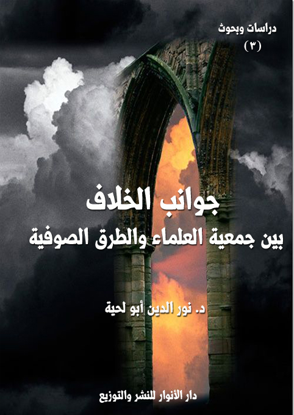

الكتاب: جوانب الخلاف بين الجمعية والطرق الصوفية وأسبابها
المؤلف: أ.د. نور الدين أبو لحية
الناشر: دار الأنوار للنشر والتوزيع
الطبعة: الثانية، 1437 هـ
عدد الصفحات: 457
ISBN: 978-3-330-97075-5
لمطالعة الكتاب من تطبيق مؤلفاتي المجاني وهو أحسن وأيسر: هنا

التعريف بالكتاب
حاولنا في هذا الجزء البحث عن أمهات القضايا التي وقع فيها الخلاف بين الجمعية والطرق الصوفية، والتي تجلت من خلال وسائل وأساليب التعامل بينهما، وهي نفس القضايا التي يقع فيها الخلاف دائما بين التيارات السلفية والمدارس الصوفية.
جوانب الخلاف بين الجمعية والطرق الصوفية وأسبابها (11)
بناء على ما سبق ذكره في الجزء السابق من تحديد التوجهات الفكرية للجمعية والطرق الصوفية وآثارها في التعامل بينهما، نحاول في هذا الجزء البحث عن أمهات القضايا التي وقع فيها الخلاف بين الجمعية والطرق الصوفية، والتي تجلت من خلال وسائل وأساليب التعامل بينهما.
وقد رأينا من خلال الاستقراء أنه يمكن تقسيمها إلى ثلاثة أقسام:
القسم الأول: الخلاف في مفهوم البدعة وضوابطها، باعتبار أن الجمعية ترمي الطرق الصوفية وممارساتها المختلفة بالبدعة، بينما ينكر رجال الطرق ذلك، وقد رأينا أن سبب ذلك يعود إلى اختلاف مفهوم البدعة بين المدرستين الفكريتين اللتين تنتمي إليهما الجمعية والطرق الصوفية.
القسم الثاني: الخلاف فيما تعتبره الطرق الصوفية منهجا ضروريا للسلوك الروحي، من ضرورة الشيخ والبيعة والخلوة وأصناف الأذكار ونحو ذلك، وهو جميعا مما حصل الخلاف بينها وبين الجمعية بسببه.
القسم الثالث: الخلاف في العرفان الصوفي، أو ما يسمى بالتصوف الفلسفي ومنهج الوصول إليه..
وقد خصصنا كل قسم من هذه الأقسام بفصل خاص، نحاول فيه أن نبرز جوانب الخلاف وأسبابه العلمية، مع ذكر أصوله وجذوره التاريخية.
جوانب الخلاف بين الجمعية والطرق الصوفية وأسبابها (12)
جوانب الخلاف بين الجمعية والطرق الصوفية حول مفهوم البدعة وضوابطهأ
يعتبر الموقف من البدعة وضوابطها من نقاط الخلاف الجوهرية الكبرى بين الجمعية والطرق الصوفية، بل بين الاتجاه السلفي بمختلف مدارسه والصوفية بمختلف فرقها وطرقها ومذاهبها.
ولهذا لا يمكن فهم تفاصيل ما جرى من خلاف بين الجمعية والطرق الصوفية في الكثير من فروع المسائل قبل معرفة هذا الأصل المهم، وهو ضبط معنى البدعة وحدودها لدى كل فريق من الفريقين.
وبما أن هذه المسألة قديمة، وقد أخذت حظها من كتب الفقه والأصول والمقاصد، والجمعية والطرق الصوفية لم يقوما فيها إلا بتبني بعض الاتجاهات ونصرتها، فإنه لزاما علينا أن نعود إلى المسألة في أبوابها الخاصة بها من كتب الفقه والأصول القديمة، والتي كانت المصدر الذي من خلاله تبنت الجمعية ومثلها الطرق الصوفية ما رأته من مواقف.
ولهذا، فإنه سيغلب على هذا البحث المنهج الفقهي المقارن، أي أننا سنذكر المسألة، ونحرر النزاع فيها، ثم نذكر أدلة كل فريق، ونحاول إن رأينا الحاجة إلى بعض الترجيحات فعلنا، وإلا تركنا الأمر للقارئ يحكم في المسألة بما يشاء.
وبناء على هذا، فقد قسمنا هذا الفصل إلى ثلاثة مباحث:
تناولنا في المبحث الأول: حقيقة البدعة وحكمها
وتناولنا في المبحث الثاني: موقف الجمعية من البدعة وأدلتها.
وتناولنا في المبحث الثالث: موقف الطرق الصوفية من البدعة وأدلتها.
جوانب الخلاف بين الجمعية والطرق الصوفية وأسبابها (13)
اسم من الابتداع، يقال: أبدع الشيء يبدعه بدعاً، وابتدعه: أنشأه وبدأه. والبدع والبديع: الشيء الذي يكون أولاً، وفي القرآن الكريم: {قُلْ مَا كُنْتُ بِدْعًا مِنَ الرُّسُلِ} [الأحقاف: 9] أي: ما كنت أول من أرسل بل أرسل قبلي رسل كثيرون، والبديع: من أسماء الله تعالى لإبداعه الأشياءوإحداثه إياها، وهو البديع الأول قبل كل شيء. وهو الذي بدع الخلق، أي بدأه، كما قال سبحانه: {بَدِيعُ السَّمَاوَاتِ وَالْأَرْضِ} [البقرة: 117] أي خالقها ومبدعها (1).
اختلفت تعريفات العلماء للبدعة بحسب موقفهم من تقسيمها إلى حسنة وسيئة، وشرعية ولغوية، ولهذا سنكتفي هنا بإيراد بعض التعاريف، ونترك تفاصيل ما يرتبط بالتعريف من أحكام إلى محله من هذا المبحث.
عرف ابن رجب البدعة بأنّها: (ما أُحدث مما لا أصل له في الشريعة يدّل عليه، أما ما كان له أصل من الشرع يدّل عليه فليس ببدعة شرعاً وإنْ كان بدعة لغةً) (2)
وعرفها ابن حجر العسقلاني بأنها (ما أُحدث وليس له أصل في الشرع، ويسمّى في عرف الشرع بدعة، وما كان له أصل يدلُّ عليه الشرع فليس ببدعة) (3)
__________
(1) انظر: لسان العرب، لابن منظور 8: 6 مادة (بدع)
(2) ابن رجب الحنبلي، جامع العلوم والحكم، طبع الهند، ص 160.
(3) ابن حجر العسقلاني، فتح الباري، 17: 9.
جوانب الخلاف بين الجمعية والطرق الصوفية وأسبابها (14)
وعرفها ابن حجر الهيثمي بأنها (ما أُحدث على خلاف أمر الشرع ودليله الخاص أو العام) (1)
اختلف الفقهاء في حكم البدعة إلى اتجاهين متناقضين، أحدهما متشدد يرى أن كل البدع سيئة مذمومة محرمة، والفريق الثاني متساهل، يرى أنه تنطبق عليها الأحكام الشرعية جميعا من الإباحة والحرمة والكراهة والندب، بل والوجوب.
وبما أن مواقف الجمعية والطرق الصوفية لا تعدو أن تكون اختيارا ونصرة لأحد هذين الاتجاهين، فإن المنهج العلمي يلزمنا أن نبحث في جذور الخلاف في هذه المسألة لدى الفريقين.
ويمثله ــ كما ذكرنا ــ الشاطبي خاصة في كتابه الاعتصام، والذي عرف البدعة بأنها (طريقة في الدين مخترعة تضاهي الشرعية يقصد بالسلوك عليها المبالغة في التعبد لله سبحانه) (2)
وبين أن اسم البدعة لا ينطبق إلا على ما يرتبط بالدين، يقول في ذلك: (وإنما قيدت بالدين، لأنها فيه تخترع وإليه يضيفها صاحبها. وأيضاً فلو كانت طريقة مخترعة في الدنيا على الخصوص لم تسمَّ بدعة، كإحداث الصنائع والبلدان التي لاعهد بها فيما تقدم) (3)
ثم بين خروج الكثير من العلوم الحادثة في الملة من مسمى البدعة باعتبار أن لها أصولا سابقة في الشريعة، وكأنه يرد بذلك على الاتجاه الآخر، والذي يعتبر تلك العلوم من البدع المستحسنة أو الواجبة، يقول الشاطبي: (ولما كانت الطرائق في الدين تنقسم، فمنها ماله أصل في الشريعة، ومنها ما ليس له أصل فيها، خُصَّ منها ما هو المقصود بالحد، وهو القسم المخترع،
__________
(1) ابن حجر الهيتمي، التبيين بشرح الاربعين، ص 221.
(2) أبو إسحاق الشاطبي، الاعتصام، المكتبة التجارية الكبرى – مصر، (1/ 37)
(3) أبو إسحاق الشاطبي، الاعتصام، (1/ 37)
جوانب الخلاف بين الجمعية والطرق الصوفية وأسبابها (15)
أي: طريقة ابتدعت على غير مثال تقدمها من الشارع... وبهذا القيد انفصلت عن كل ما ظهر لبادي الرأي أنه مخترع مما هو متعلق بالدين، كعلم النحو والتصريف ومفردات اللغة وأصول الفقه وأصول الدين، وسائر العلوم الخادمة للشريعة) (1)
وعلل ذلك بقوله: (فإنها وإن لم توجد في الزمان الأول فأصولها موجودة في الشرع، إذ الأمر بإعراب القرآن منقول، وعلوم اللسان هادية للصواب في الكتاب والسنة، فحقيقتها إذاً أنها فقه التعبد بالألفاظ الشرعية الدالة على معانيها كيف تؤخذ وتؤدى، وأصول الفقه إنما معناها: استقراء كليات الأدلة حتى تكون عند المجتهد نصب عين وعند الطالب سهلة الملتمس) (2)
وإلى هنا نرى اتفاق كلا الاتجاهين على مشروعية كل ما أحدث في أمور الدنيا، أو أمور الدين مما له أصل في الشريعة على اختلاف في التسمية، فالشاطبي لا يعتبرها بدعة مطلقا، بينما يراها أصحاب الاتجاه الأول بدعا مستحسنة.
ونقطة الخلاف تبدأ، وربما تنتهي في القيد الذي أطلق عليه الشاطبي (مضاهاة الشرعية)، قال الشاطبي شارحا لهذا القيد: (وقوله: تضاهي الشرعية، يعني أنها تشابه الطريقة الشرعية من غير أن تكون في الحقيقة كذلك، بل هي مضادة لها من أوجه متعددة: منها: التزام الكيفيات والهيئات المعينة، كالذكر بهيئة الاجتماع على صوت واحد، واتخاذ يوم ولادة النبي صلى الله عليه وآله وسلم عيداً، وما أشبه ذلك.. ومنها التزام العبادات المعينة في أوقات معينة لم يوجد لها ذلك التعيين في الشريعة، كالتزام صيام يوم النصف من شعبان وقيام ليلته..) (3)
فالشاطبي ومدرسته يعتبر كل ما لم يرد في النصوص من أمور العبادات بدعة، حتى لو
__________
(1) أبو إسحاق الشاطبي، الاعتصام، (1/ 37)
(2) أبو إسحاق الشاطبي، الاعتصام، (1/ 37)
(3) أبو إسحاق الشاطبي، الاعتصام، (1/ 38)
جوانب الخلاف بين الجمعية والطرق الصوفية وأسبابها (16)
كان له أصل في الشريعة إذا لم ترد النصوص بفعله من النبي صلى الله عليه وآله وسلم أو السلف الصالح، وهي نقطة الخلاف بينه وبين الاتجاه الآخر.
فالاتجاه الآخر - مثلا- لا يرى حرجا في الذكر الجماعي بصوت واحد ما دام يدخل في أصل الذكر الذي ورد في النصوص الحث عليه من غير تقييد له بكيفية ولا هيئة.
بينما يرى هذا الاتجاه أنه ما دام لم يرد في النصوص أن الرسول صلى الله عليه وآله وسلم فعله، أو السلف الصالح فعلوه، فإنه بدعة، وكل بدعة ضلالة.
ويرى الشاطبي أن العلة الدافعة إلى هذه المضاهاة هو (المبالغة في التعبد لله تعالى.. فكأن المبتدع رأى أن المقصود هذا المعنى، ولم يتبين له أن ما وضعه الشارع فيه من القوانين والحدود كافٍ) (1)
والدافع النفسي لذلك بالإضافة إلى المضاهاة - كما يرى الشاطبي - هو ملل النفوس من العبادات والشرائع المضبوطة وطلبها للجديد، يقول في ذلك: (وأيضاً فإن النفوس قد تمل وتسأم من الدوام على العبادات المرتبة، فإذا جدد لها أمر لا تعهده، حصل لها نشاط آخر لايكون لها مع البقاء على الأمر الأول. ولذلك قالوا: (لكل جديد لذة بحكم هذا المعنى)، كمن قال (تحدث للناس أقضية بقدر ما أحدثوا من الفجور) فكذلك (تحدث لهم مرغبات في الخير بقدر ما حدث لهم من الفتور) (2)
وبناء على هذا أنكر الشاطبي تقسيم البدع واعتبر أن (هذا التقسيم أمر مخترع لا يدل عليه دليل شرعي، بل هو في نفسه متدافع؛ لأن من حقيقة البدعة أن لا يدل عليها دليل شرعي لا من نصوص الشرع ولا من قواعده، إذ لو كان هنالك ما يدل من الشرع على وجوب أو ندب أو إباحة لَمَا كان ثَمّ بدعة ولكان العمل داخلاً في عموم الأعمال المأمور بها أو المُخيَّر فيها.
__________
(1) أبو إسحاق الشاطبي، الاعتصام، (1/ 40)
(2) أبو إسحاق الشاطبي، الاعتصام، (1/ 41)
جوانب الخلاف بين الجمعية والطرق الصوفية وأسبابها (17)
فالجمع بين تلك الأشياء بدعاً وبين كون الأدلة تدل على وجوبها أو ندبها أو إباحتها: جمع بين متنافيين) (1)
ونحب أن نبين أن هذا الموقف المتشدد من البدع انتهجته مدرستان فقهيتان قديمتان، هما مدرسة المالكية ومدرسة الحنابلة، فقد كان لكليهما موقف متشدد من المحدثات بغض النظر عما يدل عليها من النصوص.
ولهذا نرى الإمام مالك يعتمد عمل أهل المدينة، وكأنه يرى بذلك عصمة السلف الذين مثلهم أهل المدينة حسب تصوره، ولعل خير مثال يدل على هذا موقفه من التثويب (2) في الأذان، فقد روى محمد بن وضاح قال: ثوب المؤذن بالمدينة في زمان مالك، فأرسل إليه مالك، فجاءه، فقال له مالك: ما هذا الذي تفعل؟ قال: أردت أن يعرف الناس طلوع الفجر فيقوموا فقال له مالك لا تفعل لا تحدث في بلدنا شيئا لم يكن فيه قد كان رسول الله صلى الله عليه وآله وسلم بهذا البلد عشر سنين وأبو بكر وعمر وعثمان فلم يفعلوا هذا، فلا تحدث في بلدنا ما لم يكن فيه. فكف المؤذن عن ذلك وأقام زمانا، ثم إنه تنحنح في المنارة عند طلوع الفجر، فأرسل إليه مالك فقال له: ما هذا الذي تفعل؟ قال أردت أن يعرف الناس طلوع الفجر. فقال له مالك: ألم أنهك ألا تحدث عندنا ما لم يكن؟ فقال: إنما نهيتني عن التثويب، فقال له مالك: لا تفعل، لا تحدث في بلدنا ما لم يكن فيه. فكف أيضا زمانا، ثم جعل يضرب الأبواب، فأرسل مالك إليه فقال له: ما هذا
__________
(1) أبو إسحاق الشاطبي، الاعتصام، (1/ 191)
(2) التثويب عند الفقهاء: هو أن يقول المؤذن في أذان الصبح بعد قوله: (حي على الفلاح": (الصلاة خير من النوم" مرتين، وسمي تثويبا، لأن الؤذن دعا إلى الصلاة أولا بقوله: (حَيَّ عَلَى الصَّلاَةِ حَيَّ عَلَى الصَّلاَةِ"، ثم دعا إلى الفلاح بقوله: (حَيَّ عَلَى الفَلاَحِ، حَيَّ عَلَى الفَلاَحِ"، ثم عاد للدعاء إلى الصلاة: (الصَّلاَةُ خَيرٌ مِن النَّومِ، الصَّلاَةُ خَيرٌ مِن النَّومِ"، ويطلق التثويب أيضا على الإقامة، كما في حديث أبي هريرة أن رسول الله صلى الله عليه وسلم قال: ((إِذَا نُودِيَ لِلصَّلاَةِ أَدبَرَ الشَّيطَانُ لَهُ ضُرَاطٌٌ، حَتَّى لاَ يَسمَعَ التَّأذِينَ، فَإِذَا قُضِيَ التَّأذِينُ أَقَبَلَ، حتى إذا ثوّب بالصلاة أدبر حَتَّى إذَا قضي التثويب أقبل، حتى يخطر بين المر ونفسه، يقول له: (اذكر كذا، واذكر كذا"، لما لم يكن من قبل، حتّى يظل الرّجل ما يدري كم صلّى)) (البخاري (2/ 101)، ومسلم (1/ 291)
جوانب الخلاف بين الجمعية والطرق الصوفية وأسبابها (18)
الذي تفعل؟ قال: أردت أن يعرف الناس طلوع الفجر، فقال له مالك: لا تفعل، لا تحدث في بلدنا ما لم يكن فيه) (1)
فهذا النص يبين شدة الإمام مالك عن كل محدث حتى لو كان معقول المعنى، ولهذا روى عنه ابن الماجشون قوله: (من ابتدع في الإسلام بدعة يراها حسنة زعم أن محمداً صلى الله عليه وآله وسلم خان الرسالة، لأن الله يقول: {الْيَوْمَ أَكْمَلْتُ لَكُمْ دِينَكُمْ} [المائدة: 3]، فما لم يكن يومئذ ديناً فلا يكون اليوم ديناً) (2)
وهو الذي كان يقول: (لن يصلح آخر هذه الأمة إلا بما صلح به أولها، فما لم يكن يومئذ دينا لا يكون اليوم دينا) (3)
ولهذا نرى أن لتبني الجمعية لمذهب الإمام مالك تأثيره الكبير في موقفها من الطرق الصوفية، ولهذا تستند إلى منهجه كثيرا في الرد عليها، وقد ورد في بعض ردود ابن باديس على بعضهم: (ثم يقول (نحن مالكيون) ومن ينازع في هذا وما يقرئ علماء الجمعية الا فقه مالك وياليت الناس كانوا مالكية حقيقة اذا لطرحوا كل بدعة وضلالة فقد كان مالك كثيرا ما ينشد:
وخير الأمور ما كان سنة... وشر الأمور المحدثات البدائع) (4)
بالإضافة إلى المدرسة المالكية نرى المدرسة الحنبلية، وخير من يمثلها في الموقف من البدع الشيخ ابن تيمية الذي رد بشدة على من يرى تقسيم البدعة إلى حسنة وسيئة، يقول في ذلك (واعلم أن هذه القاعدة، وهي: الاستدلال بكون الشيء بدعة على كراهته، قاعدة عامة عظيمة،
__________
(1) الاعتصام ـ للشاطبى (2/ 69)
(2) الاعتصام (1/ 49)
(3) انظر: العلامة القاضي أبو الفضل عياض اليحصبي، الشفا بتعريف حقوق المصطفى - مذيلا بالحاشية المسماة مزيل الخفاء عن ألفاظ الشفاء، دار الفكر الطباعة والنشر والتوزيع، ج 2، ص 88.
(4) آثار ابن باديس: 2/ 238.
جوانب الخلاف بين الجمعية والطرق الصوفية وأسبابها (19)
وتمامها بالجواب عما يعارضها، وذلك أن من الناس من يقول: البدع تنقسم إلى قسمين: حسنة وقبيحة.. والجواب: أما القول: إن شر الأمور محدثاتها، وإن كل بدعة ضلالة، وكل ضلالة في النار، والتحذير من الأمور المحدثات: فهذا نص رسول الله صلى الله عليه وآله وسلم، فلا يَحِل لأحد أن يدفع دلالته على ذم البدع، ومن نازع في دلالته فهو مراغم) (1)
ويرى هذا الفريق أنه ليست كل البدع محرمة، وإنما تنطبق عليها الأحكام الشرعية الخمسة، وقد اشتهر بهذا القول العز بن عبد السلام، كما اشتهر بالقول الآخر الشاطبي، ولكن الحقيقة التاريخية تبين أن المسألة قديمة، وأن تقسيم البدعة إلى مستحسن ومستهجن بدأ من السلف الأول، بل من جيل الصحابة أنفسهم.
فقد روي أن عمر بن الخطاب اعتبر صلاة التراويح بدعة، ومع ذلك أقرها، بل أثنى عليها، ففي الحديث عن عبد الرحمن بن عبد القاري أنه قال: خرجت مع عمر بن الخطاب ليلة في رمضان إلى المسجد، فإذا الناس أوزاع متفرقون يصلي الرجل لنفسه، ويصلي الرجل فيصلي بصلاته الرهط، فقال عمر: إني أرى لو جمعت هؤلاء على قارئ واحد لكان أمثل، ثم عزم فجمعهم على أبي بن كعب، ثم خرجت معه ليلة أخرى والناس يصلون بصلاة قارئهم، قال عمر: (نعمت البدعة هذه والتي ينامون عنها أفضل من التي يقومون) يريد آخر الليل، وكان الناس يقومون أوله (2).
وروي عن ابن عمر مثله في صلاة الضحى، فقد روي عن الأعرج قال: سألت ابن عمر عن صلاة الضحى فقال: بدعة، ونعمت البدعة، وقد قال تعالى حاكياً عن أهل الكتاب: {رَهْبَانِيَّةً ابْتَدَعُوهَا مَا كَتَبْنَاهَا عَلَيْهِمْ إِلَّا ابْتِغَاءَ رِضْوَانِ اللَّهِ فَمَا رَعَوْهَا حَقَّ رِعَايَتِهَا} [الحديد:
__________
(1) الاقتضاء، (2/ 87).
(2) صحيح البخاري (3/ 58)
جوانب الخلاف بين الجمعية والطرق الصوفية وأسبابها (20)
27] (1)
بل إن الفقهاء الكبار قسموا البدع هذا التقسيم، فقد روي عن الشافعي أنه قال: (البدعة بدعتان: بدعة محمودة، وبدعة مذمومة، فما وافق السنة فهو محمود، وما خالف السنة فهو مذموم) (2)
وقال ابن حزم: (البدعة في الدين كل ما لم يأت في القرآن، ولا عن رسول الله صلى الله عليه وآله وسلم إلا أن منها ما يُؤجر عليه صاحبه، ويعذر بما قصد إليه من الخير، ومنها ما يؤجر عليه ويكون حسناً، وهو ما كان أصله الإباحة، كما روي عن عمر: (نعمت البدعة هذه)، وهو ما كان فعل خير وجاء النص بعمومه استحباباً، وإن لم يقرر عمله في النص، ومنها ما يكون مذموماً ولا يعذر صاحبه، وهو ما قامت الحجة على فساده فتمادى القائل به) (3)
وقال أبو حامد الغزالي: (وما يقال إنه أبدع بعد رسول الله صلى الله عليه وسلم، فليس كل ما أبدع منهياً عنه، بل المنهي عنه بدعة تضاد سنة ثابتة وترفع أمراً من الشرع مع بقاء علته، بل الإبداع قد يجب في بعض الأحوال إذا تغيرت الأسباب) (4)
وقال ابن الأثير: (البدعة بدعتان: بدعة هدى، وبدعة ضلال. فما كان في خلاف ما أمر الله به ورسوله صلى الله عليه وآله وسلم فهو في حَيِّز الذم والإنكار، وما كان واقعاً تحت عموم ما ندب الله إليه وحضّ عليه الله ورسوله: فهو في حَيِّز المدح) (5)
ولكن الذي نظر لهذا، ودافع عنه، حتى اشتهر به هو العز بن عبد السلام، فقد قال في كتابه الذي خصصه لمقاصد الشريعة، وسماه (قواعد الأحكام في مصالح الأنام): (البدعة فعل ما لم
__________
(1) ابن أبي شيبة، مصنف ابن أبي شيبة، الدار السلفية الهندية، (2/ 405)
(2) أبو نعيم، حلية الأولياء، (9/ 113)
(3) ابن حزم، الإحكام في أصول الأحكام، دار الآفاق الجديدة، بيروت، (1/ 47)
(4) إحياء علوم الدين (2/ 3)
(5) المبارك بن محمد الجزري بن الاثير مجد الدين أبو السعادات، النهاية في غريب الحديث، المكتبة الإسلامية، (1/ 106)
جوانب الخلاف بين الجمعية والطرق الصوفية وأسبابها (21)
يُعْهَد في عصر رسول الله صلى الله عليه وآله وسلم وهي منقسمة إلى: بدعة واجبة وبدعة مُحَرَّمة، وبدعة مندوبة، وبدعة مكروهة، وبدعة مباحة. والطريق في معرفة ذلك أن تُعْرَض البدعة على قواعد الشريعة: فإن دخلت في قواعد الإيجاب فهي واجبة، وإن دخلت في قواعد التحريم فهي مُحَرَّمة، وإن دخلت في قواعد المندوب فهي مندوبة، وإن دخلت في قواعد المكروه فهي مكروهة، وإن دخلت في قواعد المباح فهي مباحة) (1)
وتبعه على هذا الكثير من الفقهاء الذين انتشرت كتبهم ودرست في المدارس الإسلامية فترة طويلة، كالإمام النووي (2)، والحافظ ابن حجر (3).
بل إن الكثير ممن كتب في ذم البدع ذهب إلى هذا الرأي:
فأبو شامة في كتابه (الباعث على إنكار البدع والحوادث) يقول: (ثم الحوادث منقسمة إلى بدع مستحسنة، وبدع مستقبحة) (4)
ومن المتأخرين الشيخ عبد الله الصديق الغماري، فقد قال في كتابه (القول المبين): (قَسّم عز الدين بن عبد السلام في قواعده الكبرى البدعة باعتبار استعمالها على المصلحة والمفسدة، أو خُلُوّها عنهما إلى أقسام الحكم الخمسة: الوجوب والندب والحرمة والكراهة والإباحة، ومَثّل لكل قسم منها، وذكر ما يشهد له من قواعد الشريعة. وكلامه في ذلك كلام ناقد بصير، أحاط
__________
(1) أبو محمد عز الدين عبد العزيز بن عبد السلام بن أبي القاسم بن الحسن السلمي الدمشقي، قواعد الأحكام في مصالح الأنام، تحقيق: محمود بن التلاميد الشنقيطي، دار المعارف، بيروت – لبنان، (2/ 172)
(2) قال النووي في (شرح النووي على مسلم (3/ 247): (قال العلماء: البدعة خمسة أقسام: واجبة ومندوبة ومحَرَّمة ومكروهة ومباحة).
(3) قال في فتح الباري: (التحقيق: أن البدعة إن كانت مما تندرج تحت مستحسن في الشرع فهي حسنة، وإن كانت مما تندرج تحت مستقبح في الشرع هي مستقبحة، وإلا فهي من قسم المباح) (أحمد بن علي بن حجر أبو الفضل العسقلاني الشافعي، فتح الباري شرح صحيح البخاري، دار المعرفة - بيروت، 1379، 4/ 253)
(4) عبد الرحمن بن إسماعيل أبو شامة، الباعث على إنكار البدع والحوادث، دار الهدى – القاهرة، الطبعة الأولى، 1398 – 1978، ص 22.
جوانب الخلاف بين الجمعية والطرق الصوفية وأسبابها (22)
خُبْراً بالقواعد الفقهية، وعرف المصالح والمفاسد التي اعتبرها الشارع في ترتيب الأحكام على وفقها. ومن مثل سلطان العلماء في معرفة ذلك؟ فجاء تقسيمه للبدعة مؤسساً على أساسٍ من الفقه وقواعدِهِ متين؛ ولذا وافقه عليه الإمام النووي والحافظ ابن حجر وجمهور العلماء تَلقّوا كلامه بالقبول، ورأوا أن العمل به متعين في النوازل والوقائع التي تحدث مع تطور الزمان وأهله، حتى جاء صاحب (الاعتصام) فخرج عن جمهرة العلماء، وشَذّ بإنكار هذا التقسيم فَبَرْهَن بهذا الإنكار على أنه بعيد عن معرفة الفقه، بعيد عن قواعده المبنيَّة على المصالح والمفاسد لا يعرف ما فيه مصلحة فيطلب تحصيلها بفعله، ولا يَدْري ما فيه مفسدة فيطلب اجتنابها بتركه ولا ما خلا عنهما فيجوز فعله وتركه على السواء. وأخيراً برهن على أنه لم يَتَذوَّق علم الأصول تذوقاً يمكّنه من معرفة وجوه الاستنباط، وكيفية استعمالها، والتصرف فيها بما يناسب الوقائع، وإن كان له في الأصول كتاب (الموافقات) فهو كتاب قليل الجدوى، عديم الفائدة، وإنما هو بارع في النحو له فيه شرح على ألفية ابن مالك في أربعة مجلدات دَلَّ على مقدرته في علم العربية، على أنا وإن كنا نعلم أن للشاطبي دراية بعلم أصول الفقه على سبيل المشاركة: فلا نشك في أن سلطان العلماء فيه أمكن، وعلمه بقواعده أتم، وقواعده الكبرى خير شاهد على ذلك) (1)
ومنهم – كذلك – الشيخ محمد الطاهر بن عاشور شيخ المقاصد ومعلمها في هذا العصر، والذي تتلمذ عليه الشيخ عبد الحميد بن باديس، فهو من القائلين بانقسام البدع، وقد حصل بينه وبين ابن باديس خلاف شديد في هذا، رأينا بعض صوره عند الحديث عن الاتجاه الفكري للجمعية.
__________
(1) عبد الله بن الصديق الحسني الغماري، الرد المحكم المتين على كتاب القول المبين، مطبعة العهد الجديد، الطبعة الثانية، سنة 1374 هـ - 1955 م، ص 107.
جوانب الخلاف بين الجمعية والطرق الصوفية وأسبابها (23)
موقف الجمعية من البدعة وأدلتها.
بناء على ما سبق إثباته من أن جمعية العلماء المسلمين الجزائريين انتهجت المنهج السلفي بمدرستيه المحافظة والتنويرية، وبناء على تبنيها لمنهج الإمام مالك في مواجهة جميع المحدثات، فإنه من البديهي أن تختار الاتجاه الذي يرى أن كل البدع ضلالة، وأنه لا صحة لتقسيمها لمقبولة ومرفوضة، وهذا الرأي – كما عرفنا- هو الرأي الذي اشتهر به الشاطبي، واشتهر به كتابه (الاعتصام)، والذي كانت توليه الجمعية عناية خاصة، كما كان يوليه الاتجاه السلفي بفرعيه المحافظ والتنويري.
وسنحاول في هذا المبحث أن نبين موقف الجمعية من تحديد مفهوم البدعة، وأنواعها، وضوابطها، ثم نذكر الأدلة على ما ذهبت إليه من ذلك مع ذكر مناقشات المخالفين لها.
المطلب الأول حقيقة البدعة عند الجمعية
يعرف ابن باديس البدعة بأنها (كل ما أحدث على أنه عبادة وقربة ولم يثبت عن النبي صلى الله عليه وآله وسلم فعله وكل بدعة ضلالة) (1)
ويقول في موضع آخر: (من أبين المخالفة عن أمره صلى الله عليه وآله وسلم وأقبحها الزيادة في العبادة التي يتعبد الله بها على ما مضى من سنته فيها واحداث محدثات على وجه العبادة في مواطن مرت عليه ولم يتعبد بمثل ذلك فيها وكلا هذين زيادة واحداث مذموم يكون مرتكبه كمن يرى أنه اهتدى الى طاعة لم يهتد اليها رسول الله صلى الله عليه وآله وسلم وسبق الى فضيلة قصر رسول الله صلى الله عليه وآله وسلم عنها وكفى بهذا وحده فتنة وبلاء ودع ما يجر اليه من بلايا أخرى) (2)
ويضرب الأمثلة على ذلك، وهي أمثلة تقترب كثيرا من الأمثلة التي تذكرها السلفية
__________
(1) آثار ابن باديس، 5/ 154.
(2) آثار ابن باديس، 1/ 224.
جوانب الخلاف بين الجمعية والطرق الصوفية وأسبابها (24)
المحافظة، بل كما يذكرها الشيخ محمد بن عبد الوهاب خصوصا، يقول في الآثار: (من الناس من يخترع أعمالا من عند نفسه ويتقرب بها الى الله مثل ما اخترع المشركون عبادة الاوثان بدعائها والذبح عليها والخضوع لديها وانتظار قضاء الحوائج منها وهم يعلمون أنها مخلوقة مملوكة له وانما يعبدونها-كما قالوا-لتقربهم الى الله زلفى.... وكما اخترع طوائف من المسلمين الرقص والزمر والطواف حول القبور والنذر لها والذبح عندها ونداء أصحابها وتقبيل أحجارها ونصب التوابيت عليها وحرق البخور عندها وصب العطور عليها فكل هذه اختراعات فاسدة ليست من سعي الآخرة الذي كان يسعاه محمد صلى الله عليه وآله وسلم وأصحابه من بعده فساعيها موزور غير مشكور) (1)
وهذا النوع من الأعمال هو ما اصطلح عليه التيار السلفي بالبدع الحقيقية.
وهناك نوع آخر يطلقون عليه (البدع الإضافية)، ويريدون به تقييد ما ورد من الشعائر التعبدية بمواقيت أو أعداد ونحوها، وقد تحدث ابن باديس كذلك عن هذا النوع واعتبره من بدع الضلالة مخالفا بذلك أصحاب الفريق الأول الذي يرى أن هذا الصنف لا يشمله وصف الضلالة وإن شمله وصف البدعة، يقول في بيان ذلك: (إن ما ورد من العبادة مقيدا بقيده يلتزم قيده وما ورد منها مطلقا يلتزم اطلاقه فالآتي بالعبادة المقيدة دون قيدها مخالف لأمر الشرع ووضعه والآتي بالعبادة المطلقة ملتزما فيها ما جعله بالتزامه كالقيد مخالف كذلك لأمر الشرع ووضعه وهو أصل في جميع العبادات) (2)
بل إن الأمر وصل بالشيخ ابن باديس إلى التشدد حتى في ما ورد في الشرع إطلاقه من كل قيد، وهو مما لم يقل به حتى بعض من ينتمي إلى التيار السلفي المحافظ، يقول في ذلك: (وكذلك التزامها في وقت مخصوص بشكل مخصوص كما تلتزم الطاعات التي فرضها الشارع وجعل لها
__________
(1) الآثار (87/ 1.
(2) الآثار (2/ 57.
جوانب الخلاف بين الجمعية والطرق الصوفية وأسبابها (25)
أوقاتا، فان هذا ليس مما يتسع له صدر الدين ولا مما كان في عهد السلف الصالحين ولاسيما مع التكلف الذي كثر من يرتكبه بالزام وبغير الزام) (1)
وهو يفرق في هذا بين العبادات والمعاملات، يقول في ذلك: (ما يجري به عمل الناس ينقسم الى قسمين قسم المعاملات وقسم العبادات، وقسم المعاملات هو الذي يتسع النظر فيه للمصلحة والقياس والأعراف وهو الذي تجب توسعته على الناس بسعة مدارك الفقه وأقوال الأئمة والاعتبارات المتقدمة وفي هذا القسم جاء كلام أبي سعيد هذا وغيره وفيه نقله الفقهاء أو ما تراه كيف يعبر بالعرف والعادة؟ وأما قسم العبادات فانه محدود لا يزاد عليه ولا ينقص منه فلا يقبل منه إلا ما ثبت عن النبي صلى الله عليه وآله وسلم فلا يتقرب الا بما تقرب به وعلى الوجه الذي كان تقربه به ومن نقص فقد أخل ومن زاد فقد ابتدع وشرع وذلك هو الظلام والضلال) (2)
المطلب الثاني أدلة الجمعية على موقفها من البدعة
كما اهتمت الجمعية بالتشدد مع ما تراه من البدع، اهتمت كذلك ببيان ما تستند إليه من مصادر وأدلة على ذلك، وهي لا تعدو الأدلة التي ذكرها الشاطبي في الاعتصام، فهو الكتاب الذي نال عندها أهمية قصوى، بل نرى البشير الإبراهيمي ينتصر لهذا الكتاب، ويعتبره أكمل كتاب في تحرير معنى البدعة والسنة، ففي رسالة خطية بعث بها الإبراهيمي - وهو بمنفاه بـ (آفْلُو) - إلى تلميذه الشيخ أحمد بن أبي زيد قصيبة الأغواطي... وفي طياتها يجيبه طلبه؛ حيث سأله أن يذكر له جملة من الكتب الأصول، قال الإبراهيمي بعدما ذكر مجموعة من كتب الأدب واللغة، وكتب السيرة وغيرها: (كتاب الاعتصام للشاطبي. وهو أكمل كتاب في تحرير معنى البدعة والسنة)
ونرى كذلك الشيخ زموشي يقوم بتلخيص أهم مباحث كتاب (الاعتصام)، بأسلوب
__________
(1) الآثار: 3/ 235.
(2) آثار ابن باديس: 3/ 248.
جوانب الخلاف بين الجمعية والطرق الصوفية وأسبابها (26)
سهل مبسط، وينشره في (الشهاب) تحت عنوان: (بحثٌ في البدعة) (1)
وقد بدأ بحثه بذكر تقسيم العز بن عبد السلام للبدع، وتفاصيل ذلك، ثم رد الشاطبي عليه، وهو يدل على أن الجمعية مطلعة تماما على ما ذكره العز، وأنها اختارت عن قناعة مذهب الشاطبي.
بعد هذا، ومن خلال ما ذكرناه من مصادر نستطيع تصنيف أدلة الجمعية على هذا الموقف إلى الأدلة التالي:
وعلى رأس هذه النصوص قوله تعالى: {الْيَوْمَ أَكْمَلْتُ لَكُمْ دِينَكُمْ وَأَتْمَمْتُ عَلَيْكُمْ نِعْمَتِي وَرَضِيتُ لَكُمُ الْإِسْلَامَ دِينًا} [المائدة: 3]، فالآية الكريمة – كما هو واضح- تدل على تمامِ الشريعة وكمالها، وكفايتها لكل ما يحتاجه الخلق.
وقد استدل بالآية الشيخ عبد الحميد بن باديس على ذم البدع مطلقا، فقد قال في معرض رده على الشيخ ابن عاشور: (إن من ابتدع مثل هذه البدعة التي هي تقرب فيما لم يكن قربة كأنه يرى أن طاعة لله بقيت تنقص هذه الشريعة فهو يستدركها وأن محمدا صلى الله عليه وآله وسلم خفيت عليه قربة هو اهتدى إليها أو لم تخف عليه ولكنه كتمها. وهذه كلها مهلكات لصاحبيها فلا يكون ما أوقعه فيها من ابتداع تلك التي يحسبها قربة إلا محرما. وقد قال مالك فيما سمعه من ابن الماجشون: (من ابتدع في الإسلام بدعة يراها حسنة فقد زعم أن محمدا- صلى الله عليه وآله وسلم- خان الرسالة لأن الله يقول:: {الْيَوْمَ أَكْمَلْتُ لَكُمْ دِينَكُمْ} [المائدة: 3] فما لم يكن يومئذ دينا فلا يكون اليوم دينا) (2)
كما استدل بالآية كل من ذهب إلى ذم البدع بجميع أنواعها، يقول الشوكاني في (القول
__________
(1) الشهاب"،س 4، العدد (164)، 6 ربيع الثاني 1347 هـ -20 سبتامبر 1928، (ص:6 - 10)
(2) في الآثار (3/ 79).
جوانب الخلاف بين الجمعية والطرق الصوفية وأسبابها (27)
المفيد) في معرض مناقشته لبعض من يتصورهم مبتدعة: (فإذا كان الله قد أكمل دينه قبل أن يقبض نبيه - صلى الله عليه وسلم - فما هذا الرأي الذي أحدثه أهله بعد أن أكمل الله دينه؟! إن كان من الدين في اعتقادهم؛ فهو لم يكمل عندهم إلا برأيهم وهذا فيه رد للقرآن! وإن لم يكن من الدين؛ فأي فائدة في الاشتغال بما ليس من الدين؟! وهذه حجة قاهرة، ودليل عظيم، لا يمكن لصاحب الرأي أن يدفعه بدافع أبداً، فاجعل هذه الآية الشريفة أول ما تصك به وجوه أهل الرأي، وترغم به آنافهم وتدحض به حججهم) (1)
ويقول الشاطبي: (إن المستحسِن للبدعِ يلزمه عادة أن يكون الشرع عنده لم يكمل بعد، فلا يكون لقوله تعالى: {الْيَوْمَ أَكْمَلْتُ لَكُمْ دِينَكُمْ} [المائدة: 3] معنى يعتبر به عندهم) (2)
وقد أجاب على هذا الاستدلال الشيح ابن عليوة بتفصيل في رسالة كتب بها لبعض المخالفين، وهي رسالة مهمة جدا ترقى إلى مستوى المناقشات العلمية الهادفة المحترمة، ونحاول هنا باختصار عرض هذه الرسالة، ووجوه الاستدلال فيها.
بدأ الشيخ ابن عليوة مخاطبة المخالف له وللصوفية من غير أن يحدد من هو المخالف، بقوله: (أراني ملزما يا حضرة الأخ بذكر أمر طالما تردّد ذكره في مكاتباتكم، كمكاتبات غيركم من بعض كتّاب العصر، وقد جئتم به في هذا الكتاب الأخير أيضا بقصد الاستدلال على محدثات المتصوّفة، وأنّها ليست من الدين في شيء، وأكبر عمدتكم في ذلك قوله تعالى: {الْيَوْمَ أَكْمَلْتُ لَكُمْ دِينَكُمْ} [المائدة: 3]، تريدون بذلك أنّ ما لم يكن دينا في ذلك الحين، ليس هو بدين من بعد) (3)
وبعد هذه المقدمة بدأ الشيخ في عرض الأدلة التي ترد على من يعتبر الآية دليلا على كون
__________
(1) محمد بن علي بن محمد الشوكاني، القول المفيد في أدلة الاجتهاد والتقليد، دار القلم – الكويت، الطبعة الأولى، 1396، ص 38.
(2) الاعتصام ـ للشاطبى موافق للمطبوع (1/ 111)
(3) ابن عليوة، أعذب المناهل في الأجوبة والمسائل، نقلا عن: صفحات مطوية في التصوف الإسلامي، ص 138.
جوانب الخلاف بين الجمعية والطرق الصوفية وأسبابها (28)
محدثات الصوفية بدعة، وأنها بدعة ضلالة، وهو يعتمد في ذلك على منهج إلزام الآخر بلوازم قوله، وهذه اللوازم تتدرج من إنكار جميع اجتهادات المجتهدين إلى إنكار أحاديث رسول الله صلى الله عليه وآله وسلم نفسه التي قالها بعد نزول الآية الكريمة، بل إلى إنكار ما ورد في القرآن الكريم من الأحكام بعد نزول الآية، أو ما هو قبل ذلك مما نجهل تاريخ نزوله.
أما بالنسبة للزوم إنكار جميع اجتهادات المجتهدين في جميع فروع الدين، فالأمر فيها واضح ذلك أن نصوص الكتاب والسنة لم تحط بتفاصيل الفروع، بل اقتصرت على أصول المسائل وطرق الاستنباط وكثير من الجزئيات، وتركت لأهل العلم – بعد ذلك - أن يستنبطوا من النصوص ما يحقق المقاصد الشرعية التي جاءت النصوص لتقريرها، يقول الشيخ ابن عليوة في ذلك: (وهذا شيء جميل، لو يقع تسلّطه على إخراج ما أحدثه المتصوّفة من وظائف الأذكار وغيرها، لكن بعيد أن يستقيم لنا ذلك، إلاّ إذا أخرجت معه سائر اجتهادات المجتهدين وأقوال العلماء العاملين، ولا شكّ أنّه قضاء مبرم على سائر الأحكام الشرعيّة، المقرّرة من طريق الاجتهاد، والحكم عليها بأنّها ليست من الدين، بدعوى أنّها جاءت بعد كمال الدين وإتمام نعمته على المسلمين المفهومات من صحيح الآية، ولا شكّ أنّ مقالتك هذه تنتج لنا من الاعتقاد ما لا تقول به أية فرقة من فرق الإسلام المنحرفة، فضلا عن أهل السنّة المتبوعة الذين أنت من أفرادهم) (1)
بالإضافة إلى هذا يذكر الشيخ ابن عليوة أن ما أحدثه الصوفية من وظائف الأذكار، والتقييدات في الأعداد قليل أمام ما أسسه المجتهدون من الأحكام وقنّنوه من القوانين.. فإن (المجتهدين حلّلوا وحرّموا وأوجبوا وندبوا، الأمر الذي لا يذكر أمامه ما أحدثه القوم من القوانين) (2)
__________
(1) ابن عليوة، أعذب المناهل في الأجوبة والمسائل، نقلا عن: صفحات مطوية في التصوف الإسلامي، ص 138.
(2) ابن عليوة، أعذب المناهل في الأجوبة والمسائل، نقلا عن: صفحات مطوية في التصوف الإسلامي، ص 138.
جوانب الخلاف بين الجمعية والطرق الصوفية وأسبابها (29)
وهكذا الأمر بالنسبة لاجتهادات الصحابة الذين نزلت الآية بين أظهرهم، وهم أدرى بتفسيرها، فإن القول بكمال الدين بعد نزول الآية ينفي جميع ما اجتهدوا فيه، بل يجعلهم مبتدعين بذلك بدع ضلالة، يقول الشيخ ابن عليوة في بيان ذلك: (وزيادة على هذا إنّ الأمر لا يقف عند هذا الحدّ بل يتعدى إلى سائر الأحكام المستفادة من أقوال الصحابة والتابعين، وحتى المنصوص عليها من أعمال الخلفاء الراشدين، على أنّ جميعها جاء بعد نزول الآية الكريمة، فلا تفوتك يا حضرة الشيخ تلك النوازل على صلاة التراويح بالمسجد لم يقرر العمل به إلاّ في خلافة عمر بأمر منه، وكان الحال في عصر النبيّ صلى الله عليه وآله وسلم على خلاف ذلك، وأنّ الطلاق الثلاث دفعة واحدة، كان على عهد النبيّ صلى الله عليه وآله وسلم، وخلافة أبي بكر، وطرف من خلافة عمر يعتبر طلقة واحدة، ثم بدا لهذا الأخير أن يعتبره ثلاثا باتا، فنجد رأيه في ذلك، ووافقه عليه الصحابة رضوان الله عليهم، وها هو الآن يجري عليه العمل!، وأنّ حدّ شارب الخمر، كان في عهد النبيّ صلى الله عليه وآله وسلم، وخلافة أبي بكر مقيّدا بأربعين جلدة، وزاد فيه عمر إلى الثمانين، وعلى ذلك جرى العمل، وقس على ذلك بقيّة النوازل، والحالة أنّ جميع ذلك بعد نزول الآية الكريمة، فهل يتسنى لكم القول بأنّ ذلك ليس من الدين؟! كلا، لا تطاوعك نفسك، ولا نفس أي مؤمن يشبه ذلك القول) (1)
وهكذا الأمر بالنسبة للأحاديث النبوية الشريفة التي وردت بعد نزول الآية الكريمة مع تضمنها لأحكام وتكاليف شرعية، يقول ابن عليوة: (وفي ظنّي أنّك تدرك كون الأمر لا يقف عند هذا الحدّ أيضا، بل يتعدّاه إلى سائر الحكام المستفادة من الأحاديث النبويّة، التي جاءت بعد نزول الآية، أعني بعد كمال الدين وإتمام النعمة، فوجودها مساو لوجود غيرها بالنظر لمقتضى الآية) (2)
بل إنه يستلزم من هذا ما هو أخطر من مجرد رد الأحاديث التي وردت بعد نزول الآية
__________
(1) ابن عليوة، أعذب المناهل في الأجوبة والمسائل، نقلا عن: صفحات مطوية في التصوف الإسلامي، ص 139.
(2) ابن عليوة، أعذب المناهل في الأجوبة والمسائل، نقلا عن: صفحات مطوية في التصوف الإسلامي، ص 139.
جوانب الخلاف بين الجمعية والطرق الصوفية وأسبابها (30)
الكريمة، ذلك أنه (مهما اعتبرنا ما جاء من الأحاديث، عقب تلك الآية، لا يصحّ الاحتجاج به لزمنا التوقف في عموم الأحاديث التي نجهل تاريخ وقوعها، وهي ليست بقليلة العدد، نفعل ذلك لئلا ندين لله بغير دينه المختم بقوله: {الْيَوْمَ أَكْمَلْتُ لَكُمْ دِينَكُمْ} [المائدة: 3]، على أنّ رواة الحديث لم يتعرّضوا في الغالب لما يرجع للتاريخ، ولا شكّ أنّ أمرا كهذا يجرّ لنا وللمسلمين من الوبال ما لا يخفى على مثلكم) (1)
وينتهي الأمر بلوازم القول بهذا على حد تعبير الشيخ ابن عليوة إلى ما هو أخطر من ذلك، وهو أنه (يلزم على ذلك المعتقد خروج جملة من الأحكام السماويّة المنصوص عليها بالآيات القرآنيّة، واعتبارها أنّها ليست من الدين) (2)
وقد استدل الشيخ لهذا بما ذكره في السيوطي في كتابه (الإتقان) من قوله: (إنّ من المشكل قوله تعالى: {الْيَوْمَ أَكْمَلْتُ لَكُمْ دِينَكُمْ} [المائدة: 3]، فإنّها نزلت بعرفات عام حجّة الوداع، وظاهرها كمال جميع الفرائض والأحكام قبلها، وقد صرّح بذلك جماعة، مع أنّه ورد في آيات الربا والدين والكلالة أنّها نزلت بعد ذلك، وقد استشكل ذلك ابن جرير، فقال (الأولى أن يتأول على انّه أكمل دينهم بإقرارهم بالبلد الحرام، وانجلاء المشركين عنه) (3)
بعد هذه الأدلة التي ألزم بها الشيخ ابن عليوة من ينكر على الصوفية ما أحدثوه من تقييدات وتحديدات ذكر الشيخ ما ينبغي أن تحمل عليه الآية الكريمة، فقال: (وإنّي أرى أحسن ما ينبغي أن تحمل عليه، هو أنّ المراد بكمال الدين، يعني أصوله وقواعده الجوهريّة، وأمّا ما وراء ذلك من الفرعيّات فلا نراه من مدخول الحكم، ولا تراه أنت يا حضرة الشيخ، إلاّ من طريق رجوع الفروع إلى أصولها، لأنّها تعتبر كامنة فيها، ككمون النخلة في حبّة النواة؟، ألهمني
__________
(1) ابن عليوة، أعذب المناهل في الأجوبة والمسائل، نقلا عن: صفحات مطوية في التصوف الإسلامي، ص 139.
(2) ابن عليوة، أعذب المناهل في الأجوبة والمسائل، نقلا عن: صفحات مطوية في التصوف الإسلامي، ص 139.
(3) ابن عليوة، أعذب المناهل في الأجوبة والمسائل، نقلا عن: صفحات مطوية في التصوف الإسلامي، ص 140.
جوانب الخلاف بين الجمعية والطرق الصوفية وأسبابها (31)
الله وإياكم من العلم ما يكون أساسه التقوى) (1)
بعد هذه الأدلة يعود الشيخ إلى مخاطبة المخالف له مبديا استعداده لمناقشة المسألة ومراجعة ما يراه إن كان لديه ما من الأدلة ما يدله على ذلك يقول الشيخ: (وهذا ما فهمناه نحن من الدين، وما معنى كماله وإتمام النعمة على أهله، فإن كان له موقع عندكم فذاك، وإلاّ فأرشدونا لفهم أعلى من ذلك، وأجركم على الله) (2)
ثم يتوجه بالنصيحة للمخالف قائلا له: (وثق يا حضرة الشيخ، فإنّ فهمك السابق في الآية الكريمة ليس هو من العلم في شيء، ولا ممّا يحسن اعتقاده، ولا أقول لكم أنّكم اعتقدتم ذلك القول بحيث صدر منكم عن تمحيص وإمعان، أو بنيتموه عن حجّة وبرهان إنّما اعتقادي فيكم أنّكم جريتم فيه على قلّة التثبت، وأعانكم على ذلك حسن ثقتكم بأنفسكم من جهة مكانتكم العلميّة.. والحالة أنّنا وأنتم ممّن هو حقيق أن يقال له: علمت شيئا وغابت عنك أشياء، مع أنّ الأجدر أمثالنا قبل كلّ شيء، هو إدراك التقصير من أنفسنا، وهذا فيما نعلم، وأحرى فيما لا علم لنا به.. لا أحرمنا الله، وإيّاكم من سلسبيل معارفهم، وفي الأخير أرجوكم يا سيدي أن لا ترسلوا النصوص في الاستدلال، قبل تأملها فإنّ الأمر ليس بالهين، وهذا ما سبق فيه اختياري لنفسي، اخترته لكم والسلام) (3)
النصوص الدالة على أن كل البدع ضلالة
ومنها ما رواه جابر بن عبد الله أن رسول الله صلى الله عليه وآله وسلم كان يقول في خطبته: (أما بعد فان خير الحديث كتاب الله وخير الهدى هدى محمد صلى الله عليه وآله وسلم وشر الأمور محدثاتها وكل بدعة ضلالة) (4)،
__________
(1) ابن عليوة، أعذب المناهل في الأجوبة والمسائل، نقلا عن: صفحات مطوية في التصوف الإسلامي، ص 140.
(2) ابن عليوة، أعذب المناهل في الأجوبة والمسائل، نقلا عن: صفحات مطوية في التصوف الإسلامي، ص 140.
(3) ابن عليوة، أعذب المناهل في الأجوبة والمسائل، نقلا عن: صفحات مطوية في التصوف الإسلامي، ص 141.
(4) صحيح مسلم (3/ 11)
جوانب الخلاف بين الجمعية والطرق الصوفية وأسبابها (32)
وقوله صلى الله عليه وآله وسلم: (من دعا الى هدى كان له من الأجر مثل أجور من تبعه لا ينقص من أجورهم شيئا، ومن دعا الى ضلالة كان عليه من الاثم مثل آثام من تبعه لا ينقص ذلك من آثامهم شيئا) (1)
ووجه الاستدلال بهذين الحديثين - كما يذكر ابن باديس - هو أنه صلى الله عليه وآله وسلم (سمى في الحديث الأول البدعة شرا وضلالا، فعم ولم يخص، وأثبت الاثم لمرتكب الضلالة والداعي اليها والاثم لا يكون الا في الحرام فيكون النظر هكذا كل بدعة ضلالة وكل ضلالة يؤثم صاحبها فكل بدعة يؤثم صاحبها وكل ما يؤثم عليه فهو حرام فكل بدعة حرام) (2)
وقد رد على هذا المخالفون بما ذكره كثير من شراح الحديث من أن المقصود من المحدثات هنا هي بدع الضلال، لا البدع الحسنة، كما قال الخطابي (ت 388 هـ) في شرح هذه الحديث: (وقوله (كل محدثة بدعة)، فإن هذا خاص في بعض الأمور دون بعض وهي كل شيء أحدث على غير أصل من أصول الدين وعلى غير عياره وقياسه، وأما ما كان منها مبنياً على قواعد الأصول ومردوداً إليها فليس ببدعة ولا ضلالة والله أعلم) (3)
وقال النووي: قوله: (وكل بدعة ضلالة) هذا عام مخصوص والمراد غالب البدع، قال أهل اللغة: هي كل شيء عمل على غير مثال سابق، قال العلماء: البدعة خمسة أقسام؛ واجبة ومندوبة ومحرمة ومكروهة ومباحة، فمن الواجبة نظم أدلة المتكلمين للرد على الملاحدة والمبتدعين وشبه ذلك، ومن المندوبة تصنيف كتب العلم وبناء المدارس والربط وغير ذلك، ومن المباح التبسط في ألوان الأطعمة وغير ذلك، والحرام والمكروه ظاهران، وقد أوضحت المسألة بأدلتها المبسوطة في (تهذيب الأسماء واللغات) فإذا عرفت ما ذكرته علمت أن الحديث المذكور من
__________
(1) صحيح مسلم (8/ 62)
(2) ابن باديس، الآثار: 3/ 79.
(3) أبو سليمان أحمد بن محمد الخطابي البستي، معالم السنن [وهو شرح سنن أبي داود]، المطبعة العلمية – حلب، الطبعة الأولى 1351 هـ - 1932 م، (4/ 300)
جوانب الخلاف بين الجمعية والطرق الصوفية وأسبابها (33)
العام المخصوص وكذا ما أشبهه من الأحاديث الواردة، ويؤيد ما قلناه قول عمر بن الخطاب في التراويح: نعمت البدعة، ولا يمنع من كون الحديث عاما مخصوصا قوله صلى الله عليه وآله وسلم (كل بدعة) مؤكدا (بكل) بل يدخله التخصيص مع ذلك كقوله تعالى: {تُدَمِّرُ كُلَّ شَيْءٍ} [الأحقاف: 25]) (1)
بالإضافة إلى هذا فقد جاء في بعض صيغ الحديث: (من ابتدع بدعة ضلالة، لا ترضي الله ورسوله، كان عليه مثل آثام من عمل بها، لا ينقص ذلك من أوزار الناس شيئاً) (2)، ففي هذا الحديث خصص الرسول ـ صلى الله عليه وآله وسلم ـ البدعة المحرمة بأن تكون سيئة لا توافق عليها الشريعة.
النصوص الدالة على حرمة التقرب لله بما لم يشرع
وقد نقل ابن باديس في هذا الباب الأحاديث التالية:
الحديث الأول: هو ما ثبت في الصحيح أن النبي صلى الله عليه وآله وسلم رد على من قال أما أنا فأقوم الليل، ولا أنام، وعلى من قال أما أنا فلا أنكح النساء، وعلى من قال أما أنا فأصوم ولا أفطر، رد عليهم بقوله: (من رغب عن سنتي فليس مني) (3)
وقد عقب الشيخ ابن باديس بعد إيراده على هذا الحديث بقوله: (ولم يكن ما التزموه إلا فعل مندوب في أصله أو ترك مندوب، ومع ذلك رد عليهم بتلك العبارة التي هي أشد شيء في الإنكار، فكل من أراد أن يتقرب بما لم يكن قربة فهو مردود عليه بمثل هذه العبارة الشديدة في الإنكار) (4)
الحديث الثاني: ما ثبت في الصحيح عن قيس بن حازم قال: دخل رسول الله صلى الله عليه وآله وسلم على
__________
(1) أبو زكريا يحيى بن شرف بن مري النووي، المنهاج شرح صحيح مسلم بن الحجاج، دار إحياء التراث العربي – بيروت، الطبعة الثانية، 1392، 6/ 154.
(2) سنن الترمذي (4/ 342)
(3) صحيح البخاري (7/ 2)
(4) آثار ابن باديس (3/ 80)
جوانب الخلاف بين الجمعية والطرق الصوفية وأسبابها (34)
امرأة من قيس يقال لها زينب فرآها لا تتكلم فقال: ما لها، فقال: حجت مصمتة، قال لها: (تكلمي فإن هذا لا يحل، هذا من عمل الجاهلية)، وقد عقب ابن باديس على هذا الحديث بقوله: (فهذه أرادت أن تتقرب بما ليس قربة فجعل عملها من عمل الجاهلية، وقال: أنه لا يحل، فكل مريد للتقرب بما لم يكن قربة، فيقال في فعله ما قيل في فعلها) (1)
ثم بين وجه الاستدلال بهذا الحديث والحديث السابق بقوله: (ووجه الدليل من الحديثين أن التقرب بما ليس قربة أنكر أشد الإنكار وقيل فيه لا يحل، وقيل فيه من عمل الجاهلية فلا يكون بعد هذا كله إلا ضلالا فيدخل- قطعا- في عموم قوله: (وكل بدعة ضلالة)، فيثبت له التحريم بالنظر المتقدم) (2)
الحديث الثالث: ما ورد في في الموطأ من أن النبي صلى الله عليه وآله وسلم رأى رجلا قائما في الشمس فقال: ما بال هذا؟ فقالوا: نذر أن لا يتكلم ولا يستظل من الشمس ولا يجلس ويصوم، فقال رسول الله صلى الله عليه وآله وسلم: (مروه فليتكلم، وليستظل وليجلس وليتم صومه) (3)
وقد نقل ابن باديس بعد إيراده لهذا الحديث قول مالك تعقيبا على هذا الحديث: (أمره أن يتم ما كان لله طاعة (وهو الصيام) ويترك ما كان لله معصية)، ثم عقب عليه بقوله: (فقد جعل مالك القيام للشمس وترك الكلام ونذر المشي إلى الأماكن المذكورة معاصي، وفسر لفظ المعصية في الحديث بها، مع أنها في نفسها أشياء مباحات، لكنه لما أجراها مجرى القربة- وليست قربة- حتى نذر التقرب بها وصارت معاصي لله وليس سبب المعصية أنه نذر التقرب بها حتى أنه لو فعلها متقربا دون نذر لكانت مباحة، بل مجرد التقرب بها وليست هي قربة موجب لكونها معصية عند مالك) (4)
__________
(1) صحيح البخاري (5/ 52)
(2) آثار ابن باديس (3/ 80)
(3) سنن ابن ماجة (3/ 266)
(4) آثار ابن باديس (3/ 81)
جوانب الخلاف بين الجمعية والطرق الصوفية وأسبابها (35)
وهذا يؤكد ما أشرنا إليه سابقا من كون مدرسة الجمعية في مواقفها من البدعة خصوصا ليست مدينة للمدارس السلفية بتياراتها المختلفة فقط، بل هي مدينة أيضا لانتمائها للمذهب المالكي، وخاصة من مصادره الأولى كالموطأ والمدونة وغيرها، ولهذا نرى ابن باديس يرجع إلى تلك المصادر دون مصادر المتأخرين، والتي لم تلتزم – حسب رؤية الجمعية - بمذهب مالك الحقيقي.
وقد نقل الشيخ ابن باديس في هذا المقام ما حكاه ابن العربي عن الزبير بن بكار قال: سمعت مالكا بن أنس، واتاه رجل فقال: يا أبا عبد الله من أين أحرم؟ قال: من ذي الحليفة من حيث أحرم رسول الله صلى الله عليه وآله وسلم، فقال: إني أريد أن أحرم من المسجد من عند القبر. قال: لا تفعل فإني أخشى عليك الفتنة. فقال الرجل: وأي فتنة في هذه؟ إنما هي أميال أزيدها، قال مالك: وأي فتنة أعظم من أن ترى أنك سبقت إلى فضيلة قصر عنها رسول الله- صلى الله عليه وآله وسلم- إني سمعت الله يقول: {فَلْيَحْذَرِ الَّذِينَ يُخَالِفُونَ عَنْ أَمْرِهِ أَنْ تُصِيبَهُمْ فِتْنَةٌ أَوْ يُصِيبَهُمْ عَذَابٌ أَلِيمٌ} [النور: 63]) (1)
ثم عقب على ذلك بقوله: (فهذا الرجل لا نذر في كلامه وقد أراد الإحرام- وهو في نفسه عبادة- من موضع فاضل لا بقعة أشرف منه وهو مسجد رسول الله صلى الله عليه وآله وسلم وموضع قبره. وأراد أن يزيد أميالا تقرباً لله تعالى بإيقاع الإحرام بذلك الموضع الشريف وزيادة التعب بالأميال. ومع ذلك رده مالك عن ذلك وبيَّن له قبح فعله بما يراه لنفسه من السبق وقرأ عليه الآية مستدلا بها وما كان مثل هذا داخلا في الآية عنده ألا وهو يراه حراما) (2)
__________
(1) انظر: القاضي محمد بن عبد الله أبو بكر بن العربي المعافري الاشبيلي المالكي (المتوفى: 543 هـ)، أحكام القرآن، راجع أصوله وخرج أحاديثه وعلَّق عليه: محمد عبد القادر عطا، دار الكتب العلمية، بيروت – لبنان، الطبعة: الثالثة، 1424 هـ - 2003 م، (3/ 432)
(2) آثار ابن باديس (3/ 82)
جوانب الخلاف بين الجمعية والطرق الصوفية وأسبابها (36)
ويضاف إلى هذه الأحاديث قوله صلى الله عليه وآله وسلم: (من أحدث في أمرنا هذا ما ليس منه فهو رد) (1)
الاحتجاج بترك النبي صلى الله عليه وآله وسلم
من خلالنا استقرائنا للمحاورات الفقهية التي أجرتها الجمعية مع المخالفين لها في موقفها من البدع نرى اعتمادها الكبير على ما يسميه الأصوليون (مسألة الترك)، ولهذا نحاول أن نفصل الكلام عليها هنا، مع ذكر رؤية المخالفين لها، وسنرى من خلال ما سنذكره في الفصول التالية من نماذج الكثير من الأمثلة عن هذا النوع من الأدلة.
وقد عبر ابن باديس على اعتبار هذا النوع من الأدلة بقوله: (الاستدلال بترك النبي صلى الله عليه وآله وسلم أصل عظيم في الدين والعمل النبوي دائر بين الفعل والترك، ولهذا تكلم علماء الأصول على تركه كما تكلموا على فعله وقد ذكرنا جملة من كلامهم فيما قدمنا غير أن تقرير هذا الأصل الذي يهدم بدعا كثيرة من فعل ما تركه النبي صلى الله عليه وآله وسلم مما يتأكد مزيد تثبيته وبيانه اذ بالغفلة عنه ارتكبت بدع وزيدت زيادات ليست مما زيدت عليه في شيء) (2)
ومن الأمثلة على اعتماد الشيخ ابن باديس لهذا النوع من الأدلة قوله في معرض رده على شيخه ابن عاشور قوله: (إذا كان ترك القراءة هو السنة، فالقراءة قطعا بدعة إذ ما فعله النبي صلى الله عليه وآله وسلم من القربات ففعله سنة، وما تركه مما يحسب قرابة مع وجود سببه فتركه هو السنة وفعله قطعا بدعة.. والقراءة في هذه المواطن الثلاثة التي حسب أنها قربة قد وجد سببها في زمنه فمات الناس وشيع جنائزهم وحضر دفنهم، ولم يفعل هذا الذي حسب- اليوم- قربة ومن المستحيل- شرعا- أن يترك قربة مع وجود سببها بين يديه ثم يهتدي إليها من يجيء من بعده ويسبق هو إلى قربة فاتت محمدا صلى الله عليه وآله وسلم وأصحابه والسلف الصالح من أمته. ولا يكون الإقدام على إحداث شيء للتقرب به مع ترك النبي صلى الله عليه وآله وسلم له مع وجود سببه إلا افتئاتا عليه وتشريعا من
__________
(1) صحيح البخاري (3/ 241)
(2) آثار ابن باديس (3/ 104)
جوانب الخلاف بين الجمعية والطرق الصوفية وأسبابها (37)
بعده وادعاءً - ضمنيا- للتفوق عليه في معرفة ما يتقرب به والحرص عليه، والهداية إليه، فلن يكون فعل ما تركه- والحالة ما ذكر- من المباحات أبدا بل لا يكون إلا من البدع المنكرات) (1)
واعتبار الشيخ ابن باديس والجمعية عموما لهذا الأصل يدل على صلتها الشديدة خصوصا بالتيار السلفي المحافظ، ابتداء بابن تيمية الذي يستدل كثيرا في إنكاره على المخالفين بترك النبي صلى الله عليه وآله وسلم (2).
ومثله ابن القيم الذي اعتبر (تركه صلى الله عليه وآله وسلم سنة كما أن فعله سنة ، فإذا استحببنا فعل ما تركه كان نظير استحبابنا ترك ما فعله ، ولا فرق) (3)
بل يعتبر ابن القيم أن فتح هذا الباب سينسخ الشريعة جميعا، يقول في ذلك: (فإن قيل: من أين لكم أنه لم يفعله ، وعدم النقل لا يستلزم نقل العدم؟ فهذا سؤال بعيد جدا عن معرفة هديه وسنته ، وما كان عليه ، ولو صح هذا السؤال وقبل لاستحب لنا مستحب الأذان للتراويح ،
__________
(1) آثار ابن باديس (3/ 76)
(2) قسم ابن تيمية ما تركه النبي (قسمين: الأول: ما تركه مع وجود المقتضي لفعله في عهده (، وهذا الترك يدل على أنه ليس بمصلحة ولا يجوز فعله. ومثل لذلك بالأذان لصلاة العيدين حيث أحدثه بعض الأمراء.
والثاني: ما تركه النبي صلى الله عليه وسلم لعدم وجود ما يقتضيه، لحدوث المقتضي له بعد موته صلى الله عليه وسلم، ومثل هذا قد يكون مصلحة وقد يكون جائزاً.. ومثل ابن تيمية لهذا النوع بجمع القرآن، فقد كان المانع من جمعه على عهد الرسول صلى الله عليه وسلم أن الوحي كان لا يزال ينزل فيغير الله ما يشاء ويحكم ما يريد، فلو جمع في مصحف واحد لتعسر أو لتعذر تغييره في كل وقت، فلما استقر القرآن واستقرت الشريعة بموته صلى الله عليه وسلم أمن الناس من زيادة القرآن ونقصه، وأمنوا من زيادة الإيجاب والتحريم (انظر: ابن تيمية، اقتضاء الصراط المستقيم (2/ 597)
وقد رد الغماري على ما ذكره ابن تيمية بقوله: (هذا كلام ليس بمحرر ولا محقق، فقد اشتبهت عليه هذه المسألة بمسألة السكوت في مقام البيان، صحيح أن الأذان في العيدين بدعة غير مشروعة، لكن لا لأن النبي (تركه، وإنما لأنه (بين في الحديث ما يعمل في العيدين ولم يذكر الأذان، فدل سكوته على أنه غير مشروع، والقاعدة: أن السكوت في مقام البيان يفيد الحصر، وإلى هذه القاعدة تشير الأحاديث التي نهت عن السؤال ساعة البيان) السيد عبد الله بن الصديق الغماري، تحقيق وتعليق: الاستاذ صفوت جوده احمد، مكتبة القاهرة، ص 12.
(3) ابن القيم، إعلام الموقعين، 2/ 391
جوانب الخلاف بين الجمعية والطرق الصوفية وأسبابها (38)
وقال: من أين لكم أنه لم ينقل؟ واستحب لنا مستحب آخر الغسل لكل صلاة ، وقال: من أين لكم أنه لم ينقل؟ واستحب لنا مستحب آخر النداء بعد الأذان للصلاة يرحمكم الله ، ورفع بها صوته ، وقال: من أين لكم أنه لم ينقل؟ واستحب لنا آخر لبس السواد والطرحة للخطيب ، وخروجه بالشاويش يصيح بين يديه ورفع المؤذنين أصواتهم كلما ذكر اسم الله واسم رسوله جماعة وفرادى ، وقال: من أين لكم أن هذا لم ينقل؟ واستحب لنا آخر صلاة ليلة النصف من شعبان أو ليلة أول جمعة من رجب ، وقال: من أين لكم أن إحياءهما لم ينقل؟ وانفتح باب البدعة ، وقال كل من دعا إلى بدعة: من أين لكم أن هذا لم ينقل؟) (1)
وقد أنكر المخالفون للجمعية وللتيار السلفي سواء كانوا من الصوفية أو من المدرسة المقاصدية اعتبار الترك المجرد عن الأمر والنهي حجة، وقد ألف في ذلك مرجع الصوفية المتأخرة العلاّمة المحدّث المحقّق عبد الله بن الصّديق الغماري رسالة قيمة في هذا الباب سماها (حسن التفهم والدرك لمسألة الترك)، وهي بالإضافة إلى كتابيه (إتقان الصّنعة في تحقيق البدعة) و(الرد المحكم المتين على كتاب القول المبين) من أهم ما كتب في أصول الحوار الفقهي بين السلفية والصوفية.
وقد قدم لرسالته بهذه الأبيات التي يبين فيها عدم حجية الاستدلال بالترك المجرد عن القول (2):
الترك ليس بحجّة في شرعنا... لا يقتضي منعاً ولا إيجاباً...
فمن ابتغى حظراً بترك نبيّنا... ورآه حكماً صادقاً وصوابا...
قد ضل عن نهج الأدلة كلها... بل أخطأ الحكم الصّحيح وخابا
لاحظر يمكن إلا إن نهي أتى... متوعّداً لمخالفيه عذاباً...
أو ذم فعل مؤذن بعقوبة... أو لفظ تحريم يواكب عاب
وقد بدأ رسالته بتحديد معنى الاستدلال بالترك، فقال: (نقصد بالترك الذي ألّفنا هذه الرسالة لبيانه: أن يترك النبي صلى الله عليه وآله وسلم شيئاً لم يفعله أو يتركه السّلف الصالح من غير أن يأتي حديث أو أثر بالنّهي عن ذلك الشيء المتروك يقتضي تحريمه أو كراهته) (3)
ثم بين مبالغة المتأخرين - ويقصد بهم التيار السلفي – في الاستدلال به، يقول: (وقد أكثر الاستدلال به كثير من المتأخرين على تحريم أشياء أو ذمّها ،وأفرط في استعماله بعض المتنطّعين المتزمّتين ورأيت ابن تيمية استدل به واعتمده في مواضع) (4)
ثم بين أنه ليس كل ترك يحتمل التحريم، بل هناك أنواع كثيرة من الترك تحتمل وجوهاً غير التحريم:
1 ــ منها أن يكون تركه صلى الله عليه وآله وسلم عادة، كما روي أنه قدّم إليه صلى الله عليه وآله وسلم ضب مشوي، فمد يده الشريفة ليأكل منه فقيل: إنّه ضب، فأمسك عنه ،فسئل: أحرام هو؟ فقال: لا ولكنّه لم يكن بأرض قومي فأجدني أعافه (5)!
والحديث ـ كما يذكر الغماري ـ يدل على أمرين: (أحدهما: أنّ تركه للشيء ولو بعد الإقبال عليه لا يدل على تحريمه، والآخر: أنّ استقذار الشيء لا يدل على تحريمه أيضاً) (6)
2 ــ ومنها أن يكون تركه نسياناً، كما روي أنه صلى الله عليه وآله وسلم سها في الصّلاة فترك منها شيئاً، فسئل: هل حدث في الصّلاة شيء؟ فقال: (إنّما أنا بشر أنسى كما تنسون ،فإذا نسيت فذكّروني) (7)
__________
(1) ابن القيم، إعلام الموقعين، 2/ 392
(2) عبد الله بن الصديق الحسني الغماري، حسن التفهم والدرك لمسألة الترك، تحقيق وتعليق: الأستاذ صفوت جوده أحمد، مكتبة القاهرة، ص 3.
(3) الغماري: حسن التفهم والدرك لمسألة الترك، ص 9.
(4) الغماري: حسن التفهم والدرك لمسألة الترك، ص 10.
(5) صحيح مسلم (6/ 68)
(6) الغماري: حسن التفهم والدرك لمسألة الترك، ص 10.
(7) صحيح مسلم (2/ 84)
جوانب الخلاف بين الجمعية والطرق الصوفية وأسبابها (39)
3 ــ ومنها أن يكون تركه مخافة أن يفرض على أمته، كتركه صلاة التراويح حين اجتمع الصّحابة ليصلّوها معه.
4 ــ ومنها أن يكون تركه لعدم تفكيره فيه، ولم يخطر على باله، كما روي أنه صلى الله عليه وآله وسلم كان يخطب الجمعة إلى جذع نخلة ولم يفكر في عمل كرسي يقوم عليه ساعة الخطبة، فلمّا اقترح عليه عمل منبر يخطب عليه وافق وأقره لأنّه أبلغ في الإسماع (1)، ومثل ذلك ما وري من اقتراح الصحابة عليه أن يبنوا له دكّة من طين يجلس عليها ليعرفه الوافد الغريب، فوافقهم ولم يفكر فيها من قبل نفسه.
5 ــ ومنها أن يكون تركه لدخوله في عموم آيات أو أحاديث ،كتركه صلاة الضحى وكثيراً من المندوبات لأنّها مشمولة لقول الله تعالى: {وَافْعَلُوا الْخَيْرَ لَعَلَّكُمْ تُفْلِحُونَ} [الحج: 77]
6 ــ ومنها أن يكون تركه خشية تغيّر قلوب الصحابة أو بعضهم، كما روي في الحديث أنه صلى الله عليه وآله وسلم قال لعائشة: (لولا حداثة قومك بالكفر لنقضت البيت ثم لبنيته على أساس إبراهيم عليه السّلام فإنّ قريشاً استقصرت بناءه) (2)، فتركه صلى الله عليه وآله وسلم نقض البيت وإعادة بنائه حفظاً لقلوب أصحابه القريبي العهد بالإسلام من أهل مكّة.
وانطلاقا من هذا ذكر قاعدة مهمة هي المستند الذي يستند إليه الصوفية في إثبات جواز ما يخترعونه من تقييدات ورسوم وأوضاع، وهذه القاعدة هي أن (الترك وحده إن لم يصحبه نص على أنّ المتروك محظور لا يكون حجّة في ذلك، بل غايته أن يفيد أنّ ترك ذلك الفعل مشروع، وإمّا أنّ ذلك الفعل المتروك يكون محظوراً فهذا لا يستفاد من الترك وحده، وإنما يستفاد من دليل يدل عليه) (3)
__________
(1) الغماري: حسن التفهم والدرك لمسألة الترك، ص 10، وانظر الحديث في: مسند أحمد بن حنبل (1/ 266)
(2) صحيح البخاري (2/ 180)
(3) الغماري: حسن التفهم والدرك لمسالة الترك، ص 11.
جوانب الخلاف بين الجمعية والطرق الصوفية وأسبابها (40)
وذكر أن هذه القاعدة ليست من وضعه، بل من تتبع استدلالات الفقهاء المعتبرين وجدهم يستعملونها في استدلالاتهم، ومن ذلك ما ذكره عن أبي سعيد بن لب الذي قال ردا على من كره الدعاء عقب الصلاة: (غاية ما يستند إليه منكر الدعاء إدبار الصّلوات أنّ التزامه على ذلك الوجه لم يكن من عمل السّلف، وعلى تقدير صحة هذا النقل، فالترك ليس بموجب لحكم في ذلك المتروك إلا جواز الترك وانتفاء الحرج فيه، وأمّا تحريم أو لصوق كراهية بالمتروك فلا، ولا سيما فيما له أصل جملي متقرر من الشرع كالدعاء) (1)
ومثل ذلك ابن حزم الذي استدل بهذه القاعدة كثيرا، ومن ذلك ما ذكره في المحلى من احتجاج المالكيّة والحنفيّة على كراهية صلاة ركعتين قبل المغرب بقول إبراهيم النخعي: (إنّ أبا بكر وعمر وعثمان كانوا لا يصلونهما) ورد عليهم بقوله: لو صح لما كانت فيه حجة لأنه ليس فيه أنهم نهوا عنهما) (2)
وبعد أن أثبت لجوء الفقهاء إلى استعمال هذه القاعدة في استدلالاتهم بين أدلتها، وهي كما يلي (3):
1 ــ أن الذي يدل على التحريم ثلاثة أشياء مقررة في علم الأصول، وهي النهي، ولفظ التحريم، وذم الفعل أو التوعد عليه بالعقاب.. والترك ليس واحداً من هذه الثلاثة، فلذلك لا يقتضي التحريم.
2 ــ أنّ الله تعالى قال: {وَمَا آتَاكُمُ الرَّسُولُ فَخُذُوهُ وَمَا نَهَاكُمْ عَنْهُ فَانْتَهُوا} [الحشر: 7]، ولم يقل: (وماتركه فانتهوا عنه) ، فالترك لا يفيد التحريم.
3 ــ قوله صلى الله عليه وآله وسلم: (ما أمرتكم به فائتوا منه ما استطعتم وما نهيتكم عنه فاجتنبوه) (4)، ولم يقل:
__________
(1) الغماري: حسن التفهم والدرك لمسالة الترك، ص 12.
(2) أبو محمد علي بن أحمد بن سعيد بن حزم الأندلسي القرطبي الظاهري، المحلى، دار الفكر للطباعة والنشر والتوزيع، (2/ 254)
(3) الغماري: حسن التفهم والدرك لمسالة الترك، ص 12، وما بعدها.
(4) صحيح مسلم ـ (7/ 91)
جوانب الخلاف بين الجمعية والطرق الصوفية وأسبابها (41)
(وما تركته فاجتنبوه فكيف دل الترك على التحريم؟)
4 ــ أنّ الأصوليين عرفوا السنّة بأنها قول النبي صلى الله عليه وآله وسلم وفعله وتقريره ولم يقولوا وتركه، لأنه ليس بدليل.
5 ــ أن الحكم خطاب الله، والذي يدل عليه قرآن أو سنة أو إجماع أو قياس، والترك ليس واحداً منها فلا يكون دليلاً.
6 ــ أن الترك يحتمل أنواعاً غير التحريم ،والقاعدة الأصولية أن ما دخله الاحتمال سقط به الاستدلال بل سبق أيضاً أنه لم يرد أنّ النبي صلى الله عليه وآله وسلم إذا ترك شيئاً كان حراماً وهذا وحده كاف في بطلان الاستدلال به.
7 ــ أن الترك ظل كأنه عدم فعل، والعدم هو الأصل والفعل طارئ، والأصل لا يدل على شيء لغة ولا شرعاً، فلا يقتضي الترك تحريماً.
وختم رسالته بذكر نماذج من الترك منها الاحتفال بالمولد النبوي، والاحتفال بليلة المعراج، وإحياء ليلة النصف من شعبان، وتشييع الجنازة بالذكر، وقراءة القرآن على الميت في الدار، قراءة القرآن عليه في القبر قبل الدفن وبعده، وصلاة التراويح أكثر من ثماني ركعات، ثم عقب عليها بقوله: (فمن حرّم هذه الأشياء ونحوها بدعوى أن النبي صلى الله عليه وآله وسلم لم يفعلها فاتلُ عليه قول الله تعالى: {آللَّهُ أَذِنَ لَكُمْ أَمْ عَلَى اللَّهِ تَفْتَرُونَ} [يونس: 59]، لا يقال: وإباحة هذه الأشياء ونحوها داخلة في عموم الآية لأنا نقول: ما لم يرد نهي عنه يفيد تحريمه أو كراهته ،فالأفضل فيه الإباحة لقول النبي صلى الله عليه وآله وسلم: (وما سكت عنه فهو عفو) (1) أي مباح) (2)
الاحتجاج بما ورد عن الصحابة والسلف
__________
(1) نص الحديث هو: (ما أحل الله في كتابه فهو حلال وما حرم فهو حرام وما سكت عنه فهو عفو فاقبلوا من الله عافيته فإن الله لم يكن لينسى شيئا، ثم تلا هذه الآية: {وَمَا كَانَ رَبُّكَ نَسِيًّا} [مريم: 64]) (مسند البزار (10/ 26)
(2) الغماري: حسن التفهم والدرك لمسالة الترك، ص 50.
جوانب الخلاف بين الجمعية والطرق الصوفية وأسبابها (42)
ومن أهم ما ورد في ذلك ما ورد عن عبد الله بن مسعود من إنكاره على بعض من قيد العبادة بما لم يرد في النصوص تقييده، فقد روى عمرو بن سلمة بن الحارث قال: كنا نجلس على باب عبد الله بن مسعود قبل صلاة الغداة ، فجاءنا أبو موسى الأشعري.. فقال له أبو موسى: يا أبا عبد الرحمن إني رأيت في المسجد آنفاً أمراً أنكرته ، ولم أر والحمد لله إلا خيراً. قال: فما هو؟. قال: رأيت في المسجد قوماً حلقاً جلوساً ينتظرون الصلاة ، في كل حلْقة رجل، وفي أيديهم حصى، فيقول كبروا مئة فيكبرون مئة ، فيقول هللوا مئة فيهللون مئة، ويقول سبحوا مئة فيسبحوا مئة.. ثم مضى ، ومضينا معه، حتى أتى حلْقة من تلك الحلق، فوقف عليهم، فقال: ما هذا الذي أراكم تصنعون؟!. قالوا: حصى نعدّ به التكبير والتهليل والتسبيح. قال: فعدّوا سيئاتكم، فأنا ضامن أن لا يضيع من حسناتكم شيء، ويحكم يا أمة محمد، ما أسرع هلكتكم، هؤلاء صحابة نبيكم متوافرون، وهذه ثيابه لم تبل، وآنيته لم تكسر، والذي نفسي بيده أنكم لعلى ملة هي أهدى من ملة محمد صلى الله عليه وآله وسلم؟!! أَوَمفتَتِحوا باب ضلالة؟!. قالوا: والله يا أبا عبد الرحمن ما أردنا إلا الخير. قال: وكم من مريد للخير لن يصيبه، إن رسول الله صلى الله عليه وآله وسلم حدثنا أن قوماً يقرؤون القرآن لا يجاوز تراقيَهم، وايم الله لا أدري لعل أكثرهم منكم. ثم تولى عنهم. قال عمرو بن سلمة: رأينا عامّة أولئك الحِلَق يطاعنوننا يوم النهروان مع الخوارج (1).
ويعتبر هذا النص من أقوى ما يتمسك به المتشددون في معنى البدعة، وقد رد عليه المخالفون بمجموعة ردود منها:
1 ــ التشكيك في سند الرواية، كما قال الشيخ سيف العصري في كتابه (النقول الصحيحة في انقسام البدعة إلى حسنة وقبيحة): (قد أكثر نفاة الذكر الجماعي من الاحتجاج بأثر عبد الله بن مسعود، وهو أثر حكم الأئمة عليه بالضعف، وقبل أن أورد كلام الأئمة أحب أن أقف مع
__________
(1) أبو نعيم أحمد بن عبد الله بن أحمد بن إسحاق بن موسى بن مهران الأصبهاني، حلية الأولياء وطبقات الأصفياء، السعادة - بجوار محافظة مصر، 1394 هـ - 1974 م (4/ 380 - 381)
جوانب الخلاف بين الجمعية والطرق الصوفية وأسبابها (43)
أسانيد هذا الأثر وقفات ليبين للمنصف حال هذا الأثر الذي اعتمد عليه فئات من الناس في الإنكار على الذكر الجماعي والسبحة، وأصبحوا يكررونه في كلِّ نادٍ، ويطيرون به كل مطار، وهم مع ذلك ينكرون على غيرهم التمسك بالضعيف، ولكن إذا كان الضعيف ينصر رأيهم فلا بأس من الاحتجاج به ولو كان هذا الضعيف يعارض طائفة من الأحاديث الصحيحة) (1)
ثم أطال في بيان الأدلة على ضعف الرواية، بما لا طاقة لهذا المحل بذكرها (2).
2 ــ التوضيح لدلالتها، وهي أن إنكار ابن مسعود لم ينصرف إلى ما فعلوه من أعمال، فكل ذلك مشروع، وإنما انصرف لتصحيح تصورات هؤلاء للدين، فقد بلغه نحو من هذا عن بعض الجفاة الذين يحرصون على كثير من النوافل ويضيعون بعض الأسس والمهمات، ويرون أنهم على فضل وخير لا يبلغه أصحاب رسول الله صلى الله عليه وآله وسلم، ولذا نراه يقول لبعضهم: أوَإنكم لأهدى من أصحاب محمد صلى الله عليه وآله وسلم؟!!. ويقول لبعضهم: أئنكم لعلى ملة هي أهدى من ملة محمد صلى الله عليه وآله وسلم؟!!. ثم قال: إن رسول الله صلى الله عليه وآله وسلم حدثنا أن قوماً يقرؤون القرآن لا يجاوز تراقيهم، وايم الله لا أدري لعل أكثرهم منكم. ولقد صدقت فراسة عبد الله بن مسعود، فقد قال الراوي: رأينا عامة أولئك الحلق يطاعنوننا يوم النهروان مع الخوارج.
الاحتجاج بفتاوى العلماء والمالكية خصوصا
لا يكتفي الشيخ ابن باديس ولا أعضاء الجمعية بالاستدلال بما ورد في النصوص في تحديد البدع وذمها، وإنما يضيفون إلى ذلك فتاوى من يرون أنه ينتصر لما يرونه من آراء من العلماء، وهم يميلون إلى المالكية خصوصا، ولعل ذلك يعود لاعتبارين:
الأول: هو مراعاة المذهب السائد في المنطقة.
الثاني: هو أن المذهب هو من أكثر المذاهب قربا من التيار السلفي في إنكاره للبدع.
__________
(1) سيف العصري، النقول الصحيحة في انقسام البدعة إلى حسنة وقبيحة، دط، دت، ص 185.
(2) سيف العصري، النقول الصحيحة في انقسام البدعة إلى حسنة وقبيحة، ص 185 - 195.
جوانب الخلاف بين الجمعية والطرق الصوفية وأسبابها (44)
ولهذا فإن ابن باديس وغيره من أعضاء الجمعية في مناقشاتهم للمخالفين يستعملون أقوال مالك وأدلته، حتى ما كان منها ظاهرا مخالفا للنصوص الصحيحة، والجمعية بذلك تبتعد عن المنهج السلفي الذي يرى – نظريا – أن النص لا يمكن أن يزاحم بأي اجتهاد.
وكمثال قريب على ذلك موقف ابن باديس من رأي مالك في صيام ستة أيام من شوال، والذي نص عليه ابن باديس بقوله: (والذي يظهر من عبارات مالك أن المكروه هو صوم ستة أيام متوالية بيوم الفطر، كما يفهم من قوله: (في صيام ستة أيام بعد الفطر) ومن قوله (وأن يلحق برمضان ما ليس منه أهل الجهالة والجفاء) وإنما يخشى هذا الإلحاق إذا كانت متوالية ومتصلة بيوم الفطر. فالكراهة إذا عنده منصبة على صومها بهذه الصفة من التوالي والاتصال لا على أصل صومها. وهذا هو التحقيق في مذهبه) (1)
ويرجع ابن باديس هذا الرأي الذي رآه مالك، والذي لا يدل عليه أي نص صحيح إلى أصلين مهمين في فقه مالك واحتياطه، وهما (2):
1 ــ أن العبادة المقدرة لا يزاد عليها ولا ينقص منها، وهو أصل عام في جميع العبادات، (فبنى مالك- بسعة علمه وبعد نظره- على ذلك حمايتها من الزيادة في آخرها فكره صوم تلك الأيام متوالية متصلة بيوم الفطر مخافة- كما قال-: (أن يلحق برمضان ما ليس منه أهل الجهالة والجفاء) فكان احتياطه في الأخير مطابقا لاحتياط النبي صلى الله عليه وآله وسلم في الأول، وذلك كله لأجل المحافظة على بقاء العبادة المقدرة على حالها غير مختلطة بغيرها) (3)
ثم علق على هذا الموقف مبديا إعجابه بهذا الرأي الذي لا دليل عليه من النصوص بقوله: (فلله مالك ما أوسع علمه، وما أدق نظره، وما أكثر اتباعه فرحمة الله تعالى عليه وعلى أئمة
__________
(1) آثار ابن باديس 2/ 263.
(2) آثار ابن باديس (2/ 265)
(3) آثار ابن باديس (2/ 265)
جوانب الخلاف بين الجمعية والطرق الصوفية وأسبابها (45)
الهدى أجمعين) (1)
2 ــ أن ما ورد من العبادة مقيداً بقيد يلتزم قيده، وما ورد منها مطلقا يلتزم إطلاقه، فالآتي بالعبادة المقيدة دون قيدها مخالف لأمر الشرع ووضعه. والآتي بالعبادة المطلقة ملتزما فيه ما جعله بالتزامه كالقيد مخالف كذلك لأمر الشرع ووضعه.
ومن هذا الأصل المالكي يرى ابن باديس وأعضاء الجمعية بدعية كل التقييدات التي قيدت بها الطرق أنواع العبادات، وخصوصا الأذكار، يقول ابن باديس: (وهو أصل في جميع العبادات، ومثال ما ورد من العبادة مقيدا، التسبيح والتحميد والتكبير ثلاثا وثلاثين مرة والختم بلا إله إلا الله وحده لا شريك له له الملك وله الحمد وهو على كل شيء قدير. فقيدت هذه العبادة المحددة بإيقاعها دبر كل صلاة، فالإتيان بها في غير دبر الصلوات مخالفة للوضع الشرعي، ومثال ما ورد مطلقا (لا إله إلا الله وحده لا شريك له له الملك وله الحمد وهو على كل شيء قدير)، في يوم مائة مرة وسبحان الله وبحمده في يوم مائة مرة فيلتزمها في وقت معين من النهار فيخرج عن مقتضى الإطلاق في لفظ يوم من نص الحديث فيكون مخالفا للوضع الشرعي) (2)
ثم يعلق على هذين الأصلين اللذين اتخذهما معيارا للحكم على الأعمال بالسنية والبدعية، فيقول: (هذان الأصلان اللذان قررنا بهما فقه مالك هما اصلاح مجمع عليهما كثيرة في الشريعة المطهرة أدلتهما والفروع التي تنبني عليهما فلنا في مالك وغيره من أئمة الهدى القدوة الحسنة في التمسك بهما. فنحتاط لعبادتنا حتى لا نخلط بين فرضها ونفلها. ونتقبل ما جاء من العبادات مقيدا أو محددا بقيده وحده، ونتقبل ما جاء منها مطلقا على إطلاقه فلا نلتزم فيه ما يخرجه عن الإطلاق. ولنحذر كل الحذر من الأخلاق بقيود الشارع أو التقييد لمطلقاته، ففي ذلك استظهار
__________
(1) الآثار: (2/ 265)
(2) آثار ابن باديس (2/ 266)
جوانب الخلاف بين الجمعية والطرق الصوفية وأسبابها (46)
عليه وقلة أدب معه وتبديل لوضعه واختيار عليه وإنما الخير لله ولرسوله لا لأحد من الناس وأن الغالب على الناس أنهم لا يتعمدون الإخلال بالقيود وإنما يتعمدون التقييد للمطلقات وأنواع الالتزامات مع أنهما في المخالفة سواء فلنحذر من الوقوع في مثل هذا على الخصوص) (1)
ونحب أن نبين هنا أن العلاقة التي تربط الجمعية بالمذهب المالكي لا تتعدى مالك وبعض أصحابه المتقدمين، أما المتأخرون من أصحاب المتون والشروح والحواشي، والذين يكاد يكون أكثرهم من أصحاب الطرق الصوفية، فإن الجمعية تنتقدها، بل وتقدم كتب الحنابلة عليها، يقول الزاهري في العدد الخامس من (الصراط السوي): (وهُنا مسألة جوهريّة لا بأس بالإشارة إليها، وهي أنّ كُتب الحنابلة التي يقرئها الوهّابيّة وغيرهم هي كّتب سّنّة وحديث أكثر ممّا هي كُتب فقهيّة حنبليّة ، وهم لا يزالون يُؤلّفونها على طريقة السّلف الصّالح وأئمّة هذا الدّين الحنيف ، بخلاف كُتبنا نحن المالكيّة التي يُؤلّفها فُقهاؤنا المتأخّرون في المذهب المالكي مثلا فهي خالية من السّنّة والحديث حتّى إنّك لتقرأ كتابا ذا أجزاء من كُتب المُتأخّرين من أوّله إلى آخره فلا تكاد تعثر فيه على حديث شريف ولا على أثر من آثار الصّحابة وبعبارة أخرى أنّ كُتب الحنابلة المُتأخّرين لا تزال كّتب سنّة وحديث ككتُب المُتقدّمين أمّا كُتب المُتأخّرين من المالكيّة والحنفيّة مثلا فقد خلت كلّها أو جُلّها من السّنّة والحديث ، بل يسوق لك مُؤلّفها الأحكام مُجرّدة عن كلّ نظر واستدلال ولا يخفى أنّ كتب السّنة والحديث تجعل قارئها سُنّيا سلفيا شديد الاتّصال بالرّسول صلى الله عليه وآله وسلم وشديد الاتّصال بالسّلف الصّالح وبعيدا كلّ البعد عن التّقليد والجُمود وبعيدا عن البدع ومُحدثات الأمور ، ومن هنا جاء الخلاف بين الوهّابيّة من أهل السّنّة الآخرين إن كان هناك خلاف) (2)
وانطلاقا من هذا نرى الجمعية في مناقشاتها مع المخالفين سواء كانوا من المدرسة المقاصدية
__________
(1) آثار ابن باديس (2/ 267)
(2) الصراط السوي، العدد 5، ص 6.
جوانب الخلاف بين الجمعية والطرق الصوفية وأسبابها (47)
أو المدرسة الصوفية، تنتقي من فتاوى الفقهاء ما يتناسب مع هذه النظرة، وهي انتقائية – كما نرى – غير موضوعية، لأن التأصيل الحقيقي يستدعي الاطراد، والتعامل مع القضايا من جميع جوانبها.
وكمثال على ذلك أن ابن باديس في مناقشته مع الشيخ محمد الطاهر بن عاشور رجع إلى فتاوى أبي سعيد بن لب الغرناطي (1)، بل ويثني عليه، يقول في ذلك: (ونزيد على ذلك الآن ما قاله فقهاؤنا المتأخرون في بدع الجنائز من القراءة ونحوها: سئل أبو سعيد بن لب كبير فقهاء غرناطة في عصره عما يفعله الناس في جنائزهم حين حملها من جهرهم بالتهليل والتصلية والتبشير والتنذير ونحو ذلك على صوت واحد أمام الجنازة. كيف حكم ذلك في الشرع؟) (2)
ثم نقل فتواه ببدعية ذلك، وأن (السنة في اتباع الجنائز الصمت والتفكر والاعتبار.. واتباعهم سنة ومخالفتهم بدعة: وذكر الله والصلاة على رسول الله صلى الله عليه وآله وسلم عمل صالح مرغب فيه في الجملة لكن للشرع توقيت وتحديد في وظائف الأعمال، وتخصيص يختلف باختلاف الأحوال والصلاة وإن كانت مناجاة الرب، وفي ذلك قرة عين العبد، تدخل في أوقات تحت ترجمة الكراهة والمنع. والله يحكم ما يريد) (3)
وينقل فتوى أخرى له في نفس الموضوع، ذكر فيها أن (ذكر الله والصلاة على رسوله عليه السلام من أفضل الأعمال وجميعه حسن لكن للشرع وظائف وقَّتها وأذكار عيَّنها في أوقات وقتها، فوضع وظيفة موضع أخرى بدعة، وإقرار الوظائف في محلها سنة، وتبقى وظائف الأعمال في حَمل الجنائز إنما هو الصمت والتفكر والاعتبار. وتبديل هذه الوظائف بغيرها
__________
(1) هو أبو سعيد فرج بن قاسم بن أحمد بن لب الغرناطي الثعلبي، شيخ الجماعة، وعمدة فقهاء غرناطة، (782/ 701 هـ)، صاحب كتاب. تقريب الأمل البعيد في نوازل الأستاذ أبي سعيد، المشهور بنوازل ابن لب الغرناطي. (انظر: أبو سعيد فرج بن قاسم، تقريب الأمل البعيد في نوازل الأستاذ أبي سعيد، دار الكتب العلمية، بيروت، ص 9)
(2) آثار ابن باديس (3/ 82)
(3) آثار ابن باديس (3/ 82)
جوانب الخلاف بين الجمعية والطرق الصوفية وأسبابها (48)
تشريع. ومن البدع في الدين) (1)
ثم عمم ابن باديس فتوى أبي سعيد على كل الأوضاع الحادثة، فقال: (وهذه هي فتوى أبي سعيد بن لب في موضوعنا المنطبقة على كل ما أحدث من الأوضاع بقصد التقرب وليست قربة في هذه المواضع وإن كانت حسنة في أصلها وقد رأيت إنكاره لها، فترك هذا كله فضيلة) (2)
لكنا بالعودة إلى كتاب (تقريب الأمل البعيد في نوازل الأستاذ أبي سعيد) والذي يضم فتاوى الإمام أبي سعيد ابن لُب الغرناطي (ت:782 هـ) نرى أنه في فتاواه ينتهج منهج المدرسة المقاصدية التي ينتمي إليها ابن عاشور، والتي ترى تقسيم البدعة إلى حسنة وسيئة، وكمثال على ذلك أنه (سئل عن قراءة الحزب في الجماعة على العادة، هل فيه أجر؟ مع ما نقل فيه ابن رشد من الكراهة؟)
فأجاب قائلا: (أما قراءة الحزب في الجماعة على العادة فلم يكرهه أحد إلا مالك على عادته في إيثار الاتباع، وجمهور العلماء على جوازه واستحبابه، وقد تمسكوا في ذلك بالحديث الصحيح: (ما اجتمع قوم في بيت من بيوت الله يتلون كتاب الله ويتدارسونه بينهم إلا نزلت عليهم السكينة وحفتهم الملائكة وغشيتهم الرحمة وذكرهم الله فيمن عنده) (3)
بالإضافة إلى هذا النص الصحيح يستند أبو سعيد بن لب إلى المقاصد الشرعية في هذا، فيقول: (ثم إن العمل بذلك قد تضافر عليه أهل هذه الأمصار والأعصار، وفيه مقاصد من يقصدها فلن يخيب من أجرها: منها تعاهد القرآن حسبما جاء فيه من الترغيب في الأحاديث، ومنها تسميع كتاب الله لمن يريد سماعه من عوام المسلمين؛ إذ لا يقدر العامي على تلاوته فيجد بذلك سبيلاً إلى سماعه، ومنها التماس الفضل المذكور في الحديث؛ إذ لم يخصص وقتاً دون
__________
(1) آثار ابن باديس (3/ 83)
(2) آثار ابن باديس: (3/ 83).
(3) أبو سعيد بن لب، تقريب الأمل البعيد في نوازل الأستاذ أبي سعيد، ص 200 - 201.
جوانب الخلاف بين الجمعية والطرق الصوفية وأسبابها (49)
وقت) (1)
بل إنه فوق ذلك يرد على من يعتبر الترك دليلا على البدعة، فقال: (ثم إن الترك المروي عن السلف لا يدل على حكمٍ إذا لم ينقل عن أحد منهم أنه كرهه أو منعه في ذينك الوقتين، وشأن نوافل الخير جواز تركها.. فالحق أن فيه الأجر والثواب؛ لأنه داخل في باب الخير المرغب فيه على الجملة، ولا يعتقد فاعل ذلك أنه يقدم على مكروه تقليداً لمالك، يل يعتقد معنى الحديث المتقدم وتقليد من يستحب ذلك ويستحسنه) (2)
ثم يختم فتواه ببيان تقسيم البدع إلى سيئة ومستحسنة، فيقول: (وثم بدع مستحسنة لا سيما في وقت قلة الخير وأهله، والكسل عن قوله وفعله، لطف الله بنا ومن علينا بصلاح أحوالنا بمنه وفضله) (3)
موقف الطرق الصوفية من البدعة وأدلتها.
بعد أن تعرفنا على تصور جمعية العلماء المسلمين الجزائريين للبدع وضوابطها، نحاول في هذا المبحث التعرف على تصور الطرق الصوفية لها حتى تتم المقارنة، والتي على أساسها نستطيع أن نفهم جزئيات الخلاف بين الطرفين.
وقد حاولنا في هذا المبحث أن ننتهج نفس ما انتهجناه في المبحث السابق من التعرف على حقيقة البدعة أولا، ثم التعرف على الأدلة التي تدل على تصورهم لها ومناقشتها ثانيا.
__________
(1) أبو سعيد بن لب، تقريب الأمل البعيد في نوازل الأستاذ أبي سعيد، ص 200 - 201.
(2) أبو سعيد بن لب، تقريب الأمل البعيد في نوازل الأستاذ أبي سعيد، ص 200 - 201.
(3) أبو سعيد بن لب، تقريب الأمل البعيد في نوازل الأستاذ أبي سعيد، ص 200 - 201.
جوانب الخلاف بين الجمعية والطرق الصوفية وأسبابها (50)
المطلب الأول حقيقة البدعة عند الطرق الصوفية
بناء على ما سبق إثباته من أن الطرق الصوفية انتهجت المنهج الصوفي بمدرستيه السلوكية والعرفانية، فإن كلا المنهجين يفرضان عليها أن تأخذ بالمنهج المتساهل في مفهوم البدعة وضوابطها.
فالتوجه العرفاني يجعل من الصوفي مرتبطا بالمشرع مباشرة، ولهذا قد يأخذ منه من صيغ الأذكار ونحوها ما لا يوجد في كتب الفقهاء، وقد كتب الشيخ أبو طاهر المغربي التيجاني آل أبي القاسم في كتابه (إفحام الخصم الملد بالدفاع عن الشيخ الممد) في رده على محمد تقي الدين الهلالي في مقال نشره في الشهاب يقول: (اعلم أن الأذكار اللازمة لهذه الطريقة هي الوردان والوظيفة في كل يوم، وذكر لا إله إلاّ الله بعد عصر يوم الجمعة، ولكلٍّ وقت معين على ما قرر في كتب الطريقة، وإنما يُجتَمَعُ للوظيفة والهيللة، وقد صرح الشيخ التيجاني بأنه تلقى ذلك كله عن الرسول صلى الله عليه وآله وسلم، والذي قرره غير واحد من محققي أهل العلم أن ما يقع للصوفية من الكشف، ومنه ما طريقه رؤيا الرسول صلى الله عليه وآله وسلم والاجتماع به، يؤخذ به إذا شهد له الشرع) (1)
وقد استدل لهذا بما قاله الشاطبي في الباب الرابع من الاعتصام، فقد ذكر أن (الرؤيا من غير الأنبياء لا يحكم بها شرعا على حال إلاّ أن تعرض على ما في أيدينا من الأحكام الشرعية، فإن سوغتْها، عُمِل بمقتضاها، وإلاّ وجب تركها والإعراض عنها، وإنما فائدتها البشارة أو النذارة خاصة، وأما استفادة الأحكام فلا. كما يحكى عن الكتاني رحمه الله قال: رأيت النبي صلى الله عليه وآله وسلم في المنام فقلت: أدع الله أن لا يميت قلبي، فقال: قل في كل يوم أربعين مرة (يا حيّ يا قيّوم، لا إله إلاّ أنت)، فهذا كلام حسن لا إشكال في صحته، وكون الذكر يحيي القلوب صحيح شرعا) (2)
__________
(1) الشيخ أبو طاهر المغربي التيجاني آل أبي القاسم، إفحام الخصم الملد بالدفاع عن الشيخ الممد، ص 3.
(2) الاعتصام للشاطبى (1/ 260)
جوانب الخلاف بين الجمعية والطرق الصوفية وأسبابها (51)
والتوجه السلوكي فيها يدعوها أحيانا إلى تقييد المطلق من العبادات بالعدد والزمان ونحوه، وهذا مما لا يرتضيه الطرف المتشدد في مفهوم البدعة، وقد عبر الشيخ ابن عليوة في رده على الشيخ عثمان بن مكي صاحب (المرآة لإظهار الضلالات) عن موقف الطرق الصوفية من البدعة، فقال: (وحتى لو قلنا إنّ ما عليه القوم أنّه بدعة إلا يصلح أن يكون من البدع المستحسنة المسمّاة بالسنّة المأخوذة من قوله عليه الصلاة والسلام، فعن ابن جرير عن أبيه قال: قال رسول الله صلى الله عليه وآله وسلم: (من سنّ سنّة حسنة فعمل بها كان له أجرها ومثل أجر من عمل بها لا ينقص من أجورهم شيئا، ومن سنّ سنّة سيئة فعمل بها كان عليه وزرها ووزر من عمل بها من بعده لا ينقص من أوزارهم شيئا) (1) رواه ابن ماجة في سننه، فتأمّل كيف سمى البدعة سنّة، ألم يبلغك أنّ الاجتماع على قيام رمضان في المساجد هو ما ابتدعه عمر بن الخطاب فكان سنّة متبعة، وقال فيها فنعمت البدعة.. ثمّ إنّك أخذت في تزييف البدع وفي ظنّي أنّك لا تميّز بين البدعة المستحبّة المعروفة بالسنّة، وبين ما هي خلاف ذلك، قال الإمام الشافعي: (إنّ البدعة ما خالفت كتابا أو سنّة أو إجماعا أو أثرا، وما لم يخالف شيئا من ذلك فهي المحمودة)، وفي ظنّي أنّك تسلم أنّ الاجتهاد من خصائص هذه الأمّة، وتعلم أنّ أركان الدين الثلاثة (الإسلام، الإيمان، الإحسان)، فلم تسلم اجتهاد الأئمة الأربعة ونحوهم في مقام الإسلام، وتسلم اجتهاد الأشعري والماتريدي في الاعتقاد الذي هو مقام الإيمان، ولا تسلم اجتهاد الجنيد وعصابته في مقام الإحسان، وهل تعتبر الإحسان ركنا؟، لا، والله ما هكذا ظنّي فيكم إن تغفلوا عن الأهم) (2)
وهذا يدل على أن الصوفية يرون أن ما يخترعونه من سلوك أو من تحديد للعباادت هو من المصالح التي لا حرج فيها، ولا تدخل ضمن مفهوم البدعة، وهو الذي اعتبره خصومها، وخاصة من التيار السلفي من البدع المنكرة.
__________
(1) صحيح مسلم (8/ 61)
(2) ابن عليوة، القول المعروف في الرد على من أنكر التصوف، طبعة مستغانم، ص 43
جوانب الخلاف بين الجمعية والطرق الصوفية وأسبابها (52)
ولو كان الأمر قاصرا على الصوفية وحدهم لما اعتبرنا هذا من المختلف فيه، ولكنا نجد الكثير من العلماء، وخاصة من أتباع المدارس الفقهية، بل من المحدثين أنفسهم، من يؤيدهم في هذه النظرة، ويعتبر أن مفهوم البدعة لا ينطبق على تلك السلوكات، وليس هذا خاصا بأفراد معدودين من العلماء، بل هو يشمل الكثير من المحدثين والفقهاء وعلماء الكلام وغيرهم ممن قد يشكلون مدرسة كاملة لا يمكن إهمالها.
بل يدخل في هؤلاء جملة من العلماء المعتبرين لدى علماء المدرسة السلفية، إما باعتبارهم من المحدثين الكبار، أو لاعتبارات أخرى تجعلهم يتفقون مع هذه المدرسة، ومع ذلك لا يرون مثل هذه السلوكات بدعة.
ولا يمكننا في هذا المحل أن نستوعب التعريف بهؤلاء لكثرتهم، ولكنا نحب أن نشير إلى علمين بارزين لهما قيمتهما في سلوك هذه المدرسة، وفي موقفهما خصوصا من البدعة، وفي كون الكثير من الطرق الصوفية يرجعون إليهما عند الخلاف مع المدرسة السلفية.
أما أولهما، فهو العالم الذي اتفقت المدارس الإسلامية على قبوله واحترامه لكونه فقيها وأصوليا وعالما كبيرا من علماء المقاصد بالإضافة إلى مواقفه الشديدة مع حكام زمانه إلى درجة تلقيبه بسلطان العلماء، ألا وهو (العز بن عبد السلام)، فقد كان إلى جانب تلك القدرات العلمية مريدا لبعض مشايخ الصوفية، ويمارس طقوسهم، إلى درجة أن بعض الفقهاء يستدلون بفعله على جواز تلك الممارسات (1).
__________
(1) كان ابن عبدالسلام مفتونا بالرقص والوجد على طريقة الصوفية، وله مصنفات في تأييد التصوف والرقص والسماع، بل قد لبس الخرقة على طريقة المتصوفة على يد الصوفي الكبير السهروردي، قال الذهبي: (قال قطب الدين: كان مع شدته فيه حسن محاضرة بالنوادر والأشعار. يحضر السماع ويرقص) (العبر (3/ 299)، وقال السيوطي في ترجمة العز: (له كرامات كثيرة ولبس خرقة التصوف من الشهاب السهروردي، وكان يحضر عند الشيخ أبي الحسن الشاذلي، ويسمع كلامه في الحقيقة ويعظمه) (حسن المحاضرة (1/ 273) دار الكتب العلمية)، وقال السبكي: (وذكر (أي القاضي عز الدين الهكاري) أن الشيخ لبس خرقة التصوف من شهاب الدين السهروردي، وأخذ عنه، وذكر أنه كان يقرأ بين يديه ((رسالة القشيري)) فحضره مرة الشيخ أبو العباس المرسي لما قدم من الأسكندرية إلى القاهرة فقال له الشيخ عز الدين: تكلم على هذا الفصل. فأخذ الشيخ المرسي يتكلم والشيخ عز الدين يزحف في الحلقة ويقول: اسمعوا هذا الكلام الذي هو حديث عهد بربه، وقد كانت للشيخ عز الدين اليد الطولى في التصوف وتصانيفه قاضية بذلك) (الطبقات (8/ 214 - 215).
أما عن السماع والرقص الذي كان يفعله الشيخ عز الدين، فيقول ابن شاكر الكتبي: (يحضر السماع ويرقص ويتواجد) (فوات الوفيات (2/ 350 - 352)
وقد جعل اليافعي رقص وسماع الشيخ عز الدين دليلا على جواز ذلك لأن فعله حجة فهو من كبار العلماء وأطال في ذلك (انظر مرآة الجنان لليافعي (4/ 154).
جوانب الخلاف بين الجمعية والطرق الصوفية وأسبابها (53)
ونحن لا يهمنا سلوكه الصوفي، ولا أذواقه التي عبر عنها في كتبه الصوفية، ولكن الذي يهمنا هو تأصيله لمفهوم البدعة الذي صار هو المعتبر عند الصوفية، بل هو المعتبر عند أكثر علماء المقاصد، في مقابل مفهوم البدعة الذي طرحه الشاطبي في الاعتصام والذي سانده عليه الاتجاه السلفي، وكانت جمعية العلماء من ضمن من اهتم به وأيده.
وبذلك يمكن أن نعتبر الخلاف بين المدرستين الصوفية والسلفية في الحقيقة خلافا بين مدرستين في مفهوم البدعة مدرسة الشاطبي، ومدرسة العز بن عبد السلام.
وخلاصة موقف العز بن عبد السلام من مفهوم البدعة وحدودها هو أن البدعة ــ باعتبار اشتمالها على المصلحة والمفسدة أو خلوها عنها ــ تنقسم إلى أقسام الحكم الخمسة: الوجوب والندب والحرمة والكراهة والإباحة.
وقد مثَّل لكل قسمٍ منها، وذكر ما يشهد له من قواعد الشريعة، وكلامه في ذلك ــ كما يذكر المحدث الغماري ــ (كلام ناقد بصير أحاط خبراً بالقواعد الفقهية، وعرف المصالح والمفاسد التي اعتبرها الشارع في ترتيب الأحكام على وفقها، ومَنْ مثل سلطان العلماء في معرفة ذلك؟ فجاء تقسيمه للبدعة مؤسَّساً على أساس من الفقه وقواعده متين، ولذا وافقه عليه الإمام النووي والحافظ ابن حجر وجمهور العلماء، وتلقوا كلامه بالقبول ورأوا أن العمل به متعيِّن في النوازل والوقائع التي تحدث مع تطور الزمان وأهله) (1)
__________
(1) الرد المحكم المتين، ص 106.
جوانب الخلاف بين الجمعية والطرق الصوفية وأسبابها (54)
وينتقد المحدث الغماري الشاطبي الذي خرج عن هذا المفهوم، فقال معقبا على كلامه السابق: (حتى جاء صاحب (الإعتصام) فخرج عن جمهرة العلماء وشذَّ بإنكار هذا التقسيم، فبرهن بهذا الإنكار على أنه بعيد عن معرفة الفقه بعيد عن فهم قواعده المبنية على المصالح والمفاسد، لا يعرف ما فيه مصلحة فيطلب تحصيلها بفعله، ولا يدري ما فيه من مفسدة فيطلب اجتنابها بتركه، ولا ما خلا عنهما فيجوز فعله وتركه على السواء. وأخيراً برهن على أنه لم يتذوق علم الأصول تذوقاً يمكنه من معرفة وجوه الاستنباط وكيفية استعمالها والتصرف فيها بما يناسب الوقائع) (1)
ويتعجب الغماري من الشاطبي الذي ينكر على العز بن عبد السلام ذلك التقسيم مع أنه بناه (على اعتبار المصالح والمفاسد التي اعتبرها الشارع في ترتيب الأحكام على وفقها؛ ولم ينكر على المالكية القول بالاستصلاح الذي لم يعتبره الشارع ولا قَبِله جمهور العلماء، بل أنكروه وأبوا أن يرتبوا عليه أحكاماً كما فعل المالكية لعدم اعتبار الشارع له؟!) (2)
ويعتبر أن هذا الموقف من الشاطبي المالكي نوعا من التعصب المذهبي الظاهر، لأنه لم ينر على المالكية مع أن قولهم في الاستصلاح أعظم من قول العز في البدعة.
ويرد على التمسك بظاهر قوله قوله صلى الله عليه وآله وسلم: (كل بدعة ضلالة) بأنَّ (البدعة التي هي ضلالة من غير استثناء هي البدعة الاعتقادية كالمعتقدات التي أحدثها المعتزلة والقدرية والمرجئة ونحوهم، على خلاف ما كان يعتقده السلف الصالح، فهذه هي البدعة التي هي ضلالة، لأنها مفسدة لا مصلحة فيها، أما البدعة العملية بمعنى حدوث عمل له تعلق بالعبادة أو غيرها ولم يكن في الزمن الأول، فهذا لا بد فيه من التقسيم الذي ذكره عز الدين بن عبد السلام، ولا يتأتى فيه القول بأنه ضلالة على الإطلاق، لأنه من باب الوقائع التي تحدث على ممر الأزمان
__________
(1) الرد المحكم المتين، ص 107.
(2) الرد المحكم المتين، ص 107.
جوانب الخلاف بين الجمعية والطرق الصوفية وأسبابها (55)
والأجيال، وكل واقعة لا تخلو عن حكم لله تعالى، إما منصوص عليه أو مستنبط بوجه من وجوه الاستنباط، والشريعة إنما صلحت لكل زمان ومكان وكانت خاتمة الشرائع الإلهية وأكملها بما حوته من قواعد عامة وضوابط كلية، مع ما أوتيه علماؤها من قوة الفهم في نصوصها ومعرفة بالقياس والاستصحاب وأنواعها لما غير ذلك مما حضت به شريعتنا الغراء) (1)
بالإضافة إلى هذا يذكر الغماري أنه لو اتبعنا طريقة الشاطبي وحكمنا على كل عمل حدث بعد العصر الأول بأنه بدعة ضلالة من غير أن نعتبر ما فيه من مصلحة أو مفسدة لزم على ذلك إهدار جانب كبير من قواعد الشريعة وقياساتها وتضييق لدائرتها الواسعة وفي ذلك ما لا يخفى (2).
أما العالم الثاني، والذي يعتبر سندا لهذه المدرسة، بحيث لا تكاد تخلو كتبها من الاستدلال به، وهو يمثل جمهرة من المحدثين وقفت إلى جانب الصوفية، وحاولت أن تستل لرسومها وطقوسها بما ورد في الأحاديث فهو المحدث الكبير جلال الدين السيوطي، فهو لتقدمه، ولكثرة ما كتبه في الباب يكاد يمثل الكثير من المحدثين الذين جمعوا بين الحديث والصوفية، ولعل آخرهم من الذين كانت لهم علاقة بجمعية العلماء الشيخ عبد الحي الكتاني.
ولعل أهم ما قام به جلال الدين السيوطي بالإضافة إلى رسائله المتعلقة بجزئيات السلوك الصوفي، تأييده للطريقة الصوفية، كما نرى في رسالته (تأييد الطريقة الشاذلية)، وقد جاء بعد السيوطي الكثير من المحدثين ممن سار على دربه، وكان منهم الغماري والكتاني والنابلسي والبوصيري وغيرهم.
ولهذا نجد في تراث الطرق الصوفية الجزائرية وحوارها مع جمعية العلماء الرجوع إلى أمثال
__________
(1) الرد المحكم المتين، ص 107.
(2) الرد المحكم المتين، ص 107.
جوانب الخلاف بين الجمعية والطرق الصوفية وأسبابها (56)
هؤلاء كثيرا.
المطلب الثاني أدلة الطرق الصوفية على موقفها من البدعة
بناء على هذا نحاول في هذا المبحث أن نرى أدلة الطرق الصوفية في اعتمادهم على هذا المفهوم للبدعة، والذي أشار إلي بعضها الشيخ ابن عليوة.
من الآيات التي استدل بها الصوفية في إثبات جواز، بل استحباب ما اخترعوه من أوضاع عبادية لم ترد عن النبي صلى الله عليه وآله وسلم قوله تعالى: {وَرَهْبَانِيَّةً ابْتَدَعُوهَا مَا كَتَبْنَاهَا عَلَيْهِمْ إِلَّا ابْتِغَاءَ رِضْوَانِ اللَّهِ فَمَا رَعَوْهَا حَقَّ رِعَايَتِهَا فَآتَيْنَا الَّذِينَ آمَنُوا مِنْهُمْ أَجْرَهُمْ وَكَثِيرٌ مِنْهُمْ فَاسِقُونَ} [الحديد: 27]
فقد ذهب عامة المفسرين لهذه الآية إلى أن الله تعالى قد رضي من النصارى هذه البدعة، ولم يذمهم عليها، بل أمرهم بالدوام عليها وعدم تركها، وجعلها في حقهم كالنذر الذي من ألزم نفسه به فعليه القيام به، وعدم تركه والتهاون فيه.
وإلى هذا التفسير ذهب الشيخ محمد الطاهر بن عاشور الذي رأينا ذلك الخلاف الشديد الذي حصل بينه وبين ابن باديس في تحقيق المناط حول بدعية قراءة القرآن الكريم على الموتى، فقد اعتبر الآية الكريمة من الأدلة على حجية انقسام البدعة إلى محمودة ومذمومة، يقول في تفسير للآية: (وفيها حجة لانقسام البدعة إلى محمودة ومذمومة بحسب اندراجها تحت نوع من أنواع المشروعية فتعْتريها الأحكام الخمسة كما حققه الشهاب القرافي وحذاق العلماء. وأما الذين حاولوا حصرها في الذم فلم يجدوا مصرفاً. وقد قال عمر لما جمع الناس على قارئ واحد في قيام رمضان نعمت البدعة هذه) (1)
بل إنه ذكر في تفسيره للآية ما يفيد استحباب ما فعلوه من بدعة، يقول: (وإنما عطفت هذه
__________
(1) محمد الطاهر بن محمد بن محمد الطاهر بن عاشور التونسي، التحرير والتنوير، مؤسسة التاريخ العربي، بيروت - لبنان، الطبعة: الأولى، 1420 هـ/2000 م (18/ 197)
جوانب الخلاف بين الجمعية والطرق الصوفية وأسبابها (57)
الجملة – أي قوله تعالى: {إِلَّا ابْتِغَاءَ رِضْوَانِ اللَّهِ} [الحديد: 27] على جملة {وَجَعَلْنَا فِي قُلُوبِ الَّذِينَ اتَّبَعُوهُ} [الحديد: 27] لاشتراك مضمون الجملتين في أنه من الفضائل المراد بها رضوان الله، والمعنى: وابتدعوا لأنفسهم رهبانية ما شرعناها لهم، ولكنهم ابتغوا بها رضوان الله، فقبلها الله منهم؛ لأن سياق حكاية ذلك عنهم يقتضي الثناء عليهم) (1)
واستدل بالآية أيضا منظر صوفية المغرب العربي الأكبر العلامة عبد الله بن صديق الغماري في كتابه (إتقان الصنعة)، فقد قال مبنيا وجه الاستدلال بالآية: (استنبط العلماء من هذه الآية مجموعة من الأحكام منها: إحداث النصارى لبدعة الرهبانية من عند أنفسهم.. وعدم اعتراض القرآن على هذا الإحداث، فليس في الآية - كما قال الرازي (2) والألوسي (3) - ما يدل على ذم البدعة.. ولوم القرآن لهم بسبب عدم محافظتهم على هذه البدعة الحسنة: فما رعوها حق رعايتها واللوم غير متجه للجميع، على تقدير أن فيهم من رعاها كما قال ابن زيد، وغير متوجه لمحدثي البدعة كما قال الضحاك، بل متوجه إلى خلفهم كما قال عطاء) (4)
واستدل بالآية كذلك القرطبي، فقد قال في تفسير عند هذه الآية: (وهذه الآية دالة على أن كل محدثة بدعة، فينبغي لمن ابتدع خيراً أن يدوم عليه ولا يعدل عنه إلى ضده فيدخل في الآية، وعن أبي أمامة الباهلي -واسمه صدي بن عجلان- قال: (أحدثتم قيام رمضان ولم يكتب عليكم، إنما كتب عليكم الصيام، فدوموا على القيام إذ فعلتموه ولا تتركوه، فإن ناساً من بني إسرائيل ابتدعوا بدعاً لم يكتبها الله عليهم، ابتغوا بها رضوان الله فما رعوها حق رعايتها، فعابهم
__________
(1) التحرير والتنوير، (18/ 197)
(2) لعله يشير إلى قول الفخر الرازي (التفسير الكبير، 29/ 245): (لم يعنِ الله بابتدعوها طريقة الذم، بل المراد أنهم أحدثوها من عند أنفسهم ونذروها، ولذلك قال تعالى بعده: ما كتبناها عليهم).
(3) لعله يشير إلى قول الآلوسي (التفسير، 294/ 15): (يعلم منه أيضاً سبب ابتداع الرهبانية، وليس في الآية ما يدل على ذم البدعة مطلقاً، والذي تدل عليه ظاهراً ذم عدم رعاية ما التزموه).
(4) عبد الله بن محمد بن الصديق الغماري، اتقان الصنعة في تحقيق معنى البدعة، عالم الكتب، ص 12.
جوانب الخلاف بين الجمعية والطرق الصوفية وأسبابها (58)
الله بتركها فقال: {وَرَهْبَانِيَّةً ابْتَدَعُوهَا مَا كَتَبْنَاهَا عَلَيْهِمْ إِلَّا ابْتِغَاءَ رِضْوَانِ اللَّهِ فَمَا رَعَوْهَا حَقَّ رِعَايَتِهَا} [الحديد: 27]) (1)
بل إن شيخ المفسرين بالمأثور ابن جرير الطبري الذي يستند إليه الاتجاه السلفي كثيرا، حيث أنه رجح من خلال الآية استحباب ما أحدثه النصارى من هذه البدعة، وأن الله رضيها عنهم، وقبلها منهم، ولم يعاتبهم إلا على تقصيرهم في حقها، فقد قال (241/ 27): (وأولى الأقوال في ذلك بالصحة أن يقال: إن الذين وصفهم الله بأنهم لم يرعوا الرهبانية حق رعايتها، بعض الطوائف التي ابتدعتها، وذلك أن الله جل ثناؤه أخبر أنه آتى الذين آمنوا منهم أجرهم؛ فدل بذلك على أن منهم من قد رعاها حق رعايتها، فلو لم يكن منهم من كان كذلك لم يكن مستحق الأجر الذي قال جل ثناؤه فيه: {فَآتَيْنَا الَّذِينَ آمَنُوا مِنْهُمْ أَجْرَهُمْ} [الحديد: 27] إلا أن الذين لم يرعوها حق رعايتها ممكن أن يكونوا كانوا على عهد الذين ابتدعوها، وممكن أن يكونوا كانوا بعدهم، لأن الذين هم من أبنائهم إذا لم يكونوا رعوها، فجائز في كلام العرب أن يقال: لم يرعها القوم على العموم، والمراد منهم البعض الحاضر، وقد مضى نظير ذلك في مواضع كثيرة من هذا الكتاب) (2)
وفي المقابل نجد الاتجاه المتشدد في الموقف من البدعة لا يرى في الآية هذه الرؤية، فقد ذهب ابن كثير في تفسيره إلى أن في الآية الكريمة ذم (من وجهين: أحدهما: الابتداع في دين الله ما لم يأمر به الله.. والثاني: في عدم قيامهم بما التزموه مما زعموا أنه قربة يقربهم إلى الله عز
__________
(1) أبو عبد الله محمد بن أحمد بن أبي بكر بن فرح الأنصاري الخزرجي شمس الدين القرطبي، الجامع لأحكام القرآن (تفسير القرطبي)، تحقيق: أحمد البردوني وإبراهيم أطفيش، دار الكتب المصرية – القاهرة، الطبعة: الثانية، 1384 هـ - 1964 م، (17/ 264)
(2) محمد بن جرير بن يزيد بن كثير بن غالب الآملي، أبو جعفر الطبري، جامع البيان في تأويل القرآن، تحقيق: أحمد محمد شاكر، مؤسسة الرسالة، الطبعة الأولى، 1420 هـ - 2000 م، (23/ 202)
جوانب الخلاف بين الجمعية والطرق الصوفية وأسبابها (59)
وجل) (1)
واعترض الشاطبي في (الاعتصام) على الاستدلال بهذه الآية على جواز إحداث البدعة بمجموعة اعتراضات (2):
الأول: أن الآية لا يتعلق منها حكم بهذه الأمة، لأن الرهبانية نسخت في الشريعة الإسلامية فلا رهبانية في الإسلام.
الثاني: أن البدعة في الآية ليست بدعة حقيقية وإنما هي بدعة إضافية، لأن ظاهر القرآن دل على أنها لم تكن مذمومة في حقهم بإطلاق، بل لأنهم أخلوا بشرطها، وهو الإيمان بمحمد صلى الله عليه وآله وسلم.
الثالث: أنه لو كانت البدعة في هذه الآية حقيقية لخالفوا بها شرعهم الذي كانوا عليه، لأن هذه حقيقة البدعة، أي هي الفعل المخالف للشرع.
وهو قوله صلى الله عليه وآله وسلم: (من سنَّ في الإسلام سنة حسنة فله أجرها وأجر من عمل بها من بعده إلى يوم القيامة من غير أن ينقص من أجورهم شيء، ومن سن في الإسلام سنة سيئة كان عليه وزرها ووزر من عمل بها من بعده من غير أن ينقص من أوزارهم شيء) (3)
وقد اعترض ابن باديس على هذا الاستدلال بالحديث بقوله: (من سن سنة حسنة أو سيئة هو من ابتدأ طريقا من الخير في أعمال البر والاحسان وما ينتفع به الناس من شؤون الحياة. ولا يشمل ذلك ما يحدثه المحدثون من البدع في العبادات من الزيادات والاختراعات اذ الزيادة على ما وضعه الشرع من العبادات وحدده افتئات عليه واستنقاص له، وهذه هي البدعة التي
__________
(1) تفسير ابن كثير: (6/ 567 - 568)
(2) الاعتصام للشاطبى (1/ 337)
(3) صحيح مسلم (3/ 86)
جوانب الخلاف بين الجمعية والطرق الصوفية وأسبابها (60)
قال فيها النبي صلى الله عليه وآله وسلم: (كل بدعة ضلالة، وكل ضلالة في النار) (1) (2)
هو قوله صلى الله عليه وآله وسلم: (إنما الأعمال بالنيات، وإنما لكل امرئ ما نوى، فمن كانت هجرته إلى دنيا يصيبها، أو إلى امرأة ينكحها، فهجرته إلى ما هاجر إليه) (3)
وقد اعترض ابن باديس على هذا الاستدلال بقوله عند شرح الحديث: (الأعمال إما طاعات لأنها مأمور بها وجوبا أو استحبابا، وإما مخالفات لأنها منهي عنها تحريما أو كراهة، واما مباحات لأنها غير مأمور بها ولا منهي عنها، فالمخالفات بقسميها لا تقبلها النيات طاعات لأنها في قسمها غير عمل صالح ولأننا علمنا بالنهي عنها ان قصد الشارع هو تركها وعدم وجودها فقصد المكلف مضاد لقصد الشارع فكان ساقطا لا عبرة به ولا أهلية له لقلب الموضع الشرعي... والطاعات بقسميها هي التي تؤثر فيها النية بالقبول والرد بحسب قصد الله بها وقصد غيره أو بتفاوت درجات القبول وبحسب المقصود على ما تقدم وهي المقصودة بالقصد الأول من الحديث، والمباحات مثلها تؤثر فيها النيات فتقبلها طاعة أو معصية لأن الشرع لما أباحها علمنا أنه لا قصد له لا في وجودها ولا في عدمها من حيث ذاتها فكان لقصد المكلف حينئذ سبيل إلى التأثير فيها. وقد غفل عن هذه الحقيقة أقوام- عفا الله عنهم- فتراهم يستدلون على أعمالهم بقوله - صلى الله عليه وآله وسلم-: (إنما الأعمال بالنيات، وإنما لكل امرئ ما نوى) قاصدين إلى تبريرها غير ملتفتين إلى كونها من قسم الطاعات أو المخالفات أو المباحات. وكثيرا ما يرتكبون البدع كدعاء المخلوقات وكالحج إلى الأضرحة وإيقاد الشموع عليها
__________
(1) أحمد بن شعيب أبو عبد الرحمن النسائي، المجتبى من السنن، تحقيق: عبدالفتاح أبو غدة، مكتب المطبوعات الإسلامية – حلب، الطبعة الثانية، 1406 - 1986 (3/ 188)
(2) آثار ابن باديس (2/ 88)
(3) صحيح البخاري (1/ 2)
جوانب الخلاف بين الجمعية والطرق الصوفية وأسبابها (61)
والنذور لها وكالرقص وضرب الدف في بيوت الله وغير هذا من أنواع البدع والمنكرات، ويتوكؤون في ذلك كله على (إنما الأعمال بالنيات) كلا، ليس بأمانيكم ولا أماني أهل الكتاب فإن البدع كلها من قسم المخالفات وأن المخالفات لا تنقلب طاعات بالنيات) (1)
إقرار النبي صلى الله عليه وآله وسلم لما فعل في عهده من محدثات
ومن الأمثلة التي يسوقونها على هذا الأحاديث التالية:
الحديث الأول: ما روي أن النبي صلى الله عليه وآله وسلم قال لبلال عند صلاة الفجر: (يا بلال حدثني بأرجي عمل عملته في الإسلام فإني سمعت دف نعليك في الجنة، قال: ما عملت عملاً أرجى عندي أني لم أتطهر طهوراً في ساعة من ليل أو نهار إلا صليت بذلك الطهور ما كتب لي) (2)
ومما يدل على صحة الاستدلال بهذا الحديث على ما ذهب إليه المتساهلون في مفهوم البدعة هو ما قاله الحافظ ابن حجر في (الفتح) مع شدته المعروفة مع البدع والمبتدعة: (يستفاد منه جواز الاجتهاد في توقيت العبادة، لأن بلالاً توصل إلى ما ذكره في الاستنباط فصوَّبَه الرسول. ومثل هذا حديث خباب في البخاري وفيه: وهو أول من سن الصلاة لكل مقتول صبراً ركعتين. فهذه الأحاديث صريحة في أن بلالا وخبابا اجتهدا في توقيت العبادة ولم يسبق من الرسول أمر ولا فعل إلا الطلب العام وأن (الصلاة خير موضوع فأقلل منها أو استكثر) كما في الحديث الذي رواه الطبراني في الأوسط عن أبي هريرة) (3)
الحديث الثاني: ما روي أن النبي صلى الله عليه وآله وسلم بعث رجلا على سرية ، وكان يقرأ لأصحابه في صلاته فيختم بـ {قُلْ هُوَ اللَّهُ أَحَدٌ} [الإخلاص: 1]، فلما رجعوا ذكروا ذلك للنبي صلى الله عليه وآله وسلم، فقال: سلوه
__________
(1) آثار ابن باديس (2/ 185)
(2) صحيح البخاري (2/ 67)
(3) أحمد بن علي بن حجر أبو الفضل العسقلاني الشافعي، فتح الباري شرح صحيح البخاري، دار المعرفة - بيروت، 1379، (3/ 34)
جوانب الخلاف بين الجمعية والطرق الصوفية وأسبابها (62)
لأي شيء يصنع ذلك؟. فسألوه، فقال: لأنها صفة الرحمن، وأنا أحب أن أقرأ بها. فقال النبي صلى الله عليه وآله وسلم: (أخبروه أن الله يحبه) (1)
وهذا الحديث ظاهر في أن أمير السرية كان يختم القراءة في الصلاة بـ {قُلْ هُوَ اللَّهُ أَحَدٌ} [الإخلاص: 1] اجتهاداً منه، لأنه صفة الرحمن جل وعلا، فكان جزاؤه أن يحبه الله تعالى لحبه إياها.
الحديث الثالث: ما روي عن أنس قال: كان رجلٌ من الأنصار يؤمهم في مسجد قباء وكان كلما افتتح سورة يقرأ بها لهم في الصلاة مما تقرأ به افتتح بـ {قُلْ هُوَ اللَّهُ أَحَدٌ} [الإخلاص: 1] حتى يفرغ منها ثم يقرأ سورة أخرى معها، وكان يصنع ذلك في كل ركعة فكلمه أصحابه، فقالوا: إنك تفتتح بهذه الصورة ثم لا ترى أنها تجزئك حتى تقرأ بأخرى، فقال: ما أنا بتاركها، إن أحببتم أن أؤمكم بذلك فعلت وإن كرهتم تركتكم، وكانوا يرون أنه من أفضلهم وكرهوا أن يؤمهم غيره، فلما أتاهم النبي صلى الله عليه وآله وسلم أخبروه الخبر فقال: يا فلان ما يمنعك أن تفعل ما يأمرك به أصحابك وما يحملك على لزوم هذه السورة في كل ركعة فقال: إني أحبها، فقال: (حبُّك إياها أدخلك الجنة) (2)
وهذا الحديث كالسابق في الدلالة على اجتهاد الرجل في قراءة سورتين في كل ركعة، ولزوم قراءة الفاتحة، وهو اجتهاد منه في أمر تعبدي، ولم يدل دليل على تخصيصه به.
الحديث الرابع: ما روي عن ابن عمر قال: بينما نحن نصلي مع رسول الله صلى الله عليه وآله وسلم إذ قال رجل من القوم: (الله أكبر كبيراً، والحمد لله كثيراً، وسبحان الله بكرة وأصيلاً)، فقال رسول الله صلى الله عليه وآله وسلم: من القائل كلمة كذا وكذا؟ فقال رجل من القوم: أنا يا رسول الله، فقال صلى الله عليه وآله وسلم: (عجبت لها،
__________
(1) صحيح البخاري ـ حسب ترقيم فتح الباري (9/ 141)
(2) صحيح البخاري، (1/ 197)
جوانب الخلاف بين الجمعية والطرق الصوفية وأسبابها (63)
فتحت لها أبواب السماء) (1)
والظاهر من سياق الرواية أن ذلك الصحابي لم يكن قد سمع من النبي صلى الله عليه وآله وسلم شيئاً في جعل هذا الذكر في استفتاح الصلاة، ولو كان ذلك عن أمره وتعليمه لما عجب لذلك، وإنما كان ذلك عن اجتهاد من ذلك الصحابي، ومحل الشاهد أن النبي صلى الله عليه وآله وسلم أقره على ذلك الاجتهاد، ولو كان من المحظور على المرء المسلم أن يأتي بشيء في العبادة دون دليل خاص لأنكر عليه النبي صلى الله عليه وآله وسلم، ولقال له كيف تفعل في الصلاة شيئاً قبل أن آذن لك فيه؟!
الحديث الخامس: ما روي عن رفاعة بن رافع الزُرَقي أنه قال: كنا يومَ نصلي وراء النبي صلى الله عليه وآله وسلم لى، فلما رفع رأسه من الركعة قال: سمع الله لمن حمده، قال رجل وراءه: (ربنا ولك الحمد حمداً كثيراً طيباً مباركاً فيه)، فلما انصرف قال: من المتكلم؟. قال: أنا. قال: (رأيت بضعة وثلاثين ملكاً يبتدرونها أيهم يكتبها أول) (2)
وهذا إقرار من رسول الله صلى الله عليه وآله وسلم للذي قال هذه الكلمات، وقد يكون قائلها قد سمعها من النبي صلى الله عليه وآله وسلم من قبل، لكن الظاهر أنها ليست مما علمه أن يقوله في الصلاة، وأنه قالها في ذلك الاعتدال اجتهادا منه بإلهام من الله تبارك وتعالى.
الحديث السادس: ما روي أن خُبَيْبا أحدث صلاةَ ركعتين حين قدّمته قريش للقتل صبراً فأقرها وكانت بعده سنة (3).
الحديث السابع: ما روي عن أبي سعيد الخدري قال: بعثنا رسول الله صلى الله عليه وآله وسلم في سرية، فنزلنا بقوم، فسألناهم القِرى، فلم يَقْرونا، فلدغ سيدهم، فأتونا، فقالوا: هل فيكم من يرقي من العقرب؟. قلت: نعم، أنا، ولكن لا أرقيه حتى تعطونا غنما. قال: فأنا أعطيكم ثلاثين شاة.
__________
(1) صحيح مسلم (2/ 99)
(2) صحيح البخاري ـ حسب ترقيم فتح الباري (1/ 202)
(3) صحيح البخاري (4/ 83)
جوانب الخلاف بين الجمعية والطرق الصوفية وأسبابها (64)
فقبلنا فقرأت عليه الحمد لله سبع مرات، فبرأ،... فلما قدمنا على رسول الله صلى الله عليه وآله وسلم ذكرت له الذي صنعت، فقال: (وما علمت أنها رقية؟! اقبضوا الغنم واضربوا لي معكم بسهم) (1)
ولم يكن أبو سعيد الخدري يعلم أن الفاتحة رقية، وأنها تُقرأ سبع مرات، ولكن هكذا اجتهد، ولم ينكر عليه رسول الله صلى الله عليه وآله وسلم اختيار سورة الفاتحة ولا اختيار العدد في الرقية.
__________
(1) صحيح البخاري (7/ 173)
جوانب الخلاف بين الجمعية والطرق الصوفية وأسبابها (65)
من النتائج المهمة التي يمكننا استخلاصها من هذا الفصل:
1 ــ رأينا أن الموقف من البدعة وضوابطها كان من نقاط الخلاف الجوهرية الكبرى بين الجمعية والطرق الصوفية، بل بين الاتجاه السلفي بمختلف مدارسه والصوفية بمختلف فرقها وطرقها ومذاهبها، ولهذا لا يمكن فهم تفاصيل ما جرى من خلاف بين الجمعية والطرق الصوفية في الكثير من فروع المسائل قبل معرفة هذا الأصل المهم، وهو ضبط معنى البدعة وحدودها لدى كل فريق من الفريقين.
2 ــ بما أن هذه المسألة قديمة، وقد أخذت حظها من كتب الفقه والأصول والمقاصد، والجمعية والطرق الصوفية لم يقوما فيها إلا بتبني بعض الاتجاهات ونصرتها، فقد رأينا أنه من الواجب العودة إلى المسألة في أبوابها الخاصة بها من كتب الفقه والأصول القديمة، والتي كانت المصدر الذي من خلاله تبنت الجمعية ومثلها الطرق الصوفية ما رأته من مواقف.
3 ــ اختلف الفقهاء في حكم البدعة إلى اتجاهين متناقضين، أحدهما متشدد يرى أن كل البدع سيئة مذمومة محرمة، والفريق الثاني متساهل، يرى أنه تنطبق عليها الأحكام الشرعية جميعا من الإباحة والحرمة والكراهة والندب، بل والوجوب.
4 ــ بناء على انتهاج جمعية العلماء المسلمين الجزائريين المنهج السلفي بمدرستيه المحافظة والتنويرية، وبناء على تبنيها لمنهج الإمام مالك في مواجهة جميع المحدثات، فقد اختارت الاتجاه الذي يرى أن كل البدع ضلالة، وأنه لا صحة لتقسيمها لمقبولة ومرفوضة، وهذا الرأي هو الرأي الذي اشتهر به الشاطبي، واشتهر به كتابه (الاعتصام)، والذي كانت توليه الجمعية عناية خاصة، كما كان يوليه الاتجاه السلفي بفرعيه المحافظ والتنويري.
5 ــ كما اهتمت الجمعية بالتشدد مع ما تراه من البدع، اهتمت كذلك ببيان ما تستند إليه
جوانب الخلاف بين الجمعية والطرق الصوفية وأسبابها (66)
من مصادر وأدلة على ذلك، وهي لا تعدو الأدلة التي ذكرها الشاطبي في الاعتصام، فهو الكتاب الذي نال عندها أهمية قصوى.
6 ــ بناء على ما سبق إثباته من أن الطرق الصوفية انتهجت المنهج الصوفي بمدرستيه السلوكية والعرفانية، فإن كلا المنهجين فرضا عليها أن تأخذ بالمنهج المتساهل في مفهوم البدعة وضوابطها، فالتوجه العرفاني يجعل من الصوفي مرتبطا بالمشرع مباشرة، ولهذا قد يأخذ منه من صيغ الأذكار ونحوها ما لا يوجد في كتب الفقهاء، والتوجه السلوكي يدعوها أحيانا إلى تقييد المطلق من العبادات بالعدد والزمان ونحوه، وهذا مما لا يرتضيه الطرف المتشدد في مفهوم البدعة.
7 ــ من أهم ما استدل به الصوفية في إثبات جواز، بل استحباب ما اخترعوه من أوضاع عبادية لم ترد عن النبي صلى الله عليه وآله وسلم قوله تعالى: {وَرَهْبَانِيَّةً ابْتَدَعُوهَا مَا كَتَبْنَاهَا عَلَيْهِمْ إِلَّا ابْتِغَاءَ رِضْوَانِ اللَّهِ فَمَا رَعَوْهَا حَقَّ رِعَايَتِهَا فَآتَيْنَا الَّذِينَ آمَنُوا مِنْهُمْ أَجْرَهُمْ وَكَثِيرٌ مِنْهُمْ فَاسِقُونَ} [الحديد: 27]، فقد ذهب عامة المفسرين لهذه الآية إلى أن الله تعالى قد رضي من النصارى هذه البدعة، ولم يذمهم عليها، بل أمرهم بالدوام عليها وعدم تركها، وجعلها في حقهم كالنذر الذي من ألزم نفسه به فعليه القيام به، وعدم تركه والتهاون فيه.
جوانب الخلاف بين الجمعية والطرق الصوفية وأسبابها (67)
جوانب الخلاف بين الجمعية والطرق الصوفية وأسبابها (68)
جوانب الخلاف بين الجمعية والطرق الصوفية حول السلوك الصوفي
بعيدا عن العموميات التي يغلب عليها الجانب الخطابي، فإن أكثر ما توجه إليه النقد من طرف جمعية العلماء المسلمين الجزائريين للطرق الصوفية هو تلك الممارسات التي يمارسها الفقراء أو الإخوان مما تعتبره الجمعية - بسبب توجهها السلفي أو التنويري - بدعا وزيادات في الدين، بل وضلالات تنحرف بالدين عن مساره الصحيح الذي رسمه رسول الله صلى الله عليه وآله وسلم في سنته، ورسمه السلف الصالح في هديهم واتباعهم.
وقد حاولنا أن نستقرئ المواطن التي توجه إليها النقد من طرف جمعية العلماء المسلمين الجزائريين، ومثلها الاتجاه السلفي، وخصوصا الاتجاه السلفي المحافظ، وقد وجدنا أنه يمكن تقسيمها إلى قسمين:
القسم الأول: مرتبط بما يراه الصوفية ضروريا في السوك، وقد رأينا تقسيمه – أيضا – إلى قسمين:
1 ــ ما يعتبر عندهم كالشروط التي لا يصح السلوك من دونها، وقد رأينا أنهما اثنان فقط: الشيخ المرشد المربي، والتزام الأذكار بصيغها وهيئاتها المختلفة.
2 ــ ما هو من الممارسات التي تختلف الطرق في شأنها، كالأوراد، والخلوة،
جوانب الخلاف بين الجمعية والطرق الصوفية وأسبابها (69)
فهي تختلف هيئاتها بحسب الطرق، بل إن من الطرق الصوفية من لا ترى ضرورة للخلوة، ولذلك لا تمارسها.
القسم الثاني: لا تراه الصوفية ضروريا، ولكنها ترى أهميته في تيسير السلوك على المريد، لإزالة الكثير من الإرهاق الذي يصيبه خلال السير، وقد وجدنا بناء على استقراء ما يفعله الصوفية، وما توجه إليه النقد أنه أمران:
1 ــ السماع والرقص.
2 ــ الموالد والزيارات، أو ما يسميه علماء الجمعية (الزردة)، أو (أعراس الشيطان)
بناء على هذا قسمنا مباحث هذا الفصل ومطالبه، ونحب أن ننبه هنا بأن الكثير من المسائل المطروحة في هذا الفصل ترجع للفقه والحديث، ولذلك رجعنا إلى هذه المصادر للتوثيق، ولم نكتف بما كتبه رجال الجمعية أو الطرق الصوفية، وهذا مما يقتضيه التحقيق العلمي، لنتأكد من سلامة استدلال كل طرف.
بالإضافة إلى هذا، فقد رجعنا إلى ما كتب في نصرة الطرق الصوفية سواء كان ذلك مما كتب في عهد التعامل بين الجمعية والطرق أو كان قبل ذلك، أو بعده، باعتبار ما ذكرناه سابقا من مراعاة المدارس الفكرية.
ولهذا، فإن المراجع التي رجعنا إليها في هذا الفصل - بالإضافة إلى ما كتبه رجال الجمعية ومشايخ الطريقة العلاوية - ما كتبه الشيخ جلال الدين السيوطي في نصرة الطرق الصوفية، وخصوصا رسالته (نتيجة الفكر في الجهر بالذكر)،
جوانب الخلاف بين الجمعية والطرق الصوفية وأسبابها (70)
وهي مطبوعة ضمن (الحاوي في الفتاوي)
ومنها كتب الفقيه المحدث الشيخ عبد الوهاب الشعراني، وخاصة كتابه (الأجوبة المرضية عن أئمة الفقهاء والصوفية)
ومنها ما كتبه الشيخ عبد الغني النابلسي، ومن أهمها (الأسرار، في منع الأشرار، من الطعن في الصوفية الأخيار، أهل التواجد في الأذكار)
ومنها ما كتبه الشيخ أبو عبد الله محمد بن علي الزبّادي ككتابه: (الطريق الوارية، في الشيخ والمريد والزاوية)، و(روضة البستان، ونزهة الإخوان، في مناقب الشيخ ابن عبد الرحمن)
ومنها ما كتبه الشيخ أبو القاسم ابن خجّو له في هذا (ضياء النهار، المجلي لغمام الأبصار، في نصرة الفقراء أهل السنة الأخيار، المبيِّن لما خفي من أحوالهم عن الأبرار)
ومنها ما كتبه الشيخ عبد الكبير بن محمد بن عبد الواحد الحسني الإدريسي الكتاني ككتابه (نجوم المهتدين في دلائل الاجتماع للذكر على طريقة المشايخ المتأخرين، برفع الأرجل من الأرض والاهتزاز شوقًا لرب العالمين)
ومنها ما كتبه أبو المفاخر محمد بن عبد الواحد المدعو الكبير الحسني الإدريسي الكتاني وخصوصا رسالته: (نصرة الفيض الأصلي، في الرد على من أنكر التحليق بالمسجد النبوي في محل التجلي)
بالإضافة إلى ما كتب الشيخ العلاوي كرسالته في (حكم الاهتزاز بالذكر)، أو رسالته في الذكر بالاسم المفرد، وغيرها مما عرفناه في الفصل الخاص بوسائل
جوانب الخلاف بين الجمعية والطرق الصوفية وأسبابها (71)
التعامل بين الجمعية والطرق الصوفية.
شروط السلوك الصوفي وممارساته بين الجمعية والطرق الصوفية
ذكرنا في الفصل الخاص بالاتجاه الفكري للطرق الصوفية أن الصوفية يفرقون بين شروط السلوك وممارساته، فالشروط ضرورية لا مندوحة عنها لمن أراد السلوك إلى الله، أما الممارسات، فيمكن أن تختلف وتتغير بحسب الأحوال.
وهذه من النقاط المهمة جدا، والتي نرى أن الجمعية أساءت فهمها حين تصورت أن كثرة الطرق دليل على الصراع، وهذا – بغض النظر عن الواقع –خطأ، لأن الطرق الصوفية مثل المدارس النفسية، فكل مدرسة ترى أسلوبا خاصا للعلاج النفسي، ولهذا، فإن المريد إن لم يستطع أن يسلك في طريقة من الطرق، أو لم يجد مأربه فيها ينتقل إلى طريقة أخرى.
ولهذا نجد عند تراجم الكثير من مشايخ الصوفية تنقلهم بين الطرق المختلفة، وقد عرفنا ذلك خصوصا في ترجمة الشيخ أحمد التيجاني.
بناء على هذا نحاول في هذا المبحث أن نتعرف على الخلاف الحاصل بين الجمعية والطرق الصوفية سواء في شروط السلوك أو ممارساته.
المطلب الأول شروط السلوك الصوفي بين الجمعية والطرق الصوفية
ذكرنا عند الحديث عن الاتجاه الفكري للطرق الصوفية اتفاق الصوفية على
جوانب الخلاف بين الجمعية والطرق الصوفية وأسبابها (72)
شرطية الشيخ المربي والذكر للسلوك الصوفي، فلا تصوف من دونهما، وبناء على هذا نحاول في هذا المطلب نتعرف على أدلتهم في ذلك، وكيف ردوا على من أنكر عليهم هذه الشروط.
عرفنا سابقا ضرورة الشيخ المربي للسلوك الصوفي، وأنه لا يمكن أن تكون هناك طريقة من دون شيخ (1) يتولى توجيه المريدين، وترقيتهم، وإخراجهم من الأحوال التي قد يمرون بها، والتي تحول بينهم وبين استمرار سلوكهم.
وقد كانت هذه الدعوى مثار خلاف شديد بين الجمعية والطرق الصوفية، ولذلك احتجنا إلى طرح المسألة هنا من زاوية علمية بحتة، بذكر أدلة كل فريق، سواء تلك الأدلة التي يوردها كل طرف مباشرة، أو توردها المدرسة التي ينتمي إليها.
وردت الكثير من التصريحات من رجال الجمعية الكبار تصف مشايخ الطرق الصوفية بكونهم دجالين انتهازيين يتاجرون باسم الدين، ليخرجوا الناس من الدين، وهذه بعض تصريحاتهم وعللها في ذلك:
1 ــ يعتبر ابن باديس مشايخ الطرق سببا في سكوت الناس عن طلب حقوقهم، وخدمتهم للمستعمر، فقد قال في مقاله الذي أثنى فيه على أتاتورك،
__________
(1) ما عدا الطريقة التيجانية، فهي تجعل المقدمين بدل المشايخ، وهو خلاف شكلي لا حقيقة واقعية له.
جوانب الخلاف بين الجمعية والطرق الصوفية وأسبابها (73)
فقد بين أنه كان من أعدائه (شيوخ الطرق الضالون وأتباعهم المنومون فقد كانوا أعوانا للإنجليز وللخليفة الواقع تحت قبضتهم. يوزعون ذلك المنشور ويثيرون الناس ضد المجاهدين) (1)
2 ــ ذكر الإبراهيمي الدور التفريقي الذي قام به شيوخ الطرق لتفكيك المجتمع الجزائري، فقال – في معرض رده على من يتهمون الجمعية بكونها سببا في ذلك-: (وأنّى لها أن تجتمع، وان أمامها في كل طريق ناعقًا ينعق باسم طريق وداعيًا يدعو إلى التفريق؟ بل كيف تجتمع وللشيوخ فيها ما للذئاب الضارية في قطيع الغنم؟ أم كيف تجتمع والشيوخ قد قسموها إلى مناطق نفوذ، وأحاط كل شيخ رعيته بأسوار منيعة من الترغيب والترهيب؟ كيف تجتمع وأتباع كل طريقة يعتقدون أنهم أهدى سبيلًا من أتباع بقية الطرق، وأن طريقتهم تضمن لسالكها الغنى في الدنيا وحسن الخاتمة عند الموت، وإن قتل النفس التي حرّم الله بغير حق؟) (2)
وفي موضع آخر يصف الشيخ الإبراهيمي ما كان يقع بين أصحاب الطرق من التفكك بسبب بعض الرسوم والشروط التي يشترطونها في علاقتهم بالشيخ، أثناء رده على الرسالة التي دعي فيها إلى المناظرة، فقال: (نحن - يا حضرة الكاتب - نعلم علم اليقين ونتحقّق حق اليقين أن الذي فرّق الأمة ومزّق وحدتها حتى أصبحت متنافرة إلى آخر ما وصفتها به هي الطرق التي أنت أحد
__________
(1) آثار ابن باديس (4/ 215
(2) آثار الإمام محمد البشير الإبراهيمي (1/ 139
جوانب الخلاف بين الجمعية والطرق الصوفية وأسبابها (74)
رعاياها أو الموظفين في مملكتها، لا بالآثار البعيدة غير المباشرة بل بأصولها التي بنيت عليها، وبشروطها الموثقة من شيوخها وبعهودها المأخوذة على أتباعها) (1)
ثم ذكر بعض ما تعتقده الطرق في هذا، فقال: (أتتجاهل أن من العهود المؤكدة على المريد أن لا يدخل في طريقة أخرى ولو بعد موت شيخه (على المشهور)، وأن لا يدخل في زاوية أخرى ولا يصلّي فيها ولا يحضر مجالس ذكرها، وأن لا يعدّ أخًا له إلّا أهل طريقته، وأن يعتقد أن شيخه أكمل المشائخ وأن طريقته أفضل الطرق، وأن ما عدا شيخه مفضول أو مدع، وما عدا طريقته فباطل بحيث لو أردنا أن نحتجّ عليكم بكم لكانت النتيجة هكذا: كل طريقة في نظر الأخريات باطلة، فالكل باطل، وكل شيخ طريقة في نظر زملائه مدع أو محجوب أو كذاب فالكل كذلك بشهادة بعضهم على بعضهم، وهكذا ننتزع الدليل على بطلانكم من غير أن نخرج من العالم الطرقي.. أتتجاهل أن من العهود في بعض طرقكم أن لا يصلي ذو الطريقة خلف ذي طريقة أخرى ولا يصهر إليه وأن لا يزور قبر مسلم إلا قبر شيخه وذوي طريقته إلى غير ذلك) (2)
ثم ذكر الواقع الجزائري قبل مجيئ الجمعية، وكيف كان مفككا بين أيدي مشايخ الطرق، فقال: (أتتجاهل أن الأمة الجزائرية كانت متفرقة إلى فرق بعدد الطرق التي فيها على النحو الذي ذكرناه وكلها على الباطل، فجاءت جمعية
__________
(1) آثار الإمام محمد البشير الإبراهيمي (1/ 304)
(2) آثار الإمام محمد البشير الإبراهيمي (1/ 304)
جوانب الخلاف بين الجمعية والطرق الصوفية وأسبابها (75)
العلماء فصيّرت الأمة فرقتين إحداهما على الحق؟) (1)
3 ــ اعتبر الإبراهيمي أن مشايخ الطرق الصوفية كانوا مطايا للاستعمار يستعملهم لأغراضه كيف يشاء، يقول في ذلك: (كان من وسائل فرنسا لإفساد المعنويات.. حماية الدجّالين والمضلّلين باسم الدين من شيوخ الطرق الصوفية، وقد جنت فرنسا من هؤلاء كل خير لنفسها، فقد كانوا مطاياها وجنودها الروحيين في احتلال الأوطان الإسلامية، ويقول بعض المغفلين إنهم هم الذين نشروا الإسلام في أواسط افريقيا وفي السودان، وهذا تخليط. فإن الذين نشروا الإسلام في تلك الأصقاع هم طائفة من أجدادهم الصالحين بمعونة التجّار، أما هؤلاء الأحفاد فما نشروا إلا الاستعمار الفرنسي) (2)
لا تخالف الطرق الصوفية الجمعية كما لا تخالف الاتجاه السلفي في وجود انحرافات في بعض الطرق، أو في بعض المشايخ، أو في بعض المنتسبين لهم، ولكنها لا تعتبر ذلك مبررا لإلغاء ضرورة الشيخ في السلوك إلى الله، ولا تعتبر ذلك مبررا للقعود عن البحث عن الشيخ المربي.
فالشيخ ابن عليوة مثلا – مثل غيره من الصوفية- يقر بوجود المنحرفين والفسقة والدجالين في مشايخ الطرق، فيقول: (.. أحدثت الأحداث في الطريق ما ليس فيها وغلطوا، وزادوا عن المعارف حيث فقدوها، وطلبوا الدخول
__________
(1) آثار الإمام محمد البشير الإبراهيمي (1/ 304)
(2) آثار الإمام محمد البشير الإبراهيمي (5/ 79)
جوانب الخلاف بين الجمعية والطرق الصوفية وأسبابها (76)
للحضرة وقد خالفوها، حيث لم يأتوا البيوت من أبوابها، وقد جعلوا عمدتهم في الطريق على أمور وهميّة وصور فانية لم توجد في السلف، ولا في الخلف) (1)
ولكنه – كما ذكرنا في محال مختلفة – يطلب من الجمعية أن تناقش المسألة من الزاوية النظرية، لا من ناحية الواقع، والذي قد تكون فيه بعض الانحرافات، فوجود الانحراف لا يعني فساد القضية بالضرورة، وقد ذكرنا هذا بتفصيل عند بيان دعوة الشيخ ابن عليوة علماء الجمعية لإصلاح الطرق، لا استئصالها، وهي الدعوة التي رفضتها الجمعية واعتبرتها مخالفة لمنهجها الاستئصالي.
وبناء على هذا، يذكر الصوفية أمرين في مقام الاحتجاج لضرورة الشيخ أمرين لا ينفكان عن بعضهما البعض:
الأول: شروط الشيخ المربي حتى لا يقع المريد بين أيدي الدجاجلة والفسقة من المدعين للمشيخة.
والثاني: الأدلة الشرعية على اعتباره، وصحة اتباعه.
يذكر الصوفية الكثير من شروط الشيخ المربي، وهي موضع اتفاق بين سلفهم وخلفهم في ذلك، فمن تلك الشروط ما عبر عنه أبو القاسم القشيري بقوله: (قد درج أشياخ الطريق كلهم على أن أحدا منهم لم يتصدر للطريق إلا بعد تبحره في علوم الشريعة ولم يكن أحد في عصر ممن العصور إلا وعلماء ذلك
__________
(1) ابن عليوة، المنح القدوسية في شرح المرشد المعين على الطريقة الصوفية، 262.
جوانب الخلاف بين الجمعية والطرق الصوفية وأسبابها (77)
الزمان يتواضعون له ويعملون بإشارته) (1)
وعبر عنها أبو العباس المرسي شيخ الطريقة الشاذلية في وقته بقوله: (من كان فيه خمس خصال لا تصح مشيخته: الجهل بالدين، وإسقاط حرمة المسلمين، والدخول فيما لايعني، واتباع الهوى في كل شيء، وسوء الخلق من غير مبالاة) (2)
وذكر شيخ الصوفية الأكبر ابن عربي الكثير من شروط الشيخ وصفاته، فقال: (الشيوخ نواب الحق في العالم، كالرسل عليهم الصلاة والسلام في زمانهم، بل هم الورثة الذين ورثوا علم الشرائع عن الأنبياء عليهم السلام غير أنهم لا يشرعون، فلهم حفظ الشريعة في العموم، وليس لهم التشريع، ولهم حفظ القلوب ومراعاة الآداب في الخصوص، وهم من العلماء بالله بمنزلة الطبيب وقد جمع الشيخ بين الأمرين.. والشيوخ هم العارفون بالكتاب والسنة قائلون بها في ظواهرهم متحققون بها في سرائرهم، يراعون حدود الله تعالى، ويوفون بعهد الله قائمون براسم الشريعة لا يتأولون في الورع، آخذون بالاحتياط، مجانبون لأهل التخليط، مشفقون على الأمة، لا يمقتون أحدا من العصاة، يحبون ما أحب الله، ويبغضون ما أبغض الله، يأمرون بالمعروف وينهون عن المنكر المجمع عليه، يسارعون في الخيرات، ويعفون عن الناس، يوقرون الكبير، ويرحمون الصغير، يميطون الأذى عن الطريق طريق الله وطريق الناس، يؤدون حقوق الناس،
__________
(1) نقلا عن: الشيخ ابو المواهب الشعراني، الانوار القدسية في بيان آداب العبودية، الطبعة الاولى – سنة 1373 هـ / 1954 م شركة مكتبة ومطبعة مصطفى البابي الحلبي وأولاده بمصر، ص 63.
(2) تاج العروس، ص (90.
جوانب الخلاف بين الجمعية والطرق الصوفية وأسبابها (78)
يبرون عباد الله، هينون لينون رحماء بين خلق الله) (1)
بناء على هذا نحاول أن نذكر هنا - باختصار - ما ذكره الشيخ ابن عليوة من شروط الشيخ المربي، باعتبار أن أكثر النقد الموجه من الجمعية للطرق الصوفية كان مرتبطا به، وباعتبار أن ما ذكره منها يكاد يكون جامعا لما ذكره من قبله.
وقد حدد الشيخ ابن عليوة شروط الشيخ المربي الذي يتحدث عنه الصوفية، حتى لا يقع المريدون في قبضة الشيوخ الدجالين، أثناء شرحه لقول ابن عاشر:
شرط الإمام ذكر مكلف... آت بالأذكار وحكما يعرف...
وغير ذي فسق ولحن واقتداء... في جمعة حرّ مقيم عددا
فقال: (فأخبر أنّ الإمام الذي هو كناية عن شيخ التربية الدّال على الله بالله، المدّعي الوصول إليه يشترط فيه شروط، فإن فقدت أو فقد شرط منها لا يصحّ الإقتداء به، ولا يمكن الوصول للمريد ما دام متعلّقا به، بل يكون له قاطعا عن الله من أعظم القواطع حيث كان المريد متعلّقا به لا يلتفت لغيره) (2)
وبناء على هذا قام الشيخ بتطبيق شروط الإمامة في الصلاة على شروط الشيخ المربي، فذكر أن من شروط الشيخ المربي (3):
__________
(1) الفتوحات المكية (2/ 365)
(2) ابن عليوة، المنح القدوسية في شرح المرشد المعين على الطريقة الصوفية، 258.
(3) ابن عليوة، المنح القدوسية في شرح المرشد المعين على الطريقة الصوفية، 259.
جوانب الخلاف بين الجمعية والطرق الصوفية وأسبابها (79)
1 ــ التكليف: والمراد به – كما يذكر ابن عليوة – (أن يكون غير صبي في طريق القوم، بأن يكون مبتدئا في علمهم كأهل الفناء في الأفعال والصفات مثلا، بل يكون بالغا ومبالغا في شهود الذات الجامعة لسائر الأسماء والصفات متغلغلا في ذلك، فهذا هو الذي يصحّ الإقتداء به، وأمّا من سواه كأهل المقامات الواقعين مع ظهور التجليّات فهؤلاء لا يجوز الاقتداء بهم اللهم إلاّ بأمثالهم، وهم أهل النوافل المعبّر عنهم بأهل التبرّك، وأمّا أهل السلوك فيشترط في إمامهم أن يكون بالغا في التحقيق، وأن يكون في بلوغه مكلّفا أي شاعرا غير مغلوب عليه كأهل الجذب، فكذلك لا يجوز الاقتداء بهم لكونهم لا يميّزون بين المراتب والمقامات، لأنّهم مغمورون في غياهب التحقيق.
2 ــ الإتيان بالأركان: والمراد من هذا الشرط – على حسب الشيخ ابن عليوة -أن يكون عارفا بأركان الطريق، وآتيا بها متلبّسا بفعلها، فأركان الطريق هي الأصول التي يتوقف عليها وجود التربية، وقد ذكر الشيخ ابن عليوة أنها اثنان لا غير، وهي (أن يكون الشيخ ظاهره سلوكا في الحضرة المحمديّة، وباطنه جذبا في الحضرة الأحديّة)
3 ــ علمه بالحكم: والمراد به – كما يذكر الشيخ ابن عليوة – (أن يكون عالما بحكم الله في الشرع من حيث الظاهر، وفي الطريق من حيث الباطن، وعليه فالعارف يلاحظ حكم الله في جميع الأشياء ظاهرها وباطنها بأن يكون فاطنا بإشارة الحقّ له، وفاهما عن الله عزّ وجلّ، بحيث يكون نظره عبرة وصمته فكرة، يدور مع قضاء الحقّ حيث دار، ويلاحظ سرّ الألوهيّة أين سار، يشاهده في
جوانب الخلاف بين الجمعية والطرق الصوفية وأسبابها (80)
الكثائف ويحفظه في اللطائف، لسانه مع الخلق وباطنه مع الحقّ، فهذا والله وليّ الله، ويستحق التقدم على الخواص والعوام) (1)
4 ــ العدالة: وذلك بأن يكونوا (عالمين بالشرع الشريف مستغرقين في الجمع، عاملين في الظاهر من حيث المجاهدة، وفي الباطن من حيث المشاهدة، فما هم إلاّ على قدم النبوّة على صاحبها أفضل الصلاة وأزكى السلام) (2)
وبناء على هذا يرى ابن عليوة أنه (لا يجوز الاقتداء بمن كان فاسقا في الطريق، ولا فسق أعظم من هذا الفسق، لما فيه من الضرر العام للمقتدي بكلامهم، لأنّ ذلك من أعظم الآفات، لكونها صورا وهميّة يجب على الفقير الإعراض عنها، وإن عرضت له فلا يلتفت إليها) (3)
بل إن الشيخ ابن عليوة يذكر نفس ما يذكره الاتجاه السلفي وعلماء الجمعية من حرمة الاقتداء بمن هذا حاله، فيقول: (ومن لم يكن على قدمه في سيره، فلا يجوز الاقتداء به كائنا ما كان،، ولو كان ممن يخرق الجبال فما هو إلاّ مفتر بطال وهائم في أودية الضلال) (4)
5 ــ تجنب اللحن: وليس المراد منه – كما يذكر ابن عليوة - لحن اللسان، (وإنّما المراد به لحن الجنان (القلب)، والعياذ بالله الّذي لا يجبر إلاّ بالمكث في
__________
(1) ابن عليوة، المنح القدوسية في شرح المرشد المعين على الطريقة الصوفية، 260.
(2) ابن عليوة، المنح القدوسية في شرح المرشد المعين على الطريقة الصوفية، 260.
(3) ابن عليوة، المنح القدوسية في شرح المرشد المعين على الطريقة الصوفية، 260.
(4) ابن عليوة، المنح القدوسية في شرح المرشد المعين على الطريقة الصوفية، 261.
جوانب الخلاف بين الجمعية والطرق الصوفية وأسبابها (81)
النار ما شاء الله) (1)
وهنا يعتب الشيخ ابن عليوة بطريقة غير مباشرة على علماء الجمعية الذين بالغوا في اعتبار لحن اللسان متجاهلين لحن الجنان، فقال: (ومن العجب أن يتعلّم الإنسان نحو اللسان ولا يتعلّم نحو القلب ولا يعلّمه، ونحو القلب يعبّرون عنه بالمحو لمحوه ما سوى الله من القلب، وصاحب هذا المحو لا ينطق إلاّ بالحكمة، ومن لم يوجد فيه هذا الوصف لا تصحّ إمامته) (2)
من الأدلة التي يذكرها الصوفية لاعتبار الشيخ المربي ما يلي (3):
1 ــ قوله تعالى: {إِنَّمَا أَنْتَ مُنْذِرٌ وَلِكُلِّ قَوْمٍ هَادٍ} [الرعد: 7]، وهذا يدل على أن المعلم الهادي والدليل المرشد ضرورة لزومية طبعا وشرعا، ولأجل هذا أرسل الله الرسل مبشرين ومنذرين لئلا يكون للناس على الله حجة بعد الرسل.. ولأجل هذا وجد الإشراف والتوجيه البشري في كل شيء سواء كان وظيفة أو تجارة أو تعليما أو احترافا أو إدارة أو غير ذلك.
2 ــ ما ورد من النصوص بوجوب اتبع سبيل المنيبين، كما قال تعالى: (وَاتَّبِعْ سَبِيلَ مَنْ أَنَابَ إِلَيَّ) (لقمان: من الآية 15)، ومن ذلك قوله بعدما ذكر الله أنماطا
__________
(1) ابن عليوة، المنح القدوسية في شرح المرشد المعين على الطريقة الصوفية، 262.
(2) ابن عليوة، المنح القدوسية في شرح المرشد المعين على الطريقة الصوفية، 263.
(3) انظر في هذه الأدلة وغيرها، يوسف خطار محمد، موسوعة الأدلة اليوسفية، الطبعة الثانية - 1999، ص 519، وهي من أكبر الموسوعات في ذكر أدلة الصوفية.
جوانب الخلاف بين الجمعية والطرق الصوفية وأسبابها (82)
من أهل القدوة الصالحة الداعية إليه تعالى في سورة الأنعام قال لرسوله: {أُولَئِكَ الَّذِينَ هَدَى اللَّهُ فَبِهُدَاهُمُ اقْتَدِهْ} [الأنعام: 90]
3 ــ أن هناك آيات قرآنية كثيرة تدعو إلى اللجوء للخبراء، والشيخ من الخبراء بالنفوس، وبالتربية، ومن ذلك قوله تعالى: {فَاسْأَلُوا أَهْلَ الذِّكْرِ إِنْ كُنْتُمْ لَا تَعْلَمُونَ} [النحل: 43]، وقوله {وَلَا يُنَبِّئُكَ مِثْلُ خَبِيرٍ} [فاطر: 14]، وقوله: {الرَّحْمَنُ فَاسْأَلْ بِهِ خَبِيرًا} [الفرقان: 59]
4 ــ قوله تعالى: {وَمَنْ يُضْلِلْ فَلَنْ تَجِدَ لَهُ وَلِيًّا مُرْشِدًا} [الكهف: 17]، وفيه دلالة واضحة على وجود هذا الولي المرشد وعلى تأثيره، ولكن تأثيره مرتبط بإرادة الله، وحتى يفهم هذا الدليل قد يعبر عنه بصياغة أخرى، فيقال: (ومن يمرض الله فلن تجد له طبيبا)، وهذا لا يعني أن الطبيب لا يؤثر، وإنما تأثيره مرتبط بإذن الله.
5 ــ أن للشيخ المربي دورا مهما في تزكية النفوس وتطهيرها من عيوبها وتخليصها من أمراضها ثم الرقي بالنفس إلى مراحل متقدمة في السلوك الإسلامي الصحيح ومكانة المربي هي وراثة للقدوة المحمدية الكاملة ولذا قال الرسول صلى الله عليه وآله وسلم: (العلماء ورثة الأنبياء) (1)
6 ــ أن الله تعالى أمر المسلمين أن يعيشوا مع الصادقين كما قال تعالى: {يَا أَيُّهَا الَّذِينَ آمَنُوا اتَّقُوا اللَّهَ وَكُونُوا مَعَ الصَّادِقِينَ} [التوبة: 119]، والصادقون في
__________
(1) سنن الترمذي (5/ 48)
جوانب الخلاف بين الجمعية والطرق الصوفية وأسبابها (83)
كتاب الله هم كما قال الله تعالى: {إِنَّمَا الْمُؤْمِنُونَ الَّذِينَ آمَنُوا بِاللَّهِ وَرَسُولِهِ ثُمَّ لَمْ يَرْتَابُوا وَجَاهَدُوا بِأَمْوَالِهِمْ وَأَنْفُسِهِمْ فِي سَبِيلِ اللَّهِ أُولَئِكَ هُمُ الصَّادِقُونَ} [الحجرات: 15]، ولذا نجد أن وجود المربي في العملية التربوية الروحية والسلوك الإيماني والتزكية النفسية حتم مطلوب شرعا وعقلا وعملا.
7 ــ قول الله تعالى: {فَلَوْلَا نَفَرَ مِنْ كُلِّ فِرْقَةٍ مِنْهُمْ طَائِفَةٌ لِيَتَفَقَّهُوا فِي الدِّينِ وَلِيُنْذِرُوا قَوْمَهُمْ إِذَا رَجَعُوا إِلَيْهِمْ لَعَلَّهُمْ يَحْذَرُونَ} [التوبة: 122]، فهؤلاء الذين نفروا ليتفقهوا في الدين وليتعمقوا في السلوك التربوي السليم والذين تكاملت صفاتهم النفسية وازداد قربهم إلى الله تعالى سلوكا وفكرا ونضوجا فهم الذين يكونون قادرين على تزكية النفوس وتطهيرها من أمراضها المتعددة.
8 ــ أن الشيخ العارف بالله تعالى يختصر طريق السلوك فيعطي للمريد خلاصة ما وصل إليه، ويعينه على كشف خفايا نفسه وأمراضها ليتخلص منها، يالإضافة إلى التربية بالقدوة التي نص عليها الصوفية بقولهم: (لا تصاحب من لا ينهضك حاله، ويدلك على الله مقاله) (1)
9 ــ أن في قصة نبي الله موسى عليه السلام مع المعلم قد وردت بالتفصيل،
__________
(1) حكمة لابن عطاء الله السكندري، وقد قال ابن عجيبة في شرحها: (الذي ينهضك حاله هو الذي ذا رأيته ذكرت الله فقد كنت في حال الغفلة فلما رأيته نهض حالك إلى اليقظة أو كنت في حالة الرغبة، فلما رأيته نهض حالك إلى الزهد أو كنت في حالة الأشتغال بالمعصية فلما رأيته نهض حالك إلى التوبة أو كنت في حالة الجهل بمولاك فنهضت إلى معرفة من تولاك وهكذا والذي يدلك على الله مقاله هو الذي يتكلم بالله ويدل على الله ويغيب عما سواه إذا تكلم أخذ بمجامع القلوب وإذا سكت أنهضك حاله إلى علام الغيوب فحاله يصدق مقاله ومقاله موافق لعلمه فصحبة مثل هذا أكسير يقلب الأعيان) (انظر: إيقاظ الهمم شرح متن الحكم (ص: 57)
جوانب الخلاف بين الجمعية والطرق الصوفية وأسبابها (84)
وهي ترشد السالكين إلى درب العلم اللدني، قال الله تعالى عن المعلم الذي اتخذه موسى عليه السلام: {فَوَجَدَا عَبْدًا مِنْ عِبَادِنَا آتَيْنَاهُ رَحْمَةً مِنْ عِنْدِنَا وَعَلَّمْنَاهُ مِنْ لَدُنَّا عِلْمًا (65) قَالَ لَهُ مُوسَى هَلْ أَتَّبِعُكَ عَلَى أَنْ تُعَلِّمَنِ مِمَّا عُلِّمْتَ رُشْدًا (66) قَالَ إِنَّكَ لَنْ تَسْتَطِيعَ مَعِيَ صَبْرًا (67) وَكَيْفَ تَصْبِرُ عَلَى مَا لَمْ تُحِطْ بِهِ خُبْرًا (68) قَالَ سَتَجِدُنِي إِنْ شَاءَ اللَّهُ صَابِرًا وَلَا أَعْصِي لَكَ أَمْرًا (69)} [الكهف: 65 - 69]، وهذا دليل شرعي على حاجة الناس إلى المعلم والمربي الذي علم ما لم يعلموا وفقه ما لم يفقهوا.
بالإضافة إلى هذه الأدلة يذكر الشيخ ابن عليوة الجمعية بتأثير الشيخ التربوي للسالك، ويختار من النماذج على ذلك الشخصية التي تصورت الجمعية أنها امتداد لفكرها، وهي شخصية محمد عبده، فقد ذكر الشيخ ابن عليوة علاقته بالشيخ المربي، وتأثيره فيه، ونقل ذلك من مجلة المنار التي يرى أعضاء الجمعية أنهم تتلمذوا عليه.
ولا بأس من إيراد ما نقله الشيخ ابن عليوة لأهميته كدليل في هذا المحل، فقد حدث عن نفسه قال: (إن أول استلفاتي لطريق القوم هو أن الشيخ درويش، وكان من أقاربه دفع إلي كتاباً فيه بعض رسائل تشتمل على شيء من أخلاق القوم ومعارفهم لنقراها عليها، فدفعته له بعنف لأني كنت لا أريد القراءة لما تلبست به من حب الملاهي، ورميته له، ثم عاودني به وهكذا كان يكرر علي الطلب إلى أن طاوعته لذلك، ولما أمعنت النظر في الكتاب أخذ بمجامعي إلى أن صرت لا أمل من قراءته، وكان يفسر لي كل ما أشكل علي، وكانت هاته الرسائل تحتوي
جوانب الخلاف بين الجمعية والطرق الصوفية وأسبابها (85)
على شيء من معارف الصوفية وكثير من كلامهم في أدب النفس وترويضها على مكارم الأخلاق وتطهيرها من دنس الرذايل وتزهيدها في الباطن من مظاهر هذه الحياة الدنيا ولم يأت علي اليوم الخامس إلا وقد صار أبغض شيء إلي ما كنت أبغضه من مطالعة كتب القوم وكرهت صور أولئك الشبان الذين كانوا يدعونني إلى ما كنت أحب ويزهدونني في عشرة الشيخ) (1)
ثم ذكر الشيخ محمد عبده صحبته للشيخ درويش، وتأثيره فيه: فقال: (.. وبعد ذلك سألت الشيخ ما هي طريقتكم؟ فقال: طريقتنا الإسلام فقلت: أوليس كل الناس مسلمين؟ فقال: أوما رأيتهم يتنازعون على التافه من الأمور، أوما سمعتهم يحلفون بالله كاذبين بسبب وبغير سبب؟ فكانت هذه الكلمات كأنها ناراً أحرقت ما كان عندي قبل ذلك من المتاع القديم، متاع تلك الدعاوي الباطلة والمزاعم الفاسدة متاع الغرور بأننا مسلمون ناجون وإن كنا في غمرة ساهين، سألته ما وردكم الذي يتلى في الخلوات عقب الصلوات، فقال: (لا ورد لنا إلا القرآن نقرأ مع كل صلاة أربع أرباع مع الفهم والتدبر) فقلت: (أنى لي أن أفهم القرآن ولم أتعلم شيئاً؟) قال: (اقرأ معك ويكفيك أن تفهم الجملة وببركتها يفيض عليك التفصيل، فإذا خلوت فاذكر الله) على طريقة بينها لي، وأخذت أعمل ما قال لي من اليوم الثامن، فلم تمضِ علي مدة أيام إلا وقد رأيتني أطير بنفسي في عالم آخر غير الذي كنت أعهده، واتسع عندي ما كنت أعهده،
__________
(1) مجلة المنار (8/ 379)
جوانب الخلاف بين الجمعية والطرق الصوفية وأسبابها (86)
واتسع عندي ما كان ضيقاً، وصغر عندي ما كان متسعاً، وعظم عندي أمر العرفان والنزوع بالنفس إلى جانب القدس، وتفرقت عني جميع الهموم ولم يبق لي إلا هم واحد وهو أن أكون كامل المعرفة كامل آداب النفس ولم أجد من يرشدني إلى مما وجهت إليه نفسي إلا ذلك الشيخ الذي أخرجني في بضعة أيام من سجن الجهل إلى فضاء المعرفة ومن قيوده التقليد إلى إطلاق التوحيد هذا هو الأثر الذي وجدته في نفسي من صحبة أحد أقاربي وهو الشيخ الدرويش خضر من أهالي مديرية (البحيرة) وهو مفتاح سعادتي أن كان لي سعادة في هذه الحياة الدنيا وهو الذي كشف لي ما كان غاب عني مما أودع في فطرتي.. إلخ) (1)
عرفنا عند الحديث عن الاتجاه الفكري للطرق الصوفية اهتمام الصوفية بالأذكار، واعتبارها أقرب طريق إلى الله، بل يعتبرون أنه لا يمكن أن تكون هناك طريقة من دون أذكار.
وقد وافقتهم جمعية العلماء في هذا الاعتبار، واختلفت معهم في بعض الرسوم التي تمارس بها تلك الأذكار، كالجهر بالذكر، والاجتماع عليه، والالتزام ببعض الصيغ فيه، وخصوصا الذكر بالاسم المفرد، ونحوها.
وسنحاول أن نستعرض هنا كلا الموقفين، مع الأدلة التي يعتمد عليها.
__________
(1) مجلة المنار (8/ 379)
جوانب الخلاف بين الجمعية والطرق الصوفية وأسبابها (87)
لا تختلف الجمعية عن الطرق الصوفية، بل عن جميع المسلمين في أهمية الأذكار وتأثيرها، وشموليتها، وقد كتب ابن باديس فصلا مهما في الشهاب (1) في الحديث عنه قدم له بقوله: (الذكر أصل من أصول الدين العظيمة، أو هو الدين كله، ولذا امتلأ القرآن العظيم بالآيات المشتملة عليه. فالمسلم إذا شديد الحاجة إلى معرفته وفقهه، وطريقة العمل به) (2)
ثم بين المعاني التي يراد بها من الذكر في القرآن الكريم والحديث الشريف، فذكر أنها ثلاثة: (ذكر القلب فكراً واعتقاداً واستحضاراً، وذكر اللسان قولاً، وذكر الجوارح عملاً) (3)
ثم شرحها واحدا واحدا، وسنحاول هنا أن نختصر ما ذكره لأهميته في بيان مواضع الاتفاق بين الجمعية والطرق الصوفية في هذه المسألة الخطيرة.
وقد ذكر ابن باديس أنه ينقسم إلى ثلاثة أقسام (4):
الأول: التفكر في عظمة الله وجبروته وملكوته، وآياته في أرضه وسمواته وجميع مخلوقاته، وأنواع آلائه وعظيم إنعامه على خلقه، واعتبر ابن باديس هذا
__________
(1) الشهاب، ج 2 م 5 ص 1 - 7. غرة شوال 1347 - مارس 1929، وانظر: آثار ابن باديس (1/ 129، وما بعدها)
(2) آثار ابن باديس (1/ 129)
(3) آثار ابن باديس (1/ 131)
(4) آثار ابن باديس (1/ 131)
جوانب الخلاف بين الجمعية والطرق الصوفية وأسبابها (88)
القسم من أعظم الأذكار وأجلها وأفضلها، وبه يتوصل إليها ويستحق الثواب عليها، إذ هو أساسها الذي تبنى عليه. فالأعمال مبنية على العقائد، والعقائد لا تثبت إلا بالتفكر، وبه تنجلي في العقول، وترسخ في النفوس، وتحصل للناظر طمأنينة اليقين.
الثاني: العقد الجازم بعقائد الإسلام في الله وملائكته وكتبه ورسله واليوم الآخر والقدر كله، عقداً عن فهم صحيح وإدراك راسخ تتحلَّى به النفس بمقتضيات تلك العقائد وتتذوق حلاوتها وتتكون لها منها إرادة قوية في الفعل والترك تملك بها زمامها، تلك الإرادة التي لا تكون إلا عن عقيدة راسخة في النفس ويقين مطمئن به القلب. ولذا كان هذا الضرب من ذكر القلب متفرعاً عن الضرب الأول ومبنياً عليه.
الثالث: استحضار عظمة الرب وإنعامه وما يستحقه من القيام بحقه عند كل فعل وترك فيفعله بإذنه لوجهه ويترك بإذنه لوجهه. ولا يدوم هذا الإستحضار إلا إذا رسخت العقيدة التي هي من مقتضى الضرب الثاني، ودامت الفكرة التي هي من مقتضى الضرب الأول، فهو متفرع عنهما ومتوقف عليهما.
وضرب ابن باديس الأمثلة على هذا بقوله: (فإن الذكر المناسب لمواطن الحرب هو استحضار عظيم حق الله على العبد في القيام بذلك الفرض، واستحضار وعده ووعيده، مما يقوي القلب ويكسب الجرأة والثبات وانتظار النصر) (1)
__________
(1) آثار ابن باديس (1/ 133)
جوانب الخلاف بين الجمعية والطرق الصوفية وأسبابها (89)
وقد قسمه ابن باديس إلى الأقسام التالية (1):
الأول: ذكر الله تعالى بالثناء عليه والاعتراف بنعمه وإظهار الفقر إليه بأنواع الأذكار والدعوات، وذكر ابن باديس أن من شرط الإعتداد بهذا الذكر (حضور القلب عنده)
الثاني: ذكره تعالى بدعوة الخلق إليه، وإرشادهم إلى صراطه المستقيم الموصل إليه بتعليم دينه والتنبيه على آياته وإنعاماته وتبيين محاسن شرعه وتفهيم أحكامه وشرح حكمته في خلقه وأمره والترغيب والترهيب بوعده ووعيده.
ويذكر ابن باديس هنا - نقلا عن عطاء – أن (مجالس الذكر هي مجالس الحلال والحرام، كيف تشتري وتبيع وتصلي وتصوم وتنكح وتطلق وتحج... وأشباه هذا) (2)
وكأن ابن باديس يرد من خلال هذا على الطرق الصوفية التي تعتبر مجالسها التي تذكر الله فيها ذكرا جماعيا هي مجالس الذكر الثابت فضلها في النصوص، لأنها تعتبر أن الاجتماع على الذكر بدعة.
وقد فسر ابن باديس هذا النوع من الذكر باستعمال الجوارح في الطاعات،
__________
(1) آثار ابن باديس (1/ 134)
(2) آثار ابن باديس (1/ 134)
جوانب الخلاف بين الجمعية والطرق الصوفية وأسبابها (90)
وكل عمل لها أو انكفاف على مقتضى الشرع، فهو طاعة، وكل طاعة لله فهي ذكر، فكل عامل لله بطاعته فهو ذاكر لله تعالى.
بناء على هذه التقسيمات خلص ابن باديس – كعادته في دروس تفسيره- ختم هذا البيان بنتيجة عملية دعا من خلالها إلى الذكر بمختلف أنواعه، وحذر عن الاشتغال (بالتعلم والعلم عن الأذكار المأثورة حتى يتركها الطالب جملة ويكون عنها من الغافلين، فيحرم من خير كثير وعلم غزير، وقد كان- صلى الله عليه وآله وسلم- معلم الخلق، وما كان يغفل عن تلك الأذكار) (1)
وعلى عكس هؤلاء (بالغ قوم في بعض هذه الأذكار فأتوا منه بالآلاف، وأهملوا جانب التفكير الذي هو أعظم أذكار القلب، والذكر اللساني أحد وسائله، فتشغلهم الوسيلة عن المقصود. وليس ذلك من هدى من كان- كما تقدم- دائم التفكير. وقد يؤديهم الذكر اللساني بالألوف إلى الإنقطاع عن مجالس العلم والزهد في التعلم فيفوتهم ما قد يكون تعلمه عليهم من فروض الأعيان. وليس من سداد الرأي وفقه الدين إهمال المفروض اشتغالاً بغير المفروض) (2)
وابن باديس بهذا يشير إلى ما عليه الصوفية من الإكثار من الذكر إلى درجة الانشغال عن كثير من العلم، كما سنرى ذلك عند بيان منهج الصوفية في التلقي من المصادر الغيبية.
بالإضافة إلى هذا كتب ابن باديس مقالا مطولا تساءل فيه عن (أَفْضَلُ
__________
(1) آثار ابن باديس (1/ 136)
(2) آثار ابن باديس (1/ 136)
جوانب الخلاف بين الجمعية والطرق الصوفية وأسبابها (91)
الْأَذْكَارِ) (1)، وقد وصل فيه إلى نتيجة هي أن (القرآن أفضل الأذكار) (2)، ذلك أن (أشرف حالتي الإنسان- وهي حالة انفراده بربه، وتوجهه بكليته إليه، وخلوص قلبه له وتعلقه به- إنما تحصل على أكملها لتالي القرآن العظيم. فإن أفضل ما فيه- وهو قلبه- يكون قائماً بأفضل أعماله، وهو التفكر والتدبر في أفضل المعاني، وهي معاني القرآن. وأن ترجمان ذلك القلب- وهو لسانه- يكون قائماً بأفضل أعماله، وهي البيان بأفضل كلام وهو القرآن. وجوارحه- إذا لم يكن في صلاة- كانت محبوسة على قيام القلب واللسان بأفضل الأعمال. وإذا كان في صلاة كانت قائمة بأفضل عبادة، وهي الصلاة في أشرف موقف، وهو مناجاة الرحمن بآيات القرآن) (3)
ويظهر من خلال هذا المقال رد ابن باديس بطريقة غير مباشرة على الصوفية لاهتمامهم بكثرة الأذكار، وتعدد صيغها، وقد تصور أن ذلك حجاب عن القرآن.
بل إنه صرح بذلك حين نقل عن سفيان الثوري قوله: (سمعنا أن قراءة القرآن أفضل من الذكر)، ونقل عن النووي قوله: (واعلم أن المذهب الصحيح المختار الذي عليه من يعتمد من العلماء أن قراءة القرآن أفضل من التسبيح
__________
(1) الشهاب: ج 3، م 5، ص 1 - 6. غرة ذي القعدة 1347 هـ افريل 1929 م، وانظر: آثار ابن باديس (1/ 138، وما بعدها)
(2) آثار ابن باديس (1/ 140)
(3) آثار ابن باديس (1/ 140)
جوانب الخلاف بين الجمعية والطرق الصوفية وأسبابها (92)
والتهليل وغيرهما من الأذكار، وقد تظاهرت الأدلة على ذلك، قاله في الباب الثاني من كتاب التبيان) (1)
ونرى أن ما ذكره ابن باديس من هذا التفاضل هو في الحقيقة نوع من الاحتيال للصد عن الذكر، ذلك أن للذكر محله، وللقرآن محله، وللصلاة محلها، ولا يمكن لشيء أن يعوض شيئا، بالإضافة إلى هذا فإن النصوص القرآنية تعبر عن تلاوة القرآن بالتلاوة، لا بالذكر، وبالتالي فلا يمكن أن ننسخ الذكر بالتلاوة، كما لا نستطيع أن ننسخ التلاوة بالذكر.
بعد هذا، فإن جمعية العلماء – كما عرفنا في الفصل السابق- تعتبر أكثر ما يمارسه الصوفية في باب الذكر من البدع المحرمة، وقد عبر عن هذا التوجه السلفي المتشدد من طرف الجميعة الشيخ العربي التبسي أثناء تقسيمه الأحكام الشرعية التعبدية إلى قسمين (2):
1 ــ قسم تولى الله تعيينه في نفسه وفي عدده وفي وقته، كالصلوات الخمس في الفرائض وكركعتي الفجر في النوافل وكرمضان في صوم الفرض وعرفة في النفل.
2 ــ قسم طلبه منا طلبا وأوكل تعيين عدده ووقته إلى قوة المكلف، وما جعل عليه مسيطرا ولا وكيلا، وله في نفسه أن يعين ما شاء في أي وقت شاء على ما تعطيه القوة البشرية.
__________
(1) آثار ابن باديس (1/ 143)
(2) بدعة الطرائق في الإسلام (ص: 10)
جوانب الخلاف بين الجمعية والطرق الصوفية وأسبابها (93)
ثم رأى، بل جزم بأن (الأذكار في غالب أمرها من هذا القبيل.. فمنها ما رغب الشرع في عدد منها طلبا للكثرة ومنها ما طلبه طلبا مطلقا موكولا لقوة الذاكر يزن نفسه ثم يثبت ما يستطيع أن يداوم عليه. وما علمنا أن رسول الله صلى الله عليه وآله وسلم مدة عمره حدد الأذكار لأحد من أصحابه تحديدا يماثل تحديد الطرقيين على اختلاف أسمائهم. ولا تقل عن أحد من السلف أنه حدد الأذكار لغيره ممن عاصره فضلا عن أن يجعله ذكرا شائعا ذائعا يعرف بذكره طريقة فلان) (1)
ومن خلال ما استقرأناه من مواقف الجمعية وغيرها، نرى اعتبارهم لكل ما يمارسه الصوفية من الجهر بالذكر، أو الاهتزاز والحركة أثناء الذكر، أو الذكر الجماعي، أو الذكر بالاسم المفرد بدعا حادثة.
وسنرى تفاصيل رد الطرق الصوفية على هذا في العنوان التالي.
قبل أن نذكر تفاصيل أجوبة الطرق الصوفية على ما اعترض به عليها مما يتعلق بالأذكار، نحب أن ننقل نصا للشيخ ابن عليوة يرد به على كتاب (المرآة لإظهار الضلالات) للشيخ عثمان ابن المكي (2) المدرس بمدينة تونس بجامعها الأعظم، صاحب التوجه السلفي المتشدد الذي لا يقل تشددا عن أعضاء جمعية
__________
(1) بدعة الطرائق في الإسلام (ص: 12)
(2) هو عثمان بن عبد القاسم بن المكي، التوزري الزبيدي المالكي، فقيه، كان مدرسًا بجامع الزيتونة بتونس، له: (توضيح الأحكام على تحفة الحكام) مطبوع، فرغ من تأليفه سنة 1338 هـ.، و(الهداية لأهل البيان) مطبوع في تونس في فقه مالك، توفي بعد سنة 1338 ه، (انظر: الزركلي، الأعلام (4/ 212)
جوانب الخلاف بين الجمعية والطرق الصوفية وأسبابها (94)
العلماء، لنتبين أين وصل الأمر بالمختلفين في قضايا شرعية تكاد تكون بديهية.
يقول الشيخ ابن عليوة مخاطبا الشيخ عثمان بن المكي: (أو ليس قد تقرّر لدى الفكر العام بالتواتر أنّ مجلسا من مجالس الذكر يمحو عدّة مجالس من مجالس السوء، وهذا ممّا أطبقت عليه عقائد الأمّة خصوصا وعموما، فقمت أيّها الشيخ تبرهن في مرآتكم على أنّ المجالس المعدّة للذكر على اختلافها بين طبقات الذاكرين بدعة ضالّة على خلاف ما كان عليه السلف دون أن تذكر وجه مجالس الذكر المندوب لها شرعا، ومن المعلوم أنه يقع من يعتني بكلامك في حيرة) (1)
وصدق الشيخ في هذا، وهو كما ذكرنا بأن المنهج السلفي يعتمد الهدم، ولا يعتمد البناء، فهو يعتبر مجالس الذكر المقامة عند الطرق الصوفية بدعة، ولكنه لا يصف مجالس الذكر التي تلتزم السنة، وإذا تحدثوا عنها ذكروا – كما نقلنا عن ابن باديس- أنها مجالس العلم مع أن النصوص الواردة في هذا، والتي سنرى بعضها تفرق بين مجالس الذكر ومجالس العلم، كما تفرق بين تلاوة القرآن والذكر، لكن المنطق السلفي يعتمد ضرب الشرائع بعضها ببعض، فيضرب الذكر بالتلاوة، ويضرب مجالس الذكر بمجالس العلم.
بعدها يبين الشيخ السر في هذا الموقف المتشدد المخالف لما عليه أكثر المسلمين في جميع الأعصار، فقال: (وكلّ ذلك أصابك ولعلّه من عدم الفقه في دين الله، ولهذا اشترط عليه الصلاة والسلام في حق الآمر بالمعروف والناهي عن
__________
(1) ابن عليوة، القول المعروف، ص 46.
جوانب الخلاف بين الجمعية والطرق الصوفية وأسبابها (95)
المنكر أن يكون فقيها فيما يأمر به فقيها فيما ينهى عنه، لئلا يأمر بمنكر وينهى عن معروف، ومن أجل ذلك تورّع أكابر العلماء عن القول في دين الله بغير نصّ صريح، أو ما هو كالصريح.. فإنّ من الحق عليك أن تنكر ما علمت إنكاره من الدين بالضرورة، وتأمر بما تحققت معروفيته من الدين بالضرورة، وتحسن الظنّ فيما تفرّع عن اجتهاد المجتهدين من أئمة الدين من الصوفيّة وغيرهم، أو ليس في علمك قد يوجد من المشتبه ما ثبت حرمته في مذهب وإباحته في آخر، أو ندبه في مذهب، وكراهيته في الآخر؟) (1)
بعد هذا نرى الصوفية يعمدون إلى التفاصيل التي أنكرها عليهم خصومهم باعتبارها بدعة ليردوا عليها، وسنحاول هنا أن نختصر في ذلك معتمدين بالدرجة الأولى على ما كتبه رجال الطرق الصوفية في الجزائر، وخصوصا ما كتبه الشيخ ابن عليوة في ردوده على رجال الجمعية أو غيرهم من أصحاب الاتجاه السلفي.
وقد قسمنا ذلك بحسب تفاصيل ما أنكر عليهم إلى ما يلي:
وهي من المسائل المهمة التي وقع فيها الخلاف بين الجمعية والطرق الصوفية، ذلك أن الجمعية ومعها التيار السلفي تعتبر تلك المجالس بدعة، بل
__________
(1) ابن عليوة، أعذب المناهل في الأجوبة والمسائل، نقلا عن: صفحات مطوية في التصوف الإسلامي، ص 202.
جوانب الخلاف بين الجمعية والطرق الصوفية وأسبابها (96)
وصل الأمر ببعض دعاة التيار السلفي في وقت الجمعية وهو الشيخ عثمان ابن المكي إلى اعتبار ما يحصل في تلك المجلس بدعة وضلالة، بل وكفرا (1).
وقد رد عليه الشيخ ابن عليوة – خصوصا- ردودا كثيرة مفصلة سنوردها، وقبل ذلك نذكر هذا الرد الذي عبر عنه بقوله: (وإذا تقرّر لديك ما تقدّم من الترغيب في مجالس الذكر، فقل لي: بالله عليك أين يوجد هذا الاجتماع المرغب فيه؟، هل هو في غير البسيطة، أم هو في غير أمّة محمد؟، أم هو يسمع ولا يرى؟) (2)
وهذا رد مهم جدا، وهو يدل على مدى فقه الشيخ ابن عليوة، ذلك أن من حكمة الله أن الدين لا يزال قائما يتمثل في طوائف الأمة جميعا ومذاهبها، فإذا وجدنا أن رسول الله صلى الله عليه وآله وسلم حدثنا عن وجود مجالس الذكر – لا التذكير- فهذا يعني أنها موجودة، فنبحث عن مصداقها الواقعي في الأمة، ولا يوجد مصداق واقعي
__________
(1) حاولنا أن نبحث عن جملة مفيدة في كتاب المرآة لإظهار الضلالات يمكن أن نقتبسها للدلالة على موقف الرجل، فلم نجد، فالكتاب مع عظم اهتمام المعاصرين به ليس إلا نقول غير موثقة، وكمثال على ذلك وضعه هذا العنوان (الفصل الأول في الاجتماع للذِّكر وذم البدع)، ثم بدء هذا الفصل مباشرة بهذا النقل: (سُئل الحسن البصري عن اجتماع جماعة من أهل السنة والجماعة يقرءون القرآن في بيت أحد ويصلُّون على النبي (ويدعون لأنفسهم ولجماعة المسلمين؟ فنهى عن ذلك أشدَّ النهي؛ لأنه لم يكن من عمل السلف الصالح، وما لم يكن عليه عمل السلف، فليس من الدين؛ فقد كانوا أحرص الناس على الخير من هؤلاء، فلو كان فيه خير لفعلوه.. (عثمان ابن المكي، المرآة لإظهار الضلالات، دار الوطن، السعودية، ص 11)، ولسنا ندري من أين حصل على هذا النص الذي يظهر بطلانه ووضعه، فلم يكن في وقت الحسن البصري هذا المصطلح.
(2) ابن عليوة، أعذب المناهل في الأجوبة والمسائل، نقلا عن: صفحات مطوية في التصوف الإسلامي، ص 162.
جوانب الخلاف بين الجمعية والطرق الصوفية وأسبابها (97)
لهذه المجالس إلا عند الصوفية، لأن غيرهم وإن جلس مجالس العلم والوعظ، واعتبرها مجالس ذكر لم يسلم له، فالذكر مصطلح شرعي له دلالته الخاصة، ولا تنفى الدلالة الخاصة بالدلالة العامة، لأن في ذلك نوع من تمييع المصطلحات الشرعية.
ثم رد الشيخ على عثمان بن المكي برد آخر أقوى، وهو ما تحدثه تلك المجالس من وحدة اجتماعية، وألفة روحية تعجز مجالس العلم عن إحداثها، بل لا نرى أكثر مجالس العلم للأسف لا تحدث إلا الشقاق والجدال والتناحر والانقسام، يقول الشيخ ابن عليوة: (وفي ظنّي إنّك احتقرت المنتسبين المجتمعين على الذكر، وإلاّ حسدتهم فيما هم عليه، أليس وهم المتحابّين الذين يقول فيهم الحقّ سبحانه وتعالى يوم القيامة ويناديهم، فعن معاذ بن جبل، قال: قال رسول الله صلى الله عليه وآله وسلم: (يقول الله عزّ وجلّ: المتحابّون في جلالي لهم منابر من نور يغبطهم النبيّيون والشهداء) (1) رواه الإمام أحمد في مسنده، والترمذي في سننه، ألم تعلم أن محبّة الله هي عبارة عن حبّ الذكر والذاكرين؟، ألم تعلم أنّ الله يغير على أهل نسبته ولو كانوا كاذبين؟) (2)
بعد هذا سنذكر هنا بعض ما يورده الصوفية من الأدلة على جواز الذكر الجماعي، بل استحبابه، مصنفين له بحسب مصدر الدليل.
__________
(1) سنن الترمذي (4/ 597)
(2) ابن عليوة، القول المعروف في الرد على من أنكر التصوف، ص 34.
جوانب الخلاف بين الجمعية والطرق الصوفية وأسبابها (98)
1 ــ من الآيات التي استدل بها الصوفية على مشروعية الذكر الجماعي النصوص القرآنية التي تأمر بالذكر على صيغة الجماعة، كقوله تعالى: {فَاذْكُرُونِي أَذْكُرْكُمْ} [البقرة: 152]، وقوله: {الَّذِينَ يَذْكُرُونَ اللَّهَ قِيَامًا وَقُعُودًا وَعَلَى جُنُوبِهِمْ} [آل عمران: 191]، وقوله: {وَالذَّاكِرِينَ اللَّهَ كَثِيرًا وَالذَّاكِرَاتِ أَعَدَّ اللَّهُ لَهُمْ مَغْفِرَةً وَأَجْرًا عَظِيمًا} [الأحزاب: 35]، وقوله: {يَا أَيُّهَا الَّذِينَ آمَنُوا اذْكُرُوا اللَّهَ ذِكْرًا كَثِيرًا (41) وَسَبِّحُوهُ بُكْرَةً وَأَصِيلًا} [الأحزاب: 41، 42]
ووجه الدلالة فيها واضح، وهو أن الله خاطب المؤمنين بصيغة الجمع التي لا تفيد فقط الأمر بأداء المطلوب، وإنما يضم إليه التعاون الجماعي عليه.
2 ــ قوله تعالى: {وَاعْتَصِمُوا بِحَبْلِ اللَّهِ جَمِيعًا وَلَا تَفَرَّقُوا} [آل عمران: 103]، والأمر فيها واضح في الاعتصام بحبل الله، ومن حبله الذكر.
3 ــ أن الله تعالى شبه القلوب القاسية بالحجارة في شدة قساوتها فقال: {ثُمَّ قَسَتْ قُلُوبُكُمْ مِنْ بَعْدِ ذَلِكَ فَهِيَ كَالْحِجَارَةِ أَوْ أَشَدُّ قَسْوَةً} [البقرة: 74]، فكما أن الحجارة لا يستطيع كسرها إلا الجماعة فكذلك القلب القاسي يسهل تليينه إذا تساعدت عليه جماعة الذاكرين.
من الأحاديث الشريفة التي أوردها الصوفية كدليل على استحباب الذكر الجماعي والحث عليه، وقد أورد الشيخ عدة بن تونس الكثير منها في كتابه (رسالة وقاية الذاكرين من غواية الغافلين) ومنها:
1 ــ قوله صلى الله عليه وآله وسلم: (إن لله ملائكة يطوفون في الطريق يلتمسون أهل الذكر فإذا
جوانب الخلاف بين الجمعية والطرق الصوفية وأسبابها (99)
وجدوا قوما يذكرون الله تنادوا: هلموا إلى حاجتكم. قال فيحفونهم بأجنحتهم إلى السماء الدنيا قال: فيسألهم ربهم – وهو أعلم بهم – ما يقول عبادي؟ قال: يقولون يسبحونك ويكبرونك ويحمدونك ويمجدونك قال فيقول هل رأوني؟ قال فيقولون لا والله ما رأوك قال فيقول كيف لو رأوني؟ قال يقولون لو رأوك كانوا أشد لك عبادة وأشد لك تمجيدا وأكثر لك تسبيحا اقل يقول فما يسألوني؟ قال يسألونك الجنة قال يقول وهل رأوها؟ قال يقولون لا والله يا رب ما رأوها قال يقول فكيف لو أنهم رأوها؟ قال يقولون لو أنهم رأوها كانوا أشد عليها حرصا وأشد لها طلبا وأعظم فيها رغبة قال: فمم يتعوذون؟ قال يقولون من النار قال يقول وهل رأوها؟ قال يقولون لا والله ما رأوها قال يقول فكيف لو رأوها؟ فقال: يقولون لو رأوها كانوا أشد منها فرارا وأشد لها مخافة قال فيقول فأشهدكم أني قد غفرت لهم قال يقول ملك من الملائكة: فيهم فلان ليس منهم إنما جاء لحاجة قال هم الجلساء لا يشقى بهم جليسهم) (1)
وقد عقب على هذا الحديث الشيخ ابن عليوة في معرض رده على المخالف بقوله: (فانظر بارك الله فيك هذه الجماعة التي أخبرت بها ملائكة ربّ العالمين، أليست هي نظيرة النكير فيما قال الله سبحانه وتعالى يوسّع على الذاكرين، ويعدهم بما لا عين رأت ولا أذن سمعت ولا خطر على قلب بشر، وأنتم قابلتموهم بالنقمة نظير ما قابلهم الله به من رحمة، فما بالك تركت ما أفتى به الحقّ سبحانه وتعالى في أهل مجالس الذكر على لسان رسوله، وبموجب لما وراء ذلك،
__________
(1) صحيح البخاري (8/ 108)
جوانب الخلاف بين الجمعية والطرق الصوفية وأسبابها (100)
فأخذت تقابل الشيء بنقيضه، أو ليس هذا منك تحريفا في شرع الله؟) (1)
2 ــ ومنها قوله صلى الله عليه وآله وسلم: (إذا مررتم برياض الجنة فارتعوا قالوا يا رسول الله وما رياض الجنة؟ قال: حلق الذكر) (2)
3 ــ ومنها ما رواه عبد الرحمن بن سهل بن حنيف قال: نزلت على رسول الله صلى الله عليه وآله وسلم وهو في بضع أبياته: {وَاصْبِرْ نَفْسَكَ مَعَ الَّذِينَ يَدْعُونَ رَبَّهُمْ بِالْغَدَاةِ وَالْعَشِيِّ} [الكهف: 28]، فخرج يلتمسهم فوجد قومه يذكرون الله تعالى منهم ثائر الرأس، وجاف الجلد وذو الثوب الواحد فلما رآهم جلس معهم وقال: (الحمد لله الذي جعل في أمتي من أمرني أن أصبر نفسي معهم) (3)
وقد اعتبر الشيخ ابن عليوة هذا الحديث الكافية في إثبات سنية ما يفعله الصوفية من الاجتماع على الذكر، فقال في خطابه لعثمان بن المكي: (ثمّ أقول: ولعلّك قد كنت في غفلة عن هذا فقد يقول الحقّ لك: {فَكَشَفْنَا عَنْكَ غِطَاءَكَ فَبَصَرُكَ الْيَوْمَ حَدِيدٌ} [ق: 22]، فتأمّل ما جاءك عن الرسول إن كنت تزعم أنّك من أمتّه، فحديث واحد يكفيك العمل به في مشروعيّة مجالس الذكر، والذي يزيدك يقينا من أنّها كانت على عهد النبّي صلى الله عليه وآله وسلم) (4)
ثم ذكر الحديث، وعقب عليه بقوله: (أو لا يكفيك هذا في مشروعيّة مجالس
__________
(1) ابن عليوة، القول المعروف في الرد على من أنكر التصوف، ص 34.
(2) سنن الترمذي (5/ 532)
(3) مسند البزار (18/ 89)
(4) ابن عليوة، القول المعروف: ص 37.
جوانب الخلاف بين الجمعية والطرق الصوفية وأسبابها (101)
الذكر في زمانه صلى الله عليه وآله وسلم) (1)، وما ذكره الشيخ ابن عليوة صحيح، فللأسف نجد الكثير من المسائل يجوزها الفقهاء، وليس هم من دليل عليها سوى قياس بعيد، أو سد الذرائع، فإذا جاءوا لمثل هذه المسائل تشددوا وتحرجوا وتورعوا ورعا باردا.
4 ــ ومنها ما رواه أبو سعيد الخدري أن رسول الله صلى الله عليه وآله وسلم قال: يقول الله عز وجل يوم القيامة: (سيعلم أهل الجمع من أهل الكرم) فقيل: ومن أهل الكرم يا رسول الله؟ قال: (أهل مجالس الذكر) (2)
5 ــ ومنها ما رواه شداد بن أوس قال: إنا لعند رسول الله صلى الله عليه وآله وسلم إذ قال: ارفعوا أيديكم قولوا لا إله إلا الله ففعلنا فقال رسول الله صلى الله عليه وآله وسلم: اللهم إنك بعثتني بهذه الكلمة وأمرتني بها ووعدتني عليها الجنة إنك لا تخلف الميعاد ثم قال: ابشروا فإن الله قد غفر لكم) (3)
6 ــ ومنها ما رواه أنس بن مالك قال: كان عبدالله بن رواحة إذا لقي الرجل من أصحاب رسول الله صلى الله عليه وآله وسلم قال: تعال نؤمن بربنا ساعة فقال ذات يوم لرجل فغضب الرجل فجاء إلى النبي صلى الله عليه وآله وسلم فقال: يا رسول الله ألا ترى إلى ابن رواحة يرغب عن إيمانك إلى إيمان ساعة فقال النبي صلى الله عليه وآله وسلم: (يرحم الله ابن رواحة إنه يحب المجالس التي
__________
(1) ابن عليوة، القول المعروف: ص 37.
(2) مسند أحمد بن حنبل (3/ 68)
(3) مسند أحمد بن حنبل (4/ 124)
جوانب الخلاف بين الجمعية والطرق الصوفية وأسبابها (102)
تتباهى بها الملائكة) (1)
7 ــ ومنها قوله صلى الله عليه وآله وسلم: (يقول الله تعالى: أنا عند ظن عبدي بي... وإن ذكرني في ملأ ذكرته في ملأ خير منه) (2)
8 ــ ومنها قوله صلى الله عليه وآله وسلم: (لا يقعد قوم يذكرون الله عز وجل إلا حفتهم الملائكة وغشيتهم الرحمة ونزلت عليهم السكينة وذكرهم الله فيمن عنده) (3)
9 ــ ومنها قوله صلى الله عليه وآله وسلم: (ما من قوم اجتمعوا يذكرون الله عز وجل لا يريدون بذلك إلا وجهه إلا ناداهم مناد من السماء أن قوموا مغفورا لكم قد بدلت سيئاتكم حسنات) (4)
يهتم الصوفية عموما بالجهر بالذكر لما يرون من تأثيره الكبير في حصول الحضور للذاكر، يقول الشيخ عبدالوهاب الشعراني ناقلا إجماعهم على ذلك: (وأجمعوا على انه يجب على المريد الجهر بالذكر بقوة تامة، بحيث لا يبقى منه متسع إلا ويهتز من فوق رأسه إلى إصبع قدميه) (5)
وقال الشيخ ابن عطاء الله: (وينبغي إن كان الذاكرون جماعة، فالأولى في
__________
(1) مسند أحمد بن حنبل (3/ 265)
(2) صحيح البخاري (9/ 148)
(3) صحيح مسلم (8/ 72)
(4) مسند أحمد بن حنبل (3/ 142)
(5) عبد الوهاب الشعراني، الأنوار القدسية (1/ 38).
جوانب الخلاف بين الجمعية والطرق الصوفية وأسبابها (103)
حقهم رفع الصوت بالذكر مع توافق الأصوات بطريقة موزونة، فذكر الجماعة على قلب واحد أكثر تأثيرا وأشد قوة فيرفع الحجب عن القلب)
وقد ذكر هذه المسألة، واهتم لها وبها الشيخ ابن عليوة في معرض رده على الشيخ عثمان ابن المكي، فقال مخاطبا له: (ولعلّ رفع أصواتهم بالذكر، وبسببه أنّه لم يبلغك، فعن ابن عباس، قال: (إنّ رفع الصوت بالذكر حين ينصرف الناس من المكتوبة كان على عهد النبيّ صلّى الله عليه وسلّم، قال ابن عباس: كنت أعلم إذا انصرفوا بذلك إذا سمعته) رواه الإمام أحمد في مسنده، والبخاري في صحيحه، وأبو داود في سننه، وكذلك أقول إنّه كان على عهد الخلفاء، فقد روي أنّ أناسا كانوا يذكرون الله عند غروب الشمس يرفعون أصواتهم فإذا خفيت أرسل إليهم عمر بن الخطاب أن نوهوا الذكر أي ارفعوا أصواتكم (1)، وعن ابن عمر، قال: قال رسول الله صلى الله عليه وآله وسلم: (من قال لا إله إلاّ الله ومدّ بها صوته أسكنه الله دار الجلال ورزقه النظر إلى وجهه) رواه أبو شجاع الديلمي في مسند الفردوس (2)، أو ليس في هذا أبلغ حجّة على مشروعيّة الجهر بالذكر؟، حتى لو قلنا إنّك لم تجد له نصّا في الاجتماع عليه بصوت واحد كان من حقّك أن تقول فيه ما قالت الفقراء في اجتماع المؤذنين على صوت واحد) (3)
بالإضافة إلى ما أجاب به الشيخ ابن عليوة أجاب السيوطي في كتابه (نتيجة
__________
(1) السيوطي، نتيجة الفكر في الجهر بالذكر (ضمن: الحاوي للفتاوي) (2/ 75)
(2) وهي مطبوعة ضمن فتاوي السيوطي المسماة (الحاوي للفتاوي) (1/ 389)
(3) ابن عليوة، القول المعروف: ص 71.
جوانب الخلاف بين الجمعية والطرق الصوفية وأسبابها (104)
الفكر في الجهر بالذكر) (1) على ما يورده المخالفون من الاستدلال بقوله تعالى: {وَاذْكُرْ رَبَّكَ فِي نَفْسِكَ تَضَرُّعًا وَخِيفَةً وَدُونَ الْجَهْرِ مِنَ الْقَوْلِ} [الأعراف: 205]، حيث ذكر أن الجواب عن هذه الآية من ثلاثة أوجه (2):
الأول: إنها مكية لأنها من سورة الأعراف، وهي مكية كآية الإسراء {وَلَا تَجْهَرْ بِصَلَاتِكَ وَلَا تُخَافِتْ بِهَا} [الإسراء: 110]، وقد نزلت حين كان النبي صلى الله عليه وآله وسلم يجهر بالقرآن فيسمعه المشركون فيسبون القرآن ومن أنزله فامره الله بترك الجهر سدا للذريعة كما نهى عن سب الأصنام في قوله: {وَلَا تَسُبُّوا الَّذِينَ يَدْعُونَ مِنْ دُونِ اللَّهِ فَيَسُبُّوا اللَّهَ عَدْوًا بِغَيْرِ عِلْمٍ} [الأنعام: 108]، وقد زال هذا المعنى.
والثاني: أن جماعة من المفسرين منهم عبد الرحمن بن يزيد بن أسلم شيخ مالك وابن جرير حملوا الآية على الذكر حال قراءة القرآن، وأنه أمره بالذكر على هذه الصفة تعظيما للقرآن الكريم أن ترفع الأصوات عنده ويقويه اتصاله بقوله تعالى: {وَإِذَا قُرِئَ الْقُرْآنُ فَاسْتَمِعُوا لَهُ وَأَنْصِتُوا لَعَلَّكُمْ تُرْحَمُونَ} [الأعراف: 204]،، وكأنه لما أمر بالإنصات خشي من ذلك الإخلاد إلى البطالة فنبه على أنه وإن كان مأمورا بالسكوت باللسان إلا أن تمكين الذكر بالقلب باق حتى لا يغفل عن ذكر الله ولذا ختم الآية بقوله: {وَلَا تَكُنْ مِنَ الْغَافِلِينَ} [الأعراف: 205]
الثالث: أن الأمر في الآية خاص بالنبي صلى الله عليه وآله وسلم وأما غيره ومن هو محل الوساوس والخواطر فمأمور بالجهر لأنه أشد تأثيرا في دفعها.
__________
(1) ابن عليوة، القول المعروف: ص 71.
(2) السيوطي، نتيجة الفكر في الجهر بالذكر (ضمن: الحاوي للفتاوي) (1/ 389)
جوانب الخلاف بين الجمعية والطرق الصوفية وأسبابها (105)
وأجاب على ما يورده المخالفون من الاستدلال بقوله تعالى: {ادْعُوا رَبَّكُمْ تَضَرُّعًا وَخُفْيَةً إِنَّهُ لَا يُحِبُّ الْمُعْتَدِينَ} [الأعراف: 55] على استحباب الإسرار بوجهين (1):
الأول: أن الراجح في تفسيرها أنه تجاوز المأمور أو اختراع دعوة لا أصل لها في الشرع فعن عبدالله بن مغفل أنه سمع ابنه يقول: (اللهم إني أسألك القصر الأبيض عن يمين الجنة) فقال: إني سمعت رسول الله صلى الله عليه وآله وسلم يقول: (يكون في الأمة قوم يعتدون في الدعاء والطهور) (2)، وقرأ هذه الآية، فهذا تفسير صحابي وهو أعلم بالمراد.
الثاني: على تقدير التسليم، فالآية في الدعاء لا في الذكر، والدعاء بخصوصه الأفضل فيه الإسرار لأنه أقرب إلى الإجابة ولذا قال تعالى: {إِذْ نَادَى رَبَّهُ نِدَاءً خَفِيًّا} [مريم: 3]
بالإضافة إلى هذا، فقد استدلوا على جواز الجهر بالذكر، بل استحبابه بأدلة كثيرة:
منها ما ورد في القرآن الكريم من النصوص الكثيرة الحاثة على الذكر، وهي لم تحدد هيئة معينة له، لا سرا ولا جهرا، وفي ذلك دلالة على جواز الجميع.
ومنها ما تقدم ذكره من الأحاديث في الذكر الجماعي، باعتبار أن مجالس الذكر تقتضي الجهر به.
__________
(1) السيوطي، نتيجة الفكر في الجهر بالذكر (ضمن: الحاوي للفتاوي) (1/ 392)
(2) مسند أحمد بن حنبل (4/ 86)
جوانب الخلاف بين الجمعية والطرق الصوفية وأسبابها (106)
ومنها ما روي عن ثابت قال: كان سلمان في عصابة يذكرون الله فمر النبي صلى الله عليه وآله وسلم فكفوا فقال: (ما كنتم تقولون؟ قلنا نذكر الله قال: إني رأيت الرحمة تنزل عليكم فأحببت أن أشارككم فيها ثم قال: الحمد لله الذي جعل في أمتي من أمرت أن أصبر نفسي معهم) (1)، فكف سلمان وأصحابه عن الذكر لقدوم رسول الله صلى الله عليه وآله وسلم عليهم دليل على أنهم كانوا يجهرون فيه قبل قدومه وهذا دليل الجهر به.
ومنها ما حدث به زيد بن أسلم قال: قال ابن الأدرع: انطلقت مع النبي صلى الله عليه وآله وسلم ليلة، فمر برجل بالمسجد يرفع صوته قلت: يا رسول الله عسى أن يكون ذلك مرائيا؟ قال: لا ولكنه أواه، وفي رواية عن عقبة بن عامر أن رسول الله صلى الله عليه وآله وسلم قال لرجل يقال له ذو البجادين: إنه أواه وذلك أنه كان يذكر الله (2).
ومنها ما حدث به الحسن بن مسلم، قال: كان رجل من أهل نجد إن دعا رفع صوته وإن صلى رفع صوته وإن قرأ رفع صوته فشكاه أبو ذر إلى رسول الله صلى الله عليه وآله وسلم، فقال: يا رسول الله إن هذا الأعرابي قد آذاني لئن دعا ليرفعن صوته ولئن قرأ ليرفعن صوته فقال النبي صلى الله عليه وآله وسلم: (دعه فإنه أواه) (3)
ومنها ما روى غير واحد بسند صحيح أن النبي صلى الله عليه وآله وسلم كان إذا سلم من صلاته
__________
(1) مسند البزار (18/ 89)
(2) مسند أحمد بن حنبل (4/ 159)
(3) أبو بكر عبد الرزاق بن همام الصنعاني، مصنف عبد الرزاق، تحقيق: حبيب الرحمن الأعظمي، المكتب الإسلامي – بيروت، الطبعة الثانية، 1403، (3/ 522)
جوانب الخلاف بين الجمعية والطرق الصوفية وأسبابها (107)
يقول (سبحان الملك القدوس ثلاثاً يمد بها صوته) (1)
ومنها قوله صلى الله عليه وآله وسلم: (من دخل السوق فقال: لا إله إلا الله وحده لا شريك له، له الملك وله الحمد يحيي ويميت بيده الخير وهو على كل شيء قدير، كتب الله له ألف ألف حسنة، ومحا عنه ألف ألف سيئة، وبنى له بيتاً في الجنة) (2)
ومنها قوله صلى الله عليه وآله وسلم: (أنا عند ظن عبدي بي.. وإن ذكرني في ملأ ذكرته في ملأ خير منه) (3)، والذكر في الملأ لا يكون إلا عن جهر.
ومنها ما حدث به ابن عباس قال: إن رفع الصوت بالذكر حين ينصرف الناس من المكتوبة كان على عهد النبي صلى الله عليه وآله وسلم (4).
ومنها ما حدث به أبو الجوزاء عن رسول الله صلى الله عليه وآله وسلم أننه قال: (أكثروا ذكر الله حتى يقول المنافقون إنكم مراؤون) (5)
ومنها ما روي من أدلة من رفع الصوت بالتكبير كان على عهد النبي صلى الله عليه وآله وسلم،
__________
(1) انظر المنتقى لابن الجارود (1/ 78) وصحيح ابن حبان (6/ 203) السنن الكبرى للبيهقي (3/ 39) وسنن الدارقطني (2/ 31) وغيرهم
(2) سنن الترمذي (5/ 491) والدارمي في السنن (2/ 379)
(3) رواه مسلم في صحيحه (4/ 2061) والبخاري (6/ 2694) وابن حبان (2/ 36) وغيرهم، ونص الحديث: (يقول الله عز وجل: أنا عند ظن عبدي بي، وأنا معه حين يذكرني، إن ذكرني في نفسه ذكرته في نفسي، وإن ذكرني في ملإ ذكرته في ملإ هم خير منهم، وإن تقرب مني شبراً تقربت إليه ذراعا، وإن تقرب إلي ذراعا تقربت منه باعا، وإن أتاني يمشي أتيته هرولة)
(4) صحيح البخاري (1/ 288) مسلم (1/ 410) وابن خزيمة (3/ 102)
(5) البيهقي في الشعب (1/ 397) قال الهيثمي في مجمع الزوائد (10/ 76):وفيه الحسن ابن أبي جعفر الجفري وهو ضعيف.
جوانب الخلاف بين الجمعية والطرق الصوفية وأسبابها (108)
وقد كان يستعمله الصحابة كثيرا بين يديه صلى الله عليه وآله وسلم، ولما داوموا عليه ورفعوا أصواتهم به أمرهم بخفض الصوت شيئاً قليلا وذلك تعليماً للأمة؛ بمشروعية الجهر والخفض، وتعليماً لنا الأدب في الذكر بأن نكون حاضري العقل فيه، ونعلم أن الله تعالى يسمعنا وهو معنا أينما كنا، ومن تلك الروايات ما روي عن أبي موسى قال: كنا مع النبي صلى الله عليه وآله وسلم في سفر فجعل الناس يجهرون بالتكبير، فقال النبي صلى الله عليه وآله وسلم: (أيها الناس أربعوا على أنفسكم إنكم ليس تدعون أصم ولا غائبا إنكم تدعون سميعا قريبا وهو معكم) قال: وأنا خلفه وأنا أقول: لا حول ولا قوة إلا بالله فقال: يا عبد الله بن قيس ألا أدلك على كنز من كنوز الجنة؟ فقلت: بلى يا رسول الله قال: قل: لا حول ولا قوة إلا بالله. ومعنى قوله عليه الصلاة والسلام (أربعوا) لا تتعبوا أنفسكم برفع الصوت، بل اخفضوا أصواتكم شيئاً قليلا بحيث يسمع أحدكم نفسه وصاحبه الذي بجانبه، وهذا دليل على سنية رفع الصوت بالذكر، والذكر جماعة) (1)
يعتبر الذكر بالاسم المفرد أو (الله) من أهم الأذكار التي تتفق الصوفية على استعمالها في ترقية المريدين وتربيتهم الروحية، وذلك بناء على تجاربهم معه، ورؤيتهم لمدى تأثيره، بل اختصاره الطريق للمريدين.
__________
(1) مسلم في صحيحه (4/ 2076،2077) والبخاري في صحيحه في عدة مواضع منه (3/ 1091)، (4/ 1541) (5/ 2346،2354)، (6/ 2437) (6/ 2690)
جوانب الخلاف بين الجمعية والطرق الصوفية وأسبابها (109)
وفي ذلك يقول ابن عجيبة: (فالاسم المفرد (الله) هوسلطان الأسماء وهو اسم الله الأعظم ولا يزال المريد يذكره بلسانه ويهتز به حتى يمتزج بلحمه ودمه وتسري أنواره في كلياته وجزئياته..) (1)
وقال الشيخ أبو العباس المرسي: (ليكن ذكرك (الله، الله)، فإن هذا الاسم سلطان الأسماء، وله بساط وثمرة، فبساطه العلم، وثمرته النور، وليس النور مقصودا لذاته، بل لما يقع به من الكشف والعيان، فينبغي الإكثار من ذكره واختياره على سائر الأذكار لتضمنه جميع ما في (لا إله إلا الله) من العقائد والعلوم والآداب والحقائق) (2)
ومع أهميته هذه لقي إنكارا من المخالفين من الاتجاه السلفي، وقد ذكرنا كيف سخر الشيخ العربي التبسي من طريقة ذكرهم له في المقال الذي كتبه حول الخلوة العليوية، فقد قال – نقلا عن صاحبه الذي دخل الخلوة، وأخبره عما فيها-: (.. وقد زودنا – أي الشيخ ابن عليوة- كلنا وصايا متفقة، وجماع هذه الوصايا أن يذكروا لفظ (الله) ويمدونه مدا ينقضي بانقضاء نفس الإنسان، بلهجة وانفعال يتصنعونه أولا ثم يصير ملكة فيهم.. يؤكد عليهم جد التوكيد أن تكون حروف لفظ الله حالة في قلوبهم، أعني يعتبرون هذه الحروف مكتوبة في قلوبهم، فمن يعرف الكتابة فالأمر عليه سهل، ومن لا يعرفها يتحيلون عليه حتى ينتهوا به إلى أن يضعها في قلبه كما وضعها رفقاؤه، ثم يغمضون أعينهم،
__________
(1) تجريد ابن عجيببة على شرح متن الأجرومية ص 15.
(2) نور التحقيق ص 174.
جوانب الخلاف بين الجمعية والطرق الصوفية وأسبابها (110)
ويقبلون على ما يسمونه بالذكر، ويأمرهم أمرا لا هوادة فيه، بأن يجمعوا قوى الحواس الظاهرة إلى الباطن، ويصرفونها إلى الحروف الحالة في قلوبهم. ومن ذهل عن هذه الحروف فليفتح عينيه، ويأخذ شكل الحروف إلى قلبه من الشكل المكتوب أمامه، ثم يعود إلى إغماض عينيه وغيره مما قصصناه) (1)
بهذه الطريقة يذكر اسم الله – كما ذكر الشيخ العربي التبسي مستنكرا- ليستفاد منه في تعميق معناه في قلوب المريدين، ولسنا ندري محل الإنكار في هذا، فإن كان إنكاره للمد، فقد ذكر الفقهاء أنه يجوز أن يمد حرف المد إلى 24 حركة (2).
وإن كان المراد أن يضعوا في خيالهم حروف اسم الله، فما الحرج في ذلك، لأن الغرض منه إبعاد التشويش والشرود الذي قد يحصل حال الذكر.
ولكن مع وضوح المسألة في تصورنا وبساطتها إلا أنها لقيت اهتماما كبيرا، وإنكارا شديدا في ذلك الوقت الذي كان يستعمل المستعمر فيه كل الوسائل لينسي المسلمين اسم (الله)
__________
(1) العربي التبسي، الخلوة العليوية هل هي من الإسلام، جريدة الشهاب، السنة الثالثة، عدد 118، الخميس 20/ 10/1927 م الموافق 23/ربيع الثاني/1346 هـ، ص 10.
(2) بالإضافة إلى هذا، فقد رد الشيخ ابن عليوة على استنكار مد الهمزة من الاسم المفرد، فقال: (و مثال ذلك اعتراض بعض الناس على مد الهمزة من الله وقولهم: إن الهمزة هنا للاستفهام لا غير مع أن الاستفهام لا يكون إلا في الجمل، وهنا دخل على اللفظ المفرد، فهو منادى لا غير)
ونقل عن ابن مالك في الخلاصة قوله: والمنادى النائي أو كالنائي يا وأي وآ كذا أيا ثم هيا (انظر: ابن عليوة، القول المعتمد في مشروعية الذكر بالاسم المفرد: ص 7)
جوانب الخلاف بين الجمعية والطرق الصوفية وأسبابها (111)
وقد دعا هذا الشيخ ابن عليوة إلى كتابة ثلاث مقالات علمية حول هذا الاسم في صفحات البلاغ الجزائري (1)، وقد جمعت بعد ذلك في رسالة بعنوان (القول المعتمد في مشروعية الذكر بالإسم المفرد)، وقد أضيف إليها جملة من تقاريظ علماء القرويين وغيرهم لتأكيد ما ذكره فيها.
وقد دافع الشيخ ابن عليوة في هذه الرسالة على ناحيتين كليهما كان محل إنكار من المخالفين:
الأولى، هي ذكر الاسم في كل المحال، لمناسبة وغير مناسبة، كما يقول المخالفون.
والثانية، هي الذكر بهذا الاسم منفردا.
وسنلخص هنا بتخليص مختصر ما قاله الشيخ في كلا المسألتين مع إضافة ما نراه مناسبا لما ذكره.
أدلة ذكر الاسم المفرد في كل المحال
ذكر الشيخ ابن عليوة في الرسالة غرضه منها، وأنها موجهة لشخص محترم لم يتح لي أن أطلع على اسمه، ويظهر من خلال حديثه عنه أنه من رجال الجمعية، أو على الأقل متأثر بمنهجها الإصلاحي السلفي، فقد قال في بداية الرسالة بعد السلام عليه: (أما بعد أيها الأخ المحترم، فقد كنتُ تشرفتُ بزيارتكم صحبة صديق الجميع حضرة الشيخ....... وبمناسبة ما دار بيننا من الحديث، في تلك السويعات التي رأيتكم فيها موغر الصدر على إخوانكم العلاويين، حسبما لاح
__________
(1) البلاغ الجزائري: عدد 69 و70 و71.
جوانب الخلاف بين الجمعية والطرق الصوفية وأسبابها (112)
لي في ذلك الحين، لا لذنب ارتكبوه سوى أنهم مولعون بإجراء الاسم المفرد على ألسنتهم، وهو قولهم: (الله). فظهر لكم أن ذلك مما يستحق عليه العتاب، أو نقول العقاب، لأنكم قلتم إنهم يلهجون بذكر ذلك الاسم بمناسبة أو غير مناسبة، سواء عليهم في الأزقة، أو غيرها من الأماكن التي لا تليق للذكر، حتى أن أحدهم إذا طرق الباب يقول: (الله)، وإذا ناداه إنسان يقول: (الله)، وإذا قام يقول: (الله)، وإذا جلس يقول: (الله)، إلى غير ذلك مما جرى به الحديث) (1)
هذه هي المسألة، وهو كما ذكر، وقد كان هذا منتشرا في الجزائر، وقد رأيت بعضه في مرحلة من عمري، وكان ظاهرة طيبة، ولكنه حورب للأسف، وانتصر المحارب، ولم يستطع أن يضع أي بديل.
ومن خلال ما ذكره الشيخ ابن عليوة حول هذا الموضوع نستطيع أن نستنبط الأدلة التالية:
1 ــ أن الذكر ورد في الشرع مطلقا لم يحدد (بوقت دون وقت، أو مكان دون مكان، والمعنى أن سائر الأزمنة والأمكنة مناسبة لذكر الله، والإنسان مطلوب في جميع ذلك بعمارة أوقاته، وبرفع لوازم الغفلة، من أن تستحكم على مشاعره وتستولي على إدراكاته.. وبعبارة أخرى: إن الذكر محمود على كل حال، والغفلة مذمومة على كل حال) (2)
بهذا التعبير عبر الشيخ ابن عليوة على الدليل الأول، وهو من الناحية
__________
(1) ابن عليوة، القول المعتمد في مشروعية الذكر بالاسم المفرد ص 6.
(2) ابن عليوة، القول المعتمد في مشروعية الذكر بالاسم المفرد، ص 21.
جوانب الخلاف بين الجمعية والطرق الصوفية وأسبابها (113)
الفقهية معتبر غاية الاعتبار لا يجادل فيه فقيه، فالشرع لم يحدد للذكر وقتا خاصا، بل أمر به على العموم، وما دام كذلك، فما الحرج في أن يجريه المؤمن على لسانه في كل حال؟
2 ــ ورود النصوص القرآنية والنبوية الدالة على تحريم الغفلة والتحذير منها، وهو ما يقتضي ذكر الله في كل الأحوال، وقد طالب الشيخ ابن عليوة – بناء على هذا – مخالفه بالرجوع إلى الكتاب والسنة التي تزعم الجمعية ومثلها التيار السلفية أنهم يمثلونها، قال في ذلك: (و لا شك أن ما يجمل بنا وبكم في هذا الباب، هو الالتجاء للكتاب والسنة، أما ما جاء في الكتاب من الأمر بالذكر، والتحذير من الغفلة عنه، فقد لا يحتاج إلى سرده لوضوحه خصوصا بين أمثالكم، وأما ما جاء في السنة، فهو ليس بأقل ظهورًا منه، وعلى كل ذلك) (1)
وقد ذكر الشيخ في ختام رسالته بعض هذه النصوص، ومنها قوله صلى الله عليه وآله وسلم: (ما من قوم يقومون من مجلس لا يذكرون الله فيه، إلا قاموا عن مثل جيفة حمار، وكان عليهم حسرة يوم القيامة) (2)
3 ــ ورود النصوص الخاصة بدليل جواز مثل هذا أو استحبابه، ومن الأحاديث التي استدل بها الشيخ ابن عليوة في هذا قوله صلى الله عليه وآله وسلم: (عليك بتقوى الله
__________
(1) ابن عليوة، القول المعتمد في مشروعية الذكر بالاسم المفرد، ص 26.
(2) أبو داود سليمان بن الأشعث السِّجِسْتاني، سنن أبي داود، المحقق: محمد محيي الدين عبد الحميد، دار الفكر، (4/ 264)
جوانب الخلاف بين الجمعية والطرق الصوفية وأسبابها (114)
ما استطعت، واذكر الله عند كل شجر وحجر) (1)، وعلق عليه بأن (المراد من الإطلاق تعميم الزمان والمكان)
واستدل كذلك بحديث عائشة: (أنه صلى الله عليه وآله وسلم كان يذكر الله على كل أحيانه) (2)
4 ــ ما ذكره العلماء المحققون في مسألة ذكر الله على كل حال، فـ (من تتبع دوواين العلماء في هذا الباب، يجد ما يفيد إجماع الأمة على الأخذ بالإطلاق في مسألة الذكر) (3)
ومن النصوص التي نقلها في هذا ما نقل عن السادة الحنفية حسبما جاء في (نجوم المهتدين) عن القاضي خان أنه قال: (الذكر في الأسواق ومجالس الغفلة والفسوق جائز بنية أنهم مشتغلون بالدنيا، وهو مشتغل بالتسبيح والتهليل)، علق على هذا الاقتباس بقوله: (فتأمل يرحمك الله قوله: مجالس الغفلة والفسوق، تجد العلاويين لم يبلغ بهم الإستهتتار إلى ذلك الحد، وبالجملة، إنهم أجازوا الذكر حتى في الحمام، الذي هو محل الغفلة وكشف العورة، زيادة عن كونه مستودع القاذورات، حسبما جاء في (مجموع النوازل)، قال نصه: (إن قراءة القرآن في الحمام بالصوت رفيع تكره، وبصوت خفي لا تكره، ولا يكره التسبيح والتهليل ولو برفع الصوت) (4)
__________
(1) قال في مجمع الزوائد: (رواه الطبراني وإسناده حسن) (انظر: الحافظ نور الدين علي بن أبي بكر الهيثمي، مجمع الزوائد ومنبع الفوائد، دار الفكر، بيروت، طبعة 1412 هـ، الموافق 1992 ميلادي، (10/ 15)
(2) صحيح البخاري (1/ 83)
(3) ابن عليوة، القول المعتمد في مشروعية الذكر بالاسم المفرد، ص 18.
(4) ابن عليوة، القول المعتمد في مشروعية الذكر بالاسم المفرد، ص 18.
جوانب الخلاف بين الجمعية والطرق الصوفية وأسبابها (115)
وقد عقب على هذه الفتوى بقوله: (و إذا كان ذكر الله جائزا في نحو الحمام، فما هو ذنب العلاويين إذا ذكر أحدهم في نحو الطرقات مثلا؟) (1)
5 ــ أن الأحكام الشرعية لا يرجع فيها للاشمئزار أو للرضى، وإنما يرجع فيها إلى المصادر الشرعية، يقول ابن عليوة: (و على فرض أن تشمئز منه بعض النفوس غير المتعودة على استماع الأذكار، فالواجب على المصنف إذا أراد الحكم على غيره، أن لا يحكم إلا بما يراه حكما عند الله ورسوله صلى الله عليه وآله وسلم، لا بما يختاره هو بطبيعته، ويستحسنه في نظره، وغير خاف أن كون الإنسان قد يستحسن شيئا ويستقبحه غيره، ولهذا كان الواجب علينا أن لا نرجع للاستحسانات، ونكتفي باختيارات دون اختيارات الشرع لنا، وإذًا فالواجب على من يؤمن بالله واليوم الآخر، أن يقف عند النصوص الشرعية، ويعمل بمقتضاها، بدون ما يختار من عند نفسه شيئا إلا ما اختاره الله له، {وَمَا كَانَ لِمُؤْمِنٍ وَلا مُؤْمِنَةٍ إِذَا قَضَى اللَّهُ وَرَسُولُهُ أَمْرًا أَنْ يَكُونَ لَهُمُ الْخِيَرَةُ مِنْ أَمْرِهِمْ} [الأحزاب: 36] (2)
وما ذكره الشيخ ابن عليوة في هذا يكاد يكون ردا على الاشمئزازات الكثيرة من طرف جمعية العلماء، والتي جعلتهم بدل أن يناقشوا المسائل بعلمية وموضوعية يعالجونها بالسخرية والاستهزاء والضحك، وقد رأينا الأمثلة الكثيرة على هذا عند بيان أسلوب الجمعية في تعاملها مع الطرق الصوفية.
6 ــ ما ورد في فتاوى العلماء من جواز الذكر في الكنيف، وهو أخطر من
__________
(1) ابن عليوة، القول المعتمد في مشروعية الذكر بالاسم المفرد، ص 19.
(2) ابن عليوة، القول المعتمد في مشروعية الذكر بالاسم المفرد، ص 23.
جوانب الخلاف بين الجمعية والطرق الصوفية وأسبابها (116)
المواطن التي شنت عليها الجمعية حملتها، يقول الشيخ ابن عليوة قبل نقل بعض الفتاوى في هذا: (هذا وأنت يا حضرة الأخ مهما كان من شريف مقاصدك الإطلاع على ما في المسألة من النصوص وأقوال العلماء في ذلك حسبما ذكرت، فقد يكفيك ما سطرناه، وعلى كل حال فهو شيء في الجملة، وعلى فرض احتياجكم لما وراء ذلك، وكثير ما يحتاج المؤمن إلى الزيادة من الخير، أقول لكم بعبارة أخرى: إن الذكر قد صرح بجوازه غير واحد من الأئمة، حتى في الكنيف، وما ذكرنا لكم هذا، إلا لتدركوا وجه ما استبعدتموه من جواز الذكر، في نحو الطرقات) (1)
ومن الفتاوى التي نقلها في هذا، وهي من مواضع لها حرمتها عند علماء الجمعية - وكأنه يدعوهم من خلالها إلى المطالعة - ما نقله عن القاضي عياض من قوله: (إن مذهب عبد الله بن عمرو بن العاص والشافعي ومالك وابن بشير، جواز ذكر الله تعالى في الكنيف) (2)
ونقل له بأن ابن رشد فهم من سماع (سحنون) ومن كلام (البرزلي) نقله (أبو الفيض الشيخ محمد الكتاني) في رسالة له على تفسير قوله تعالى: {يَا أَيُّهَا الَّذِينَ آمَنُوا لَا تَدْخُلُوا بُيُوتًا غَيْرَ بُيُوتِكُمْ حَتَّى تَسْتَأْنِسُوا وَتُسَلِّمُوا عَلَى أَهْلِهَا} [النور: 27]، وعنه أيضا في (سنن المهتدين) ما نصه: قال اللخمي: (يذكر الله
__________
(1) ابن عليوة، القول المعتمد في مشروعية الذكر بالاسم المفرد، ص 23.
(2) ابن عليوة، القول المعتمد في مشروعية الذكر بالاسم المفرد، ص 24.
جوانب الخلاف بين الجمعية والطرق الصوفية وأسبابها (117)
قاضي الحاجة قبل دخوله لموضع قضاء الحاجة) (1)
و روى عياض جوازه فيه (القاضي) ذهب بعضهم إلى جواز ذكر الله في الكنيف، وهو قول مالك، والنخعي، وعبد الله بن عمرو بن العاص، وقال ابن القاسم: (إذا عطس وهو يبول يحمد الله) (2)
وبعد أن ذكر هذه النصوص وغيرها، وذكر الخلاف في المذهب، قال: (و ما كان استجلابنا لهذه النصوص على نية ترجيح أحد المذهبين من جهة جواز الذكر في الكنيف أو عدمه، إنما ذكرناها يا حضرة الأخ، لتعلم كيف أجاز الأئمة الذكر حتى في مثل هذا المكان، الذي هو أخبث بقعة تعتبر على الإطلاق، وعلى فرض أنك تجد من يحرك لسانه بذكر الله، وهو على مثل تلك الحالة، فلا تستغرب ذلك منه، بأن تراه مبتدعا ضالا، مادمت ترى من هو الشافعي ومالك قائلين بجواز ذلك، وكفى بهما قدوة في الاعتصام بحبل الله، والاعتصام بسنة رسول الله صلى الله عليه وآله وسلم) (3)
وبناء على هذا شكا الشيخ ابن عليوة من ظلم الجمعية له ولأتباعه وللطرق الصوفية من غير بينة سوى التحكم، فقال: (و لا شك أنه بهذا النقل ونحوه، يتضح كون العلاويين مظلومين فيما أنكرتموه عليهم، على أنهم لم يبلغ بهم الاستهتار في الذكر، الحد الذي انتهى إليه الجواز حسبما ذكر من أنه لا يمتنع الذكر ولو بكنيف، أو ما هو كمحال الفسوق، إذ غاية ما ينقل عن بعض
__________
(1) ابن عليوة، القول المعتمد في مشروعية الذكر بالاسم المفرد، ص 24.
(2) ابن عليوة، القول المعتمد في مشروعية الذكر بالاسم المفرد، ص 24.
(3) ابن عليوة، القول المعتمد في مشروعية الذكر بالاسم المفرد، ص 24.
جوانب الخلاف بين الجمعية والطرق الصوفية وأسبابها (118)
العلاويين، أنه إذا نبهه أحد يقول (الله)، وإذا نبه هو أحدا يقول (الله) وهلم جرا، وفي ظني أن شبه هذا لا يترتب عليه أدنى مكروه فيما يظهر، وهذا إذا لم نقل لكم إنه من السنة بمكان، وحتى إذا لم يكن منها على التقدير يكون أشبه بالحق منه بالباطل) (1)
7 ــ الرد على ما ذكره المخالفون من ادعائهم أن أسماء الله تعالى أجل من (أن تجعل آلة يتوصل بها لغير الأخرويات، فلا يجوز أن توضع للتنبيه والاستلفات ونحوهما) (2)
وقد رد الشيخ ابن عليوة على هذا الاعتراض بقوله: (هذا يستقيم لو لم يكن في الشرع ما يسمح بنظيره، أو نقول يأمر به، وأنت إذا تتبعت المظان في شبه هاته النوازل، تجد مراد الشارع منا ما يقرب من الصراحة بالأمر في مثل ذلك) (3)
وذكر من الأمثلة على الآذان، يقول الشيخ ابن عليوة مستدلا بهذا: (فلا شك أنك تجدها وضعت للإعلام بدخول الوقت، أو للأمر بالحضور لأداء الفريضة، وكان الأقرب والأنسب للمقام أن ينادى: الصلاة قد حضرت، أو الوقت قد دخل، وما في معنى ذلك، وإذًا فلم جاء بسرد العقيدة بتمامها، بدلا عما ينوب عنها من الألفاظ الوجيزة؟ وعليه فهل تستطيع أن تقول لماذا صيرت
__________
(1) ابن عليوة، القول المعتمد في مشروعية الذكر بالاسم المفرد، ص 25.
(2) ابن عليوة، القول المعتمد في مشروعية الذكر بالاسم المفرد، ص 25.
(3) ابن عليوة، القول المعتمد في مشروعية الذكر بالاسم المفرد، ص 26.
جوانب الخلاف بين الجمعية والطرق الصوفية وأسبابها (119)
أسماء الله آلة يتوصل بها إلى نداء المصلين؟) (1)
ومن الأمثلة التي ذكرها الشيخ على هذا (ما ورد عن الصحابة من أنهم كانوا يوقظ بعضهم بعضا بنحو التكبير، يشهد لذلك لما جاء في الصحيحين في قضية الوادي لما ناموا عن صلاة الصبح، وكان أول ما استيقظ أبو بكر، وكان عمر رابع مستيقظ، فأخذ في التكبير حتى استيقظ النبي صلى الله عليه وآله وسلم) (2)
ثم علق على هذا بقوله: (فتأمل يرحمك الله كيف كانوا يستعملون الأذكار في إيقاظ النيام ونحو ذلك، وهكذا كان شأنه في الحروب وغيرها) (3)
8 ــ ما ورد من النصوص الخاصة بالمسألة، وقد قدم لهذا النوع من الأدلة الشيخ ابن عليوة بقوله: (إنه لما كان من المحتمل أن يرى ما استجلبناه من النصوص غير كاف من جهة صريح الدلالة، ظهر لي أن أذكر جملا مما ورد في خصوص مطلوبية الاستئذان بذكر الله عز وجل، وبذلك يدرك الأخ الكريم بغيته التي كان بتطلبها بإرادته الوقوف على نصوص الشارع في مثل ذلك) (4)
ومن النصوص التي أوردها في هذا الباب ما ورد في الحديث من قوله صلى الله عليه وآله وسلم
__________
(1) ابن عليوة، القول المعتمد في مشروعية الذكر بالاسم المفرد، ص 26.
(2) ابن عليوة، القول المعتمد في مشروعية الذكر بالاسم المفرد، ص 26.
(3) ابن عليوة، القول المعتمد في مشروعية الذكر بالاسم المفرد، ص 26.
(4) ابن عليوة، القول المعتمد في مشروعية الذكر بالاسم المفرد، ص 27.
جوانب الخلاف بين الجمعية والطرق الصوفية وأسبابها (120)
: (إذا أتيتم أبواب دياركم فأعلنوا بذكر الله) (1)
واستدل لهذا أيضا بما ورد في تفسير معنى الاستئناس الوارد في قوله تعالى: {يَا أَيُّهَا الَّذِينَ آمَنُوا لَا تَدْخُلُوا بُيُوتًا غَيْرَ بُيُوتِكُمْ حَتَّى تَسْتَأْنِسُوا وَتُسَلِّمُوا عَلَى أَهْلِهَا} [النور: 27]، فقد نقل الفخر الرازي في تفسيره الكبير، بعدما تكلم عن الاستئناس من عدة وجوه، عن عكرمة: (هو التكبير والتسبيح ونحوه)، يعني من بقية الأذكار (2).
ومثله ما ورد في الحديث عن أبي أيوب قال: قلتُ يا رسول الله، أريتَ قول الله تعالى: {حَتَّى تَسْتَأْنِسُوا وَتُسَلِّمُوا عَلَى أَهْلِهَا} [النور: 27] هذا التسليم قد عرفناه، فما الاستئناس؟ قال: (يتكلم الرجل بتسبيحة وتكبيرة وتحميدة، ويتنحنح فيؤذن أهل البيت) (3)
9 ــ المصالح المترتبة على استعمال ذكر الله في تلك المحال، وقد ختم به الشيخ رسالته، وهو دليل على اهتمامه بالمقاصد الشرعية، قال في تقرير ذلك: (.. إنه لا نزاع بين الأئمة في كون الذكر في الاستئذان أفضل من الصياح ودق الباب، خصوصا إذا كان بعنف) (4)
__________
(1) لم أجد الحديث بعد البحث الطويل عنه في مصادر الحديث المعروفة، وقد ذكر الشيخ ابن عليوة أنه نقله عن العلامة السنوسي صاحب العقائد في كتابه (نصرة الفقير في الرد على أبي الحسن الصغير) من غير أن يعزوه هذا الأخير إلى مصدره، انظر: ابن عليوة، القول المعتمد في مشروعية الذكر بالاسم المفرد، ص 27.
(2) ابن عليوة، القول المعتمد في مشروعية الذكر بالاسم المفرد، ص 27.
(3) ابن ماجة أبو عبد الله محمد بن يزيد القزويني، سنن ابن ماجة، مكتبة أبي المعاطي (4/ 657)
(4) ابن عليوة، القول المعتمد في مشروعية الذكر بالاسم المفرد، ص 27.
جوانب الخلاف بين الجمعية والطرق الصوفية وأسبابها (121)
وقد ختم الشيخ رسالته بذكر السبب في وقوع الإشكال في هذه المسألة مع وضوحها، فقال: (و أنت يا حضرة الأخ مهما أمعنت النظر بإنصاف فيما قدمناه، يتضح عندك، إن السنة لما بعدت الشقة بينها وبيننا، تمثلت في نظرنا في شكل بدعة، فلهذا قمنا نحاربها بغير شعور، وعلى غير علم منا) (1)
أدلة الذكر بالاسم المفرد للترقي
يمكن تقسم الأدلة التي اعتمد عليها القائلون بجواز أو استحباب الذكر بالاسم المفرد إلى قسمين اعتباريين:
الأول: هو الإجابة على الإشكالات التي أوردها المخالفون لهم حول شرعية الذكر بهذا الاسم.
الثاني: هو استنباطهم للأدلة المتعلقة بالإجازة أو الاستحباب من خلال النصوص أو الاستصحاب أو غيرها.
وقد آثرنا أن نبدأ بالقسم الأول، ونعتمد فيه على ما ذكره الشيخ ابن عليوة في مناقشته لجمعية العلماء، وللاتجاه السلفي الذي تعتمد عليه.
1 ــ الإجابة على الإشكالات التي أوردها المخالفون
لعل أهم الإشكالات التي أوردها المخالفون بخصوص جواز الذكر بالاسم المفرد، اعتبارهم أنه لا يؤلف جملة مفيدة تامة يحسن السكوت عليها، كقولنا (الله غفور)، وقد عبر الشيخ ابن عليوة عن هذا الإشكال، فقال: (من جهة أخرى أنكم كنتم ترون أن هذا الاسم، لا يصلح أن يكون ذكرا، ولا هو
__________
(1) ابن عليوة، القول المعتمد في مشروعية الذكر بالاسم المفرد، ص 28.
جوانب الخلاف بين الجمعية والطرق الصوفية وأسبابها (122)
من أقسام الكلام المفيد، جريا منكم على ما اشترطه النحويون، من لزوم التركيب، في تعريفهم الكلام المفيد) (1)، وقد رد على هذا الإشكال بالأدلة التالية:
1 ــ أن النحويين عند اشتراطهم لزوم التركيب فيما يعتبر كلاما أرادوا من خلال ذلك تعريف الكلام الذي تتوقف عليه إفادة السامع، وهذا القيد (بعيدٌ أن ينطبق على الأذكار، وما يخصها من جهة المشروعية أو عدمها، وما يترتب على ذلك من الثواب ونحوه، ولاشك أنك لو سألتهم في ذلك الحين، أو هذا الحين، لأجابوك قائلين: إن ما قررناه هو مجرد اصطلاح نعتمده في عرفنا، ولا مشاحة في الاصطلاح) (2)
2 ــ أن الاصطلاح الذي اصطلح عليه أهل الفنون والعلوم المختلف لا علاقة له بالأحكام الشرعية، ولا تأثير له عليها، ولهذا قد نجد المصطلح الواحد يتداوله أصحاب العلوم المختلفة، وكل يريد منه غير ما يريد الآخر، قال ابن عليوة مخاطبا المخالف: (و أنت َ خبير من كون الكلام عند النحويين هو غيره عند المتكلمين، وعند المتكلمين هو غيره عند الفقهاء، وعند الفقهاء هو غيره عند الأصوليين، وهلم جرا، فإن لكل قوم اصطلاحا، وينتج لنا من هذا أن النحويين كانوا بصدد تعريف الكلام المفيد، الذي يحسن سكوت المتكلم عليه، لا بصدد تعريف الأذكار المشروعة من الأذكار الغير المشروعة) (3)
__________
(1) ابن عليوة، القول المعتمد في مشروعية الذكر بالاسم المفرد، ص 7.
(2) ابن عليوة، القول المعتمد في مشروعية الذكر بالاسم المفرد، ص 7.
(3) ابن عليوة، القول المعتمد في مشروعية الذكر بالاسم المفرد، ص 7.
جوانب الخلاف بين الجمعية والطرق الصوفية وأسبابها (123)
3 ــ أنه حتى لو طبقنا المقاييس التي ذكرها المتكلمون، فإنها لا تنطبق على هذا الذكر ذلك أن (ما اشترطه النحويون من لزوم التركيب، هو خاص بمن يريد بكلامه إفادة غيره، أما الذاكر فلا يقصد بذكره إلا إفادة نفسه، وتمكين معنى ذلك الاسم من قلبه، أو ما يشبه ذلك المقاصد) (1)
4 ــ أن النحويين لم يشترطوا هذا الشرط في كل الأحوال، بل إنهم في حق المتوجه أو المتأوه لم يشترطوا وجود التركيب فيما يبرز من لسانه، لأن قصده غير قصد النحويين، ومن البعيد أن يقول النحوي للمتوجه أو للمتأوه: (إنني ما فهمتُ مقصودك من تأوهك)، لأنه لفظ غير مركب يحتاج إلى خبر أو شبه ذلك! وهذا كله لا يتفق مع مقصود المتوجع، لأنه لا يقصد إفادة غيره، إنما يقصد الترويح بذلك اللفظ على نفسه) (2)
وقد قاس الشيخ ابن عليوة هذا الحال بحال الذاكر، وهو قياس قوي، فالجامع بينهما قوي جدا، قال ابن عليوة: (و هكذا ذاكر الاسم، لا يقصد إلا تمكين أثر ذلك الاسم من نفسه) (3)
5 ــ أن لكل كلمة في اللغة تأثيرها الخاص في النفس، فإذا كررها صاحبها أحدثت في نفسه تأثيرا خاصا، وهذه حقيقة يقررها علم النفس الحديث، يقول ابن عليوة في شرح هذا الوجه من الأدلة مخاطبا المخالف: (و أنت تعلم يا حضرة
__________
(1) ابن عليوة، القول المعتمد في مشروعية الذكر بالاسم المفرد، ص 7.
(2) ابن عليوة، القول المعتمد في مشروعية الذكر بالاسم المفرد، ص 8.
(3) ابن عليوة، القول المعتمد في مشروعية الذكر بالاسم المفرد، ص 8.
جوانب الخلاف بين الجمعية والطرق الصوفية وأسبابها (124)
الأخ، من أن لكل اسم أثرا يتعلق بنفس ذاكره، ولو من غير الأسماء الإلهية، حتى إن الإنسان إذا ردد على لسانه ذكر الموت مثلا، فإنه يحس بأثر يتعلق بالنفس، من ذكر ذلك الاسم، بالخصوص إذا دام عليه، ولا شك أن ذلك الأثر هو غير الأثر المستفاد من ذكر المال، أو العز، أو السلطان، ولولا مراعاة ذلك الأثر، لما ورد في الحديث الشريف: (أكثروا من ذكر هادم اللذات) (1) يعني الموت، ولا شك أنها كلمة مفردة، وقد ورد أنها كانت وردا لبعض السلف) (2)
6 ــ أنه يمكن، وعن طريق كلام النحويين، أن نثبت أن الاسم المفرد ليس كلمة مجرد، وإنما جملة مفيدة، وقد عبر الشيخ ابن عليوة عن هذا بقوله: (ثم أقول: إن جميع ما قدمناه هو جري من على سبيل الفرض، من جهة كونه اسما مفردا غير منظم لشيء، ولو على سبيل التقدير. أما إذا استطلعنا الحقيقة وأمطنا القناع، فإننا نستطيع أن نقول: إنه مما يجوز ذكره حتى على قول من يشترط التركيب. لأنه في الواقع منادى، والمنادى عندهم من أقسام الكلام المفيد، لأنهم أولوا حرف النداء بمعنى أدعو، وحذفه جائز وشائع في لغة العرب، وكثيرًا ما يدعو المقام لحذفه لزوما، كما في القضية هنا مراعاة لما تطلبه منا الآداب القرآنية والتعاليم الإسلامية، التي قد يكون منها للسادة الصوفية أكثر مما لغيرهم) (3)
وبناء على هذا اعتبر الشيخ ابن عليوة أنه يمكن أن نعتبر ذاكر الاسم المفرد،
__________
(1) سنن الترمذي (4/ 639)
(2) ابن عليوة، القول المعتمد في مشروعية الذكر بالاسم المفرد، ص 8.
(3) ابن عليوة، القول المعتمد في مشروعية الذكر بالاسم المفرد، ص 10.
جوانب الخلاف بين الجمعية والطرق الصوفية وأسبابها (125)
وكأنه يقول: وعلى يا الله ارحمنا، أو اغفر لنا أو نحو ذلك، واستدل له بما ذكره النحويون في هذا، وهو معروف مشهور (1).
7 ــ أن إسقاط الصوفية حرف النداء من الاسم المفرد في حال إرادة النداء، هو دليل على ما تتطلبه القرب من حضرة الله من إسقاط وسائط النداء، يقول ابن عليوة: (.. وعند محاولتهم واستفراغهم الجهد، واستغراق الهمة في الخلوات والجلوات، قياما وقعودا وعلى جنوبهم، احتفاظا منهم بواجب الدعاء المأمور به، دفعهم التوفيق الإلهي إلى لزوم إسقاط حرف النداء، وكل ذلك لما تطلبهم به حضرة القرب، بناء على أن أدوات النداء، جاءت للبعيد لا لمن هو أقرب إلينا من حبل الوريد) (2)
وقد استدل الشيخ لهذا بما ذكره الشاطبي الذي اعتبره مفخرة للمغرب، فقال: (و قد كنت وقفتُ على كلام لمفخرة المغرب الأستاذ أبي إسحاق الشاطبي يكفينا مئونة ما نستجليه من التفصيلات في هذا الموضوع) (3)
ثم نقل كلاما له ذكره في كتاب (الموافقات) (4)، وهو دليل على اطلاع الشيخ
__________
(1) ابن عليوة، القول المعتمد في مشروعية الذكر بالاسم المفرد، ص 10.
(2) ابن عليوة، القول المعتمد في مشروعية الذكر بالاسم المفرد، ص 11.
(3) ابن عليوة، القول المعتمد في مشروعية الذكر بالاسم المفرد، ص 11.
(4) هذا هو النص الذي ذكره الشاطبي في كتابه الموافقات، ونقله الشيخ ابن عليوة: (إن القرآن أتى بالنداء من الله تعالى للعباد، ومن العباد لله سبحانه، إما حكاية، وإما تعليما، فحين أتى بالنداء من قبل الله للعباد جاء بحرف النداء المقتضي للبعد، ثابتا غير محذوف، كقوله تعالى: {يَا عِبَادِيَ الَّذِينَ آمَنُوا إِنَّ أَرْضِي وَاسِعَةٌ} [العنكبوت: 56] {قُلْ يَا عِبَادِيَ الَّذِينَ أَسْرَفُوا عَلَى أَنْفُسِهِمْ} [الزمر: 53] {قُلْ يَا أَيُّهَا النَّاسُ إِنِّي رَسُولُ اللَّهِ إِلَيْكُمْ جَمِيعًا} [الأعراف: 158] {يَا أَيُّهَا النَّاسُ} [الأعراف: 158] {يَا أَيُّهَا الَّذِينَ آمَنُوا} [البقرة: 104] فإذا أتي بالنداء من العباد إلى الله تعالى، جاء من غير حرف [فلا تجد فيه نداء بالرب تعالى بحرف] نداء ثابت بناء على أن حرف النداء للتنبيه في الأصل، والله منزه عن التنبيه، وأيضا، فإن أكثر حروف النداء للبعيد، ومنها "يا" التي هي أم الباب، وقد أخبر الله تعالى أنه قريب من الداعي خصوصا لقوله تعالى: {وَإِذَا سَأَلَكَ عِبَادِي عَنِّي فَإِنِّي قَرِيبٌ} الآية [البقرة: 186] ومن الخلق عموما، لقوله: {مَا يَكُونُ مِنْ نَجْوَى ثَلاثَةٍ إِلَّا هُوَ رَابِعُهُمْ وَلا خَمْسَةٍ إِلَّا هُوَ سَادِسُهُمْ} [المجادلة: 7] وقوله: {وَنَحْنُ أَقْرَبُ إِلَيْهِ مِنْ حَبْلِ الْوَرِيدِ} [ق: 16] فحصل من هذا التنبيهُ على أدبين: أحدهما: ترك حرف النداء. والآخر: استشعار القرب. كما أن في إثبات الحرف في القسم الآخر التنبيه على معنيين إثبات التنبيه لمن شأنه الغفلة والإعراض والغيبة، وهو العبد، والدلالة على ارتفاع شأن المنادي وأنه منزه عن مداناة العباد، إذ هو في دنوه عالٍ، وفي علوه دانٍ، سبحانه. (انظر: الموافقات (2/ 164))
جوانب الخلاف بين الجمعية والطرق الصوفية وأسبابها (126)
عليه، في الوقت الذي لم أجد دليلا يريط الجمعية بهذا الكتاب، بل لم أجد دليلا يربط الجمعية بالشاطبي سوى كتابه (الاعتصام)، وذلك لخدمته للحرب التي أعلنوها على الطرق الصوفية، مع أن للشاطبي كلام كثير يتناقض مع ما يورده التيار السلفي أو الجمعية خصوصا، وقد كتب بعض السلفية المحدثين في مخالفاته (1)، وهذا يدل على مدى الانتقائية التي كانت تتعامل بها الجمعية مع
__________
(1) من ذلك ما كتبه ناصر بن حمد بن حمين الفهد في كتابه (الإعلام بمخالفات الموافقات والإعتصام) يقول: (لما كان للشاطبي رحمه الله تعالى جهود في حرب البدعة، وحرب البدع مما اشتهر به السلفيون، فقد انتشر بين الناس أنه سلفي الاعتقاد - حتى بين بعض طلبة العلم- والحقيقة التي تظهر لكل من يقرأ كتابيه هذين أنه أشعري المعتقد في باب الصفات والقدر والإيمان وغيرها، ومرجعه في أبواب الاعتقاد هي كتب الأشاعرة كما سيأتي تفصيله إن شاء الله تعالى.
وموقف الشاطبي رحمه الله تعالى من البدع العملية (وهي البدع في العبادات) في تحذيره منها وبيان مفاسدها والتشديد على التمسك بالسنة فيها موقف جيد، وعمل مشكور، ولكنه مع ذلك وقع في بدع الأشاعرة والمتكلمين الاعتقادية في الصفات والقدر وغيرها)
بل إن هذه التهمة لم تطاله وحده، بل تطال أيضا كل من تكلم في البدع، فقد قال نفس الكاتب: (ولم ينفرد الشاطبي رحمه الله تعالى بهذا الأمر بين العلماء؛ فقد وقع فيه غيره كأبي بكرٍ الطرطوشي رحمه الله تعالى فإنه ألّف كتاب (البدع والحوادث) في التحذير من البدع العملية ومع ذلك فقد وافق الأشاعرة في أصولهم، وكأبي شامة الدمشقي رحمه الله تعالى فإن له كتاب (الباعث في إنكار البدع والحوادث) في البدع العملية وهو أشعري المعتقد) (انظر: ناصر بن حمد بن حمين الفهد، الإعلام بمخالفات الموافقات والإعتصام، مكتبة الرشد – الرياض، الطبعة: الأولى، 1420 هـ - 1999 م، (ص: 5، 6)
جوانب الخلاف بين الجمعية والطرق الصوفية وأسبابها (127)
المسائل العلمية.
8 ــ أن استدلال المخالف باشتراط النقل من فعل السلف صعب جدا ذلك أنه (لا يتأتى حصر ما كان يجري على ألسنة السلف من صيغ الأدعية والأذكار، حتى نستطيع أن نقول هذا الاسم لم يكن ذكرًا للسلف على سبيل القطع، أو هذا الاسم كانوا لا يرونه ذكرًا، كل ذلك لقصورنا عن الإحاطة بجميع ما كان يجري على ألسنتهم في خلواتهم وجلواتهم وسقمهم وعافيتهم، ومن البعيد أن نعتقد كون الصحابة ما كان يمر على ألسنتهم اسم الجلالة مكررا (الله الله) برأهم الله من مثل ذلك) (1)
2 ــ الأدلة الخاصة على شرعية الذكر بالاسم المفرد
بعد أن استعرض الشيخ ابن عليوة ما ذكره المخالفون من أدلة، وأجاب عليه خاطب مخالفه قائلا: (و مع ما قدمناه من الاستشهادات فإني لا أنسى كون الخصم، أو نقول المسترشد، لا ينفك متشوفا لما بأيدي القوم من النصوص والاستشهادات الدالة على مشروعية ذكر اسم الجلالة بانفراده، من حيث وروده على ألسنة السلف بتلك الصيغة، غير أنه ينبغي لصاحب هذا التشوف أن لا ينسى أن القوم لا ينفكون متشوفين لما بأيدي الخصم أيضا من النصوص
__________
(1) ابن عليوة، القول المعتمد في مشروعية الذكر بالاسم المفرد، ص 14.
جوانب الخلاف بين الجمعية والطرق الصوفية وأسبابها (128)
والاستشهادات القاضية بعدم مشروعية ذكر الاسم بمفرده، وكونه لم يكن من ذكر السلف، لا في خلواتهم ولا في جلواتهم) (1)
ويمكن اعتبار ما ذكره الشيخ هنا دليلا قائما بذاته، ذلك أن النصوص أطلقت الأمر في باب الدعاء، فلم تقيده بقيد، والأصل في المطلق أن يبقى على إطلاقه ما لم يرد دليل يقيده، وفي هذه الحالة يحتاج المقيد إلى الدليل.
بعد هذا نذكر بعض ما ذكره الشيخ وغيره من الأدلة المثبتة لهذا:
1 ــ مطالبة المخالف بتحديد الحكم الخاص بذكر الاسم المفرد بدقة، ذلك أن كل مسألة خاضعة لأحكام الشرع الخمسة من (الوجوب – والندب – والحرمة – والكراهة – والإباحة)، وهذا يتطلب من المخالفين تحديد الحكم الخاص بهذا الذكر بدقة، (فإن وجدناه داخلا تحت أقسام المحرمات أو المكروهات، وجب علينا توجيه اعتراضنا على المتلفظ به، لأنه جاء شيئا نكرًا، وإلا فإن وجدناه من غير ذلك القسم، فيكون الإنكار عليه منكرا، لأنه لم يزد على أن تلفظ بشيء مباح على الفرض، هذا إذا لم يكن واجبا أو مندوبا، وإذا كان اللفظ في حده مباحًا، فما يمنعنا من تكرار المباح، حتى نجعل المتلفظ به مستحقا للعتاب أو نقول للعقاب) (2)
وفي هذا المحل يلزم الشيخ ابن عليوة المخالف بما ينبغي عليه التعامل في مثل هذه المسائل التي تتحمل الخلاف، فقال: (فإن كان أقصى ما يعتمده في هذه
__________
(1) ابن عليوة، القول المعتمد في مشروعية الذكر بالاسم المفرد، ص 13.
(2) ابن عليوة، القول المعتمد في مشروعية الذكر بالاسم المفرد، ص 14.
جوانب الخلاف بين الجمعية والطرق الصوفية وأسبابها (129)
النازلة هو ما يرجع للقواعد النحوية من جهة عدم التركيب، فإننا قد قدمنا له عدم صلاحيتها لأن تكون حجة في هذا الباب، وإن كان بيده من النصوص غير ذلك فينبغي له أيضا أن لا يسارع بالنكير، لما ربما يكون بيد القوم ما يعارضها، وعلى فرض وجود التساوي في الطرفين، أو عدم الوجود في الوجهتين، فلا تزيد المسألة عن أن يشملها دور الاجتهاد، وإذًا فيكون قول الخصم: إنه لا يجوز ذكر هذا الاسم بانفراده ليس بحجة على من يقول بجوازه، وغاية الأمر أن يكون قولكم بعدم الجواز مقصودا على ما يخصكم أنتم، لأن التشريع للغير وإلزام الناس بسلوكه هو من خصائص المعصوم صلى الله عليه وآله وسلم، أما غيره فلا يستطيع لأن يقول هذا جائز، وهذا غير جائز، ومن كان ذلك شأنه فجدير به أن يغض من صوته، في شبه دائرة جهله فيها أكثر من علمه، وهي قاعدة تشمل سائر النوازل، فالصوفي كغيره ملزوم بخفض الجمجمة وسلب الاختيار أمام الشرع الشريف والوضع الإلهي المقدس) (1)
2 ــ أن الأسماء الإلهية مشروعة للتعبد بتلاوتها، بمقتضى قوله تعالى: {وَلِلَّهِ الْأَسْمَاءُ الْحُسْنَى فَادْعُوهُ بِهَا} [الأعراف: 180] وهي مفردة، ومع كونها مفردة لم تنص الآية الكريمة ولا غيرها عن كيفية الدعاء بها من جهة الصيغة، أو التركيب ونحوه، وقد فسر الشيخ ابن عليوة أن سر ذلك يرجع إلى (مراعاة أحوال السائرين والمتوجهين لله، حيث أنهم مختلفون من جهة القوة والضعف، والرغبة والرهبة والشوق والاشتياق، والناس طبقات والشوق مراتب، وأسرار
__________
(1) ابن عليوة، القول المعتمد في مشروعية الذكر بالاسم المفرد، ص 15.
جوانب الخلاف بين الجمعية والطرق الصوفية وأسبابها (130)
الخلق متباينة من جهة علاقتهم مع الله عز وجل) (1)
3 ــ ما ورد من النصوص التي يمكن الاستدلال بها على شرعية الذكر بالاسم المفرد، ومن النصوص التي أوردها الشيخ ابن عليوة في هذا حدث به من أن مريضا أنَّ في حضرته صلى الله عليه وآله وسلم فنهاه بعضهم وأمره بالصبر، فقال النبي صلى الله عليه وآله وسلم: (ذروه يئن فإنه يذكر اسما من أسماء الله تعالى) (2)، وعلق الشيخ على هذا بقوله: (و إذاً فماذا ترى يرحمك الله في هاته الواقعة، على الفرض لو أن ذلك المريض كان متلفظاً باسم الجلالة مكرراً (الله الله) بدل قوله (آه آه) أكان يصح من ذلك الصحابي توجيه الاعتراض عليه؟ كلا! فإن المقام يأبى ذلك على ما يظهر، وما كان اعتراضه إلا لما فاته من إدراك معنى كلمة (آه) من كونها اسماً من أسماء الله تعالى، حتى أرشده النبي صلى الله عليه وآله وسلم لذلك بقوله: (ذروه يئن، فإنه يذكر اسماً من أسماء الله) وأظنه دليلا كافياً على ما يظهر، وحجتنا فيه كون كلمة (آه) مفردة، فقرر النبي صلى الله عليه وآله وسلم على ذكرها بتلك الصفة، وهذا زيادة على ما استفدناه من كونها اسماً من أسماء الله) (3)
4 ــ اتفاق الكثير من العلماء والصالحين على تأثير الذكر بالاسم المفرد في المريد، وهو معتبر في الاستدلال المقاصدي، وقد نقل الشيخ ابن عليوة عن ابن
__________
(1) ابن عليوة، القول المعتمد في مشروعية الذكر بالاسم المفرد، ص 15.
(2) قال الألباني في تخريجه: رواه الرافعي في تاريخ قزوين عن عائشة، وأشار إلى ضعفه، (انظر: محمد ناصر الدين الألباني، صحيح وضعيف الجامع الصغير وزيادته، المكتب الإسلامي، (ص: 673)
(3) ابن عليوة، القول المعتمد في مشروعية الذكر بالاسم المفرد، ص 15.
جوانب الخلاف بين الجمعية والطرق الصوفية وأسبابها (131)
عجيبة في (شرح المباحث الأصلية) أن أبا حامد الغزالي قال: (لقد أردتُ في بداية أمري سلوك هذا الطريق بكثرة الأوراد، والصوم والصلاة، فلما علم الله صدق نيتي، قيض لي ولياً من أوليائه قال لي: يا بُني، اقطع عن قلبك كل علاقة إلا الله وحده، واخل بنفسك، واجمع همتك وقل: الله الله الله) (1)
ونقل عن الغزالي ما ذكره في كتابه (المقصد الأسنى في شرح أسماء الله الحسنى) حين تحدث على اسم الجلالة (الله)، فقال: (ينبغي أن يكون حظ العبد منه، يعني ذكر هذا الاسم التأله، ونعني به أن يكون مستغرق القلب والهمة بالله تعالى لا يرى غيره، ولا يلتفتُ إلى سواه) (2)
ثم علق على هذا بأن (هذا ما اختاره الغزالي لكل مؤمن أن يجعل حظه من هذا الاسم. فإن اخترتم يا حضرة الأخ ما اختاره الغزالي لكَ فَذاكَ، وإلا فلا تطمع بأن يكون عدم اختياركم حجة على من وافق اختياره اختيار الغزالي) (3)
5 ــ أنه لا حرج على الطرق الصوفية في أن تقلد من تشاء من العلماء، كما لا حرج على الجمعية أوغيرها أن تقلد من تشاء منهم، وبالتالي فإن المنهج العلمي يقتضي عدم الإنكار على المقلد، بل يتوجه الإنكار بالبحث العلمي على العالم الذي قلد، يقول الشيخ ابن عليوة في تقرير هذا الدليل: (و هب أن قولكم يصلح أن يكون حُجةً على شبه العلاويين، فهل يكون حجة على من سبقهم أيضا من
__________
(1) ابن عليوة، القول المعتمد في مشروعية الذكر بالاسم المفرد، ص 16.
(2) ابن عليوة، القول المعتمد في مشروعية الذكر بالاسم المفرد، ص 17.
(3) ابن عليوة، القول المعتمد في مشروعية الذكر بالاسم المفرد، ص 17.
جوانب الخلاف بين الجمعية والطرق الصوفية وأسبابها (132)
العلماء الأعلام المفسرين، كالفخر الرازي وغيره؟ فقد التزم على نفسه، وصرح باختياره لذكر هذا الاسم حسبما ذكره في تفسيره الكبير، عند الكلام على البسملة (1)
6 ــ أن الذكر بهذا الاسم مشتهر منتشر في الأمة جميعا، وليس خاصا بالعلاويين وحدهم، يقول ابن عليوة: (ليكن في علمك أيضا أن عموم المتصوفة يشاركونهم في ذلك، ويعتقدون أنه الاسم الأعظم الذي إذا دعي به سبحانه وتعالى أجاب، وإذا سُئل به أعطى، وليس هذا مقصورا على اختيار الصوفية، إنما هو اختيار غير واحد من الأئمة وجُل المحدثين والأصوليين) (2)
ثم نقل النقول الكثيرة من الفقهاء المعتبرين على شرعية الذكر بهذا الاسم، مما لا محل لطرحه هنا.
7 ــ ما ورد في الحديث من قوله صلى الله عليه وآله وسلم: (لا تقوم الساعة على أحد يقول: الله، الله) (3)، وفي رواية (لا تقوم الساعة حتى لا يبقى على وجه الأرض من يقول الله
__________
(1) حيث يقول: (و اعلموا أيها الناس أني أقول طول حياتي (الله)، وإذا مت أقول (الله)، وإذا سُئلتُ قي قبري أقول (الله) ويوم القيامة أقول (الله) وإذا أخذتُ الكتاب أقول (الله) وإذا وزنت أعمالي أقول (الله) وإذا جزتُ على الصراط أقول (الله) وإذا دخلتُ الجنة أقول (الله) وإذا رأيتُ الله أقول (الله) (انظر: محمد بن عمر بن الحسين الرازي الشافعي المعروف بالفخر الرازي، تفسير الفخر الرازى، دار إحياء التراث العربى، (1/ 27)
(2) ابن عليوة، القول المعتمد في مشروعية الذكر بالاسم المفرد، ص 19
(3) صحيح مسلم (1/ 91)
جوانب الخلاف بين الجمعية والطرق الصوفية وأسبابها (133)
الله) (1)
وقد ذكر الشيخ ابن عليوة أن الحديث استشهد به شيخ الجماعة أبو محمد عبد القادر بن يوسف الفاسي في نوازله.
وذكر وجه الاستدلال به، فقال: (و أبلغ شاهد يُعتمد عليه في هذا الحديث، هو مجيء لفظ الجلالة مكررًا فكان صريحا في إرادته ذكر ذلك الاسم، أما لو جاء غير مكرر لاحتمل أن يكون المراد به، حتى لا يبقى على وجه الأرض من يعتقد وجود (الله) أما مع وجود التكرار فلا احتمال) (2)
8 ــ أنه على فرض أنه لا يوجد في الشرع الشريف أي دليل على جواز تكرار ذلك الاسم، فكذلك لا يوجد فيه أيضا ما يفيد المنع من تكراراه على اللسان، أو مروره على القلب، بل ليس في الشرع على ما يظهر ما يمنع من تكرير أي اسم من أسماء المحدثات، إذا صح هذا، فكيف يوجد ما يمنع من التلفظ باسم من أسماء الله الحسنى؟ فحاشا أن يوجد في الشرع ما هو قبيل هاته التعسفات والتنطعات، التي تلزم المؤمن أن لا يردد اسم مولاه على لسانه، بأن يقول (الله الله)، أو ما في معناه من بقية أسمائه (3).
9 ــ بالإضافة إلى ما ذكره الشيخ ابن عليوة من الأدلة يورد الصوفية بعض النصوص القرآنية الدالة على شرعية هذا الاسم، ومنها قوله تعالى: {وَاذْكُرِ اسْمَ
__________
(1) مسند البزار (13/ 169)
(2) ابن عليوة، القول المعتمد في مشروعية الذكر بالاسم المفرد، ص 19.
(3) ابن عليوة، القول المعتمد في مشروعية الذكر بالاسم المفرد، ص 19.
جوانب الخلاف بين الجمعية والطرق الصوفية وأسبابها (134)
رَبِّكَ وَتَبَتَّلْ إِلَيْهِ تَبْتِيلًا} [المزمل: 8]، وقوله لرسول الله صلى الله عليه وآله وسلم: {قُلِ اللَّهُ ثُمَّ ذَرْهُمْ فِي خَوْضِهِمْ يَلْعَبُونَ} [الأنعام: 91]، وقوله: {وَاذْكُرِ اسْمَ رَبِّكَ بُكْرَةً وَأَصِيلًا} [الإنسان: 25]، فهذه النصوص تأمر بذكر اسم (الله)، وتطبيق ظاهر الأمر فيها يدل على مشروعية الذكر بالاسم المفرد.
المطلب الثاني ممارسات السلوك الصوفي بين الجمعية والطرق الصوفية
بناء على ما سبق ذكره في الفصل الخاص بالاتجاه الفكري والإصلاحي للطرق الصوفية من بيان أهمية وضرورة وتنوع الممارسات الصوفية المتمثلة في الأوراد والخلوة، فإنا سنحاول هنا أن نقتصر على بيان موقف الجمعية من تلك الممارسات، والرد العلمي عليها من طرف الطرق الصوفية.
تتفق الطرق الصوفية جميعا – كما عرفنا سابقا- على ضرورة التزام المريد بمجموعة من الوظائف التعبدية التي تشمل عادة: الاستغفار والصلاة على رسول الله صلى الله عليه وآله وسلم، وكلمة التوحيد، وبعض السور القرآنية، وبعض الصلوات التي وضعها المشايخ كصلاة الفاتح والمشيشية ونحوها.
وقد كان الورد بهذه الصورة محل خلاف بين الجمعية والطرق الصوفية، وسنعرض لهذا الخلاف وأدلته في هذا المطلب.
انطلق الشيخ العربي التبسي – لسان الجمعية في هذه المسائل، ومفتيها- في
جوانب الخلاف بين الجمعية والطرق الصوفية وأسبابها (135)
معرض رده على الأوراد التي تمارسها الطرق الصوفية بذكر الموقف العام، وهو موقف ينطبق تماما مع أكثر المدارس السلفية تشددا، وقد عبر عنه بقوله: (من البين لجميع من عرف الطرائق التي غضت بها الجزائر؛ أنها اشتركت في أمور وامتازت كل واحدة بخواص تجعلها منفصلة عن البقية تستحق بها اسم: طريقة فلان، وقد وضعوا طرائقهم كالشرع الموضوع المتبع، وبنوا هذه الأذكار على أوضاع وهيآت وألحقوا بها أدعية أحدثها من أسس الطريقة.. ومن الشائع الذائع: أن هذه الأذكار يعطيها رؤساء الطرائق أو من يقيمونه، ويسمى بأخذ الورد أو رفع السبحة ويعينون أعدادها وصيغها وأوقاتها وما يرتئونه من آدابها، ونحن نعرض عملهم هذا ونقيسه بالهدي النبوي وعمل السلف فذلك الدين، وما لم يعرف في هذه الأيام بعموم أو خصوص فليس من الدين، وما دام ليس من الدين فإنكاره قربة والاعتراف به بدعة) (1)
والشيخ العربي التبسي في هذا النص – حسب تصوره - يضع الطرقيين في موضع حرج، لأنه يكلفهم بالدليل النصي عن كل صيغة أو عدد أو هيئة يفعلونها ترتبط بالذكر، وذلك محال لأن في صيغ الذكر وخاصة الصلوات والمناجاة ما كان من وضع مشايخ الطرق، فكيف ينقل مثل هذا عن رسول الله صلى الله عليه وآله وسلم أو عن السلف الذين يكونون معتبرين عند الاتجاه السلفي.
ولم ينتظر الشيخ من الطرقيين الإثبات، وإنما راح يبادر بذكر ما ورد في
__________
(1) العربي التبسي، بدعة الطرائق في الإسلام، ص 10.
جوانب الخلاف بين الجمعية والطرق الصوفية وأسبابها (136)
الأحاديث، وهو موضع اتفاق بين الجمعية والطرقيين من (أن الذكر كان على عهد رسول الله صلى الله عليه وآله وسلم ولم يتول تحديده ولا توقيته)، وبناء على هذا، فـ (كل من تعرض لتحديده أو توقيته أو إدخال زيادة كيفما كان شأنها فيه عما كان في عصره؛ يعد مبتدعا مستدركا على الشريعة) (1)
وبما أن المنهج السلفي لا يكتفي برسول الله صلى الله عليه وآله وسلم وبتشريعاته، بل يضم إليها فعل السلف، فقد نص الشيخ العربي التبسي – بناء على هذا - على أن (أن السلف لما لم ينقل عنهم تحديد ولا توقيت وهم أهل الدين صدقا وأصحاب الذكر حقا دل على أنهم فهموا من الشرع عدم التحديد والتوقيت، ولن يستطيع آخر الأمة أن يأتي بهداية لم يأت بها أولها) (2)
بناء على هذا الاستدلال المعتمد على (قاعدة الترك) التي سبق ذكرها يخرج العربي التبسي من استدلاله بهذه النتيجة الخطيرة التي عبر عنها بقوله: (ونحن نجزم بأن السنة في فعله صلى الله عليه وآله وسلم وقد ترك التحديد وأن الخير في اتباع من سلف وقد تركوا التحديد والتوقيت، فالبدعة والشر في التحديد والتوقيت، وهو ما لم تتركه طريقة من الطرائق، ولنورد شيئا من كلام المحققين يخدم هذا الغرض) (3)
وقد عبرنا عن كون هذه النتيجة بتلك الصياغة التي صاغها خطيرة، لأنه ينبني عليها أن كل من نصح شخصا بالتزام الاستغفار مثلا كل يوم ألف مرة،
__________
(1) العربي التبسي، بدعة الطرائق في الإسلام، ص 12.
(2) العربي التبسي، بدعة الطرائق في الإسلام، ص 12.
(3) العربي التبسي، بدعة الطرائق في الإسلام، ص 12.
جوانب الخلاف بين الجمعية والطرق الصوفية وأسبابها (137)
يعتبر الناصح والمنصوح مبتدعا، بل يجر ذلك الاستغفار على صاحبه مكاييل من الذنوب، لأن صاحبها خضع للتحديد مع أن رسول الله صلى الله عليه وآله وسلم لم يحدد، وهذا التزام خطير.
وهو يستند في ذلك – كما تستند المدرسة السلفية المحافظة – إلى الشاطبي، فيقتبس منه قوله – عند ذكره لمآخذ البدع وأهلها في الاستدلالات على ما انتحلوا -: (ومنها تحريف الأدلة (وقد علمت أن منها لفظه وعمله صلى الله عليه وسلم) (1) عن مواضعها بأن يرد الدليل على مناط فيصرف عن ذلك المناط إلى آخر (كذكر الله) موهما أن المناطين واحد وهو من خيبات تحريف الكلم عن مواضعه) (2) إلى أن قال: (وبيان ذلك: أن الدليل الشرعي إذا اقتضى أمرا في الجملة مما يتعلق بالعبادات فأتى به المكلف في الجملة أيضا كذكر الله والدعاء والنوافل المستحبات مما يعلم فيه التوسعة شرعا كان الدليل عاضدا لعمله من جهتين، من جهة معناه، ومن جهة عمل السلف به. فإن أتى المكلف في ذلك الأمر بكيفية مخصوصة أو زمان مخصوص أو مقارن لعبادة مخصوصة والتزم ذلك بحيث صار متخيلا أن الكيفية المخصوصة أو الزمان أو المكان مقصود من غير أن يدل الدليل عليه كان بمعزل عن ذلك المعنى المستدل عليه. فإذا ا ندب الشرع مثلا إلى ذكر الله، فالتزم قوم الاجتماع عليه على لسان واحد وبصوت أو في وقت معلوم مخصوص من سائر الأوقات، لم يكن في ندب الشرع ما يدل على هذا
__________
(1) ما بين القوسين من كلام الشيخ العربي التبسي.
(2) راجع كتاب الإعتصام للشاطبي (1/ 249)
جوانب الخلاف بين الجمعية والطرق الصوفية وأسبابها (138)
التخصيص بل فيه ما يدل على خلافه) (1)
وبناء على هذا النص الذي يرجع إليه السلفية كثيرا، ويتعاملون معه كما يتعاملون مع النصوص المقدسة، يقول العربي التبسي معقبا على ما نقله عن الشاطبي: (ثم حكم ببدعية ما كان على هذا الوصف، وما ذكره يجري في تحديد الأذكار للأتباع) (2)
وقد ذكر الشيخ هنا قضية لست أدري مدى صدقها، بل إن ظاهر ما في كتب الطرق الصوفية ينفيها، وهو ذكره بأن من مستلزمات تلك البدع أنه (أصبح بعض أسماء الله من ميزة طريقة فلان، فمن لم يأخذ عهده وورده لا يحوم حول ذلك الاسم) (3)
ثم يعقب على هذا القول الخطير الذي لم يورد عليه أي دليل بقوله: (وأي شر بقي بعد هذا وأي إلحاد في أسماء الله شر من هذا) (4)
وربما الشيخ يشير بهذا إلى تلقين الأذكار، والتلقين لا علاقه له بهذا، لأن المراد من التلقين هو التزام الذاكر بالذكر المحدد، وفيه نوع من التبرك بالإسناد، لأن كل شيخ يكون قد لقن الورد من شيخ آخر، وهكذا في زعمهم إلى رسول الله صلى الله عليه وآله وسلم، وهم لا يختلفون في هذا عن المحدثين، فمع أن المحدث قد يكون حافظا
__________
(1) الاعتصام ـ للشاطبى (1/ 249)
(2) العربي التبسي، بدعة الطرائق في الإسلام، ص 13.
(3) العربي التبسي، بدعة الطرائق في الإسلام، ص 13.
(4) العربي التبسي، بدعة الطرائق في الإسلام، ص 16.
جوانب الخلاف بين الجمعية والطرق الصوفية وأسبابها (139)
للحديث، ولكنه مع ذلك يرحل بغية سماعه من راويه حتى يرفع إسناده، أو حتى يتصل سماعه له برسول الله صلى الله عليه وآله وسلم عبر سند وسلسلة معينة.
وفوق هذا، فإن الشيخ العربي التبسي – كسائر السلفيين- يعتبرون من يحدد ويلزم غيره مشرعا، وهو في ذلك يريد أن يقوم مقام النبي صلى الله عليه وآله وسلم، وفي ذلك – كما يعبر - قلب لمعالم الإسلام ظهرا لبطن، (فقد كان من مبادئ الإسلام الأولية أن المسلم يتلقى الأحكام من ينبوعها؛ وهو ما جاء به الرسول من غير استئذان أحد ولا واسطة أحد، فصير شيوخ الطرائق الذكر يتوقف على إذنهم وتابع لميولهم وأهوائهم) (1)
بعد هذا الطرح السلفي المتشدد يرد الشيخ العربي التبسي على من يتوهم أن المسألة فرعية بسيطة لا تضر، وقد كان ذلك – كما عرفنا سابقا – طرح دعاة الصلح بين الجمعية والطرق، بقوله: (ولعل زاعما يتوهم أن هذا التحديد والتوقيت لا يضر، وقد قصد واضعوه الخير، فنقول: أخطأ الواهم في وهمه، فإن السلف الذين شاهدوا عصر النبوة لما وقع بين أيديهم شيء أقل من هذا ولا يشاركه في غير أن الرسول لم يفعله أنكروه وعدوه ضلالة) (2)
وردا على هذا الفريق أخذ الشيخ ينقل النصوص عن السلف، والتي رأينا بعضها عند الحديث عن الموقف من البدعة، ومما نقله هذا النص المشهور
__________
(1) العربي التبسي، بدعة الطرائق في الإسلام، ص 14.
(2) العربي التبسي، بدعة الطرائق في الإسلام، ص 14.
جوانب الخلاف بين الجمعية والطرق الصوفية وأسبابها (140)
المتداول، وهو الرواية التي نقلها الشاطبي (1) عن ابن وضاح عن الأعمش عن بعض أصحابه قال: مر عبد الله (يعني ابن مسعود) برجل يقص على أصحابه وهو يقول: سبحوا عشرا وهللوا عشرا، فقال عبد الله: إنكم لأهدى من أصحاب محمد صلى الله عليه وآله وسلم أو أضل؟ بل هذه يعني أضل.
وفي رواية عنه: أن رجلا كان يجمع الناس فيقول: رحم الله من قال كذا وكذا مرة سبحان الله، قال: فيقول القوم ويقول: رحم الله من قال كذا وكذا مرة الحمد لله، قال: فيقول القوم قال: فمر بهم عبد الله بن مسعود فقال: فديتم لما لم يهتد له نبيكم أو إنكم لتمسكون بذنب ضلاله.
وذكر له أيضا أن أناسا يسبحون بالحصى في المسجد فأتاهم وقد كوم كل رجل منهم كوما من حصى قال فلم يزل يحصبهم بالحصى حتى أخرجهم من المسجد ويقول لقد أحدثتم بدعة وظلما وقد فضلتم أصحاب محمد صلى الله عليه وآله وسلم علما (2).
ثم يعقب على هذه الرواية المختلف في سندها ومتنها بقوله: (فتفهم رحمك الله رأي الصحابة فيمن خالف ما كان عليه نبينا صلى الله عليه وآله وسلم كيف ضللوه وأنكروا ما أتى به ولم يعذروه ولا تأولوا له وجها ولا نقبوا له عن نية، بل مخالفته كفتهم دلالة على إنكار ما أحدث، وتأملوا يا أولي الألباب ويا رجال العلم فيما أحدثه أشياخ الطرائق فإنهم يحدثوننا بأن حكما وأسرارا أخفيت على رسول الله صلى الله عليه وآله وسلم وعلى سلف الأمة أدركها هؤلاء المستدركون وأن فضائل وخواص في أعداد لم يهد لها نبي
__________
(1) الاعتصام ـ للشاطبى (2/ 28)
(2) أبو نعيم، حلية الأولياء وطبقات الأصفياء، (4/ 380 - 381)
جوانب الخلاف بين الجمعية والطرق الصوفية وأسبابها (141)
الرحمة وهدي إليها هؤلاء الأقوام الذين تجارت بهم أهوائهم إلى أبعد مدى) (1)
وما ذكره الشيخ من اعتبار قول ابن مسعود – إن صحت الرواية عنه- قول للصحابة يحتاج إلى أدلة سندية عن كل الصحابة، فالإجماع السكوتي أضعف أنواع الإجماع، ولا عبرة به عند أكثر الفقهاء.
أما ما ذكره عن الصوفية، فنحن نسلم أن هناك انحرافات كثيرة وقعت في هذا الباب، ولكنا نسلم كذلك بأن الطبيب الجراح الحاذق هو الذي يستأصل العضو الفاسد، لا كل الجسد.
يجيب الصوفية على ما يورده مخالفوهم في هذا الباب بما ذكرناه سابقا من أنهم يرون التحديد في أسوأ أحواله بدعة حسنة، ويستدلون لذلك بما ورد من جواز تقييد المطلق من النصوص بالعدد والزمان ونحوه، كما ذكرناه في الفصل الأول من هذا الباب.
بالإضافة إلى هذا نحب أن نورد هنا باختصار مناقشة علمية حصلت بين شيخ تيجاني هو الشيخ أبو طاهر المغربي التيجاني آل أبي القاسم، وعضو من أعضاء الجمعية الشرفيين هو الشيخ محمد تقي الهلالي الذي كان في ذلك الحين مدرسا بالمسجد النبوي الشريف، والذي نشر مقالا نشر في جريدة الشهاب بالعدد 151، بعنوان (الطرائق في الحجاز) للشيخ محمد تقي الهلالي، ومما جاء فيه أن (ألفا هاشم) شيخ الطريقة التيجانية بالمدينة المنورة، استدعاه الشيخ عبد
__________
(1) العربي التبسي، بدعة الطرائق في الإسلام، ص 15.
جوانب الخلاف بين الجمعية والطرق الصوفية وأسبابها (142)
الله بن حسن رئيس هيئة مراقبة القضاء بحضرة الشيخ محمد تقي الهلالي، وسأله عما بلغه عنه من أنه متمسك بطريقة بل هو شيخ متبوع فيها فقال: (نعم، وليس في هذه الطريقة ما يخالف السنة إنّما هي أذكار مشروعة: الاستغفار، والصلاة على النبي، وكلمة الإخلاص لا اله إلاّ الله)، فأومأ الشيخ عبد الله إلى الشيخ محمد تقي الهلالي أن تكلمْ، فقال: (يا ألفا هاشم إني كنت تيجانيا، وقرأت كتب الطريقة، وليست ذكرا مجردا، بل هي أقوال وأفعال وعقائد. ولو سلّمنا أنها أذكار مجردة، ففيها بدع كثيرة، من تحديد ما لم يحد الله ورسوله صلى الله عليه وآله وسلم بالعدد، والوقت الاختياري والضروري، والقضاء لما فات، والاجتماع على هيئة غير مشروعة، وألفاظ من كلام أهل الوحدة، مثل اللهم صلّ وسلم على عين الحق، وعين ذاتك العلية، ووصف النبي صلى الله عليه وآله وسلم بالأسقم، أيّ الأمرض) (1)
وقد رد الشيخ أبو طاهر على هذه الشبهات بإجابة مفصلة في رسالة سماها (إفحام الخصم الملد بالدفاع عن الشيخ الممد) والذي يعنينا منها هنا هو ما يتعلق بالورد الصوفي، وقد بدأ الشيخ رده ببيان أن تحديد الأذكار بالعدد والوقت والاجتماع كل ذلك لا حرج فيه، ولا دليل يدل على بدعيته، يقول في ذلك: (اعلم أن الأذكار اللازمة لهذه الطريقة هي الوردان والوظيفة في كل يوم، وذكر لا إله إلاّ الله بعد عصر يوم الجمعة، ولكلٍّ وقت معين على ما قرر في كتب
__________
(1) نقلا عن: الشيخ أبو طاهر المغربي التيجاني آل أبي القاسم، إفحام الخصم الملد بالدفاع عن الشيخ الممد، دط، دت، ص 2.
جوانب الخلاف بين الجمعية والطرق الصوفية وأسبابها (143)
الطريقة، وإنما يُجتَمَعُ للوظيفة والهيللة) (1)
ثم أخذ يذكر أوراد الطريقة، وما ورد في النصوص من الأمر بها، فقال: (وإذا تقرر هذا فأوراد هذه الطريقة المباركة ووظيفتها استغفار، وذكر الله، وصلاة وسلام على رسوله صلى الله عليه وآله وسلم، وكل ذلك مشروع، قال الله تعالى: {اسْتَغْفِرُوا رَبَّكُمْ إِنَّهُ كَانَ غَفَّارًا} [نوح: 10]، وقال: {يَا أَيُّهَا الَّذِينَ آمَنُوا اذْكُرُوا اللَّهَ ذِكْرًا كَثِيرًا (41) وَسَبِّحُوهُ بُكْرَةً وَأَصِيلًا (42)} [الأحزاب: 41، 42]، وقال: {إِنَّ اللَّهَ وَمَلَائِكَتَهُ يُصَلُّونَ عَلَى النَّبِيِّ يَا أَيُّهَا الَّذِينَ آمَنُوا صَلُّوا عَلَيْهِ وَسَلِّمُوا تَسْلِيمًا} [الأحزاب: 56]) (2)
هذا في أصل الأمر بالاستغفار والذكر والصلاة على رسول الله صلى الله عليه وآله وسلم، وأما التقييدات التي قيدت بها الطريقة هذه الأذكار، فأجاب عنها بقوله: (وأما تحديد ذلك بالعدد والوقت، فله أصل في الشريعة، إذ كثير من الأذكار الثابتة بالسنة محدد بالوقت والعدد، فأدعية الصباح والمساء، والنوم والاستيقاظ منه، محدودة بوقت، ففي الصحيحين من حديث أبي هريرة أن رسول الله صلى الله عليه وآله وسلم قال: (من قال لا إله إلاّ الله وحده لا شريك له له الملك وله الحمد وهو على كل شئ قدير في يوم مائة مرة كانت له عدل عشر رقاب وكتبت له مائة حسنة ومحيت عنه مائة سيئة وكانت له حرزا من الشيطان يومه ذلك حتى يمسي ولم يأت أحد بأفضل
__________
(1) الشيخ أبو طاهر المغربي التيجاني آل أبي القاسم، إفحام الخصم الملد بالدفاع عن الشيخ الممد، ص 3.
(2) الشيخ أبو طاهر المغربي التيجاني آل أبي القاسم، إفحام الخصم الملد بالدفاع عن الشيخ الممد، ص 3.
جوانب الخلاف بين الجمعية والطرق الصوفية وأسبابها (144)
مما جاء به الاّ رجل عمل أكثر منه) (1)، وقال: (ومن قال في يوم سبحان الله وبحمده مائة مرة حطت عنه خطاياه وإن كانت مثل زبد البحر) (2)، فهذا تحديد بالعدد) (3)
وبناء على هذا يرى أن رؤيا الشيخ لرسول الله صلى الله عليه وآله وسلم وتحديده (الأوراد والوظيفة بالعدد والوقت، مما له أصل في الشريعة)، وما دام كذلك فلا مشاحة في الوسيلة التي تم بها تأسيس تلك الأوراد.
وقد أجاب عن الشبهة التي عرضها الهلالي حول الأداء والقضاء في الأوراد بقوله: (اعلم أنّ سالك هذه الطريقة التزم عامة أذكارها في الأوقات المعينة، والوفاء بما يعاقد العبد ربه عليه في وقت معين من القربات واجب شرعا، ومن فاته شيء من ذلك في وقته وجب عليه قضاؤه)، ثم نقل عن الشيخ محمد العربي بن السائح في كتابه (بغية المستفيد) قوله: (وحقيقة الأوراد عقود وعهود أخذها الله على عباده بواسطة المشايخ، فمن بجّل المشايخ وحافظ على العقود، ووفىّ بالعهود، كان له خير الدارين، ومَن تهاون بالمشايخ، وفرّط في العقود والعهود، كان ذلك سببا لزيغه، وخرق سفينته. قال الله تعالى: {يَا أَيُّهَا الَّذِينَ آمَنُوا أَوْفُوا بِالْعُقُودِ} [المائدة: 1]، {كَبُرَ مَقْتًا عِنْدَ اللَّهِ أَنْ تَقُولُوا مَا لَا تَفْعَلُونَ} [الصف: 3]، {مِنَ الْمُؤْمِنِينَ رِجَالٌ صَدَقُوا مَا عَاهَدُوا اللَّهَ عَلَيْهِ} [الأحزاب: 23]، وهذه
__________
(1) صحيح مسلم (8/ 69)
(2) صحيح البخاري (8/ 107)
(3) الشيخ أبو طاهر المغربي التيجاني آل أبي القاسم، إفحام الخصم الملد بالدفاع عن الشيخ الممد، ص 4.
جوانب الخلاف بين الجمعية والطرق الصوفية وأسبابها (145)
الآيات الثلاث هي أصول الأوراد من لدن النبي صلى الله عليه وآله وسلم إلى يومنا هذا) (1)
وبعد أن ذكر أقوال المفسرين للآيات السابقة، والتي تدل على إمكان دخول الأوراد فيها، حاول أن يبرهن على ذلك من السنة، فذكر أن (أن التزام نوافل العبادات له أصل في السنة، فقد كان عبد الله بن عمرو بن العاص يصوم النهار ويقوم الليل، ولم ينكر النبي صلى الله عليه وآله وسلم عليه التزامه من حيث أنه التزام، بل من حيث أنه مظنة للعجز عن الدوام عليه، كما هو نص صريح الحديث، أخرج البخاري في صحيحه من حديث عبد الله بن عمرو بن العاص أن رسول الله صلى الله عليه وآله وسلم قال له: (يا عبد الله ألم أُخْبَرْ أنك تصوم النهار وتقوم الليل؟، قلت: بلى يا رسول الله، قال: فلا تفعل، صمْ وأفطر، وقُمْ ونَمْ، فإنّ لجسدك عليك حقا، وإنّ لعينك عليك حقا، وإنّ لزوجك عليك حقا، وإنّ لزورك عليك حقا، وإنّ بحسبك أنْ تصوم كل شهر ثلاثة أيام، فإن لك بكل حسنة عشر أمثالها، فإن ذلك صيام الدهر كلّه، فشددت فشُدّدَ عليّ، قلت: يا رسول الله إني أجد قوة، قال: فصم صيام نبي الله داود ولا تزد عليه، قلت: وما كان صيام نبي الله داود؟ قال: نصف الدهر، وكان عبد الله يقول بعد ما كبر: يا ليتني قبلت رخصة النبي) (2)
ثم كعادة رجال الطرق الصوفية في لجوئهم إلى من يهتم بهم التيار السلفي ويعود إليهم نرى الشيخ أبا طاهر ينقل عن الشاطبي المسألة الثامنة من مسائل النوع الرابع في (بيان قصد الشارع في دخول المكلف تحت أحكام الشريعة) في
__________
(1) الشيخ أبو طاهر المغربي التيجاني آل أبي القاسم، إفحام الخصم الملد بالدفاع عن الشيخ الممد، ص 4.
(2) صحيح البخاري (3/ 51)
جوانب الخلاف بين الجمعية والطرق الصوفية وأسبابها (146)
كتاب (المقاصد من الموافقات) (1) ما نصه: (من مقصود الشارع في الأعمال، دوام المكلف عليها، والدليل على ذلك واضح كقوله تعالى: {إِلَّا الْمُصَلِّينَ (22) الَّذِينَ هُمْ عَلَى صَلَاتِهِمْ دَائِمُونَ (23)} [المعارج: 22، 23]، وقوله: {يُقِيمُونَ الصَّلَاةَ} [المائدة: 55]، وإِقام الصلاة بمعنى الدوام عليها. بهذا فُسرت الإقامة حيث ذكرت مضافة إلى الصلاة، وجاء هذا كله في معرض المدح، وهو دليل على قصد الشارع إليه. وجاء الأمر صريحا في مواضع كثيرة كقوله: {وَأَقِيمُوا الصَّلَاةَ وَآتُوا الزَّكَاةَ} [البقرة: 43]، وفي الحديث: (أَحَبُّ العمل إلى الله ما داوم عليه صاحبه وإن قَلَّ) (2)، وقال صلى الله عليه وآله وسلم: (خذوا من العمل ما تطيقون فإنّ الله لن يَمَلّ حتى تملوا) (3)، وكان عليه السلام إذا عمل عملا أثبته. وكان عمله ديمة. وأيضا، فإن في توقيت الشارع وظائف العبادات، من مفروضاتٍ ومسنوناتٍ ومستحباتٍ في أوقات معلومة الأسباب ظاهرة، ولغير أسباب، ما يكفي في حصول القطع بقصد الشارع إلى إدامة العمل. وقد قيل في قوله تعالى في الذين ترهبوا: {فَمَا رَعَوْهَا حَقَّ رِعَايَتِهَا} [الحديد: 27]، إن عدم مراعاتهم لها هو تركها بعد الدخول فيها والاستمرار) (4)
وبناء على هذا يذكر الشاطبي أنه من هذا الباب (يؤخذ حكم ما ألزمه
__________
(1) الموافقات (2/ 289)
(2) صحيح مسلم (3/ 161)
(3) صحيح مسلم (3/ 161)
(4) الموافقات (2/ 404)
جوانب الخلاف بين الجمعية والطرق الصوفية وأسبابها (147)
الصوفية أنفسهم من الأوراد في الأوقات، وأمروا بالمحافظة عليها بإطلاق. لكنهم قاموا بأمور لا يقوم بها غيرهم، فالمكلف إذا أراد الدخول في عمل غير واجب، فمن حقه أن لا ينظر إلى سهولة الدخول فيه ابتداء حتى ينظر في مآله فيه، وهل يقدر على الوفاء به طول عمره أم لا؟ فإن المشقة التي تدخل على المكلف من وجهين، أحدهما من شدة التكليف في نفسه، بكثرته أو ثقله في نفسه، والثاني من جهة المداومة عليه وإن كان في نفسه خفيفا) (1)
هذا كلام الشاطبي كما نقله الشيخ أبو طاهر، وقد علق عليه بقوله: (وهو صريح في أن ما يُلتزم من الأوراد إذا علم المكلف من نفسه القدرة على المضي فيه، فهو مما لا بأس فيه) (2)
ونقل عنه في محل آخر من كتابه (الاعتصام) قوله: (إن الإلتزام على وجهين: نذري، وغير نذري. فأما الأول فالوفاء به واجب، وأما الثاني فالأدلة تقتضي الوفاء به في الجملة، ولكن لا تبلغ مبلغ العتاب على الترك) (3)
ونقل عنه في محل آخر قوله: (إذا ثبت هذا فالدخول في عمل على نية الالتزام له إن كان في المعتاد، بحيث إذا داوم عليه أورث مللا، ينبغي أن يعتقد أن هذا الالتزام مكروه ابتداء) (4)
__________
(1) الموافقات (2/ 405)
(2) الشيخ أبو طاهر المغربي التيجاني آل أبي القاسم، إفحام الخصم الملد بالدفاع عن الشيخ الممد، ص 6.
(3) الاعتصام للشاطبي (1/ 385)
(4) الاعتصام للشاطبي (1/ 386)
جوانب الخلاف بين الجمعية والطرق الصوفية وأسبابها (148)
ثم علق عليه بقوله: (فانظر كيف جعل الالتزام لمكروه ما تورث المداومة عليه الملل. وأما الاجتماع للذكر، فالخلاف فيه قديم بين أهل العلم وهو، وإن كرهه الإمام مالك رحمه الله، فالجمهور على جوازه بدون كراهة) (1)
وعلى هذا المنوال نجد الشيخ ابن عليوة يرد على مخالفه الشيخ العربي والتبسي والجمعية بقول ابن تيمية في هذه المسألة، وهو (مجالس الذكر المعهودة عن الصوفية، واعتباره لها من السنة بمكان) (2)
ومن النقول التي أوردها في هذا قول ابن تيمية في مسألة يقول صاحبها: (مسألة في رجل ينكر على أهل الذكر يقول لهم هذا الذكر بدعة، وجهركم بالذكر بدعة وهم يفتتحون بالقرآن ويختتمون ثم يدعون للمسلمين الأحياء والأموات ويجتمعون للتسبيح والتحميد والتهليل والتكبير والحوقلة ويصلون على النبي صلى الله عليه وآله وسلم) (3)
وقد أجاب ابن تيمية بقوله: (الاجتماع لذكر الله والاستماع لكتابه والدعاء عمل صالح وهو من أفضل القربات والعبادات في الأوقات ففي الصحيح عن النبي صلى الله عليه وآله وسلم أنه قال: (إن لله ملائكة سياحين في الأرض فإذا مروا بقوم يذكرون الله
__________
(1) الشيخ أبو طاهر المغربي التيجاني آل أبي القاسم، إفحام الخصم الملد بالدفاع عن الشيخ الممد، ص 7.
(2) تقي الدين أبو العباس أحمد بن عبد الحليم بن تيمية الحراني، الفتاوى الكبرى، تحقيق: محمد عبدالقادر عطا - مصطفى عبدالقادر عطا، دار الكتب العلمية، الطبعة الأولى 1408 هـ - 1987 م (2/ 384)
(3) الفتاوى الكبرى (2/ 384)
جوانب الخلاف بين الجمعية والطرق الصوفية وأسبابها (149)
تنادوا هلموا إلى حاجتكم) (1).. وما يحصل عند السماع والذكر المشروع من وجل القلب ودمع العين واقشعرار الجسوم فهذا أفضل الأحوال التي نطق بها الكتاب والسنة، وأما الاضطراب الشديد والغشي والموت والصياحات فهذا إن كان صاحبه مغلوباً عليه لم يلم عليه كما قد كان في التابعين ومن بعدهم فإن منشأه قوة الوارد على القلب مع ضعف القلب والقوة والتمكن أفضل كما هو حال النبي صلى الله عليه وآله وسلم والصحابة وأما قسوة وجفاء فهو مذموم ولا خير فيه) (2)
وقد عقب عليه الشيخ ابن عليوة بقوله: (لا شيء أبلغ من هذا التلميح بل التصريح من جناب الشيخ، وقد لاح لي أنك عندما تصل إلى هذه النقول الصحيحة وتتأملها بإنصاف ترجع عن سوء ظنك بالقوم سيما عندما تتأمل هذا النقل الأخير عن شيخ الإسلام تقي الدين بن تيمية وتلميذه ابن قيم الجوزية، لأني أراك في الغالب ممن يجل ويحترم نظريتهما واختياراتهما بما رأيت من احترامهما عند أبناء العصر الحاضر وها هو قد استبان لك ما قد كنت تجهله ولم يبق لك إلا أن تقول {رَبَّنَا ظَلَمْنَا أَنْفُسَنَا وَإِنْ لَمْ تَغْفِرْ لَنَا وَتَرْحَمْنَا لَنَكُونَنَّ مِنَ الْخَاسِرِينَ} [الأعراف: 23] وإني على ثقة من كون الرجوع عندكم إلى الحق أولى من التمادي على الباطل حسبما قدمناه) (3)
__________
(1) سنن الترمذي (5/ 578)
(2) الفتاوى الكبرى (2/ 384)
(3) ابن عليوة، الناصر المعروف في الرد على من أنكر التصوف، ص 204.
جوانب الخلاف بين الجمعية والطرق الصوفية وأسبابها (150)
ذكرنا في الفصل الخاص بالاتجاه الفكري للطرق الصوفية أهمية الخلوة وضرورتها السلوكية عند الكثير من الطرق الصوفية، وذكرنا كذلك أنها كانت محل نقد من طرف الجمعية، وخصوصا الشيخ العربي التبسي.
ولذلك سنكتفي هنا – باختصار – بعرض بعض ما تراه الطرق الصوفية من أدلة على صحة ممارساتهم في الخلوة.
وقبل ذلك ننقل رسالة كتبها الشيخ ابن عليوة لشخص عاتبهم في شأن الخلوة لم يذكره، وهي على اختصارها تدل على المقصد من الخلوة.
قال الشيخ ابن عليوة: (هذا أيّها المحبّ، قد اتصّل بيدي كتابكم، بعد ما تشوفت إليه أياما، وها أنا الآن أحمد الله على سلامتكم الدينيّة والبدنيّة، صرفهما الله في مرضاته، وقد كنت وصّيت بعضا من إخواننا من جملتهم المقدّم سيدي (....) وكذلك سيدي (.....) فأخبروني أنّكم بخير، أمّا ما أرشدتمونا إليه من شأن الخلوة، وعلى أنّ هنالك أناسا ليسوا بأهل ذلك، فما أخبرتمونا إلاّ بالصدق بعينه، ولكن كيف العمل أخي عندما يأتيك الإنسان قائلا: نريد أن ننقطع أياما لذكر الله، بقصد التوبة والرجوع إلى الله، فما عليك إلاّ أن تأمره بالذكر، لأنّ الخلوة عندنا على ضربين، خلوة بقصد التصفية، وخلوة بقصد السلوك إلى الله عزّ وجلّ، ولا يأخذ كلتيهما إلاّ من سبقت له العناية، والمعنى أنّ هناك أناسا لا حظّ لهم فيما عند الله، وكيفما كان لا يسوغ للمرشد أن يمنع من قصده طالبا الله، غير أنّه يرشده لما يناسبه، وعلى الله قصد السبيل، ولكنّكم نبهتموني إلى شيء كنت عنه في غفلة - بارك الله فيكم - لأنّي ما كنت أظنّ أنّ المؤمن يأتي للخلوة
جوانب الخلاف بين الجمعية والطرق الصوفية وأسبابها (151)
بقصد التجسس: {لِلَّهِ الْأَمْرُ مِنْ قَبْلُ وَمِنْ بَعْدُ} [الروم: 4]، ولا حول ولا قوّة إلاّ بالله العليّ العظيم) (1)
بناء على هذا يذكر الصوفية أدلتهم على مشروعيتها، والتي نختصرها فيما يلي:
1 ــ قوله تعالى: {واذكرِ اسم ربِّكَ وتَبَتَّلْ إليه تبتيلاً} [المزمل: 8]، فالآية الكريمة تدعو إلى التبتل، وهو الانقطاع التام لله تعالى، وهو نفس معنى الخلوة، كما قال العلامة أبو السعود في تفسيره لها: (ودُم على ذكره تعالى ليلاً ونهاراً على أي وجه كان؛ من التسبيح والتهليل والتحميد.. وانقطعَ إليه بمجامع الهمة واستغراق العزيمة في مراقبته، وحيث لم يكن ذلك إلا بتجريد نفسه عليه الصلاة والسلام عن العوائق الصادرة المانعة عن مراقبة الله تعالى، وقطع العلائق عما سواه) (2)
2 ــ ما ورد في الحديث من أن (أولُ ما بُدِئَ به رسول الله صلى الله عليه وآله وسلم من الوحي الرؤيا الصالحة في النوم، فكان لا يرى رؤيا إلا جاءت مثل فلق الصبح، ثم حُبِّبَ إليه الخلاءُ، وكان يخلو بغار حِراءَ؛ فيتَحَنَّثُ فيه ـ وهو التعبد ـ الليالي ذوات العدد، قبل أن ينزع إلى أهله، ويتزود لذلك، ثم يرجع إلى خديجة، ويتزود لمثلها،
__________
(1) ابن عليوة، أعذب المناهل في الأجوبة والمسائل، نقلا عن: صفحات مطوية في التصوف الإسلامي، ص 171.
(2) محمد بن محمد العمادي أبو السعود، رشاد العقل السليم إلى مزايا القرآن الكريم، دار إحياء التراث العربي – بيروت، (9/ 51)
جوانب الخلاف بين الجمعية والطرق الصوفية وأسبابها (152)
حتى جاءه الحق، وهو في غار حراء) (1)
وقد علق المحدث الصوفي ابن أبي جمرة في شرحه لهذا الحديث بقوله: (في الحديث دليل على أن الخلوة عون للإنسان على تعبده وصلاح دينه، لأن النبي صلى الله عليه وآله وسلم لما اعتزل عن الناس وخلا بنفسه، أتاه هذا الخير العظيم، وكل أحد امتثل ذلك أتاه الخير بحسب ما قسم له من مقامات الولاية، وفيه دليل على أن الأوْلى بأهل البداية الخلوة والاعتزال، لأن النبي صلى الله عليه وآله وسلم كان في أول أمره يخلو بنفسه.. وفيه دليل على أن البداية ليست كالنهاية، لأن النبي صلى الله عليه وآله وسلم أول ما بُدِئَ في نبوته بالمرائي، فما زال عليه الصلاة والسلام يرتقي في الدرجات والفضل، حتى جاءه المَلكُ في اليقظة بالوحي، ثم ما زال يرتقي، حتى كان كقاب قوسين أو أدنى، وهي النهاية. فإذا كان هذا في الرسل فكيف به في الأتباع؟! لكن بين الرسل والأتباع فرق، وهو أن الأتباع يترقون في مقامات الولاية ـ ما عدا مقام النبوة، فإنه لا سبيل لهم إليها، لأن ذلك قد طُويَ بساطه ـ حتى ينتهوا إلى مقام المعرفة والرضا، وهو أعلى مقامات الولاية.. ولأجل هذا تقول الصوفية: من نال مقاماً فدام عليه بأدبه ترقى إلى ما هو أعلى منه، لأن النبي صلى الله عليه وآله وسلم أخذ أولاً في التحنث ودام عليه بأدبه، إلى أن ترقى من مقام إلى مقام، حتى وصل إلى مقام النبوة، ثم أخذ في الترقي في مقامات النبوة حتى وصل به المقام إلى قاب قوسين أو أدنى كما تقدم. فالوارثون له بتلك النسبة؛ من دام منهم على التأدب في المقام الذي أُقيم فيه ترقى
__________
(1) صحيح البخاري (1/ 3)
جوانب الخلاف بين الجمعية والطرق الصوفية وأسبابها (153)
في المقامات حيث شاء الله، عدا مقام النبوة التي لا مشاركة للغير فيها بعد النبي صلى الله عليه وسلم) (1)
وقد أجاب الصوفية على الإشكال الذي يمنع الاستدلال بهذه الأحاديث باعتبار أن خلوة الرسول صلى الله عليه وآله وسلم في الغر كانت قبل الرسالة، ولا حكم إلا بعد الرسالة، بما ذكره المحدث القسطلاني بقوله: (إنه أول ما بدئ به عليه الصلاة والسلام من الوحي الرؤيا الصالحة، ثم حُبِّبَ إليه الخلاء، فكان يخلو بغار حراء كما مر، فدل على أن الخلوة حكم مرتب على الوحي، لأن كلمة [ثم] للترتيب. وأيضاً لو لم تكن من الدين لنهى عنها، بل هي ذريعة لمجيء الحق، وظهورُه مبارك عليه وعلى أمته تأسِّيَاً وسلامة من المناكير وضررها، ولها شروط مذكورة في محلها من كتب القوم) (2)
3 ــ أن فيها من المصالح الشرعية ما يجعلها مشروعة بشرعية مقاصدها، وقد أشار كثير من العلماء إلى فوائدها وأهميتها، كما ذكر الفيروز أبادي صاحب القاموس ذلك، فذكر أن خلوة طلاب طريق الحق على أنواع (3):
الأول: أن تكون خلوتهم لطلب مزيد علم الحق من الحق لا بطريق النظر
__________
(1) الحافظ أبو محمد عبد الله بن أبي جمرة الأزدي الأندلسي، بهجة النفوس شرح مختصر البخاري، دار الكتب العلمية، بيروت، 1972 (1/ 10)
(2) أحمد بن محمد بن أبى بكر بن عبد الملك القسطلاني القتيبي المصري، أبو العباس، شهاب الدين، إرشاد الساري لشرح صحيح البخاري، المطبعة الكبرى الأميرية، مصر، الطبعة: السابعة، 1323 هـ، (1/ 62)
(3) الفيروز أبادي، كتاب سفر السعادة، دار العصور للطبع والنشر، مصر، ص 3.
جوانب الخلاف بين الجمعية والطرق الصوفية وأسبابها (154)
والفكر، وهذا غاية مقاصد أهل الحق، لأن من خاطب في خلوته كوناً من الأكوان، أو فكَّر فيه فليس هو في خلوة. قال شخص من طلاب الطريق لبعض الأكابر: اذكرني عند ربك في خلوتك. قال: إذا ذكرتك فلستُ معه في خلوة.. وشرط هذه الخلوة أن يذكر بنفسه وروحه، لا بنفسه ولسانه.
الثاني: أن تكون خلوتهم لصفاء الفكر لكي يصح نظرهم في طلب المعلومات، وهذه الخلوة لقوم يطلبون العلم من ميزان العقل، وذلك الميزان في غاية اللطافة، وهو بأدنى هوى يخرج عن الاستقامة، وطلاب طريق الحق لا يدخلون في مثل هذه الخلوة، بل تكون خلوتهم للذكر، وليس للفكر عليهم قدرة ولا سلطان، ومهما وُجِدَ الفكر إلى صاحب الخلوة فينبغي أن يعلم أنه ليس من أهل الخلوة، ويخرج من الخلوة ويعلم أنه ليس من أهل العلم الصحيح الإلهي، إذ لو كان من أهل ذلك لحالت العناية الإلهية بينه وبين دوران رأسه بالفكر.
الثالث: خلوة يفعلها جماعة لدفع الوحشة من مخالطة غير الجنس، والاشتغال بما لا يعني، فإنهم إذا رأوا الخلق انقبضوا، فلذلك اختاروا الخلوة.
الرابع: خلوة لطلب زيادة لذة توجد في الخلوة.
وذكر الغزالي فوائد الخلوة، فقال: (وأما الخلوة ففائدتها دفع الشواغل، وضبط السمع والبصر، فإنهما دهليز القلب، والقلب في حكم حوض تنصب إليه مياه كريهة كدرة قذرة من أنهار الحواس. ومقصود الرياضة تفريغ الحوض من تلك المياه ومن الطين الحاصل منها؛ ليتفجر أصل الحوض، فيخرج منه الماء النظيف الطاهر. وكيف يصح له أن ينزح الماء من الحوض، والأنهار مفتوحة إليه
جوانب الخلاف بين الجمعية والطرق الصوفية وأسبابها (155)
؟ فيتجدد في كل حال أكثر مما ينقص. فلا بد من ضبط الحواس إلا عن قدر الضرورة، وليس يتم ذلك إلا بالخلوة) (1)
وذكر الشيخ الغزالي تجربته العملية فيها، فقال: (وانكشف لي في أثناء هذه الخلوات أُمور لا يمكن إحصاؤها واستقصاؤها، والقدر الذي أذكره ليُنتفعَ به، أني علمت يقيناً أن الصوفية هم السالكون لطريق الله خاصة، وأن سيرتهم أحسن السير، وطريقتهم أصْوَبُ الطرق، وأخلاقهم أزكى الأخلاق، بل لو جُمِع عقل العقلاء، وحكمة العلماء، وعلم الواقفين على أسرار الشرع من العلماء، ليغيروا شيئاً من سَيْرِهم وأخلاقهم، ويبدلوه بما هو خير منه، لم يجدوا إليه سبيلاً، فإن جميع حركاتهم وسكناتهم في ظاهرهم وباطنهم مقتبسة من نور مشكاة النبوة، وليس وراء نور النبوة على وجه الأرض نور يستضاء به) (2)
وذكر شيخ الصوفية الأكبر محيي الدين بن عربي أهميتها، فقال (فإن المتأهب الطالب للمزيد، المتعرض لنفحات الجود بأسرار الوجود إذا لزم الخلوة والذكر، وفرَّغ المحل من الفكر، وقعد فقيراً لا شيء له عند باب ربه، حينئذ يمنحه الله تعالى، ويعطيه من العلم به والأسرار الإلهية والمعارف الربانية التي أثنى الله سبحانه بها على عبده خضر فقال: {عبْداً مِنْ عِبادِنا آتيناهُ رحمَةً مِنْ عندِنا وعَلَّمْناهُ مِنْ لَدُنّا علماً} [الكهف: 65]. وقال تعالى: {واتَّقوا اللهَ ويُعَلِّمُكُمُ اللهُ} [البقرة: 282]. قال تعالى: {إنْ تتَّقوا اللهَ يَجعَلْ لكُمْ فُرقاناً} [الأنفال: 29]. وقال:
__________
(1) إحياء علوم الدين (3/ 76) ا
(2) المنقذ من الضلال، ص 131.
جوانب الخلاف بين الجمعية والطرق الصوفية وأسبابها (156)
{ويجعلْ لَكُمْ نُوراً تمشونَ به} [الحديد: 28]، وقيل للجنيد: بم نلت ما نلت؟ فقال: بجلوسي تحت تلك الدرجة ثلاثين سنة، وقال أبو يزيد: أخذتم علمكم ميتاً عن ميت، وأخذنا علمنا عن الحي الذي لا يموت. فيحصل لصاحب الهمة في الخلوة مع الله وبه جلَّت هيبته وعظمت منته، من العلوم ما يغيب عندها كل متكلم على البسيطة، بل كل صاحب نظر وبرهان، ليست له هذه الحالة) (1)
وذكر شيخ الطرق الصوفية الأكبر ابن عجيبة فوائدها عند شرحه لقول ابن عطاء الله: (ما نفعَ القلبَ شيءٌ مثلُ عُزلةٍ يدخل بها مَيْدانَ فكرة)، فقال: (والعزلة انفراد القلب بالله. وقد يراد بها الخلوة التي هي انفراد القالب عن الناس، وهو المراد هنا، إذ لا ينفرد القلب بالله إلا إذا انفرد القالب. والفكرة سير القلب إلى حضرة الرب، وهي على قسمين: فكرة تصديق وإيمان، وفكرة شهود وعيان. ولا شيء أنفع للقلب من عزلة مصحوبة بفكرة، لأن العزلة كالحِمْية، والفكرة كالدواء، فلا ينفع الدواء بغير حمية، ولا فائدة في الحمية من غير دواء، فلا خير في عزلة لا فكرة فيها ولا نهوض بفكرة لا عزلة معها، إذ المقصود من العزلة هو تفريغ القلب، والمقصود من التفرغ هو جَولاَن القلب واشتغال الفكرة، والمقصود من اشتغال الفكرة تحصيل العلم وتمكنه من القلب، وتمكن العلم بالله من القلب هو دواؤه وغاية صحته، وهو الذي سماه الله القلب السليم، قال الله تعالى في شأن القيامة: {يَوْمَ لَا يَنْفَعُ مَالٌ وَلَا بَنُونَ (88) إِلَّا مَنْ أَتَى اللَّهَ بِقَلْبٍ
__________
(1) الفتوحات المكية، (1/ 280)
جوانب الخلاف بين الجمعية والطرق الصوفية وأسبابها (157)
سَلِيمٍ (89)} [الشعراء: 88، 89]) (1)
وشبه تأثير الخلوة التربوي بتأثير الحمية، فقال: (إن القلب كالمعدة إذا قويت عليها الأخلاط مرضت، ولا ينفعها إلا الحمية، وهو قلة موادها، ومنعها من كثرة الأخلاط (المعدة بيت الداء، والحمية رأس الدواء). وكذلك القلب إذا قويت عليه الخواطر واستحوذ عليه الحس مرض، وربما مات، ولا ينفعه إلا الحمية منها، والفرار من مواطنها، وهي الخلطة، فإذا اعتزل الناس واستعمل الفكرة نجح دواؤه، واستقام قلبه، وإلا بقي سقيماً حتى يلقى الله بقلب سقيم بالشك والخواطر الرديئة، نسأل الله العافية) (2)
ثم ذكر للخلوة عشر فوائد:
1 ـ السلامة من آفات اللسان، فإنَّ مَنْ كان وحده لا يجد معه من يتكلم، ولا يسلم في الغالب من آفاته إلا من آثرَ الخلوة على الاجتماع.
2 ـ السلامة من آفات النظر، فإنَّ من كان معتزلاً عن الناس سلم من النظر إلى ما هم مُنْكَبُّون عليه من زهرة الدنيا وزخرفها، قال بعضهم: (من كثرت لحظاته دامت حسراته).
3 ـ حفظ القلب وصونه عن الرياء والمداهنة وغيرهما من الأمراض.
4 ـ حصول الزهد في الدنيا والقناعة منها، وفي ذلك شرف العبد وكماله.
5 ـ السلامة من صحبة الأشرار ومخالطة الأرذال، وفي مخالطتهم فساد
__________
(1) المنقذ من الضلال، ص 131.
(2) إيقاظ الهمم في شرح الحكم، (1/ 30)
جوانب الخلاف بين الجمعية والطرق الصوفية وأسبابها (158)
عظيم.
6 ـ التفرغ للعبادة والذكر، والعزم على التقوى والبر.
7 ـ وُجْدانُ حلاوة الطاعات، وتمكن لذيذ المناجاة بفراغ سره.
8 ـ راحة القلب والبدن، فإن في مخالطة الناس ما يوجب تعب القلب.
9 ـ صيانة نفسه ودينه من التعرض للشرور والخصومات التي توجبها الخلطة.
10 ـ التمكن من عبادة التفكر والاعتبار، وهو المقصود الأعظم من الخلوة (1).
__________
(1) إيقاظ الهمم في شرح الحكم، (1/ 30)
جوانب الخلاف بين الجمعية والطرق الصوفية وأسبابها (159)
جوانب الخلاف بين الجمعية والطرق الصوفية حول ميسرات السلوك ومنشطاته
بالإضافة إلى الممارسات السلوكية التي ترى الطرق الصوفية ضرورتها للسلوك هناك ما يمكن أن نسميه (ميسرات السلوك ومنشطاته)، باعتبار تأثيرها الجاذب للمريدين، والمخفف عن التعب والإرهاق الذي قد يصيب السالك في سلوكه.
وقد تفطن المستشرق الصوفي المتخصص نيكولسن إلى أهمية هذا الجانب في التصوف، بل وضرورته للسلوك، فقال: (وسرعان ما عرف الصوفية أن الإنجذاب يمكن أن يستعان عليه بالصنعة لا بجمع الفكر وبالذكر وغيرها من طرق التنويم الذاتي وحدها، بل كذلك بالموسيقى والغناء والرقص، وهذه جميعا تدخل تحت كلمة (السماع) التي لا تدل إلا على الاستماع للغناء) (1)
بناء على هذا، وبناء على ما ذكرنا سابقا من ممارسات الطرق الصوفية في هذا الجانب، نكتفي هنا بذكر ما نتج عن تلك الممارسات من مناقشات علمية أو غير علمية.
__________
(1) أرنولد رينولدز نيكلسون، فى التصوف الإسلامى وتاريخه، مجموع مقالات ترجمها الدكتور أبو العلا عفيفى، القاهرة 1947 م. (ص 66)
جوانب الخلاف بين الجمعية والطرق الصوفية وأسبابها (160)
وقبل أن نذكر ذلك ننقل كلمة للشيخ ابن عليوة يرد بها على الشيخ عثمان بن المكي الذي لم يكتف بتحريم بعض هذا النوع من الممارسات، وخاصة العمارة منها، وإنما راح يكفرهم بسبب ذلك، يقول الشيخ ابن عليوة ردا عليه: (ولكنّك ظننت أنّ التصوّف عبارة عن جماعة من الناس يجتمعون للرقص، وإنشاد الأشعار لا غير، ومثلك كمن قصد راعي الغنم بالليل يطلبه أن يتصدّق عليه بماشية، فأذن له في ذلك فذهب ليأخذ ماشية، فوقعت يده بالليل على كلب الحراسة الذي هو عادة يكون مختلطا بالمواشي، فلمّا أصبح الصباح وجد بيده كلبا فأخذ يتهم راعي المواشي، ويلقبّه براعي الكلاب، وهذا ما يقتضيه لسان ما جمعتموه لأنّكم أقصرتم التصوّف على الرقص وما في معناه) (1)
وهذه هي الحقيقة للأسف التي تعاملت بها الجمعية مع الطرق الصوفية، فهي لم تلاحظ إلا هذا الجانب خصوصا، فأكثر ما كتبته الجمعية في الرد على الطرق الصوفية مرتبط بالحضرة أو بالموالد أو ما تسمى بالزرد ونحوها، وكأن التصوف والصوفية ليس إلا هذه الأمور.
يعتبر السماع وما يصاحبه من حركات واهتزازات ركنا أساسيا في أكثر الطرق الصوفية، ولو أنهم – كما ذكرنا- لا يعتبرونه ركنا في السلوك، ولا شرطا فيه، بل يعتبرونه من الوسائل المساعدة التي يحتاج إليها أكثر الناس للنهوض
__________
(1) ابن عليوة، القول المعروف في الرد على من أنكر التصوف، ص 65.
جوانب الخلاف بين الجمعية والطرق الصوفية وأسبابها (161)
والسير.
ولهذا نجد كبار المشايخ ينكرون على من يعتمد عليه، أو يعتبر الأحوال الناشئة عنه أحوالا حقيقية يمكن التعويل عليها، وهم يتفقون في كثير من هذا مع ما يذكره الفقهاء والسلفيون منهم خصوصا.
بناء على هذا نحاول في هذا المطلب بعد تحديد المفاهيم أن نرى موقف الجمعية والطرق الصوفية من هذا الركن المهم من الأركان المساعدة على السلوك الصوفي.
من خلال الاطلاع على ما كتبه علماء الجمعية وغيرهم حول السماع والرقص الصوفي نجد إجماعا على إنكاره، بل اعتباره من البدع الخطيرة التي تسيء إلى الدين والمجتمع، ولعل أكبر صوت منكر لهذا النوع من الممارسات الطرقية الشيخ محمد البشير الإبراهيمي، فقد قال في معرض حملته الشديدة على التصوف، بل على كلمة (التصوف): (فقد أصبحت هذه الكلمة التي غفلوا عنها أمًّا ولودًا تلد البر والفاجر. ثم تمادى بها الزمن فأصبحت قلعة محصنة تؤوي كل فاسق وكل زنديق وكل ممخرق وكل داعر وكل ساحر وكل لص وكل أفاك أثيم.. وإن هذه القلعة لهي المعقل الأسمى والملاذ الأحمى لأصحابنا اليوم. فكل راقص صوفي، وكل ضارب بالطبل صوفي، وكل عابث بأحكام الله صوفي، وكل ماجن خليع صوفي، وكل مسلوب العقل صوفي، وكل آكل للدنيا بالدين صوفي،
جوانب الخلاف بين الجمعية والطرق الصوفية وأسبابها (162)
وكل ملحد في آيات الله صوفي، وهلم سحبًا) (1)
ونفس الموقف يقفه عضو الجمعية الشرفي محمد تقي الدين الهلالي، فقد قال في كتابه (الحسام الماحق): (فدخل في ذلك البدع الحقيقية، كالتقرب إلى الله بالرقص، وقرع الطبول ونحو ذلك) (2)
وقال في كتابه: (الدعوة إلى الله في أقطار مختلفة): (وأما عبادة الحمير فأذكر فيها قصتين: إحداهما وقعت في طرابلس الغرب على ما حدثني به ثقة، وذلك أنه كان في تلك الديار شيخ متصوف اسمه عبد السلام الأسمر كان يرقص مع أصحابه ويضربون بالدفوف حتى يخروا صرعى على الأرض، ويعتقدون أن الدف الذي كان يضرب به الشيخ عبد السلام نزل من الجنة، وكان يضرب به علي بن أبي طالب للنبي، والشيخ عبد السلام والمريدون المنقطعون للعبادة معه لم يكونوا يكتسبون معيشتهم لأنهم كانوا بزعمهم متوكلين. وكان للشيخ المذكور حمار يطوف على بيوت البلدة وحده كل صباح ومساء وعليه خرج فكلما وقف بباب بيت يضع أهله شيئا من الطعام في ذلك الخرج فيرجع إلى الشيخ والمريدين بطعام كثير غدوة وعشية، فلما مات الشيخ وتفرق المريدون وبقي الحمار بلا عمل فصار الناس يقدمون له العلف ويتبركون به إلى أن مات فدفنوه وعكفوا على
__________
(1) آثار الإبراهيمي: 1/ 175.
(2) ا محمد تقي الدين بن عبد القادر الهلالي، لحسام الماحق لكل مشرك ومنافق، دار الفتح - الشارقة; 1415 (ص: 47)
جوانب الخلاف بين الجمعية والطرق الصوفية وأسبابها (163)
قبره يعبدونه) (1)
واستمر هذا الموقف من الجمعية بعد الاستقلال، فقد كان الشيخ أحمد حماني – مع حساسية المناصب التي تولاها- يتحين كل فرصة لينكر على الطرق الصوفية هذا النوع من الممارسات، ومن تصريحاته في هذا ما كتبه في كتابه (صراع بين السنّة والبدعة): (كان من مقاتل خصوم الإصلاح عبادة الله (بالرقص)... هذا ما كان ينكره حزب الإصلاح على الطرقيين عموما وقد التزمه العليويون ودافعوا عنه ووضعوا له آداب وأسماء، واستشهدوا بأحاديث لا يعترف بها المختصون من رجال الحديث ولا تصح عندهم ولا تستحسن) (2)
وقد ذكر بعض تلك الأحاديث التي تصور أنها كل ما عند أصحاب الطرق من أدلة، فقال: (وأما الاهتزاز والرقص فقد احتجوا له بما زعموه مرويا عن رسول الله صلى الله عليه وآله وسلم: (ليس بالكريم من لم يهتزّ عند ذكر الحبيب... سبق المهتزّون بذكر الله... يضع الذكر عنهم أثقالهم فيأتون يوم القيامة خفافا).. ورائحة الوضع تفوح من هذا الكلام، ومنذ عهد السلف كان من أكبر الوضّاعين للحديث جهلة المتصوّفة) (3)
وقال ردا على استدلالهم بما نقل بعض أهل التفسير أنّ ابن عمر وعروة ابن
__________
(1) محمد تقي الدين بن عبد القادر الهلالي، الدعوة إلى الله في أقطار مختلفة، دار الطباعة الحديثة الدار البيضاء (ص: 24)
(2) صراع بين السنّة والبدعة (1/ 169).
(3) صراع بين السنّة والبدعة: 1/ 171.
جوانب الخلاف بين الجمعية والطرق الصوفية وأسبابها (164)
الزبير وجماعة من الصحابة خرجوا يوم العيد وقاموا يذكرون الله على أقدامهم: (من أنكر المنكر أن يستدلوا لشرعية هذه (الحضرة) بعمل بعض الصحابة والتابعين، ذكروا أنّ بعض أهل التفسير (الألوسي) نقل أنّ ابن عمر وعروة ابن الزبير وجماعة من الصحابة خرجوا يوم العيد للمصلى فجعلوا يذكرون الله تعالى فقال بعضهم لبعض أما قال الله تعالى: {الَّذِينَ يَذْكُرُونَ اللَّهَ قِيَامًا وَقُعُودًا وَعَلَى جُنُوبِهِمْ} [آل عمران: 191]، فقاموا يذكرون الله على أقدامهم.. لو صح النقل والخبر، واستقام عند أرباب الصناعة فليس فيه إذن باجتماع القوم، والقيام، والجهر، والتطريب والتلحين ولروي عنهم بجماعة مستفيضة، لو صحّ لما دلّ مطلقا على (الحضرة) التي عرفت عن القوم وصورها بأمانة قلم الشيخ المفتي، وحدد لها شروطها وآدابها، وعين لها ألفاظا ليس فيها ما هو من الذكر الشرعي سوى كلمة (لا إله إلا الله) ووضع لها أسماء الهيللة، والاسم الأعظم واسم الهويّة وهو اسم المتأوهين والمعنون عنه باسم الصدر واسم المتولهين، أمّا كلمات (هو) و(أهـ) و(هـ) إلخ فإنّها أصوات الحيوانات العجمى أشبه منها بأصوات العقلاء) (1)
وقد سبق أعضاء الجمعية في هذا الكثير من المصلحين الجزائريين الذين نظروا بعين النقد لما يحدث في تلك المجالس، ولعل أشهرهم الشيخ عبد الرحمن الأخضري الذي قال في منظومته التي نقد فيها الصوفية:
والرقصُ والصراخ والتصفيق... عمداً بذكر الله لا يليق...
وإنما المطلوبُ في الأذكارِ... الذكرُ بالخُشوع والوقارِ...
فقد رأينا فرقةً إنْ ذَكَروا... تَبَدَّعوا وربّما قد كفروا...
وفعلوا في الذكر فعلاً منكراً... صعباً فجاهدهم جهاداً أكبرا...
خلّوا من اسم الله حرف الهاء... ألحدوا في أعظم الأسماء...
لقد أتوا والله شيئاً إدا... تخرمنه الشامخات هدا...
والألف المحذوف قبل الهاء... قد أسقطوه وهو ذو إخفاء...
وزعموا أن لهم أحوالا... وأنهم قد بلغوا الكمالا...
والقوم لا يدرون ما الأحوال... فكونها لمثلهم محال...
حاشا بساط القدس والكمال... تطؤه حوافر الجهال...
والجاهلون كالحمير الموكفه... والعارفون سادة مشرفة...
وقال بعض السادة المتبعة... في رجز يهجو به المبتدعة...
ويذكرون الله بالتَّغْبِير... ويشْطَحون الشَّطح كالحمير...
وينبحون النبح كالكلاب... طَريقُهم ليست على الصَّواب...
وليس فيهم من فتى مطيع... فلعنة الله على الجميع...
قد ادَّعوا مراتباً جليلة... والشرع قد تجنَّبوا سبيله...
قد نبذوا شرعة الرسولِ... والقوم قد حادوا عن السبيلِ
لم يدخلوا دائرة الحقيقة... كلا ولا دائرة ا لطريقة...
لم يقتدوا بسيد الأنام... فخرجوا عن ملَّة الإسلام...
لم يدخلوا دائرة الشريعة... وأولعوا ببدعٍ شنيعة...
لم يعملوا بمقتضى الكتاب... وسنَّةِ الهادي إلى الصَّواب...
قد مَلَكَت قلوبَهم أوهام... فالقوم إبليس لهم إمام
والجمعية في موقفها هذا ترجع إلى مصدريها المعتمدين لديها: السلفية التنويرية، والسلفية المحافظة، وسنلخص هنا باختصار ما يعتمد عليه هذان المصدران من الأدلة:
وأهم دليل يعتمد عليه - بالإضافة إلى ما سنراه من أدلة المحافظين - هو أن ما يحصل فيه تلك المجالس مما يسيئ للإسلام، وإلى السلوك الحضاري الذي جاء به الإسلام، أو كما عبر عن ذلك الشيخ محمد الغزالي حين سئل عن (طائفة من العباد يجتمعون على ذكر الله بأسمائه الحسنى كلها أو بعضها، وقد يتمايلون أو يهتزون، فما حكم هذه العبادة؟)
فأجاب قائلا: (هذه بدعة قديمة استحدثها بعض أصحاب المشاعر المضطربة، وقد سماها بعض الصحافيين الأجانب (الرقص الديني) وهي تسمية يحس المسلم بالخزي إذا سمعها، لأنها تجعل الإسلام أشبه بالعبادات التي
__________
(1) صراع بين السنّة والبدعة: 1/ 171.
جوانب الخلاف بين الجمعية والطرق الصوفية وأسبابها (165)
يمارسها الزنوج في أفريقية وهذه فتنة مزعجة، وإهانة شديدة للإسلام) (1)
وقريب من هذا التبرير نجد الشيخ محمد البشير الإبراهيمي يخاطب الطرق الصوفية لا بمنطق الأدلة التي تعتمدها السلفية المحافظة، وإنما بمنطق الواقع والمقاصدية التي تعتمدها السلفية التنويرية، فيذكرهم بعواقب ما يقومون به من اهتزاز ورقص، فيقول: (تدرون عواقب ما صنعتم بهذه الأمّة؟ إنكم اقتلعتم ببدعكم كل ما غرس الإسلام فيها من فضائل فمكّنتم فيها لأعراض الانحلال والتفكك والسقوط. وأتيتم على ما فيها من ذكاء ونشاط وعمل فأصبحت بين الأمم وهي مضرب المثل في البلادة والجمود والكسل ولو كنا وحدنا في أرض الله لهان الأمر في الجملة ولكن من ورائنا الأجانب عن هذا الدين يتربّصون به الدوائر فيأخذونكم في عداد أبنائه ويأخذون أعمالكم في عداد أعماله. فهل في أعمالكم ما يبيّض وجه الإسلام ويدفع عنه عادية الألسنة والأقلام، وإن منكم من يرقص أمام أولئك الأجانب رقص القرود وتلبسه شيطانيته فيلتهم الزجاج والحديد والحيات وهم يضحكون ولا رأي لهم إلا أن هذا هو الإسلام وهذه هي تعاليمه وهذه آثاره، ولا منطق لهم إلا أن هؤلاء أتباع طريقة كذا، وطريقة كذا من الإسلام، فهذا هو الإسلام ونحن نقول لهم إن الإسلام لا يعرف طريقة كذا ولا طريقة كذا فهو بريء من هذه البعران والتماسيح وهو من أفعالهم أبرأ) (2)
__________
(1) محمد الغزالي، مائة سؤال عن الإسلام، دار نهضة مصر للنشر، (ص 366)
(2) آثار الإمام محمد البشير الإبراهيمي (1/ 120)
جوانب الخلاف بين الجمعية والطرق الصوفية وأسبابها (166)
وهو من أشد من وقف من هذه الظاهرة، ولعل أسبق من تحدث عنها، وألف فيها الرسائل والقصائد الشيخ ابن القيم في كثير من كتبه، وخاصه كتابه (إغاثة اللهفان من مصائد الشيطان)، فمما جاء فيه قوله: (ومن مكايد عدو الله –أي الشيطان- ومصايده، التى كاد بها من قلّ نصيبه من العلم والعقل والدين، وصاد بها قلوب الجاهلين والمبطلين، سماع المكاء، والتصدية، والغناء بالآلات المحرمة، الذى يصد القلوب عن القرآن، ويجعلها عاكفة على الفسوق والعصيان، فهو قرآن الشيطان، والحجاب الكثيف عن الرحمن) (1)
ويصف ابن القيم بدقة ما يحصل في عصره في مجالس السماع، وهو يشبه كثيرا ما يحدث في كثير من مجالس الطرق الصوفية، فيقول: (حتى إذا عمل السكر فيهم عمله، وبلغ الشيطان منهم أمنيته وأمله، واستفزهم بصوته وحيله، وأجلب عليهم برجله وخيله، وخَزَ فى صدورهم وخزاً. وأزَّهم إلى ضرب الأرض بالأقدام أزا، فطورا يجعلهم كالحمير حول المدار، وتارة كالذباب ترقص وسُيَطْ الديار. فيا رحمتا للسقوف والأرض من دك تلك الأقدام، ويا سوأتا من أشباه الحمير والأنعام، وياشماتة أعداء الإسلام، بالذين يزعمون أنهم خواص الإسلام قضوا حياتهم لذة وطرباً، واتخذوا دينهم لهواً ولعباً) (2)
ومن المصادر التي اعتمدتها الجمعية في موقفها هذا ما كتبه الشيخ أبو بكر
__________
(1) محمد بن أبي بكر أيوب الزرعي أبو عبد الله، إغاثة اللهفان من مصائد الشيطان، تحقيق: محمد حامد الفقي، دار المعرفة – بيروت، الطبعة الثانية، 1395 – 1975، (1/ 224)
(2) إغاثة اللهفان (1/ 224)
جوانب الخلاف بين الجمعية والطرق الصوفية وأسبابها (167)
الطرطوشي، فقد سئل عن (جماعة من رجال فيكثرون من ذكر الله تعالى وذكر محمد صلى الله عليه وآله وسلم، ثم إنهم يوقعون بالقضيب على شيء من الأديم ويقوم بعضهم يرقص ويتواجد حتى يقع مغشيا عليه، ويحضرون شيئا يأكلونه هل الحضور معهم جائز أم لا؟) (1)
فأجاب الطرطوشي: (يرحمك الله مذهب الصوفية بطالة وجهالة وضلالة، وما الاسلام إلا كتاب الله وسنة رسوله، وأما الرقص والتواجد، فأول من أحدثه أصحاب السامري لما اتخذ لهم عجلا جسدا له خوار قاموا يرقصون حواليه ويتواجدون فهو دين الكفار وعباد العجل.
وأما القضيب فأول من اتخذه الزنادقة ليشغلوا به المسلمين عن كتاب الله تعالى وإنما كان يجلس النبي صلى الله عليه وآله وسلم مع أصحابه كأنما على رءوسهم الطير من الوقار فينبغي للسلطان ونوابه أن يمنعهم من الحضور في المساجد وغيرها ولا يحل لأحد يؤمن بالله واليوم الآخر أن يحضر معهم ولا يعينهم على باطل هذا مذهب مالك وأبي حنيفة والشافعي وأحمد بن حنبل وغيرهم من أئمة المسلمين وبالله التوفيق) (2)
ومن المصادر التي اعتمدتها الجمعية موقف أبي إسحاق الشاطبي، فقد قال في إنكار السماع والرقص الصوفي: (وأما المقلد فكذلك أيضا لأنه يقول فلان المقتدى به يعمل بهذا العمل ويتنى كاتخاذ الغناء جزءا من أجزاء طريقة التصوف
__________
(1) نقلا عن: الجامع لأحكام القرآن (تفسير القرطبي) (11/ 237)
(2) تفسير القرطبي (11/ 238)
جوانب الخلاف بين الجمعية والطرق الصوفية وأسبابها (168)
بناء منهم على أن شيوخ التصوف قد سمعوه وتواجدوا عليه ومنهم من مات بسببه وكتمزيق الثياب عند التواجد بالرقص وسواه لأنهم قد فعلوه وأكثر ما يقع مثل هذا في هؤلاء المنتمين إلى التصوف، وربما احتجوا على بدعتهم بالجنيد والبسطامى والشبلى وغيرهم فيما صح عندهم أو لم يصح ويتركون أن يحتجوا بسنة الله ورسوله وهي التي لا شائبة فيها إذا نقلها العدول وفسرها أهلها المكبون على فهمها وتعلمها، ولكنهم مع ذلك لا يقرون بالخلاف للسنة بحتا بل يدخلون تحت أذيال التأويل إذ لا يرضى منتم إلى الإسلام بإبداء صفحة الخلاف للسنة أصلا) (1)
ومن المصادر التي اعتمدتها الجامعية، وهي أقرب المصادر إليها ما كتبه الشيخ عثمان بن المكي العالم السلفي التونسي في كتابه (المرآة لإظهار الضلالات)، والذي رد عليه الشيخ ابن عليوة في رسالته (القول المعروف في الرد على من أنكر التصوف)
وقد لقيت رسالة ابن المكي اهتماما كبيرا خاصة في السعودية وغيرها، وقد طبعت طبعة أنيقة وحققت بالإضافة إلى انتشارها الواسع في النوادي والمواقع المختلفة.
وهي مع ذلك تفتقر – كما يفتقر الكثير من كتب الاتجاه السلفي- إلى اللغة العلمية المؤدبة، بل حتى إلى التوثيق العلمي، وكمثال على ذلك أن المحقق عبد الله بن صالح البراك لم يعلق على النصوص الكثيرة التي أوردها ابن المكي، والتي
__________
(1) الإعتصام (ص 405 - 406).
جوانب الخلاف بين الجمعية والطرق الصوفية وأسبابها (169)
لا سند لها، بل هي ظاهرة الوضع، بل لو كان سندها صحيحا لكانت دليلا يحتج به الصوفية، ومن ذلك قوله (سُئل الحسن البصري عن اجتماع جماعة من أهل السنة والجماعة يقرؤون القرآن في بيت أحد ويصلُّون على النبي صلى الله عليه وآله وسلم ويدعون لأنفسهم ولجماعة المسلمين؟ فنهى عن ذلك أشدَّ النهي؛ لأنه لم يكن من عمل السلف الصالح، وما لم يكن عليه عمل السلف، فليس من الدين؛ فقد كانوا أحرص الناس على الخير من هؤلاء، فلو كان فيه خير لفعلوه..) (1)، وهكذا لا نعلم من أين اعتمد على هذا النقل، الذي يحمل دلائل بطلانه، فلم يكن في ذلك الحين هذا المصطلح (أهل السنة والجماعة)
ثم إنه إن صح هذا النقل كان دليلا للصوفية، كما قال الشيخ ابن عليوة في رده عليه: (فإذا كان هذا الذي ضاق به صدرك من أحوال القوم حتى أنّك لم تجد له قولا بالجواز، حيث إنّهم يجتمعون في بيت أحدهم يقرؤون القرآن ويصلّون على النبيّ صلى الله عليه وآله وسلم، ويدعون لأنفسهم ولجماعة المسلمين فظهر لك أنّه معصية مخالف لما كان عليه السلف، فأنا أقول: اللّهم اجعل معاصينا ومعاصي أصدقائنا ومعاصي عموم المسلمين من هذا القبيل إن كان بالاجتماع على وجه ما ذكرتموه، وإن كان فيه زلّة لم تتضح، فالله يعصمنا وإيّاكم من الزلل، ثمّ أقول إنّ هذا النقل إن صحّ عن الحسن البصري فلا يفيدنا عموم النهي عن الاجتماع بصفة ما ذكر، وإن كان الحسن مجتهدا فلا يبعد أن يكون مجتهد غيره في عصره إن لم نقل في تلك
__________
(1) ابن المكي، المرآة لإظهار الضلالات، ص 11.
جوانب الخلاف بين الجمعية والطرق الصوفية وأسبابها (170)
الجماعة نفسها، لأنّ العصر عصر التابعين وثانيا إنّ هاته الواقعة تصلح أن تكون حجّة للصوفيّة لا عليهم حيث إنّكم قررتم أنّ الاجتماع وقع بتلك الصفة في عصر التابعين لأنّ المتعين علينا الاهتداء بهداهم، وهل تظنّ أنّ هاته الطائفة الميمونة وضعت دعائمها على غير أساس متين؟) (1)
بل إن من العجب أن يستدل الشيخ عثمان ابن المكي على شيء يتصور أنه يكفر فاعله بإسرائيليات لا سند لها إلا تلك الأسانيد التي وضعها كعب الأحبار ووهب بن المنبه الذين هم من أئمة الدين وثقاته عند الاتجاه السلفي، فقد قال في معرض رده عن الرقص الصوفي: (أمّا الرقص والتواجد، فأول من أحدثه أصحاب السامري، فإنّهم لمّا عبدوا العجل صاروا يرقصون حوله ويتواجدون فهو دين الكفار وعبّاد العجل) (2)
وقد رد عليه الشيخ ابن عليوة بقوله: (ولم يكفكم حتى وضعتم عليهم تشبيها بليغا أخرجهم من دائرة الإسلام والمسلمين، وهو قولكم نقلا عمن لا يتقي الله مثلكم، أو لم يقصد بذلك إلاّ جماعة بعينها.. وفي ظنّي أنّكم تجاوزتم الحدّ فيما ارتكبتموه، فلا مسلك وخيم في أعراض أهل الله إلاّ وسلكتموه، ثمّ أقول: إن كان تشبيهكم هذا للفقراء بعبّاد العجل فيه إصابة من حيث الهيئة الموجودة في الفريقين، وقد صادفتم فيما زعمتم، فهل صادفتم وجه الشبه فيما بين المعبودين المتواجد من أجلهما بين عجل الإسرائيليين وإله الذاكرين؟، فتعالى الله
__________
(1) ابن عليوة، القول المعروف، ص 29، 30.
(2) ابن المكي، المرآة لإظهار الضلالات، ص 13.
جوانب الخلاف بين الجمعية والطرق الصوفية وأسبابها (171)
عمّا يقول الظالمون) (1)
لا نجد طريقة من الطرق الصوفية - ما عدا الطريقة التيجانية فيما نعلم - لا تهتم بهذا الجانب، وذلك لأهميته الكبرى في نشر المعاني الروحية التي يحرص الصوفية بكل الوسائل على نشرها في عالم النفس والمجتمع.
بناء على هذا نحاول هنا أن نطرح هذه المسألة الخطيرة من زاويتين:
الأولى: هي بيان أهمية السماع وتوابعه التربوية، والتي جعلت الصوفية يحرصون عليه.
الثانية: بيان أدلتهم على شرعيته ما يمارسونه في هذا الجانب من طقوس.
وكلا الجانبين مرتبط بالآخر، وكلاهما يوجه الكلام فيه للمخالفين سواء من رجال الجمعية، أو من أصحاب الاتجاه السلفي، أو من الفقهاء المتشددين.
أشاد الصوفية وغيرهم بأهمية السماع في التربية والسلوك والترقي، واختلفت عباراتهم في ذلك، فهذا ذكر العلامة الإسفاريني يذكر في (غذاء الألباب) الدواعي التي جعلت الصوفية يولون هذا الجانب تلك الأهمية الكبرى مع كونه من ميسرات السلوك، وليس من أصولها، ولا من شروطها، فيقول: (والسماع مهيج لما في القلوب، محرك لما فيها، فلما كانت قلوب القوم معمرة بذكر
__________
(1) ابن عليوة، القول المعروف، ص 29، 30.
جوانب الخلاف بين الجمعية والطرق الصوفية وأسبابها (172)
الله تعالى، صافية من كدر الشهوات، محترقة بحب الله، ليس فيها سواه، كان الشوق والوجد والهيجان والقلق كامن في قلوبهم كمون النار في الزناد، فلا تظهر إلا بمصادفة ما يشاكلها، فمراد القوم فيما يسمعون إنما هو مصادف ما في قلوبهم، فيستثيره بصدمة طروقه، وقوة سلطانه، فتعجز القلوب عن الثبوت عن اصطدامه، فتبعث الجوارح بالحركات والصرخات والصعقات، لثوران ما في القلوب) (1)
وهذا أبو حامد الغزالي يذكر وجه تأثير السماع في النفس، ودوره بالتالي في التربية والترقية، فقال: (اعلم أن السماع هو أول الأمر، ويثمر السماع حالة في القلب تسمى الوجد، ويثمر الوجد تحريك الأطراف، إما بحركة غير موزونة فتسمى الاضطراب، وإما موزونة فتسمى التصفيق أو الرقص) (2)
ثم يعقب على هذا ببيان أنه لا يوجد أي دليل في تحريم السماع والرقص المرتبط به، فقال: (والقول بأن السماع حرام معناه أن الله يعاقب عليه، وهذا الأمر لا يعرف بمجرد العقل، بل بالسمع، ومعرفة الشرعيات محصورة في النص أو القياس إلى المنصوص، ولم يستقم في هذا المجال نص ولا قياس، وبهذا يبطل القول بتحريمه، ويبقى فعلا لا حرج فيه كسائر المباحات) (3)
__________
(1) محمد بن أحمد بن سالم السفاريني الحنبلي، غذاء الألباب شرح منظومة الآداب، تحقيق: محمد عبد العزيز الخالدي، دار الكتب العلمية - بيروت / لبنان - 1423 هـ - 2002 م، الطبعة: الثانية، (1/ 127)
(2) إحياء علوم الدين (2/ 268)
(3) إحياء علوم الدين (2/ 270)
جوانب الخلاف بين الجمعية والطرق الصوفية وأسبابها (173)
بل إنه فوق ذلك يذكر أن (هناك نصوصا تدل على إباحته، فالغناء سماع صوت طيب مفهوم المعنى محرك للقلب، وسماع الصوت الطيب بالنسبة لحاسة السمع كرؤية الخضرة والماء الجاري بالنسبة للعين، فلا يحرم، فإن أدى المنظر إلى الاطلاع على شيء حرام حرم النظر كالنظرة إلى العروة، وكالنظر بشهوة وكذلك يحرم السماع إذا كان سماعا لشيء غير حلال أو أدى بطريق انحرف عن الحلال) (1)
بل إن الغزالي، وهو الفقيه والمربي يجعل كتابا كاملا في إحيائه خاصا بهذا الموضوع على اعتبار أهميته التربوية والسلوكية والروحية، والتي نص عليها بقوله: (لله تعالى سر في مناسبة النغمات الموزونة للأرواح حتى إنها لتؤثر فيها تأثيرا عجيبا، فمن الأصوات ما يفرح، ومنها ما يحزن، ومنها ما ينوم، ومنها ما يضحك ويطرب، ومنها ما يستخرج من الأعضاء حركات على وزنها باليد والرجل والرأس..) (2)
ثم يلخص ذلك كله بقوله: (إن تأثير السماع في القلب محسوس، ومن لم يحركه السماع فهو ناقص مائل عن الاعتدال بعيد عن الروحانية زائد في غلظ الطبع وكثافته على الجمال والطيور بل على جميع البهائم فإنها جميعا تتأثر بالنغمات الموزونة) (3)
فما دام للسماع كل هذا التأثير، فما المانع من استثماره في التربية والسلوك، بل
__________
(1) إحياء علوم الدين (2/ 270)
(2) إحياء علوم الدين (2/ 275)
(3) إحياء علوم الدين (2/ 275)
جوانب الخلاف بين الجمعية والطرق الصوفية وأسبابها (174)
وترقية المريدين في درجات العرفان، يقول الغزالي: (سماع من أحب الله وعشقه واشتاق إلى لقائه فلا ينظر إلى شيء إلا رآه فيه سبحانه ولا يقرع سمعه قارع إلا سمعه منه أو فيه فالسماع في حقه مهيج لشوقه ومؤكد لعشقه وحبه ومور زناد قلبه ومستخرج منه احوالا من المكاشفات والملاطفات لا يحيط الوصف بها يعرفها من ذاقها وينكرها من كل حسه عن ذوقها) (1)
ثم يذكر تأثير تلك المستخرجات التي استجرجها السماع وما عقبه من الوجد، فقال: (ثم تكون تلك الأحوال أسبابا لروادف وتوابع لها تحرق القلب بنيرانها، وتنقيه من الكدورات كما تنقى النار الجواهر المعروضة عليها من الخبث، ثم يتبع الصفاء الحاصل به مشاهدات ومكاشفات، وهي غاية مطالب المحبين لله تعالى ونهاية ثمرة القربات كلها) (2)
وبناء على هذا يخلص الغزالي إلى أن السماع وما يتبعه بالنسبة للصوفية ليس مباحا فقط، وإنما هو من المستحبات، فقال: (.. فالمفضي إليها – أي لتلك الأحوال التي سبق ذكرها- من جملة القربات لا من جملة المعاصي والمباحات) (3)
ثم بين أن المنكر لهذا منكر للطبع والفطرة السليمة التي فطر الله عليها الأنفس، والتي تميل إلى الغناء جبليا من غير تكلف، ولهذا فإن من ينكر هذا يسميه الغزالي (البليد الجامد القاسي القلب المحروم عن لذة السماع) ذلك أنه
__________
(1) إحياء علوم الدين (2/ 279)
(2) إحياء علوم الدين (2/ 279)
(3) إحياء علوم الدين (2/ 279)
جوانب الخلاف بين الجمعية والطرق الصوفية وأسبابها (175)
(يتعجب من التذاذ المستمع ووجده واضطراب حاله وتغير لونه تعجب البهيمة من لذة اللوزينج، وتعجب الصبي من لذة الرياسة واتساع أسباب الجاه، وتعجب الجاهل من لذة معرفة الله تعالى ومعرفة جلاله وعظمته وعجائب صنعه) (1)
ثم بين علة هذه البلادة، فقال: (ولكل ذلك سبب واحد، وهو أن اللذة نوع إدراك، والإدراك يستدعي مدركا، ويستدعي قوة مدركة، فمن لم تكمل قوة إدراكه لم يتصور منه التلذذ، فكيف يدري لذة الطعوم من فقد الذوق، وكيف يدرك لذة الألحان من فقد السمع، ولذة المعقولات من فقد العقل، وكذلك ذوق السماع) (2)
وبناء على هذا نجد الطرق الصوفية في الجزائر تولي أهمية كبرى للسماع، بل لو قلنا بأن الفن الجزائري بأنواعه المختلفة الشعبية والأندلسية وغيرها كان مصدره الطرق الصوفية لم نبالغ في ذلك، وللأسف عندما رمي التصوف بالبدعة والضلال، ورميت البردة التي كانت تنشد في الأعراس والجنائز بالشرك والإلحاد، ورميت تقاليدنا وعاداتنا الطيبة المحافظة بالتخلف استبدل الناس بدلها هذه الأغاني الفاسقة الفاجرة، وللأسف لا نجد من التيار السلفي من يحمل عليها حملته على التصوف والطرق.
لكن أهم طريقة أولت هذا الجانب أهمية كبرى بالإضافة إلى الطريقة
__________
(1) إحياء علوم الدين (2/ 279)
(2) إحياء علوم الدين (2/ 279)
جوانب الخلاف بين الجمعية والطرق الصوفية وأسبابها (176)
العيساوية الطريقة العلاوية فقد كان لها اهتمام خاص بهذا الجانب، خاصة وأن للشيخ ابن عليوة ديوان مشهور، لا تزال قصائده يغنى بها في جميع العالم الإسلامي، وقد كان للغته الغنائية البسيطة تأثيرها الكبير في النفوس خاصة في ظل الاستعمار الفرنسي، الذي لم يكن للجزائري مجال للاسترواح فيه غير هذا المجال.
وقد كان الشيخ يعطي أهمية بالغة للإنشاد والغناء، بل كان محاطا دائما بمجموعة من الطلبة لهم أصوات شجية يقومون بأداء القصائد الصوفية بألحان عذبة لها تأثيرها الكبير في النفوس، ولم يكن يمزجها بالآلات الموسيقية، إما رعاية لما وقع في ذلك من خلاف فقهي، أو كما علل ذلك لأوغسطين بارك عندما قال له: (إن الموسيقى ليست جافة كالكلمات، إنها تنساب كالجدول وتصل بالإنسان إلى الله) (1)
والقصائد التي كانت تنشد في المجامع العلاوية عادة تتشكل من قصائد ابن الفارض أو الشيخ أبي مدين أو الشيخ عبد القادر الجيلاني، أو قصائد أبي الحسن الششتري، وهي القصائد التي تنشد عادة عند أصحاب الطريقة الشاذلية، وخصوصا الدرقاوية منها.
إلى جانب قصائد الشيخ ابن عليوة التي كانت غنائية بالأساس، وقصائد شيخه البوزيدي، ثم أضيفت بعد ذلك قصائد تلميذه وخليفته الشيخ عدة بن
__________
(1) نقلا عن: غزالة بوغانم، الطريقة العلاوية في الجزائر ومكانتها الدينية والاجتماعية 1934 – 1909، ص 180.
جوانب الخلاف بين الجمعية والطرق الصوفية وأسبابها (177)
تونس، وقد جمعت كلها في ديوان واحد تحت عنوان (آيات المحبين)، ويعتبر الآن مصدرا للأغاني الصوفية في العالم الإسلامي، خاصة في المناطق التي تنتشر فيها طريقته كالشام والمغرب.
بناء على ما ذكرنا سابقا من رد الشيخ ابن عليوة على ما أورده الشيخ عثمان ابن المكي حول الرقص الصوفي، نذكر هنا أمرين كلاهما مرتبط بالأدلة:
الأول: إجابة الطرق الصوفية على ما أورده المخالفون من الأدلة.
الثاني: هو الأدلة التي يعتمدونها بحسب تصورهم للجواز أو للاستحباب.
وسنورد هنا ذلك باختصار باعتبار أن المسألة تكلم فيها الكثير من رجال الطرق الصوفية، وبسطت فيها الأدلة المفصلة.
إجابة الطرق الصوفية على ما أورده المخالفون من الأدلة
ابتدأ الشيخ ابن عليوة رده على عثمان ابن المكي من حكمه على مجوزي الرقص بالكفر بناء على نقل نقله من ابن وهبان حيث قال: (ومن يستحل الرقص قالوا بكفره ولا سيما بالدف يلهو ويزمر)، ونقله عن المعيار عن جماعة من الشيوخ: (إنّ من حبس زاوية أو غيرها على فقراء الوقت فحبسه باطل لأنّه على معصية) (1)
وقد رد عليه الشيخ ابن عليوة بقوله: (وهكذا شأنك مهما وجدت سيرة
__________
(1) المرآة لإظهار الضلالات: ص 14.
جوانب الخلاف بين الجمعية والطرق الصوفية وأسبابها (178)
شنيعة أو حالة فظيعة إلاّ وألصقتها بجنب الذاكرين تدليسا منك على القارئ حتى لا يتبادر لفهمه من مذهب التصوّف إلاّ مجرد ما ذكرته من الرقص واللهو والتزمير ونحو ذلك، ألا ترى أنّه تقرّر لديك أنّ مستحل الرقص قالوا بكفره، فكيف بك إذا بلغك أنّ الحبشة دخلوا مسجد النبّي صلى الله عليه وآله وسلم يوم العيد على هيئتهم المعروفة من الرقص ونحوه، وهو عليه الصلاة والسلام ناظر لهم وعائشة تتطلع عليهم من خلفه، حتى فرغوا من أعمالهم، ولم ينكر عليهم عليه الصلاة والسلام، فبالله عليك أي شيء تفهمه من ذلك وأنت تقول الرقص حرام مطلقا، وهل تراه عليه الصلاة والسلام يقرر على الحرام؟، وهلا تجد فرقا بين رقص السفهاء المتخنثين وبين رقص الحبشة؟)
ثم احتج عليه بما ورد في حديث جعفر بن أبي طالب، واهتزازه طربا عندما قال له النبي صلى الله عليه وآله وسلم: (أشبهت خلقي وخلقي) (1)
قال تعليقا على هذا الحديث، وردا على الشيخ عثمان بن المكي: (ولم ينكر عليه ولم ينهه، وهلا يفيدك هذا إباحة في الحكم؟، وهل يصح التطبيق بين رقص جعفر وبين الرقص المشار إليه في قصيدة ابن وهبان؟، ألم تعلم أنّ التخصيص يفيد الإطلاق؟، وهل ترى أنّ الصوفيّة يقولون بتحليل الرقص مطلقا كما قلت
__________
(1) قوله (: (أشبهت خلقي وخلقي) موجود في صحيح البخاري (3/ 242) من غير ذكر اهتزازه طربا، وفي (مسند أحمد بن حنبل (1/ 108) عن على قال: أتيت النبي صلى الله عليه وسلم وجعفر وزيد قال فقال لزيد أنت مولاي فحجل، وقال لجعفر أنت أشبهت خلقي وخلقي قال فحجل وراء زيد قال وقال لي أنت منى وأنا منك قال فحجلت وراء جعفر.
جوانب الخلاف بين الجمعية والطرق الصوفية وأسبابها (179)
أنت بتحريمه مطلقا؟، كلا وإنّما هم أوسع منك نظرا لا يقولون في دين الله بغير علم) (1)
ثم ذكر أنه في انتصار للصوفية في هذا الجانب لا ينتصر للرقص، وإنما ينتصر للأمة التي حكم عليها بالردة، فقلا: (إنّ ما قررناه في هاته النازلة ليس مجرد انتصار لجانب الرقص، كلا، وإنّما هو إظهار للحكم وانتصار للأمّة المحمديّة التي قضيت بالكفر على الجلّ منها، لأنّ الغالب فيها يعتقد جواز الاهتزاز، وأمّا المنتسبون فيعتقدون مطلوبيته) (2)
ثم ذكر له العلة في إنكاره على الصوفية وعدم فهمه لسر حركاتهم، فقال: (وبالطبع كلّ حبيب يرتعد عند ذكر حبيبه، وإنّي على علم من أن الحجّة لا تقوم عندك بما ذكرناه، لأنّك لم تذق طعم المحبّة، ولو دبّت في مفاصلك لاشتهيت أن تسمع ذكر الله ولو من كافر، ثمّ نقول كما قال سلطان العاشقين (3):
ولي ذكرها يحلو على كلّ صيغة... وإن مزجوه عذّالي بخصام
وحينئذ تعرف معنى الوجل، وتنظر هل تملك نفسك أم لا؟)
ثم ذكر له ما قصه القرآن الكريم من شأن نسوة مصر، فقال: (ألم يبلغك في كتاب الله خبر النسوة اللاتي قطعن أيديهن لمّا خرج عليهن يوسف عليه السلام، {وَقُلْنَ حَاشَ لِلَّهِ مَا هَذَا بَشَرًا} [يوسف: 31]، فإن كان مثل هذا يقع بمشاهدة
__________
(1) ابن عليوة، القول المعروف، ص 65.
(2) ابن عليوة، القول المعروف، ص 66.
(3) ابن عليوة، القول المعروف، ص 67.
جوانب الخلاف بين الجمعية والطرق الصوفية وأسبابها (180)
جمال مخلوق، فلم لا يقع ما يقرب منه عند مشاهدة جمال خالقه إذا ظهر بسلطان كبريائه) (1)
ثم نبهه إلى خطورة تكفيره لأصحاب الطرق الصوفية، ونتائج المترتبة على ذلك، فقال: (ألم تعلم أنّك إذا قلت بكفر مؤمن، فقد حكمت بإباحة ماله ودمه وبخلوده في النار؟، ألم تعلم أنّ حرمة المؤمن عند الله أعظم من حرمة الكعبة، وإنّ هدمها عنده أهون من تكفير المؤمن المعلن بكلمة الإخلاص المردّدة لها في سائر الأنفاس، وإنّي أحذرك الله أن تتقيه في أهل لا إله إلاّ الله ولا تقل فيهم برأيك، فإنّهم أقوام خلقهم الله لذكره واختارهم في سابق علمه، فعلى الأقل أن تراقبهم لله وتحترمهم في الله، والإضافة تغنيك والله يلهمك ويهديك) (2)
بالإضافة إلى ما ذكره الشيخ ابن عليوة تناول المنتسبون للطرق الصوفية النصوص التي استدل بها المخالفون ووجهوها التوجيه الذي تتناسب مع موقفهم، وهذه بعض تلك النصوص، وموقفهم منها:
1 ــ قوله تعالى: {أَفَمِنْ هَذَا الْحَدِيثِ تَعْجَبُونَ (59) وَتَضْحَكُونَ وَلَا تَبْكُونَ (60) وَأَنْتُمْ سَامِدُونَ (61)} [النجم: 59 - 61]، فقد نقل المنكرون للسماع الصوفي في تفسير هذه الآية أن ابن عباس (سامدون) بالغناء بلغة حمير، وقد رد الغزالي على هذا الدليل بقوله: (ينبغي أن يحرم الضحك وعدم البكاء أيضا، لأن الآية تشتمل عليه، فإن قيل: إن ذلك مخصوص بالضحك على المسلمين
__________
(1) ابن عليوة، القول المعروف، ص 67.
(2) ابن عليوة، القول المعروف، ص 68.
جوانب الخلاف بين الجمعية والطرق الصوفية وأسبابها (181)
لإسلامهم، فهذا أيضا مخصوص بأشعارهم في معرض الاستهزاء بالمسلمين، وكما قال تعالى {وَالشُّعَرَاءُ يَتَّبِعُهُمُ الْغَاوُونَ} [الشعراء: 224]، وأراد به شعر الكفار ولم يدل على ذلك تحريم نظم الشعر في نفسه) (1)
2 ــ قوله تعالى: {وَاسْتَفْزِزْ مَنِ اسْتَطَعْتَ مِنْهُمْ بِصَوْتِكَ} [الإسراء: 64]، وقد استدلوا على هذا بما روي عن ابن عباس من أن المراد بذلك الغناء، وقد عبر ابن القيم – وهو من أكبر المعارضين للغناء والسماع الصوفي وغير الصوفي- عن هذا بقوله: (ومن المعلوم أن الغناء من أعظم الدواعي إلى المعصية، ولهذا فسر صوت الشيطان به وقول مجاهد إنه الغناء الباطل. ورواية أخرى عنه: صوته هو المزامير) (2)
وقد رد الصوفية على هذا الاستدلال بأن أكثر المفسرين ذهبوا إلى إلى تفسيرها (بصوتك)، وصوته كل داع يدعو إلى معصية الله تعالى لذلك فلا وجه للتخصيص بالغناء فقط، وإنما بكل وسيلة تكون سببا إلى معصية الله.
بالإضافة إلى هذا، فإن الغناء وإن استعمله الشيطان في سبيل الضلالة، فيصح أن يستعمله غيره في سبيل الخير والاستقامة، فما هو إلا أسلوب حسنه حسن، وقبيحه قبيح.
الأدلة المجيزة للسماع والرقص الصوفي
من الأدلة التي ذكرها الشيخ ابن عليوة، وغيره من رجال الطرق الصوفية
__________
(1) إحياء علوم الدين للغزالي (2/ 351)
(2) إغاثة اللهفان من مصايد الشيطان لابن قيم الجوزية (1/ 255)
جوانب الخلاف بين الجمعية والطرق الصوفية وأسبابها (182)
على صحة ما يمارس في مجالس الطرق الصوفية من السماع والرقص:
1 ــ قوله تعالى: {إِنَّمَا الْمُؤْمِنُونَ الَّذِينَ إِذَا ذُكِرَ اللَّهُ وَجِلَتْ قُلُوبُهُمْ وَإِذَا تُلِيَتْ عَلَيْهِمْ آيَاتُهُ زَادَتْهُمْ إِيمَانًا} [الأنفال: 2]، وقد علق الشيخ ابن عليوة على هذه الآية بقوله: (فها هو تعالى أخبرك عمّا يلحق الذكر من الوجل وجعله من أخص صفة المؤمنين) (1)
بل ذكر – مخاطبا الشيخ ابن المكي- منبها له أن ما يفعله الصوفية ليس مقصودا لذاته، وإنما (هو نتيجة الوجل الذي عدمتموه) (2)
2 ــ أن الله تعالى أثنى على أهل الكتاب بما يحصل لهم من الوجد، فذكر أحد لوازمه أبلغ ما يكون من المدح فقال: {وَإِذَا سَمِعُوا مَا أُنْزِلَ إِلَى الرَّسُولِ تَرَى أَعْيُنَهُمْ تَفِيضُ مِنَ الدَّمْعِ مِمَّا عَرَفُوا مِنَ الْحَقِّ} [المائدة: 83]، وقد علق الشيخ ابن عليوة على هذه الآية بقوله: (أو ليس هذا ما يدّل على وقوع حركة في باطن المؤمن من أجل ذكر الله واستماع كلامه؟) (3)
3 ــ أنّ الصحابة رضوان الله عليهم تناشدوا الأشعار بحضرة النبيّ صلى الله عليه وآله وسلم ولم ينكر عليهم، وفي قصة كعب بن زهير كفاية لمن تدبرها كيف استمع منه النبيّ صلى الله عليه وآله وسلم قصيدته المعروفة: (بانت سعاد)، مع ما فيها من التغزّلات، وكيف جزاه
__________
(1) ابن عليوة، القول المعروف، ص 67.
(2) ابن عليوة، القول المعروف، ص 67.
(3) ابن عليوة، القول المعروف، ص 68.
جوانب الخلاف بين الجمعية والطرق الصوفية وأسبابها (183)
بالعفو والبردة زيادة له عن تقريره له في إنشاد الشعر بحضرته (1).
ومن ذلك ما حدث به أنس أن النبي صلى الله عليه وآله وسلم كان في سفره وكان غلام يحدو بهن يقال له أنجشة فقال النبي صلى الله عليه وآله وسلم: (رويدك يا أنجشة سوقك بالقوارير) قال أبو قلابة: يعني ضعفة النساء) (2)
ومن ذلك ما حدث به عامر بن سعد قال: دخلت على قرظة بن كعب وأبي مسعود الأنصاري في عرس وإذا جوار يغنين فقلت أي صاحبا رسول الله صلى الله عليه وآله وسلم ومن أهل بدر يُفعل هذا عندكم؟!... فقالا: اجلس إن شئت فاستمع معنا وإن شئت فاذهب فإنه قد رخص لنا في اللهو عن العرس (3).. وغيرها من النصوص الكثيرة.
المطلب الثاني الموالد (الزردات)
من الأمور التي تكاد تكون مختصة بالطرق الصوفية، وإن شاركها فيها غيرهم، الاحتفالات التي يقيمونها في مناسبات مختلفة، إما إحياء لذكرى ميلاد شخص يعتقدون ولايته، أو وفاته، أو لأجل غرض من الأغراض المختلفة، والتي يطلق عليها في المجتمع الجزائري اسم (زردة) (4)، ويطلق عليها كذلك
__________
(1) ابن عليوة، القول المعروف، ص 68.
(2) صحيح البخاري (8/ 58)
(3) سنن النسائي (6/ 135)
(4) عرف الشيخ مبارك الميلي الزردة بقول: (وأما الزردة؛ فهي في لسان العرب: المرة من زرد اللقمة- كفهم- زردا: بلعها، وازدردها: ابتلعها، وهي في عرفنا طعام يتخذ على ذبائح من بهيمة الأنعام عند مزارات من يعتقد صلاحهم، ولها وقتان: أحدهما: في فصل الخريف عند الاستعداد للحرث. والآخر: في فصل الربيع عند رجاء الغلة. والغرض منها التقرب من ذلك الصالح كي يغيثهم بالأمطار تسهيلا للحرث أو حفظا للغلة، فهو عندهم كوزير عند ملك يرشونه بالزردة ليقضي حاجتهم عند الله!! ما أجهلهم بمقام الألوهية!! (انظر: رسالة الشرك ومظاهره (ص: 379)
جوانب الخلاف بين الجمعية والطرق الصوفية وأسبابها (184)
اسم (الجموع) و(الاحتفالات) و(الموالد) بحسب الطرق المختلفة.
وعلاقة هذا بالممارسات الميسرة للسلوك الصوفي واضحة، وهي أنه في هذه التجمعات يلتقي إخوان الطريقة من كل البلاد، ويتذاكرون، وينشدون القصائد، ويكتسبون أفرادا جددا في الطريقة، بالإضافة إلى ما يقام في تلك المناسبات من ولائم، وهي كلها مما ترغب فيه النفس، ويميل إليه الطبع، وهي بذلك تعطي شحنات إضافية للسالك يتزود منها مدة طويلة.
بالإضافة إلى ما في تلك الموالد من آثار اجتماعية تربط المجتمع بعضه ببعض، بل تربط المجتمع بتاريخه وثقافته والرجال الذين يميل إلى تقديسهم، وبالتالي فللموالد أثرها البعيد في تشكيل الهوية، والحفاظ عليها.
والطقوس في هذه الموالد تختلف من مجتمع إلى آخر، والالتزام الديني فيه كذلك يختلف من طريقة إلى أخرى، وبالتالي، فإن الحكم على هذه الموالد سلبا أو إيجابا يحتاج إلى النظر في كل مولد على حدة، وإلا كان في الحكم جورا وخطأ كبيرا.
بناء على هذا نحاول في هذا المطلب أن نتعرف على موقف الجمعية من تلك الموالد، ثم نقارنه بموقف الطرق الصوفية.
جوانب الخلاف بين الجمعية والطرق الصوفية وأسبابها (185)
موقف جمعية العلماء المسلمين الجزائريين من الموالد
لعل أهم ما اهتمت الجمعية بقلعه من عادات وتقاليد المجتمع الجزائري ظاهرة الموالد والزردات، والتي أصبح يطلق عليها عند الجمعية بأعراس الشيطان، حتى أن الأمر وصل بها إلى تحريم أكل الطعام الذي يعد في تلك المناسبات، بل وصل الأمر إلى أخطر من ذلك حين اعتبرت الموالد مواسم شركية لا تختلف عن تلك الاحتفالات التي كان يقيمها العرب في الجاهلية للات والعزى وغيرها من الأصنام.
ولعل أهم من ركز اهتمامه على محاربة هذه الموالد من غير هوادة الشيخ البشير الإبراهيمي، ونحب – للتعرف على موقفه من الموالد- أن نقتصر على تحليل مقال له نشره البصائر (1) بعنوان (أعراس الشيطان) (2)، استهله على طريقته في تغليب الأدب على العلم، والبيان على البرهان، فهو بدأ بذكر الشيطان وتأثيراته المختلفة بطريقته تهكمية ساخرة، فقال: (كنا نفهم أن الشيطان يطوف ما يطوف ثم يأوي إلى قلوب أوليائه، لينفث فيها الشر، ويزين لها معصية الله، ويحركها إلى الفساد والمنكر، ويذكرها بسننه المنسية لتتوب إليه من إهمالها وإضاعتها؛ وما كنا نعلم أن للشيطان مراج خاصة لا يبرحها في فصلين من السنة، ومعظمها في (العمالة الوهرانية)، وما ذلك لطيب في هوائها، أو عذوبة في مائها، أو اعتدال في جوها، فالشيطان غني عن هذا كله، ولا يعبأ بهذا كله، وإنما
__________
(1) في العدد 95 من جريدة (البصائر)، 14 نوفمبر سنة 1949.
(2) انظر: آثار الإمام محمد البشير الإبراهيمي (3/ 319)
جوانب الخلاف بين الجمعية والطرق الصوفية وأسبابها (186)
ذلك للذة يجدها الشيطان في هواها... وسهولة انقياد يجدها في أوليائه بها، وقابلية للتسويل والتزين قلما يجدها في غيرهم من رعاياه، وصدق الله العظيم، فإن الشياطين لا تنزل إلا على كل أفاك أثيم) (1)
بعد هذا الاستهلال الذي خصصه للشيطان مع أن الحديث مرتبط بالموالد، أخذ يربط بين الشيطان والموالد، فقال – بأسلوبه التعميمي الذي لا يحب الاستثناء-: (هذه (الزرد) التي تقام في طول العمالة الوهرانية وعرضها هي أعراس الشيطان وولائمه، وحفلاته ومواسمه، وكل ما يقع فيها من البداية إلى النهاية كله رجس من عمل الشيطان، وكل داع إليها، أو معين عليها، أو مكثر لسوادها فهو من أعوان الشيطان) (2)
ثم ذكر المبررات الداعية إلى هذا الحكم الشديد، فقال: (ألم تر إلى ما يركب فيها من فواحش ومحرمات؛ وما يهتك فيها من أعراض وحرمات؟ كل ذلك مما يأمر به الشيطان البدوي، وكل ذلك مما ذكرنا به القرآن، وبين لنا أنه من أمره ووعده، وتزيينه وإغوائه) (3)
ولم يذكر الشيخ أي دليل على هذا القذف العام لكل الموالد من دون استثناء، وكأنها جميعا مناسبات للمنكرات والفواحش، ولا حظ فيه لعبادة أو دين أو علم.
__________
(1) آثار الإمام محمد البشير الإبراهيمي (3/ 319)
(2) آثار الإمام محمد البشير الإبراهيمي (3/ 320)
(3) آثار الإمام محمد البشير الإبراهيمي (3/ 320)
جوانب الخلاف بين الجمعية والطرق الصوفية وأسبابها (187)
ولم يكتف الشيخ بهذا القذف العام لجميع المجتمع الجزائري، وإنما راح يشهر سلاح التكفير والرمي بالشرك الأكبر الذي تلقفه من شيخه محمد بن عبد الوهاب، فقال: (كلما انتصف فصل الربيع من كل سنة تداعى أولياء الشيطان في كل بقعة من هذه العمالة إلى زردة يقيمونها على وثن معروف من أوثانهم، يسوله لهم الشيطان وليا صالحا، بل يصوره لهم إلها متصرفا في الكون، متصرفا في النفع والضر والرزق والأجل بين عباد الله، وقد يكون صاحب القبر رجلا صالحا، فما علاقة هذه الزرد بصلاحه؟ وما مكانها في الدين؟ وهل يرضى بها لو كان حيا وكان صالحا الصلاح الشرعي؟ وقد كانت هذه الزرد تقام في أيام الجدوب للاستسقاء غير المشروع، فأصبحت عادة مستحكمة، وشرعة محكمة، وعبادة موقوتة، يتقرب بها هؤلاء المبتدعة إلى أوثانهم في أوقات الجدوب والغيوث على السواء، يدعوهم إليها شيطانهم في النصف الأخير من كل ربيع، فإذا جاء الغيث نسبوه إلى أوثانهم، وإذا كان الجدب نسبوه إلى الله، عكس ما قال الله وحكم، ثم إذا جاء الصيف فاءوا إلى الأعمال الصيفية مضطرين، فإذا أقبل الخريف عادوا إلى تلك العادة النكراء فأنفقوا فيها كل ما جمعوه، وتداينوا بالربا المضاعف بما لا تقوم به ذممهم ولا أموالهم؛ فإذا ثقل الدين وألح الدائن، باع من يملك قطعة أرض أرضه، وباع من يملك دابة دابته، وتلك هي الغاية التي يعمل لها الشيطانان، شيطان الجن، وشيطان الاستعمار!) (1)
__________
(1) آثار الإمام محمد البشير الإبراهيمي (3/ 320)
جوانب الخلاف بين الجمعية والطرق الصوفية وأسبابها (188)
بعد هذا الحكم القاسي الشديد المفتقر إلى اللغة العلمية والحكمة في معالجة الظواهر، راح يعتبر أن ذلك التقديس الذي جبل عليه الجزائريون للأولياء والصالحين هو نفخة من نفخات الشيطان أو كيد من كيد الاستعمار، وأنه لا علاقة له بحب الصلاح والولاية والتدين، فلا يحب الصالحين إلا من يحب الصلاح نفسه، ولا يعظم أهل الدين إلا من سبق تعظيمهم لهم تعظيم الدين نفسه.
يقول الإبراهيمي: (سر ما شئت في جميع الأوقات، وفي جميع طرق المواصلات تر القباب البيضاء لائحة في جميع الثنايا والآكام ورؤوس الجبال، وسل تجد القليل منها منسوبا إلى معروف من أجداد القبائل، وتجد الأقل مجهولا، والكثرة منسوبة إلى الشيخ عبد القادر الجيلاني. واسأل الحقيقة تجبك عن نفسها بأن الكثير من هذه القباب إنما بناها المعمرون الأوربيون في أطراف مزارعهم الواسعة، بعد ما عرفوا افتتان هؤلاء المجانين بالقباب، واحترامهم لها، وتقديسهم للشيخ عبد القادر الجيلاني، فعلوا ذلك لحماية مزارعهم من السرقة والإتلاف. فكل معمر يبني قبة أو قبتين من هذا النوع يأمن على مزارعه السرقة، ويستغني عن الحراس ونفقات الحراسة، ثم يترك لهؤلاء العميان- الذين خسروا دينهم ودنياهم- إقامة المواسم عليها في كل سنة، وإنفاق النفقات الطائلة في النذور لها وتعاهدها بالتبييض والإصلاح، وقد يحضر المعمر معهم الزردة، ويشاركهم في ذبح القرابين، ليقولوا عنه إنه محب في الأولياء خادم لهم، حتى إذا تمكن من غرس هذه العقيدة في نفوسهم راغ عليهم نزغا للأرض من أيديهم،
جوانب الخلاف بين الجمعية والطرق الصوفية وأسبابها (189)
وإجلاء لهم عنها، وبهذه الوسيلة الشيطانية استولى المعمرون على تلك الأراضي الخصبة التي أحالوها إلى جنات، زيادة على الوسائل الكثيرة التى انتزعوا بها الأرض من أهلها) (1)
ثم بين أثر الحركة الإصلاحية في قلع هذه العادات، ويقر في نفس الوقت بأنه لم يمض عليها زمن حتى عادت من جديد من غير أن يبحث في سر عودتها، فقال: (ولقد ماتت هذه العوائد الشيطانية قبل الحرب الأخيرة أو كادت تموت، بتأثير الحركة الإصلاحية المطهرة للعقائد، ثم قضي عليها بتأثر الناس بالحرب ولأوائها، وقد عادت في السنتين الأخيرتين إلى ما كانت عليه) (2)
ثم ختم مقاله بفتاوى خطيرة تفتقر إلى لغة الفقهاء، فقال: (يا قومنا، أجيبوا داعي الله، ولا تجيبوا داعي الشيطان، يا قومنا إن أصول هذه المنكرات مفسدة للعقيدة، وإن فروعها مفسدة للعقل والمال، وإنكم مسؤولون عند الله عن جميع ذلك، يا قومنا إنكم تنفقون هذه الأموال في حرام وإن الذبائح التي تذبحونها حرام لا يحل أكلها، لأنها مما أهل به لغير الله؛ فمن أفتاكم بغير هذا فهو مفتي الشيطان، لا مفتي القرآن) (3)
وعلى هذا المنهج المتشدد نرى الشيخ مبارك الميلي الذي استنسخ المنهج الوهابي كاملا غير منقوص، وخاصة في كتابه (رسالة الشرك ومظاهره) الذي
__________
(1) آثار الإمام محمد البشير الإبراهيمي (3/ 321)
(2) آثار الإمام محمد البشير الإبراهيمي (3/ 321)
(3) آثار الإمام محمد البشير الإبراهيمي (3/ 322)
جوانب الخلاف بين الجمعية والطرق الصوفية وأسبابها (190)
حكم به على شرك جميع الجزائريين، بل على شرك جميع المسلمين الذين يزورون الأضرحة أو يتوسلون بأصحابها.
بل إنه يعتقد ما كان يعتقد الشيخ ابن عبد الوهاب من عودة الجاهلية الأولى، بل إنه يرى أن الجاهلية الآخرة أشد، فيقول: (ولقد سادت هذه الحالة العالم الإسلامي، فانتهوا إلى جاهلية كجاهلية العرب في الدين لا في اللسان والبيان، فقد ارتقى العرب أيام جاهليتهم في معرفة معاني الكلام والإبانة عما في أنفسهم بالألفاظ المؤدية لأصل المعنى، ولكن المسلمين شمل انحطاطهم هذه الناحية أيضا؛ فلم يكونوا مثل أولئك العرب في فصاحة اللسان ووضع الأسماء على مسمياتها؛ فتراهم يعتقدون في الغوث والقطب وصاحب الكشف والتصريف معنى الألوهية، ولكن لا يسمونهم آلهة!! ويخضعون لأوليائهم ويخشونهم كخشية الله أو أشد، ولا يسمون ذلك عبادة!!) (1)
ويخاطب الذي يشكك في كون المسلمين تحولوا إلى مشركين لا يختلفون عن أبي جهل وأبي لهب، إن لم يكونوا أشد منهم شركا، فيقول: (ألست ترى في أوساطهم قبابا تبذل في تشييدها الأموال، وتشد لزيارتها الرحال؟! أم لست تسمع منهم استغاثات وطلب حاجات من الغائبين والأموات؛! أم لم تعلم بدور تنعت بدار الضمان تشترى ضمانتها بالأثمان؛! أم لم تجتمع بذرية نسب للمرابطين إعطاؤها بقوة غيبية؟! أم لم تتكرر عليك مناظر مكلفين إباحيين يقدسون
__________
(1) رسالة الشرك ومظاهره (ص: 162)
جوانب الخلاف بين الجمعية والطرق الصوفية وأسبابها (191)
بصفتهم مرابطين أو طرقيين؟! هذا إلى اجتماعات تنتهك فيها كل الحرمات باسم الزردات، أو تحت ستار الاعتقادات والدعوة إلى أوضاع مبتدعة صدت الناس عن اتباع السنة المطهرة.. والخبير بحياة أهل عصره، العالم بأصول دينه، لا يتردد في ظهور الشرك وانتشاره، وتعدد مظاهره وآثاره، والعامي الفطري لو سألته وأفهمته؛ لوجدت عنده الخبر اليقين لإثبات أن أمثاله- وما أكثرهم- في ضلال مبين) (1)
والشيخ مبارك الميلي كالشيخ البشير الإبراهيمي يفتي بحرمة الطعام الذي يقدم في تلك المحال، لأنه في تصوره مما أهل به لغير الله، على الرغم من أن الذابحين لتلك الأنعام يذكرون اسم الله عليها، ويطبقون فيها ما يذكره الفقهاء من أحكام الذبائح، فيقول: (هذه الزردة يذكرون اسم الله على ذبيحتها، ونيتهم الذبح للصالح عندهم، فأعمل الجامدون من الطلبة جانب اللفظ، ورأوا إباحة أكلها، وهم يقرؤون قول خليل في نية المصلي ولفظه: (وإن تخالفا، فالعقد)؛ يريد أن العبرة عند اختلاف القلب واللسان بما يعقده القلب لا بما يلفظه اللسان، وهي قاعدة عامة في جميع الطاعات) (2)
ولسنا ندري كيف اطلع الشيخ على نية الذابح، وهي باطنة لا يمكن لأحد الاطلاع عليها إلا ربها أو صاحبها، ولكنه مع ذلك يصر على أنهم يريدون بها غير وجه الله، ويعتبر أن المخالف في ذلك جامد ومغرض، فيقول: (وقد يقول
__________
(1) رسالة الشرك ومظاهره (ص: 164)
(2) رسالة الشرك ومظاهره (ص: 379)
جوانب الخلاف بين الجمعية والطرق الصوفية وأسبابها (192)
الجامدون والمغرضون: إنا نحكم بالظواهر والله يتولى السرائر، وقد ظهر من حال الذابح أنه ذكر اسم الله، فلا نبحث عن نيته الباطنة! فنقول لهم: أولا: إن المفتي لا يقتصر دائما على الظواهر؛ ففي الأيمان والطلاق مسائل تنبني على النية والقصد، ويختلف حكمها باختلاف النية مع اتحاد اللفظ، بل تقدم قريبا الاستناد إلى النية في حكم الذبائح عن علي وغيره.. وثانيا: إن من السرائر ما تحف به قرائن تجعل الحكم للنية ولا تقبل معه الظواهر.. وذبائح الزردة من هذا القبيل؛ فإن كل من خالط العامة يجزم بأن قصدهم بها التقرب من صاحب المزار) (1)
ثم اعتبر من القرائن الدالة على أن الذبح فيها لغير الله، وهي لذلك محرمة، والأخطر من ذلك الحكم على فاعل ذلك بالشرك الجلي، لأنه قدم القرابين لغير الله، فيذكر (2):
الأول: ـ أنهم يضيفون الزردة إلى صاحب المزار؛ فيقولون: زردة سيدي فلان، أو: طعام سيدي عبد القادر، مثلا.
ثانيها: أنهم يفعلونها عند قبره وفي جواره، ولا يرضون لها مكانا آخر.
ثالثها: أنهم إن نزل المطر إثرها نسبوا إلى سر المذبوح له، وقوي اعتقادهم فيه وتعويلهم عليه.
رابعها: أنهم إن نهوا عن فعلها في المكان الخاص، غضبوا ورموا الناهي بضعف الدين أو بالإلحاد، وقد يجاوزون الجهر بالسوء من القول إلى مد الأيدي
__________
(1) رسالة الشرك ومظاهره (ص: 380)
(2) رسالة الشرك ومظاهره (ص: 380)
جوانب الخلاف بين الجمعية والطرق الصوفية وأسبابها (193)
بالإذاية.
خامسها: أنهم لو تركوها فأصيبوا بمصيبة نكسوا على رؤوسهم وقالوا: إن وليهم غضب عليهم لتقصيرهم في جانبه.
ثم علق على هذه القرائن بقوله: (فهذه دلائل من أحوال الناس وأفعالهم وأقوالهم التي لم يلقنها لهم المكابرون المتسترون وراء التأويل تريك أن ذبائح الزردة مما ذبح على النصب وأهل به لغير الله وإن ذكر عليها اسمه) (1)
بل حكم عليها بأنها من (من الشرك، فيجب على العلماء تحذير الأمة منها والنصح باجتنابها، ويجب على الأمة الاتباع والمبادرة إلى الإقلاع) (2)
واستدل لذلك بـ (مشابهتها في المعنى لعتائر الجاهلية وقرابينها واجتماعاتها على أنصابها وأصنامها، وتقدم حكم الشرع في ذلك، ومشابهتها في الصورة لعقر الجاهلية على قبور أجاودهم) (3)
ثم عاد كرجال الجمعية جميعا إلى الشاطبي ليستند إليه في الدلالة على أن ما يقوم به المسلمون البسطاء أمام أضرحة من يعظمونهم من الصالحين شرك جلي لا يختلف عن شرك الجاهلية، فيقول: (كان أهل الجاهلية يعقرون الإبل على قبر الرجل الجواد؛ يقولون: نجازيه على فعله، لأنه كان يعقرها في حياته، فيطعمها الأضياف، فنحن نعقرها عند قبره؛ لتأكلها السباع والطير، فيكون مطعما بعد
__________
(1) رسالة الشرك ومظاهره (ص: 381)
(2) رسالة الشرك ومظاهره (ص: 381)
(3) رسالة الشرك ومظاهره (ص: 381)
جوانب الخلاف بين الجمعية والطرق الصوفية وأسبابها (194)
مماته كما كان مطعما في حياته... ومنهم من كان يذهب في ذلك إلى أنه إذا عقرت راحلته عند قبره؛ حشر في القيامة راكبا، ومن لم يعقر عنه، حشر راجلا) (1)
ولسنا ندري العلاقة بين ما ذكره الشاطبي عن أهل الجاهلية وبين ما يفعله المسلمون أمام أضرحة من يصومون ويصلون ويذكرون الله ذكرا كثيرا.
وهكذا يسترسل الشيخ مبارك الميلي في النقول والاستدلالات المبنية جميعا على أساس أن أولئك البسطاء الذين اجتمعوا قصدوا بذبحهم غير الله، وبالتالي صار حكمهم حكم المشركين، وهو الكفر البواح.
وقد ذكرنا سابقا عجبنا من تساهل الجمعية في النيات في أمر أخطر من هذا، وهو الردة، حيث أفتى الشيخ العربي التبسي أن الذي يسب الله ورسوله بالألفاظ الصريحة لا يقصد ذلك، وأن نيته طيبة رغم أنفه، أما الذي يسمي الله عند الذبيحة فكاذب لأن نيته غير الله، وهذا من المكاييل المزدوجة، ومن الانتقائية التي تمارسها الجمعية في فتاواها.
وقد استمر – للأسف – منهج خلف الجمعية على درب سلفها في هذه المواقف الخطيرة المفتقرة إلى اللغة العلمية، والمتسرعة في الحكم بالتكفير، حيث نجد الشيخ أحمد حماني الرجل المتساهل في الكثير من الفتاوى يتكلم بنفس تلك اللغة التي تكلم بها الإبراهيمي والميلي، فيقول - متأسفا-: (وفي الجزائر ينادي كل قوم برجلهم: أهل الغرب بسيدي بومدين وسيدي الهواري وفي الوسط
__________
(1) رسالة الشرك ومظاهره (ص: 382
جوانب الخلاف بين الجمعية والطرق الصوفية وأسبابها (195)
سيدي عبد الرحمان وسيدي محمد وسيدي منصور، وأهل الشرق سيدي الخير وسيدي راشد، وسيدي عبد القادر للجميع للجميع، وقد كانت الدعوة الإصلاحية قضت على معظم هذه البدع ورجعت بالناس إلى ذكر الله وحده، ولكننا عدنا إلى سماع هذا حتى في إذاعتنا ووسائل إعلامنا، وما كان يجوز هذا في أمة موحدة وإنما يذكر عندنا اسم الله وحده، فإننا أمة وحدها الإسلام) (1)
ولسنا ندري ما الحرج في أن تشتهر المناطق المختلفة بأسماء الأولياء والصالحين، بل نرى في ذلك تشجيعا للصلاح والتقوى التي أهلت أولئك ليتبوؤوا تلك المكانة الرفيعة في المجتمع.
ولكن الجمعية للأسف، والتي بالغت في تقديس أعضائها لم ترض للناس أن يقدسوا أحدا غيرهم، وهي تعلم أن المجتمع إن لم يرفع الصالحين فسيرفع غيرهم لا محالة، فهي سنة اجتماعية، فلكل مجتمع أبطاله ورجاله وأهل القدوة فيه، فإذا ما ضربوا ضربت هوية المجتمع معهم، وللأسف فقد استبدل الناس بعد أولئك الصالحين – بغض النظر عن حقيقة صلاحهم ومدى صدقهم فيه- بمطربين ومهرجين ولاعبين وسياسيين.. ولم نجد أحدا ينكر ذلك.
والأخطر من هذا أن الشيخ أحمد حماني الذي أتيحت له فرص كثيرة بعد الاستقلال ضيعها جميعا، ولم يجد شيئا ينكره إلا هذه العادات ليقتلعها من جذورها من غير أن يضع أي بديل صالح لها، وكمثال على ذلك أنه طرح عليه
__________
(1) أحمد حماني: حياة وآثار، شهادات ومواقف، دار الأمة، 2001، ص 123.
جوانب الخلاف بين الجمعية والطرق الصوفية وأسبابها (196)
في الإذاعة الوطنية هذا السؤال: (عادة موروثة كانت منتشرة فينا ورثناها عن الأجداد وهي إقامة حفلات الزردة، يتهيأ لها الناس... ويجتمعون بمكان ولي فينحرون البقر ويذبحون الشياه... وتقام الاحتفالات بالحضرة والآلات والتهوال ويضرع للأولياء والصالحين فيمدونهم بالبركات والخيرات، اختفت هذه العادة أيام الثورة لكنها عادت بعد 1962 وكان الناس فيها قسمان مؤيد ومعارض) (1)
فأجاب عن هذا السؤال بنفس الحمية التي كان ينطق بها الشيخ الإبراهيمي والتبسي والميلي، فذكر أن آخر زردة كانت في قسنطينة سنة 1937 لأن إقامتها ليست من الإسلام في شيء لما فيها من مظاهر الشرك ودعاء للأولياء والذبح لغير الله، زيادة على أنها من مظاهر التخلف ووراءها الاستعمار وقد اختفت هذه البدع بعد الاستقلال حتى عادت للظهور من جديد في الثمانينيات، ووجه حماني لومه للمذيع والإذاعة الوطنية أنه لو احترم نفسه كصحافي صادق لقدم لأمته الحقائق لتتمسك بها بما يفيدها وتهجر القبيح الذي يضرها (2).
ولسنا ندرى لم لم ينكر الشيخ تلك الاحتفالات الكبرى أو أنواع الزردة التي تقام في ملاعب كرة القدم، والتي استبدل بها المجتمع احترامه وتعظيمه للصالحين بتعظيمه للاعبين، فحصد نتيجة ذلك صراعات كبرى بين أهل المناطق المختلفة من أجل هدف أو لاعب أو حكم، ولم يكن للشيخ أحمد حماني
__________
(1) أحمد حماني: الفتاوى، الجزء 3،، ط 1، قصر الكتاب، البليدة، 2001،ص 312.
(2) أحمد حماني: الفتاوى، الجزء 3،، ص 312.
جوانب الخلاف بين الجمعية والطرق الصوفية وأسبابها (197)
في ذلك الوقت - للأسف- إلا أن ينضم إلى قائمة المشجعين، فيشجع فريقا على حساب فريق (1).
بل إن الشيخ لم يكتف بالتبشير في الإذاعة التي هي ملك للجزائريين جميعا بهذه التصريحات الخطيرة، بل راح في كل النوادي يبشر بها، وكأنها قضية الساعة، فقد وردت إليه استفتاء (2) حول الزردة، فأجاب بلغة لا تختلف عن لغة الوهابيين التكفييريين، نجتزئ منها – من باب الاختصار- هذه العبارات المفرقة الدالة على المنهج الفكري للشيخ وللجمعية جميعا.
فقد ذكر أن المقصودين بالزيارة (كانوا عاطلين عن كلّ ما يؤهّلهم للزيارة! فلا علم ولا زهد ولا صلاح ولكن نسب مرتاب في صحّته)
وذكر أن الممارسات التي تؤدى عند الأضرحة ممارسات شركية، فقال: (إنّ مثل هذا التمسّح نوع من الشرك ولا يكون إلاّ للحجر الأسود بالكعبة فقط مع التوحيد الخالص لله وقد قال له عمر يخاطبه: (والله ما أنت إلا حجر لا تنفع ولا
__________
(1) وردت الكثير من الروايات التي تدل على غرام الشيخ أحمد حماني بزرد كرة القدم، وقد ذكر الأستاذ محمد الهادي الحسني ذلك، فقال: (ذات مرة ركبت إلى جانبه في الطائرة المتوجهة إلى تبسة، فقلت له: يا شيخ أريد أن أسألك، فرد علي انتظر حتى أكمل قراء مقال عن (الموك) مولودية قسنطينة.
وذكر أنه في أحد الاجتماعات الرسمية الخاصة بموسم الحج، سمع الحاضرون صوت المذياع، واستفسر مسير الاجتماع عن هذا الصوت فقيل له، إنه الشيخ حماني يتابع مقابلة مولودية قسنطينة.
انظر: مقال بعنوان (الشيخ المرحوم أحمد حماني كما عرفته عائلته ومقربوه) ورد على هذا الرابط (http://www.rayanaljazair.com/vb/t 5133.html)
(2) جريدة الشعب الجزائرية الصادرة بتاريخ 18/ 11 / 1991 الصفحة 9.
جوانب الخلاف بين الجمعية والطرق الصوفية وأسبابها (198)
تضر ولو لا أنّي رأيت رسول الله يقبلك ما قبلتك)، فإن كنت مع الحجر الأسود كما قال عمر فلا بأس أن تقبّله، أمّا غيره فلا يجوز لك التمسّح به فإنّ التمسّح به وتقبيله شرك يتنَزّه عنه المؤمن الموحّد)
ثم إنه حكم بالشرك حتى على التوسل الذي لم ير الشيخ ابن باديس فيه أي حرج، فقال: (إنّ التوسّل الشائع بين الناس وهو الدعاء – الدعاء هو مخ العبادة – شرك محض، فالتوحيد أن تدعو الله الذي خلقك – ولو عظمت ذنوبك – فإنه معك يسمع دعاءك فإن كان لا بدّ من التوسّل فتوسّل بصالح أعمالك كما فعل الثلاثة اصحاب الغار حينما نزلت عليهم الصخرة وسدّته عليهم، فاستجاب لهم من يعلم شدّتهم. هذا هو التوسّل الصحيح وغيره قد يوقع صاحبه في الشرك، فلا تحم حوله)
ثم اعتبر كالوهابيين جميعا أن الأضرحة ليست غير أصنام لا تختلف عن أصنام الجاهلية، فقال: (وكانت هذه الزردة كثيرة لأنّ لكلّ قوم لإلههم من أصحاب القبور من حدود تبسة إلى مغنية، كانت القبور تعبد من دون الله ولكلّ قوم من يقدسونه. فـ (سيدي سعيد) في تبسة، و(سيدي راشد) في قسنطينة و(سيدي الخير) بسطيف و(سيدي بن حملاوي) بالتلاغمة، و(سيدي الزين) بسكيكدة و(سيدي منصور) بولاية تيزي وزو و(سيدي محمد الكبير) في البليدة، و(سيدي بن يوسف) بمليانة و(سيدي الهواري) بوهران و(سيدي عابد) بغليزان و(سيدي بومدين) بتلمسان و(سيدي عبد الرحمن) بالجزائر، ويزاحمه (سيدي امحمد)، وليعذرني الإخوة ممن لم أذكر آلهة بلدانهم وهم ألوف، ففعل
جوانب الخلاف بين الجمعية والطرق الصوفية وأسبابها (199)
هؤلاء القوم مع هؤلاء المشايخ يشبه فعل الجاهلية مع هبل واللات والعزّى وخصوصا إقامة الزردة حولها والذبح لها والتمسح بالقبور، أفترانا نحيي آثار الشرك ونحن الموحدون؟)
ثم أفتى بأن (الطعام واللحم المقدّم في الزردة لا يحلّ أكله شرعا لأنّه مما نصّ القرآن على حرمة أكله فإنه سبحانه وتعالى يقول: {حُرِّمَتْ عَلَيْكُمُ الْمَيْتَةُ وَالدَّمُ وَلَحْمُ الْخِنْزِيرِ وَمَا أُهِلَّ لِغَيْرِ اللَّهِ بِهِ} [المائدة: 3] فاللحم من القسم الرابع أي مما أهل لغير الله، أي ذبح لغير الله بل للمشايخ، فزردة (سيدي عابد) أقيمت له وهكذا (سيدي أحمد بن عودة) و(سيدي بومدبن).. أقيمت له الزردة ليرضى وينفع ويدفع الضّر، وتقول إنّ هذه الذبائح قد ذكر اسم الله عليها، فأقول: ولو ذكر اسم الله فإنَّ النّية الأولى وهي تقديمها إلى صاحب المقام، يجعلها لغير الله)
اهتم الصوفية ابتداء من ظهور ظاهرة التكفير المرتبطة بالموالد والأضرحة ونحوها بكتابة الرسائل والكتب التي ترد على هذا، وتبين مدى مشروعية ما يمارس في تلك الموالد، بغض النظر عن بعض الممارسات الخاطئة التي يتفق الصوفية والسلفية على إنكارها، كدخول بعض الفساق والمنحرفين إلى تلك المحال، لأن ذلك لا علاقة له في الأصل بالمولد ولا بالضريح.
وقد ذكرنا الكثير من المؤلفات في الرد على الحركة الوهابية في الفصل الخاص بأساليب تعامل الطرق الصوفية مع الجمعية، وفي معظم تلك المؤلفات نرى الردود المرتبطة بهذا الجانب، باعتباره أخص خصائص الحركة الوهابية
جوانب الخلاف بين الجمعية والطرق الصوفية وأسبابها (200)
والحركات السلفية التي نشأت عنها، ومن ضمنها جمعية العلماء المسلمين الجزائريين.
ولعل أهم من كتب في هذا الجانب مما له علاقة بالطرق الصوفية الجزائرية ما كتبه العلامة الحافظ المغربي أبو الفيض أحمد بن الصديق الغماري الحسني في رسالته التي خصصها لهذا، وعنوانها (إحياء المقبور من أدلة جواز بناء المساجد والقباب على القبور)، ومثله كتاب (مفاهيم يجب أن تصحح) للشيخ العلامة محمد علوي المالكي الحسني، فكلاهما من المراجع المعتمدة عند الطرق الصوفية في هذا الباب.
وقد ردا في هذين الكتابين على دعوة الوهابية لتهديم الأضرحة، وحكمهم قبل ذلك بكفر زوارها معتمدين في ذلك على مجموعة من الأدلة الحديثية، منها: ما روي عن علي أنه قال له: (أبعثك علي ما بعثني عليه رسول الله صلى الله عليه وآله وسلم لا تدع تمثالاً إلا طمسته ولا قبراً مشرفاً إلا سويته) (1)
وما روي عن جابر بن عبد الله قال: (نهى النبي صلى الله عليه وآله وسلم أن تجصص القبور وأن يكتب عليها وأن يبنى عليها وأن توطأ) (2)
وقد أجاب الشيخ الغماري على هذا بمجموعة من الأدلة قدم لها بقوله –
__________
(1) رواه الجماعة إلا البخاري وابن ماجة من حديث أبي الهياج الأسدي، انظر: أبو الفيض أحمد بن الصديق الغماري الحسني، إحياء المقبور من أدلة جواز بناء المساجد والقباب على القبور، طبعة دار النفائس 1419 - 1999 الطبعة الأولى، ص 3.
(2) رواه أبو داود والترمذي، وكذلك هو عند أحمد ومسلم والنسائي بنحوه، انظر: إحياء المقبور من أدلة جواز بناء المساجد والقباب على القبور، ص 3
جوانب الخلاف بين الجمعية والطرق الصوفية وأسبابها (201)
بعد عرض الكثير من النصوص التي يعتمد عليها الوهابيون- مخاطبا مستفتيه: (وذكرت أنه أشكل عليك أمر هذه الأحاديث ولم تدر وجه الجمع بينها وبين ما اتفقت عليه الأمة المعصومة في اتفاقها من الخطأ على بناء الأحواش والقباب والمساجد قديماً وحديثاً بمشارق الأرض ومغاربها على القبور، ورجوت أن نبين لك على وجه الجمع بين ذلك ونوضح لك الحق في المسألة، ونذكر لك من دلائل القول المختار ما يسفر عن وجه الصواب ويزيح عنه كل شك وارتياب)
ولا يمكننا في هذا المحل الضيق أن نستوعب كل ما ذكر في المسألة من إجابات، ولكنا سنحاول فقط من خلال ذينك المرجعين وغيرهما وخصوصا ما كتبه أبو الفيض أحمد بن الصديق الغماري الحسني في رسالته (إحياء المقبور من أدلة جواز بناء المساجد والقباب على القبور) - باعتبار أنها مستوعبة للكثير مما ذكره المتقدمون عليه- أن نبين مباني الأدلة التي يعتمدون عليها في المسألة، وبعض فروعها.
وقد رأينا من خلال تحليل ما يمارس في الموالد والزردات أنها تحتوي - عموما- على خمسة أشياء:
1 ــ تعظيم المناسبة أو المكان المرتبط بالمولد.
2 ــ البناء على القبور.
3 ــ التوسل والاستغاثة بأصحاب القبور.
4 ـ إقامة الولائم على القبور.
5 ـ الذكر والإنشاد عند القبور.
جوانب الخلاف بين الجمعية والطرق الصوفية وأسبابها (202)
فهذه الأمور جميعا، والتي تشكل باجتماعها ما يسمى بالمولد والزردة، هي التي على أساسها قامت الجمعية بذلك النكير الشديد الذي وصل إلى حد الحكم بالشرك الأكبر متابعة في ذلك لما يذكره الوهابيون من غير اطلاع على ما يورده المخالفون لهم من الأدلة.
بناء على هذا نحاول هنا باختصار أن نذكر الأدلة الكثيرة على ما ذهب إليه الصوفية من جواز البناء على القبور وغيره (1)، وسنوردها هنا، لا من باب تأييد موقفهم في ذلك، وإنما من باب بيان أن المسألة من مسائل الخلاف الفقهي، وأنها لا ترقى إلى الحد الذي بلغت بها الجمعية تبعا للوهابيين من اعتبارها من مسائل الشرك والإيمان، فالحكم بالشرك لا يكون في أمر مختلف فيه.
ويمكن من خلال ما طرحه الغماري تصنيف ما أورده من أدلة كما يلي:
اختلاف الفقهاء في مشروعية البناء على القبور
يورد الشيخ الغماري كغيره من فقهاء ومحدثي الصوفية الخلاف الفقهي في هذه المسألة بشقيه المجيز وغير المجيز، ليذكروا للمخالف أن الأمر متسع للجميع، وأن الأمة لم تختلف في هذه المسألة إلا لكون النصوص الواردة فيها غير قطعية أو معارضة بغيرها.
وليقولوا لهم كذلك: لا حرج عليكم أن لا تبنوا أو أن لا تزوروا، ولكن كل
__________
(1) ركزنا هنا الحديث عن البناء على المقابر ووضع القباب عليها وتعظيمها باعتبار أن ذلك من أهم ما توجه إليه إنكار المخالفين، أما الموالد الزمنية، فالجمعية لا تنكر الاحتفال بمولد الرسول (، وبالتالي فإنها تتفق مع الطرق الصوفية على الأقل في هذه الناحية، أما التوسل، فقد ذكرنا أن ابن باديس لا ينكره.
جوانب الخلاف بين الجمعية والطرق الصوفية وأسبابها (203)
الحرج عليكم أن تنكروا على من خالفكم لأن من أصول النهي عن المنكر أن يكون من المتفق عليه لا المختلف فيه، وقد قال الشيخ ابن عليوة مخاطبا مخالفه الذي اعتبر ما يفعله نهيا عن المنكر: (وكلّ ذلك أصابك ولعلّه من عدم الفقه في دين الله، ولهذا اشترط عليه الصلاة والسلام في حق الآمر بالمعروف والناهي عن المنكر أن يكون فقيها فيما يأمر به فقيها فيما ينهى عنه، لئلا يأمر بمنكر وينهى عن معروف، ومن أجل ذلك تورّع أكابر العلماء عن القول في دين الله بغير نصّ صريح، أو ما هو كالصريح، ذكر ابن عبد البر، عن عطاء، أنّه قال: (لا ينبغي لأحد أن يفتي الناس حتى يكون عالما باختلاف الناس، وإن لم يكن كذلك ردّ من العلم ما هو أوثق من الذي هو في يده) (1)، فإنّ من الحق عليك أن تنكر ما علمت إنكاره من الدين بالضرورة، وتأمر بما تحققت معروفيته من الدين بالضرورة، وتحسن الظنّ فيما تفرّع عن اجتهاد المجتهدين من أئمة الدين من الصوفيّة وغيرهم، أو ليس في علمك قد يوجد من المشتبه ما ثبت حرمته في مذهب وإباحته في آخر، أو ندبه في مذهب، وكراهيته في الآخر؟) (2)
بناء على هذا نحاول أن نسرد هنا باختصار بعض ما ذكره الشيخ الغماري من خلاف في المسألة، مصنفين له بحسب المسائل ليتيسر على الباحث بعدها أن
__________
(1) انظر: يوسف بن عبد البر النمري، جامع بيان العلم وفضله، دار الكتب العلمية، بيروت، 1398، (2/ 46)
(2) ابن عليوة، أعذب المناهل في الأجوبة والمسائل، نقلا عن: صفحات مطوية في التصوف الإسلامي، ص 202.
جوانب الخلاف بين الجمعية والطرق الصوفية وأسبابها (204)
يتعرف على الدليل من جميع نواحيه.
1 ــ أن الدفن في البناء على القبر لا شبهة في جوازه كما نص عليه الفقهاء إلا أحمد بن حنبل الذي رأى - مع الجواز - أن الدفن في مقابر المسلمين أولى مراعاة لعمل أكثر الناس، ورأى أن دفن النبي صلى الله عليه وآله وسلم في البناء لأجل التمييز اللائق بمقامه الأرفع صلى الله عليه وآله وسلم وهذا لا يخفي ما فيه لأنه تخصيص بدون مخصص.
وأورد الغماري للدلالة على هذا حديثا عن رسول الله صلى الله عليه وآله وسلم قال فيه (1): (إنما تدفن الأجساد حيث تقبض الأرواح)، وعلق عليه بقوله: (ومعلوم أن الأرواح تقبض غالباً في البيوت، فمقتضى هذا أن الدفن في البناء أولى) (2)
بالإضافة إلى هذا، فقد اتفق الصحابة على دفن أبي بكر وعمر مع النبي صلى الله عليه وآله وسلم فلم يبق بعد هذا وجه لما قاله أحمد.
2 ــ أن البناء بعد الدفن إذا كان في الملك، فقد كرهه الجمهور كراهة تنزيه إذا أمن نبش سارق أو سبع أو سيل وقصد به إحكام البناء والبقاء والزينة وإلا جاز عندهم، وزاد المالكية التصريح بحرمته إذا قصد به المباهاة وأجازه آخرون مطلقاً، ولو قصد به المباهاة، وقيد الأكثرون جوازه إذا قصد به التمييز، وصرح أكثرهم بحرمته ووجوب هدمه إذا وقع في الأرض الموقوفة للدفن، ومنهم من قيده بما إذا كان كبيراً زائداً على قدر القبر وهذا أمر خارج عن حكم البناء نفسه،
__________
(1) ذكر الغماري أن الحديث رواه ابن سعد في الطبقات، انظر: إحياء المقبور من أدلة جواز بناء المساجد والقباب على القبور، ص 4.
(2) إحياء المقبور من أدلة جواز بناء المساجد والقباب على القبور، ص 4.
جوانب الخلاف بين الجمعية والطرق الصوفية وأسبابها (205)
وفصل جماعة بين ما كان فوق القبر نفسه وبين ما كان حوله دائرً به كالحوش فأجازه الأكثرون، ومنهم من قيد بما إذا كان صغيراً على قدر الحاجة ولم يسقف ولم تطل أسواره ومنهم من صرح بجوازه ولو كان بيتاً وهو قول المحققين من أهل المذاهب الأربعة وغيرهم (1).
3 ــ أن تخصيص الصالحين ببناء الأضرحة والقباب قد نص جماعة من العلماء على جوازه، بل استحبابه في حقهم تعظيماً لحرمتهم وحفظاً لقبورهم من الامتهان والاندثار الذي يعدم معه الانتفاع بزيارتهم والتبرك بهم (2):
ومنهم العز بن عبد السلام الذي أفتى بهدم القباب والبيوت والأبنية الكثيرة الواقعة في قرافة مصر، لأنها واقعة في أرض موقوفة على دفن المسلمين، واستثنى من ذلك قبة الإمام الشافعي معللا لذلك بأنها مبنية في دار ابن عبد الحكم، وهذا منه ذهاب إلى جواز بناء القباب على مثل قبر الإمام الشافعي إذا كان ذلك في الملك ولم يكن في أرض الحبس.
ومنهم الحافظ السيوطي الذي أفتى باستثناء قبور الأولياء والصالحين ولو كانت في الأرض المحبسة ووافقه جماعة ممن جاءوا بعده من فقهاء الشافعية وقد ذكر هو ذلك في جزئه الذي سماه (بذل المجهود في خزانة محمود)، ونقل كلامه بطوله في المسألة.. وهكذا ورد في الكثير من كتب الفقهاء من المذاهب المختلفة.
وفي مصباح الأنام وجلاء الظلام للعلامة علي بن أحمد الحداد الذي أشرنا
__________
(1) إحياء المقبور من أدلة جواز بناء المساجد والقباب على القبور، ص 4.
(2) إحياء المقبور من أدلة جواز بناء المساجد والقباب على القبور، ص 6، وما بعدها.
جوانب الخلاف بين الجمعية والطرق الصوفية وأسبابها (206)
إليه سابقا: (ومن قال بكفر أهل البلد الذي فيه القباب وإنهم كالصنم فهو تكفير للمتقدمين والمتأخرين من الأكابر والعلماء والصالحين من جميع المسلمين من أحقاب وسنين مخالفاً للإجماع السكوتي على الأنبياء والصالحين عصور ودهور صالحة، قال تلميذ ابن تيمية الإمام بن مفلح الحنبلي في الفصول: (القبة والحظيرة في التربة يعني على القبر إن كان في ملكه فعل ما شاء وإن كان في مسبله كره للتضييق بلا فائدة ويكون استعمالاً للمسبلة فيما لم توضع له)، قال ابن القيم الحنبلي: (ما أعلم تحت أديم السماء أعلم في الفقه على مذهب أحمد من ابن مفلح)، وقوله في المسبلة بلا فائدة إشارة إلى أن المقبور غير عالم وولي، أما هما فيندب قصدهما للزيارة كالأنبياء عليهم السلام وينتفع الزائر بذلك من الحر والبرد والمطر والريح والله أعلم لأن الوسائل لها حكم المقاصد) (1)
4 ــ أن الفقهاء والمحدثين الكبار نصوا على صحة الوقف لضرائح الأولياء، وقد نقل الغمار في ذلك عن ابن حجر قوله في التحفة في كتاب الوصايا: (ويظهر أخذا مما مر ومما قالوه في النذر للقبر المعروف جواز صحتها كالوقف لضريح الشيخ الفلاني ويصرف في مصالح قبره والبناء الجائز عليه ومن يخدمونه أو يقرءون عليه، ويؤيد ذلك ما مر آنفاً من صحتها ببناء قبة على قبر ولي وعالم، أما إذا قال الشيخ الفلاني ولم ينو ضريحه ونحوه فهي باطلة أي الوصية) (2)
ونص أيضاً على أن القبة في غير مسبلة على العالم والولي من القرب، فقال
__________
(1) إحياء المقبور من أدلة جواز بناء المساجد والقباب على القبور، ص 7.
(2) إحياء المقبور من أدلة جواز بناء المساجد والقباب على القبور، ص 8.
جوانب الخلاف بين الجمعية والطرق الصوفية وأسبابها (207)
في التحفة في باب الوصية: (وإذا أوصى لجهة عامة فالشرط أن لا يكون معصية.. وشمل عدم المعصية القربة كبناء مسجد ولو من كافر ونحو قبة على قبر عالم في غير مسبلة اهـ. ومنعه في المسبلة على العالم ونحوه رده عليه الحلبي المحشي على المنهج وعبارته، واستثنى قبور الأنبياء (عليهم السلام) والصحابة والعلماء والأولياء (رحمهم الله) فلا تحرم عمارتها في المسبلة لأنه يحرم نبشهم والدفن في محلهم، ولأن في البناء تعظيماً لهم وإحياء لزيارتهم ولا تغتر بما وقع لابن حجر كغيره في هذا المحل أي في المسبلة لا في المملوكة) (1)
وقد علق طاهر بن محمد العلوي على ابن حجر بقوله: (وإنما جعل ابن حجر وغيره القبة على الولي في غير المسبلة والموقوفة قربة لأن العلماء نصوا على أن تمييز العالم والصوفي حياً وميتاً مطلوب أخذا من قوله في حق نساء النبي صلى الله عليه وآله وسلم: {يُدْنِينَ عَلَيْهِنَّ مِنْ جَلَابِيبِهِنَّ ذَلِكَ أَدْنَى أَنْ يُعْرَفْنَ فَلَا يُؤْذَيْنَ} [الأحزاب: 59]، وقد علمت أن القبة من عصور وقرون عليهم وعلى الأنبياء (عليهم السلام) قال ابن حجر في شرح العباب: وأما المحرمات فلم يعهد في زمان من الأزمنة إطباق جميع الناس خاصتهم وعامتهم عليها كيف وهذه الأمة معصومة من الاجتماع على ضلالة وإذا عصمت من ذلك كان إطباقهم جميعاً خاصتهم وعامتهم على أمر حجة على جوازه في أي زمان كان سواء الأزمنة الأولى أ، الأزمنة المتأخرة، وكلام الأصوليين صريح في أن الإجماع الفعلي حجة كالقولى) (2)
__________
(1) إحياء المقبور من أدلة جواز بناء المساجد والقباب على القبور، ص 8.
(2) إحياء المقبور من أدلة جواز بناء المساجد والقباب على القبور، ص 8.
جوانب الخلاف بين الجمعية والطرق الصوفية وأسبابها (208)
5 ــ أن الفقهاء نصوا على جواز بناء القباب على الصالحين وتعليق ستور الحرير وغيره عليها، وإيقاد المصابيح ونحو ذاك، ونقل من ذلك النصوص الكثيرة، ومنها ما ورد في مسائل الصلاة من نوازل البرزلي: سئل عز الدين عن نصب الشموع والقناديل في المساجد للزينة لا للوقود وعن تعليق الستور فيها هل هو جائز أم لا؟. وكذلك فعل مثله في مشاهد العلماء وأهل الصلاح فأجاب: (تزيين المساجد بالشمع والقناديل لا بأس به لأنه نوع من الاحترام والإكرام، وكذلك الستور وإن كانت من الحرير احتمل أن تلحق بالتزيين بقناديل الذهب والفضة واحتمل أن يجوز ذلك قولاً واحداً لأن أمر الحرير أهون من الذهب والفضة. ولذلك يجوز استعمال المنسوج من الحرير وغيره إذا كان الحرير مغلوباً ولا يجوز مثل ذلك في الذهب والفضة، ولم تزل الكعبة تستر إكراماً لها واحتراماً فلا يعد لحاق غيرها من المساجد بها وإن كانت الكعبة أشد حرمة من سائر المساجد. وأما مشاهد العلماء وأهل الصلاح فحكمها حكم البيوت فما جاز في البيوت جاز فيها وما لا فلا) (1)
6 ــ أن الذي يدل عليه الدليل ويقتضيه النظر أن البناء حول القبر جائز سواء كان حوشاً أو بيتاً أو قبة أو مسجداً، وما يذكره الفقهاء من الشروط والاحترازات أمر خارج عن حكم البناء في ذاته، لأنها عوارض لها حكم خاص بها يوجد بوجودها وينتفى بانتفائها ككونه في الأرض الموقوفة أو المسبلة أو قصد
__________
(1) إحياء المقبور من أدلة جواز بناء المساجد والقباب على القبور، ص 8.
جوانب الخلاف بين الجمعية والطرق الصوفية وأسبابها (209)
به المباهاة أو الزينة ونحو ذلك، فإنه لا تعلق له بحكم البناء، فلا نتعرض له لأنه خروج عن الموضوع، وإنما المقصود بيان حكم البناء في ذاته وهو جائز حول القبر بالكتاب والسنة والإجماع والقياس (1).
دفع عموم الأدلة التي استدل بها المخالف
حيث بين الشيخ الغماري كغيره من فقهاء الصوفية أن ما ورد من النصوص الناهية عن البناء على القبور ليست عامة، وإنما هي خاصة بأحوال معينة، وهذا تصنيف مختصر لبعض ما أورده من أدلة:
1 ــ نشأ الخلاف في جواز البناء حول القبور نتيجة الخطأ في الاستدلال وعدم إحكام النظر في الدليل من جهة عدم فهم معناه وتحقيقه أولا، ثم من جهة عدم فهم مراد الشارع من ذلك المعنى المفهوم ثانياً، ثم من جهة الإعراض عن النظر في الأدلة المعارضة له ثالثاً، فإن النهي الوارد في البناء على القبور واتخاذ المساجد عليها غير عام في نفسه، ولا في كل زمان بل هو خاص بنوع من أنواعه ثم هو غير تعبدي، بل هو معقول المعنى معلل بعلل يوجد بوجودها وينتفي بانتفائها شأن كل حكم معلل كما هو معروف، ومع هذا فهو أيضاً معارض بما هو أقوى منه مما يجب النظر في الجمع بينهما وجوب العمل بالنص والتمسك بالدليل ويحرم الإعراض عن أحدهما والتمسك بالآخر حرمة الإعراض عن النص ومخالفة الدليل لأن الكل شرع مفترض طاعته واجب قبوله والعمل به
__________
(1) إحياء المقبور من أدلة جواز بناء المساجد والقباب على القبور، ص 8.
جوانب الخلاف بين الجمعية والطرق الصوفية وأسبابها (210)
فالإعراض عن أحدهما دون دليل، مسوغ إعراض عما أوجب الله طاعته وفرض على العبد اتباعه وتفريق بيم المتماثلين وترجيح بين الدليلين بدون مرجح وهو باطل بالإجماع (1).
2 ــ أن القائل بكراهة البناء فهم أن النهي عن البناء عام، والدليل يدل على أنه خاص بالبناء الواقع فوق القبر نفسه دون الواقع حوله، لأن ذلك هو الذي يدل عليه معنى حرف (على) الموضوع للاستعلاء، فالبناء على القبر هو الذي علاه وكان فوقه لا ما كان حوله دائراً به قريباً منه على قدر حرم القبر، فكيف بما يكون واسعاً بعيداً عنه كالحوش والقبة والمدرسة، فإن اللفظ لا يتناوله، وعلى فرض أن هناك ما يدل على العموم فهو عام مخصص لورود الأدلة الدالة على تخصيصه أو على إرادة الخصوص به (2).
3 ــ أن القائل بالكراهة لا يخلو أن يكون أعرض عنه وجمد على الظاهر كأنه تعبدي غير معقول المعنى ولا ظاهر العلة وليس هو كذلك بالاتفاق، لورود النصوص بالعلة أو يكون أخطأ في تعيين مراد الشارع وتحقيقه أو أصابه ولكنه أخطأ في عدم تنقيحه، فإنه لا بد من تحقيقه ثم تنقيحه حتى لا يعم ما هو خارج عنه غير داخل في حكمه أو أخطأ في اطراد العلة وهي غير مطردة ولا موجودة في كل بناء، وإنما هي موجودة في نوع من أنواعه فإن العلماء اختلفوا في العلة التي
__________
(1) إحياء المقبور من أدلة جواز بناء المساجد والقباب على القبور، ص 8.
(2) إحياء المقبور من أدلة جواز بناء المساجد والقباب على القبور، ص 8.
جوانب الخلاف بين الجمعية والطرق الصوفية وأسبابها (211)
من أجلها نهى النبي صلى الله عليه وآله وسلم عن البناء على القبر على أقوال (1):
منها أن العلة في ذلك كون الجص والآجر مما مسته النار، ولا ينبغي أن يقرب ذلك من الميت إما تفاؤلاً كما كان النبي صلى الله عليه وآله وسلم يحب الفأل الحسن ويستبشر به في الأقوال والأفعال والصفات والأسماء وسائر الأشياء، وإما لمعنى يعرفه الشارع فيما مسته النار. ولذلك أوجب منه الوضوء في أول الأمر ثم نسخه للضرورة ورفع الحرج والمشقة.
ومنها إن العلة فيه وجود الثقل على الميت والمطلوب التخفيف عنه، ولهذا أمر النبي صلى الله عليه وآله وسلم بتسوية القبر وعدم وضع التراب فوقه، ونص الفقهاء على أنه يكره أن يجلب له تراب زائد على الذي خرج منه.
ومنها أن العلة كون البناء فيه تمييز عن سائر قبور المسلمين حوله.
ومنها أن البناء يمنع من دفن الغير معه، لأن قبور أهل الحجاز والأرض الصلبة على كيفية اللحد.
ومنها أن فيه تشبهاً بفعل الكفار من أهل الكتاب والمشركين من أهل الجاهلية، لأنهم يضعون الرخام على قدر القبر أو يبنون فوقه. وقد بنيت الشريعة في كثير من أحكامها على مخالفة الكفار والمشركين.
ومنها أنه في الزينة الدنيوية ولا ينبغي فعل ذلك بمن انتقل إلى الآخرة.
ومنها أنه يدعو إلى الجلوس على القبر. والجلوس عليه منهي عنه لما فيه من
__________
(1) انظر هذه العلل مفصلة مع أدلتها في: إحياء المقبور من أدلة جواز بناء المساجد والقباب على القبور، ص 11، وما بعدها.
جوانب الخلاف بين الجمعية والطرق الصوفية وأسبابها (212)
أذية الميت بامتهانه ولهذا استحبوا أن يكون القبر مسنماً ولا يكون مسطحاً لأن التسنيم يمنه من الجلوس، ذكره بعضهم.
ومنها إنه يحول بين الميت وسماع النداء والذكر وتلاوة ما يتلى على قبره من القرآن وسلام المسلم عليه.
وقد أورد الشيخ الغماري لكل علة من العلل الثماني ما يدل عليها، وناقشها، وبين أن العلة الوحيدة المعتبرة، هي البناء على نفس القبر، فقال: (فلم يبق مقبولاً إلا العلل الأخرى وهي خاصة بالبناء الواقع على نفس القبر فوقه لا الذي حوله دائراً به، فلذلك كان مخطئاً من حمل النهي على العموم وأدخل فيه القباب والمدارس والأحواش، لأنها غير داخلة في النهي) (1)
وكمثال على مناقشته العلل مناقشته للعلة المتعلقة باعتبار البناء من الزينة التي لا تنبغي لأهل الآخرة، وقد ناقشها من وجهين (2):
أحدهما: أن البناء على القبر ليس من الزينة في شيء ولا يراد به الزينة، وإنما يراد به حفظ القبر من الدوس والامتهان واندثار الأثر الذي لا يعرف معه القبر، وإذا قصد به بعضهم الزينة وفعل به ما هو منها فذاك أمر زائد على البناء، فيكون الحكم متعلقاً به لا بنفس البناء.
الثاني: أن كون الزينة الدنيوية لا تنبغي لأهل الآخرة دعوى مجردة عن الدليل فهي باطلة. فإن الشارع أمر بتزيين الميت وتحسين كفنه وتطييبه، ونص
__________
(1) إحياء المقبور من أدلة جواز بناء المساجد والقباب على القبور، ص 14.
(2) إحياء المقبور من أدلة جواز بناء المساجد والقباب على القبور، ص 13.
جوانب الخلاف بين الجمعية والطرق الصوفية وأسبابها (213)
الفقهاء على استحباب تقليم أظافره وإصلاح شعر لحيته ورأسه ونحو ذلك من أمور الزينة التي لم تطلب للحي إلا في العيدين والجمعة.
4 ــ أن التعليل بخشية عبادة القبر غير صحيح، وذلك لـ (رسوخ الإيمان في نفوس المؤمنين وتنشئتهم على التوحيد الخالص واعتقاد نفي الشريك مع الله تعالى، وأنه سبحانه وتعالى المنفرد بالخلق والإيجاد والتدبير والتصريف لا فاعل غيره ولا مؤثر في ملكه سواه وأن المخلوق الحي لا قدرة له على جلب منفعة لنفسه ولا دفع مضرة عنها إلا بخلق الله تعالى وإيجاده فضلاً عن الميت المقبور، وبانتفاء العلة ينتفي الحكم المترتب عليها، وهو كراهة اتخاذ المساجد والقباب على قبور الأولياء والصالحين، فإن من يتخذها عليهم لا يفعل ذلك لأجل أن يعبدهم ويتخذ قبورهم مساجد يسجد إليها من دون الله تعالى، أو يجعلها قبلة يصلى إليها، بل هذا ما سمع في هذه الأمة ولا وجد قط من مسلم يدين بدين الإسلام وإنما قصد بتلك القباب مجرد الاحترام وتعظيم قبور الصالحين وحفظها من الامتهان والاندراس الذي ينعدم به الانتفاع بزيارتهم والتبرك بهم، فإذا فرض وجود من بنى قبة أو مسجداً على قبر ليعبده ويتخذه قبلة فهذا كافر مرتد يجب قتله وهدم ما بناه، لأنه لم يبن مسجداً بل بنى كنيسة في صورة مسجد مع أن شيئاً من هذا لم يقع في هذه الأمة والحمد لله) (1)
أما ما يفعله بعض جهلة العوام إذا أتوا قبور الصالحين (من التعظيم ما
__________
(1) إحياء المقبور من أدلة جواز بناء المساجد والقباب على القبور، ص 13.
جوانب الخلاف بين الجمعية والطرق الصوفية وأسبابها (214)
يشبه صورته صورة العبادة لا يكون موجباً لكراهة البناء، لأن ذلك لم يأت من جهة البناء ولا هو العلة فيه، إنما علته الجهل بطرق التعظيم والحد اللائق به شرعاً، ولو كان البناء هو علة ذلك للزم ألا يتخلف عند وجوده مع أن جل من يزور الأولياء المتخذ عليهم القباب والمساجد لا يوجد منه ذلك، وإنما يوجد من قليلين جداً من بعض جهلة العوام. كما أنه يلزم أن لا يوجد إلا عند القبور المبني عليها مع أننا نرى بعض الجهلة يفعل ذلك أيضاً ببعض قبور الأولياء التي لم يبن عليها مسجد ولا قبة وليس عليهم بناء أصلاً) (1)
5 ــ أن تعظيم الصالحين لا يرتبط بالبناء وحده، فإنه حتى لو هدمت الأضرحة يبقى التعظيم، لأن الباعث على ذلك هو الاعتقاد الناشئ عن ولايتهم وصلاحهم ومكانتهم السامية عند ربهم الذي وضع لهم المحبة والاعتقاد في القلوب، ولهذا، فإن (على الجهلة القرنيين (2) المبتدعة الضالين أن يهدموا الاعتقاد ويقلعوا أثره من النفوس ويقضوا على الصلاح والولاية والتقوى والخشية التي يكرم الله تعالى صاحبها، بوضع ذلك في القلوب حتى يستريحوا من تعظيم المخلوق والتوسل والاستغاثة به أما هدم البناء فلا يأتي لهم بنتيجة ولو أتى بها لما احتاجوا إلى حراس عند القبور يمنعون من ذلك بعد الهدم) (3)
وتحدث الشيخ الغماري عن نفسه في تلك الفترة التي قام فيها الوهابيون
__________
(1) إحياء المقبور من أدلة جواز بناء المساجد والقباب على القبور، ص 13.
(2) يقصد الوهابيين.
(3) إحياء المقبور من أدلة جواز بناء المساجد والقباب على القبور، ص 13.
جوانب الخلاف بين الجمعية والطرق الصوفية وأسبابها (215)
بهدم القباب، فقال: (فأنا زرت قبر حمزة بعد هدم البناء الذي عليه بأزيد من خمس عشرة سنة ووجدت الحارس قائماً عند قبره يمنع الزوار من القرب من القبر والتمسح به وتقبيله، ولم يكف مضي خمس عشرة سنة على الهدم في قلع ذلك من النفوس، وهكذا يبقى ذلك ما بقي الإيمان ومحبة الله تعالى ورسوله ومحبة أوليائه وأصفيائه. والمقصود أن البناء لا دخل له في تحقيق علة النهي وثبوتها في هذه العصور المتأخرة، بل ذلك قد زال من البناء وانتقل إلى المحبة والاعتقاد فلم يبق حكم متعلق بالبناء، وكان المتمسك بظاهر النهي المعرض عن تحقيق علته ومراد الشارع منه مخطئاً في حكمه غير مصيب في اجتهاده وفهمه) (1)
6 ــ أن القائل بكراهية البناء على القبور تمسك بالنهي ولم يلتفت إلى ما يعارضه من الأدلة، وذلك مما يوجب الخطأ في الحكم وعدم الإصابة في الاجتهاد، فإن الجمع بين الدليلين واجب مفترض والإعراض عن أحدهما دون ثبوت النسخ حرام والحكم باطل، فإن النهي عن البناء ورد ما يعارضه مما هو أقوى منه ثبوتاً ودلالة فلا يقبل حكم مع الإعراض عنه، وسنورد هذه الأدلة المعارضة في العنوان التالي.
الإجابة على النصوص التي أوردها المخالفون
وقد رد على كل ما أورده المخالفون من نصوص ببيان سوء فهمهم لها، ومن الأمثلة التي أوردها لذلك ما ورد في الحديث من أن النبي صلى الله عليه وآله وسلم أنه قال: (قاتل
__________
(1) إحياء المقبور من أدلة جواز بناء المساجد والقباب على القبور، ص 13.
جوانب الخلاف بين الجمعية والطرق الصوفية وأسبابها (216)
الله اليهود اتخذوا من قبور أنبيائهم مساجد) (1)، وقوله صلى الله عليه وآله وسلم لأم سلمة حين ذكرت له كنيسة رأتها بأرض الحبشة، وما رأت فيها من الصور: (أولئك قوم إذا مات فيهم الرجل الصالح بنوا على قبره مسجداً وصوروا فيه تلك الصور أولئك شرار الخلق عند الله) (2)، وقوله صلى الله عليه وآله وسلم: (ألا إن من كان قبلكم كانوا يتخذون قبور أنبيائهم مساجد إلا فلا تتخذوا القبور مساجد فإني أنهاكم عن ذلك) (3) وقد رد على ما فهمه المخالفون بالوجوه التالية (4):
1 ــ أن الله تعالى حكى مشروعية البناء عن المؤمنين في سورة الكهف، والنبي صلى الله عليه وآله وسلم حكاه عن اليهود والنصارى وفرق بين حال الفريقين، فإن المؤمنين فعلوا ذلك للتبرك بآثار الصالحين الذين أكرمهم الله تعالى بهذا الآية وحفظ أرواحهم وأجسامهم تلك القرون الطويلة. واليهود والنصارى يفعلون ذلك للعبادة والإشراك مع الله تعالى. فالدليلان غير متواردين على محل واحد. فإن النبي صلى الله عليه وآله وسلم إنما لعن اليهود والنصارى على اتخاذ قبور أنبيائهم مساجد يعبدون فيها تلك القبور ويسجدون إليها أو يجعلونها قبلة لاتخاذهم الأنبياء شركاء مع الله تعالى فيما يستحقه من العبادة، والدليل على هذا قوله صلى الله عليه وآله وسلم في نفس الحديث: (ولا يبقى
__________
(1) محمد بن حبان بن أحمد أبو حاتم التميمي البستي، صحيح ابن حبان بترتيب ابن بلبان، تحقيق: شعيب الأرنؤوط، مؤسسة الرسالة – بيروت، الطبعة الثانية، 1414 - 1993 (6/ 95)
(2) صحيح البخاري (1/ 117)
(3) صحيح مسلم (2/ 67)
(4) انظر هذه العلل مفصلة مع أدلتها في: إحياء المقبور من أدلة جواز بناء المساجد والقباب على القبور، ص 11، وما بعدها.
جوانب الخلاف بين الجمعية والطرق الصوفية وأسبابها (217)
دينان بأرض العرب)، أي لا تفعلوا مثلهم فتكفروا فيكون بأرض العرب دينان.
2 ــ أنه لو كان كل من بنى على المسجد قبراً ولو للتبرك والزيارة ملعوناً كما في الحديث لكان هؤلاء المؤمنون الذي حكى الله عنهم ملعونين أيضاً داخلين في لعنة النبي صلى الله عليه وآله وسلم على من فعل الذي حكاه الله عنهم، ولو كانوا كذلك لكا سكت الله تعالى عن ذمهم ولعنهم والإشارة إلى ضلالهم وخروجهم عن الصراط المستقيم فيما أتوا كما عرف من عادته في كتابه الكريم الذي لا يأتيه الباطل من بين يديه ولا من خلفه.
3 ــ أنه صلى الله عليه وآله وسلم قال: (أولئك كانوا إذا مات فيهم الرجل الصالح اتخذوا على قبره مسجداً وصوروا فيه تماثيل) (1)، فاتخاذهم الصور والتماثيل فيه دليل على أنهم يفعلون ذلك لأجل عبادتهم، وقد شهد العيان بذلك وأثبت التاريخ مثله، وأنهم ابتدأوا عبادة الأصنام بعبادة صور الصالحين وقبورهم، وهذا لا يوجد منه شيء عند المسلمين.
4 ــ أنه معلل بخشية العبادة، وكما هو مصرح به في الحديث نفسه فلا يكون تشريعاً عاماً في كل زمان، بل هو التشريع المؤقت بزمن خشية وجود العلة، وهو زمن قرب عهد الناس بالإشراك دون الزمان الذي لم يعد أهله شركاً ولا دار في خلدهم شيء منه، بل نشأوا على الإيمان واليقين والتوحيد واعتقاد انفراد الله تعالى بالخلق والتدبير، وأنه لا فاعل إلا الله تعالى، فهو غير معارض لدليل
__________
(1) إسحاق بن إبراهيم بن راهويه الحنظلي، مسند إسحاق بن راهويه، المحقق: د. عبد الغفور بن عبد الحق البلوشي، مكتبة الإيمان - المدينة المنورة، الطبعة: الأولى، 1412 - 1991، (2/ 264)
جوانب الخلاف بين الجمعية والطرق الصوفية وأسبابها (218)
الكتاب العام في كل زمان، بل هو مخصص لعمومه بزمن ارتفاع خشية العبادة، وهو زمن استقرار الإيمان وانتشار التوحيد ورسوخ العقيدة رسوخاً لا يتطرق معه أدنى خلل ولا شك في وحدانية الله تعالى وتفرده بكل معاني الألوهية والربوبية.
ومثل هذا في الشريعة كثير جداً وهو التشريع المؤقت الذي يشرع لعلة ثم يزول بزوال علته، إلى أنه تارة يكون منصوصاً عليه من الشارع نفسه وهو الناسخ ،المنسوخ، وتارة لا ينص الشارع على زوال الحكم ونسخه لاحتمال وجود العلة في كل وقت، ولكنه يشير إلى أن ذلك الحكم غير لازم على الدوام إنما يلزم عند وجود علته فيقول أو يفعل ما يخالف الحكم الأول حتى يظن في بادئ النظر أن بين الأمرين تعارضاً.
وضرب مثالا على هذا بنهيه صلى الله عليه وآله وسلم عن زيارة القبور (1) أولاً لما كانوا قريبي عهد بالشرك، فلما استقر الإيمان في نفوسهم أباح لهم زيارتها للاعتبار والتذكر والزهد في الدنيا، وكذلك نهيه صلى الله عليه وآله وسلم عن أكل لحوم الأضاحي بعد ثلاث وعن ادخارها لأجل مجاعة ألمت بالناس، فلما ذهبت قال: (إنى كنت نهيتكم عن زيارة القبور وأكل لحوم الأضاحى فوق ثلاث، وعن نبيذ الأوعية ألا فزوروا القبور فإنها تزهد فى الدنيا وتذكر الآخرة، وكلوا لحوم الأضاحى وأبقوا ما شئتم فإنما
__________
(1) نص الحديث كما في (صحيح مسلم (3/ 65): (نهيتكم عن زيارة القبور فزوروها ونهيتكم عن لحوم الأضاحى فوق ثلاث فأمسكوا ما بدا لكم ونهيتكم عن النبيذ إلا فى سقاء فاشربوا فى الأسقية كلها ولا تشربوا مسكرا)
جوانب الخلاف بين الجمعية والطرق الصوفية وأسبابها (219)
نهيتكم عنه إذا لخير قليل فوسعه الله على الناس ألا إن وعاء لا يحرم شيئا وإن كل مسكر حرام) (1)
الأدلة على مشروعية بناء قبور الصالحين وتعظيمها
وقد ذكر الشيخ الغماري خمسة عشر دليلاً معارضا نقتصر منها على ما يلي (2):
1 ــ قول الله تعالى في قصة أصحاب الكهف: {وَكَذَلِكَ أَعْثَرْنَا عَلَيْهِمْ لِيَعْلَمُوا أَنَّ وَعْدَ اللَّهِ حَقٌّ وَأَنَّ السَّاعَةَ لَا رَيْبَ فِيهَا إِذْ يَتَنَازَعُونَ بَيْنَهُمْ أَمْرَهُمْ فَقَالُوا ابْنُوا عَلَيْهِمْ بُنْيَانًا رَبُّهُمْ أَعْلَمُ بِهِمْ قَالَ الَّذِينَ غَلَبُوا عَلَى أَمْرِهِمْ لَنَتَّخِذَنَّ عَلَيْهِمْ مَسْجِدًا} [الكهف: 21]، والذين غلبوا على أمرهم هم المؤمنون على الصحيح، لأن المسجد إنما يبنيه المؤمنون، وأما الكافرون فقالوا: ابنوا عليهم بنيانا، والدليل من هذه الآية إقرار الله تعالى إياهم على ما قالوا وعدم رده عليهم، فإن الله تعال إذا حكى في كتابه عن قوم مالا يرضاه ذكر معه ما يدل على فساده وينبه على بطلانه إما قبله وإما بعده، فإذا لم ينبه على ذلك دل على رضاه تعالى به وعلى صحته إن كان عملاً وصدقة إن كان خبراً.
2 ــ أن الله قضى في سابق علمه باتخاذ المسجد على قبر نبيه صلى الله عليه وآله وسلم مع أنه عند
__________
(1) أبو بكر أحمد بن الحسين بن علي البيهقي، السنن الكبرى وفي ذيله الجوهر النقي، مجلس دائرة المعارف النظامية الكائنة في الهند ببلدة حيدر آباد، الطبعة الأولى 1344 هـ، (4/ 77)
(2) انظر هذه العلل مفصلة مع أدلتها في: إحياء المقبور من أدلة جواز بناء المساجد والقباب على القبور، ص 11، وما بعدها.
جوانب الخلاف بين الجمعية والطرق الصوفية وأسبابها (220)
ربه جل وعز أعلى قدراً وأحمى جانباً من أن يقع بجسده الشريف ما هو محرم مبغض لله تعالى ملعون فاعله، بل هذا من المتيقن المقطوع ببطلانه لأهل الإيمان، فلو كان اتخاذ المسجد عليه صلى الله عليه وآله وسلم ممنوعاً متخذه لحمى الله تعالى جانب نبيه صلى الله عليه وآله وسلم منه، ولصرف العباد عنه كما صرفهم عن غيره، فلما لم يفعل ذلك دل على أنه جائز ومطلوب، (ومن اعتقد خلاف هذا فهو قرني ممقوت لم يذق للإيمان طعماً ولا عرف من منزلة النبي صلى الله عليه وآله وسلم العليا ومكانته السامية عند ربه شيئاً فهو مدخول العقيدة مختل الإيمان) (1)
3 ــ أن النبي صلى الله عليه وآله وسلم أمر أن يدفن في البناء فقال: (لن يقبر نبي إلا حيث يموت فأخروا فراشه، وحفروا له تحت فراشه) (2)، وهو دليل صريح على وجود البناء حول القبر، وأن النهي خاص بما كان فوقه، لأنا بالضرورة نعلم أن النهي عن البناء ليس هو عن فعل الفاعل وبناء البناء، وإنما هو عن وجود نفس البناء على القبر، وإذا جوز الشارع وجود الميت داخل البناء فقد جوز البناء إذ لا فارق بين أن يوجد بعد الدفن أو قبله، لأن الغاية واحدة والصورة متفقة وهي وجود القبر داخل البناء، وإذا جاز ذلك فلا فرق بين أن يكون البناء بيتاً أو قبة أو مدرسة لأن الكل بناء والعلة في ذاته لا في أشكاله وصوره فليس النهي متعلقاً بصورة القبة أو المدرسة، بل بذات البناء كيفما وجد (3).
__________
(1) إحياء المقبور من أدلة جواز بناء المساجد والقباب على القبور، ص 25.
(2) مسند أحمد (1/ 7)
(3) إحياء المقبور من أدلة جواز بناء المساجد والقباب على القبور، ص 26.
جوانب الخلاف بين الجمعية والطرق الصوفية وأسبابها (221)
4 ــ إذا ثبت أن النبي صلى الله عليه وآله وسلم أمر أن يدفن في بيته الذي هو بناء فقد تقرر في قواعد الفقه أن الرضي بالشيء رضى بما يؤول إليه ذلك الشيء، وبيت النبي صلى الله عليه وآله وسلم كان ملاصقاً للمسجد وبابه شارعة إليه حتى كان صلى الله عليه وآله وسلم إذا اعتكف يخرج رأسه الشريف إلى عائشة فترجله وهي في البيت وهو في المسجد، وقد علم صلى الله عليه وآله وسلم أن أمته ستكثر، وأن المدينة ستتسع وتعظم حتى يصل بناؤها إلى سلع كما أخبر هو صلى الله عليه وآله وسلم بذلك، وأمر بشد الرحلة إلى زيارة قبره الشريف وإلى مسجده للصلاة فيه ورغب في ذلك بقوله: (من زار قبري وجبت له شفاعتي) (1) و(صلاة في مسجدي هذا أفضل من ألف صلاة فيما سواه إلا المسجد الحرام) (2)، ومسجده صلى الله عليه وآله وسلم كان في عصره صغيراً لا يسع عشر معشار ربع من يقصده من أمته.
5 ــ أن النبي صلى الله عليه وآله وسلم أخبر بأن قبره الشريف سيكون داخل مسجده، وزاد فأخبر بـ (أن ما بين قبره ومنبره روضة من رياض الجنة) (3)، وهذا منه صلى الله عليه وآله وسلم إشارة إلى استحباب إدخال قبره الشريف في المسجد لأنه ترغيب يدعو إلى ذلك، إذ المراد فضيلة الصلاة ما بين القبر والمنبر والترغيب فيها في ذلك الموضع إذا لم يكن القبر الشريف داخل المسجد لا تتصور الصلاة بين القبر والمنبر ولا يتأتى التعبير
__________
(1) أحمد بن الحسين بن علي بن موسى الخُسْرَوْجِردي الخراساني، أبو بكر البيهقي، شعب الإيمان، تحقيق: الدكتور عبد العلي عبد الحميد حامد، ومختار أحمد الندوي، مكتبة الرشد للنشر والتوزيع بالرياض بالتعاون مع الدار السلفية ببومباي بالهند، الطبعة: الأولى، 1423 هـ - 2003 م، (6/ 51)
(2) صحيح البخاري (2/ 76)
(3) نص الحديث (ما بين قبري ومنبري روضة من رياض الجنة) (انظر: مسند أحمد بن حنبل (3/ 64)
جوانب الخلاف بين الجمعية والطرق الصوفية وأسبابها (222)
بقوله: (ما بين قبري ومنبري روضة من رياض الجنة)، لأنه إذا كان المنبر وسط المسجد والبيت الذي فيه قبره الشريف خارج المسجد لم يصح في العادة التعبير بالبينية خصوصاً عند إرادة الصلاة، فإن البيت وسوره حاجز بين القبر والمنبر مانع من الصلاة في موضعه.
6 ــ إجماع الصحابة واتفاقهم بعد الاختلاف في موضع دفنه على دفنه في بيته عملاً بما أخبرهم به أبو بكر عن النبي صلى الله عليه وآله وسلم فلو كان ذلك غير صحيح عن النبي صلى الله عليه وآله وسلم أو منسوخاً بما ذكره في مرض وفاته مع أن الخبر لا يدخله النسخ لما أجمع الصحابة عليه. وقد قام الدليل على حجية الإجماع ولا سيما إجماع الصحابة.
7 ــ إجماع التابعين ومن بعدهم في عهد وجود كبار أئمتهم مثل عمر بن عبد العزيز والحسن وابن سيرين وفقهاء المدينة والكوفة والبصرة والشام وغيرها من أقطار الإسلام، ثم أجمعت الأمة بعدهم على إدخال بيته المشتمل على قبره داخل المسجد وجعله في وسطه، وإجماعهم حجة ولو كان ذلك منهياً عنه لاستحال أن تتفق الأمة في عصر التابعين على المنكر والاجتماع على الضلالة لولا أنهم فهموا من النهي أن المراد به علته التي زالت باستقرار الإيمان ورسوخ العقيدة، ولا يقال إنهم سكتوا على ذلك لأجل ضرورة توسعة المسجد فإنه كان في الإمكان توسعته من جهة القبلة والجهة المقابلة لها والجهة الجنوبية لها دون الجهة الشمالية الواقع فيها قبره صلى الله عليه وآله وسلم.
8 ــ أن الصحابة بنوا على القبر مسجداً في حياته صلى الله عليه وآله وسلم فأقرهم على ذلك ولم يأمرهم بهدمه ويستحيل أن يقر النبي صلى الله عليه وآله وسلم على باطل، ويدل لذلك ما رواه ابن
جوانب الخلاف بين الجمعية والطرق الصوفية وأسبابها (223)
عبد البر في الاستيعاب في ترجمة أبي بصير من أن أبا جندل دفن أبا بصير في مكانه الذي مات فيه، ووصلى عليه وبنى على قبره مسجداً) (1)
9 ــ أنه جاء في عدة أحاديث وآثار أن جماعة من الأنبياء والمرسلين مدفونون في المسجد الحرام ما بين زمزم والمقام، وأخبر النبي صلى الله عليه وآله وسلم أن منهم نوحاً، وهوداً وصالحاً، وشعيباً، وأن قبورهم بين زمزم والحجر، وكذلك ورد في قبر إسماعيل أنه بالمسجد الحرام، وهو أشرف مسجد على وجه الأرض هو ومسجد النبي صلى الله عليه وآله وسلم، فلو كان وجود القبر في المسجد محرماً لذاته لنبش النبي صلى الله عليه وآله وسلم وأخرجهم فدفنهم خارج المسجد، فإنه أخبر الله أن الأرض لا تأكل أجساد الأنبياء، وأنهم أحياء في قبورهم (2).
من النتائج المهمة التي يمكننا استخلاصها من هذا الفصل:
1 ــ رأينا أن أكثر ما توجه إليه النقد من طرف جمعية العلماء المسلمين الجزائريين للطرق الصوفية هو تلك الممارسات التي يمارسها الفقراء أو الإخوان مما تعتبره الجمعية - بسبب توجهها السلفي أو التنويري - بدعا وزيادات في الدين، بل وضلالات تنحرف بالدين عن مساره الصحيح الذي رسمه رسول
__________
(1) أبو عمر يوسف بن عبد الله بن محمد بن عبد البر بن عاصم النمري القرطبي، الاستيعاب في معرفة الأصحاب، تحقيق: علي محمد البجاوي دار الجيل، بيروت، 1412، الطبعة الأولى، (4/ 1613)
(2) إحياء المقبور من أدلة جواز بناء المساجد والقباب على القبور، ص 33.
جوانب الخلاف بين الجمعية والطرق الصوفية وأسبابها (224)
الله صلى الله عليه وآله وسلم في سنته، ورسمه السلف الصالح في هديهم واتباعهم.
2 ــ رأينا أن المواطن التي توجه إليها النقد من طرف جمعية العلماء المسلمين الجزائريين، ومثلها الاتجاه السلفي، وخصوصا الاتجاه السلفي المحافظ، وقد وجدنا أنه يمكن تقسيمها إلى قسمين:
قسم مرتبط بما يراه الصوفية ضروريا في السوك، كالشيخ المرشد المربي، والتزام الأذكار بصيغها وهيئاتها المختلفة، أو ما هو من الممارسات التي تختلف الطرق في شأنها، كالأوراد، والخلوة، فهي تختلف هيئاتها بحسب الطرق.
وقسم لا تراه الصوفية ضروريا، ولكنها ترى أهميته في تيسير السلوك على المريد، لإزالة الكثير من الإرهاق الذي يصيبه خلال السير، وقد وجدنا بناء على استقراء ما يفعله الصوفية، وما توجه إليه النقد أنه أمران: ــ السماع والرقص، والموالد والزيارات، أو ما يسميه علماء الجمعية (الزردة)، أو (أعراس الشيطان)
3 ــ أن الصوفية يفرقون بين شروط السلوك وممارساته، فالشروط ضرورية لا مندوحة عنها لمن أراد السلوك إلى الله، أما الممارسات، فيمكن أن تختلف وتتغير بحسب الأحوال، وهذه من النقاط المهمة جدا، والتي نرى أن الجمعية أساءت فهمها حين تصورت أن كثرة الطرق دليل على الصراع، وهذا خطأ، لأن الطرق الصوفية مثل المدارس النفسية، فكل مدرسة ترى أسلوبا خاصا للعلاج النفسي، ولهذا، فإن المريد إن لم يستطع أن يسلك في طريقة من الطرق، أو لم يجد مأربه فيها ينتقل إلى طريقة أخرى.
4 ـــ وردت الكثير من التصريحات من رجال الجمعية الكبار تصف مشايخ
جوانب الخلاف بين الجمعية والطرق الصوفية وأسبابها (225)
الطرق الصوفية بكونهم دجالين انتهازيين يتاجرون باسم الدين، ليخرجوا الناس من الدين، والطرق الصوفية لا تخالف الجمعية كما لا تخالف الاتجاه السلفي في وجود انحرافات في بعض الطرق، أو في بعض المشايخ، أو في بعض المنتسبين لهم، ولكنها لا تعتبر ذلك مبررا لإلغاء ضرورة الشيخ في السلوك إلى الله، ولا تعتبر ذلك مبررا للقعود عن البحث عن الشيخ المربي.
5 ــ اهتمت الطرق الصوفية بالأذكار، باعتبارها أقرب طريق إلى الله، بل يعتبرون أنه لا يمكن أن تكون هناك طريقة من دون أذكار، وقد وافقتهم جمعية العلماء في هذا الاعتبار، واختلفت معهم في بعض الرسوم التي تمارس بها تلك الأذكار، كالجهر بالذكر، والاجتماع عليه، والالتزام ببعض الصيغ فيه، وخصوصا الذكر بالاسم المفرد، ونحوها.
6 ــ تتفق الطرق الصوفية جميعا على ضرورة التزام المريد بمجموعة من الوظائف التعبدية التي تشمل عادة: الاستغفار والصلاة على رسول الله صلى الله عليه وآله وسلم، وكلمة التوحيد، وبعض السور القرآنية، وبعض الصلوات التي وضعها المشايخ كصلاة الفاتح والمشيشية ونحوها، وقد كان الورد بهذه الصورة محل خلاف بين الجمعية والطرق الصوفية.
7 ــ بالإضافة إلى الممارسات السلوكية التي ترى الطرق الصوفية ضرورتها للسلوك هناك ما يمكن أن نسميه (ميسرات السلوك ومنشطاته)، باعتبار تأثيرها الجاذب للمريدين، والمخفف عن التعب والإرهاق الذي قد يصيب السالك في سلوكه.
جوانب الخلاف بين الجمعية والطرق الصوفية وأسبابها (226)
8 ــ يعتبر السماع وما يصاحبه من حركات واهتزازات ركنا أساسيا في أكثر الطرق الصوفية، ولو أنهم – كما ذكرنا- لا يعتبرونه ركنا في السلوك، ولا شرطا فيه، بل يعتبرونه من الوسائل المساعدة التي يحتاج إليها أكثر الناس للنهوض والسير، وقد خالفتهم الجمعية في هذا، حيث نجد إجماعا على إنكاره، بل اعتباره من البدع الخطيرة التي تسيء إلى الدين والمجتمع، ولعل أكبر صوت منكر لهذا النوع من الممارسات الطرقية الشيخ محمد البشير الإبراهيمي.
9 ــ من الأمور التي تكاد تكون مختصة بالطرق الصوفية، وإن شاركها فيها غيرهم، الاحتفالات التي يقيمونها في مناسبات مختلفة، إما إحياء لذكرى ميلاد شخص يعتقدون ولايته، أو وفاته، أو لأجل غرض من الأغراض المختلفة، والتي يطلق عليها في المجتمع الجزائري اسم (زردة)، ويطلق عليها كذلك اسم (الجموع) و(الاحتفالات) و(الموالد) بحسب الطرق المختلفة، وقد خالفتهم الجمعية في هذا، حتى أن الأمر وصل بها إلى تحريم أكل الطعام الذي يعد في تلك المناسبات، بل وصل الأمر إلى أخطر من ذلك حين اعتبرت الموالد مواسم شركية لا تختلف عن تلك الاحتفالات التي كان يقيمها العرب في الجاهلية للات والعزى وغيرها من الأصنام.
10 ــ اهتم الصوفية ابتداء من ظهور ظاهرة التكفير المرتبطة بالموالد والأضرحة ونحوها بكتابة الرسائل والكتب التي ترد على هذا، وتبين مدى مشروعية ما يمارس في تلك الموالد، بغض النظر عن بعض الممارسات الخاطئة التي يتفق الصوفية والسلفية على إنكارها، كدخول بعض الفساق والمنحرفين
جوانب الخلاف بين الجمعية والطرق الصوفية وأسبابها (227)
إلى تلك المحال، لأن ذلك لا علاقة له في الأصل بالمولد ولا بالضريح.
جوانب الخلاف بين الجمعية والطرق الصوفية وأسبابها (228)
جوانب الخلاف بين الجمعية والطرق الصوفية وأسبابها (229)
جوانب الخلاف بين الجمعية والطرق الصوفية حول العرفان الصوفي
سبق أن عرفنا أن التصوف نوعان أو جانبان: سلوك، وعرفان، وعرفنا أن السلوك هو الغالب على أكثر مريدي الطرق الصوفية، والعرفان درجة رفيعة قد يبلغها السالك حال سلوكه، وقد لا يبلغها، وهو الأعم الأغلب، ثم عند بلوغه لها قد يستطيع أن يعبر عنها، وقد تبقى محصورة في جوانحه ووجدانه، وبالتالي فإن العارفين أو العرفاء الذين استطاعوا أن يعبروا عن معارفهم قليل من قليل.
ولهذا لا نجد في الكتب المؤلفة في الطرق الصوفية الجزائرية في عهد الجمعية إلا عدد قليل ظفر بأكثره الشيخ أحمد بن عليوة شيخ الطريقة العلاوية، والذي فاز من الجمعية – كما عرفنا سابقا- بلقب (شيخ الحلول)
بالإضافة إلى هذا، فإن الإشكال الأكبر الذي اعترضنا في هذا الفصل هو أنا نجد من الجمعية تهما مجملة يعزوها التفصيل والتحديد والبراهين، فهي في هذا الجانب – كما سنرى – ترمي التهم من غير أن تفصل بعض التفصيل مثلما عرفنا سابقا في الجوانب السلوكية، ولهذا سنحاول الرجوع إلى مصادر الجميعة في تهمها، وهي ما كتبه التيار السلفي وخصوصا المحافظ منه، حتى نتعرف على سر التهم التي تلقيها على الطرق الصوفية، وخصوصا على من تسميها طريقة الحلول
جوانب الخلاف بين الجمعية والطرق الصوفية وأسبابها (230)
وشيخها.
وبناء على هذا، فقد قسمنا هذا الفصل إلى قسمين:
الأول: تناولنا فيه مصادر المعرفة عند الجمعية والطرق الصوفية، باعتبارها الأساس الذي يستند إليه العرفان الصوفي.
الثاني: تناولنا فيه جوانب الخلاف بين الجمعية والطرق الصوفية حول العرفان الصوفي.
مصادر المعرفة عند الصوفية وموقف الجمعية منهأ
من أهم أسباب الخلاف الفكري بين الجمعية والطرق الصوفية الخلاف في المصادر التي تتلقى منها الشريعة الإسلامية بعقيدتها وفقهها وسلوكها ومواقفها المختلفة، فبينما نرى الجمعية تنتهج في التلقي من المصادر التي ترى أن السلف الصالح قد تلقى منها، وهي الكتاب والسنة وفهوم السلف لهما، نجد للصوفية مصادرهم الخاصة بهم، والتي يزعمون هم أيضا أنها تستند للمصادر الأولى للشريعة من الكتاب والسنة وغيرها من المصادر.
وانطلاقا من هذا لا يمكن أن نتحدث عن تفاصيل الخلاف بين الجمعية والطرق الصوفية حول العرفان الصوفي دون الانطلاق من البحث عن جذور الخلاف، والتي تتمثل في مصادر التلقي.
جوانب الخلاف بين الجمعية والطرق الصوفية وأسبابها (231)
وقد رأينا من خلال استقراء جذور الخلاف في المصادر التي يعتمد عليها كلا الطرفين أنها ترجع إلى أمرين:
الأول: الخلاف في نوع التلقي وكيفيته من المصادر النقلية، وخاصة القرآن الكريم، ذلك أن الخلاف فيها ليس في اعتمادها أو عدم اعتمادها، فالكل يعتمدها، وإنما في منهج الاستنباط منها وحدوده.
الثاني: الموقف من المصادر الغيبية من الكشف والإلهام والرؤى والاستمداد وغيرها، والتي اختص بالاستناد إليها الصوفية، ولقيت إنكارا كبيرا من المخالفين لهم.
بناء على هذا قسمنا هذا المبحث، فخصصنا كل قسم منها بمطلب خاص.
المطلب الأول المصادر النقلية بين الجمعية والطرق الصوفية
تتفق جمعية العلماء والطرق الصوفية على تعظيم المصادر النقلية سواء القرآن الكريم أو السنة المطهرة، واعتبارهما المصدر الأول للإسلام بتشريعاته جميعا، بل تعتبران أن الإصلاح النفسي والاجتماعي لا يمكن أن يتم إلا من خلالهما، وقد مضى ذكر الكثير من الأدلة على هذا في محلها من الفصول السابقة.
ولكن الخلاف بينهما في هذا المحل يكمن في منهج التعامل مع هذه المصادر، وكيفية الاستنباط منها، فبينما ترجع الجمعية إلى منهج السلف في ذلك كما تتصوره، وهو ما يرجع في العموم إلى ظواهر النصوص، أو إشاراتها الواضحة القريبة، نرى الصوفية بطرقها جميعا - بل قبل أن تكون للتصوف طرق - أن
جوانب الخلاف بين الجمعية والطرق الصوفية وأسبابها (232)
القرآن الكريم أعظم من أن يحصر بين جدران الألفاظ، ولذلك يتوسعون في فهمه والاستنباط منه بما لا تسعه العبارة الظاهرة، ويتعاملون بنفس المعاملة مع السنة المطهرة.
وقد قال الشيخ ابن عليوة معبرا عن هذه النظرة في مناقشته للشيخ عثمان بن المكي الذي يرى حكر الكتاب والسنة للسلفيين: (أمّا قولكم: (فما الإسلام إلاّ كتاب الله وسنّة رسول الله صلى الله عليه وآله وسلم)، فمن ذا الذي بلغّك عن الصوفيّة أنّهم يقولون إنّ الإسلام غير هذين الأصلين؟، نعم، يقولون: إنّ في كتاب الله من العلوم ما لا يتوصل إليه العموم، قال سلطان العاشقين (1):...
فثمّ وراء النقل علم يدق عن... مدارك غايات العقول السليمة
ثم عقب على هذا بقوله: (ولعلّ المتجمّد على الظواهر لا يدري من كتاب الله إلاّ ما وصل إليه من جهة بضاعته القليلة، وقريحته الكليلة وينكر ما وراء ذلك، وهل يعتقد أنّ ما وصل إليه فهمه هو ما كانت عليه بواطن أصحاب رسول الله صلى الله عليه وآله وسلم في كتاب الله) (2)
بناء على هذا الاختلاف المهم في هذين المصدرين، سنبحث أدلة الفريقين، والمناقشات التي حصلت بينهما، أو بين مدرستيهما على ضوئه.
أولا ــ موقف الجمعية من كيفية الاستنباط من المصادر الأصلية
__________
(1) ابن عليوة، القول المعروف، ص 52.
(2) ابن عليوة، القول المعروف، ص 52.
جوانب الخلاف بين الجمعية والطرق الصوفية وأسبابها (233)
بناء على كون الجمعية - كما ذكرنا في بيان اتجاهها الفكري – تأخذ من المدرستين السلفيتين المحافظة والتنويرية، فإنها قبلت بعض الإشارات التي يوردها الصوفية في تفاسيرهم، ولم تجادل فيها بناء على اعتبار كلا الطرفين لها.
أما الطرف التنويري، فواضح في كونه يأخذ بالتفسير الإشاري، بل هو يبنى تعامله مع القرآن الكريم على أساسها، فيمكن اعتبار تفسير المنار إلى آخره عبارة عن تفسير إشاري، لأنه استنبط الكثير من المعاني النفسية والاجتماعية والحضارية وغيرها من الإشارات القرآنية.
وأما الطرف الثاني، وهو السلفية المحافظة، فإن مراجعها الكبار كابن تيمية وابن القيم لا ينكرونه، فابن تيمية يذكر أنَّ التفسيرَ المعتمدَ على الإشاراتِ المنسوبَ إلى بعضِ الأعلامِ، كجعفر الصَّادق (ت: 148) وغيره، بعضها كلامٌ حسنٌ، وبعضُها باطلٌ مردودٌ، وبعضُها مكذوبٌ مفترى على قائله، وأنها من بابِ الاعتبارِ والقياسِ، وإلحاقِ ما ليس بمنصوصٍ بالمنصوصِ، مثلُ الاعتبارِ والقياسِ الذي يستعمله الفقهاء في الأحكامِ (1)
وابن القيم يقول: (وتفسير النَّاسِ يدورُ على ثلاثةِ أصولٍ: تفسيرٌ على اللَّفظِ، وهو الذي ينحو إليه المتأخِّرون، وتفسيرٌ على المعنى، وهو الذي يذكره السَّلفُ، وتفسيرٌ على الإشارةِ والقياسِ، وهو الذي ينحو إليه كثيرٌ منَ الصُّوفيَّةِ
__________
(1) ابن تيمية، ومجموع الفتاوى (2: 28)
جوانب الخلاف بين الجمعية والطرق الصوفية وأسبابها (234)
وغيرهم) (1)
ثم عقب على هذا النوع الأخير، وهو التفسير الإشاري بقوله: (وهذا لا بأسَ به بأربعةِ شرائط: أن لا يناقضَ معنى الآية، وأن يكون معنًى صحيحًا في نفسِهِ، وأن يكون في اللَّفظِ إشعارٌ به، وأن يكون بينه وبين معنى الآيةِ ارتباطٌ وتلازمٌ، فإذا اجتمعت هذه الأمورُ الأربعةُ كان استنباطًا حسنًا) (2)
بالإضافة إلى هذا، فإن الشاطبي الذي هو مرجع الجمعية الأكبر في مثل هذه المسائل نص على اعتباره، فقال: (.. وكَونُ الباطنِ هو المرادُ من الخطابِ قد ظَهَرَ أيضًا مما تقدَّم في المسألةِ قبلَها، ولكن يُشترطُ فيه شرطان: أحدهما: أن يَصِحَّ على مقتضى الظَّاهرِ المقرَّرِ في لسان العربِ، ويجري على المقاصدِ العربيَّةِ.. والثاني: أن يكونَ له شاهدٌ – نصًّا أو ظاهرًا – في محلٍّ آخر يشهدُ لصحَّتِه من غير معارضٍ) (3)
وبناء على هذا قبلت الجمعية هذا النوع من التفسير، ولم تنكره، وكمثال على ذلك ما ذكره ابن باديس عند تفسير قوله سبحانه: {مَا لِيَ لَا أَرَى الْهُدْهُدَ أَمْ كَانَ مِنَ الْغَائِبِينَ} [النمل: 20]، فقد اقتبس نصا من القشيري في تفسير الآية (4)
__________
(1) ا محمد بن أبي بكر أيوب الزرعي أبو عبد الله ابن القيم الجوزية، التبيان في أقسام القرآن، لابن القيم، دار الفكر، (ص: 51)
(2) التبيان في أقسام القرآن، لابن القيم، (ص: 51)
(3) الموافقات، للشاطبي، (3: 268)
(4) هذا النص هو قوله: (إنما قال مالي لا أرى لأنه اعتبر حال نفسه ذا علم أنه أوتي الملك العظيم وسخر له الخلق فقد لزمه حق الشكر بإقامة الطاعة وإدامة العمل فلما فقد نعمة الهدهد توقع أن يكون قصر في حق الشكر فلأجله سلبها فجعل يتفقد نفسه فقال: مالي، وكذلك تفعل شيوخ الصوفية إذا فقدوا آمالهم تفقدوا أعمالهم، هذا في الآداب فكيف بنا اليوم ونحن نقصر في الفرائض)، وابن باديس لم يرجع فيه مباشرة إلى تفسير القشيري مع كونه متداولا، وإنما رجع إلى تفسير ابن العربي، وفي ذلك دلالة على أنه لم يطلع عليه (آثار ابن باديس: 2/ 34)، وإلا كيف يثني عليه وما ذكره في تفسير لا يختلف عما تذكره الطرق الصوفية في ذلك الحين مما ينكره عليها.
جوانب الخلاف بين الجمعية والطرق الصوفية وأسبابها (235)
واصفا إياه بالإمام وأنه شيخ الصوفية في زمانه، وعقّب عليه بقوله: (مثل هذه المعاني الدقيقة القرآنية الجليلة النفيسة من مثل هذا الإمام الجليل، من أجلّ علوم القرآن وذخائره) (1)
ثمَّ ذكر الشروط التي ذكرها ابن تيمية وابن القيم والشاطبي، وغيرهم، وهي:
1 ــ أن يكون ما يذكرونه معاني صحيحة في نفسها.
2 ــ أن تكون المعاني مأخوذة من التركيب القرآني أخذاً عربياً صحيحاً.
3 ــ أن يكون للمعاني ما يشهد لها من أدلة الشرع.
ويعقب على هذه الشروط بقوله: (كلّ ما استجمع هذه الشروط الثلاثة فهو صحيح مقبول، أمّا ما لم تتوفّر فيه الشروط المذكورة وخصوصاً الأول والثاني، فهو الذي لا يجوز في تفسير كلام الله. وهو كثير في التفاسير المنسوبة لبعض الصوفية، كتفسير ابن عبد الرحمن السلمي من المتقدّمين، والتفسير المنسوب لابن عربي من المتأخّرين) (2)
ولكن هذا القبول يكاد يكون نظريا، أو محصورا في دائرة ضيقة جيدا من الإشارات الواضحة، بناء على أن التفسير الإشاري الصوفي مبني على العرفان
__________
(1) آثار ابن باديس (2/ 35)
(2) آثار ابن باديس (2/ 35)
جوانب الخلاف بين الجمعية والطرق الصوفية وأسبابها (236)
الصوفي، والجمعية والاتجاه السلفي عموما ينكر هذا النوع من العرفان، بل يكفر منتحليه، ويرميهم كما ترمي الجمعية الشيح ابن عليوة بالحلول.
ولهذا فإن موقف الجمعية الحقيقي أو الواقعي من هذا النوع من التفسير سلبي إلى درجة كبيرة، وللدلالة على هذا ننقل موقفا للشيخ أحمد حماني من كلام واضح بسيط قاله الشيخ ابن عليوة عند ذكره لكيفية وشروط الاستفادة من الإشارات القرآنية، فقد قال: (.. لا تستبعد ذلك فإن الكلام كلام الله ولا يتصف به غيره، نعم الكل يعتقد أنه كلام الله وما فاته إلا أن يسمعه من الله، ولا يسمعه من الله إذا كان سمعه سمع الله) (1)
واستدل لهذا بما ورد في الحديث من قوله صلى الله عليه وآله وسلم: (فإذا أحببته كنت سمعه الذي يسمع به) (2)، وعلق على ذلك بقوله: (والصفة لا تنفك عن موصوفها، ولا تظهر إلا من حجاب لبسها، {وَمَا كَانَ لِبَشَرٍ أَنْ يُكَلِّمَهُ اللَّهُ إِلَّا وَحْيًا أَوْ مِنْ وَرَاءِ حِجَابٍ} [الشورى: 51] موسى عليه السلام لما سمع خطابا من جانب الطور الأيمن لم يستدل على أنه كلام الله يكلمه به إلا به من أجل ما أعطي من سلامة الذوق وصحة الوجدان، وهكذا الواحد منا مهما تقوى يقينه وانشرح باطنه في ما يسمعه من ألفاظ القرآن، فلا يراه إلا كلاما يكلمه الله به في ذلك الحال، ولا يستدل عليه إلا به لما يحده في قلبه من تأثير النزول ورعدة الزواجر) (3)
__________
(1) ابن عليوة، البحر المسجور، ص 19.
(2) صحيح البخاري (8/ 131)
(3) ابن عليوة، البحر المسجور، ص 19.
جوانب الخلاف بين الجمعية والطرق الصوفية وأسبابها (237)
وقد ذكر الشيخ العلاوي عن نفسه أنه مر بهذه الحالة واستدل لها بما ورد في الحديث عن النواس بن سمعان مرفوعا: (إذا أراد الله أن يوحي بأمره تكلم بالوحي فإذا تكلم بالوحي أخذت السماء رجفة شديدة من خوف الله فإذا سمع ذلك أهل السماوات صعقوا وخروا سجداً فيكون أولهم يرفع رأسه جبريل فيكلمه الله من وحيه بما أراد فينتهي به جبريل على الملائكة كلما مر بسماء سأله أهلها: ماذا قال ربنا يا جبريل؟ قال: الحق وهو العلي الكبير فيقول كلهم مثل ما قال جبريل فينتهي به جبريل حيث أمر من السماء والأرض) (1)، وقد عبر عن هذا بقوله: (وهكذا لما ينزل به على محمد صلى الله عليه وآله وسلم يحصل من تأثر النزول ما ترتعد به مفاصله، ولن يزال هكذا مهما مر على قلب فارغ من الكدورات إلا ويحدث فيه من تأثير النزول، وقد كان لي نصيب من ذلك والحمد لله، فكنت مهما يطرق سمعي كلام الله فترتعد بوادري عن الفحص حتى كأني أسمع حسيسا من بقية صلصلة الجرس، وكنت إذا ما تناولت المصحف الكريم نتناوله بيد التبجيل والتعظيم، ونراه كتابا وصل إلي من حكيم عليم مرقوما في أوله بعد الفاتحة وبسم الله الرحمن الرحيم ألم ذلك الكتاب لا ريب فتأخذ في الفحص فيه أشد من فحص الغريب إذا أتاه كتاب من أهله، فهو بالطبع يسكن إليه ولا يمطمئن إلا إذا استوعبه بأجمعه، وبهذه الخاصية والحمد لله أطلعني الله على بعض من جواهره، ولا تحسبن ما رسمته هو مجموع ما فهمته بل ولا عشوره ومصداقه
__________
(1) قال فيه ابن حجر في (مجمع الزوائد ومنبع الفوائد (6/ 474): (رواه الطبراني عن شيخه يحيى بن عثمان بن صالح، وقد وثق وتكلم فيه من لم يسم بغير قادح معين، وبقية رجاله ثقات)
جوانب الخلاف بين الجمعية والطرق الصوفية وأسبابها (238)
(القرآن لا تنقضي عجائبه) (1)
وقد لقي هذا الحديث الذي عبر به الرجل عن حالة حصلت له قد يحصل مثلها لأي شخص - خاصة إذا توثقت صلته بالقرآن - معارضة كبيرة من الشيخ أحمد حماني باعتبار أن الكتاب لم يطبع في عهد ابن باديس، ولو أنه طبع في عهده كما يذكر الشيخ حماني لوجد معارضة أشد، وليسر على الجمعية إثبات الصلة بين العلاوية والقاديانية، باعتبار أن كليهما يرى (استمرار الوحي بعد رسول الله صلى الله عليه وآله وسلم) (2)
يقول الشيخ أحمد حماني: (وكانت جريدة الشهاب قد أثبتت الصلة الموجودة بين العليويين والقاديانية باعتراف جريدتهم البلاغ، ونشرها رسالة من أحد دعاتهم، وهاجمت الشهاب الطائفتين معا، فسكتت العليوية ولم يتبرأوا من التهمة، وهذه الدعوى من شيخهم تثبت اتهام الشهاب، ولم ينشر هذا الكتاب في حياة ابن باديس، ولو نشر لما احتاج إلى دليل آخر ليبرهن على أن مذهب القاديانية يتلاقى مع مذهبهم في هذه النقطة) (3)
وهذا يدل على أن الشيخ أحمد حماني - كالتيار السلفي المحافظ خصوصا - يفهم مما نقلناه من نصوص عن الشيخ العلاوي، وقبله من الشيخ أبي حامد الغزالي أن الصوفية يدعون استمرار الوحي.
__________
(1) البحر المسجور: 19 - 20.
(2) أحمد حماني، صراع بين السنة والبدعة، (1/ 271).
(3) أحمد حماني، صراع بين السنة والبدعة، (1/ 271)
جوانب الخلاف بين الجمعية والطرق الصوفية وأسبابها (239)
يقول الشيخ أحمد حماني عند ذكره لخطورة المنهج الذي دعا إليه الشيخ العلاوي في التعامل مع القرآن الكريم: (وفي كتاب منسوب اليه، وإن كان تحريره وأسلوبه يعلو عن تعبيراته، ولكن ما فيه من الضلالات يشبه شعره، واسمه (البحر المسجور في تفسير القرآن بمحض النور) يقول عن القرآن الكريم: (من المؤمنين من فتح الله بصيرته يراه الآن يتنزل به الروح الأمين، وإذا قرأه يقرؤه من إمام مبين وأعظمهم درجة من يتلقاه من ارحم الراحمين وقليل ما هم) (1)
وقد علق على هذا بقوله: (وهذه جراءة لم يتح لأحد ـ فيما مضى ـ أن يعلن بمثلها في قوم من المسلمين فتروى عنه وتطبع وتروج، إنها تؤدى بقائلها والمصدق به إلى الاستغناء عن رسالة محمد صلى الله عليه وآله وسلم إذا كان (المؤمن) يأخذ القرآن من الامام المبين.. أو يأخذ مباشرة من أرحم الراحمين فإنه ليس من أمة محمد لأن أمة محمد أخذت القرآن منه عليه الصلاة والسلام، أخذه الصحابة مباشرة وكتبوه ورووه، وبلغ إلى من لم يكن حاضرا نزوله ومن بعده برواية بلغت حد التواتر في كل كلمة منه وكل حرف، وهو عليه الصلاة والسلام لم يأخذ القرآن مباشرة من اللوح المحفوظ، ولا تلقاه مباشرة من الله، وإنما تلقاه من لدن حكيم عليم بواسطة أمين الوحي جبريل عليه السلام، كما أنبأنا علام الغيوب، {وَإِنَّهُ لَتَنْزِيلُ رَبِّ الْعَالَمِينَ} [الشعراء: 192].. إن هذه الدعوى خطيرة جدا لأنها تؤدي إلى أن الوحي لم ينقطع بختم الرسالة، فمن يقرأ اللوح المحفوظ، ومن يتلقى عن الله
__________
(1) أحمد حماني، صراع بين السنة والبدعة، (1/ 272)
جوانب الخلاف بين الجمعية والطرق الصوفية وأسبابها (240)
فهو يوحى إليه (وما كان لبشر أن يكلمه)، ونحن المسلمين نعتقد أن الوحي قد انتهى بختم الرسالة، ولكن القاديانية تزعم غير ذلك) (1)
ونحب أن ننبه هنا إلى أن ما ذكره الشيخ أحمد حماني من أن الشيخ العلاوي هو السابق لهذا، ولم يقل به إلا القاديانية غير صحيح، فقد ذكر أبو حامد الغزالي في هذا عن بعض الصوفية قوله: (كنت أقرأ القرآن فلا أجد له حلاوة حتى تلوته كأني أسمعه من رسول الله صلى الله عليه وآله وسلم يتلوه على أصحابه، ثم رفعت إلى مقام فوقه كنت أتلوه كأني أسمعه من جبريل عليه السلام يلقيه على رسول الله صلى الله عليه وآله وسلم، ثم جاء الله بمنزلة أخرى فأنا الآن أسمعه من المتكلم به فعندها وجدت له لذة ونعيما لا أصبر عنه) (2)
وهم لا يقصدون منه ـ كما هو ظاهر ـ المعاني الحرفية للتنزل أو السماع، وإنما يريدون بهذا الأدب وتعظيم القرآن، ففرق كبير بين أن نقرؤه وكأننا نسمعه من الله مباشرة، وبين أن نعتبره كتابا كأي كتاب.
ولعله مما يثير الغرابة أن يستنكر الكثير هذه المقولات من الصوفية في نفس الوقت الذي يثنون فيه على الشيخ محمد إقبال، وينقلون عنه قوله في ذكرياته مع والده: (كنت قد تعودت أن أقرأ القرآن كل يوم بعد صلاة الصبح، وكان أبي كلما رآني يسألني: ماذا تصنع؟ فأجيبه: أقرأ القرآن، وظل على هذه الحال ثلاث سنوات متتاليات يسألني سؤاله وأجيبه جوابي، حتى قلت له ذات يوم: أبي ما
__________
(1) أحمد حماني، صراع بين السنة والبدعة، (1/ 272)
(2) إحياء علوم الدين: 1/ 288.
جوانب الخلاف بين الجمعية والطرق الصوفية وأسبابها (241)
بالك تسألني السؤال نفسه وأجيبك الجواب نفسه، ثم تعود إلى السؤال من جديد؟ فقال: إنما أردت أن أقول لك: (يا ولدي اقرأ القرآن وكأنه أنزل عليك)، ومنذ ذلك الحين بدأت أتفهم القرآن وأغوص في بحاره وأطير في أجوائه وأجوب في آفاقه، فأخرج من ذلك بعلم جديد وإشراق جديد، وأزداد إيماناً بأن القرآن هو الكتاب الخالد والدستور الأبدي للحياة، والنبراس الهادي الذي يضيء للبشرية طريقها إذا ما ادلهمت الظلمات) (1)
ثانيا ــ موقف الطرق الصوفية من كيفية الاستنباط من المصادر الأصلية
لا يختلف الصوفية مع الجمعية في كل ما ذهبوا إليه من التعامل مع المصادر الأصلية، وضرورة تفعيلها في الاستنباط، بل تفعيلها في الحياة جميعا، ولكنهم – مع ذلك- يعتبرون كل ذلك من الظاهر الذي لا يكفي وحده للاستفادة من المصادر الأصلية.
ولذلك يضيفون معان أخرى تتعلق بالنواحي الوجدانية والذوقية والعرفانية، وهذا كما ذكرنا هو لب التصوف بمدارسه جميعا، فهو يجنح إلى الباطن والوجدان، ولا يعني ذلك كما ذكرنا إنكار الباطن أو التهوين من شأنه.
ويمكن تقسيم ما ذكروه في هذا الباب إلى قسمين:
1 ــ قسم يرتبط بالآداب الباطنية التي ينبغي على قارئ القرآن الكريم أن
__________
(1) وقد نقل هذا النص الشيخ عائض القرني في مقال له بعنوان: (محمد إقبال الشاعر الأول) (انظر: موقع الشبكة الإسلامية) (http://www.islamweb.net) مقرا له في نفس الوقت الذي ينكر على الصوفية ما يذكرونه من نفس هذا المعنى.
جوانب الخلاف بين الجمعية والطرق الصوفية وأسبابها (242)
يتحلى بها لتصل المعاني القرآنية إلى أعماقه ووجدانه.
2 ــ وقسم يرتبط بالمعاني التي يرون أنهم يلهمون أو يعلمهم الله إياها أثناء التلاوة، وهو ما يسمى بالتفسير الإشاري أو الباطني على حسب أنواع الإلهامات.
وسنشرح كلا الأمرين في هذا المطلب لأن فيه من القضايا ما يدخل في الخلاف بين المدرسة الصوفية والمدرسة السلفية، وقد حصل بسببه اختلاف في عهد الجمعية بينها وبين الطرق الصوفية، وخصوصا الطريقة العلاوية.
1 ــ أسس الآداب الباطنية للتلقي من القرآن الكريم
يعتبر الصوفية الاقتصار على الآداب الظاهرية نحو القرآن الكريم من القصور الكبير في التعامل معه، ذلك أن القرآن ليس ظاهرا فقط، بل هو ظاهر وباطن، وهو حروف وحقيقة، والأدب مع الحروف لا يكفي للوصول إلى الحقيقة إلا إذا صحبه الأدب مع الحقيقة نفسها.
وبناء على هذا، فقد ذكر الشيخ العلاوي بعضا من المعاني في مقدمة تفسيره (البحر المسجور في تفسير القرآن بمحض النور) تشكل مقدمات أساسية للآداب الباطنية للقارئ مع القرآن الكريم، وهي ضرورية لمن يريد أن يفهم العلاقة التي تربط الصوفي بالقرآن الكريم، وقد دعا إلى قراءتها والتمعن فيها قبل قراءة التفسير.
وقد ساق هذه المقدمات على ترتيب خاص، فقسمها إلى ستة أقسام أو أسس، كل أساس منها يرشد إلى نافذة من نوافذ الأدب الباطني مع القرآن
جوانب الخلاف بين الجمعية والطرق الصوفية وأسبابها (243)
الكريم، وسنختصر هذه المقدمات هنا مع ما ساقه من الأدلة عليها، مع التعقيب عليها بما يوضح مقصدها:
وقد خصصه لبيان أن القائم بالحق موجود في كل زمان، ويرد على القول السائر: (ما ترك الأول للآخر شيئا)، وكأنه يرد بهذا على ما يستند إليه الاتجاه السلفي خصوصا من تقييد فهم الدين بفهم السلف، ومن ثم الاقتصار على ما ورد في ظاهر التفسير دون غيره من المعاني التي قد تلوح لأي شخص في أي زمن.
وهذا الذي ذكره متفق عليه عند الصوفية، فهم يرون أن الفهوم القرآنية ليست خاصة بجيل دون جيل، وقد لقوا الإنكار عليهم بسبب هذا من طرف الفقهاء والمفسرين الذين يرون ضرورة الرجوع إلى فهوم الأولين، وقد نقل الغزالي ذلك، فقال: (لعلك تقول عظمت الأمر فيما سبق في فهم أسرار القرآن وما ينكشف لأرباب القلوب الزكية من معانيه، فكيف يستحب ذلك، وقد قال صلى الله عليه وآله وسلم: (من فسر القرآن برأيه فليتبوأ مقعده من النار) (1)، وعن هذا شنع أهل العلم بظاهر التفسير على أهل التصوف من المقصرين المنسوبين إلى التصوف في تأويل كلمات في القرآن على خلاف ما نقل عن ابن عباس وسائر المفسرين وذهبوا إلى أنه كفر، فإن صح ما قاله أهل التفسير فما معنى فهم القرآن سوى حفظ تفسيره
__________
(1) نص الحديث كما في (سنن الترمذي (5/ 200): (من قال في القرآن برأيه فأصاب فقد أخطأ)
جوانب الخلاف بين الجمعية والطرق الصوفية وأسبابها (244)
وإن لم يصح ذلك فما معنى قوله صلى الله عليه وآله وسلم: (من فسر القرآن برأيه فليتبوأ مقعده من النار) (1)
وقد أجاب الغزالي على هذا الإشكال، فقال: (اعلم أن من زعم أن لا معنى للقرآن إلا ما ترجمه ظاهر التفسير فهو مخبر عن حد نفسه وهو مصيب في الإخبار عن نفسه، ولكنه مخطئ في الحكم برد الخلق كافة إلى درجته التي هي حده ومحطه، بل الأخبار والآثار تدل على أن في معاني القرآن متسعا لأرباب الفهم) (2)
وقد ذكر بعض هذه الآثار، ومنها قوله صلى الله عليه وآله وسلم: (إن للقرآن ظهرا وبطنا وحدا ومطلعا) (3)
ومنها قول علي: (إلا أن يؤتى الله عبدا فهما في القرآن) (4)، وقد عقب الغزالي على هذا بقوله: (فإن لم يكن سوى الترجمة المنقولة، فما ذلك الفهم؟) (5)
ومن الآثار التي استدل بها الشيخ العلاوي في هذا ما ورد في الحديث من قوله صلى الله عليه وآله وسلم: (لن تخلو الأرض من أربعين رجلا مثل خليل الرحمن فبهم تسقون
__________
(1) إحياء علوم الدين (1/ 37)
(2) إحياء علوم الدين (1/ 289)
(3) قال العراقي في تخريج أحاديث الإحياء (ج 1 / ص 232): (أخرجه ابن حبان في صحيحه من حديث ابن مسعود بنحوه)
(4) نص الحديث كما في مسند الشافعي: عن أبي جحيفة قال: سألت عليًا، هل عندكم من النبي صلى الله عليه وسلم شيء سوى القرآن؟ فقال: لا، والذي فلق الحبة وبرأ النسمة إلا أن يؤتى الله عبدا فهما في القرآن وما في الصحيفة قلت وما في الصحيفة قال العقل وفكاك الأسير ولا يقتل مؤمن بكافر. (انظر: محمد بن إدريس أبو عبد الله الشافعي، مسند الشافعي، دار الكتب العلمية – بيروت، 260)
(5) إحياء علوم الدين (1/ 289)
جوانب الخلاف بين الجمعية والطرق الصوفية وأسبابها (245)
وبهم تنصرون ما مات منهم أحد إلا أبدل الله مكانه الآخر) (1)، وقوله صلى الله عليه وآله وسلم: (أمتي مثل المطر لا يدرى أيه أنفع أوله أو آخره) (2)
ويعقب على هذه النصوص بقوله: (حاشا لله أن يترك المحبوب أمة حبيبه سدى، فلم تزل أمة قائمة بالحق وبه يعدلون، ولو اعتمدنا مجرد الظن الحسن في الأمة المحمدية، لكان كافيا وأحرى مع وجود النقل الصحيح والنص الصريح) (3)
ويختم هذا القسم بقوله: (لا يجهل فضل السابقين إلا مغرور، ولا ينكر وجود الباقية إلا هالك مبتور، ولكن الغبي لا ينكر الوجود إنما ينكر الوجدان بحيث لا يقدر أن يحققه في أي إنسان، والمعاصرة حرمان، ولعل القارئ لا ينكر وحود الباقية إنما ينكر فينا وجود الأهلية، فهذا كتابي لمن خلفه أية، فإن لم يسر المعاصرين (قُلْ مَا أَسْأَلُكُمْ عَلَيْهِ مِنْ أَجْرٍ وَمَا أَنَا مِنَ الْمُتَكَلِّفِينَ) (صّ:86)، (وَلَتَعْلَمُنَّ نَبَأَهُ بَعْدَ حِينٍ) (صّ:88) (4)
وقد خصصه لبيان أن للقرآن الكريم وجوها لا وجها واحد، وأنه لا تنقضي
__________
(1) المعجم الأوسط (4/ 247)
(2) أبو القاسم سليمان بن أحمد الطبراني، المعجم الأوسط، تحقيق: طارق بن عوض الله بن محمد ، عبد المحسن بن إبراهيم الحسيني، الناشر: دار الحرمين - القاهرة، 1415، (4/ 78)
(3) البحر المسجور، ص 9.
(4) إحياء علوم الدين: 1/ 288.
جوانب الخلاف بين الجمعية والطرق الصوفية وأسبابها (246)
عجائبه حتى يستغنى بفهم المتقدمين منه عن فهم المتأخرين (1).
والفرق بين هذا القسم والقسم الذي سبقه هو أنه في ذلك القسم بين أن المترجمين لمعاني القرآن غير محصورين في جيل من الأجيال، بل هم ينتشرون في كل الأجيال، وفي هذا القسم بين أن المعاني القرآنية ليست محصورة في وجه واحد، بحيث يصح فهم واحد منها دون ما عداه، أو يصبح ما عداه معارضا لما قبله، بل القرآن الكريم حمال وجوه، وهو بذلك لا تتعارض فيه المعاني.
وقد استدل لهذا بما ورد في الأحاديث، وخاصة قوله صلى الله عليه وآله وسلم: (إن للقرآن ظاهرا وباطنا وحداومطلعا) (2)
وقوله صلى الله عليه وآله وسلم: (القرآن لا تنقضي عجائبه) (3)
وقد عقب الشيخ العلاوي على هذا الحديث بقوله: (ومن عجائبه أن المتدبر فيه يرى من غرائبه كل يوم ما لا يراه بالأمس) (4)
ويستدل لهذا من فعل سلف الصوفية بقول ابن عون: (ثلان أحبهن لي ولإخواني، وذكر منها أن هذا القرآن يتدبره الرجل ويتفكر فيه، فيوشك أن يقع على علم لم يكن يعلمه)
وبما ذكره أبو بكر بن العربي في فنون التأويل من أن (علوم القرآن خمسون
__________
(1) البحر المسجور، ص 10.
(2) قال العرافي في تخريج أحاديث الإحياء (ج 1 / ص 232): (أخرجه ابن حبان في صحيحه من حديث ابن مسعود بنحوه)
(3) سنن الترمذي (5/ 172)
(4) البحر المسجور، ص 12.
جوانب الخلاف بين الجمعية والطرق الصوفية وأسبابها (247)
علما، وأربعمائة علم وسبعة آلاف علم وسبعون ألف علم مضروبة في أربعة، إذ لكل كلمة ظاهر وباطن وحد ومطلع، وهذا دون اعتبار التركيبات وما بينها من الروابط) (1)
بل هو يذكر فوق هذا أن هذه الفهوم لا ترتبط فقط بالجمل والكلمات الواضحة، بل يرتبط فوق ذلك بالحروف نفسها، وهو يستند في ذلك إلى قوله صلى الله عليه وآله وسلم: (لا أقول ألم حرف، بل الألف حرف، واللام حرف والميم حرف) (2)
وبما ورد من الآثار من أن (ما في الكتاب في الفاتحة وما في الفاتحة في بسم الله الرحمن الرحيم)، وبما ورد من أن (البسملة في بائها، وفي الباء في النقطة التي تحتها) (3)
بالإضافة إلى هذه الأدلة النقلية يستدل من المعقول بقوله: (ولولا ما اشتمل عليه كتاب الله من الغرائب لم نؤمر بالتدبر فيه على مر الدهور) (4)
ويرد على من يتصور أن الفهوم محصورة في الجيل الأول، فيقول: (ولعل
__________
(1) البحر المسجور، ص 12.
(2) نص الحديث: (من قرأ حرفا من كتاب الله فله به حسنة والحسنة بعشر أمثالها لا أقول آلم حرف ولكن ألف حرف ولام حرف وميم حرف) (سنن الترمذي: (5/ 175).
(3) لم أجد الحديث في مصادر الحديث المعروفة، وقد ذكره القندوزي الحنفي في (ينابيع المودّة) من غير إسناد، ولعل الشيخ نقله عنه، وهذا نص ما في (ينابيع المودّة، طبعة إسلامبول، ص 69): (وفي الدرّ المنظم: إعلم أنّ جميع أسرار الكتب السماوية في القرآن، وجميع ما في القرآن في الفاتحة، وجميع ما في الفاتحة في البسملة، وجميع ما في البسملة في باء البسملة، وجميع ما في باء البسملة في النقطة التي تحت الباء، قال الإمام علي كرّم اللّه وجهه: أنا النقطة التي تحت الباء)
(4) البحر المسجور، ص 11.
جوانب الخلاف بين الجمعية والطرق الصوفية وأسبابها (248)
القائل يقول: قد كفانا الله ما أهمنا من استخراج جواهره على يد من تقدمنا، فأقول، وإذن لضاع حظنا من التدبر فيه، وحاشا لله فلا يقول بهذا عاقل، ولا من هو بالإيمان حافل، فإن كان ذلك لم لم يكتف أهل القرن الثاني على الكلام فيه بكلام من تقدمهم من أهل القرن الأول وأهل الثالث بالثاني، وهكذا.. فدل هذا على أن الحق جل ذكره لم يخصص بالتدبر جيلا دون جيل وأيضا لو كان التخصيص يشعر بانقضاء معانيه والحالة بخلاف ذلك) (1)
ويرى الشيخ أن هذه الفهوم الباطنية للقرآن تحتاج إلى أوعية خاصة، فكما أن ظاهر التفسير يحتاج إلى علوم وآلات، فكذلك باطن المعاني يحتاج إلى قلب صالح لاستقرار المعاني الإيمانية فيه، يقول في ذلك: (ولا يقع على علومه ويتفرس في وجوهه إلا مفتوح عليه، وأما المحجوب فإنه ينادى من مكان بعيد، ويسمع من وراء حجاب، فهو أبعد من أن يتناول الغاية من ظواهره، فكيف بباطنه، وأين هو من حده ومطلعه، ومن فتح الله عليه بالتوصل إلى شيء من ذلك لا يبعد أن يقول كما قال الإمام علي كرم الله وجهه وشئت لوقرت أربعين وقرا من شرح الفاتحة، أو كلاما هذا معناه، ولعلك تقول أين الإمام علي وأين علومه؟ فأقول: يا لله العجب، ومع ذلك لم يحتفل به من أهل زمانه إلا القليل، حتى كان يقول: أنا جنب الله الذي فرطتم فيه، وهو على المنبر والمفرط فيه هو المفرط الآن في أهل زمانه) (2)
__________
(1) البحر المسجور: ص 11.
(2) البحر المسجور: ص 11.
جوانب الخلاف بين الجمعية والطرق الصوفية وأسبابها (249)
وتحدث فيه الشيخ العلاوي على أن من العلوم القرآنية ما هو خاص بالخاصة، ولا يمكن للعامة أن تفهمه أو تتعاطاه، يقول في بيان ذلك: (ولعل المتجمد على الظواهر لا يرى من كتاب الله إلا ما وصل إليه من جهة بضعته القليلة، وقريحته الكليلة، وينكر ما وراء ذلك، ولم يعلم أن ما عرفه من ظاهر الكتاب إلا كمن عرف القشر من اللباب، وما وراء ذلك ما لا عين رأت ولا أذن سمعت ولا خطر على قلب بشر، وهل يعتقد أن ما وصل إليه فهمه ما كانت عليه بواطن أصحاب رسول الله صلى الله عليه وآله وسلم في كتاب الله، وليفتش نفسه إن كان ما أكنه فؤاده أعز ما تحدث به فهو على بينه من ربه، وإلا ما ضاع له أكثر مما حصل عليه) (1)
واستدل لهذا بما يورده الصوفية عادة في تبرير ما يطرحونه من مسائل غامضة مستعصية على الفهم العامي البسيط، ومن ذلك ما يروون أنه صلى الله عليه وآله وسلم قال: (إن من العلم كهيئة المكنون لا يعلمه إلا العلماء بالله، فإذا أظهروه أنكرته أهل الغرة بالله) (2)
وما روي في الآثار من أن (علم الباطن سر من أسرار الله، يقذفه الله في قلب
__________
(1) البحر المسجور، ص 13.
(2) قال العراقي في تخريجه: (رواه أبو عبد الرحمن السلمي في الأربعين له في التصوف من حديث أبي هريرة بإسناد ضعيف) (انظر: أبو الفضل العراقي، المغني عن حمل الأسفار، تحقيق: أشرف عبد المقصود، مكتبة طبرية الرياض، 1415 هـ - 1995 م، (1/ 23)
جوانب الخلاف بين الجمعية والطرق الصوفية وأسبابها (250)
من يشاء من عباده) (1)، و(العلم علمان: فعلم في القلب، فذلك العلم النافع) (2)
وما روي عن أبي هريرة من قوله: (حفظت من رسول الله صلى الله عليه وآله وسلم وعاءين من العلم) (3)، وعن ابن عباس: (لو قلت لكم ما أعلم من تفسير قوله تعالى: {يَتَنَزَّلُ الْأَمْرُ بَيْنَهُنَّ} [الطلاق: 12] لرجمتموني) (4)
ويروون عن سلمان الفارسي: (لو حدثتكم بكل ما أعلم لقلتم رحم الله قاتل سلمان)، ويروون عن زين العابدين قوله (5):
إني لأكتم من علمي جواهره... كيلا يرى الحق ذو جهل فيفتننا
يا رب جوهر علم لو أبوح به... لقيل لي أنت ممن يعبد الوثنا...
ولاستحل رجال مسلمون دمي... يرون أقبح ما يرونه حسنا
ويركز الشيخ العلاوي في هذا خصوصا على ما وري عن الإمام علي الذي يعده الصوفية إمامهم الأول والأكبر، فأكثر الطرق تعود في سندها إليه، ومما نقله عن الشيخ العلاوي في هذا قوله: (إن بجانبي علما لو قلته لأزلتم هذا عن هذا)، وأشار برأسه عن جثته، وعلق على هذا بقوله: (فدل هذا على أن في الزوايا خبايا) (6)
ونقل كذلك وصيته المشهورة لكميل بن زياد بطولها، وقد قدم لها بقوله: (وفي وصابته لسيدنا كميل بن زياد ما يلائم أكثر المشار، ولنردها مع طولها لما فيها من الحكم التي لا يستغنى عنها) (7)
وهذه الوصية هي التي يقول فيها علي لكميل: (يا كُميل، إن هذه القلوب أوعية فخيرها أوعاها، فاحفظ عني ما أقول لك: الناس ثلاثة؛ عالم رباني، ومتعلم على سبيل نجاة، وهمج رعاع أتباعُ كل ناعق، مع كل ريح يميلون، لم يستضيئوا بنور العلم ولم يلجئوا إلى ركن وثيق، فاحذر أن تكون منهم يا كميل.. العمل خير من المال، لأن العلم يحرسك، وأنت محرس المال والمال تُنقصه النفقة، والعلم يزكوا على الإنفاق، ومنفعة العلم باقية ومنفقعة المال تزول بزواله.. يا كميل: محبة العلم دين يدان به يكسب الإنسان به الطاعة في حياته وميل
__________
(1) أبو شجاع شيرويه بن شهردار بن شيرويه الديلمي الهمذاني الملقب إلكيا، الفردوس بمأثور الخطاب، تحقيق: السعيد بن بسيوني زغلول، دار الكتب العلمية، بيروت، 1406 هـ - 1986 م، (3/ 42)
(2) رواه الدارمي، انظر: محمد بن عبد الله الخطيب التبريزي، مشكاة المصابيح، تحقيق: تحقيق محمد ناصر الدين الألباني، المكتب الإسلامي – بيروت، الطبعة: الثالثة - 1405 – 1985، (1/ 58)
(3) نص قول أبي هريرة: (حفظت من رسول الله صلى الله عليه وسلم وعاءين فأما أحدهما فبثثته، وأما الآخر فلو بثثته قطع هذا البلعوم) (صحيح البخاري (1/ 41)
(4) لم أجد نص الحديث، ولكني رأيت في (الدر المنثور في التفسير بالمأثور للسيوطي، قوله: (أخرج عَبد بن حُمَيد، وَابن المنذر من طريق أبي رزين قال: سألت ابن عباس هل تحت الأرض خلق قال: نعم ألم تر إلى قوله: {اللَّهُ الَّذِي خَلَقَ سَبْعَ سَمَاوَاتٍ وَمِنَ الْأَرْضِ مِثْلَهُنَّ يَتَنَزَّلُ الْأَمْرُ بَيْنَهُنَّ} [الطلاق: 12] (انظر: عبد الرحمن بن أبي بكر السيوطي، الدر المنثور في التفسير بالماثور، تحقيق: مركز هجر للبحوث، دار هجر – مصر، [1424 هـ ـ 2003 م])
(5) وقد نسب الغزالي هذه الأبيات في (منهاج العابدين) إلى زين العابدين ونسبها ابن عربي في الفتوحات إلى الرضى من حفدة علي بن أبي طالب وكان الخطيب أول من ذكرها في تاريخ بغداد ونسبها إلى العتابي (ت:220 هـ) وهو متهم بالزندقة قال د/الشيبي: (وهذه النسبة أقرب للصواب) (انظر صابر طعيمة، التصوف والتفلسف - الوسائل والغايات، مكتبة مدبولي، القاهرة، 2005، (ص:81)
(6) البحر المسجور، ص 13.
(7) البحر المسجور، ص 13.
جوانب الخلاف بين الجمعية والطرق الصوفية وأسبابها (251)
الأحدوثة بعد وفاته، العلم حاكم والمال محكوم عليه.. يا كميل: مات خزَّان المال وهم أحياء، والعلماء باقون ما بقي الدهر أعيانهم مفقودة وأمثالهم في القلوب موجودة... آه لو وجدت لهذا العلم حملة لا أجد إلا لقناً غير مأمون، يستعمل آلة الدين للدنيا، ويستظهر بنعم الله على عباده، وبحججه على أوليائه، أو منقاداً لحملة الحق، ولا بصيرة له في أحناته، ينقدح الشك في قلبه لأول عارض من شُبهة، لا إلى هؤلاء ولا إلى هؤلاء، أو منهوكا باللذة سلس القياد للشهوة، أو مغرماً بالجمع والادخار، ليسا من رعاة الدين في شيء، أقربُ شبهاً بهما الأنعامُ السائمة كذلك يموت العلم بموت حامليه مستترا.. يا كميل: لا تخلو الأرض من قائم بحجة الله، إما ظاهراً مشهوراً أو مغموراً لئلا تبطل حجج الله وبيناته، أولئك والله الأقلون عدداً والعظمون قدراً، بهم يحفظ الله حججه، وبيناته حتى يودعوها نظراءهم ويزرعوها في قلوب أشباههم، هجم بهم العلم على حقيقة الإيمان حتى باشروا روح اليقين، فاستلانوا ما استخشن المترفون، وأنسوا بما استوحش من الجاهلون وصحبوا الدنيا بأبدان معلقة بالرفيق العلى.. يا كميل: أولئك خلفاء الله في أرضه، والدعاة إلى دينه، آه شوقاً إليهم) (1)
وبعد نقله لهذه النصوص وغيرها قال: (والمحصول مما نقلناه أن جميع ما
__________
(1) البحر المسجور، ص 17، وانظر: عبد الحميد بن هبة الله بن محمد بن الحسين بن أبي الحديد، أبو حامد، عز الدين، شرح نهج البلاغة، تحقيق: محمد أبو الفضل ابراهيم، دار احياء الكتب العربية عيسى البابي الحلبي وشركاه، (18/ 346)
جوانب الخلاف بين الجمعية والطرق الصوفية وأسبابها (252)
أشارت إليه الكتب هو بعض مما تضمنته القلوب وما عند الله خير للأبرار) (1)
ونحب أن نشير هنا إلى أن هذه الغوامض التي يسميها الصوفية أسرارا لا تعني السر بمفهومه السطحي، والتي يتصور البعض أنها قد تخالف الظاهر، بل تعني عندهم كل معنى عميق لا يطاق فهمه لمن لم يستكمل أدوات فهمه.
وأدوات الفهم هنا ليست علوما آلية كسائر العلوم، بل هي المجاهدات والسلوك، أو كما قال الغزالي بعدما درس التصوف، وبعدما ما انشغل قبله بدراسة علم الكلام والفلسفة وغيرهما: (ثم إني لما فرغت من هذه العلوم، أقبلت بهمتي على طريق الصوفية وعلمت أن طريقتهم إنما تتم بعلم وعمل؛ وكان حاصل علومهم قطع عقبات النفس. والتنزه عن أخلاقها المذمومة وصفاتها الخبيثة، حتى يتوصل (بها) إلى تخلية القلب عن غير الله (تعالى) وتحليته بذكر الله.. وكان العلم أيسر عليّ من العمل. فابتدأت بتحصيل علمهم من مطالعة كتبهم مثل: (قوت القلوب) لأبي طالب المكي (رحمه الله) وكتب (الحارث المحاسبي)، والمتفرقات المأثورة عن (الجنيد) و(الشبلي) و(أبي يزيد البسطامي) [قدس الله أرواحهم]، وغيرهم من المشايخ؛ حتى اطلعت على كنه مقاصدهم العلمية، وحصلت ما يمكن أن يحصل من طريقهم بالتعلم والسماع. فظهر لي أن أخص خواصهم، ما لا يمكن الوصول إليه بالتعلم بل بالذوق والحال وتبدل الصفات. وكم من الفرق بين أن تعلم حد الصحة وحد الشبع وأسبابهما وشروطهما، وبين أن تكون صحيحاً وشبعان؟ وبين أن تعرف حد السكر، وأنه
__________
(1) البحر المسجور، ص 17.
جوانب الخلاف بين الجمعية والطرق الصوفية وأسبابها (253)
عبارة عن حالة تحصل من استيلاء أبخرة تتصاعد من المعدة على معادن الفكر، وبين أن تكون سكران! بل السكران لا يعرف حدّ السكر وعِلمه وهو سكران وما معه من علمه شيء! والصَّاحي يعرف حدّ السُكر واركأنه ومَا معه من السكر شيء. والطبيب في حالة المرض يعرف حدّ الصحة وأسبابها وأدويتها، وهو فاقد الصحة. فكذلك فرقٌ بين أن تعرف حقيقة الزهد وشروطه وأسبابه، وبين أن تكون حالك الزهد وعزوف النفس عن الدنيا!) (1)
وقد خصصه الشيخ العلاوي لبيان أن المقصود بالخطاب في القرآن هو جميع المكلفين واحدا واحدا و(ولا واحد أولى من الآخر في كل زمان)، يقول في بيان هذا: (إن القرآن كلام الله يكلم به عباده، وهم لا يشعرون، وكتاب بعث إليهم بالخصوص وهم لا يدرون، لاهية قلوبهم كأنهم يظنون أنه وجد اتفاقا، فصاروا يأخذون منه أحكامهم وليسوا بالمقصودين في علم) (2)
وهو لا يريد بهذا المعنى ما هو مشهور من أن الخطاب في القرآن يتوجه إلى المكلفين باعتبارهم المقصودين بالأوامر الإلهية فقط، فذلك لا يجادل فيه أحد، وإنما يشير إلى معنى أعمق وأخطر، وقد لقي معارضة من المنكرين، كما لقي قبله من قال ذلك من الصوفية، وهو ما عبر عنه بقوله: (فمن فتح الله بصيرته يراه
__________
(1) الغزالي، المنقذ من الضلال، ص 32.
(2) ابن عليوة، البحر المسجور، ص 17.
جوانب الخلاف بين الجمعية والطرق الصوفية وأسبابها (254)
الآن يتنزل به الروح الأمين، وإذا قرأه يقرأه من إمام مبين، وأعظمهم درجة من يتلقاه من أرحم الراحمين وقليل ما هم) (1)
وقد أشار الصوفية قبله إلى هذا المعنى، فقد ذكر الشيخ الغزالي عند ذكره للآداب الباطنة مع القرآن أدبا خاصا بهذا سماه (الترقي)، وعرفه بأن (يسمع الكلام من الله عز وجل لا من نفسه) (2)
وبين أن القراءة النافعة ثلاث درجات، ولكل درجة السلوك الخاص المرتبط بها، ولا بأس أن نذكر ما ذكره هنا لصلته بما ذكره الشيخ العلاوي أولا، ولبيان أن ما يذكره الصوفية من درجات لا تتنافى مع ما يذكره غيرهم، وإنما يختلفون فقط في المراتب، لا في الحقائق، فالصوفية يعتبرون أن ما يذكره غيرهم صحيح، ولكنه درجة دنيا، وهناك ما هو أرفع منه، وهم يدعون إلى هذا الأرفع، ولهذا فإن مراتب السماع الروحي للقرآن تتدرج عند الغزالي والصوفية معه في هذا إلى ثلاث مراتب (3):
الأولى، وهي أدناها أن يقدر العبد كأنه يقرؤه على الله عز وجل واقفا بين يديه وهو ناظر إليه ومستمع منه فيكون حاله عند هذا التقدير السؤال والتملق والتضرع والابتهال.
والثانية، وهي أرفع من التي قبلها: أن يشهد بقلبه كأن الله عز وجل يراه
__________
(1) ابن عليوة، البحر المسجور، ص 18.
(2) إحياء علوم الدين (1/ 287)
(3) إحياء علوم الدين (1/ 287)
جوانب الخلاف بين الجمعية والطرق الصوفية وأسبابها (255)
ويخاطبه بألطافه ويناجيه بإنعامه وإحسانه فمقامه الحياء والتعظيم والإصغاء والفهم
والثالثة، وهي أعلى الجميع: أن يرى في الكلام المتكلم، وفي الكلمات الصفات، فلا ينظر إلى نفسه ولا إلى قراءته ولا إلى تعلق الإنعام به من حيث إنه منعم عليه، بل يكون مقصور الهم على المتكلم، موقوف الفكر عليه، كأنه مستغرق بمشاهدة المتكلم عن غيره، وقد عبر عن هذه الدرجة جعفر بن محمد الصادق حين قال: (والله لقد تجلى الله عز وجل لخلقه في كلامه ولكنهم لا يبصرون)، وقال، وقد سألوه عن حالة لحقته في الصلاة حتى خر مغشيا عليه فلما سرى عنه قيل له في ذلك فقال: (ما زلت أردد الآية على قلبي حتى سمعتها من المتكلم) (1)
وقد ذكر الغزالي أن هذه الدرجة هي درجة المقربين، وما قبله درجة أصحاب اليمين، وما خرج عن هذا فهو درجات الغافلين (2).
وقد خصصه الشيخ العلاوي بناء على ما سبق على أن كل ما ورد في القرآن الكريم خاص بكل المكلفين في كل وقت وآن، حتى ما تعلق من ذلك بالأمم السابقة، يقول في بيان هذا الأساس: (ومهما اعتبرنا ما بين دفتي المصحف كتابا
__________
(1) إحياء علوم الدين (1/ 287)
(2) إحياء علوم الدين (1/ 288)
جوانب الخلاف بين الجمعية والطرق الصوفية وأسبابها (256)
من الله جل ثناؤه وصل إلينا بالخصوص لزمنا أن لا نحمل ما أوعد الله أو وعد به على غيرنا من الأمم، فمهما ثبت الاستحقاق في شخص بشيء من ذلك فيكون هو المقصود نفسه بذلك الخطاب، وهكذا سائر الأوامر والنواهي والترغيبات والترهيبات، وهذا وجه كون الكتاب إلينا) (1)
ورد على ما قد يتعقب عليه به مما تذكره عادة كتب التفسير من رد أسباب النزول إلى أشخاص معينين أو أحداث معينة بأن سبب النزول مرتبط فقط بابتداء النزول، يقول في ذلك: (وأما كون الآية نزلت في فلان أو فلان، إنما ذلك الشخص سبب لابتداء تهيئ الجنس المستحق لذلك الوصف أو الحكم، والمعتبر من خطاب الله عموم اللفظ لا خصوص السبب) (2)
ولم يكتف الشيخ العلاوي ــ كعادة الصوفية ــ بالتعليل الأصولي والفقهي، والذي ينص على أن العبرة بعموم اللفظ لا بخصوص السبب، وإنما راح يستدل على ذلك بما يذكره العرفانيون من الحقائق حول الروح الإنسانية، فقال: (والأرواح جنود مجندة متساوية في تعلق الخطاب بها ليست متعاقبة الوجود كتعاقب الأجسام، فأرواح المنافقين مثلا من عهد رأس المنافقين الأولين إلى خاتمهم يشملهم وعد المنافقين، فتكون آية المنافقين نزلت في كل فرد من ذلك الجنس، وقس على ذلك أنواع المخاطبين، وإلا كان الكثير من ألفاظ التنزيل في
__________
(1) ابن عليوة، البحر المسجور، ص 23.
(2) ابن عليوة، البحر المسجور، ص 24.
جوانب الخلاف بين الجمعية والطرق الصوفية وأسبابها (257)
حيز التعطيل) (1)
وهنا يقرر الشيخ العلاوي قضية مهمة ركز عليها في تفسيره كما ركز عليها الصوفية من قبله، وهي أنه ليس في القرآن الكريم ما يذكره الكثير من المفسرين من المعطل الذي لا يعمل به، فلا حروف زائدة، ولا مكرر، والناسخ والمنسوخ له محله من العمل.. وهكذا ما ورد في شأن الأمم السابقة فله مقتضاه ومتعلقه في كل زمان، يقول الشيخ العلاوي في بيان هذا: (وإني لا أرى من كتاب الله لفظا معطلا لم يكن مقرونا بمستحقه في كل زمان، وإن لم نقل في كل آن، والمعنى أن سائر ألفاظه دائرة بين مخاطب ومخاطب في كل حين واقعة موقعها من غير زيادة ولا نقصان) (2)
بل حتى ما ورد في شأن النبي صلى الله عليه وآله وسلم يرى الشيخ العلاوي أن له أهله من الورثة، يقول في بيان ذلك: (والأغرب من هذا أن الخطاب المختص بالنبي صلى الله عليه وآله وسلم حقيقة قد يتناول غيره من ورثته على سبيل الإشارة مجازا، وأما ما فيه من التهديدات ونسبة التقصير له فيكون لوارثه حقيقة لأنه أولى بالتقصير، فالطب المحمدي أو من على قلب سيدنا إبراهيم على نبينا وعليه أفضل الصلاة والسلام إذا طرق سمعه قوله تعالى: {يَا أَيُّهَا النَّبِيُّ} [الأنفال: 64]، أو {يَا أَيُّهَا الرَّسُولُ بَلِّغْ مَا أُنْزِلَ إِلَيْكَ} [المائدة: 67] لا يرى ذلك إلا أمرا من الله، وهو المقصود به في تبليغ الشرائع، وهذه هي الحكمة، والله أعلم في عدم ندائه في كتابه المجيد
__________
(1) ابن عليوة، البحر المسجور، ص 24.
(2) ابن عليوة، البحر المسجور، ص 25.
جوانب الخلاف بين الجمعية والطرق الصوفية وأسبابها (258)
باسمه كأن يقول: يا محمد أو يا أحمد، كندائه من تقدم من المرسلين عليهم صلوات الله وسلامه، إنما جاء بالنداء: يا أيها النبي، يا أيها الرسول، يا أيها المزمل، يا أيها المدثر، وهكذا يتناول الورثة من بعده المبلغين عنه على سبيل الإشارة والعلماء ورثة الأنبياء والمبلغون ورثة الرسل) (1)
وهنا يعود الشيخ إلى ما تنكره عليه الجمعية والاتجاه السلفي عموما من ذكر استمرار رسالية التبليغ، ويستدل لذلك بما ورد في القرآن الكريم من الآيات التي سمت رسل المسيح رسلا، يقول في ذلك: (ألا ترى أن عيسى عليه السلام لما بعث المبلغين عنه إلى مدينة أنطاكية سماهم الله رسلا، وأضاف إرسالهم لنفسه، فقال: {إِذْ أَرْسَلْنَا إِلَيْهِمُ اثْنَيْنِ فَكَذَّبُوهُمَا فَعَزَّزْنَا بِثَالِثٍ فَقَالُوا إِنَّا إِلَيْكُمْ مُرْسَلُونَ} [يس: 14] فلا مانع أن ينادى المبلغ من الأمة المحمدية على لسان القرآن بذلك الاسم، ويكون مقصودا به في علم الله، ألا ترى أنه نادى محمدا صلى الله عليه وآله وسلم في التوراة وغيرها من الكتب بما هو من هذا القبيل كقوله: (يا أيها الجبار تقلد سيفك)، وهذا الخطاب يحتمل أن يكون متناولا لغيره في ذلك العصر مجازا مدخرا للمصطفى صلى الله عليه وآله وسلم حقيقة) (2)
ولأجل هذا علل الشيخ العلاوي (عدم نداء الأنبياء بغير الاسم الصريح)، وذلك (لعدم استمرار شرائعهم بخلاف شريعة نبينا الأحمدية، فإنها مستمرة والنداء فيها يعم كل وارث، حتى ينتهي إلى المهدي، ثم لعيسى عليهما السلام،
__________
(1) ابن عليوة، البحر المسجور، ص 25.
(2) ابن عليوة، البحر المسجور، ص 26.
جوانب الخلاف بين الجمعية والطرق الصوفية وأسبابها (259)
فإن أمر الله لمحمد صلى الله عليه وآله وسلم أمر لهما، وخطابه خطاب لهما، فلهذا جاء في النداء في التنزيل ب (يا أيها) (1)
وهذا التعليل الذي يذكره الشيخ ينبع من الحقيقة المحمدية التي تعتبر من المعارف الكبرى لدى الصوفية، ومن نتائجها أن نبوة محمد صلى الله عليه وآله وسلم ما زالت سارية في الوجود، وأن الوفاة لم ترتبط إلا بجسده الشريف، أما فاعليته باسم النبوة والرسالة فهي ثابتة دائمة لم تزل، يقول في ذلك: (ثم اعلم أن المبلغ الحقيقي الآن، وقبل الآن وبعد الآن ليس هو إلا محمد صلى الله عليه وآله وسلم فنوره الكامن في خلفائه هو الذي يسمع النداء المختص به) (2)
واستدل لهذا بحديث نقله عن ابن عبد البر وهو أنه صلى الله عليه وآله وسلم قال: (رحمة الله على خلفائي)، قالوا: من خلفاؤك يا رسول الله؟ قال: (الذين يحيون سنتي ويعلمونها عباد الله) (3)
واستأنس لهذا أيضا بعدم حذف (قل) في الكثير من المواضع في القرآن الكريم، يقول في ذلك: (والذي يزيدنا شعورا بما قدمناه هو عدم حذف كلمة قل من التلاوة والرسم مع أنها ليست داخلة في مقول القول ضرورة، فإذا قال الله لنبيه: {قُلْ لَا أَمْلِكُ لِنَفْسِي نَفْعًا وَلَا ضَرًّا إِلَّا مَا شَاءَ اللَّهُ} [الأعراف: 188]،
__________
(1) البحر المسجور: 26.
(2) البحر المسجور: 26.
(3) قال العراقي في (تخريج أحاديث الإحياء (1/ 16): (رواه ابن عبد البر في العلم والهروي في ذم الكلام من حديث الحسن فقيل هو ابن علي وقيل ابن يسار البصري فيكون مرسلا ولابن السني وأبي نعيم في رياضة المتعلمين من حديث علي نحوه)، وانظر: ابن عبد البر، جامع بيان العلم وفضله (2/ 120)
جوانب الخلاف بين الجمعية والطرق الصوفية وأسبابها (260)
فالمتبادر فهمه أن يقول: (لا أَمْلِكُ لِنَفْسِي نَفْعاً وَلا ضَرّاً) بحذف كلمة قل: وما أثبتت في هذه الكلمة إلا لأنها فعل متصل، الدائم التعلق كغيره من الأفعال، يتناول كل من يستحق القول، مهما فهم عن الله، ونعني به الوارث المحمدي، ولو حذفت كلمة (قل) لضاع حظنا، أو نقول: فهمنا من كتاب الله وما يعقلها إلا العالمون) (1)
وهو الأساس الذي قدم له بجميع المقدمات السابقة، وهو الذي يريد أن يصل من خلاله إلى ما يذكره في تفسيره من المعاني الغامضة، وخلاصة ما ذكره في هذا القسم هو أن النزول القرآني ليس مرتبطا فقط بالآيات المتنزلة، بل هناك أيضا أنوار وملائكة خاصة تتنزل مع حروف القرآن وكلماته وآياته، وهذه الأنوار والملائكة المصاحبة لها لا تزال مصاحبة للقرآن الكريم، وأنها إن وافقت استعدادا من أي قارئ فإنها تصيبه من بركاتها وأنوارها.
وقد قدم لهذا المعنى بقوله: (وأهم شيء نعتبره من كتاب الله إذا تناولناه هو أن نراه واصلا إلينا الآن من حضرة الله جل ذكره على الهيئة التي هو عليها بين دفتي المصحف وعلى عنوان: {ذَلِكَ الْكِتَابُ لَا رَيْبَ فِيهِ} [البقرة: 2]) (2)
ورد على الإشكال الذي ينظر إلى النواحي التاريخية المرتبطة بتوثيق القرآن
__________
(1) البحر المسجور: 26.
(2) البحر المسجور: 27.
جوانب الخلاف بين الجمعية والطرق الصوفية وأسبابها (261)
الكريم وحفظه، فيقول: (ولا يشكل عليك من أن جمع المصحف وتنظيمه على الهيئة الحاضرة وبعثه للأمصار هو من أثر الصحابة عليهم رضوان الله، نعم كان ذلك، ولكنهم مسخرون، قال تعالى: {إِنَّا نَحْنُ نَزَّلْنَا الذِّكْرَ وَإِنَّا لَهُ لَحَافِظُونَ} [الحجر: 9] فقد تولى الله حفظه كما تولى إنزاله، فيكون هو الجامع له، والمنظم له في الحقيقة على الهيئة السابقة في علمه) (1)
ويستدل لهذا بما ورد في الحديث الصحيح أن رسول الله صلى الله عليه وآله وسلم قال: (البقرة سنم القرآن وذروته نزل مع كل آية منها ثمانون ملكا) (2)
وعقب على هذا الحديث بقوله: (أو هل ترى أن الملائكة النازلة إلى الأرض مع هاته السورة بلغوها وتركوها بالأرض سدى، كلا لن يزال كتاب الله بعناية الله محفوفا مشيعا بالملائكة إلى أن يرث الله الأرض ومن عليها، وإلى الله تصير الأمور، ولا يوهمك عبث الشياطين ببعض أجزائه فإن حفظه وتشييعه في الجملة من حيث وجوده بين أفراد الإنسان، وأما كون البقرة سنمه وذروته دليل على تنظيم الله له في سابق علمه وعلم رسول الله صلى الله عليه وآله وسلم بهيئة الحاضرة) (3)
ويمكن أن يستدل لهذا الذي ذكره الشيخ بما ورد في الحديث الذي حدث به أسيد بن الحضير عن نفسه أنه ذكر أنه بينما كان يقرأ من الليل سورة البقرة، وفرسه مربوطة عنده، إذ جالت الفرس، فسكت فسكنت، ثم قرأ، فجالت،
__________
(1) البحر المسجور: 27.
(2) مسند أحمد (5/ 26)
(3) البحر المسجور: 28.
جوانب الخلاف بين الجمعية والطرق الصوفية وأسبابها (262)
فسكت فسكنت، ثم قرأ فجالت الفرس، فانصرف، وكان ابنه يحيى قريبا منها، فأشفق أن تصيبه، فلما اجتره رفع رأسه إلى السماء حتى ما يراها، فلما أصبح حدث النبي صلى الله عليه وآله وسلم فقال: (اقرأ يا بن حضير، اقرأ يا بن حضير)، قال: فأشفقت يا رسول الله أن تطأ يحيى، وكان منها قريبا، فرفعت رأسي وانصرفت إليه، فرفعت رأسي إلى السماء، فإذا مثل الظُّلَّة، فيها أمثال المصابيح، فخرجت حتى لا أراها قال: (أو تدري ما ذاك؟)، قال: لا، فقال صلى الله عليه وآله وسلم: (الملائكة دَنَتْ لصوتك، ولو قرأت لأصبحت نظر الناس إليها لا تتوارى منهم) (1)
وفي رواية أخرى عن أسيد بن حضير قال: قلت: يا رسول الله، بينما أنا أقرأ البارحة بسورة، فلما انتهيت إلى آخرها سمعت جبة من خلفي، حتى ظننت أن فرسي تطلق، فقال رسول الله صلى الله عليه وآله وسلم: (اقرأ أبا عتيك) مرتين، قال: فالتفت إلى أمثال المصابيح ملء بين السماء والأرض، فقال رسول الله صلى الله عليه وآله وسلم: (اقرأ أبا عتيك)، فقال: والله ما استطعت أن أمضي فقال: (تلك الملائكة نزلت لقراءة القرآن، أما إنك لو مضيت لرأيت الأعاجيب) (2)
بناء على ما سبق من الأسس التي يقوم عليها التعامل الصوفي مع القرآن الكريم نجد الصوفية يستنبطون المعاني الكثيرة من الآية الواحدة، ولو كان المعنى
__________
(1) صحيح البخاري (6/ 234)
(2) محمد بن عبدالله أبو عبدالله الحاكم النيسابوري، المستدرك على الصحيحين، تحقيق: مصطفى عبد القادر عطا، دار الكتب العلمية – بيروت، الطبعة الأولى، 1411 – 1990، (1/ 740)
جوانب الخلاف بين الجمعية والطرق الصوفية وأسبابها (263)
المستنبط في ظاهره غريبا تماما عن المقصود الظاهر من الآية.
وسنحاول هنا أن نذكر بعض النماذج عن الشيخ الذي تلقى النقد الأكبر من طرف جمعية العلماء المسلمين الجزائريين، وهو الشيخ ابن عليوة، وذلك من خلال تفسيره السابق، ومن خلال مواضع تفسيرية أخرى في سائر كتبه ورسائله:
وهو ما أورده في تفسيره لسورة العصر، والتي خصها برسالة عنوانها (رسالة مفتاح علوم السر في تفسير سورة والعصر) (1)، وسبب تأليفه لها هو سؤاله من قبل بعض العلماء الأعيان أن يبسط له بعض الحديث في شأن ما يتعلق بها على طريق الفهم الخاص.
فبعد أن أورد فيها ما يورده أصحاب التفسير الظاهر من معاني أخذ يذكر الإشارات الكثيرة المرتبطة بها، وأهمها ما ذكره عند بيانه لسر تأكيد الله تعالى لخسران الإنسان بالقسم بالعصر أن الحكمة من ذلك (تفيد كون الإنسان يجهل خسرانه، ويبعد أن يدركه ما دام لا يشعر بحقيقة ما كان عليه قبل تعلّق الروح بالجسم المعدني، أمّا لو تخيل ذلك عندما كان جوهرا خالصا متخلّصا من عموم المواد، وسائر لوازم الفساد، لاعترف بخسرانه بالنظر لما هو عليه الآن، ومن أين له أن يدرك ذلك وهو مكبول بشهواته، مسجون في ظروف طبيعته، وتلك
__________
(1) وقد طبعت أولا بمدينة تونس، وطبعت بعد ذلك في المطبعة العلاوية بسمتغانم.
جوانب الخلاف بين الجمعية والطرق الصوفية وأسبابها (264)
الحالة هي أبعد المراتب، وأقصى الغايات التي تبعد به عن نيل سعادته الأبديّة، وكذلك يبقى ما دامت بصيرته لم تنفذ إلى ما وراء هذه الظروف المحدقة به، ولكن لا تنفذ إلاّ بتصريح برهان {فَانْفُذُوا لَا تَنْفُذُونَ إِلَّا بِسُلْطَانٍ} [الرحمن: 33]، وإذ ذاك يدرك خسرانه بالنسبة لما كان عليه قبل تعلّق الروح بالبدن ولو تخيّل ذلك لما احتيج للتوكيد) (1)
وهو يفصل في النواحي الجمالية التي كان يعيشها الإنسان قبل نزوله إلى هذا العالم، فقال: (كانت الروح في كرامة عظيمة وحالة جسيمة تتلّقى نداها من الله من غير واسطة، وتجيب جوابا خاليا من كلّ شبه، ولم تفقد حظّها من تلك الكرامة ولو بعد هبوطها وتعلّقها بأول جسم للإنسان فإنّه توجها بتاج العلم، وكلّلها بإكليل الفهم، وعلمها ما لم تكن تعلم، وكفاها أنّه أسجد لها الملائكة، وعموم الأرواح كالذر وفي ظهر آدم) (2)
ثم يبين كيف انتقل الإنسان من تلك الأحوال السامية إلى الأحوال الحيوانية، وعظم الخسارة التي خسرها بسبب ذلك، فقال: (غير أنّ الرابطة بالجسم أكسبتها صبغة غير التي كانت عليها، فلم يشعر الإنسان إلاّ وهو نوع من أنواع الحيوان يعمل بحكم الطبيعة داخل الجنس العام، وشتان ما بين المرتبتين، وبعد ما بين الحالتين، أعني حال الإنسان الأوّل، وحال الإنسان الثاني على ما يقتضيه النور الشاسع بين الرتبتين حتى كأنّه لم يكن هو، وليس بمستبعد
__________
(1) ابن عليوة، مفتاح علوم السر في تفسير سورة والعصر، المكتبة الدينية للطريقة العلاوية، ص 3.
(2) ابن عليوة، مفتاح علوم السر في تفسير سورة والعصر، المكتبة الدينية للطريقة العلاوية، ص 5.
جوانب الخلاف بين الجمعية والطرق الصوفية وأسبابها (265)
إن قلنا أنّ الإنسان الأول هو غير الإنسان الثاني مهما كان يطلق لفظ الإنسان على المعنيين) (1)
وهو في هذا ينطلق من الفهم الصوفي للحقيقة الإنسانية، وأن ما هي عليه الإنسان الآن مجرد نشأة من النشآت، وأن هناك نشآت كثيرة سابقة، كان الإنسان فيها في أعلى عليين، ويعبر العرفانيون عن ذلك النزول بـ (قوس النزول) (2)
ثم يذكر أثر هذه النشأة في تحديد مصيره في النشآت الأخرى فيما يسميه العرفانيون (قوس الصعود) الذين يستشهدون له بقوله تعالى: {الَّذِينَ يَظُنُّونَ أَنَّهُمْ مُلَاقُو رَبِّهِمْ وَأَنَّهُمْ إِلَيْهِ رَاجِعُونَ} [البقرة: 46]، وقوله: {إِنَّا لِلَّهِ وَإِنَّا إِلَيْهِ رَاجِعُونَ} [البقرة: 156]، فيذكر أن باستطاعة الإنسان (أن يتدارك ما فاته من عزّة، وليس ذلك إلاّ أن يكون بالروح إنسانا) (3)، وذلك يتم بالتحقق بمقتضى قوله تعالى: {إِلَّا الَّذِينَ آمَنُوا وَعَمِلُوا الصَّالِحَاتِ وَتَوَاصَوْا بِالْحَقِّ وَتَوَاصَوْا
__________
(1) ابن عليوة، مفتاح علوم السر في تفسير سورة والعصر، المكتبة الدينية للطريقة العلاوية، ص 5.
(2) يذكر فلاسفة العرفان أن لنظام الوجود أو للحركة الجوهرية قوسان: قوس نزول وقوس صعود:
1 - قوس النزول، وهو الذي يبدأ من عالم العقل، اي المجردات التامة والملائكة المقربين، وينتهي إلى أدنى موجود وهو الهيولى والمادة الأولى لعالم الطبيعة.
2 - قوس الصعود، وهو الذي الذي يبدأ من الهيولى الأولى، أي أدنى موجود - مادة المواد - وينتهي إلى عالم العقل والمجردات التامة؛ لأن مادة المواد تامة القابلية، ولها قابليات متنوعة، وان الله تعالى تام الفاعلية وفياض على الاطلاق، وبلطف الله تعالى تتحرك المادة في مختلف المسيرات وتتلبس بصور وفعليات متنوعة حتى تبلغ مرتبة العقل والوصول إلى الله تعالى، التي هي الغاية من خلق الانسان.. (انظر: حسين علي المنتظري، من المبدأ إلى المعاد في حوار بين طالبين، تعريب السيد حسن علي حسن، دار الفكر، ص239)
(3) ابن عليوة، مفتاح علوم السر في تفسير سورة والعصر، المكتبة الدينية للطريقة العلاوية، ص 6.
جوانب الخلاف بين الجمعية والطرق الصوفية وأسبابها (266)
بِالصَّبْرِ} [العصر: 3]
يقول معبرا عن ذلك: (أمّا الخلاص النهائي فإنّه لا يتحقّق ولا يتصوّر بمعناه اللازم إلاّ باستجماع تلك الخصال الأربعة وهي: الإيمان، والأعمال الصالحة، والتواصي بالحقّ، والتواصي بالصبر عليه، أمّا إذا فات الإنسان - والعياذ بالله - حظّه من الإيمان في هاته الحياة، الدنيا فقد خسر خسرانا مبينا يجعله يقول يوم يرى سعادة السعداء بالنظر إلى شقاوة الأشقياء، يا ليتني كنت ترابا، أمّا إذا نال حظّه من الإيمان في هاته الدنيا بالقدر الذي يفصله عن محيط الكفران بالله ورسوله، فقد يتقدّم بذلك شوطا غير قصير في سبيل سعادته ونيل بغيته، ولكن لا تثبت أقدامه في ذلك الدور إلاّ بالأعمال الصالحة، والأعمال الصالحة هي جنس يدخل تحته أفراد كلّ فعل محمود، ويخرج منه كلّ فعل مذموم، وهذا الدور يعتبر أرفع درجة في نيل السعادة غير أنّه لا تستقر أقدام صاحبه استقرارا تاما إلاّ مع التواصي بالحقّ، ومن لم يتواص بالحقّ قل أن يصبر في طريق الحقّ، بناء على أن رأس الأعمال الصالحة هو الأمر بالمعروف والنهي عن المنكر، ومن لم ينه ويأمر يخش عليه يوما من الأيام يصبح فيه حيث لا نهي ولا أمر) (1)
وهكذا نجده يعود من العرفان إلى الشريعة، وهو كشأن الصوفي المحققين الذين لا يدلهم عرفانهم إلى على المزيد من التمسك بالشريعة وأحكامها، ولكن
__________
(1) ابن عليوة، مفتاح علوم السر في تفسير سورة والعصر، المكتبة الدينية للطريقة العلاوية، ص 7.
جوانب الخلاف بين الجمعية والطرق الصوفية وأسبابها (267)
في درجة أمتن وأرفع وأحكم.
وهو في تفسيره للمراد بالأسباط في قوله تعالى: {إِنَّا أَوْحَيْنَا إِلَيْكَ كَمَا أَوْحَيْنَا إِلَى نُوحٍ وَالنَّبِيِّينَ مِنْ بَعْدِهِ وَأَوْحَيْنَا إِلَى إبراهيم وَإِسْمَاعِيلَ وَإِسْحَاقَ وَيَعْقُوبَ وَالْأَسْبَاطِ} [النساء: 163]، واعتبار أنهم إخوة يوسف عليه الىسلام، وأنهم أنبياء على الرغم مما فعلوه مما يتنافى مع عصمة الأنبياء – عليهم السلام- وقد وجه ذلك توجيها نرى فيه نوعا من التكلف، بل نرى الشيخ في هذا اقترب كثيرا من المنهج السلفي الذي يقصر كثيرا في تصوره لعصمة الأنبياء.
وسنعرض توجيهه لذلك، فقذ استنتج من قوله تعالى على لسان يوسف عليه السلام: {إِنِّي رَأَيْتُ أَحَدَ عَشَرَ كَوْكَبًا} [يوسف: 4] أن (تمثيلهم في عالم الرؤيا بالكوكب دلالة على نبوءتهم، لأنّ الكواكب ممّا يهتدى به، قال تعالى: {وَهُوَ الَّذِي جَعَلَ لَكُمُ النُّجُومَ لِتَهْتَدُوا بِهَا} [الأنعام: 97]، ومثل ذلك قول سيدنا يعقوب في جوابه ليوسف، فيما حكى الله عنه: {وَيُتِمُّ نِعْمَتَهُ عَلَيْكَ وَعَلَى آلِ يَعْقُوبَ} [يوسف: 6]، ولا يعني بالآل إلاّ الأسباط، ولا يعني بالنعمة إلاّ نعمة النبوءة، والله أعلم) (1)
ونرى أن هذا فيه نوع من التكلف، فالآل لا يراد بهم مجرد الأقربين من أهل
__________
(1) ابن عليوة، أعذب المناهل في الأجوبة والمسائل، نقلا عن: صفحات مطوية في التصوف الإسلامي، ص 135.
جوانب الخلاف بين الجمعية والطرق الصوفية وأسبابها (268)
الإنسان، كما أن النعمة لا يراد بها النبوة فقط.
وفوق ذلك نرى تكلفا في تأويل تصرفهم مع أبيهم وأخيهم، فقد قال الشيخ ابن عليوة في هذا: (وأمّا من جهة فعلهم مع يوسف، فهو قابل للتأويل لو تأملناه مع مراعاة الداعي لذلك فلا نجده إلاّ شدّة حبّهم ورغبتهم في أبيهم، والعبرة بالمقاصد، والعلّة غير خافية، من انّهم ما أرادوا بتغريب يوسف إلاّ ليحلو لهم وجه أبيهم، فكأنّهم اشتروا بذلك صفاء الوقت مع رسول الله صلى الله عليه وآله وسلم بدليل قولهم: {اقْتُلُوا يُوسُفَ أَوِ اطْرَحُوهُ أَرْضًا يَخْلُ لَكُمْ وَجْهُ أَبِيكُمْ وَتَكُونُوا مِنْ بَعْدِهِ قَوْمًا صَالِحِينَ} [يوسف: 9]، أمّا القتل فقد كان مجرد اهتمام لم يبرز إلى حيز الفعل، وأمّا الترغيب فهو المقصود، بدليل قولهم: {يَلْتَقِطْهُ بَعْضُ السَّيَّارَةِ إِنْ كُنْتُمْ فَاعِلِينَ} [يوسف: 10].. أمّا رجوعهم إلى أبيهم يبكون، فلاحتمال لما لحقهم من الرقّة والأسف على فعلهم الذي كانوا يرونه ممّا لا بدّ منه، وإلاّ لما خلا لهم وجه أبيهم)
وهكذا يمضي الشيخ في التأويل البعيد، والذي لا ينسجم مع ما للأنبياء من كرامة وعصمة.
بل إنه يغرب أحيانا في تأويله إلى حد لا يكاد يطاق، فنراه مثلا يقول في توجيه قول يوسف عليه السلام لإخوته: {أَنْتُمْ شَرٌّ مَكَانًا} [يوسف: 77]: (وإن كانت كلمة ذمّ فما أتى بها يوسف إلاّ تعجبّا من دهائهم، وجودة فكرهم، حيث أرادوه وقصدوه بما أرادهم به يوسف، لمّا جعل السقاية في رحل أخيه وقصدهم بقوله: {قَالُوا تَاللَّهِ لَقَدْ عَلِمْتُمْ مَا جِئْنَا لِنُفْسِدَ فِي الْأَرْضِ وَمَا كُنَّا
جوانب الخلاف بين الجمعية والطرق الصوفية وأسبابها (269)
سَارِقِينَ} [يوسف: 73]، وفي هذا دلالة على أنّهم متحسّسون من أن يكون هو يوسف، وإلاّ ما أقسموا يمينا من أنّه على علم من شأنهم، ولمّا أخرجت السقاية من رحل أخيه، وتحقّقت تهمتهم، لزمهم أن يقصدوه بما قصدهم) (1)
وبعد هذه التوجيهات وغيرها ينتقل الشيخ إلى الجانب الإشاري الصوفي، والذي تمنينا لو أنه اقتصر عليه، فقد قال: (ويستنبط من هاته القصّة أنّه يجري للقلب الذي يريد الله تعالى أن يستخلصه لنفسه مع النفس الأمارة، مثلما جرى ليوسف مع امرأة العزيز، لأنّ النفس تريد أن تستحلّ القلب بكلّ وسيلة، لتستعمله في غرضها، لما يشغفها من حبّه، وهكذا تراوده إلى أن تغلق عليه الأبواب، وتقول له: {هَيْتَ لَكَ} [يوسف: 23]، فيقول القلب المخلص لله: {مَعَاذَ اللَّهِ إِنَّهُ رَبِّي أَحْسَنَ مَثْوَايَ} [يوسف: 23]) (2) وهكذا يصور الشيخ الصراع بين النفس الأمارة، والقلب الذي يراد أن يستخلص لله تعالى، وهي إشارة عميقة جميلة مؤثرة.
المطلب الثاني المصادر الغيبية بين الجمعية والطرق الصوفية
من النواحي التي اختص بها الصوفية بمختلف مدارسهم اهتمامهم بما
__________
(1) ابن عليوة، أعذب المناهل في الأجوبة والمسائل، نقلا عن: صفحات مطوية في التصوف الإسلامي، ص 135.
(2) ابن عليوة، أعذب المناهل في الأجوبة والمسائل، نقلا عن: صفحات مطوية في التصوف الإسلامي، ص 137.
جوانب الخلاف بين الجمعية والطرق الصوفية وأسبابها (270)
يمكن تسميته بالمصادر الغيبية للمعرفة (1)، وهي المصادر التي لا يمكن لغير صاحب التجربة أن يستدل لها، ذلك أنها غيبية، لا تدل عليها المدارك الحسية، ولا يدل عليها المنطق العقلي المجرد، والدليل الوحيد الذي يمكن الوثوق به نحوها هو الثقة في من أدركها أو حصلت له، كما قال الشيخ الشيخ أحمد زروق عند تفريقه بين العلم والذوق: (العلم برهانه في نفسه، فمدعيه مصدق باختباره، مكذب باختلاله، والذوق، علمه مقصور على ذائقه، فدعواه ثابتة بشواهد حاله، كاذبة بها) (2)
والصوفية – رغم المعارضة الشديدة التي ووجهوا بها بالنسبة لهذا النوع من المصادر- يعتبرونها مصادر أساسية لا يمكن للصوفي أن يستغني عنها، بل لا يسمى الصوفي صوفيا إلا إذا آمن بها، وتحققت له.
بينما يرى المخالفون، وخاصة من الاتجاه السلفي الذي ذكرنا أن الجمعية كانت لسانه الناطق في الجزائر، ينكر الاعتماد على هذا النوع من المصادر إنكارا
__________
(1) وقد لقب طه عبد الرحمن هذا النوع من المصادر ب (العقل المؤيد)، وفرق بينه وبين المصادر الأخرى بقوله: (قإذا كان العقل المجرد يطلب أن يعقل من الأشياء أوصافها الظاهرة أو بالاصطلاح "رسومها"، وكان العقل المسدد يقصد أن يعقل من الأشياء أفعالها الخارجية أو "أعمالها"، فإن العقل المؤيد على خلاف منهما يطلب، بالإضافة إلى هذه الرسوم وتلك الأعمال، الأوصاف الباطنة والأفعال الداخلية للأشياء أو "ذواتها"، والمراد بـ "الذات"، ما به يكون الشيء هو هو، أو قل "هويته") (انظر: الدكتور طه عبدالرحمن، العمل الديني وتجديد العقل، منشورات المركز الثقافي العربي، الطبعة الثانية، 1997، ص 121)
(2) أبو العباس أحمد بن أحمد بن محمد زروق، قواعد التصوف، مكتبة الكليات الازهرية، الطبعة الثانية، طبعة الثانية، 1976 م، ص 123
جوانب الخلاف بين الجمعية والطرق الصوفية وأسبابها (271)
شديدا، ويرمي أصحابه بالخرافة، ويرميهم فوق ذلك بمزاحمة المصادر الأصلية بهذا النوع من المصادر.
انطلاقا من هذا نحاول في هذا المبحث أن نتعرف على حقيقة ذلك الخلاف وأسبابه الفكرية والشرعية والواقعية.
وحرصا منا على جلاء الحقيقة من الطرفين جميعا، فقد حاولنا أن نذكر كل ما يستند إليه الطرفان من الأدلة، لأنا ــ للأسف ــ وجدنا أكثر الباحثين الذي تحدثوا عن جمعية العلماء المسلمين الجزائريين يكتفون برمي المخالفين لها في هذا الباب بالخرافة والشعوذة ونحو ذلك متناسين أن القضية لها جذورها التاريخية والفكرية والشرعية بل حتى الفلسفية، فهي من القضايا التي لها علاقة بنظرية المعرفة التي كانت من أوائل ما بحث في الفلسفة.
وربما جرهم إلى هذا الخطأ بعض ما يرونه في الواقع الصوفي من أخطاء، والمنهج العلمي يبرأ من هذا المسلك، وإلا فهل كانت الجمعية مبرأة من المندسين، أم لم تتبرأ الجمعية في يوم من الأيام من لسانها الناطق في الرد على الطرقية الشيخ الزاهري، بل تتهمه فوق ذلك بالعمالة، فهل تتهم الجمعية كلها بسببه بالعمالة؟
وهكذا الأمر مع الصوفية، ففيهم – كما يذكرون – الصديق، وفيهم الزنديق، وحتى صديقهم ليس معصوما، ولذلك فإن المنهج العلمي يستدعي مناقشة القضايا من مصادرهم، أما الأشخاص الممثلون، فيتركون لله، فالله هو الديان.
جوانب الخلاف بين الجمعية والطرق الصوفية وأسبابها (272)
بناء على هذا، وبناء على تصنيفنا السابق للمدرسة التي تنتمي إليها الجمعية، والمدرسة التي تنتمي إليها الطرق الصوفية، فإنا لا نكتفي في إيراد الأدلة بما ذكره أعضاء الجمعية، ولا أصحاب الطرق الصوفية الذين عاصرتهم الجمعية، وإنما نذكر ما تستند إليه كلا المدرستين، كما وضحنا سابقا أن الخلاف الذي حصل بين الجمعية والطرق الصوفية له جذوره في تراثنا الإسلامي، ومن غير الموضوعية أن نفصل القضايا عن جذورها ومصادرها.
بناء على هذا قسمنا هذا المطلب إلى ثلاثة أقسام:
الأول: في التعريف بالمصادر الغيبية وأنواعها.
الثاني: في موقف الجمعية من المصادر الغيبية.
الثالث: في موقف الطرق الصوفية من المصادر الغيبية.
أولا ــ التعريف بالمصادر الغيبية وأنواعها
أشار الغزالي إلى تنوع المصادر الغيبية التي يعتمد عليها الصوفية بقوله: (فاعلم أن أرباب القلوب يكاشفون بأسرار الملكوت تارة على سبيل الإلهام بأن يخطر لهم على سبيل الورود عليهم من حيث لا يعلمون، وتارة على سبيل الرؤيا الصادقة، وتارة في اليقظة على سبيل كشف المعاني بمشاهدة الأمثلة كما يكون في المنام، وهذا أعلى الدرجات وهي من درجات النبوة العالية كما أن الرؤيا الصادقة جزء من ستة وأربعين جزءا من النبوة) (1)
__________
(1) إحياء علوم الدين (1/ 82)
جوانب الخلاف بين الجمعية والطرق الصوفية وأسبابها (273)
وبناء على هذا يمكن تقسيم المصادر الغيبية التي نرى الصوفية عادة يتحدثون عنها إلى أربعة مصادر، هي:
المصدر الأول: الكشف.
المصدر الثاني: الذوق
المصدر الثالث: الإلهام
المصدر الرابع: الرؤى والأحلام
وسنرى سر هذه القسمة ووجه انحصارها عند التعرف عليها، وعلى الفروق بينها، ونحب أن ننبه هنا إلى تعدد المصطلحات في هذا الباب، حيث نجد المصدر الواحد يعبر عنه بالصيغ المختلفة، ونرى أحيانا اختلافا في إيراد هذه المصطلحات بين الصوفية وغيرهم، أي أن الصوفية قد يقصدون من المصطلح معنى، ويقصد المخالفون لهم معنى آخر، ولهذا حاولنا في التعريف بهذه المصادر أن نذكر التعاريف المختلفة سواء من الصوفية أو من غيرهم.
لغة: قال ابن منظور كشف الامر يكشف كشفا: أظهره (1).
اصطلاحا: عرفه الجرجانى بأنه (الاطلاع على ما وراء الحجاب من المعانى الغيبية والأمور الحقيقية وجودا وشعورا) (2)، ومعنى الحجاب فى هذا التعريف
__________
(1) لسان العرب 12/ 102.
(2) علي بن محمد بن علي الجرجاني، التعريفات، تحقيق: إبراهيم الأبياري، دار الكتاب العربي، بيروت، الطبعة الأولى، 1405،ص 237.
جوانب الخلاف بين الجمعية والطرق الصوفية وأسبابها (274)
هو (كل ما يستر مطلوبك، وهو عند الصوفية (انطباع الصور الكونية فى القلب المانعة لقبول تجلي الحق) (1)
وعرفه الشيخ أحمد الرفاعي شيخ الطريقة الرفاعية بقوله: (الكشف: هو قوة جاذبة بخاصيتها نور عين البصيرة إلى فضاء الغيب، فيتصل نورها به اتصال الشعاع بالزجاجة الصافية حال مقابلتها إلى فيضه، ثم ينصرف نوره منعكساً بضوئه على صفاء القلب، ثم يترقى ساطعاً إلى عالم العقل، فيتصل به اتصالاً معنوياً له أثر في استفاضة نور العقل على ساحة القلب، فيشرق القلب على إنسان عين السر، فيرى ما خفي عن الأبصار موضعه، ودق عن الإفهام تصوره، واستتر عن الأغيار مرآه) (2)
لغة: الذوق: مصدر ذاق الشيء يذوقه ذوقا، والمذاق طعم الشيء وهو يقال فى المحسوسات والمعنويات (3):
فمن المحسوسات قوله تعالى: {فَلَمَّا ذَاقَا الشَّجَرَةَ بَدَتْ لَهُمَا سَوْآتُهُمَا} [الأعراف/22]
ومن المعنويات قوله تعالى في التعبير عن استشعار سكرات الموت: {كُلُّ نَفْسٍ ذَائِقَةُ الْمَوْت ِ} [آل عمران/185]، وقوله في التعبير عن الإحساس بالألم
__________
(1) التعريفات للجرجانى، ص 111.
(2) أحمد الرفاعي الكبير، البرهان المؤيد، طبعة الآستانة، الطبعة الأولى، ص 97.
(3) لسان العرب 10/ 111، والمفردات ص 182.
جوانب الخلاف بين الجمعية والطرق الصوفية وأسبابها (275)
والعذاب: {كُلَّمَا نَضِجَتْ جُلُودُهُمْ بَدَّلْنَاهُمْ جُلُودًا غَيْرَهَا لِيَذُوقُوا الْعَذَابَ} [النساء/56]، وقوله في التعبير عن الإحساس بالرحمة والنعمة: {وَلَئِنْ أَذَقْنَا الإِنسَانَ مِنَّا رَحْمَةً ثُمَّ نَزَعْنَاهَا مِنْهُ إِنَّهُ لَيَئُوسٌ كَفُورٌ} [هود/9]
اصطلاحا: يعبر الصوفية بالذوق عن المشاعر الإيمانية التي يجدونها، ولا يستطيعون التعبير عنها، وهو يجري في كلامهم كثيرا، قال أبو القاسم القشيرى: (ومن جملة ما يجرى فى كلامهم، الذوق والشرب، ويعبرون بذلك عما يجدونه من ثمرات التجلى ونتائج الكشوفات وبوادة الواردات، وأول ذلك الذوق ثم الشرب ثم الرى فصفاء معاملاتهم يوجب لهم ذوق المعانى، ووفاء منازلتهم يوجب لهم الشرب ودوام مواصلاتهم يقتضى لهم الرى، فصاحب الذوق متساكر، وصاحب الشرب، سكران وصاحب الرى صاح) (1)
وهو يرد خصوصا على ألسنة شعراء الصوفية، ولهذا يذكرون الشراب والخمرة في أشعارهم، كما مر ذكر ذلك، يقول ابن الفارض (2):
وعنى بالتلويح يفهم ذائق... غنى عن التصريح للمتعنت...
منحتك علما إن ترد كشفه فرد... سبيلى واشرع فى اتباع شريعتى...
فمنبع صدى من شراب نقيعة... لدى فدعنى من سراب بقيعة
__________
(1) الرسالة القشيرية، 1/ 239.
(2) ابن الفارض، الديوان، دار صادر، بيروت، ص 60.
جوانب الخلاف بين الجمعية والطرق الصوفية وأسبابها (276)
ويقول الشيخ محمد أبو المواهب الشاذلي (1):
ومقعد قوم قد مشى من شرابنا... وأعمى سقيناه ثلاثاً فأبصرا...
وأخرسٌ لم ينطق ثمانين حجة... أدرنا عليه الراح يوماًفاخبرا...
وآخر بين الناس لا يعرف الهوى... سقى قطرة من خمرنا فتحيرا...
وميت دعا الساقي به فأجابه... وسبح للصهباء طوعاً وكبرا...
فلو عاين الرهبان سرعة بعثه... لصلوا له مثل المسيح وأكثرا
لغة: لتلقين: تقول ألهمه الله الخير أي لقنه إياه (2)، قال ابن منظور: (ما يلقي فى الروع أو (أن يلقي الله فى النفس أمرا يبعثه على الفعل أو الترك) (3)
اصطلاحا: عرفه الشيخ عبد الله الهروي بقوله: (الإلهام: هو مقام المحدثين، وهو فوق الفراسة، لأن الفراسة ربما وقعت نادرةً أو استصعبت على صاحبها وقتاً واستعصت عليه، والإلهام لا يكون إلا في مقام عتيد) (4)
وعرفه ابن عربي بأنه: (خبر إلهي، وإخبار من الله للعبد على يد ملك مغيب
__________
(1) الشيخ جمال الدين محمد أبي المواهب الشاذلي، قوانين حكم الإشراق إلى كافة الصوفية بجميع الآفاق، مكتبة الكليات الأزهرية، ص 92.
(2) القاموس المحيط 4/ 80.
(3) ابن منظور، لسان العرب المحيط، قدم له الشيخ عبد الله العلايلي، اعداد وتصنيف يوسف خياط، طباعة دار لسان العرب، بيروت، 12/ 346.
(4) الشيخ عبد الله الأنصاري الهروي، كتاب منازل السائرين، مكتبة الشرق الجديدة، بغداد، ص 82.
جوانب الخلاف بين الجمعية والطرق الصوفية وأسبابها (277)
عن هذا الملهم، وقد يلهم من الوجه الخاص. فالرسول والنبي يشهد الملك ويراه رؤية بصر عندما يوحى إليه، وغير الرسول يحس بتأثره ولا يراه رؤية بصر، فيلهمه الله به ما شاء أن يلهمه أو يعطيه من الوجه الخاص بارتفاع الوسائط: وهو أجل الإلقاء وأشرفه، وهو الذي يجتمع فيه الرسول والولي) (1)
وعرفه الشريف الجرجاني في تعريفاته بقوله: (الإلهام: ما يُلقَى في الرُّوع بطريق الفيض. وقيل: الإلهام ما وقع في القلب من علم. وهو يدعو إلى العمل من غير استدلال بآية، ولا نظر في حجة) (2)
ثانيا ـ موقف جمعية العلماء من المصادر الغيبية
مثلما وقف الاتجاه السلفي، ومثله كثير من العلماء المعتبرين، وخصوصا المالكية منهم وقفت الجمعية موقفا سلبيا من هذا النوع من المصادر، واعتبرت مدعيها إما كاذبين، وإما موحى إليهم من طرف الشياطين.
وكعادة الجمعية في مناقشاتها لا تلجأ إلى مناقشة النصوص، بل تلجأ إلى استخدام عينات واقعية تنتيقها انتقاء لترد من خلالها على المخالف، من غير نظر في الأدلة التي يعتمدها، أو من غير نظر إلى خطأ العينة التي اعتمدت عليها، وأنها لا تعبر بالضرورة عن الحقيقة من جميع زواياها.
ومن الأمثلة على هذا ما ذكره الشيخ مبارك الميلي في رده على اعتماد هذا المصدر من ذكره نماذج سمعها في المقاهي والشوراع، ومنها أنه (كان بوادى
__________
(1) ابن عربي، الفتوحات المكية، ج 3 ص 239.
(2) الجرجاني، تعريفات الشريف، ص 23.
جوانب الخلاف بين الجمعية والطرق الصوفية وأسبابها (278)
القطن قرب ميلة شرقيها، كاهن اسمه (سيدي مبارك) يأتيه المستطلعون للغيب، من مئات الأميال، كسوق هراص وأراضي الحراكتة. ومات فقام ابنه مقامه، ولم يزل حيّا بل حيّةً على الجهّال.. ومثله كثيرون وإن اختلفت شهرتهم ضيقا واتّساعا) (1)
وفي موضع آخر قال: (وحدّثني ميليان لم يزالا حيين، قال أحدهما: كنت عند باش تارزي شيخ الطريقة الرحمانية بقسنطينة أعلم القرآن، وكنت نفسي تدعوني إلى (الفاحشة) (2)، فلم يكن يمنعني إلا خشية الشيخ أن يطّلع علي عن طريق الغيب!!
وقال الآخر: كنتُ ذا سوق في تاجنانت من أرض أولاد عبد النّور، وبقربي اثنان يتنازعان، فحلف أحدهما للآخر بسيده عبد الرحمن بن حملاوي، شيخ من شيوخ الطريقة الرحمانية، قرب سقّان فتغير وجه المحلوف له وأنكر على الحالف قائلا: أليس الشيخ عالما بما يجري الآن بيننا؟ قال محدّثي: ظننته لأوّل سماع إنكاره أنّه ينهاه عن الحلف بالمخلوق، فإذا هو يكبره عن الحلف به! ويشركه مع الله في غيبه) (3)
ثم ذكر الشيخ كثرة الحكايات التي تروى في هذا (ممّا لا تسعه المجلّدات) (4)
__________
(1) رسالة الشرك ومظاهره (ص: 210)
(2) ما بين قوسين من تصرفي، لأنه ذكر كلمة أربأ بالقارئ عن قراءتها.
(3) رسالة الشرك ومظاهره (ص: 211)
(4) رسالة الشرك ومظاهره (ص: 211)
جوانب الخلاف بين الجمعية والطرق الصوفية وأسبابها (279)
ثم عقب بفتوى خطيرة في هذا المجال كفر بها من يقول بهذا، بل ادعى الإجماع على ذلك من غير أن يذكر عالما واحدا ذكر هذا الإجماع، فقال: (فإنّ نسبة الغيب المطلق إلى الأولياء، ممّا شاع وذاع وملأ الحزن والقاع وهو شرك بإجماع، وإنّما حسّنه الجهل والقعود عن العلم، حتى فقد طلابه وتنوّعت عقباته وصعابه، ولم يبق من أهله إلا من يدعى فقه الفروع على قلّته، وجمود الفقه الأكبر) (1)
وهو – تحت ضغوط عقدة تعظيم المشرق – يذكر أن العلم في الجزائر (انقطع منذ أزمان من وطننا حتى أحياه من ارتحلوا في طلبه، ممّن تكوّنت منهم جمعية العلماء فكانت بهم للوطن توبة. عملوا فيها بآية التوبة: ({فَلَوْلَا نَفَرَ مِنْ كُلِّ فِرْقَةٍ مِنْهُمْ طَائِفَةٌ لِيَتَفَقَّهُوا فِي الدِّينِ وَلِيُنْذِرُوا قَوْمَهُمْ إِذَا رَجَعُوا إِلَيْهِمْ لَعَلَّهُمْ يَحْذَرُونَ} [التوبة: 122]) (2)
بالإضافة إلى هذه الدعوى، وهي كون الصوفية يدعون علم الغيب، يدعي الشيخ مبارك الميلي أن الصوفية من خلال هذا المصدر يدعون التصرّف في الكون، ويستدل لذلك من النصوص بقوله: (حدّثني بقرية أبي سعادة من حضر مجلسا فيه كاهن سكّير، ممن يُعرَفون في العرف بالمرابطين، فطلب رجل من مرابطه ذلك ولدا ذكراً فأعطاه إيّاه، وعيّن له علامة تكون بجسمه عند الوضع،
__________
(1) رسالة الشرك ومظاهره (ص: 211)
(2) رسالة الشرك ومظاهره (ص: 211)
جوانب الخلاف بين الجمعية والطرق الصوفية وأسبابها (280)
وقال له: إن وُضع بها فهو منّي، وإن خلا منها فهو من الله) (1)
بالإضافة إلى ما ذكره الشيخ مبارك الميلي نجد الجمعية ومثلها الاتجاه السلفي يعتبر كلام الصوفية فيه مناقضا للعلم، أو محرضا على ترك العلم الشرعي، والتفرغ لهذا العلم الغيبي، ويستدلون لهذا بما حدث به إبراهيم بن سبتيه من قوله: (حضرت مجلس أبي يزيد البسطامي، والناس يقولون فلانا لقي فلانا وأخذ من علمه وكتب منه الكثير وفلانا لقي فلانا فقال أبو يزيد: (مساكين أخذوا علمهم ميتا عن ميت، وأخذنا علمنا عن الحي الذي لا يموت) (2)
ويعتبرون أن أبا يزيد بكلامه هذا قد قلل من شأن الإسناد الذي يعتبر مفخرة عظيمة للأمة الإسلامية، بالإضافة إلى أنه قلل من شأن علماء السنة. بالإضافة إلى أن ادعاء أبي يزيد بأنه أخذ علمه هو وجماعته الصوفية عن الله ما هو إلا محض افتراء على الله، ذلك لأن في هذا دعوى لاستمرار النبوة، وهو مخالف لقوله تعالى: {مَا كَانَ مُحَمَّدٌ أَبَا أَحَدٍ مِنْ رِجَالِكُمْ وَلَكِنْ رَسُولَ اللَّهِ وَخَاتَمَ النَّبِيِّينَ وَكَانَ اللَّهُ بِكُلِّ شَيْءٍ عَلِيمًا} [الأحزاب: 40]
بل إن الله عز وجل أخبر أنه لا يكلم البشر إلا بالوحي أو من وراء حجاب أو يرسل رسولا فيوحي بإذنه ما يشاء، وأبو يزيد البسطامي وأمثاله من المتصوفة يدعون أنهم يتلقون علومهم من الله مع أنهم ليسوا بأنبياء ولا رسل، فدعواهم
__________
(1) رسالة الشرك ومظاهره (ص: 194)
(2) عبد الرؤوف المناوي، الكواكب الدرية في تراجم السادة الصوفية، تحقيق: دكتور عبد الحميد صالح حمدان، المكتبة الأزهرية للتراث، (1/ 346)
جوانب الخلاف بين الجمعية والطرق الصوفية وأسبابها (281)
التلقي المباشر عن الله دعوى لا أساس لها من الصحة، بل هي كذب وافتراء على الله عز وجل.
ويبنون على هذا أن الصوفية يحتقرون العلماء ويسخرون منهم بدعوى أنهم لم يبلغوا مبلغهم من العلم، ويستدلون لهذا بما بما وصف به (ابن عربي) العلماء، حيث شبههم بأوصاف كثيرة منها أنهم فراعنة الرسل، وأنهم فاقدو الإدراك، وهكذا، فمن ذلك قوله: (ما خلق الله أشق ولا أشد من علماء الرسوم على أهل الله المختصين بخدمته العارفين به من طريق الوهب الإلهي الذي منحهم أسراره في خلقه وفهمهم معاني كتابه وإشارات خطابه فهم لهذه الطائفة مثل الفراعنة للرسل) (1)
وقوله: (ولو كان علماء الرسوم ينصفون لاعتبروا بما في نفوسهم إذا نظروا في الآية بالعين الظاهرة التي يسلمون بها فيما بينهم، فيرون أنهم يتفاضلون في ذلك ويعلو بعضهم في كلام على معنى تلك الآية، ويقر القاصر بفضل غير القاصر، وكلهم في مجرى واحد. ومع هذا الفضل المشهود لهم فيما بينهم في ذلك ينكرون على أهل الله إذا جاءوا بشيء مما يغمض عن إدراكه، وذلك لأنهم يعتقدون فيهم أنهم ليسوا بعلماء، وأن العلم لا يحصل إلا بالتعلم المعتاد في العرف، وصدقوا فإن أصحابنا ما حصل لهم العلم إلا بالتعلم وهو الإعلام الرحماني الرباني) (2)
__________
(1) الفتوحات المكية، (2/ 175)
(2) الفتوحات المكية)، (2/ 176)
جوانب الخلاف بين الجمعية والطرق الصوفية وأسبابها (282)
وقوله: (فلما رأى أهل الله أن الله قد جعل الدولة في الحياة الدنيا لأهل الظاهر من علماء الرسوم، وأعطاهم التحكم في الخلق بما يفتون به، وألحقهم بالذين يعلمون ظاهرا من الحياة الدنيا وهم عن الآخرة هم غافلون، وهم في أفكارهم عن أهل الله يحسبون أنهم يحسنون صنعا، سلم أهل الله لهم أحوالهم لأنهم علموا من أين تكلموا، وصانوا عنهم أنفسهم لتسميتهم الحقائق إشارات، فإن علماء الرسوم لا ينكرون الإشارات) (1)
ويستنتجون في الأخير أن التفسير الصحيح لما يرونه من الكشف – في حال عدم كذب أصحابه في دعواهم- هو أنهم يوحى إليهم من قبل الشياطين، لأن الله تعالى قد أثبت في كتابه الكريم بأن الشياطين يوحون إلى أوليائهم حيث قال تعالى: {وَإِنَّ الشَّيَاطِينَ لَيُوحُونَ إِلَى أَوْلِيَائِهِمْ لِيُجَادِلُوكُمْ وَإِنْ أَطَعْتُمُوهُمْ إِنَّكُمْ لَمُشْرِكُونَ} [الأنعام: 121]، وقال: {وَكَذَلِكَ جَعَلْنَا لِكُلِّ نَبِيٍّ عَدُوًّا شَيَاطِينَ الْإِنْسِ وَالْجِنِّ يُوحِي بَعْضُهُمْ إِلَى بَعْضٍ زُخْرُفَ الْقَوْلِ غُرُورًا وَلَوْ شَاءَ رَبُّكَ مَا فَعَلُوهُ فَذَرْهُمْ وَمَا يَفْتَرُونَ} [الأنعام: 112]
ويذكرون بناء على هذا أن الصوفية لم يفرقوا بين الكشف الرحماني والكشف الشيطاني مما فتح الباب أمام الشيطان ليتلاعب بهم وبعقولهم مع أن هذا النوع من الكشف المدعى كما يكون للمؤمن يكون لسواه من الفساق والكفار والمشركين من الكهان والمنجمين والرمالين الذي كان سببا في انتشار أنواع من الخرافات والشعوذات في محيط الصوفية والتصوف، وقد ذكر ابن تيمية عدة
__________
(1) الفتوحات المكية، (2/ 279)
جوانب الخلاف بين الجمعية والطرق الصوفية وأسبابها (283)
وجوه تدل على بطلان هذا النوع من الكشف وعدم إمكان الاعتماد عليه في تحصيل المطالب الشرعية وهي (1):
أولا: أن الرسل لم تأت به وإنما جاءت بالرد للكتاب والسنة وقال تعالى: {فَإِنْ تَنَازَعْتُمْ فِي شَيْءٍ فَرُدُّوهُ إِلَى اللَّهِ وَالرَّسُولِ} [النساء: 59]
ثانيا: أن مجرد ترك الشهوات لا يكفي في تحصيل الحال الإيماني، بل لا بد أن تنضم إليه أنواع من العبادات الظاهرة والباطنة حتى تكتمل بصيرته.
ثالثا: اتفاق شيوخ الصوفية وأئمتهم على وجوب تعلم العلم الشرعي وأن طريقتهم لا تستقيم إلا باتباع الكتاب والسنة.
رابعا: أن الاعتماد في تحصيل المطالب الإلهية عليه غير مأمون لإمكان أن يكون الحاصل في القلب من وساوس الشيطان.
خامسا: أن الكشف لا يمكن أن يكون طريقا للمطالب الإلهية لأن إيصاله للمطلوب غير متيقن والدليل لا بد أن يستلزم المدلول وهو لا يستلزم المطلوب فقد يوصل إليه وقد يوصل إلى ضده.
سادسا: عدم معرفة إيصاله إلى الحق إلا إذا وصل إليه فهو ليس بمأمون ولا متعين للوصول إلى الحق.
سابعا: أن الكشف لا يوصل إلا إلى معرفة إجمالية، أما التفصيلية فهذا ما لا يمكنه أن يوصل إليه وإذا ظهر لنا عدم إمكان الاعتماد على الكشف كطريق للمعرفة الصحيحة المدلول عليها بالكتاب والسنة وأن خطأ الكشف يعرف
__________
(1) مجموع الفتاوى، (2\ 65، 69، 74، وغيرها)
جوانب الخلاف بين الجمعية والطرق الصوفية وأسبابها (284)
بمخالفة الكتاب والسنة أو مخالفة العقل الصحيح المهتدي بهما أو مخالفته للحس الظاهر والباطن.
ثالثا ــ موقف الطرق الصوفية من المصادر الغيبية
يعتبر الصوفية هذا المصدر خصوصا ركنا أصيلا في الطريق الصوفي، بل يعتبرونه هو الغاية التي من أجلها يكون السلوك وتكون المجاهدات، فالسلوك غايته المعرفة، والمعرفة الحقيقية هي التي تنتقش في القلب، لا التي تحفظ في الصدر، وهم يعتبرون أنفسهم (خاصة) بسبب هذا المنهج المعرفي، ذلك أن العلوم الأخرى، والتي يسمونها العلوم الظاهرة يشترك الجميع في معرفتها وتحصيلها، بل لا يستدعي تحصيلها إلا الاجتهاد والمذاكرة وبعض الذكاء، والتمكن فيها لا يدل بحال من الأحوال على قرب صاحبها من الله، أو أن له حظا في درجات الكمال الروحاني.
أما تمكن الصوفي من الاستمداد من المصادر الغيبية، فإنه يدل على أن له مكانة خاصة من الله بحيث استحق بسببها أن ينال معارفة من مصدرها المباشر، ولهذا يردد الصوفية في مجالسهم قول أبي يزيد البسطامي: (أخذتم علمكم ميتاً عن ميت، وأخذنا علمنا عن الحي الذي لا يموت) (1)
بناء على هذا التصور العام الذي يقرره الصوفية لحقيقة هذا المصدر، نحاول في هذا المطلب أن نبين أمرين مهمين يرتبطات به، ولهما علاقة بالرد على التهم
__________
(1) انظر: الفتوحات المكية، (1/ 31)
جوانب الخلاف بين الجمعية والطرق الصوفية وأسبابها (285)
التي يوجهها التيار السلفي وفرعه في الجزائر جمعية العلماء له:
أولهما: الضوابط التي تحمي هذا المصدر من أن يستغل استغلالا خاطئا.
ثانيهما: هو الأدلة التي يعتمد عليها الصوفية في إثبات هذا المصدر، وردهم على ما يثيره خصومهم نحوها.
1 ــ ضوابط الاعتماد على المصادر الغيبية عند الصوفية
مع الاهتمام والتقديس لهذا المنهج المعرفي يضع الصوفية له من الضوابط ما يحميه من أن يلتبس به ما يسيئ إليه أو يشوهه أو ينحرف به إلى غير الجهة التي قصد بها، ونستطيع من خلال دراسة ما كتبه مشايخ الصوفية بطرقها المختلفة أن نحصر هذه الضوابط في أربعة أمور:
وذلك لأن المتعرض للكشف أو الإلهام غير معصوم، وبالتالي يمكن أن تصبح للأهواء والمعارف السابقة تأثيرها فيما قد يعتقده كشفا صحيحا، ولهذا اتفق مشايخ الصوفية سلفهم وخلفهم على عرض ما يكشف لهم على المصادر المعصومة، فإن وافقت فبها، وإلا رمي بها.
وفي هذا يقول الإمام الجنيد سيد الطائفة: (إن النكتة لتقع في قلبي من جهة الكشف فلا أقبلها إلا بشاهدى عدل من الكتاب والسنة)
ويقول الشيخ عبد القادر الجيلاني مؤسس الطريقة القادرية: (كل حقيقة لا تشهد لها الشريعة فهي زندقة.. طِرْ إِلى الحق عز وجل بجناحي الكتاب والسنة،
جوانب الخلاف بين الجمعية والطرق الصوفية وأسبابها (286)
ادخل عليه ويدك في يد الرسول صلى الله عليه وآله وسلم) (1)
ويرد منكراً على من يعتقد أن التكاليف الشرعية تسقط عن السالك في حال من الأحوال: (ترك العبادات المفروضة زندقة، وارتكاب المحظورات معصية، لا تسقط الفرائض عن أحد في حال من الأحوال) (2)
ومثله الشيخ أبو الحسن الشاذلي مؤسس الطريقة الشاذلية، فقد كان يقول: (إِذا عارض كشفُك الصحيح الكتابَ والسنة فاعمل بالكتاب والسنة ودع الكشف، وقل لنفسك: إِن الله تعالى ضمن لي العصمة في الكتاب والسنة، ولم يضمنها لي في جانب الكشف والإِلهام) (3)
وبناء على هذا يخطئ الصوفية بعضهم بعضا في نتائج الكشف، ومن ذلك قول ابن عربي في الكشف الذي لا يمكن اعتباره: (الكشف الذي يؤدي إلى فضل الإنسان على الملائكة أو فضل الملائكة على الإنسان مطلقاً من الجهتين لا يعول عليه) (4)
ويقول: (كل كشف يريك ذهاب الأشياء بعد وجودها لا يعول عليه) (5)
ويقول: (كل كشف لا يكون صرفاً لا يخالطه شيء من المزاج لا يعول عليه،
__________
(1) الشيخ عبد القادر الجيلاني، الفتح الرباني والفيض الرحماني، دار الكتاب العربي، بيروت، 1980 ص 29.
(2) الفتح الرباني للشيخ عبد القادري الجيلاني ص 29.
(3) انظر: إِيقاظ الهمم، (2/ 302)
(4) ابن عربي، رسالة لا يعول عليه، جمعية دائرة المعارف العثمانية، حيدر آباد الدكن، ط 1، 1948، ص 3.
(5) رسالة لا يعول عليه، ص 14
جوانب الخلاف بين الجمعية والطرق الصوفية وأسبابها (287)
إلا أن يكون صاحب علم بالمصور) (1)
ومما يروى في هذا عن الشيخ ابن عطاء الله وكيفية لقائه مع شيخه أبي العباس المرسي، وعلاقة ذلك بالكشف وعلاقة الكشف بالعصمة، فيقول: (قال في لطائف المنن وكنت أنا لأمره من المنكرين وعليه من المعترضين لا لشئ سمعته منه ولا لشئ صح نقله عنه حتى جرت مقاولة بيني وبين بعض أصحابه وذلك قبل صحبتي إياه وقلت لذلك الرجل ليس إلا أهل العلم الظاهر وهؤلاء القوم يدعون أموراً عظاماً وظاهر الشرع يأباها فقال لي ذلك الرجل بعد أن صحبت الشيخ تدري ما قال لي الشيخ يوماً تخاصمنا قلت لا قال دخلت عليه فأول ما قال لي هؤلاء كالحجر ما أخطأك منه خير مما أصابك فعلمت أن الشيخ كوشف بنا قال ولعمري لقد صحبت الشيخ أثنى عشر عاماً فما سمعت منه شيئاً ينكره ظاهر العلم من الذي كان ينقله عنه من يقصد الأذى وكان سبب اجتماعي به أن قلت في نفسي بعد أن جرت المخاصمة بيني وبين ذلك الرجل دعني أذهب فأرى هذا الرجل فصاحب الحق له أمارة لا يخفي شأنها فأتيت إلى مجلسه فوجدته يتكلم في الأنفاس التي أمر الشارع بها فقال الأول إسلام والثاني إيمان والثالث إحسان وإن شئت قلت الأول عبادة والثاني عبودة وإن شئت قلت الأول شريعة والثاني حقيقة الثالث تحقق أو نحو هذا فما زال يقول وإن شئت قلت وإن شئت قلت إلى أن أبهر عقلي وعلمت أن الرجل إنما يغرف من فيض بحر إلهي ومدد
__________
(1) رسالة لا يعول عليه، ص 18.
جوانب الخلاف بين الجمعية والطرق الصوفية وأسبابها (288)
رباني فأذهب الله ما كان عندي) (1)
ولهذا يحرص الصوفية على تعلم العلوم الظاهرة قبل الخوض في السلوك، ولهذا نجد اهتمام الشيخ ابن عليوة خصوصا بذكر حرمة الشريعة كل حين، بل إنه وضع بعض الكتب الدراسية المبسطة في الفقه والتوحيد وغيرهما، ككتاب (المنهج المفيد في أحكام الفقه والتوحيد)، ورسالة (مبادئ التأييد في بعض ما يحتاج إليه المريد)، وغيرهما.
يعتقد الصوفية – كما مر معنا – أن القرآن الكريم أعظم من أن ينحصر في قيود الألفاظ، وأنه ليس ذلك الذي نقرؤه فقط، وإنما تختفي وراء حروفه وألفاظه جمبع الحقائق، ولهذا فإنهم يربطون دائما بين نتائج كشفهم، وما ورد في القرآن الكريم.
وقد نقل الشيخ ابن عليوة عن ابن عربي قوله: (أعطيت مفاتيح القرآن العظيم) (2)، وعقب عليه بقوله: (وليس هو أول من أعطي مفاتيحه، ولا هو آخرهم، وإنّما كلّ من كان له نصيب من فهم القرآن العظيم، ومن لم يكن له نصيب من هذا العلم فلا نصيب له من باطن القرآن، وإنّما حظّه بظاهر اللفظ، ويستدل الشيخ ابن عليوة على هذا بقول الإمام عليّ بن أبي طالب كرّم الله وجهه:
__________
(1) ابن عطاء الله السكندري، لطائف المنن، تحقيق عبد الحليم محمود، دار المعارف، بيروت، ص 76.
(2) لم أجد هذا النص في الفتوحات المكية، ولم أبحث في غيرها لكثرتها.
جوانب الخلاف بين الجمعية والطرق الصوفية وأسبابها (289)
(لو شئت لوقرت أربعين وقرا من تفسير الفاتحة) (1)
وبناء على هذا، فقد ألف الشيخ العلاوي رسالة حول نقطة الباء التي ذكرها في (المنح القدوسية في شرح المرشد المعين على الطريقة الصوفية)، فقال: (إذا استقر في ذهنك أيّها القارئ اللبيب أن نقطة الباء جامعة لسائر الأحكام والرسوم والمعارف والفهوم، فمن باب أولى وأحرى الكلمة، فسلّم لأهل هذا العلم ولا تستغرب إن رأيتهم استخرجوا من المعنى الواحد معاني شتى، ومن الكلمة الواحدة كلمات جمّة، فلهم أن يستخرجوا ما شاءوا من أي شيء شاءوا، تالله لو أراد أحدهم أن يستخرج العسل من الخل لفعل: {يُخْرِجُ الْحَيَّ مِنَ الْمَيِّتِ وَمُخْرِجُ الْمَيِّتِ مِنَ الْحَيِّ} [الأنعام: 95]، وكلّ ذلك دليل على ما منحهم الله من الأسرار والمعارف والأنوار) (2)
وكعادته يعود، فيحذر من الاتجاه السلفي المتنامي المتمثل في جمعية العلماء، فيقول: (فلا تغتر يا أخي بأقوال المغرورين الذين ينقصون أولياء الله، ويخوضون في أعراضهم، ويزعمون أنّ لهم يدا عليهم، وما هم إلاّ بمنزلة الصبيان معهم، لكونهم لا يدرون من أي بحر غرفوا، ولا لأي جهة من الجهات توجّهوا) (3)
وهذا مما يتفق عليه الصوفية جميعا من الناحية النظرية، وإن كانوا يختلفون
__________
(1) ابن عليوة، المنح القدوسية في شرح المرشد المعين على الطريقة الصوفية، ص 19.
(2) ابن عليوة، المنح القدوسية في شرح المرشد المعين على الطريقة الصوفية، ص 19.
(3) ابن عليوة، المنح القدوسية في شرح المرشد المعين على الطريقة الصوفية، ص 20.
جوانب الخلاف بين الجمعية والطرق الصوفية وأسبابها (290)
في تطبيق ذلك على الواقع، وقد ذكر الغزالي، وهو من الداعين إلى عدم التعبير عنه الأسباب الداعية إلى ذلك، والتي حصرها في الأسباب التالية (1):
الأول: أن يكون هذا العلم في نفسه دقيقا تكل أكثر الأفهام عن دركه، فيختص بدركه الخواص وعليهم أن لا يفشوه إلى غير أهله، فيصير ذلك فتنة عليهم حيث تقصر أفهامهم عن الدرك.
وقد عبر عن ذلك الشيخ ابن عليوة عند ذكره لشروط الإمامة الروحية، فقال: (ومن شروط الكمال للإمام أن يتكلّم مع الحاضرين كلّ حسب طاقته، وعلى ما تسعه حوصلته من قوّة وضعف لأنّ طعام الرجال يضرّ بالصبيان، والحقائق ليست متعاطيّة بين الخلائق، وعليه أن يكتم ما أمره الله بكتمانه) (2)
وقد أورد الغزالي في باب وظائف المعلم، أن من وظائفه (أن يقتصر بالمتعلم على قدر فهمه، فلا يلقى إليه ما لا يبلغه عقله، فينفره أو يخبط عليه عقله اقتداء في ذلك بسيد البشر صلى الله عليه وآله وسلم حيث قال: (نحن معاشر الأنبياء أمرنا أن ننزل الناس منازلهم ونكلمهم على قدر عقولهم) (3)
ويروي في هذا أن بعض العلماء سئل عن شيء فلم يجب، فقال السائل: أما سمعت رسول الله صلى الله عليه وآله وسلم قال: (من كتم علما يعلمه جاء يوم القيامة ملجما بلجام
__________
(1) انظر: إحياء علوم الدين:1/ 99، وما بعدها.
(2) ابن عليوة، المنح القدوسية في شرح المرشد المعين على الطريقة الصوفية، ص 264.
(3) قال العراقي تخريجه: ويناه في جزء من حديث أبي بكر بن الشخير من حديث عمر أخصر منه وعند أبي داود من حديث عائشة أنزلوا الناس منازلهم، انظر: تخريج الإحياء، هامش الإحياء: (1/ 57)
جوانب الخلاف بين الجمعية والطرق الصوفية وأسبابها (291)
من نار) (1)، فقال العالم: (اترك اللجام، واذهب فإن جاء من يفقه وكتمته فليلجمني، فقد قال الله تعالى: (وَلا تُؤْتُوا السُّفَهَاءَ أَمْوَالَكُمُ) (النساء: من الآية 5)) تنبيها على أن حفظ العلم ممن يفسده ويضره أولى) (2)
وأنشد (3):
أأنثر درا بين سارحة النعم... فأصبح مخزونا براعية الغنم...
لأنهم أمسوا بجهل لقدره... فلا أنا أضحى أن أطوقه البهم...
فإن لطف الله اللطيف بلطفه... وصادفت أهلا للعلوم وللحكم...
نشرت مفيدا واستفدت مودة... وإلا فمخزون لدي ومكتتم...
فمن منج الجهال علما أضاعه... ومن منع المستوجبين فقد ظلم
الثاني: ما هو مفهوم في نفسه لا يكل الفهم عنه، لكن ذكره يضر بأكثر المستمعين ولا يضر بالأنبياء والصديقين، كما يضر نور الشمس بأبصار الخفافيش، وكما تضر رياح الورد بالجعل.
وعلى هذا المنهج يقول الشيخ ابن عليوة واصفا بعض منازل العارفين: (ففي هذا المقام تكلّ العبارات، وتضيع الإشارات، وتخشع الأصوات: {لَا يَتَكَلَّمُونَ إِلَّا مَنْ أَذِنَ لَهُ الرَّحْمَنُ وَقَالَ صَوَابًا} [النبأ: 38]، وكيف يتكلّم من لم
__________
(1) مسند أحمد بن حنبل (2/ 508)
(2) إحياء علوم الدين (1/ 58)
(3) إحياء علوم الدين (1/ 58)
جوانب الخلاف بين الجمعية والطرق الصوفية وأسبابها (292)
يجد كلاما، إذ الكلام ممنوع على أهل هذا المقام والذي أعطاهم ذلك مبالغتهم في التوحيد وغوصهم في ميادين التفريد، فاستخرجوا من ذلك البحر الراكض والكنز الغامض أقوالا لا تقتضي تعطيل النعوت، فلهذا استحبّوا السكوت، فهم في كلل ورهبة وجلال وغلبة دعاهم ذلك إلى الفناء عن الحقّ كما أفناهم أولا عن الخلق، فهم في حضرة مستوية الطرفين من نفي وإثبات، وحياة وممات، فإفشاء الحقائق بالنسبة لهؤلاء تشريع) (1)
الثالث: أن يكون الشيء بحيث لو ذكر صريحا لفهم ولم يكن فيه ضرر، ولكن يكنى عنه على سبيل الاستعارة والرمز ليكون وقعه في قلب المستمع أغلب، وله مصلحة في أن يعظم وقت ذلك الأمر في قلبه (2).
ولهذا نجد اهتمام الصوفية بالتعبير عن معارفهم بالشعر لما يحمله من قدرات لا توجد في النثر العادي، ومن هذا الباب نجد اهتمام الشيخ ابن عليوة في ديوانه بالرموز التي تجعل القارئ يتشوف إلى البحث عن حقيقة المراد منها.
الرابع: أن يدرك الإنسان الشيء جملة، ثم يدركه تفصيلا بالتحقيق والذوق بأن يصير حالا ملابسا له فيتفاوت العلمان، ويكون الأول كالقشر والثاني كاللباب والأول كالظاهر والثاني كالباطن، وذلك كما يتمثل للإنسان في عينه شخص في الظلمة أو على البعد فيحصل له نوع علم فإذا رآه بالقرب أو بعد زوال الظلام أدرك تفرقة بينهما ولا يكون الأخير ضد الأول بل هو استكمال له،
__________
(1) ابن عليوة، المنح القدوسية في شرح المرشد المعين على الطريقة الصوفية، ص 220.
(2) إحياء علوم الدين (1/ 102)
جوانب الخلاف بين الجمعية والطرق الصوفية وأسبابها (293)
فكذلك العلم والإيمان والتصديق إذ قد يصدق الإنسان بوجود العشق والمرض والموت قبل وقوعه ولكن تحققه به عند الوقوع أكمل من تحققه قبل الوقوع بل للإنسان في الشهوة والعشق وسائر الأحوال ثلاثة أحوال متفاوتة وإدراكات متباينة (1).
الخامس: أن يعبر بلسان المقال عن لسان الحال، فالقاصر الفهم يقف على الظاهر ويعتقده نطقا والبصير بالحقائق يدرك السر فيه وهذا كقول القائل: (قال الجدار للوتد لم تشقني؟) قال: (سل من يدقني، فلم يتركني ورائي الحجر الذي ورائي) فهذا تعبير عن لسان الحال بلسان المقال (2).
وهذا الضابط من النقاط الأساسية التي أساء التيار السلفي فهمها، وأساءت الجمعية تبعا لذلك تصورها للطرق، فهي تصورت أن تعظيم الصوفية لعلوم المكاشفة والإلهام حط من العلوم الأخرى، وليس مرادهم كذلك، كما تدل على ذلك أفعالهم وأقوالهم:
أما أفعالهم، فأكثر مشايخ الصوفية جمعوا بين العلمين الظاهر والباطن، أو المعاملة والمكاشفة كما يعبر الغزالي، ومع أن الغزالي عظم علم المكاشفة، واعتبره العلم الحقيقي، لأنه لا يتعلق بالذهن، وإنما يتغلغل في جميع الكيانن إلا أنه كتب
__________
(1) إحياء علوم الدين (1/ 102)
(2) إحياء علوم الدين (1/ 103)
جوانب الخلاف بين الجمعية والطرق الصوفية وأسبابها (294)
في الفقه والأصول الكلام والفلسفة وغيرها، حتى أنه كتب المستصفى بعد خلوته.
وهكذا مشايخ الصوفية جميعا، فمشايخ الطريقة التيجانية اهتموا بالعلم ابتداء من شيخهم أحمد التيجاني الذي زكاه الكثير من العلماء الذين عرفوه، كفهذا الشيخ العلامة محمد بن سليمان المناعي التونسي الذي اجتمع بالشيخ التيجاني، ووصفه فقال: (بحر في علوم الشرع الظاهر لا مثيل له فيما رأت عيني يحفظ من كتب الفقه: مختصر ابن الحاجب ومختصر خليل وتهذيب البرادعي على ظهر قلب، وحكي لي أنه يحفظ جميع ما سمع من سماع واحد، وأما كتب الحديث فيحفظ صحيح البخاري وصحيح مسلم والموطأ على ظهر قلبه وأما كتب التوحيد فهو نظير الغزالي) (1)
وقال عنه علامة تونس ومفتيها الأعظم إبراهيم بن عبدالقادر الرياحي الذي اجتمع بالشيخ التيجاني، وقال عنه: (اعلم أن الشيخ المشار اليه من الرجال الذين طار صيتهم في الآفاق وسارت بأحاديث بركاتهم وتمكنه في علمي الظاهر والباطن طوائف الرفاق وكلامه في المعارف وغيرها من أصدق الشواهد على ذلك، ولقد اجتمعت به في زاويته بفاس مرارا وبداره أيضا وصليت خلفه صلاة العصر فما رأيت أتقن لها منه ولا أطول سجودا وقياما وفرحت كثيرا برؤية صلاة
__________
(1) نقلا عن: الأستاذ: ديدي السعيد، الشيخ سيدي أحمد التيجاني، من موقع التيجانية على هذا الرابط (http://atijania-online.com/vb/showthread.php?p=2990)
جوانب الخلاف بين الجمعية والطرق الصوفية وأسبابها (295)
السلف الصالح ولخفة صلاة الناس اليوم كادوا أن لا يقتدى بهم) (1)
ومثل ذلك الشيخ ابن عليوة، فكما أنه كتب في المعارف الإلهية، والعلوم الصوفية كتب في الفقه والتوحيد ونحوها، بل له كتاب جميل بسيط في الفلك، بحسب ما انتهى إليه في عصره، وهو دليل على اهتمامه العلمي، وهو كتابه (مفتاح الشهود في مظاهر الوجود)، وكان سبب كتابته كما يذكر خليفته في الطريقة الشيخ عدة بن تونس، قول الشيخ: (تدبرت في عوالم خلق اللّه يوما، وأجلت الفكر في مواقعها وتنظيم حركتها، فوجدتها حكمة بليغة، وقدرة عظيمة لا يتوصل الى غايتها لبيب، ولا يدرك حقيقتها أريب {إِلَّا مَنْ أَذِنَ لَهُ الرَّحْمَنُ وَرَضِيَ لَهُ قَوْلًا} [طه: 109] لأنها من غيب الله، واللّه لا يظهر على غيبه أحدا {إِلَّا مَنِ ارْتَضَى مِنْ رَسُولٍ} [الجن: 27]، وقد كنت قبل تسطيري لهذا الكتاب أمرّ في الطريق، وأنا مشتغل البال بالعوالم العلوية حتى أحس من نفسي كأني أذود في مناكبها وأشاهد أفلاكها رأي العين، ثم يشملني حسي فأرجع الى نفسي وأنا مندهش حيران، ولما غلب علي هذا الحال وتكرر مني مرارا بثثته الى الشيخ -و هو الشيخ سيدي محمد البوزيدي - وأخبرته بما كان يقع لي تفصيلا. فقال لي: (ضعه في كتاب تسترح منه)، فعمدت الى تأليف هذا الكتاب، ولما فرغت من مسودته استرحت مما كان يعتريني من ذلك الابجذاب والاختطاف الباطني، فصرت مستريح البال متنعما بفضل الله، والله ولي المتقين)
__________
(1) المصدر السابق.
جوانب الخلاف بين الجمعية والطرق الصوفية وأسبابها (296)
ولو قارنا موقفه في هذا الكتاب بموقف الاتجاه السلفي من دوران الشمس حول الأرض، لوجدناه موفقا متطورا جدا، فبينما نرى أعمدة الاتجاه السلفي، وبعد تطور العلوم لا يزالون يصرون على أن الشمس تدور حول الأرض (1)، نرى الشيخ ابن عليوة، وفي المبحت الثاني عشر من كتابه، والذي عقده لما (يتعلق بحركة الأرض وما ينشأ عنها) (2) يقول: (إذا تصورت الحركة في جرم الشمس الذي هو أعظم العلويات، فلا مانع من أن تتصور في الأرض، والحالة أنها صالحة لذلك، والحاصل أن الأرض لا تتغير ظروفها الزمانية من فصول وغيرها إلا بتغير موقعها من الشمس، وهكذا يغير اللّه بها كلما غيرت بنفسها، فبحركتها وتكويرها تتعاقب قطع الزمان عليها؛ وبيان ذلك أن الأرض لها حركتان تعتبر نتيجتها حركة يومية وحركة سنوية؛ فالحركة اليومية حركة تكوير والحركة
__________
(1) من البديهيات العقدية التي تنتشر بين أصحاب المدرسة السلفية المحافظة (الوهابيين) أن الشمس تدور حول الأرض، وللأسف فإن هذا القول ينتشر بكثرة في النوادي الإلكترونية، وقد استغله المبشرون أسوأ استغلال، ومن أمثلة ما كتبوه في ذلك كتاب (هداية الحيران في مسألة الدوران) لعبد الكريم بن صالح الحميد،، والشيخ يحيى الحجوري فى كتابه [الصبح الشارق]، والذي قال فيه: (وهذا الباب لا يدور تارة من الجنوب، وتارة من المشرق، وتارة من الشمال، وتارة ما بين ذلك؛ بل هو منذ خلق السماوات والأرض لا يزال عن جهة المغرب على ما خلقه الله، ولو كانت الأرض تدور لدار معها يوماً من الدهر من جهة إلى جهة أخرى، لكنها ساكنة لا تتحرك كما قال الله عزَّوجل: {إِنَّ اللَّهَ يُمْسِكُ السَّمَاوَاتِ وَالْأَرْضَ أَنْ تَزُولَا وَلَئِنْ زَالَتَا إِنْ أَمْسَكَهُمَا مِنْ أَحَدٍ مِنْ بَعْدِهِ إِنَّهُ كَانَ حَلِيمًا غَفُورًا} [فاطر: 41] (انظر: يحيى الحجوري، الصبح الشارق، (ص 200 - 201)
وللاطلاع على استغلال المسيحيين لمثل هذه الأقوال انظر مقالا بعنوان: (هل تدور الارض في الفقه الاسلامي؟) على هذا الرابط: (http://www.alzakera.eu/fardiga/Ijaz-0011.htm
(2) ابن عليوة، مفتاح الشهود في مظاهر الوجود، المطبعة العلاوية، مستغانم، ص 28.
جوانب الخلاف بين الجمعية والطرق الصوفية وأسبابها (297)
السنوية حركة مسير، وبحركة التكوير ينشأ الليل والنهار ولهذا قال تعالى: {يُكَوِّرُ اللَّيْلَ عَلَى النَّهَارِ وَيُكَوِّرُ النَّهَارَ عَلَى اللَّيْلِ} [الزمر: 5]، فهي دائما بهذه الحركة بين ليل ونهار، أي فأحد شقيها ليل والآخر نهار) (1)
ونحسب أن هذا النص المهم وغيره من النصوص الكثيرة لو قال مثله الإبراهيمي أو ابن باديس لطار في الآفاق، ولكتبت الرسائل الجامعية عن (علم الفلك عند جمعية العلماء)، ولكن بما أن الكاتب له هو الشيخ ابن عليوة، فقد كيل معه بالمكيال البخس في زمان المطففين في الموازين.
ومن هنا نحب أن ننبه الباحثين إلى أن الكتاب جدير بالاهتمام، ويستحق الدراسة، وهو يدل على ناحية قصرت فيها جمعية العلماء، بينهما اهتم بها الصوفية كثيرا، وهي العلوم الكونية والتجريبية، سواء تعلقت بالفلك أو غيره (2)، وخصوصا الطب أو ما يسمى بالطب البديل، حيث نجد الكثير من الزوايا مراجع في هذا الباب الذي يعاد الآن اعتباره.
ولسنا ندري بعد هذا أيهما أكثر خرافة أذلك الذي يكتب في علم الفلك، ويحاول أن يبرهن على النظريات العلمية الصحيحة بقدر ما أوتيه من طاقة تأمل وطاقة عقل وطاقة علم، أم ذلك الذي يقبع في قصره العاجي، ولا يهتم إلا بالهدم وبرمي الناس بالخرافة والضلال، ويرى القذى في عين أخيه، ولا يرى الجذع في
__________
(1) ابن عليوة، مفتاح الشهود في مظاهر الوجود، ص 28.
(2) وقد كان الشيخ مولود الحافظي من كبار الفلكيين، وقد رأيت مزولة صنعها في الزاوية الحملاوية، بالإضافة إلى بحوثه فيه.
جوانب الخلاف بين الجمعية والطرق الصوفية وأسبابها (298)
عينه.
هذا بالنسبة لأفعالهم، أما أقوالهم، فقد ذكروا أن هذا العلم لا يعوض العلوم الظاهرة، فلا يمكن لهذا العالم أن يعرف أركان الصلاة ولا الواجب في الزكاة من خلال هذا العلم، وإنما يعلم ذلك من خلال العلوم الظاهرة، ولهذا كتب الشيخ ابن عليوة كتبه في الفقه مراعيا ما ورد من ذلك في كتب الفقه.
وقد بين الغزالي المجالات التي يكون فيها هذا العلم، فقال: (هو عبارة عن نور يظهر في القلب عند تطهيره وتزكيته من صفاته المذمومة وينكشف من ذلك النور أمور كثيرة كان يسمع من قبل أسماءها فيتوهم لها معاني مجملة غير متضحة فتتضح إذ ذاك حتى تحصل المعرفة الحقيقية بذات الله سبحانه وبصفاته الباقيات التامات وبأفعاله وبحكمه في خلق الدنيا والآخرة ووجه ترتيبه للآخرة على الدنيا والمعرفة بمعنى النبوة والنبي ومعنى الوحي ومعنى الشيطان ومعنى لفظ الملائكة والشياطين وكيفية معاداة الشياطين للإنسان وكيفية ظهور الملك للأنبياء وكيفية وصول الوحي إليهم والمعرفة بملكوت السموات والأرض ومعرفة القلب وكيفية تصادم جنود الملائكة والشياطين فيه ومعرفة الفرق بين لمة الملك ولمة الشيطان ومعرفة الآخرة والجنة والنار وعذاب القبر والصراط والميزان والحساب ومعنى قوله تعالى اقرأ كتابك كفى بنفسك اليوم عليك حسيبا ومعنى قوله تعالى وإن الدار الآخرة لهي الحيوان لو كانوا يعلمون ومعنى لقاء الله عز وجل والنظر إلى وجهه الكريم ومعنى القرب منه والنزول في جواره ومعنى حصول السعادة بمرافقة الملأ الأعلى ومقارنة الملائكة والنبيين ومعنى تفاوت
جوانب الخلاف بين الجمعية والطرق الصوفية وأسبابها (299)
درجات أهل الجنان) (1)
أما ما ورد من تشددهم مع من يسمونهم علماء الظاهر، أو تحذيرهم من كثير من العلوم، فهو لما دخلها من الحشو والمبالغات، مما قد يسيء إلى تدين المتعلم لها، ولذلك صح تحذيرهم منها، وقد ذكر الغزالي عند بيانه لما بدل من ألفاظ العلوم كلمة (العلم)، فذكر أنه (كان يطلق على العلم بالله تعالى وبآياته وبأفعاله في عباده وخلقه.. وقد تصرفوا فيه بالتخصيص حتى شهروه في الأكثر بمن يشتغل بالمناظرة مع الخصوم في المسائل الفقهية وغيرها، فيقال هو العالم على الحقيقة وهو الفحل في العلم، ومن لا يمارس ذلك ولا يشتغل به يعد من جملة الضعفاء ولا يعدونه في زمرة أهل العلم) (2)
ومثل ذلك لفظ (التوحيد)، فقد حول إلى (صناعة الكلام، ومعرفة طريق المجادلة، والإحاطة بطرق مناقضات الخصوم، والقدرة على التشدق فيها بتكثير الأسئلة وإثارة الشبهات وتأليف الإلزامات) (3)
ومثل ذلك لفظ (الفقه)، فقد حولوه إلى (معرفة الفروع الغريبة في الفتاوى، والوقوف على دقائق عللها واستكثار الكلام فيها وحفظ المقالات المتعلقة بها، فمن كان أشد تعمقا فيها وأكثر اشتغالا بها يقال هو الأفقه) (4)
__________
(1) إحياء علوم الدين (1/ 19)
(2) إحياء علوم الدين (1/ 33)
(3) إحياء علوم الدين (1/ 33)
(4) إحياء علوم الدين (1/ 32
جوانب الخلاف بين الجمعية والطرق الصوفية وأسبابها (300)
مع أن اسم (الفقه) عند السلف الصالح كان يطلق (على علم طريق الآخرة ومعرفة دقائق آفات النفوس ومفسدات الأعمال وقوة الإحاطة بحقارة الدنيا وشدة التطلع إلى نعيم الآخرة واستيلاء الخوف على القلب) (1)
وبناء على هذا، فقد ذكر الشيخ ابن عليوة في رسالة وجهها لبعض الأساتذة المدرسين بـ (جامع الزيتونة) عاتبه فيها على في كونه أفشى ما لا ينبغي إفشاؤه من علوم المكاشفة، بأن الأمر ليس كذلك، وأنه يقتصر مع المريدين على العلوم الظاهرة، وأن تلك العلوم الخاصة لا تذكر إلا الخواص، يقول ابن عليوة: (بلغنا مكتوبكم، فتصفحناه بعين الإنصاف، فوجدناه كفيلا بالغرض المومى إليه محضتمونا النصح فيه، لا حرمنا الله وإياكم من الانتفاع به، غير أنّه قد تجاوزتم الحدّ في بعض الجمل، وكلّ ذلك مقبول، إن قصدتم {إِنْ يَعْلَمِ اللَّهُ فِي قُلُوبِكُمْ خَيْرًا يُؤْتِكُمْ خَيْرًا} [الأنفال:70]) (2)
ثم ذكر جوابا على أول الأمور التي انتقد فيها، وهو ما عبر عنه بقوله: (الجملة الأولى: تخبرنا فيها أنّنا فتنّا العموم بما أذعناه فيما بينهم من الحقائق، فكأنّنا ألزمناهم بتعاطي ذلك، وهذا يا سيدي خلاف ما اعتقدتموه، فإننا ما ألزمنا العامّة إلاّ ببعض الأذكار، وأدعية وعقيدة بسيطة للغاية، قد طبعت في هذا الحين بعنوان
__________
(1) إحياء علوم الدين (1/ 32
(2) ابن عليوة، أعذب المناهل في الأجوبة والمسائل، نقلا عن: صفحات مطوية في التصوف الإسلامي، ص 165.
جوانب الخلاف بين الجمعية والطرق الصوفية وأسبابها (301)
(القول المقبول فيما تتوصل إليه العقول) (1)، وأمّا أسرار الخصوص فلم تزل ولن تزال حبسا على الخصوص، تؤخذ بشروطها، غير أنّنا اختلفنا في الخصوص من هم؟، فقد عبرتم عنهم بأهل العلم الظاهر، ونحن نعبّر عنهم بالمتقين) (2)
بعد هذا، فإن الصوفية - كما ذكرنا سابقا عند الحديث عن البدعة - يعتبرون أن الدين وإن اكتملت شرائعه ووضحت إلا أنه في مجال التطبيق المفصل لا نزال بحاجة إلى سند يدلنا على كيفية ذلك.
فالقرآن الكريم - مثلا – ذكر بأن الله تعالى جعل في القرآن الكريم شفاء، كما قال تعالى: {وَنُنَزِّلُ مِنَ الْقُرْآنِ مَا هُوَ شِفَاءٌ وَرَحْمَةٌ لِلْمُؤْمِنِينَ وَلَا يَزِيدُ الظَّالِمِينَ إِلَّا خَسَارً} [الإسراء: 82]، لكن الدواء يحتاج إلى معرفة المقادير والمواقيت والكيفيات ونحوها، وإلا لم ينفع صاحبه، كما نصت الآية نفسها، والتي اعتبرت أن القرآن الكريم {لَا يَزِيدُ الظَّالِمِينَ إِلَّا خَسَارً} [الإسراء: 82]
ولهذا، فإن الصوفية بناء على مفهومهم العرفاني لحياة الرسل والأولياء وقربهم، وأن الموت لم يصب منهم إلا أجسادهم، يرون أن أنوارهم ساطعة قريبة، يمكن لكل من تطهر أن يتصل بهم، ويستفيد منهم، ويتربى على أيديهم، ويستلهم من إرشاداتهم.
__________
(1) سنتحدث عن بعض محتوياتها في آخر فصل من الرسالة عند الحديث عن (موقف الطرق الصوفية من وحدة الأديان)
(2) ابن عليوة، أعذب المناهل في الأجوبة والمسائل، نقلا عن: صفحات مطوية في التصوف الإسلامي، ص 165.
جوانب الخلاف بين الجمعية والطرق الصوفية وأسبابها (302)
بناء على هذه المعرفة يرون أنه يمكن أن تنال بعض العلوم الظاهرة من هذه المصادر المطهرة، وقد سبق ذكر بعض الأمثلة على ذلك عند الحديث عن موقف الصوفية من تصحيح الأحاديث وتضعيفها، ويضم إلى ذلك ما رواه الشيخ عبد الوهاب الشعراني الطبقات الكبرى من أنّ الشيخ (إبراهيم المتبولي) رضي (كان من أصحاب الدوائر الكبرى في الولاية، ولم يكن له شيخ إلاّ رسول الله صلى الله عليه وآله وسلم، وكان يرى النبيّ صلى الله عليه وآله وسلم في المنام فيخبر أمّه فتقول: يا ولدي إنّما الرجل الذي يجتمع به في اليقظة، فصار يجتمع به في اليقظة ويشاوره على أموره، قالت له: الآن شرعت في مقام الرجولة) (1)
وروي عن الشيخ أبي العباس المرسي أنّه قال: (لو حجب عنّي رسول الله صلى الله عليه وآله وسلم طرفة عين ما عددت نفسي من المسلمين)، وفي لفظ آخر: (لو حجبت عنّي جنّة الفردوس طرفة عين أو رسول الله صلى الله عليه وآله وسلم وفاتني الوقوف بعرفة سنة واحدة ما عددت نفسي من جملة الرجال) (2)
وروي عن الشيخ أبي السعود أبي العشائر، قال: (كنت أزور شيخنا أبا العباس البصير أحمد بن محمد بن عبد الرحمن الأنصاري الخزرجي الأندلسي، الّذي برع في علوم الشرع ببلده ثمّ سافر على قدم التجريد فدخل الصعيد، ثمّ أقام بالقاهرة يقرئ الناس وينفعهم، أجاز سبعة آلاف رجل بالقراءات السبع،
__________
(1) عبد الوهاب بن أحمد بن علي الحَنَفي، نسبه إلى محمد ابن الحنفية، الشَّعْراني، أبو محمد، الطبقات الكبرى (لوافح الأنوار في طبقات الأخيار)، مكتبة محمد المليجي الكتبي وأخيه، مصر، 1315 هـ، (2/ 75)
(2) عبد الوهاب الشَّعْراني، الطبقات الكبرى (لوافح الأنوار في طبقات الأخيار)، (2/ 13)
جوانب الخلاف بين الجمعية والطرق الصوفية وأسبابها (303)
وكان بارعا في الحديث حافظا لمتونه عارفا بعلله ورجاله حسن الاستنباط بذهن وقّاد، مات سنة ثلاث وعشرين وستمائة، فلمّا انقطعت واشتغلت وفتح عليّ لم يكن لي شيخ إلاّ النبيّ صلى الله عليه وآله وسلم، وذكر أنّه كان يصافحه عقب كل صلاة وذلك يقظة وحسبه بذلك شرفا) (1)
وروي عن الشيخ (خليفة بن موسى النهر ملكي) (أنّه كان كثير الرؤية لرسول الله صلى الله عليه وآله وسلم يقظة ومناما، ورآه في ليلة واحدة سبع عشرة مرّة، قال في إحداهن: يا خليفة لا تضجر منّي، فكثير من الأولياء مات بحسرة رؤيتي)
وروي عن الشيخ (محمد بن أحمد النبهان الحلبي) أنّه تشرّف بهذه الرؤية المباركة، وممّا قاله في هذا الشأن (.. وكنت أجلس معه صلى الله عليه وآله وسلم لا أريد مفارقته ولا يريد مفارقتي، وكان يمشي معي في الطريق ويعلمني كلّ شيء، فإذا أردت أن أنفك عنه لا أقدر، وكنت أجتمع بالرسول صلى الله عليه وآله وسلم يقظة وأكلّمه كما يكلّم الجليس جليسه، فالرسول صلى الله عليه وآله وسلم إمامنا وصديقنا وإذا صدقتم فهو يمشي معكم في الطريق) (2)
بغض النظر عن مدى صحة هذه الدعاوى، فإنها تدل على أن الصوفي لا يكتفي بالمعرفة الذهنية الظاهرية للحقائق، وإنما يعرج منها إلى أن يعيشها، فهو لذلك لا يكتفي من رسو الله صلى الله عليه وآله وسلم بما تلقاه تقليدا أو اتباعا، وإنما يحاول أن
__________
(1) عبد الوهاب الشَّعْراني، الطبقات الكبرى (لوافح الأنوار في طبقات الأخيار)، (1/ 137)
(2) انظر: الموقع المخصص له في الإنترنت، موقع العارف بالله محمد بن أحمد النبهان الحلبي على هذا الرابط: (http://alsayed-alnabhan.com/)
جوانب الخلاف بين الجمعية والطرق الصوفية وأسبابها (304)
يصاحب رسول الله صلى الله عليه وآله وسلم، ويتربى على يده كالصحابة سواء بسواء.
ولعل هذا ما أشار إليه رجال الجمعية، ومثلهم الكثير من أصحاب الاتجاه السلفي، والذين اعتمدوا في إنكارهم لهذه المصادر الغيبية على عينات أساءت استعمال ما كشف الله لها، هذا إن لم تكن كاذبة في ادعاء ذلك الكشف.
فالصوفية ينتقدون بشدة أن تستعمل المكاشفة في غير محلها الصحيح، وقد قال ابن عطاء الله موجها إلى المريدين إلى الحذر من هذا النوع من الفتن: (تشوفك إلى ما بطن فيك من العيوب خير من تشوفك إلى ما حجب عنك من الغيوب) (1)
وعقب ابن عجيبة عليها بقوله شارحا لها: (تشوفك أيها الإنسان إلى ما بطن فيك من العيوب كالحسد والكبر وحب الجاه والرياسة وهم الرزق وخوف الفقر وطلب الخصوصية وغير ذلك من العيوب والبحث عنها والسعي في التخلص منها أفضل من تشوفك إلى ما حجب عنك من الغيوب كالاطلاع على أسرار العباد، وما يأتي به القدر من الوقائع المستقبلة وكالاطلاع على أسرار غوامض التوحيد قبل الأهلية له، لأن تشوفك إلى ما بطن من العيوب سبب في حياة قلبك وحياة قلبك سبب في الحياة الدائمة والنعيم المقيم، والاطلاع على الغيوب إنما هو فضول، وقد يكون سبباً في هلاك النفس كاتصافها بالكبر ورؤية
__________
(1) إيقاظ الهمم شرح متن الحكم، ص: 49.
جوانب الخلاف بين الجمعية والطرق الصوفية وأسبابها (305)
المزية على الناس) (1)
وقال ابن عطاء الله في حكمة أخرى: (من اطلع على أسرار العباد ولم يتخلق بالرحمة الإلهية كان اطلاعه فتنة لعيه وسبباً بحر الوبال إليه) (2)
وقد شرحها ابن عجيبة بقوله: (الاطلاع على أسرار العباد قبل التمكن في الشهود والتخلق بأخلاق الملك المعبود فتنة عظيمة وبلية ومصيبة، وذلك لأنه قبل التمكين في المعرفة قد يشتغل بذلك قلبه ويتشوش خاطره ولبه، فيفتره عن الشهود، ويفتنه عن الرسوخ في معرفة الملك الودود، وأيضاً ما دامت النفس ولم يقع الفناء عنها قد يعتقد بذلك المزية على الناس فيدخله الكبر والعجب، وهما أصل المعاصي فكان اطلاعه حينئذ على أسرار العباد سبباً في جر هذا الوبال أي العقوبة إليه وهو التكبر على الناس واعتقاد المزية عليهم وهو سبب البعد عن الله) (3)
2 ــ أدلة اعتبار المصادر الغيبية
بعد أن تعرفنا على الضوابط التي تحمي هذه المصادر من سوء الاستعمال، نحاول هنا - باختصار - أن نورد ما يورده الصوفية من أدلة على اعتبار هذا المصدر، راجعين في ذلك ما أمكن إلى ما كتبه رجال الطرق الصوفية الجزائرية المعاصرين للجمعية، أو ما كتبه تلاميذهم، وخصوصا ما كتبه الشيخ عبد القادر
__________
(1) إيقاظ الهمم شرح متن الحكم، ص 49.
(2) إيقاظ الهمم شرح متن الحكم، ص 171.
(3) إيقاظ الهمم شرح متن الحكم، ص: 171.
جوانب الخلاف بين الجمعية والطرق الصوفية وأسبابها (306)
عيسى، وهو تلميذ محمد بن الهاشمي، والذي كان بدوره مريدا للشيخ أحمد بن مصطفى العلوي، وقد أذن له بالورد الخاص [تلقين الاسم الأعظم] وبالإِرشاد العام، وهو مؤسس الطريقة العلاوية في بلاد الشام، وأهم كتاب كتبه في نصرة الطرق الصوفية كتاب (حقائق التصوف)، ويمكن اعتباره – من خلال الطرح الذي طرحه فيه- من تراث الطريقة العلاوية.
بالإضافة إلى هذا ما كتبه المحدث الحافظ جلال الدين السيوطي في نصرة الطرق الصوفية، وخصوصا رسالته (تنوير الحلك في إِمكان رؤية النبي والملك)
وقد صنفنا الأدلة بحسب مصادرها إلى أربعة أقسام، وهي نفس الأقسام التي يحتج بها علماء الجمعية على الطرق الصوفية، ويعتبرون أنها حكر لهم، ودمجنا مع كل دليل أنواع المصادر الغيبية.
من الآيات القرآنية التي يستدل بها الصوفية على اعتبار هذا المصدر:
1 ــ قوله تعالى في حق إبراهيم خليل الله عليه السلام: {وكذلِكَ نُري إبراهيم مَلكُوتَ السمواتِ والأرضِ ولِيَكُونَ مِنَ الموقنينَ} [الأنعام: 75]، وهذا هو الكشف بعينه، ولم يقيد في النص بالنبوة، بل ذكر باعتبارا إكراما أكرم الله به إبراهيم عليه السلام، وقد يتحقق هذا الإكرام لأي ولي من أولياء الله.
2 ــ ما أخبر الله عز وجل عن الخضر عليه السلام الذي لم تثبت نبوته، حين صحب موسى عليه السلام في المسائل الثلاثة، فقد انكشف للخضر أن السفينة
جوانب الخلاف بين الجمعية والطرق الصوفية وأسبابها (307)
التي ركبها مجاناً في طريقهم عبر البحر، سيأخذها ملك غاشم ظلماً، فخرقها ليعيبها ولينقذها من شر ذلك الغاصب مكافأة للمعروف بالمعروف: {أمَّا السفينَةُ فكانتْ لمساكينَ يعمَلُونَ في البحر فأردْتُ أنْ أعيبَها وكانَ وراءهم مَلِكٌ يأخُذ كلَّ سفينَةٍ غَصْباً} [الكهف: 79].
وكُشف له عن الغلام؛ إِن بقي حياً فسيقتل أبويه في كبره، ويوقعهما في الكفر، فقتله رحمة بأبويه المؤمنيْن، واستجابة لإِرادة الله تعالى بإِبداله بخير منه زكاةً ورحمة: {وأمّا الغلامُ فكانَ أبواهُ مؤمنينِ فخشينا أنْ يُرهِقَهما طُغياناً وكُفراً. فأردنا أن يُبدِلَهُما رَبُّهما خيراً منه زكاةً وأقرب رُحْماً} [الكهف: 80 ـ 81].
وكشف له الكنز الذي تحت الجدار، وكان لغلامين يتيمن من أب صالح، فأقام الجدار حفظاً للكنز، ورحمةً للغلامين، ومحبةً لأبيهما الصالح، بلا أجر وبلا مقابل، مروءةً وإِخلاصاً: {وأمّا الجدارُ فكانَ لغُلامينِ يتيمينِ في المدينة وكان تحتهُ كنزٌ لهما وكانَ أبوهما صالحاً فأرادَ ربُّكَ أنْ يبْلُغا أشُدَّهما ويَسْتَخرِجا كنْزَهُما رَحْمَةً مِنْ رَبِّكَ} [الكهف: 82].
3 ــ قوله تعالى: {وَنَفْسٍ وَمَا سَوَّاهَا (7) فَأَلْهَمَهَا فُجُورَهَا وَتَقْوَاهَا (8)} [الشمس: 7، 8]، فالآية عامة في أن الله ألهم جميع النفوس فجورها وتقواها، فما المانع بعد ذلك أن يخبر الصوفية بأن ما أعطوا من علوم إلهامات إلهية.
2 ــ قوله تعالى حكاية عن عن مريم عليها السلام حين أوتْ إِلى النخلة في أيام الشتاء، فخوطبت بإِلهام ووحي من دون واسطة، وقيل لها: {وهُزِّي إليكِ بجذْعِ النَّخلة تُساقِطْ عليكِ رُطَباً جَنياً. فكُلِي واشرَبي وقرِّي عيناً} [مريم: 25]،
جوانب الخلاف بين الجمعية والطرق الصوفية وأسبابها (308)
3 ــ قوله تعالى إخبارا عن بشارة الملائكة لمريم عليها السلام: {وإذْ قالتْ الملائِكَةُ يا مريَمُ إنَّ اللهَ اصطفاكِ وطَهَّرَكِ واصطَفاكِ على نساءِ العالَمينَ} [آل عمران: 42]، قال فخر الدين الرازي عند تفسيره الآية: (اعلم أن مريم عليها السلام ما كانت من الأنبياء لقوله تعالى: {وما أرْسلْنا مِنْ قَبْلِكَ إلا رِجالاً نوحِي إليهِم مِنْ أهْلِ القرى} [يوسف: 109]. وإِذا كان كذلك؛ كان إِرسال جبريل عليه السلام كرامة لها، وكلمها شفاهاً، وليس هذا خاصاً بها، بل هناك كثير من الصالحين كلمتهم الملائكة عليهم السلام) (1)
4 ــ أن الله تعالى أخبرنا عن أُم موسى عليه السلام، حينما ضاق بها الحال من أمر ابنها موسى عليه السلام، وداهمها جنود فرعون لقتله، فألهمها، وأوحى إِليها بلا واسطة، فقال: {وأوحينَا إلى أُمِّ موسى أنْ أرضِعيهِ فإذا خِفتِ عليه فألْقِيهِ في اليَّمِ ولا تخافي ولا تحزَني إنَّا رادُّوه إليكِ وجاعِلُوه مِنَ المرسلينَ} [القصص: 7]، قال الألوسي عند تفسيره للآية: (والمراد بالإِيحاء عند الجمهور ما كان بإِلهام، كما في قوله تعالى: {وأوحَى ربُّكَ إلى النَّحْلِ} [النحل: 68].. وإِلهام الأنفس القدسية مثل ذلك لا بُعد فيه، فإِنه نوع من الكشف) (2)
5 ــ أن الله أخبر أنه ألهم الحواريين، وعبر عن ذلك بالوحي مع كونهم باتفاق العلماء ليسوا بأنبياء، وأولياء الأمة لا يقلون عنهم، قال تعالى: {وإذ أوحيتُ إلى الحواريينَ} [المائدة: 111].
__________
(1) التفسير الكبير، للإِمام فخر الدين الرازي ج 2. ص 669.
(2) محمود الألوسي البغدادي، روح المعاني في تفسير القرآن العظيم والسبع المثاني، ج 16. ص 170.
جوانب الخلاف بين الجمعية والطرق الصوفية وأسبابها (309)
6 ــ قوله تعالى في بيان ما أكرم به أولياءه في الدنيا: {إنَّ الذين قالوا ربُّنا اللهُ ثُمَّ استقاموا تَتَنَزَّلُ عليهِمْ الملائِكَةُ أنْ لا تخافوا ولا تحزَنُوا وأبْشِروا بالجَنَّةِ التي كنتم توعَدُونَ. نحنُ أولياؤكُم في الحياة الدنيا وفي الآخِرة} [فصلت: 30 ـ 31]، وقد ذكر الألوسي المقالات الواردة في الآية، ومنها أن الملائكة تتنزل عند الموت والقبر والبعث، أو أنها تتنزل عليهم بمعنى (يمدونهم فيما يَعِنُّ ويطرأ لهم من الأمور الدينية والدنيوية، بما يشرح صدورهم، ويدفع عنهم الخوف والحزن، بطريق الإِلهام)
ثم اعتبر هذا القول هو الأصح والأظهر؛ لما فيه من الإِطلاق والعموم الشاملِ لتنزلهم في المواطن الثلاثة وغيرها، وأن جمعاً من الناس يقولون بتنزل الملائكة على المتقين في كثير من الأحايين، وإِنهم يأخذون منهم ما يأخذون (1).
وفي قوله تعالى إخبارا عن مقالة الملائكة: {نحنُ أولياؤكُمْ في الحياة الدنيا} [فصلت: 31] دلالة على الدور الكبير الذي يقوم به الملائكة في صحبة الأولياء والمتقين، كما قال الألوسي: (أي أعوانكم في أموركم، نلهمكم الحق ونرشدكم إِلى ما فيه خيركم وصلاحكم) (2)
وعبر الرازي عن هذه الحقيقة القرآنية بلغة أوضح وأصرح، فقال: (ومعنى كونهم أولياء للمؤمنين أن للملائكة تأثيرات في الأرواح البشرية بالإِلهامات والمكاشفات اليقينية والمقامات الحقيقية، كما أن للشياطين تأثيرات في الأرواح
__________
(1) محمود الألوسي البغدادي، روح المعاني في تفسير القرآن العظيم والسبع المثاني، ج 24 ص 107
(2) محمود الألوسي البغدادي، روح المعاني في تفسير القرآن العظيم والسبع المثاني، ج 24 ص 107
جوانب الخلاف بين الجمعية والطرق الصوفية وأسبابها (310)
بإِلقاء الوساوس فيها وتخييل الأباطيل إِليها)
ثم عقب على ذلك بما يذكره الصوفية من منهج تحصيل الإلهام، بقوله: (وبالجملة فكون الملائكة أولياء للأرواح الطيبة الطاهرة حاصل من جهات كثيرة معلومة لأرباب المكاشفات والمشاهدات، فهم يقولون: كما أن تلك الولاية كانت حاصلة في الدنيا، فهي تكون باقية في الآخرة، فإِن تلك العلائق ذاتية لازمة غير قابلة للزوال، بل كأنها تصير بعد الموت أقوى وأبقى، وذلك لأن جوهر النفس من جنس الملائكة، وهي كالشعلة بالنسبة إِلى الشمس، والقطرة بالنسبة إِلى البحر. والتعلقات الجسمانية هي التي تحول بينها وبين الملائكة، كما قال صلى الله عليه وآله وسلم لى: (لولا أن الشياطين يحومون على قلوب بني آدم لنظروا إِلى ملكوت السماوات) (1)، فإِذا زالت العلائق الجسمانية والتدبيرات البدنية، فقد زال الغطاء والوطاء، فيتصل الأثر بالمؤثر، والقطرة بالبحر والشعلة بالشمس) (2)
من الأحاديث التي استدل بها الصوفية على اعتبار المصادر الغيبية:
1 ــ قوله صلى الله عليه وآله وسلم مخبرا عن دور الملك الواعظ في قلب الإنسان: (.. وأما لَمَّةُ (3) الملك فإِيعادٌ بالخير وتصديقٌ بالحق، فمن وجد ذلك فليعلم أنه من الله فليحمد
__________
(1) قال العراقي: رواه أحمد من حديث أبي هريرة بنحوه، انظر: تخريج أحاديث الإحياء (1/ 189)
(2) تفسير الإِمام الرازي ج 7. ص 371.
(3) واللمة: الهمة والخطرة تقع في القلب. كما في غريب الحديث.
جوانب الخلاف بين الجمعية والطرق الصوفية وأسبابها (311)
الله) (1)، فقد أخبر صلى الله عليه وآله وسلم أنه إن وجد المؤمن هذه الخواطر الطيبة، فلينسبها إلى الله، وهذا ما يفعله الصوفية حينما يتحدثون عن تحديث الله لهم.
2 ــ قوله صلى الله عليه وآله وسلم: (إِن رجلاً زار أخاً له في قرية أخرى، فأرصد الله على مَدْرجتِه (2) مَلَكاً، فلما أتى عليه قال: أين تريد؟ قال: أُريد أخاً لي في هذه القرية. قال: هل لك عليه من نعمة ترُبُّها (3)؟ قال: لا، غير أني أحببته في الله عز وجل، قال: فإِني رسول الله إِليك بأن الله قد أحبك كما أحببته فيه) (4)، قال محمد بن علاّن الصديقي الشافعي، وهو من المحدثين المعتبرين لدى الصوفية:: (ظاهره أن المَلكَ خاطبه وشافهه) (5)
3 ــ قوله صلى الله عليه وآله وسلم لحصين بن منذر الخزاعي لما أسلم: (قل: (اللهم ألهمني رشدي وقني شر نفسي) (6)
4 ــ قوله صلى الله عليه وآله وسلم: (اتقوا فراسة المؤمن، فإِنه ينظر بنور الله) (7)، والفراسة نوع من المصادر الغيبية، و(هي على حسب قوة القرب والمعرفة، فكلما قوي القرب،
__________
(1) سنن الترمذي (5/ 219)، السنن الكبرى للنسائي (10/ 37)
(2) أرصد الله على مدرجته: أي وكَّله بحفظ المدْرجَة، وهي الطريق وجعله رصَداً: أي حافظاً مُعَداً.
(3) تَرُبُّها: أي تحفظها وتربيها كما يربي الرجلُ ولدَه.
(4) صحيح مسلم (8/ 12)
(5) محمد علي بن محمد بن علان بن إبراهيم البكري الصديقي الشافعي، دليل الفالحين لطرق رياض الصالحين، دار المعرفة للطباعة والنشر والتوزيع، بيروت – لبنان، الطبعة: الرابعة، 1425 هـ - 2004 م، ج 3. ص 232.
(6) سنن الترمذي (5/ 519)، مسند البزار (9/ 53)
(7) سنن الترمذي (5/ 298)
جوانب الخلاف بين الجمعية والطرق الصوفية وأسبابها (312)
وتمكنت المعرفة صدقت الفراسة، لأن الروح إِذا قربت من حضرة الحق لا يتجلى فيها غالباً إِلا الحق) (1)
5 ــ قوله صلى الله عليه وآله وسلم: (ذاق طعم الإيمان من رضي بالله ربا وبالإسلام دينا وبمحمد رسولا) (2)، وقد علق عليه ابن القيم بقوله: (فأخبر أن للإيمان طعما وأن القلب يذوقه كما يذوق الفم الطعام والشراب)، وهذا نفس ما يقصده الصوفية من حديثهم عن الذوق.
وهو ما فسر به ابن القيم قوله صلى الله عليه وآله وسلم: (إني أظل يطعمني ربي ويسقيني) (3)، فقد عقب عليه بقوله: (وقد غلظ حجاب من ظن أن هذا الطعام والشراب حس من الفم.. وهذا الذوق هو الذي استدل به هرقل على صحة النبوة حيث قال لأبي سفيان: (هل يرتد أحد منهم سخطة لدينه فقال: لا قال كذلك الإيمان إذا خالطت حلاوته بشاشة القلب)، فاستدل بما يحصل لاتباعه من ذوق الإيمان الذي خالطته بشاشة القلب لم يسخطه ذلك القلب أبدا على أنه دعوة نبوة ورسالة ملك ورياسة.. وبذا يثبت أن للقلب ذوقا يجده كذوق الفم للطعام والشراب وهذا اللفظ والمعنى ثابت بدلالة الكتاب والسنة) (4)
__________
(1) ابن عجيبة، معراج التشوف الى حقائق اهل التصوف، تصحيح وتعليق محمد بن احمد بن الهاشمي بن عبد الرحمن التلمساني، مطبعة الاعتدال – دمشق – الطبعة الاولى سنة 1355 هـ – 1937 م ص 18.
(2) صحيح مسلم (1/ 46)
(3) صحيح البخاري (9/ 119)
(4) حمد بن أبي بكر بن أيوب بن سعد شمس الدين ابن قيم الجوزية، زاد المعاد في هدي خير العباد، مؤسسة الرسالة، بيروت - مكتبة المنار الإسلامية، الكويت، (2/ 31)
جوانب الخلاف بين الجمعية والطرق الصوفية وأسبابها (313)
6 ــ أن الكشف وراثة محمدية صادقة، وَرِثَها أولياء الله من رسول الله صلى الله عليه وآله وسلم، بسبب صدقهم وتصديقهم وصفاء سريرتهم، ومما يروونه في كشف رسول الله صلى الله عليه وآله وسلم ما ورد في الحديث عن أنس قال: أُقيمت الصلاة، فأقبل علينا رسول الله صلى الله عليه وآله وسلم بوجهه فقال: (أقيموا صفوفكم وتراصُّوا، فإِني أراكم من وراء ظهري) (1)، وفي الحديث عن أنس: بعث رسول الله صلى الله عليه وآله وسلم زيداً، وجعفراً وابن رواحة، ورفع الراية إِلى زيد، فأُصيبوا جميعاً، فنعَاهم رسول الله صلى الله عليه وآله وسلم إِلى الناس قبل أن يجيءَ الخبر، فقال: (أخذ الراية زيد فأُصيب، ثم أخذها جعفر فأُصيب، ثم أخذها عبد الله بن رواحة فأُصيب، وإِن عيني رسول الله صلى الله عليه وآله وسلم تذرفان، ثم أخذها خالد بن الوليد من غير إِمرة، فَفُتِح له (2)، وهذا يدل على تلاشي قيود الزمان والمكان عن رسول الله صلى الله عليه وآله وسلم، فاستوى عنده في الرؤية القرب والبعد، وذلك نهاية الكشف.
بالإضافة إلى ما سبق من النصوص القرآنية والأحاديث النبوية، وبناء على احترام الصوفية للسلف الصالح من جهة، وعلى اعتبارهم أن السلف لا يمثلهم الاتجاه السلفي فقط، وإنما يمثلهم الصوفية أيضا، فإنهم يستندون إلى ما ورد عن الصحابة والتابعين من اعتبار هذه المصادر، ومن الروايات التي يستدلون بها لهذا:
__________
(1) صحيح البخاري (1/ 184)، سنن النسائي (2/ 92)
(2) صحيح البخاري (2/ 92)
جوانب الخلاف بين الجمعية والطرق الصوفية وأسبابها (314)
1 ــ ما روي من النصوص عن إخبار الصحابة من الكشوفات، ومما يروى عن علي بن أبي طالب كرم الله وجهه من ذلك ما حدث به أصبغ قال: أتينا مع عليّ فمررْنا بموضع قبر الحسين، فقال علي: (ههنا مناخ ركابهم، وههنا موضع رحالهم، وههنا مهراق دمائهم. فتية من آل محمد صلى الله عليه وآله وسلم يقتلون بهذه العَرْصة، تبكي عليهم السماء والأرض) (1)، وقوله لأهل الكوفة: (سينزل بكم أهلُ بيت رسول الله صلى الله عليه وآله وسلم، فيستغيثون بكم فلم يغاثوا) فكان منهم في شأن الحسين ما كان (2).
2 ــ ما روي في الحديث عن عمران بن الحصين أنه كان يسمع تسبيح الملائكة حتى اكتوى، فانحبس ذلك عنه، ثم أعاده الله إِليه، فقد روي عن مطرف قال: قال لي عمران بن حصين: قد كان يسلم علي حتى اكتويت فترك ثم تركت الكي فعاد (3)، قال النووي في شرح الحديث: (معنى الحديث أن عمران بن حصين كانت به بواسير، فكان يصبر على ألمها، وكانت الملائكة تسلم عليه، واكتوى، وانقطع سلامهم عليه، ثم ترك الكي فعاد سلامهم عليه) (4)
3 ــ ما روي من الأخبار المتواترة عن كشف العارفين من سلف الصوفية، ومن ذلك ما وري عن أبي سعيد الخراز قال: (دخلت المسجد الحرام، فرأيت
__________
(1) المحب الطبري، الرياض النضره في مناقب العشره، تصحيح: محمد بدر الدين النعساني الحلبي، طبعه مصر سنه 1951، (2/ 295)
(2) انظر: فيض القدير شرح الجامع الصغير” للعلامة المناوي ج 1. ص 143.
(3) صحيح مسلم (4/ 47)
(4) أبو زكريا يحيى بن شرف بن مري النووي، المنهاج شرح صحيح مسلم بن الحجاج، دار إحياء التراث العربي – بيروت، الطبعة الثانية، 1392، (4/ 326)
جوانب الخلاف بين الجمعية والطرق الصوفية وأسبابها (315)
فقيراً عليه خرقتان، فقلت في نفسي: هذا وأشباهه كَلٍّ على الناس؛ فناداني وقال: {واعلموا أنَّ اللهَ يعلَمُ ما في أنْفُسِكُم فاحذَروهُ} [البقرة: 235]. فاستغفرْتُ الله في سرِّي، فناداني وقال: {وهوَ الذي يَقْبَلُ التوبَةَ عن عبادِهِ} [الشورى: 25]. ثم غاب عني، ولم أره) (1)
ومثل هذا وقع لغيره. يقول خير النسَّاج رحمه الله تعالى: (كنت جالساً في بيتي، فوقع لي أن الجنيد بالباب، فنفيت عن قلبي ذلك، فوقع ثانياً وثالثاً، فخرجت، فإِذا الجنيد، فقال: لِمَ لم تخرج مع الخاطر الأول؟) (2)
وحُكي عن إبراهيم الخوّاص قال: (كنت في بغداد في جامع المدينة، وهناك جماعة من الفقراء، فأقبل شاب ظريف طيب الرائحة، حسن الحرمة حسن الوجه، فقلت لأصحابنا: يقع لي أنه يهودي، فكلهم كرهوا ذلك، فخرجت وخرج الشاب، ثم رجع إِليهم وقال: إِيش قال الشيخ؟ فاحتشموه، فألح عليهم فقالوا: قال: إِنك يهودي. قال: فجاءني، وأكبَّ على يدي وأسلم، فقيل: ما السبب؟ قال نجد في كتبنا أن الصدّيق لا تخطئ فراسته فقلتُ: أمتحنُ المسلمين، فتأملتهم فقلت: إِن كان فيهم صدّيق، ففي هذه الطائفة لأنهم يقولون حديثه سبحانه، فلبَّستُ عليهم، فلما اطّلع عليَّ وتفرَّس فيَّ علمتُ أنه صدّيق، وصار الشاب من كبار الصوفية) (3)
__________
(1) الإِحياء” للغزالي ج 3 ص 21].
(2) الرسالة القشيرية” ص 110
(3) الرسالة القشيرية” ص 110
جوانب الخلاف بين الجمعية والطرق الصوفية وأسبابها (316)
ووقف نصراني على الجنيد، وهو يتكلم في الجامع على الناس، فقال: أيها الشيخ! ما معنى حديث: (اتقوا فراسة المؤمن فإِنه ينظر بنور الله) (1)، فأطرق الجنيد ثم رفع رأسه وقال: أسلمْ فقد جاء وقت إِسلامك، فأسلم الغلام (2)
بالإضافة إلى هذا نرى استدلال الطرق الصوفية وخصوصا الطريقة العلاوية بأقوال العلماء، وخصوصا من كان منهم مقبولا لدى الجمعية، ومما استدل به الشيخ ابن عليوة في هذا المجال:
1 ــ عز الدين بن عبد السلام: ونقل في إثبات ذلك ما ذكره الشعراني في طبقاته قال: اجتمع الأولياء والعلماء في واقعة الفرنجة بالمنصورة قريباً من ثغر دمياط جلس الشيخ عز الدين والشيخ مكين الدين الأسمر والشيخ ابن دقيق العيد وأضرابهم وقرأت عليهم رسالة القشيري وصار كل واحدٍ يتكلم إذ جاء أبو الحسن الشاذلي، فقالوا له: نريد أن تسمعنا شيئاً من معاني هذا الكلام فقال: أنتم مشائخ الإسلام وكبراء الزمان وقد تكلمتم فما بقي لكلام مثلي موضع، فقالوا: لا بل تكلم فحمد الله وأثنى عليه وشرع يتكلم صاح عز الدين من داخل الخيمة وخرج ينادي بأعلى صوته: (هلموا إلى هذا الكلام القريب العهد من الله
__________
(1) سنن الترمذي (5/ 298)
(2) أحمد بن محمد بن علي بن حجر الهيتمي السعدي الأنصاري، شهاب الدين شيخ الإسلام، أبو العباس، الفتاوى الحديثية، دار الفكر، ص 223.
جوانب الخلاف بين الجمعية والطرق الصوفية وأسبابها (317)
تعالى تعالوا فاسمعوه) (1)
2 ــ ابن قيم الجوزية: وهو من العلماء الكبار للمدرسة السلفية المحافظة، وقد استدل الشيخ ابن عليوة بما ذكره في (مدارج السالكين)، من قوله: (فالعارف صاحب ضياء الكشف أوسع باطناً وقلباً وأعظم إطلاقاً من صاحب العلم، ونسبته إليه كنسبة صاحب العلم إلى الجاهل، فكما أن العالم أوسع باطناً من الجاهل، وله إطلاق بحسب علمه فالعارف بما معه من روح العلم وضياء الكشف ونوره هو أكثر إطلاقاً وأوسع باطناً من صاحب العلم فيتقيد العالم بظواهر العلم وأحكامه والعارف لا يراها قيوداً) (2)
وقد عقب ابن القيم على قوله هذا بقوله: (ومن ههنا تزندق من تزندق، وظن أنه إذا لاحت له حقائقها وبواطنها: خلع قيود ظواهرها ورسومها اشتغالا بالمقصود عن الوسيلة وبالحقيقة عن الرسم فهؤلاء هم المقطوعون عن الله القطاع لطريق الله وهم معاطب الطريق وآفاتها) (3)، وفي هذا دليل واضح على أن ابن القيم لم ينكر الكشف، وإنما أنكر الاستعمال الخاطئ له، وهو ما يتفق فيه مع الصوفية، وفي هذا دليل على ما ذكرنا من أني في كثير من المسائل وجدت علماء الجمعية أكثر تشددا من السلفية حتى المحافظين منهم، وذلك لغلبة الصراع عليهم على التحقيق والبحث.
__________
(1) الرسالة القشيرية، ص 110
(2) مدارج السالكين (2/ 420)
(3) مدارج السالكين (2/ 420)
جوانب الخلاف بين الجمعية والطرق الصوفية وأسبابها (318)
3 ــ محمد عبده: وقد استدل به الشيخ ابن عليوة باعتباره مصدرا مهما لدى الجمعية، وقد نقل عنه قوله في شرحه على مقامات بديع الزمان الهمداني عند قول المصنف: (فلما تجلينا وأخبرنا بحالنا أسفرت القصة عن أصل كوفي ومذهب صوفي) قال الأستاذ الشارح: (والصوفي نسبة إلى الصوفية وهم طائفة من المسلمين هممهم من العمل إصلاح القلوب وتصفية السرائر والاستقبال بالأرواح وجهة الحق الأعلى جل شأنه حتى تأخذهم الجذبات عمن سواه وتفنى ذاهتم في ذاته وصفاتهم في صفاته والعارفون منهم البالغون إلى الغاية من سيرهم في أهلا مرتبة من الكمال البشري بعد النبوة)، وعقب على هذا النقل بقوله: (وما كانت هاته العقيدة من الشيخ محمد عبده في رجال التصوف من كونهم في أعلا مرتبة من الكمال البشري بعد النبوي إلا منتزعة من صميم عقيدة سلف الأمة على أنها عقيدة الحق الصرف) (1)
4 ــ القاضي أبو بكر بن العربي: وهو أحد أئمة المالكية، وهو معتبر اعتبارا خاصا عند الجمعية، وخصوصا عند ابن باديس، فقد قال في كتاب (قانون التأويل) – على حسب ما ينقل السيوطي-: (ذهبت الصوفية إِلى أنه إِذا حصل للإِنسان طهارة النفس في تزكية القلب، وقطع العلائق، وحسم مواد أسباب الدنيا من الجاه والمال والخلطة بالجنس، والإِقبال على الله تعالى بالكلية، علماً دائماً وعملاً مستمراً، كشفت له القلوب، ورأى الملائكة وسمع أقوالهم، واطلع على أرواح الأنبياء، وسمع كلامهم)، ثم قال ابن العربي تعليقا على هذا: (ورؤية
__________
(1) ابن عليوة، الناصر معروف، ص 36.
جوانب الخلاف بين الجمعية والطرق الصوفية وأسبابها (319)
الأنبياء والملائكة وسماع كلامهم ممكن كرامة، وللكافر عقوبة) (1)
جوانب الخلاف بين الجمعية والطرق الصوفية في المعارف الصوفية
على الرغم من التوجه السلفي لجمعية العلماء المسلمين الجزائريين إلا أنها لم تختلف كبير اختلاف مع الطرق الصوفية في المدرسة العقدية، ذلك أن الجمعية لم تكن ترى في المذهب الأشعري مذهبا يناقض السنة أو يختلف معها (2)، بل نجد من أعضاء الجمعية من يصرح بقبول المذهب الأشعري، ويعتبره من مذاهب السنة المعتبرة، بل يعتبر الجمعية فوق ذلك أشعرية الأصول كما أنها مالكية الفروع.
__________
(1) السيوطي، الحاوي للفتاوي ج 2 ص 257، انظر المعنى المشار إليه في: أبو بكر محمد بن عبد الله بن العربي المعافري الإشبيلي المالكي، قانون التأويل، تحقيق محمد السليماني، دار القبلة، جدة - ومؤسسة علوم القرآن، بيروت، الطبعة الاولى، 1406 هـ، ص 460، وما بعدها.
(2) وهذا مما تنكره السلفية الحديثة على جمعية العلماء المسلمين الجزائريين، فابن باديس كان قد أدرج ضمن قائمة العلوم التي كان يدرّسها لطلبة العلم، المتون التي تحكي أصول الأشاعرة في العقائد؛ كمتن بن عاشر المعروف بـ (المرشد المعين على الضروري من علوم الدين) لابن عاشر، الذي استفتح متنه بقوله:
فِي عَقْدِ الأَشْعَرِيِّ وفِقْهِ مَالِك وفِي طَرِيقَةِ الجُنَيْدِ السَّالِك
وقال الشيخ حمّاني تلميذ ابن باديس في فتاواه: (وقد قبل أسلافنا تأويل الأشاعرة كما قبلوا تفويض السلف) (انظر: فتاوى الشيخ أحمد حمّاني، منشورات وزارة الشؤون الدينية، الجزائر، الجزء 2 صفحة 597)
جوانب الخلاف بين الجمعية والطرق الصوفية وأسبابها (320)
هذا من جهة المدرس العقدية، أما نقاط الخلاف الكبرى، فكانت تتمثل في المعتقدات التي تتصور الجمعية أنها معتقدات لا تخالف السنة فقط، بل تخالف الإسلام أيضا، ولذلك تحكم على معتقدها بالكفر، ثم تطبق هذا الحكم على أصحاب الطرق نفسها.
وهي لا تفعل ذلك من لدن نفسها، بل تعود في ذلك إلى التيار السلفي الذي تنتمي إليه، وهي في هذه الناحية خصوصا أميل إلى المدرسة السلفية المحافظة منها إلى المدرسة السلفية التنويرية.
ومن خلال استقراء ما ورد في جرائد الجمعية ومقالاتها وكتبها، رأينا أن هناك تهمتين خطيرتين توجهت بهما للطرق الصوفية عموما، وللطريقة العلاوية خصوصا، وهما:
الأولى: ترتبط بـ (المعارف الإلهية)، وهي – كما عرفنا سابقا – رمي الصوفية بالقول بالحلول والاتحاد ووحدة الوجود.
والثانية: ترتبط بما يطلق عليه (وحدة الأديان).
وسنحاول في هذا المبحث أن نبحث هذين الجانين من وجهات النظر المختلفة مع أدلة كل فريق، وقد خصصنا كل جانب منها بمطلب خاص.
المطلب الأول المعارف الإلهية بين الجمعية والصوفية
تعتبر المعارف المرتبطة بالإلهيات، وما يتعلق بها من تفسير لكيفية الخلق ونظام القدر ونحوهما من الأسس التي يقوم عليها الدين، كما هي من الأسس
جوانب الخلاف بين الجمعية والطرق الصوفية وأسبابها (321)
التي يقوم عليها التدين.
ذلك أن مبنى الدين على معرفة الله، فالله خلقنا ليتعرف إلينا، كما قال ابن عباس في تفسير قوله تعالى: {وَمَا خَلَقْتُ الْجِنَّ وَالْإِنْسَ إِلَّا لِيَعْبُدُونِ} [الذاريات: 56]: (إلا ليعرفون) (1)
ومبنى التدين كذلك، فالغافل عن الله بعيد عنه، ولو تقرب إليه بجميع أنواع القربات، لأن القصد منها جميعا هو الوصول إلى الله والقرب منه، كما قال تعالى في الصلاة: {وَأَقِمِ الصَّلَاةَ لِذِكْرِي} [طه: 14]
ونتيجة لهذا، فإن التدين، وما يرتبط به من مواقف مختلفة يتأسس على نوع المعرفة التي يحملها المتدين عن ربه، فإن عرفه لطيفا كريم رحيما كان أميل إلى الرجاء والمحبة، وإن عرفه جبارا قهارا عزيزا منتقما كان أميل إلى الخوف، وإن جمع بين هذه المعارف استوت شخصيته، وتقومت نفسيته، وإن زاد عليها، فعرف الله لذاته، زاد في كماله بحسب معرفته بربه.
وبناء على هذا، فإنا لو حللنا شخصية أصحاب التوجه السلفي، والتي مبناها على اعتقاد بينونة الله عن خلقه بالمكان، وأن الله في تصورهم ليس سوى جرم من الأجرام السماوية العلوية، نرى أثر ذلك الكبير في شخصيتهم وفي موقفهم من الآخر.
وهكذا بالنسبة للصوفي المتهتك الذي خرج به التصوف إلى إلغاء الخلق
__________
(1) أبو الفداء إسماعيل بن عمر بن كثير القرشي الدمشقي، تفسير القرآن العظيم، تحقيق: سامي بن محمد سلامة، دار طيبة للنشر والتوزيع، الطبعة: الثانية 1420 هـ - 1999 م، (7/ 425).
جوانب الخلاف بين الجمعية والطرق الصوفية وأسبابها (322)
بالخالق، أو إلغاء الخالق بالخلق، فإنه لا محالة يقع في انحرافات كبيرة حذر منها الصوفية أنفسهم كما سنرى.
بناء على هذا نحاول أن نتعرف في هذا المطلب على موقف الجمعية من الطرق الصوفية في هذه القضية الخطيرة، ونتعرف في نفس الوقت على حقيقة مذهب الصوفية في هذا المجال، وخصوصا الطريقة العلاوية التي كفرت بسبب اتهامها بالقول بالحلول والاتحاد ونحوهما.
ثانيا ــ موقف الجمعية من المعارف الإلهية الصوفية
سبق أن ذكرنا في مواضع مختلفة اتهام الجمعية للطرق الصوفية بالحلول، ووحدة الوجود، وتكفيرهم لها على أساس ذلك.
وقد توجه التكفير خصوصا للطريقة العلاوية، وشيخها ابن عليوة على الرغم من أن كل الطرق الصوفية تتفق في مشاربها الروحية، فلها نفس المصادر، ونفس الأفكار، ونفس الأهداف، وقد عرفنا – سابقا – مدى اهتمام الكثير من مشايخ الطريقة الرحمانية بابن عربي، في نفس الوقت نرى الجمعية، أو الكثير من أعضائها يحترم الطريقة الرحمانية، أو على الأقل لا يسميها (طريقة حلول)، وهذا من الانتقائية التي تمارسها الجمعية في أكثر أحكامها.
وقد كتب ابن باديس تحت عنوان (دعوى النبوة) (1) محاولا الربط بين جميع الطوائف الضالة والعلاوية – من غير أن يسميها- قائلا: (قد ضلت وهلكت
__________
(1) نشر في الشهاب: ج 1 - م 11، ص 11 - 13 محرم 1354 هـ- أفريل 1935 م، وانظر: آثار ابن باديس (2/ 239)
جوانب الخلاف بين الجمعية والطرق الصوفية وأسبابها (323)
باتباع أشخاص ادعوا النبوة من هذه الأمة طوائف كثيرة، وقد كان منهم أول الإسلام مسيلمة الكذاب والأسود العنسي، ثم كان المختار بن عبيد الثقفي، ثم كان منهم في عصرنا قبيله الباب، وإليه تنسب البابية، والبهاء وإليه تنسب البهائية، وغلام القادياني وإليه تنسب القاديانية، وقد كادت هذه القاديانية تدخل الجزائر على يد طائفة الحلول وشيخها لولا أن قام في وجوههم العلماء المصلحون وفضحوهم على صفحات (الشهاب) أيام كان أسبوعيا فرد الله كيدهم ووقى الله الجزائر شرا عظيما) (1)
قد يشكك البعض في كون المشار إليها هي الطريقة العلاوية، ولهذا نحب أن ننقل هنا ما كتبه الشيخ ابن باديس حول علاقة العلاوية بالقاديانية في مقال نشره في جريدة (الشهاب) (2) سنة 1927 م، جاء فيه قوله: (شر الطوائف التي أصيب بها الإسلام من أوائل نهضته هي طائفة الباطنية الملاحدة الذين جاؤوا بالمجوسية والهندية وحملوا عليها مقتطعات من الآيات والأحاديث حملا تتبرأ منه العربية التي هي لغة القرآن وصاحب القرآن، وفهموا من تلك المقتطعات - بزعمهم- ما هو مضاد تمام المضادة لما فهمه أهل القرن الأول من الصحابة وهم العرب الأقحاح، والفقهاء الأبرار؛ والأتقياء الأطهار؛ الذين اختارهم الله لصحبة نبيه عليه السلام، ونقل دينه، ونشره بين الأمم بالقول والعمل. وتعاملوا عن مأخذ تلك المقتطعات من سوابقها ولواحقها، وما طفحت به الشريعة من
__________
(1) آثار ابن باديس (2/ 239).
(2) (الشهاب) العدد (97): الصادر بتاريخ الخميس 17 ذي القعدة 1345 ه / 20 ماي 1927 م.
جوانب الخلاف بين الجمعية والطرق الصوفية وأسبابها (324)
كثرة النصوص المحكمات؛ فظلوا وألحدوا في ذلك الحمل؛ وذلك الفهم، وهذا الإقتطاع. وزادوا إلى هذا كله ما جاؤوا من عند أنفسهم من كلمات باطلة نسبوها إلى النبي عليه الصلاة والسلام. ثم عملوا لترويج هذا الكفر والأنكر والتزوير الأقذر بالتظاهر بسمة الصلاح والزهد والدعوة إلى الخير ونشر الإسلام، فراجت دعوتهم على العامة وعلى كثير ممن يعدون من الخاصة ولم ينج من فتنتهم إلا الفقهاء بالسنة، والبصراء بأحوال العمران، والمتمسكون بهدي السلف في فهم النصوص والعمل بها) (1)
وبعد أن قدم هذه المقدمة التي تبين مصادر الانحراف في تصوره أخذ يبين نوع الانحراف، وهو يدل على موقف الجمعية وخصوصا شيخها ابن باديس من المعارف الصوفية، وقبل ذلك تصوره لها، فقال: (وشر ما جاءت به هذه الطائفة من عقائدها الزائفة هي عقيدة حلول الخالق في المخلوق ووحدة الوجود وإنه ما ثم إلا شيء واحد هذه المرئيات مظاهره؛ فلا خالق في الحقيقة - عندهم- ولا مخلوق؛ ولا رب ولا مربوب، ولا عابد ولا معبود، وهنا يسقطون التكاليف ويخلعون ربقة التشريع ولا يبقى -عندهم- معنى للدين) (2)
وبعد بيانه لما تراه الصوفية والفرق الباطنية من عقائد بين الحكم الشرعي المتعلق بها، فقال: (وهذا عند كل مسلم – بأدنى تأمل- من الكفر الصراح، المنافي للقطعيات الضروريات)
__________
(1) (الشهاب) العدد (97): الصادر بتاريخ الخميس 17 ذي القعدة 1345 ه / 20 ماي 1927 م
(2) (الشهاب) العدد (97): الصادر بتاريخ الخميس 17 ذي القعدة 1345 ه / 20 ماي 1927 م
جوانب الخلاف بين الجمعية والطرق الصوفية وأسبابها (325)
ولم يكتف الشيخ ابن باديس بهذا، بل راح يبين الطريقة التي يوصل بها الباطنية والصوفية عقائدهم، فقال: (وهم لو ابتدؤوا دعوتهم بهذا التصريح لقابلتهم عامة المسلمين بالسخرية والإعراض؛ بل ربما قابلتهم بالضرب والتقتيل. ولكنهم لخبثهم ودهائهم يبتدئون دعوتهم بتلقين سري... وحث على العبادة ومشاهدة الله! ثم بالرقص الذي تتهيج فيه الأعصاب وينفتح فيه الخيال، ثم بالخلوة والجوع والسهر فيها حتى تتغلب عليه سوداؤه ويستولي على عقله وهمه وخياله فيخرج وهو يقول: إنه لا يشهد إلا الله، وإنه ما في الكون إلا الله، وإن الله هو، وإنه هو الله، إلى هذيانات لا تقبلها ملة ولا يصدقها عقل؛ غير ملة الحلولية وعقل من قضى مدة تحت تأثير الأوهام والمخدرات) (1)
وبعد كل هذه المقدمات يصرح الشيخ ابن باديس بأن الطائفة المقصودة بكل هذا الوصف هي الطريقة العلاوية، فيقول: (هذه هي النحلة الحلولية التي جاء بها ابن عليوة ينشرها بين المسلمين بديوانه، وهذه هي النحلة التي جاءت ورقة الحلوليين للدفاع عنها. ولقد اختارت – كما هي سنة الباطنية الحلولية من قديم- التستر باسم التصوف والتمويه بالدفاع عنه لتغر العامة الجاهلين وتستهوي أفئدة الطلبة الجامدين) (2)
ثم يستدل الشيخ لهذا بما ورد في ديوان الشيخ ابن عليوة، فيقول: (ولقد كان
__________
(1) (الشهاب) العدد (97): الصادر بتاريخ الخميس 17 ذي القعدة 1345 ه / 20 ماي 1927 م
(2) (الشهاب) العدد (97): الصادر بتاريخ الخميس 17 ذي القعدة 1345 ه / 20 ماي 1927 م
جوانب الخلاف بين الجمعية والطرق الصوفية وأسبابها (326)
في ديوان الضلال كفاية للدلالة على باطن هذه الطائفة وسواء قصدها..) (1)
وليس ابن باديس وحده من وقف هذا الموقف، بل أكثر كتاب الجمعية وقفوه، بل لعل ابن باديس كان أرحمهم، وأرقهم عبارة، ومن شاء الاطلاع على ذلك، فيمكن أن يرجع إلى جرائد الجمعية ليرى كيف يتهم كتاب عوام بسطاء الطرق الصوفية بهذه التهمة، ولا يجدون من ينشر لهم غير الجمعية وصحفها (2).
تعتبر المعارف الإلهية عند الصوفية أدق المعارف وأرقها وأعمقها، ولذلك تختلف عباراتهم فيها اختلافا شديدا تتيح لكل من يشاء أن يتحدث عنهم بوصف يجد له من المبررات ما يدل عليه، فمن شاء أن يرميهم بالحلول والاتحاد وجد من عباراتهم ما يسعف عليه، ومن شاء أن يرميهم بوحدة الوجود، ولو في أخطر ألوانها وجد كذلك ما يدله عليه، ومن شاء أن يبرئهم من كل ذلك، بل يجعلهم أشاعرة أو ماتريديين أو حتى سلفيين وجد ما يدله على ذلك.
ولهذا لا نعتب على الجمعية ولا على السلفية قبلها وبعدها مواقفها السابقة، ولكنا نعتب عليها أنها اكتفت بتلك المواقف المبنية على بعض النصوص التي اطلعت عليها، ولو أنها أكملت المسار وواصلت البحث لوجدت أشياء أخرى قد تهدم جميع ما بنته من أحكام.
والعتب يشتد عندما نرى الجمعية تحكم بالكفر على الطرق الصوفية بناء
__________
(1) (الشهاب) العدد (97): الصادر بتاريخ الخميس 17 ذي القعدة 1345 ه / 20 ماي 1927 م
(2) انظر على سبيل المثال: الشريعة النبوية المحمدية، العدد 4، ص 7.
جوانب الخلاف بين الجمعية والطرق الصوفية وأسبابها (327)
على هذا، وهي بذلك لا تكفر الطرق الصوفية الجزائرية فقط، بل تكفر الطرق الصوفية في العالم أجمع، وفي كل الأزمنة، وهو ما يجعلها وهابية مكفرة بامتياز.
ومواقف الصوفية في هذا المجال لا تعود إلى التناقض الصوفي الذي قد يتصوره البعض، ولكنها تعود بالدرجة الأولى إلى عظمة المعرفة الإلهية وعدم إمكانية الإحاطة بها، ولهذا تختلف العبارة والإشارة بحسب المرتبة والحال مع أن الحقيقة واحدة في الجميع.
وبناء على هذا نحاول في هذا المحل أن نذكر تشعب المعاني الصوفية، وكيف استطاعت أن توفق بينها جميعا، ولعل في هذا إجابة عن تهمة الكفر التي اتهمت بها ولا تزال تتهم.
1 ــ عدم التعارض بين المعرفة الصوفية والمعرفة الكلامية
يذكر أكثر الصوفية أن عقائدهم لا تختلف عن عقائد المسلمين، ولهذا نرى جميع الطرق الصوفية الجزائرية تدرس المتون الأشعرية كالجوهرة والخريدة ونحوها، بل نراها فوق ذلك تردد شعارها الذي ذكره ابن عاشر، وهو (1):
في عقد الأشعري وفقه مالك... وفي طريقة الجنيد السالك
وليس هذا خاصا بالطرق الصوفية في الجزائر، بل هو عام، فمنذ نشأ التصوف كان للصوفية علاقة بالمدارس العقدية الموجودة في عصرها.
__________
(1) وقد علق عليه شارحه بقوله: (أخبر أن نظمه هذا جمع مهمات العلوم الثلاثة وهي: العقائد والفقه والتصوف، المتعلقة بأقسام الدين الثلاثة وهي: الإيمان والإسلام والإحسان) (الحبل المتين شرح المرشد المعين، ص 6)
جوانب الخلاف بين الجمعية والطرق الصوفية وأسبابها (328)
ولكن بما أن أكثر المذاهب العقدية انتشارا هو المذهب الأشعري، اشتهرت العلاقة بين الأشاعرة والصوفية حتى أنه يندر أن لا نجد صوفيا إلا وهو ينتمي إلى المدرسة الأشعرية، والعكس صحيح.
وقد ذكر أبو المظفر الإسفراييني في كتابه (التبصير في الدين) فصلاً للصلة بين الأشاعرة والصوفية، بعنوان: (من فصول المفاخر لأهل الإسلام وبيان فضائل أهل السنة والجماعة وبيان ما اختصوا به من مفاخرهم) (1)، فعدد العلوم التي يفضلون بها غيرهم، وذكر منها: التصوف فقال: (وسادسها علم التصوف والإشارات وما لهم فيها من الدقائق والحقائق لم يكن قط لأحد من أهل البدعة فيه حظ بل كانوا محرومين مما فيه من الراحة والحلاوة والسكينة والطمأنينة) (2)
وذكر الحافظ ابن عساكر طبقات الآخذين عن الأشعري والمنتسبين إليه. وهي خمس طبقات، وفي كل طبقة يوجد الكثير ممن ينتسب إلى الصوفية:
فمن جملة من ذكر في الطبقة الأولى الآخذين عن أبي الحسن الأشعري: أبو عبدالله محمد بن خفيف.. وفي الطبقة الثانية وهم من تلقى الأشعرية عن أصحاب الأشعري: ذكر أبا علي الدقاق.. وفي الطبقة الثالثة: ذكر أبا ذر الهروي.. وفي الطبقة الرابعة ذكر أبا القاسم القشيري.. وفي الطبقة الخامسة: أبا
__________
(1) طاهر بن محمد الإسفراييني، التبصير في الدين وتمييز الفرقة الناجية عن الفرق الهالكين، تحقيق: كمال يوسف الحوت، عالم الكتب – بيروت، الطبعة الأولى، 1983، (ص: 187)
(2) التبصير في الدين (ص: 192)
جوانب الخلاف بين الجمعية والطرق الصوفية وأسبابها (329)
حامد الغزالي (1).. وهؤلاء كلهم من الصوفية.
هذا في الطبقات الأولى من الأشاعرة، أما من بعدهم، فقد كان لأكثرهم ميل للصوفية إن لم يكن صوفيا، ولهذا كان معظمهم من الذين ردوا على ابن تيمية وعلى ابن عبد الوهاب من بعده ما أوردوه مما يخالف الصوفية، ومن الأمثلة على هذا:
1) السبكي: الذي ألف كتابه: (شفاء السقام في زيارة خير الأنام)، يرد به على ابن تيمية في مسألة شد الرحال.
2) ابن حجر الهيثمي: الذي ألف كتابه: (الجوهر المنظم في زيارة النبي المعظم) يرد به على ابن تيمية كذلك.
3) الباجوري، وقد ذكر في آخر شرحه تحفة المريد على جوهرة التوحيد شيئاً من مبادئ التصوف (2).
4) محمد الأمير، وهو صاحب الحاشية المشهورة على شرح جوهرة التوحيد، وقد ذكر عن نفسه بعد فراغه من حاشيته على شرح الجوهرة التي هي في عقيدة الأشاعرة أنه مالكي المذهب شاذلي الطريقة (3).
5) أحمد دحلان وهو شافعي المذهب، أشعري العقيدة، وقد أشرنا إليه سابقا، وهو يعتبر من مراجع الطرق الصوفية الكبار، وخاصة في ردودهم على
__________
(1) تبين كذب المفتري)) (ص: 291)
(2) تحفة المريد شرح جوهرة التوحيد)) (ص: 153).
(3) حاشية الأمير على شرح جوهرة التوحيد)) (ص: 160)
جوانب الخلاف بين الجمعية والطرق الصوفية وأسبابها (330)
الوهابية، فقد ألف كتابه: (الدرر السنية في الرد على الوهابية)
6) النبهاني، وهو شافعي المذهب، شاذلي الطريقة، أشعري العقيدة، ألف كتابه (شواهد الحق في الاستغاثة بسيد الخلق)، وللطرق الصوفية الجزائرية علاقة كبيرة به أيضا، وبكتبه وأشعاره.
وكمثال على اهتمام الصوفية بعرض عقائدهم حتى لا يتهموا فيها ما فعله القشيري في رسالته التي هي مرجع الصوفية في جميع العالم الإسلامي إلى وقتنا الحاضر، فقد بدأ فصلها الأول، بـ (بيان اعتقاد هذه الطائفة في مسائل الأصول)، عرض فيه مقتطفات من كلمات الصوفية تدل على أن عقائدهم هي نفس عقائد المسلمين، قال في مقدمته: (اعلموا، رحمكم الله، أن شيوخ هذه الطائفة بنوا قواعد أمرهم على أصول صحيحة في التوحيد، صانوا بها عقائدهم عن البدع ودانوا بما وجدوا عليه السلف وأهل السنة من توحيد ليس فيه تمثيل ولا تعطيل، وعرفوا ما هو حق القدم. وتحققوا بما هو نعت الموجود عن العدم، ولذلك قال سيد هذه الطريقة الجنيد، رحمه الله: (التوحيد إفراد للقدم من الحدث)، وأحكموا أصول العقائد بواضح الدلائل، ولائح الشواهد، كما قال أبو محمد الجريري، رحمه الله: (أن لم يقف على علم التوحيد بشاهد من شواهده زلت به قدم الغرور في مهواة من التلف) يريد بذلك: أن من ركن إلى التقليد، ولم يتأمل دلائل الوحيد؛ سقط عن سنن النجاة؛ ووقع في أسر الهلاك، ومن تأمل ألفاظهم، وتصفح كلامهم، وجد في مجموع أقويلهم ومتفرقاتها ما يثق - بتأمله - بأن القوم لم يقصروا في التحقيق عن شأو، ولم يعرجوا في الطلب على تقصير، ونحن نذكر
جوانب الخلاف بين الجمعية والطرق الصوفية وأسبابها (331)
في هذا الفصل جملا من متفرقات كلامهم فيما يتعلق بمسائل الأصول، ثم نحرر على الترتيب بعدها ما يشتمل على ما يحتاج إليه في الاعتقاد، على وجه الإيجاز والاختصار، إن شاء الله تعالى) (1)
وهكذا نرى الغزالي يفتتح كتابه (إحياء علوم الدين) الذي هو مرجع الصوفية الأكبر بعقيدة لا تخرج عن العقائد التي تنتشر بين أوساط عامة المسلمين، وقد عنونها بـ: (كتاب قواعد العقائد)، وقد وضعها في أربعة فصول، خص الفصل الأول منها بـ (ترجمة عقيدة أهل السنة في كلمتي الشهادة التي هي أحد مباني الإسلام)، وهو متن مبسط مختصر في العقيدة، مما جاء فيه قوله: (نقول وبالله التوفيق الحمد لله المبدئ المعيد الفعال لما يريد ذي العرش المجيد والبطش الشديد الهادي صفوة العبيد إلى المنهج الرشيد والمسلك السديد المنعم عليهم بعد شهادة التوحيد بحراسة عقائدهم عن ظلمات التشكيك والترديد السالك بهم إلى اتباع رسوله المصطفى واقتفاء آثار صحبه الأكرمين المكرمين بالتأييد والتسديد المتجلي لهم في ذاته وأفعاله بمحاسن أوصافه التي لا يدركها إلا من ألقى السمع وهو شهيد المعرف إياهم أنه في ذاته واحد لا شريك له فرد لا مثيل له صمد لا ضد له منفرد لا ند له وأنه واحد قديم لا أول له أزلي لا بداية له مستمر الوجود لا آخر له أبدي لا نهاية له قيوم لا انقطاع له دائم لا انصرام له لم يزل ولا يزال موصوفا بنعوت الجلال) (2) إلى آخره، ثم ضم إليه في الفصول
__________
(1) القشيري، الرسالة القشيرية، ص 7.
(2) إحياء علوم الدين (1/ 89)
جوانب الخلاف بين الجمعية والطرق الصوفية وأسبابها (332)
اللاحقة ما يحتاج إليه من الأدلة ونحوها.
وعلى درب هؤلاء نجد الشيخ ابن عليوة يصرح بعقيدته التي لا تختلف عن سائر عقائد المسلمين في رسالة (القول المقبول فيما تتوصل إليه العقول)، وهو جواب لسؤال موجه له من بعض المريدين يطلب منه نبذة من عقائد الدين بكيفيّة يسهل تناولها للمبتدئين بدون احتياج لفهم اصطلاح المناطقة في ترتيب المقدمات والبراهين.
وفي هذه الرسالة المختصرة يجمل الشيخ العقائد الواجبة التي يعتقدها، وتعتقدها معه الطريقة العلاوية، وقد قسمها إلى ثلاثة أقسام، هذا ملخص مختصر لها (1):
القسم الأول: وقد تناول فيه ما يجب على المكلّف العلم به من الصفات الإلهية، فقال: (يجب على كلّ ذي إدراك أن يستشعر وجود المدبر لشؤونه بقدر الإمكان من حين بلوغه مع اعتبار ما يستحقّه من الصفات الخاصّة بذاته تعالى بطريقة الاستدلال كما يجب عليه الاعتناء بمرتبة النبوءة وبصفاتها الخاصّة وبجميع ما جاءتنا به) (2)
وقد ذكر سر تعبيره بالاستشعار بدل العلم، فقال: (وقولنا يستشعر وجود المدبّر أي يستحضره زيادة على الإقرار به) (3)
__________
(1) ابن عليوة، القول المقبول فيما تتوصل إليه العقول، المطبعة العلاوية، مستغانم، ص 8، فما بعدها.
(2) ابن عليوة، القول المقبول فيما تتوصل إليه العقول، ص 8.
(3) ابن عليوة، القول المقبول فيما تتوصل إليه العقول، ص 8.
جوانب الخلاف بين الجمعية والطرق الصوفية وأسبابها (333)
وقد ذكر في نهاية الرسالة (أنّ الإيمان الذي عليه المعول هو عبارة عن تصديق يقع في القلب يمنع الفكر من أن يتصوّر ضدّه، وله استحكام في الفؤاد بقدر ما له من الصفاء، وله تسلط على الجوارح فيمنعها من الوقوع في المنهيات بتوفيق الله عزّ وجلّ)
وهو بهذا يصور العلاقة بين الإيمان والعمل، ويبين شروط الإيمان الصحيح، وهو نفس ما يذكره المتكلمون.
بناء على هذا أخذ الشيخ يذكر الصفات الواجبة لله كما يذكرها المتكلمون، فقال: (والمراد بالوجود كينونة الحقّ الآن وقبل الآن وبعد الآن، أي هو مستمّر الوجود أولا بلا ابتداء، وهو المعبّر عنه بالقدم ومستمّر الوجود آخرا بلا انتهاء، وهو المعبّر عنه بالبقاء، كما يجب عليه أيضا أن يعترف له بالغنى اللازم لذاته، وهو عبارة عن قيامه بنفسه وبشؤونه غير مفتقر لشيء ما، وأن يعترف له بالوحدانيّة وهو عبارة عن انفراده تعالى في ذاته وصفاته وأفعاله، وليحترز أن يرى لغيره تأثيرا في شيء ما، ثمّ يجب عليه أن يعترف له بالقدرة المحيطة بكلّ مقدور، وهي عبارة عن قوّة لازمة لذات الألوهيّة صالحة لكلّ ما يمكن إيجاده وإعدامه، ثمّ يجب عليه أن يصفه تعالى بالإرادة وهي صفة تستلزم لموصوفها أن لا يكون في ملكه إلاّ ما صدر عن قصد واختيار منه، كما يجب عليه أيضا أن يعترف له بالعلم اللازم لذاته تعالى، وهو عبارة عن صفة توجب لموصوفها أن يحيط خبرة بكلّ معلوم كيفما كان، كما يجب عليه أن يعترف له تعالى بالبصر الذي هو عبارة عن صفة توجب لموصوفها أن يتضّح له كلّ موجود حيثما كان إلاّ
جوانب الخلاف بين الجمعية والطرق الصوفية وأسبابها (334)
الأصوات فإنّها من متعلّقات السمع وهو صفة لازمة لذات البارئ توجب له تعالى أن لا يخفاه شيء هاجسا كان أو حسّا أو من مادة أو من الأصوات، ويجب عليه أيضا أن يعترف له بالكلام وهو عبارة عن معنى لازم لذاته سبحانه وتعالى يتأتى به الإفصاح عن كلّ مراد يفهمه كلّ من طرق سمعه، ولو كان من الجمادات وأنّه مغاير للحروف والأصوات، وأمّا الحياة فإنّها لا تخفى نسبتها لله تعالى، لأنّها شرط في سائر الكمالات، وبالخصوص) (1)
وهكذا ذكر الشيخ ابن عليوة نفس ما يذكره الأشاعرة من صفات المعاني، ثم أخد يعدد أدلة هذه الصفات على حسب ما يذكره المتكلمون أيضا.
ونحن نتعجب للجمعية التي حكمت على الشيخ بالحلول كيف لم تطلع على هذه العقيدة، فهي وحدها كافية لتبرئته من التهمة التي رمتها به.
القسم الثاني: وقد تناول فيه الشيخ ما يجب على المكلّف التسليم فيه من قضايا القضاء والقدر، فقال: (وذلك أن نسلّم له جلّ شأنه في سائر الأفعال والأحكام، ونعتقد أنّ الكلّ جائز في حقّه، والمعنى أنّه {لَا يُسْأَلُ عَمَّا يَفْعَلُ وَهُمْ يُسْأَلُونَ} [الأنبياء: 23]، والكلّ كائن بقضائه وقدره صادر عن قصده واختياره من طاعة وعصيان، وله سبحانه وتعالى أن يرحم من يشاء ويعذّب من يشاء فهو الفاعل المختار في الخلق {لَا مُعَقِّبَ لِحُكْمِهِ} [الرعد: 41]، ولنتحرّز من أن نعترض عليه في شيء من ذلك وإيّاك أن تقول: كيف يقدر الذنب ثمّ
__________
(1) ابن عليوة، القول المقبول فيما تتوصل إليه العقول، ص 8.
جوانب الخلاف بين الجمعية والطرق الصوفية وأسبابها (335)
يعاقب عليه، فتأخذك رحمة بالعاصي فتعترض على خالقه فهو سبحانه وتعالى أرحم منك بك) (1)
وهكذا يردد نفس ما ذكره الأشاعرة في قضايا العقائد، فيقول مثلا: (ولنحترز من أن نرى فعلا لغيره كيفما كان ذلك الفعل إلاّ وقدرته تعالى هي التي أبرزته والإرادة خصّصته والفاعل فيه هو الله: {وَاللَّهُ خَلَقَكُمْ وَمَا تَعْمَلُونَ} [الصافات: 96]، وليس للمخلوق في الوجود أدنى تأثير إلاّ مجرّد النسبة المعبّر عنها بالكسب، ولا ننكر شيئا من الأفعال إلاّ ما أنكره الشرع، امتثالا لأمره لا لكونه فعلا لغيره) (2)
القسم الثالث: وقد تناول فيه الشيخ ما يجب على المكلّف التسليم فيه من قضايا الغيبيات والسمعيات، فقال: (وينحصر فيما جاءتنا به الرسالة لا غير بدون استثناء، ومن ذلك الإيمان بالله وملائكته وكتبه ورسله واليوم الآخر، فالإيمان بالله لا يصحّ لصاحبه إلاّ إذا كان موافقا لما في نفس الأمر حسبما جاءنا به الشرع، وهو الذي قدمناه في القسم الأول باختصار، أمّا ما يتعلّق بالملائكة فهو أن يعتقد المكلّف أنّ لله تعالى ملائكته لا يعلم عددهم إلاّ هو، ومن جهة وصفهم فهم إلى التنزيه أقرب منه إلى التشبيه بالبشر، وإنّهم ملازمون لبواطن الأشياء، ومن خاصتهم جبرائيل وميكائيل وإسرافيل وعزرائيل ومنكر ونكير ومالك ورضوان ورقيب وعتيد، وفيهم من هو قادر على التشكّل كالروح
__________
(1) ابن عليوة، القول المقبول فيما تتوصل إليه العقول، ص 15.
(2) ابن عليوة، القول المقبول فيما تتوصل إليه العقول، ص 17.
جوانب الخلاف بين الجمعية والطرق الصوفية وأسبابها (336)
الأمين، فإنّه تمثّل لمريم بشرا سويا) (1)
وهكذا يعدد ما يذكره المتكلمون من الصفات الواجبة والممكنة والمستحيلة المتعلقة بالقضايا العقدية المختلفة مع أدلة مختصرة عليها.
ونحن نعجب للباحثين الذين اهتموا برسالة ابن باديس المسماة (رسالة العقائد الإسلامية من الآيات القرآنية والأحاديث النبوية)، والتي جمعها تلميذه (محمد الصالح رمضان) مدير التعليم الديني بوزارة الأوقاف (سابقا)، ومبالغتهم في شأنها مع بساطتها وعدم وفائها بما يحتاجه الباحث البسيط في العقائد الإسلامية، وإعراضهم عن مثل الرسالة التي كتبها الشيخ ابن عليوة.
مع أن رسالة ابن باديس لا تختلف عما يفعله الوهابية من جمع للنصوص القرآنية أو الأحاديث النبوية تحت عناوين معينة لا تعطي صاحبها أي علم، لأنها تكلفه فوق طاقته من البحث في معانيها وتفسيرها وكيفية الاستنباط منها، بالإضافة إلى غياب المنهج العقلي.
وكمثال على ذلك ذلك ما جاء في هذه الرسالة تحت عنوان (الإيمان بمحمد هو الأساس)، ثم جاء في متن الرسالة هذا النص: (لا يدخل أحد الإسلام إلا بالإيمان بالنبي صلى الله عليه وآله وسلم، لقوله تعالى: {يَا أَيُّهَا النَّاسُ قَدْ جَاءَكُمُ الرَّسُولُ بِالْحَقِّ مِنْ رَبِّكُمْ فَآمِنُوا خَيْرًا لَكُمْ} [النساء: 170]، ولقوله تعالى: {قُلْ يَا أَيُّهَا النَّاسُ إِنِّي رَسُولُ اللَّهِ إِلَيْكُمْ جَمِيعًا الَّذِي لَهُ مُلْكُ السَّمَاوَاتِ وَالْأَرْضِ لَا إِلَهَ
__________
(1) ابن عليوة، القول المقبول فيما تتوصل إليه العقول، ص 18.
جوانب الخلاف بين الجمعية والطرق الصوفية وأسبابها (337)
إِلَّا هُوَ يُحْيِي وَيُمِيتُ فَآمِنُوا بِاللَّهِ وَرَسُولِهِ النَّبِيِّ الْأُمِّيِّ الَّذِي يُؤْمِنُ بِاللَّهِ وَكَلِمَاتِهِ وَاتَّبِعُوهُ لَعَلَّكُمْ تَهْتَدُونَ} [الأعراف: 158]، ولقوله صلى الله عليه وآله وسلم: (والذي نفسي بيده لا يسمع بي أحد من هذه الأمة: يهودي ولا نصراني، ثم يموت ولم يؤمن بالذي أرسلت به، إلا كان من أصحاب النار) (1) (2)
ثم انتهى الفصل المعد لبيان هذه القضية الخطيرة، وهي إثبات أن الإيمان بمحمد صلى الله عليه وآله وسلم هو الأساس، ولو كانت هذه الرسالة مجرد رسالة من مجموع كتب أخرى لكان ذلك مقبولا، لكن للأسف ليس في كتب الجمعية مما يتعلق بالعقائد إلا هذه الرسالة مع كونها في كل محل تدندن بأن هدفها هو حفظ عقائد الجزائريين.
والأسف الأكبر ليس على هذا، وإنما على استغلال أعضاء الجمعية الذين أتيحت لهم المناصب بعد الاستقلال ليؤسسوا الأجيال على مثل هذه البساطة والسطحية، فقد قال (محمد الصالح رمضان) الذي كان حينها مديرا للتعليم الديني بوزارة الأوقاف: (ألقيت هذه الدروس املاءً عن أستاذنا الإمام مباشرة في حلق دراسية مسجدية بالجامع الأخضر بقسنطينة في الفترة ما بين 16 رجب 1353 و25 صفر 1354 هجرية (الموافقة لأكتوبر 34 وماي 35 من السنة الميلادية) أي في ثمانية أشهر بنسبة حصة واحدة في الأسبوع لا تتجاوز الثلاثين
__________
(1) صحيح مسلم (1/ 93)، مسند أحمد بن حنبل (2/ 350)
(2) ابن باديس، العقائد الإسلامية، رواية وتعليق محمد الصالح رمضان مدير التعليم الديني بوزارة الأوقاف (سابقا)، مكتبة الشركة الجزائرية مرازقه بوداود وشركاؤهما لابن باديس، (ص: 27)
جوانب الخلاف بين الجمعية والطرق الصوفية وأسبابها (338)
دقيقة وسط جمع من الطلاب يقارب أحيانا المئة فى أول عهدي بالدراسة العربية الإسلامية، ولما احتجنا إلى هذه الدروس للتعليم الديني بوزارة الأوقاف لنقدمها إلى تلاميذ معاهدنا الإسلامية في فاتح السنة الدراسية (63 - 64) عكفت على تبيضها والتعليق عليها بما لا يتنافى والروح السائدة فيها وأنهيت هذا العمل ليلة الإثنين ثاني رجب 1383 الموافقة لليلة 18/ 11/1963 م) (1)
وقد بين سر اختياره لها، فقال: (وأنا واثق من أن هذه الطريقة السلفية التي سار عليها أستاذنا الإمام في عرض العقيدة الاسلامية هي الطريقة المثلى لأنها تتماشى والفطرة البشرية التي جاء بها القرآن لهداية الناس فكانت من جملة أسرار تأثيره في النفوس التي فهمته وتأثرت به من أول وهلة، وانطلقت من جزيرة العرب، تاركة الأهل والعشيرة والوطن لتبشر برسالة الله وتنشرها في الخافقين مستهينة بكل شيء مستعذبة الموت في سبيلها، فكان النصر حليفها، واندهش العالم للفئة القليلة تقهر الفئات الكثيرة باذن الله) (2)
وهذا يبين سبب ضعف التعليم الديني في الجزائر بعد الاستقلال وسطحيته ذلك لأن الذين تولوا المناصب في تلك الفترة تبنوا السطحية السلفية والفطرة البدوية في عالم يموج بالأفكار والأطروحات، وتصوروا أنهم من خلال تلك السطحية يستطيعون أن ينشئوا أجيالا صالحة وقوية، وهذا مستحيل، فعالم الأفكار لا تثبت فيه إلا العقول القوية، لا العقول البدوية السلفية السطحية.
__________
(1) العقائد الإسلامية لابن باديس (ص: 13)
(2) العقائد الإسلامية لابن باديس (ص: 11)
جوانب الخلاف بين الجمعية والطرق الصوفية وأسبابها (339)
2 ــ الحاجة إلى العرفان العملي لفهم العرفان النظري
لا يعني ما ذكرنا من أن عقائد الصوفية لا تخرج عن العقائد الواردة في النصوص أن حظ الصوفية وخصوصا العارفين منهم من العقيدة والإيمان هو نفس حظ العوام، وإلا لما افترق العوام عن الخواص، وإنما للصوفية حظ خاص، لا يتناقض مع الحظ السابق، وإنما يضيف إليه ويعمقه.
لكن خصومهم من السلفيين وغيرهم يضعونهم بين خيارين إما أن يقتنعوا بما يفهمه العامة من العقائد مع سطحيته ومحدوديته بل وتناقضه أحيانا كثيرة، وبين أن يتهموا بالحلول والاتحاد والكفر.
ولهذا يحرص الصوفية على أن ينبهوا على أن عقائدهم ومعارفهم الإيمانية هي نفس العقائد الموجودة عند المسلمين لكن الله فتح عليهم بمزيد من الفهم والتفصيل والعمق لم يتح للعوام الحصول عليه بسبب الحجب الحائلة بينهم ونين الوصول إليها.
ولهذا ينبهون إلى ضرورة ما يسمونه (العرفان العملي) لفهم (العرفان النظري)، أو كما عبر ذلك ابن عطاء الله السكندري بقوله: (كيف يُشرقُ قَلْبٌ صُوَرُ الأكوانِ مُنْطَبِعَةٌ في مرآته؟ أمْ كيف يرحلُ إلى الله وهو مكَبَّلٌ بشَهواته؟ أم كيف يطمع أن يدخل حضرةَ الله وهو لم يتطهَّر من جَنَابَةِ غَفَلاتِهِ؟ أم كيف يرجو أن يفهم دقائقَ الأسرارِ وهو لم يَتُبْ من هَفَواتِهِ؟) (1)
__________
(1) شرح الحكم العطائية (ص: 26)
جوانب الخلاف بين الجمعية والطرق الصوفية وأسبابها (340)
ويذكر ابن عجيبة ضرورة الصحبة المصححة لمقاصد المجاهدة، فيقول: (واعلم أن هذا العلم الذي ذكرنا ليس هو اللقلقة باللسان، وإنما هو أذواق ووجدان، ولا يؤخذ من الأوراق وإنما يؤخذ من أهل الأذواق، وليس ينال بالقيل والقال وإنما يؤخذ من خدمة الرجال وصحبة أهل الكمال، والله ما أفلح من أفلح إلا بصحبة من أفلح) (1)
وحتى نقرب هذا المعنى نستشهد له بمثال يتعلق بمعارف البشرية عن الكون قبل اختراع التلسكوب، وبعده، فقبل اختراع التلسكوب كانت المعارف بسيطة محدودة، وأحيانا خاطئة، لكنه باختراع التلسكوب وغيره من الأجهزة المتطورة تغيرت النظرة للكون، وتعمقت، وهكذا كلما زاد تطور الأجهزة كلما زادت صورة الكون عمقا ودقة.
وهكذا الأمر بالنسبة للمقصود من العرفان العملي وعلاقته بالعرفان النظري، فدور العرفان العملي هو تطوير الأجهزة الاستكشافية في الإنسان للتوصل إلى الحقائق بدقة وعمق.
فالحقائق موجودة، ولكن الحوائل النفسية تحول بين الإنسان والوصول إليها، ولهذا ذكر الغزالي عند حديثه عن علوم المكاشفات التي توصل إليها بعد ممارسة العرفان العملي المتمثل في الخلوات وأنواع المجاهدات والرياضات، كيف عرف الحقائق بصورتها الحقيقية بعد أن كانت مجرد ألفاظ وحروف، فقال:
__________
(1) إيقاظ الهمم شرح متن الحكم (ص 4)
جوانب الخلاف بين الجمعية والطرق الصوفية وأسبابها (341)
(علم المكاشفة هو عبارة عن نور يظهر في القلب عند تطهيره وتزكيته من صفاته المذمومة وينكشف من ذلك النور أمور كثيرة كان يسمع من قبل أسماءها فيتوهم لها معاني مجملة غير متضحة فتتضح إذ ذاك حتى تحصل المعرفة الحقيقية بذات الله سبحانه وبصفاته الباقيات التامات وبأفعاله وبحكمه في خلق الدنيا والآخرة ووجه ترتيبه للآخرة على الدنيا والمعرفة بمعنى النبوة والنبي ومعنى الوحي ومعنى الشيطان ومعنى لفظ الملائكة والشياطين وكيفية معاداة الشياطين للإنسان وكيفية ظهور الملك للأنبياء وكيفية وصول الوحي إليهم والمعرفة بملكوت السموات والأرض ومعرفة القلب وكيفية تصادم جنود الملائكة والشياطين فيه ومعرفة الفرق بين لمة الملك ولمة الشيطان ومعرفة الآخرة والجنة والنار وعذاب القبر والصراط والميزان والحساب ومعنى قوله تعالى اقرأ كتابك كفى بنفسك اليوم عليك حسيبا ومعنى قوله تعالى وإن الدار الآخرة لهي الحيوان لو كانوا يعلمون ومعنى لقاء الله عز وجل والنظر إلى وجهه الكريم ومعنى القرب منه والنزول في جواره ومعنى حصول السعادة بمرافقة الملأ الأعلى ومقارنة الملائكة والنبيين ومعنى تفاوت درجات أهل الجنان حتى يرى بعضهم البعض كما يرى الكوكب الدري في جوف السماء إلى غير ذلك مما يطول تفصيله) (1)
ثم بين العلاقة بين المعارف العمومية السابقة، وهذه المعارف التي لا تتجلى
__________
(1) إحياء علوم الدين (1/ 19)
جوانب الخلاف بين الجمعية والطرق الصوفية وأسبابها (342)
إلا بعد تطهير القلب الذي هو تلسكوب الحقائق، فقال: (إذ للناس في معاني هذه الأمور بعد التصديق بأصولها مقامات شتى فبعضهم يرى أن جميع ذلك أمثلة وأن الذي أعده الله لعباده الصالحين ما لا عين رأت ولا أذن سمعت ولا خطر على قلب بشر وأنه ليس مع الخلق من الجنة إلا الصفات والأسماء، وبعضهم يرى أن بعضها أمثلة وبعضها يوافق حقائقها المفهومة من ألفاظها وكذا يرى بعضهم أن منتهى معرفة الله عز وجل الاعتراف بالعجز عن معرفته، وبعضهم يدعي أمورا عظيمة في المعرفة بالله عز وجل وبعضهم يقول حد معرفة الله عز وجل ما انتهى إليه اعتقاد جميع العوام وهو أنه موجود عالم قادر سميع بصير متكلم) (1)
ويبين الحاجة الشديدة للعرفان العملي في هذا المجال، فقال: (نعني بعلم المكاشفة أن يرتفع الغطاء حتى تتضح له جلية الحق في هذه الأمور اتضاحا يجري مجرى العيان الذي لا يشك فيه وهذا ممكن في جوهر الإنسان لولا أن مرآة القلب قد تراكم صدؤها وخبثها بقاذورات الدنيا وإنما نعني بعلم طريق الآخرة العلم بكيفية تصقيل هذه المرأة عن هذه الخبائث التي هي الحجاب عن الله سبحانه وتعالى وعن معرفة صفاته وأفعاله وإنما تصفيتها وتطهيرها بالكف عن الشهوات والاقتداء بالأنبياء صلوات الله وسلامه عليهم في جميع أحوالهم فبقدر ما ينجلي من القلب ويحاذي به شطر الحق يتلألأ فيه حقائقه ولا سبيل إليه إلا
__________
(1) إحياء علوم الدين (1/ 20)
جوانب الخلاف بين الجمعية والطرق الصوفية وأسبابها (343)
بالرياضة التي يأتي تفصيلها في موضعها) (1)
بناء على هذا المعنى المتفق عليه عند الصوفية، فإن الذي يريد أن يجادل الصوفية في الحقائق التي يوردونها ويتفقون عليها ينبغي أولا أن يتحصل على الجهاز الذي حصلوه، وإلا فإنه من مخالفة المنهج العلمي أن يجادل العامي الفلكي في حقائق الكواكب والمجرات.
قد يقال بأن حقائق الدين واضحة، وقد تكفل القرآن الكريم ببيانها، وهكذا يقال كذلك بأن السماء واضحة، ولكن الفلكي يرى في السماء ما لا يرى فيها العامي، وهكذا القرآن الكريم يرى فيه الصوفي العارف المحقق ما لا يرى فيه العامي البسيط.
ولذلك فإن الباحث الذي يحترم نفسه يقع بين خيارين إما أن يسلم للصوفية بما ذكروه من أن معارف الباطن لا تتناقض مع معارف الظاهر، وإنما هي عمق من أعماقها، ولذلك يحكم لهم بما يحكم لسائر المسلمين من الإيمان.
وإما أن لا يكتفي بهذه المرتبة، وهو في هذه الحالة بين خيارين كذلك: إما أن يستعمل الأجهزة التي استعملوها، ليصل إلى الحقائق التي وصلوا إليها، وذلك يقتضي منه السلوك والسير إلى الله والمجاهدة في ذلك، وإما أن يسلم لأمر اتفق عليه الآلاف المؤلفة من الصالحين في كل زمان ومكان.
وهناك خيار ثالث بعد هذا، وهو أن يتوقف فلا يحكم لهم بإسلام، ولا
__________
(1) إحياء علوم الدين (1/ 20)
جوانب الخلاف بين الجمعية والطرق الصوفية وأسبابها (344)
يحكم لهم بالكفر.
أما الخيار الأخطر فهو أن يتجرأ فيحكم عليهم بالإلحاد والحلول والكفر، ليطهر الأمة من كل الذاكرين والصالحين، ولا يبقى في الجبة إلا السطحيون والسلفيون والوهابيون، وهذا ما فعلته الجمعية للأسف.
ولهذا نجد الشيخ ابن عليوة في دفاعه عن الصوفية في هذا المجال يعتب بشدة على المعترضين على الصوفية من غير أن يفهموا مقاصدهم، والتي لا يمكن أن تفهم من غير السلوك، كما لا يمكن للبصر الضعيف أن يرى ما في السماء من عجائب، فقال: (وإذا استقر في ذهنك أيّها القارئ اللبيب أن نقطة الباء جامعة لسائر الأحكام والرسوم والمعارف والفهوم، فمن باب أولى وأحرى الكلمة، فسلّم لأهل هذا العلم ولا تستغرب إن رأيتهم استخرجوا من المعنى الواحد معاني شتى، ومن الكلمة الواحدة كلمات جمّة، فلهم أن يستخرجوا ما شاءوا من أي شيء شاءوا، تالله لو أراد أحدهم أن يستخرج العسل من الخل لفعل: {يُخْرِجُ الْحَيَّ مِنَ الْمَيِّتِ وَيُخْرِجُ الْمَيِّتَ مِنَ الْحَيِّ} [الروم: 19]، وكلّ ذلك دليل على ما منحهم الله من الأسرار والمعارف والأنوار، فلا تغتر يا أخي بأقوال المغرورين الذين ينقصون أولياء الله، ويخوضون في أعراضهم، ويزعمون أنّ لهم يدا عليهم، وما هم إلاّ بمنزلة الصبيان معهم، لكونهم لا يدرون من أي بحر غرفوا، ولا لأي جهة من الجهات توجّهوا) (1)
__________
(1) ابن عليوة، المنح القدوسية في شرح المرشد المعين على الطريقة الصوفية، ص 19.
جوانب الخلاف بين الجمعية والطرق الصوفية وأسبابها (345)
ونقل عن الشيخ (الصقلي) ذكره لبيان المواقف المختلفة من العرفان الصوفية وعلاقتها بالعرفان الصوفية، فقال: (كلّ من صدّق بهذا العلم فهو من الخاصّة، وكلّ من فهمه فهو من خاصّة الخاصّة، وكلّ من عبّر عنه وتكلّم فيه فهو النجم الذي لا يدرك، والبحر الذي لا يترك) (1)
وأشار إلى ما ذكرناه من أن المعرفة لا تتناقض مع الحقائق الإيمانية الواردة في النصوص المقدسة، بل هي عمق من أعماقها، فقال: (ولا نفهم من أخذهم باطن الألفاظ أن يتركوا ما يقتضيه الظاهر حاشاهم من ذلك، بل يأخذون ما لا يقدر أن يأخذ به غيرهم من العزائم وسيرتهم في ذلك مشهورة، ولا يناقض هذا أقوال بعض أهل الجذب الغالب عليهم الحال، لكونهم ناقصين عن درجات الكمال، وأمّا الكمّل فأقوالهم مشهورة في عدم انفكاك الحقيقة عن الشريعة، أو العكس منها قولهم: (الحقيقة عين، والشريعة أمرها)، ومنها قولهم: (من تحقّق ولم يتشرّع فقد تزندق، ومن تشرع ولم يتحقق فقد تفسق، ومن جمع بينهما فقد تحقق)، ومنها قولهم: (الحقيقة باطنة في الشريعة كبطون الزبد في اللبن فبمخض اللبن يظهر الزبد)، ويقال: (أنّ الحقيقة شجرة والشريعة أغصانها)، ويكفي في هذا ما قيل: (الشريعة مقالي، والطريقة أفعالي، والحقيقة حالي) (2)، وإذا كان هذا وصفه عليه الصلاة والسلام فكيف يتأخر عن هذا المقام مثل
__________
(1) ابن عليوة، المنح القدوسية في شرح المرشد المعين على الطريقة الصوفية، ص 20.
(2) لم أجد هذا الحديث، وهو مبني على ما ذكرنا سابقا من عدم اهتمام الصوفية بالتوثيق، واهتمامهم بالمعنى، ولعل الشيخ لم يورده كحديث.
جوانب الخلاف بين الجمعية والطرق الصوفية وأسبابها (346)
هؤلاء القوم، قد زيّنوا ظاهرهم بالشرع وجمّلوا باطنهم بالجمع، وأخذوا من الشرع ما لا يقتضيه الطبع، ولا يسبق إليه السمع، فمن أجل ذلك صار جميع ما يفهمونه عن الله في سائر أحوالهم مأخوذا من الكتاب والسنّة، وقلّما تجد قولا من أقوالهم في الشريعة إلاّ ولهم فيه جميع مراتب الشريعة كالإسلام والإيمان والإحسان، وإن شئت قلت الشريعة والطريقة والحقيقة بخلاف ما عداهم فإنّهم لا يأخذون من القول سوى الظاهر من غير التفات لما له في الباطن من الأسرار القدسيّة والمعاني الغيبيّة، ولهذا احتجب عنهم ما كان عليه أصحاب رسول الله صلى الله عليه وآله وسلم من نظرهم لباطن الأشياء لما وقف الناس مع ظاهرها، وقد مدحهم عليه الصلاة والسلام بقوله: (سيروا هذا جمدان سبق المفردون، قالوا: ما المفردون يا رسول الله؟، قال: الذاكرون الله كثيرا والذاكرات) (1) (2)
3 ــ موقف الصوفية من (وحدة الوجود)
قبل أن نذكر موقف الطرق الصوفية من التهمة التي وجهها إليهم خصومهم من جمعية العلماء المسلمين الجزائريين أو من التيارات السلفية أو من غيرهم أن نبين أن (وحدة الوجود) كمصطلح فلسفي وديني له دلالات مختلفة متناقضة لا يمكن الجمع بينها في أحيان كثيرة، وللأسف فإن الكثير من الباحثين يحملون ما شاءوا من المعاني على هذا المصطلح، وبالتالي يحملون الصوفية جرائر كل من يقول بهذا المصطلح حتى لو كان ملحدا.
__________
(1) صحيح مسلم (8/ 63)، مسند أحمد بن حنبل (2/ 323)
(2) ابن عليوة، المنح القدوسية في شرح المرشد المعين على الطريقة الصوفية، ص 20.
جوانب الخلاف بين الجمعية والطرق الصوفية وأسبابها (347)
ولهذا فإن المنهج العلمي يتطلب منا الرجوع إلى الصوفية أنفسهم ليشرحوا لنا مرادهم من (وحدة الوجود)، وعندما نفعل ذلك نجد تعبيرين: تعبيرا شاعريا، وتعبيرا فلسفيا:
التعبير الشاعري عن وحدة الوجود
وربما يكون أحسن معبر عنه هو ما ورد في الحديث من قوله صلى الله عليه وآله وسلم: (أشعر كلمة تكلمت بها العرب كلمة لبيد: ألا كل شيء ما خلا الله باطل) وفي رواية: (أصدق كلمة قالها شاعر كلمة لبيد: ألا كل شيء ما خلا الله باطل)
ففي هذا البيت الذي أقره رسول الله صلى الله عليه وآله وسلم تعبير شاعري جميل عن أن الحقيقة الوحيدة الموجودة في الكون هي (الله)، وما عداه باطل ووهم وخيال.
وهذا التعبير هو الذي يدور حوله التراث الأدبي الصوفي من الشعر والمناجاة والصلوات والحكم ونحوها، فكلها تستنسخ ما ذكره لبيد، وهكذا لا نجد في كتب الصوفية الأوائل تلك التحاليل الفلسفية التي نجدها في كتب المتأخرين من الذين حاولوا أن يفلسفوا هذا المعنى.
ولهذا يصطلح البعض على التعبير عن وحدة الوجود بالنسبة لهؤلاء بمصطلح (وحدة الشهود)، أي أن هؤلاء الصوفية لم يذكروا الحقيقة كما هي في الواقع، وإنما ذكروا مشاهدتهم لها، والمشاهدة لا تعني بالضرورة الحقيقة المطلقة.
ولهذا فإن أول ما يفعله شيوخ الطرق الصوفية – كما رأينا عند ذكر الخلوة- هو إخراج المريد من رؤية الأكوان، لأنه لا يمكن أن تجتمع الرؤيتان: رؤية الله
جوانب الخلاف بين الجمعية والطرق الصوفية وأسبابها (348)
التي هي مطلوب العارف، ورؤية الكون الذي هو حجابه.
والكون الحجاب – كما يرى الصوفية – هو الكون القائم بذاته، أو الذي يستمد وجوده من ذاته، كما يستمد تدبيره من ذاته، وهذا الكون لا حقيقة وجودية له، وبالتالي فإن أول ما يفعله الصوفي هو خلع لباس هذا الكون، أو خلع الشعور به، أو إعدامه، وهذا الإعدام يعبرون عنه بالفناء (1) عن رؤية الأكوان، ويعرفونه بأنه (اضمحلال ما دون الحق)، فيضمحل عن القلب والشهود.
قال الغزالي عند ذكره لمراتب السالكين في التوحيد: (الرابعة أن لا يرى في الوجود إِلا واحداً، وهي مشاهدة الصديقين، وتسميه الصوفية الفناء في التوحيد؛ لأنه من حيث لا يرى إِلا واحداً، فلا يرى نفسه أيضاً، وإذا لم ير نفسه لكونه مستغرقاً في التوحيد، كان فانياً عن نفسه في توحيده، بمعنى أنه فني عن رؤية نفسه والخلق) (2)
وقد ذكر الشيخ ابن عليوة في خطابه للمعترضين على الصوفية من الجمعية وغيرهم أن العلماء الذين يرجعون إليهم لا يخالفون في هذا المعنى، فقال: (إن حضرة ابن القيم زيادة على كونه يحترم مذهب القوم ويجله فإنه خاض في معانيه،
__________
(1) يقصد بالفناء في كلام العارفين أمران:
1 ـ فناء سلوكي، وهو تغيير معنوى للسالك بإفناء ميوله ورغباته جميعا من المخالفة إلى الموافقة.
2 ـ فناء بمعنى التجريد العقلى وعدم الالتفات إلى المدركات والأفكار والأفعال والأحاسيس وذلك بانحصاره فى التفكير فى الله، وهذا ما نريده هنا.
(2) الإحياء: (4/ 212)
جوانب الخلاف بين الجمعية والطرق الصوفية وأسبابها (349)
وتفنن في معارفه، وشارك في غوامضه، ومن أراد الوقوف على ذلك بنفسه فما عليه إلا أن يتصفح شرحه المسمى بـ (مدارج السالكين على منازل السائرين) للإمام الهروي الحنبلي في غوامض التصوف، فإنه أودع فيه من الحقائق الاختصاصية والمعارف اللدنية ما يثبت له حق المشاركة في الفن) (1)
ثم نقل بعض ما ذكره الشيخ ابن القيم مما تنكر مثله الجمعية، بل تعتبر المعتقد له (شيخ حلول)، فقال: (ومن ذلك ما ذكره في معنى الفناء عند القوم قال: (ليس مرادهم (يعني الصوفية) فناء وجود ما سوى الله في الخارج، بل فناؤه عن شهودهم وحسهم فحقيقة غيبة أحدهم عن سوى مشهوده، بل غيبته أيضاً عن شهوده ونفسه لأنه يغيب بمعبوده عن عبادته وبمذكوره عن ذكره، وبموجوده عن وجوده وبمحبوبه عن حبه وبمشهوده عن شهوده وقد يسمى حال مثل هذا سكراً واصطلاماً ومحواً وجمعاً وقد يفرقون بين معاني هذه الأسماء وقد يغلب شهود القلب بمحبوبه ومذكوره حتى يغيب به ويفنى به فيظن أنه اتحد به وامتزج بل يظن أنه نفسه، كما يحكى أن رجلاً ألقى بنفسه بالماء فألقى المحب نفسه وراءه فقال له ما الذي أوقعك في الماء؟ فقال: غبت بك عني فظننت أنك أني. وهذا إذا عاد إليه عقله يعلم أنه كان غالطاً في ذلك وأن الحقائق مشيدة في ذاتها فالرب رب والعبد عبد والخالق بائن عن المخلوقات ليس في مخلوقاته شيء من ذاته ولا في ذاته شيء من مخلوقاته ولكن في حال السكر والمحو
__________
(1) ابن عليوة، الناصر المعروف بالذب عن مجد التصوف، المطبعة العلاوية، مستغانم، ص 61.
جوانب الخلاف بين الجمعية والطرق الصوفية وأسبابها (350)
والاصطلام والفناء قد يغيب عن هذا التمييز فهذه الحال قد يقول صاحبها ما يحكى عن أبي يزيد أنه قال (سبحاني) أو (ما في الجبة إلا الله) ونحو ذلك) (1)
وقد علق على هذا النص بقوله: (ولا شك أن هاته المخارج لا تتسع لها إلا صدور من تشبعت قلوبهم من حسن الظن برجال التصوف بعد ما سبروا حسن مقاصدهم وسلامة عقائدهم) (2)
ويوجه الشيخ ابن عليوة الجمعية التي تشددت معه في موقفها من ديوانه إلى النظر في طريقة تعامل ابن القيم مع الهروي في أبيات لا تقل عن الأبيات التي كتبها في ديوانه، فقال: (الذي نراه أبلغ في التماس المخارج مما سبق من حضرة ابن القيم رحمه الله هو تأويله الأبيات الآتية للإمام الهروي في معنى التوحيد عنده وفيه يقول:
ما وحد الله من واحد... إذ كل من وحّده جاحد...
توحيد من ينطق عن نعته... عارية أبطلها الواحد...
توحيده إياه توحيده... ونعت من ينعته لاحد
فقال في معنى هاته الأبيات: (أنه ما وحد الله عز وجل واحد توحيده الخاص الذي تفنى فيه الرسوم ويضمحل فيه كل حادث ويتلاشى فيه كل مكون فإنه لا يتصور منه التوحيد إلا ببقاء الرسم وهو الموحد وتوحيده القائم به فإذا
__________
(1) ابن القيم، مدارج السالكين بين منازل إياك نعبد وإياك نستعين (1/ 155)
(2) ابن عليوة، الناصر المعروف بالذب عن مجد التصوف، ص 60.
جوانب الخلاف بين الجمعية والطرق الصوفية وأسبابها (351)
وحده شهد فعله الحادث واسمه الحادث وذلك جحود لحقيقة التوحيد الذي تفنى فيه الرسوم وتتلاشى فيه الأكوان فلذلك قال: إذ كل من وحده جاحد، هذا أحسن ما يحمل عليه كلامه) (1)
ثم علق على هذا بقوله: (وهكذا كان شأنه وشأن من هو على شاكلته فيما يصدر عن القوم من الكلمات التي يستعصي فهمها على الأكثر من ذوي الإدراكات المستعدة) (2)
وعند الرجوع إلى مواقف ابن تيمية الذي هو شيخ السلفية ومنظرها الأكبر نجد اعتدالا كبيرا في هذه المسألة مقارنة بموقف جمعية العلماء المسلمين الجزائريين، وكأنها للأسف لم تقرأ شيئا من كتبه على الرغم من احترامها الشديد له، فقد ذكر ما يعبر عنه الصوفية بالفناء كثيرا في رسائله، وإن كان يعيب عليه نقصه عن الكمال وهو يتفق في ذلك مع كل من تحدث عن هذا الحال..
يقول في مجموع الفتاوى: (الفناء الذي يوجد فى كلام الصوفية يفسر بثلاثة أمور: أحدها فناء القلب عن إرادة ما سوى الرب والتوكل عليه وعبادته وما يتبع ذلك، فهذا حق صحيح وهو محض التوحيد والإخلاص، وهو فى الحقيقة عبادة القلب وتوكله واستعانته وتألهه وإنابته وتوجهه إلى الله وحده لاشريك له، وما يتبع ذلك من المعارف والأحوال، وليس لأحد خروج عن هذا، وهذا هو القلب السليم الذي قال الله فيه: {إِلَّا مَنْ أَتَى اللَّهَ بِقَلْبٍ سَلِيمٍ} [الشعراء: 89]،
__________
(1) ابن القيم، مدارج السالكين بين منازل إياك نعبد وإياك نستعين (1/ 147)
(2) ابن عليوة، الناصر المعروف بالذب عن مجد التصوف، ص 62.
جوانب الخلاف بين الجمعية والطرق الصوفية وأسبابها (352)
وهو سلامة القلب عن الإعتقادات الفاسدة ومايتبع ذلك.. وهذا الفناء لاينافيه البقاء، بل يجتمع هو والبقاء، فيكون العبد فانيا عن إرادة ما سواه وإن كان شاعرا بالله وبالسوى وترجمته قول (لا إله إلا الله)، وكان النبى - صلى الله عليه وسلم - يقول: (لا اله الا الله ولا نعبد إلا إياه له النعمة وله الفضل وله الثناء الحسن) وهذا فى الجملة هو أول الدين وآخره.. الأمر الثانى فناء القلب عن شهود ما سوى الرب، فذاك فناء عن الإرادة، وهذا فناء عن الشهاده، ذاك فناء عن عبادة الغير والتوكل عليه، وهذا فناء عن العلم بالغير والنظر إليه، فهذا الفناء فيه نقص، فإن شهود الحقائق على ما هي عليه، وهو شهود الرب مدبرا لعباده آمرا بشرائعه أكمل من شهود وجوده أو صفة من صفاته أو اسم من أسمائه، والفناء بذلك عن شهود ما سوى ذلك) (1)
وقال في موضع آخر: (.. وهذا فناء عن ذكر السوى وشهوده وخطوره بالقلب، وهذا حال ناقص يعرض لبعض السالكين، ليس هو الغاية، ولا شرطا في الغاية، بل الغاية الفناء عن عبادة السوى.. وهو حال إبراهيم ومحمد الخليلين ـ صلى الله عليهما وسلم ـ فإنه قد ثبت في الصحاح عن النبي - صلى الله عليه وسلم - من غير وجه أنه قال: (إن الله اتخذني خليلا كما اتخذ إبراهيم خليلا) (2).. وحقيقة هذا الفناء هو تحقيق الحنيفية، وهو إخلاص الدين لله وهو أن يفني بعبادة الله عن عبادة ما سواه، وبمحبته عن محبة ما سواه، وبطاعته عن طاعة ما سواه، وبخشيته عن
__________
(1) مجموع الفتاوى:10/ 337.
(2) صحيح مسلم (2/ 67)
جوانب الخلاف بين الجمعية والطرق الصوفية وأسبابها (353)
خشية ما سواه، وبالحب فيه والبغض فيه عن الحب فيما سواه والبغض فيه، فلا يكون لمخلوق من المخلوقين لا لنفسه ولا لغير نفسه على قلبه شركة مع الله تعالى) (1)
فهذه النصوص وغيرها تدل على أن حال الفناء الذي تحدث عنه الصوفية حال معتبر عند كثير من علماء السلفية أنفسهم، وأن ما يدعيه من يدعي صحبتهما من الدعاوى لا دليل عليه، وهو محض أحقاد تمتلئ بها النفوس، لا علم معتبر يمكن أن يناقش.
أما ما ذكراه من نقص هذه الحال، فهو صحيح لا شك فيه.. والمتوقف عند هذه الحال والمستلذ لها انقطع به الطريق.. أولم يفهم الغاية منه.. فالخالع للكون الفاني لن يفهم مراد الله من رسائل الكون حتى يعيد لبسه من جديد، باسم الله لا باسمه الذي لا وجود له.
ولكن استنقاص العارفين المتحدثين عن هذه الحال غير صحيح.. ومقارنتهم في ذلك بالسلف الصالح من الصحابة وغيرهم، واعتبار كلامهم بدعة بسبب ذلك أبعد عن الصواب.
ذلك أن الكلام في هذه المسألة يشبه الكلام في التفسير والفقه.. وغيرها من علوم الشريعة.
فكلام المفسر في تفسير غريب القرآن ربما يكون بدعة لم يخض فيها السلف،
__________
(1) أحمد بن عبد الحليم بن تيمية الحراني أبو العباس، الرد على المنطقيين، دار المعرفة، بيروت، ص 517.
جوانب الخلاف بين الجمعية والطرق الصوفية وأسبابها (354)
لا لكونها بدعة، ولكن لكون ذلك الغريب كان مشهورا غير غريب عندهم.
والكلام في دقائق الفقه، وتقسيمه إلى سنن وفرائض وموانع وأسباب.. وغير ذلك بدعة بالنسبة لفقهاء الصحابة.. فلم تدعهم الحاجة في وقتهم إلى مثل هذه المصطلحات.. وهكذا الأمر في هذا الباب..
بناء على هذا، فإن الفناء - عند الصوفية – ليس سوى مرحلة من مراحل السير، أو هو لمعة تلمع في ذهن العارف ووعيه بعد المكابدة والتأمل، ليعود بعدها إلى الكون الحقيقي، وهو الكون المؤسس بنور الله، والموجود بإبداع الله، ليقرأه باسم الله.
فالعارف لا يحتقر الكون بإعدامه، وإنما يرفعه بأن يلبسه لباس العبودية والتوجه إلى الله.
وكما أن أي لابس يحتاج لخلع ثوبه القديم ليلبس الجديد، فكذلك العارف يفني الكون القديم، أو لباس الكون القديم، وهو لباس لا اسم له، ليلبسه لباس الانتماء إلى الله.
ولذلك لا يوجد من يحترم الكون كاحترام العارفين، ولا يوجد من ينسب الكون إلى مصدره كما ينسبه العارفون، فهم لا يقصرون الشرك على الاعتقاد بوجود الند لله، بل يعتبرون من الشرك أو أساس الشرك نسبة الوجود الذاتي للأشياء.
وعلى هذا المعنى اتفق العارفون، وقد جمع ابن عطاء الله كل أقوالهم في ذلك
جوانب الخلاف بين الجمعية والطرق الصوفية وأسبابها (355)
بعبارة مختصرة فقال: (الأكوان ثابتة بإثباته، وممحوة بأحدية ذاته) (1)
فالأكوان ـ كما يراها العارفون، وكما هي في حقيقة الحال ـ عدم محض من حيث ذاتها، وما ثبوتها إلا بإثباته تعالى وإيجاده لها وظهوره فيها.
وهم يستشهدون لهذا المعنى بالمعنى الإشاري المبثوث في ثنايا قوله تعالى: {كُلُّ شَيْءٍ هَالِكٌ إِلَّا وَجْهَهُ} [القصص: 88]، فيفهمون منها أن كل ممكن هو باعتبار ذاته هالك، أو هو عدم محض ونفي صرف، وإنما له الوجود من جهة ربه، فهو هالك باعتبار ذاته، موجود بوجه ربه، أي أن وجوده قاصر على جهة ربه.
وربما يفيد سياق الآية هذا المعنى، فهو قد ورد في أثناء الدعوة إلى توحيد الله في الدعاء والعبادة، ليقول من جهة لا تتخذ أي ند تدعوه من دون الله فسيأتي اليوم الذي يهلك فيه، فلا يبقى شيء غير الله، وقد تفيد ما يريده خالعو لباس الكون المعدوم من نفي الوجود الذاتي، فلذلك يكون من دعا غير الله، متوجها بالدعاء إلى الوهم، قال تعالى: {وَلَا تَدْعُ مَعَ اللَّهِ إِلَهًا آخَرَ لَا إِلَهَ إِلَّا هُوَ كُلُّ شَيْءٍ هَالِكٌ إِلَّا وَجْهَهُ لَهُ الْحُكْمُ وَإِلَيْهِ تُرْجَعُونَ} [القصص: 88]
ولا تنافي بين المعنيين، ولا تصادم بينهما، ولا يلغي أحدهما الآخر (2)، بل إن المعنى الأول مؤسس على المعنى الثاني.
__________
(1) شرح الحكم العطائية (ص: 109)
(2) وقد أنكر ابن تيمية هذا التفسير بوجوه من الإنكار قال في التقديم لها: وإذا كان المقصود هنا الكلام في تفسير الآية تفسير الآية بما هو مأثور ومنقول عن من قاله من السلف والمفسرين من أن المعنى كل شيء هالك إلا ما أريد به وجهه هو أحسن من ذلك التفسير المحدث، بل لا يجوز تفسير الآية بذلك التفسير المحدث، وهذا يبين بوجوه بعضها يشير إلى الرجحان وبعضها يشير إلى البطلان. انظر: مجموع الفتاوى:2/ 28.
جوانب الخلاف بين الجمعية والطرق الصوفية وأسبابها (356)
وهكذا يفهم العارفون من كل النصوص الواردة في إثبات وحدانية الحق أو أحديته أو أحقيته:
وقد كان النبي صلى الله عليه وآله وسلم إذا قام إلى الصلاة في جوف الليل قال من ضمن دعاء التهجد: (أنت الحق ووعدك الحق وقولك الحق ولقاؤك الحق والجنة حق والنار حق والساعة حق والنبيون حق ومحمد حق) (1)
ففي قوله صلى الله عليه وآله وسلم: (أنت الحق) أي واجب الوجود؛ فأصله من حق الشيء أي ثبت ووجب، فوجود الله هو الوجود الحقيقي إذ وجوده لنفسه، لم يسبقه عدم ولا يلحقه عدم؛ وما عداه مما يقال عليه هذا الاسم مسبوق بعدم، ويجوز عليه لحاق العدم، ووجوده من موجده لا من نفسه، فهو معدوم باعتبار ذاته في كل الأحوال، كما قال الشيخ أبو مدين (2):
الله قل وذر الوجود وما حوى... إن كنت مرتاداً بلوغ كمال...
فالكل دون الله أن حققته... عدم على التفصيل والإجمال...
واعلم بأنك والعوالم كلها... لولاه في محو وفي اضمحلال...
من لا وجود لذاته من ذاته... فوجوده لولاه عين محال...
والعارفون بربهم لم يشهدوا شيئاً... سوى المتكبر المتعال
ورأوا سواه على الحقيقة هالكاً... في الحال والماضي والاستقبال
وعبر الآخر عن انشغال العارف بالله عن الكون بقوله:
شغل المحب عن الهواء بسره... في حب من خلق الهواء وسخره...
والعارفون عقولهم معقولة... عن كل كون ترتضيه مطهره...
فهم لديه مكرمون وفي الورى... أحوالهم مجهولة ومستره
وباعتبار هذا المعنى كان أصدق كلمة قالها الشاعر، كما ورد في الحديث كلمة لبيد (3): ألا كل شيء ما خلا الله باطل (4).
ومن هذا الباب جاءت أسماء الله تعالى التي نص عليها قوله تعالى: {هُوَ الْأَوَّلُ وَالْآخِرُ وَالظَّاهِرُ وَالْبَاطِنُ وَهُوَ بِكُلِّ شَيْءٍ عَلِيمٌ} [الحديد: 3]
فالتأمل في المعاني العميقة التي تحملها هذه الأسماء يلبس الأشياء جميعا ثوب العدم، ليبقى الحق وحده هو المتفرد بالوجودالحقيقي.
يقول سيد قطب مبينا عمق المعاني التي تدل عليها هذه الأسماء الحسنى: (وما يكاد يفيق من تصور هذه الحقيقة الضخمة التي تملأ الكيان البشري وتفيض، حتى تطالعه حقيقة أخرى، لعلها أضخم وأقوى. حقيقة أن لا كينونة لشيء في هذا الوجود على الحقيقة. فالكينونة الواحدة الحقيقية هي لله وحده سبحانه؛
__________
(1) صحيح البخاري (2/ 61)
(2) أبو مدين، الديوان، ص 57.
(3) وقد ورد الحديث بصيغ مختلفة منها أشعر كلمة تكلمت بها العرب، وفي رواية أصدق كلمة قالها شاعر، وفي أخرى أصدق بيت قاله الشاعر، وفي أخرى أصدق بيت قالته الشعراء، وفي أخرى أصدق كلمة قالتها العرب.
(4) صحيح البخاري (5/ 53)، صحيح مسلم (7/ 49)
جوانب الخلاف بين الجمعية والطرق الصوفية وأسبابها (357)
ومن ثم فهي محيطة بكل شيء، عليمة بكل شيء {هُوَ الْأَوَّلُ وَالْآخِرُ وَالظَّاهِرُ وَالْبَاطِنُ وَهُوَ بِكُلِّ شَيْءٍ عَلِيمٌ} [الحديد: 3]
ويقول عن المعاني التي يستشعرها، وهو يعيش في ظلال هذه الأسماء: (الأول فليس قبله شيء. والآخر فليس بعده شيء. والظاهر فليس فوقه شيء. والباطن فليس دونه شيء.. الأول والآخر مستغرقا كل حقيقة الزمان، والظاهر والباطن مستغرقا كل حقيقة المكان. وهما مطلقتان. ويتلفت القلب البشري فلا يجد كينونة لشيء إلا لله. وهذه كل مقومات الكينونة ثابتة له دون سواه. حتى وجود هذا القلب ذاته لا يتحقق إلا مستمدا من وجود الله. فهذا الوجود الإلهي هو الوجود الحقيقي الذي يستمد منه كل شيء وجوده. وهذه الحقيقة هي الحقيقة الأولى التي يستمد منها كل شيء حقيقته. وليس وراءها حقيقة ذاتية ولا وجود ذاتي لشيء في هذا الوجود) (1)
ونحب أن نبين أن سيد قطب رحمه الله على الرغم من عدم انتمائه لأي طريقة صوفية، ومع ذلك رمي بسبب هذه الكلمات بالقول بوحدة الوجود.
التعبير الفلسفي عن وحدة الوجود
وهو محاولة تفسير تلك المعاني الشهودية، والتعبير عنها بلغة فلسفية، وأحيانا الاستشهاد لها بما يستشهد به الفلاسفة من أنواع البراهين، ولعل أول من اهتم بهذا، ومارسه إلى أن نسبت وحدة الوجود له هو الشيخ محيي الدين بن
__________
(1) سيد قطب إبراهيم، في ظلال القرآن، دار الشروق، القاهرة، (5/ 3161)
جوانب الخلاف بين الجمعية والطرق الصوفية وأسبابها (358)
عربي، والذي تلقى منه الصوفية بعد ذلك، وصاروا يكررون ما يذكره من معان.
وكمثال على تأثر المدرسة الصوفية الجزائرية بابن عربي تأثر الأمير عبد القادر به إلى درجة كبيرة جدا، جعلت منه نسخة من الشيخ محيي الدين نفسه.
وهكذا الأمر، وبصورة أقل الشيخ ابن عليوة، وكمثال على ذلك ما ورد في تفسيره لما يصطلح عليه الصوفية بالنقطة البائية (1)، والتي بناها على ما ورد في بعض الآثار من أن: (كل ما في الصحف في الكتب الأربعة، وكل ما في الكتب الأربعة في القرآن العظيم، وكل ما في القرآن العظيم في فاتحة الكتاب، وكل ما في فاتحة الكتاب في البسملة، وكل ما في البسملة في بائها، وكل ما في الباء في نقطتها)، فتحصل من هذا أن الكتب المنزلة على الأنبياء من أبينا آدم إلى سيدنا محمد صلى الله عليه وآله وسلم مع ألفاظها ومعانيها وأحكامها مجتمعة في نقطة الباء مع صغر جرمها، وبذلك فإن نقطة الباء: جامعة لسائر الأحكام، والرسوم، والمعارف، والفهوم (2).
وقد خص هذه الباء برسالته التي سبق الحديث عنها، والتي عبر فيها عن مفهوم وحدة الوجود بلغة فلسفية تميل إلى بعض الشاعرية، ونحب أن نذكرها هنا كما ذكرها، لنرى مدى الانسجام بين لغة ابن عربي ولغة ابن عليوة.
__________
(1) ذكرت الدكتورة سعاد الحكيم أن المراد بنقطة الباء [عند ابن عربي]: أنها تشير إلى وجود العالم، أي: الموجودات. ووقوعها تحت الباء تمثيل لتبعية الموجودات للتعين الأول، وهي رمز الإنسان الكامل عند الصوفية (انظر: د. سعاد الحكيم، المعجم الصوفي، دار ندرة، بيروت، الطبعة الأولى، 1981 ص 181)
(2) الشيخ أحمد بن عليوة، المنح القدوسية في شرح المرشد المعين بطريق الصوفية، ص 9.
جوانب الخلاف بين الجمعية والطرق الصوفية وأسبابها (359)
ونحب – قبل أن نورد النص- أن ننبه إلى ما ذكرنا سابقا من أن اللغة الصوفية لغة تعتمد الرمز مطلقا سواء ما كان منها شاعريا أو فلسفيا، ولهذا لا يمكن للعقل الحسي الذي لم يترق إلى التجريد وفهم الرموز أن يفك المعاني المرادة في حديثهم.
قال الشيخ ابن عليوة: (كانت النقطة في كنزيّتها قبل تجليها بذات الألف، وكانت الحروف مستهلكة في كنهها الغيبيّ إلى أن ظهرت بما بطنت وتجلّت بما استترت، فتشكلت في مظاهر الحروف كما ترى، وإذا تحقّقت لم تجد إلاّ ذات المداد المعبّر عنه بالنقطة حسبما قيل:
إنّ الحروف إشارات المداد فلا... حرف هناك سوى ذات المداد طلا...
طلا الحروف اللواتي صار صبغتها... وهما وصبغته صارت وما انتقلا...
بطونها كان في غيب المداد كم... ظهورها كان بالتقدير من إلى...
فإنّه كان من قبل الحروف ولا... حرف ويبقى ولا حرف هناك ولا...
فللحروف ظهور وهي خافية... وذاك عين ظهور للمداد جلا...
والحرف ما زاد شيئا في المداد ولم... ينقصه شيئا ولكن فصل الجملا...
وما تغيّر بالحرف المداد وهل... مع المداد وجود للحرف إلاّ...
وأين ما كان حرف لم يزل معه... مداده فاعقل الأمثال ممتثلا
والمعنى أنّه ليس شيء هناك ظاهر في نفس الحروف سوى ذات النقطة المعبّر عنها بالمداد المطلق من أجل ما تضمنته من استهلاك سائر الحروف في حقيقتها
جوانب الخلاف بين الجمعية والطرق الصوفية وأسبابها (360)
قبل التجلّي وبعده، إذ ليس للحرف وجود في الخارج ولو بعد التجلّي إلاّ نفس المداد، فالحروف كائنة بكينونة النقطة لا باستقلالها من استهلاك سائر الكتب في نفس الكلام، واستهلاك الكلام في نفس الكلمة، واستهلاك الكلمة في نفس الحرف، والمعنى أنّه يلزم من عدم الحرف عدم الكلمة، ومن عدم الكلمة عدم الكلام، ومن عدم الكلام عدم الكتاب إذ لا وجود للكلمة إلاّ بوجود الحرف إمّا لفظا وإمّا خطا والتفصيل فرع الإجمال {يَمْحُو اللَّهُ مَا يَشَاءُ وَيُثْبِتُ وَعِنْدَهُ أُمُّ الْكِتَابِ} [الرعد: 39]) (1)
بعد أن بين علاقة النقطة بالحروف رد على توهم القصور والمحدودية فيها، فقال: (جاءت النقطة على خلاف ما في الحروف {لَيْسَ كَمِثْلِهِ شَيْءٌ وَهُوَ السَّمِيعُ الْبَصِيرُ} [الشورى: 11]، فلهذا لا يقع عليها حدّ التعريف كما يقع على غيرها من الحروف، فهي منزّهة عن كلّ ما يوجد في الحرف من طول أو قصر واحتداب، فلا تعقل بما يعقل به الحرف رسما ولفظا فبينونتها من الحرف معقولة وكينونتها فيه مجهولة إلاّ لمن كان بصره حديد {أَوْ أَلْقَى السَّمْعَ وَهُوَ شَهِيدٌ} [ق: 37]، وإن كانت الحروف من صفتها فحقيقا لا تحيط الصفة بالذات، والمعنى إنّها لا تخص بما تخص به الذات من جميع الوجوه، فالذات مختصة بالتنزيه والصفة قائمة بالتشبيه وإن كان التشبيه هو عين التنزيه من حيث وحدة المداد، لأنّ الحروف تشابهت ببعضها، والتشبيه لا يناقض تنزيه المداد في نفسه، ولا
__________
(1) ابن عليوة، الأنموذج الفريد المشير لخالص التوحيد في معنى انطواء الكتب السماويّة في نقطة بسم الله الرحمن الرحيم، المطبعة العلاوية، مستغانم، الطبعة الرابعة، ص 9.
جوانب الخلاف بين الجمعية والطرق الصوفية وأسبابها (361)
يناقض وحدته الموجودة في كلّ حرف، فلهذا كان التشبيه عين التنزيه حيث تشبه المداد بنفسه لنفسه: ({وَهُوَ الَّذِي فِي السَّمَاءِ إِلَهٌ وَفِي الْأَرْضِ إِلَهٌ} [الزخرف: 84]، فكيفما كان وحيثما كان فهو إله، ولا يمنعك ما تراه في أرض التشبيه عمّا هو عليه في سماء التنزيه، فكلّ من التنزيه والتشبيه: {فَأَيْنَمَا تُوَلُّوا فَثَمَّ وَجْهُ اللَّهِ} [البقرة: 115]) (1)
ثم بين أن ما ذكره جميعا ليس سوى (الوصف العام المتدفق من فياض النقطة على افتقار الحروف، وأمّا وصفها الخاص اللازم لكنهها الغيب فهو لا يمكن ظهوره في الحروف بحال، فالحرف لا يحمل شيئا من لوازم النقطة لا في الصفة ولا في المعنى) (2)
ثم أعطى تشبيها مقربا لذلك، فقال: (ألا ترى أنّك إذا رسمت بعضا من الحروف الهجائية كما هنا (أ ب ت ث) فإنّك تجد لكلّ حرف حرفا آخر مماثلا له، فالباء تماثلها التاء مثلا، ثمّ إذا أردت النطق بحرف من هاته الحروف تجد له مخرجا في النطق يخصّه، وليس للنقطة مخرج خصوصي حتى أنّك إذا رسمتها كما هنا تجد صورتها مباينة لجميع الحروف، وإذا أردت التلفظ بحقيقتها فإنّك تقول النقطة فيجنح بك اللفظ إلى حروف ليست من ذاتها وهي النون والقاف والطاء والتاء فاتضح لنا أنّ النقطة معناها لا تحويه الألفاظ) (3)
__________
(1) ابن عليوة، الأنموذج الفريد المشير لخالص التوحيد، ص 12.
(2) ابن عليوة الأنموذج الفريد المشير لخالص التوحيد، ص 12.
(3) ابن عليوة، الأنموذج الفريد المشير لخالص التوحيد، ص 13.
جوانب الخلاف بين الجمعية والطرق الصوفية وأسبابها (362)
وانطلاقا من هذا يقرر هذه الحقيقة العظيمة التي تجعل من هذا المفهوم مفهوما إسلاميا خالصا، بل مفهوما عميقا لا صلة له بما يورده الفلاسفة الملحدون الذين يجعلون الله عين الكون، والكون عين الله، فيقول: (فكنه ذات البارئ جلّ شأنه ليس له لفظ يفصح عن ماهيته، ومن أجل هذا كلّما تكلّم عارف بكلام يريد به التنزيه أو نقول البيان الكلّي لأوصاف الذات يبرز مباينا لقصده لضيق العبارة {وَمَا قَدَرُوا اللَّهَ حَقَّ قَدْرِهِ} [الأنعام: 91]) (1)
ثم بين الإشكالية الكبرى التي تعترض الصوفية دائما، وهي القدرة التعبيرية عن الحقائق، ذلك أن الحقائق من العظمة بحيث لا يطاق التعبير عنها، ومن أراد التعبير يقع دائما في الخلل، فقال: (وربّما تبرز الكلمة لتقترب من التشبيه أو التعطيل، وليس مقصود العارف إلاّ التوحيد المحض، ألا ترى أنّ المتلفظ بالنقطة هل أراد التلفظ بها أم بالحروف الثلاثة {أَفَمَنْ هُوَ قَائِمٌ عَلَى كُلِّ نَفْسٍ بِمَا كَسَبَتْ} [الرعد: 33]، ولولا قيوميتّه لم ير موجود قائم البنية لذاته بهذا الاعتبار) (2)
ثم بين علاقة النقطة بالقدرة المطلقة التي تبرز ما تشاء كيف تشاء، فقال: (وبذلك أيضا اتسعت دائرة الكلمات فكانت لا نهاية لها {قُلْ لَوْ كَانَ الْبَحْرُ مِدَادًا لِكَلِمَاتِ رَبِّي لَنَفِدَ الْبَحْرُ قَبْلَ أَنْ تَنْفَدَ كَلِمَاتُ رَبِّي وَلَوْ جِئْنَا بِمِثْلِهِ مَدَدًا} [الكهف: 109]، وكيف ينفد من لا نفاد له، وهذه الكلمات هي المتجليّة بسائر
__________
(1) ابن عليوة، الأنموذج الفريد المشير لخالص التوحيد، ص 13.
(2) ابن عليوة، الأنموذج الفريد المشير لخالص التوحيد، ص 14.
جوانب الخلاف بين الجمعية والطرق الصوفية وأسبابها (363)
الكلام {وَكَلِمَتُهُ أَلْقَاهَا إِلَى مَرْيَمَ وَرُوحٌ مِنْهُ} [النساء: 171]، أي تجلّى بها إلى مريم {فَتَمَثَّلَ لَهَا بَشَرًا سَوِيًّا} [مريم: 17]، فكلّ كلام مفرع عن الكلمة، فالكلمة كناية عن تجليه بنفسه لنفسه، والكلام كناية عن تجليه بخلقه لخلقه، فالكلام فرع الكلمة، والكلمة فرع الحروف، والحروف فرع النقطة، والنقطة هي السرّ المحيط بالجميع {وَكَانَ اللَّهُ بِكُلِّ شَيْءٍ مُحِيطًا} [النساء: 126]، وعليه إذا جرّدت الحرف من النقطة لم تجد شيئا، ووجدت الله عنده وتعرف حينئذ أنّ النقطة هي الظاهرة بكلّ شكل ومبنى وصورة ومعنى، كانت النقطة في عمائها الأول حين لا فصل ولا وصل ولا بعد ولا قبل ولا عرض ولا طول، وكلّ الحروف مستهلكة في كنهّها الغيبيّ كما تقدم كما كانت الكتب مستهلكة في الحروف على اختلاف مدلولاتها، واستهلاك الكتب في الحروف يشعر به كلّ من له أدنى شعور إذ لو فتشت الكتاب لم تجد فيه ظاهرا على صفحاته حاملا لمعانيه غير الثمانية وعشرين حرفا فهي المتجليّة بكلّ لفظ ومعنى، تتلّون بالألفاظ المختلفة والمعاني المتباينة إلى {إِنَّا نَحْنُ نَرِثُ الْأَرْضَ وَمَنْ عَلَيْهَا وَإِلَيْنَا يُرْجَعُونَ} [مريم: 40]، {أَلَا إِلَى اللَّهِ تَصِيرُ الْأُمُورُ} [الشورى: 53]، فتصير الحروف إلى مركزها الأصليّ حين لا شيء إلاّ ذات النقطة) (1)
ثم بين سر الرحمة التي نشأت منها كلمات الكون جميعا، فقال: (ثمّ اعلم: أنّ النقطة كانت في عمائها حالة استهلاك الحروف في ذاتها، وكان لسان كلّ
__________
(1) ابن عليوة، الأنموذج الفريد المشير لخالص التوحيد، ص 15.
جوانب الخلاف بين الجمعية والطرق الصوفية وأسبابها (364)
حرف يطلب ما تقتضيه حقيقته من طول وقصر وعمق وغير ذلك، وهكذا تحرّكت دواعي الكلام على وفق ما تقتضيه أوصاف النقطة الكامنة في ذاتها)) (1)
بهذه اللغة البسيطة الممتلئة بالأمثلة المبسطة حاول الشيخ ابن عليوة أن يفلسف سر نشأة الكون وعلاقته بخالقه، ويفسر على أساس ذلك مشاهدات العارفين، وهو بذلك يطرح التصور الصحيح لمعنى وحدة الوجود الذي لا يلغي الخالق، ولا يلغي الخلق، وإنما يجعل الخلق قائما بالخالق، مفتقرا إليه في كل نفس.
وقد شرح الشيخ ابن عليوة – قبل ذلك كله- مراده من رموزه مع وضوحها لمن له اطلاع على كتب الصوفية، فقال: (وكلّما ذكرت آدم فنعني به نزول الحقّ إلى سماء الدنيا، ونعني بالدنيا بطون الكائنات في غياهب الأسماء والصفات، ونعني بالصفات ظهور الحقّ لنفسه عند تجليه الأول، وبالأسماء ظهور الصفات لنفسه عند التجلي الثاني، والأول هو عين الثاني، وهذان رتبتان: هما المعبّر عنهما بالأوليّة والأخريّة، والظهور والبطون، فظهوره في بطونه، وأوله في آخره ومن هنا يقال: لا نفي ولا إثبات إنّما هو ذات في ذات وهاته الذات هي المعبّر عنها في لسان القوم بوحدة الشهود والمشار إليها في الأثر الشريف بالنقطة، وهي التي تدفقت منها سائر الكائنات حسبما تقتضيه الأسماء والصفات، وكّلما ذكرت النقطة فنعني بها غيب الذات المقدّسة المسمّاة بوحدة الشهود، وكلّما ذكرت الألف
__________
(1) ابن عليوة، الأنموذج الفريد المشير لخالص التوحيد، ص 15.
جوانب الخلاف بين الجمعية والطرق الصوفية وأسبابها (365)
فنعني به واحد الوجود المعبّر عنه بالذات المستحقّة للربوبيّة، وكلّما ذكرت الباء فنعني بها التجلّي الأخير المعبّر عنه بالروح الأعظم، ثمّ بقيّة الحروف، والكلمات والكلام فعلى حسب ما يقتضيه المقام) (1)
هذا هو التوضيح الممكن في هذا الباب، أما ما عداه فغير ممكن، لأن لكل فن لغته الخاصة به، ولا يمكن لأي لغة في الدنيا أن تعبر عن مثل هذه الحقائق العظمى، فلذلك يعوضها الصوفية بلغتهم الرمزية البسيطة الجميلة الواضحة.
والعجب من الذين ينكرون هذا لعدم فهمهم له، ونحن نقول لهم: إن أكثر الناس لا يفهم نظرية النسبية، ولا سر أرقامها ورموزها، وذلك لا يعني أن نظرية النسبية غير صحيحة ولا غير واقعية.
والسر في هذا أن الحقائق الكبرى لا يمكن التعبير عنها بلغة لم توضع أصلا إلا للحسيات، وهي لذلك أضعف من أن تطيق حمل مثل تلك المعاني العالية التي يشير إليها خاصة خاصة الأمة.
وللأسف فإن الذين ينكرون هذا يحملون عادة تصورا مشوها عن الله بحيث يعتبرونه كجرم من الأجرام السماوية المحدودة المجسمة، وإذا ما عرضت عليهم مثل الطروحات الممتلئة بالتنزيه والتعظيم خلطوها بما في نفوسهم من التبشبيه والتجسيم، فلم يجدوا إلا أن يضللوا قائل ذلك أو يكفروه.
وللأسف وقعت الجمعية في هذا لا مع الصوفية وحدهم، بل مع التنويريين
__________
(1) ابن عليوة، الأنموذج الفريد المشير لخالص التوحيد، ص 8.
جوانب الخلاف بين الجمعية والطرق الصوفية وأسبابها (366)
أيضا، والذين رأينا مدى الصلة التي تربطهم بهم، فابن باديس حكم بضلال عمدة من عمد السلفية التنويرية وهو الأستاذ محمد فريد وجدي عند عرضه لكتابه (الإسلام دين علم خالد) (1)، فمما جاء في عرضه له قوله: (ألف الأستاذ محمد فريد وجدي كتابا تحت هذا العنوان بحث فيه في الوحي والدين والإسلام، فوفى البحث حقه. وقد كان بعض المعجبين بالأستاذ أطلعني على الكتاب فوقفت فيه على أشياء أنكرتها منها: تعبيره عن موجد الكون بروح الكون وجعله الحياة الإنسانية قبسة من الحياة الوجودية، ويعني بالحياة الوجودية ما عبر عنه بروح الكون وهذا صريح في أن الروح الإنسانية مأخوذة من الله تعالى، جل الله عن ذلك، وكيف يؤخذ الحادث من القديم؟ ومنها زعمه عن الموجودات (ص 12) أنها سابحة في روح الوجود سبح الحيتان في المحيط الزاخر، منه وجدت وبه تحيا وفيه تفنى، وكما كان تعبيره عن موجد الكون بروح الوجود من العبارات الحلولية الموهمة أن الموجد سار في الموجودات فقد كان تعبيره هنا بأنها سابحة فيه وتفنى فيه مقتضيا أنها حالة فيه وكلا الأمرين محال باطل اعتقاد) (2) إلى آخر ما أنكره عليه.
ولست أدري لم لم ينكر قبله على الشيخ محمد عبده، فقد كتب في (رسالة
__________
(1) الشهاب: ج 7، م 12، ص 304 - 311 غرة رجب 1355 هـ - أكتوبر 1936 م.
(2) آثار ابن باديس (3/ 51)
جوانب الخلاف بين الجمعية والطرق الصوفية وأسبابها (367)
الواردات في سر التجليات) (1) ما هو أخطر من هذا من كثير، فالكتاب مبني على منهج ابن عربي وأمثاله، ولسنا ندري هل الجمعية اطلعت على الكتاب وكتمته خشية أن تنتصر لشيخ الحلول وطريقته، أم أنها لم تطلع عليه، وهذا يدل على جهل كبير بالشيخ الذي تعتبره أستاذا لها.
ولهذا نجد الشيخ ابن عليوة في ردوده على الجمعية وغيرها من المنكرين يذكر لهم مواقف الشيخ محمد عبده من مثل هذه القضايا، فقد ذكر أن الشيخ محمد عبده لم يكن صوفيا سلوكيا فقط، بل كان فوق ذلك صوفيا عرفانيا، يقول الشيخ ابن عليوة: (أما معلوماته في مشرب القوم الصوفية فهي تبرهن بنفسها على أن له قدماً راسخةً في معلوماتهم وإن شئت قلت: رحمه الله من المتغالين في إثبات وحدة الوجود على ما يشبه مشرب (ابن العربي الحاتمي) حسبما قدمناه) (2)
ومما نقله عنه في هذا المجال (ما جاء عنه في الجزء الثاني من رسالته (المسماة
__________
(1) (رسالة الواردات في سر التجليات)، وهي رسالة صوفية سلمها عبده قبل وفاته إلى رشيد رضا الذي نشرها في الطبعة الأولى في المنشآت ثم حذفها في الطبعة الثانية، وهي أول رسالة ألفها الشيخ محمد عبده في وقت صحبته السيد جمال الدين الأفغاني عام 1290 وهي عبارة عن جزئيات أومأ اليها السيد بكتابتها سنة 1288 هـ كما قال، تبدأ بعد البسملة والحمد بالثناء على جمال الدين (كالغيث أرسل لإحياء نعمة التفكير في العلوم الحقيقية)، وقد تحدث فيها على منهج العرفاء من الصوفية.
وعندما نشر محمد عمارة الأعمال الكاملة نفى الأثر كليا عن عبده كما نفى كتاب (الحاشية على شرح الدواني للعقائد العضدية) من السيد رشيد رضا، (انظر: محمد الحداد، محمد عبده.. قراءة جديدة في خطاب الإصلاح الديني، أطروحة دكتوراه في السربون تحت إشراف محمد أركون، الطبعة الأولى، بيروت: دار الطليعة، 240)
(2) ابن عليوة، الناصر المعروف في الرد على من أنكر التصوف، ص 69.
جوانب الخلاف بين الجمعية والطرق الصوفية وأسبابها (368)
بالواردات)، فقد جاء فيه ما نصه بعد كلام: (ولنرجع لتحقيق الحق فنقول أنت تعلم أنه لما لم يكن وجود إلا لذاته فحقيقته حقيقة الحقائق وذاته ذات الذوات وجميع ما تتوهمه إنما هو من الاعتبار لتلك الذات فلابد أن تقول أن علمه عين ذاته وهو عين علمه بذاته وهو عالم بجميع شؤونه وأطواره وأن جميع ما تشرف بالبروز فإنما هو تجلي ما في العلم ولكن لضيق ظرف الخارج عن أن يسع المراتب الغير المتناهية التي يقتضيها حسبما لكل شيء في ذاته حصل الترتيب في التجيلات فكما أن ذاته واحدة بالذات والكثرة إنما وقعت في عالم التجليات فما برز في الوجود إلا ما كمن في العلم الذاتي، ولا فصل إلا ما أجمل فيه، فهو العالم بكل شيء لا يعزب عنه مثقال ذرة، فدقق النظر، وإياك أن تحجبك الكثرة عن ذات الوحدة، فإن البحر لو علم بذاته فليس يحتاج إلى علم آخر يعلم به أمواجه، وهذا قد يوافق وجه قول من يقول أن العلم قديم ومتعلقه حادث، ولكن قد ضل سواء السبيل فوقع في تيه الأباطيل وأيضاً يقرب مما يقال أن للأشياء وجوداً علمياً ووجوداً شهودياً ومما يقال أن للشيء وجوداً بحسب ذاته ووجوداً في ذات العلة فتفطن وطبق إن كنت من أهل النظر) (1)
وقال في ثبوت الواجب بعد كلام: (فإذاً حدوث شيء من العدم الصرف محال وهذا حكم بديهي قد نبهناك عليه فإذاً جميع ما صدق عليه اسم الممكن محتاج إلى علة ليست تلك العلة مباينة له بالمرة، وتلك العلة تنتهي إلى مرجع
__________
(1) الشيخ محمد عبده، رسالة الواردات في نظريات المتكلمين والصوفية في الفلسفة الإلهية، مطبعة المنار، مصر، الطبعة الثانية، 1925، ص 5 - 6، وانظر: ابن عليوة، الناصر المعروف في الرد على من أنكر التصوف، ص 69.
جوانب الخلاف بين الجمعية والطرق الصوفية وأسبابها (369)
خارج عن ماهية الإمكان وهو الواجب الحقيقي الذي هو وجود لذاته، وكل مقيد فهو محتاج إليه وهو منتهى التقيدات ومرجعها {وَإِلَيْهِ يُرْجَعُ الْأَمْرُ كُلُّهُ} [هود: 123] مع كون المعلول ليس مبايناً لعلته كذلك هو ليس عين العلة، ولكن طور من أطوارها وشأن من شؤونها ولا وجود له إلا وجودها، فإذاً ليس في الوجود الحقيقي الذاتي إلا ذات مطلقة واحدة لا تعدد فيها إلا بتعدد اعتباراتها، ولا تقييد فيها بوجه من الوجوه وهو واجب الوجود فافهم. ليس في الإمكان أوسع من هذا البيان، وتوضيح الواضح مشكل، فالحق بين يديك ظاهر فلا تشغل نفسك بأباطيل التسلسل فإنه تحتاج إلى أوهام ملء الأكوان) (1)
ثم ذكر أمثلة على ذلك تقترب كثيرا مما يضربه الصوفية من الأمثلة، فقال: (تقريب لا تستبعد أن المعلول شأن من شؤون علته فإنك لست تغفل عن كون البيت شأناً لأجزائها واعتباراً من اعتباراتها، والشجرة طور من أطوار الحبة وشأن من شؤونها، والأمواج طور من أطوار البحر وشأن من شؤونه، وهكذا جميع الأمور.. والعجب للمتكلمين والحكماء المقلدين لما عجزوا عن الارتقاء إلى درجات الكمال كيف اتخذوا العدم سلماً لتطلع الحقيقة، ويزعمون أن هذا تنزيه لحضرته، ولكن نحن نقول فليس وجود إلا وجوده وليس وصف إلا وصفه فهو الموجود وغيره العدم.. قال الأمراء الأولون أبو بكر وعمر وعثمان وعلي ما رأيت شيئاً إلا رأيت الله قبله أو بعده أو فيه أو معه كل واحد من هذه الأقوال
__________
(1) الشيخ محمد عبده، رسالة الواردات في نظريات المتكلمين والصوفية في الفلسفة الإلهية، مطبعة المنار، مصر، الطبعة الثانية، 1925، ص 6، وانظر: ابن عليوة، الناصر المعروف في الرد على من أنكر التصوف، ص 70.
جوانب الخلاف بين الجمعية والطرق الصوفية وأسبابها (370)
ينسب لواحد منهم ولا يقعن في وهمك أن هذا قول بالحلول فالحلول إنما يكون بين وجودين أحدهما حال في الآخر ونحن نقول لا وجود إلا وجوده) (1)
4 ــ موقف الصوفية من (الحلول والاتحاد)
بناء على ما سبق من مفهوم (وحدة الوجود) عند الصوفية، فإن أي عاقل يجزم باستحالة قولهم بالحلول أو الاتحاد، ولو لم يطلع على إنكارهم لذلك.
ولهذا فإنا نرى أن في جمع الجمعية للتهمتين جميعا في محل واحد، ورميهم للطرق الصوفية بهما دليل على أنهم إما لم يفهموا المراد من وحدة الوجود، أو لم يفهموا المراد من الحلول والاتحاد، أو لم يفهموهما جميعا، وهذا هو الظاهر باعتبار أن ثقافة رجال الجمعية فيما يخص المعارف العقلية والصوفية محدودة جدا، حتى أنا لا نرى من خلال مقالاتهم الرجوع إلى أبسط المصادر الصوفية كالإحياء ونحوه، وكيف يمكن لمن لم يدرس كتب أي طائفة ويفهم مقاصدها أن يحكم عليها.
ولهذا فإنا نرى أن الجمعية في هذا الباب لم تفعل سوى التقليد لأعدى أعداء الصوفية، وأنها تجنبت حتى مقولات علماء التيارين السلفيين المحافظ والتنويري، فلو أنها طالعت كتب ابن تيمية أو ابن القيم أو محمد عبده لم تقع في مثل تلك الأحكام.
ولهذا فإن الشيخ ابن عليوة – كما ذكرنا في محال سابقة- يرشد الجمعية إلى
__________
(1) الشيخ محمد عبده، رسالة الواردات في نظريات المتكلمين والصوفية في الفلسفة الإلهية، مطبعة المنار، مصر، الطبعة الثانية، 1925، ص 6، وانظر: ابن عليوة، الناصر المعروف في الرد على من أنكر التصوف، ص 70.
جوانب الخلاف بين الجمعية والطرق الصوفية وأسبابها (371)
مطالعة كتب ابن تيمية، وكيف تعامل مع الصوفية والتصوف، وقد قال فيما يرتبط بهذا المحل: (إن ابن تيمية رحمه الله ما كان من عادته أن يجر ذيل الإنكار على مذهب التصوف برمته، ولا عرف بنظير ما تظاهرتم به أنتم ومن تقاسمكم في غلطكم، انما في غلطكم إنما ينتقد بعض كلمات على جماعة مخصوصين، ومع ذلك تجده يلتمس ما يستطاع من الأعذار لرجال التصوف، وهكذا تجده يحرص جهده في طريق حمل ما يصدر عن القوم من الألفاظ المبهمة والمتشابهة على ما ينبغي حمله عليه) (1)
ثم نقل عن ابن تيمية من كتابه (الجواب الصحيح في الرد على من بدل دين المسيح) بعد تمهيده لما يصدر عن الصوفية من الشطحات أو الألفاظ الموهمة للحلول والاتحاد فقال: (وهذا يكون اما لضعف العقل او قوة سلطان المحبة والمعرفة فيغيب الانسان بمعبوده عن عبادته وبمحبوبه عن محبته وبمشهوده عن شهود العبد لا انه بنفسه يُعدم ويبقى من لم يزل في شهوده ومن هذا المقام ما يحكى عن ابي يزيد البسطامي من قوله (سبحاني) او (مافي الجبة إلا الله) (2)
ونقل عنه في هذه حكاية وهي (ان شخصاً كان يحب آخر فألقى المحبوب نفسه خلفه فقال له انا وقعت فلم وقعت أنت؟ فقال غبت بك عني فظننت انك
__________
(1) ابن عليوة، الناصر المعروف، ص 63.
(2) انظر: أحمد بن عبد الحليم بن تيمية الحراني أبو العباس، الجواب الصحيح لمن بدل دين المسيح، تحقيق: د. علي حسن ناصر ،د. عبد العزيز إبراهيم العسكر ،د. حمدان محمد، دار العاصمة، الرياض، الطبعة الأولى، 1414، (3/ 337)، وانظر: ابن عليوة، الناصر المعروف، ص 63.
جوانب الخلاف بين الجمعية والطرق الصوفية وأسبابها (372)
اني، فهذا العبد المحب لما استولى على قلبه سلطان المحبة صار قلبه مستغرقاً في محبوبه لا يشهد قلبه غير ما في قلبه وغاب عن شهود نفسه وأفعاله فظن أنه نفس المحبوب إلى أن قال ومن تصور له هذا الأمر تبين له أن لفظ الحلول قد يعبر به عن معنى صحيح وقد يعبر به عن معنى فاسد إلخ) (1)
ونقل عنه (في معنى الاتحاد الذي قد يؤخذ من كلام الصوفية بعد كلام وتمهيد إنما العقلاء تتوجه قلوبهم إلى المقصود المراد دون الوسائل ويعبرون بعبارات تدل على ذلك لظهور مرادهم كما يقول لمن يعرف علم غيره ولمن يأمر بأمره ويخبر بخبره هذا فلان اي المطلوب هو مع هذا فيعبرون عن أحدهما بلفظ الآخر كما يقال (عكرمة هو ابن عباس) وأبو يوسف هو أبو حنيفة وهذا هو الاتحاد الذي يشير له القوم. ومن هذا الباب ما يذكر عن المسيح عليه السلام انه قال: (أنا وأبي واحد، من رآني فقد رأى أبي)، وقوله تعالى فيما حكاه عنه رسوله صلى الله عليه وآله وسلم: (عبدي مرضت فلم تعدني.. عبدي جعت فلم تطعمني) (2) ويشبهه قوله تعالى: {إِنَّ الَّذِينَ يُبَايِعُونَكَ إِنَّمَا يُبَايِعُونَ اللَّهَ} [الفتح: 10]، فينبغي أن يعرف
__________
(1) ابن تيمية، الجواب الصحيح لمن بدل دين المسيح (3/ 338)
(2) نص الحديث كما في (صحيح مسلم (8/ 13): (إن الله عز وجل يقول يوم القيامة يا ابن آدم مرضت فلم تعدنى. قال يا رب كيف أعودك وأنت رب العالمين. قال أما علمت أن عبدى فلانا مرض فلم تعده أما علمت أنك لو عدته لوجدتنى عنده يا ابن آدم استطعمتك فلم تطعمنى. قال يا رب وكيف أطعمك وأنت رب العالمين. قال أما علمت أنه استطعمك عبدى فلان فلم تطعمه أما علمت أنك لو أطعمته لوجدت ذلك عندى يا ابن آدم استسقيتك فلم تسقنى. قال يا رب كيف أسقيك وأنت رب العالمين قال استسقاك عبدى فلان فلم تسقه أما إنك لو سقيته وجدت ذلك عندى)
جوانب الخلاف بين الجمعية والطرق الصوفية وأسبابها (373)
هذا الكلام فإنه تنحل به إشكالات كثيرة فإذا كان مثل هذا موجوداً في كلام الله ورسوله وكلام المخلوقين في عامة الطوائف مع ظهور المعنى ومعرفة المتكلم والمخاطب أنه ليس المراد أن ذات أحدهما اتحدت بذات الآخر بل أبلغ من ذلك يطلق لفظ الحلول والاتحاد ويراد به معنىً صحيحاً) (1)
ثم علق على هذا النقل بقوله: (وأطال النفس في ذلك كثيراً، وهذا شأنه في التماس المخارج للسادات الصوفية وكثيراً ما يشاركهم في أذواقهم ومشاربهم العذبة) (2)
بناء على هذا لا نرى أننا نحتاج إلى أدلة الصوفية المطولة في بيان استحالة الحلول والاتحاد، ولكنا مع ذلك نذكر كلاما مختصرا رد به الشيخ ابن عليوة على المنكرين عليه ما ورد في ديوانه من أبيات توهم الحلول أو الاتحاد، وهي رسالة بعث بها إلى أحد الأساتذة المدرسين بحاضرة تونس (جامع الزيتونة)، ومما جاء فيها مما له علاقة بهذا قوله: (ذكرتم في مضمونها أنّ في إنشادنا من الألفاظ ما لا يخرج عن القول بالحلول أو الاتحاد إلاّ بالتأويل البعيد، وهذا أيضا ينظر فيه، لأنّك إمّا أن تريد بقولك هذا تحقيق المذهب من جهة مصطلح القوم، وما بنيت عليه قواعدهم، وهذا قد حصل فيه للأمّة المحمديّة ما يقرب من الإجماع، من جهة تسليمهم للقوم في شطحاتهم، وإنّ القوم أنفسهم لا يكلفون الناس العمل بمقتضى شطحاتهم، فهي عندهم إلى الرد أقرب منها إلى الأخذ، وعلى هذا فلا
__________
(1) ابن تيمية، الجواب الصحيح لمن بدل دين المسيح (4/ 79)
(2) ابن عليوة، الناصر المعروف، ص 65.
جوانب الخلاف بين الجمعية والطرق الصوفية وأسبابها (374)
يبعد أن يكون ما صدر منا داخلا فيما قبله، وإن أردت أن تستصغر ممّا سمعته منّا فلتطبقه على ما قبله من أقوال غيرنا، ثمّ تحكم بمقتضى الإنصاف وهذا إن لم تكن ترد معارضتنا شخصيّا، حتى لو قلنا لك قصدت ذلك على احتمال، فلا يتسنى لكم أن تفردوا لنا حكما بالخصوص دون ما يصدق على كلّ من يشاركنا في القول المحكوم به علينا، وقبل هذا يثبت الحكم، بأن لا يتعجّل بالحكم قبل أن يتخيّل إفراد المحكوم عليهم من سلف الأمّة وخلفها) (1)
ونحسب أن هذا الدليل كاف في بيان أن مراد الشيخ مما كتبه في ديوانه ليس على ما يتوهم من الحلول والاتحاد، وإنما هو على طريقة الشعراء، وابن تيمية كما رأينا وإن كان ينكر ذلك إلا أنه لم يتجرأ على الحكم على أصحابه بأنهم مشايخ حلول كما فعلت الجمعية.
المطلب الثاني وحدة الأديان بين الجمعية والصوفية
من التهم التي اتهمت به الجمعية الطرق الصوفية، ولكن في إطار محدود اتهامهم لها -وخصوصا الطريقة العلاوية - بكونها من القائلين بوحدة الأديان (2).
__________
(1) ابن عليوة، أعذب المناهل في الأجوبة والمسائل، نقلا عن: صفحات مطوية في التصوف الإسلامي، ص 166.
(2) يراد عادة بهذا المصطلح (اعتبار الأديان الثلاثة – اليهودية والنصرانية والإسلام – بمثابة المذاهب الفقهية الأربعة، والتي يجوز أن يتعبد بأيّ منها على السواء، وأنه لا فرق بينهما، مادام أن الجميع مؤمنون بوجود الله)
ومن شعارات هذا التوجه: (الإخاء الديني، الصداقة الإسلامية المسيحية، الإبراهيمية، المؤمنون، الديانة العالمية، وحدة الكتب السماوية.)
ومن منجزاته فكرة طبع: القرآن الكريم، والتوراة، والإنجيل في غلاف واحد، وإقامة مسجد وكنيس ومعبد في محيط واحد.
ثم دخلت هذه الدعوة في: الحياة التعبدية العملية؛ إذ دعا البابا إلى إقامة صلاة مشتركة من ممثلي الأديان الثلاثة: الإسلاميين والكتابيين، وذلك بقرية: أسِيس في: إيطاليا فأقيمت فيها بتاريخ: 27/ 10/1986 م، انظر: الإبطال لنظرية الخلط بين دين الإسلام وغيره من الأديان، الشيخ بكر أبو زيد، دار العاصمة، الرياض ص 23.
جوانب الخلاف بين الجمعية والطرق الصوفية وأسبابها (375)
ولعل من أهم ما يدل على هذا ما ذكره الزاهري من أن من أتباع الطرق الصوفية يهود ظلوا على يهوديتهم، وأن العلاقة التي تربط مريدي الطريقة بهم أكثر من العلاقة التي تربطهم بالمسلمين، فيقول – على لسان هذا الطرقي التائب -: (كان اليهود في بعض نواحي الصحراء، قد دخلوا هم أيضاً في الطرق الصوفية، من غير أن يدخلوا في الإسلام، وكان قد اعتنق طريقتنا منهم عدد غير قليل، فجعل سيدنا عليهم (مقدما) يهودياً منهم.. ولا أكتمكم، أننا كنا نحب هذا المقدم اليهودي، ونحب هؤلاء اليهود الذين هم إخواننا من الشيخ أكثر مما نحب أي مسلم من المسلمين، الذين يتبعون الطرق الأخرى، وكما أن اليهود يسمون غيرهم-[الكوييم]- فإننا نحن أيضاً نسمي غيرنا من المسلمين باسم القراميط.. وبالجملة، فلم نكن نعرف الحب في الله، والبغض في الله، وإنما كنا نعرف الحب في الشيخ والبغض في الشيخ) (1)
ولتبين حقيقة هذه التهمة نحب أن نراجع ما كتبه الصوفية، وخصوصا
__________
(1) الزاهري، اعترافات طرقي قديم، جريدة الشريعة النبوية المحمدية العدد (7)، ص (3)
جوانب الخلاف بين الجمعية والطرق الصوفية وأسبابها (376)
رجال الطريقة العلاوية، لنرى محل هذه التهمة من الصحة وعدمها.
ومن خلال هذه المراجعة نرى أن للصوفية ثلاث مقامات في العلاقة مع الأديان، وهي ترتبط بمقاماتهم الثلاثة: الشريعة والطريقة والحقيقة.
فالمقام الأول: هو مقام الشريعة، والمقام الثاني: هو مقام الطريقة، والمقام الثالث: هو مقام الحقيقة.
وسنبحث عن موقف الطرق الصوفية وخصوصا الطريقة العلاوية من هذه المسألة وفق المقامات الثلاث.
من خلال الاطلاع على ما كتبه الصوفية في هذا المقام نجدهم لا يختلفون عن سائر المسلمين في موقفهم من الأديان، وبطلانها، وأن الدين الوحيد الذي يجب اتباعه هو الإسلام، وأن كل ما عداه ضلالة، كما قال تعالى: {وَمَنْ يَبْتَغِ غَيْرَ الْإِسْلَامِ دِينًا فَلَنْ يُقْبَلَ مِنْهُ وَهُوَ فِي الْآخِرَةِ مِنَ الْخَاسِرِينَ} [آل عمران: 85]
وبما أن التهمة موجهة خصوصا للطريقة العلاوية، فإنا نحب أن نرجع هنا إلى شيخ الطريقة العلاوية نفسه لنتين من خلاله تعامله الشرعي مع غير المسلمين، وخصوصا المسيحيين، وخصوصا منهم من كانوا في الجزائر في ذلك الحين.
ومرجعنا في هذا ثلاثة رسائل من أهم رسائل الشيخ لم تلق العناية الكافية، وهي جميعا موجهة لغير المسلمين خصوصا، فمن خلالها نستطيع أن نرى موقف الشيخ من سائر الأديان، وهل يقول بوحدة الأديان في هذا الجانب أم لا؟
جوانب الخلاف بين الجمعية والطرق الصوفية وأسبابها (377)
1 ــ الأبحاث العلاوية في الفلسفة الإسلامية
وهي الرسالة الأولى، والتي طبعتها (جمعية أحباب الإسلام)، بباريس باللغتين العربية والفرنسية (1984)، تحت عنوان (الأبحاث العلاوية في الفلسفة الإسلامية)، وهي مجموعة أبحاث أراد الشيخ من خلالها بيان ضرورة الشيخ وأهميتها لحياة الإنسان والمجتمع، وقد صاغ أبحاثة فيها على شكل فلسفي منطقي حتى يقرب معانيها لغير المسلمين أولا، وللمسلمين المترددين في صلاحية الدين ثانيا.
وقد تحدث في هذه الرسالة عن حقيقة الإنسان، ووظيفته في المجتمع الذي يعيش فيه، وافتقار المجتمع الإنساني إلى السلطة التي تسوسه، وكون التشريعات الوضعية المتغيرة لا تحل محل الشرائع الإلهية الثابتة الحقائق، وخلوها من الأغراض الشخصية التي لا تنفك عنها تشريعات البشر، لكون العقل يتطرقه الخطأ كغيره من المدركات، وأن الفلسفة الصحيحة لا تنفي وجود المدنية لهذا العالم لأن التدين غريزة البشر، والإنسان العصري أحوج إلى التدين من الإنسان الغابر، ويقرر الشيخ أن مقاصد الشرع لا تخرج من مراعاة حفظ الضروريات للإنسان.
وهو في هذه الرسالة كما نرى لا يدعو إلى الدخول في الإسلام فقطـ، بل يدعو إلى تحكيمه في الحياة جميعا.
وعلاقة هذا الكتاب بما نحن فيه واضحة، فالشيخ لا يدعو إلى تحكيم اليهودية ولا النصرانية، وإنما يدعو إلى تحكيم الشريعة الإسلامية.
جوانب الخلاف بين الجمعية والطرق الصوفية وأسبابها (378)
ولا بأس من عرض بعض الاقتباسات هنا لنتبين من خلالها الطريقة التي يدافع بها الشيخ عن الشريعة وضرورة تحكيمها في الحياة:
ففي المبحث الرابع من مباحث الرسالة يرد على من يقول: (إنّ صوت الضمير ينوب عن الدين في ردع الإنسان عن المنكرات) (1)، ولا شك أن هذا ليس خطابا للمسلمين وحدهم، بل هو خطاب لغير المسلمين، ففكرة الضمير ونيابته عن الشريعة فكرة غربية، ولهذا راح الشيخ يرد عليها.
وقد استفتح رده بتوضيح الشبهة وأدلتها: (من المحتمل أن يقال إنّ ما أجمع عليه القدماء من لزوم مراعاة الشرائع الإلهيّة في حفظ ما للإنسان، وما عليه هو من ضرورة الظروف الغابرة جريا على محاولة الغاية التي يرمي إليها كلّ مصلح، وليس هي إلاّ استتباب الأمن وتقرير أسبابه بين أفراد البشر، أمّا الآن فقد تهذبت الأفكار وترّقت العقول إلى غاية كفيلة بتنظيم مهماتها على طريقة لا تفتقر معها إلى شيء من نحو الشرائع الإلهيّة تستند إليه وإنّ الإنسان يكفيه صوت الضمير زاجرا من باطنه عن ارتكاب ما لا ينبغي ارتكابه) (2)
ثم أخذ يرد عليها بقوله: (فأقول: إنّها خزعبلة قد تنخدع لها صغار النفوس، ودعوة باطلة منقوصة بالظواهر حسبما تشهد به الإحصاءات من الجرائم اليوميّة، وتلك الجرائم ضرورة صادرة عن غير المتدينين في الغالب وأين أولئك من أصوات ضمائرهم إن كانت لهم ضمائر لها أصوات زاجرة كما يقولون،
__________
(1) ابن عليوة، الأبحاث العلاوية في الفلسفة الإسلامية، طبعة أحباب الإسلام، ص 19.
(2) ابن عليوة، الأبحاث العلاوية في الفلسفة الإسلامية، ص 19.
جوانب الخلاف بين الجمعية والطرق الصوفية وأسبابها (379)
ولكنّها الإباحة إذا تسرّبت إلى أمّة تجعل الإيمان يتسلل منها رويدا إلى أن تحل مكانه، وإذا لا تكتفي إلاّ برفع الحواجز التي من جملتها صوت الضمير أيضا، لأنّه حائل بين المرء وشهوته فهو ضرب من التقيّيد الذي يعتقد الإباحي أنّ الراحة من ورائه، وهذا إن كان له صوت ينازعه للعمل ولا يكون إلاّ ضئيل النزال معدوم النتيجة لانتهاك قواه بانتهاك الإيمان بالغيب، وحيث إنه غيب يعتمد في مذهب الإباحي فيكون وجوده يعتبر ضربا من الوسوسة عنده التي هي أحرى بالتغفّل عنها سعيا وراء صفاء الوقت في صريح الانهماك.. وبالجملة إنّ الاعتماد على صوت الضمير في حفظ ما للإنسان، وما عليه لا تقوم به حجّة عند المنصف، أمّا من غلبت عليه شقوته فلا يرى إلاّ قضاء شهوته بأي طريق كانت) (1)
ثم ينتهي بخلاصة ينص عليها بقوله: (إنّ الخلاصة والفائدة من هذا ليتحقّق الإنسان أن لاشيء جدير بالاعتماد عليه في مؤازرة السلطان في حفظ ما للإنسان، وما عليه من الوازع الدينيّ، وتنمية الشعور بما بعد الموت إلاّ الإيمان) (2)
وهكذا يستمر الشيخ من مقدمة إلى مقدمة، حتى ينتهي في الأخير إلى النتيجة التي أرادها من خلال هذه الأبحاث، وهي ضرورة الشريعة الإسلامية للحياة بجميع جوانبها.
__________
(1) ابن عليوة، الأبحاث العلاوية في الفلسفة الإسلامية، ص 20.
(2) ابن عليوة، الأبحاث العلاوية في الفلسفة الإسلامية، ص 20.
جوانب الخلاف بين الجمعية والطرق الصوفية وأسبابها (380)
ولعل أحسن تعبير يدل على هذه النتيجة ما أورده في (البحث الرابع والعشرين)، والذي خصصه لبيان (كون الشرائع الإلهيّة لم توضع إلاّ لحفظ قوام الإنسان، ومراعاة مصالحه)، ومما جاء فيه قوله: (غير خاف في كون الإنسان ذا مصالح يعسر تتبعها تفصيلا غير أنّها لا تخرج عن ضروب ثلاثة. فهي إمّا أن تكون ضروريات لوجوده، وإمّا حاجيّات لقوامه، وإمّا تكميليّات لتوسعاته في المعاملات، وكلّ ضرب منها موقوف على ما قبله: فالحاجيّات لا يلتفت إليها قبل الضروريّات، والتكميّلات لا يلتفت إليها قبل الحاجيّات، وكيفما وقع التفريع فأصول الضروريّات لا تخرج عن خمسة أشياء جاء الشرع الإلهيّ بالمحافظة عليها، وهي: النفس والعقل والعقيدة والنسل والمال، وهاته الأصول لا يستمرّ وجودها الإنسان غالبا إلاّ بجميعها، وكلّ منها يعتبر أصلا تنبني عليه أصول، والمعنى أنّ لكلّ ضروري منها ضروريّات، وأحرى ما وراء ذلك من الحاجيّات والتكميليّات) (1)
وبعد أن بين ما يذكره المقاصديون من أنواع الضرورات والحاجات والتحسينات، قال: (أمّا الشرع الإلهيّ لا يسمح بأي خلل أو نقص يلحق مصالح الإنسان، ولهذا حفظ لنفسه حقّ التدخل في سائر شؤونه بما أنّه لا يعترف برشد الإنسان، ولن يعترف به وإلاّ لتركه وما صنع، وماذا عسى أن يصنع أكثر ممّا هو صانعه الآن، وقبل الآن وهكذا بعد الآن {إِنَّ الْإِنْسَانَ لَظَلُومٌ كَفَّارٌ}
__________
(1) ابن عليوة، الأبحاث العلاوية في الفلسفة الإسلامية، ص 29.
جوانب الخلاف بين الجمعية والطرق الصوفية وأسبابها (381)
[إبراهيم: 34].. إنّ الخلاصة والفائدة من هذا ليعلم الإنسان أنّ الشرع الإلهيّ له تمام التدّخل في المحافظة على مصالح الإنسان في سائر أطواره وعموم تقلباته، وهكذا يبقى أحبّ الإنسان أم كره) (1)
والرسالة في جملتها مفيدة جدا وخاصة في مواجهة اللادينيين والعلمانيين ونحوهم، وفيها الأدلة الكثيرة على أن التهمة التي يوردها خصوم الشيخ حول اعتقاده بوحدة الأديان لا مبرر لها.
2 ــ مظهر البينات في التمهيد بالمقدمات
وهي مقدمة مهد بها الشيخ ابن عليوة لكتابه (الأجوبة العشرة)، وتتضمن مقدمة مستفيضة في خمسة وعشرين فصلا، وقد عرفت الرسالة بأنها تبحث في (أهم مسألة تشغل العالم أجمع، وهي ضرورة الشرائع الإلهية لبني البشر، وان الإنسان لابد له من دين يتضمن سعادة الدارين، ومركزه الأهم التوحيد، ثم الانقياد فيما أمر ونهى وأراد حسبما تتوقف عليه ما يوافق الحاضر، وفيها رد على الفلاسفة والدهرين الذين ضل سعيهم في العلم الإلهي بسبب استخدام العقل في ما وراء طوره، وفيها دعوة أوروبا العظمى إلى الإيمان بالقرآن الذي يلائم مدنيتها الحاضرة) (2)
وهي أكثر الرسائل ردا على التهمة السابقة، وقد كتبها الشيخ ردا عن أسئلة
__________
(1) ابن عليوة، الأبحاث العلاوية في الفلسفة الإسلامية، ص 30.
(2) ابن عليوة، مظهر البينات في التمهيد بالمقدمات، المطبعة العلاوية، مستغانم، ص 3.
جوانب الخلاف بين الجمعية والطرق الصوفية وأسبابها (382)
عشرة وجهها شارل طابيي (عبد الرحمان طبي) للشيخ واشترط في تحرير إجابتها منهجية معينة، وتعهد بأن يتولى هو ترجمتها للفرنسية، وتمثلت الأسئلة العشرة كما نقلها الحسن بن عبد العزيز عن السائل بعد أن ترجمها للشيخ فيما يلي:
الأول منها: هل الإسلام يضمر سوءا لمن سواه من الأمم أو يسمح بالمودة والبر؟
الثاني: ما هي عقيدة الإسلام في الأناجيل الموجودة الآن بين أهلها؟
الثالث: هل ترون أن المسيحيين يلزمون باعتناق الدين الإسلامي أم لا؟
الرابع: هل أحكام الإسلام تطابق المدنية العصرية أم لا؟
الخامس: هل يوجد في الأحكام الشرعية منافع دنيوية زيادة عن كونها تعبدية؟
السادس: ما هي عقيدة الإسلام في الإله وما هي دلائل وجوده عندكم؟
السابع: ما هي عقيدة الإسلام في محمد عليه السلام وما هي دلائل نبوته؟
الثامن: ما هي فائدة الأمة الفرنسوية لو اعتنقت الدين الإسلامي على التقدير؟
التاسع: هل يوجد في الإسلام من الرخص ما يوافق حال المبتدئين إن قصدوا الدخول فيه؟
العاشر: بأي قول أو فعل يلزم من أراد اعتناق الإسلام بحيث يكون كافيا
جوانب الخلاف بين الجمعية والطرق الصوفية وأسبابها (383)
له في كونه مسلما (1)؟
ولا نستطيع في هذا المقام أن نتعرض بتفصيل لما ذكره الشيخ، ولكن المهم فيها والذي يتعلق بغرضنا هو أن الشيخ في هذه الرسالة دعا المسيحيين إلى الإسلام، ولو أنه كان يقول بوحدة الأديان لما فعل ذلك.
فمما جاء فيها قوله: (وأي لوم يلحق المسيحيين لو التفتوا أدنى التفات للبعثة المحمديّة، مع التأمّل في جيئها بعد المسيح، لينظروا ما عسى أن يكون ذلك المبشّر به في الإنجيل، وهل لا يجعلون للبشائر المسيحيّة أدنى مكانة: {هَلْ يَنْظُرُونَ إِلَّا أَنْ يَأْتِيَهُمُ اللَّهُ فِي ظُلَلٍ مِنَ الْغَمَامِ وَالْمَلَائِكَةُ وَقُضِيَ الْأَمْرُ وَإِلَى اللَّهِ تُرْجَعُ الْأُمُورُ} [البقرة: 210]، جاء محمد صلى الله عليه وآله وسلم عقب بعثة المسيح بنحو خمسمائة سنة، فقال: (أنا دعوة أبيكم إبراهيم وبشارة عيسى) (2)، فآمنت به طائفة من النصارى، وكفرت به طائفة، وذلك بسبب توهمّها أنّه ليس هو ذلك المبشر به، فقد اتضح الآن صدقه، كما اتضح صدق المسيح عليهما السلام بتصريحه عن المبعوث بعده.. ويتّضح لنا صدق ذلك من خلاصة أقوال سيّدنا محمد صلى الله عليه وآله وسلم أنّه هو ذلك المبعوث في الإنجيل، وليس بعده نبيّ حتى ينتظر.. إنّ هذا الخبر إلى الصدق أقرب، وبالواقع أنسب، بما مرّت عليه من السنين وعددها أربعة عشر
__________
(1) ابن عليوة، مخطوطة الأجوبة العشرة، هامش الصفحة الأولى، نقلا عن: نقلا عن: غزالة بوغانم، الطريقة العلاوية في الجزائر ومكانتها الدينية والاجتماعية 1934 – 1909، ص 104.
(2) نص الحديث كما في (مسند أحمد بن حنبل (4/ 127): (إني عبد الله لخاتم النبيين وان آدم عليه السلام لمنجدل في طينته، وسأنبئكم بأول ذلك دعوة أبي إبراهيم وبشارة عيسى بي ورؤيا أمي التي رأت وكذلك أمهات النبيين ترين)
جوانب الخلاف بين الجمعية والطرق الصوفية وأسبابها (384)
قرنا، وهي كفيلة في تحقيق صدقه في كونه هو ذلك المبشّر به) (1)
إلى آخر النصوص الكثيرة التي نتعجب أن يدعى بعدها بأن الشيخ يقول بوحدة الأديان.
ونحن نتأسف أن تظل مثل هذه الرسائل مخطوطة، أو في حكم المخطوط، بل إن بعضها كاد ينقرض، في نفس الوقت الذي نهتم فيه بإحياء الجدال والسباب والمناقشات العقيمة، لا لشيء إلى لأننا غلبنا البيان على القرآن، وغلبنا الألفاظ على المعاني، وغلبنا الأهواء على الحقائق.
وهو المقام الثاني في التعامل مع الأديان، وهو مقام قد يثبت التهمة لمن لم يفهمه أكثر من أن ينفيها، ونحن لا يعنينا هنا أن ننفي التهمة، وإنما يعنينا أن نعرف الحقيقة المجردة، ثم نترك للقارئ بعدها ليحكم ما يريد.
وينطلق الصوفي في هذا المقام من قوله تعالى: {قُلْ يَا أَهْلَ الْكِتَابِ تَعَالَوْا إِلَى كَلِمَةٍ سَوَاءٍ بَيْنَنَا وَبَيْنَكُمْ أَلَّا نَعْبُدَ إِلَّا اللَّهَ وَلَا نُشْرِكَ بِهِ شَيْئًا وَلَا يَتَّخِذَ بَعْضُنَا بَعْضًا أَرْبَابًا مِنْ دُونِ اللَّهِ} [آل عمران: 64]، ففي هذه الآية دعوة لأهل الكتاب إلى القاسم المشترك بينهم وبين المسلمين، وهو عبادة الله وتوحيده، باعتبار أن الله الذي يعبده أهل الكتاب هو نفسه الله الذي يعبده المسلمون كما قال تعالى: {وَلَا تُجَادِلُوا أَهْلَ الْكِتَابِ إِلَّا بِالَّتِي هِيَ أَحْسَنُ إِلَّا الَّذِينَ ظَلَمُوا مِنْهُمْ وَقُولُوا آمَنَّا
__________
(1) ابن عليوة، مخطوط الأجوبة العشرة، نقلا عن: صفحات مطوية في التصوف الإسلامي، ص 126.
جوانب الخلاف بين الجمعية والطرق الصوفية وأسبابها (385)
بِالَّذِي أُنْزِلَ إِلَيْنَا وَأُنْزِلَ إِلَيْكُمْ وَإِلَهُنَا وَإِلَهُكُمْ وَاحِدٌ وَنَحْنُ لَهُ مُسْلِمُونَ} [العنكبوت: 46]
وبناء على هذا يظهر التسامح الصوفي مع الآخر مقابل التشدد السلفي معه، وبناء على هذا أيضا نفهم السر في كون الصوفية هم الأكثر استعدادا لنشر الإسلام بين الطوائف المختلفة.
فهم لا يمتنعون أن ينتمي لطريقتهم – كما ذكر الزاهري ناقدا- اليهودي والمسيحي واللاديني حتى لو بقي على دينه وملته.. ذلك أنهم لا ينظرون إليهم بتلك النظرة القاسية التي ينظر بها المخالفون، وخاصة من أصحاب التيار السلفي الذين يدعون إلى التكبر على الآخر والاستعلاء عليه، والتجهم في وجهه ونحو ذلك.
وقد عبر عن هذه النظرة الصوفية الجميلة آخر شيوخ الطريقة العلاوية الشيخ خالد عدلان بن تونس في كتابه الذي لقي ضجة كبيرة (التصوف الإرث المشترك)، والذي أصدره بمناسبة الذكرى المئوية لتأسيس الطريقة الشاذلية الدرقاوية العلاوية تناول فيه تاريخ التصوف منذ بداية الإنسانية، والنبوة، والرسالة، والبعثة المحمدية، والمدارس، والطرق الصوفية، وغير ذلك.
وقد لقي هذا الكتاب معارضة كبيرة من طرف جمعية العلماء المسلمين الجديدة، ومن طرف شيخها عبد الرحمن شيبان، والذي أعاد بذلك الصراع القديم بين الجمعية والطريقة العلاوية.
وسبب الصراع - للأسف - ليس ما طرح في الكتاب من أفكار، فالجمعية
جوانب الخلاف بين الجمعية والطرق الصوفية وأسبابها (386)
لا زالت على عهدها بالتقصير في المطالعة، وإنما سبب الحملة الشديدة ما رأوه من صور رمزية تاريخية توهموا أنها تجسد الرسول صلى الله عليه وآله وسلم مع أن الكتاب في أصله خطاب للآخر، وهو يهتم بمثل هذه الفنون.
وحتى لا نكون موالين لأي جهة من الجهات، ننقل الخبر ومفرزاته كما أوردته جريدة (صوت الأحرار) (1)، فقد ورد فيها هذا الخبر: ورد إلى (صوت الأحرار) أمس بيان شديد اللهجة حمل توقيع الشيخ عبد الرحمن شيبان رئيس جمعية العلماء المسلمين الذي قال فيه إن جمعيته تلقت باستغراب واستنكار ما نقله صاحب كتاب (الصوفية الإرث المشترك)، حيث أشار البيان إلى أن هذا الكتاب تضمّن فعلا صورا للرسول الكريم وحوله صحابته رضوان الله عليهم يلقنهم القرآن، بالإضافة إلى صور سيدنا جبريل عليه السلام في هيئة امرأة.. ولم يفوّت الشيخ شيبان الفرصة لشجب كتاب بن تونس زعيم الطريقة العلاوية حيث أوضح بشأنه أن فيه مساسا بالمقدسات الإسلامية والرموز الوطنية على اعتبار أن المؤلّف تضمّن كذلك صورة للأمير عبد القادر وسط نجمة داوود رمز الصهيونية والكيان الصهيوني، ووصل الأمر برئيس جمعية العلماء المسلمين إلى حد مطالبة السلطات الرسمية في البلاد للتصدي لمثل هذه الاختراقات
__________
(1) انظر جريدة صوت الأحرار من هذا الرابط: (http://www.sawt-alahrar.net/online/modules.php?name=Newsجوانب الخلاف بين الجمعية والطرق الصوفية وأسبابها (file=articleجوانب الخلاف بين الجمعية والطرق الصوفية وأسبابها (sid=10341)
والجريدة الألكترونية (جزائرس) من هذا الرابط: (http://www.djazairess.com/algeriatimes/1619)
جوانب الخلاف بين الجمعية والطرق الصوفية وأسبابها (387)
والتجاوزات التي تتنافى مع تعاليم الإسلام وتسيء إلى الجزائر وإلى التصوّف الحق.. وأكثر من ذلك فإن جمعية العلماء المسلمين الجزائريين التي كانت أول من يهاجم هذا الكتاب الذي جاء في ما يزيد عن 400 صفحة، أكدت أن التصوّف الحق يرفض مثل هذا التصرف المناقض للقرآن والسنة والمخالف لإجماع الأمة، قبل أن تطالب بإلحاح على لسان الشيخ عبد الرحمان شيبان بسحب هذا الكتاب من التداول في السوق) (1)
هذا ما نقلته صور الأحرار عن موقف جمعية العلماء المسلمين الجزائريين، أما موقف الطريقة العلاوية على لسان جمعيتها الثقافية فقد عبرت عنه بقولها: (وبالموازاة مع ذلك انتقدت جمعية الشيخ العلاوي للتربية والثقافة، بشدة، ردود الفعل التي تركها صدور كتاب خالد بن تونس الموسوم الصوفية الإرث المشترك، واعتبرت أن كل ما صدر من الجهات التي هاجمت الجمعية بمثابة بلبلة من أناس لا يفرقون بين الكاريكاتور والمينياتور (مجسّمات)، كما نفت في المقابل وجود أي خروقات أو تجاوزات أو حتى إساءة للإسلام ورموزه وبخاصة المساس بالرسول الكريم محمد صلى الله عليه وسلم.. وأفاد الحاج عدة بن تونس رئيس الجمعية العلاوية في اتصال مع (صوت الأحرار) أمس أن الأجدر لكل من انتقدوا وهاجموا الكتاب أن يطّلعوا على مضمونه، مدافعا عن الشيخ خالد عدلان بن تونس الذي قال إنه معروف عنه دفاعه المستميت عن الإسلام
__________
(1) المصدر السابق.
جوانب الخلاف بين الجمعية والطرق الصوفية وأسبابها (388)
وبالتالي لا داعي للمزايدات ومحاولة زرع البلبلة لأننا لم نأت بأمور جديدة حتى ننتقد بهذا الشكل..، ليضيف متسائلا: هل يجوز لشيخ مثل بن تونس أن يسيء للرسول الكريم مثلما تروّج له بعض الجهات؟) (1)
وبخصوص الصور التي ثارت حولها تلك الضجة قالت الجريدة: (وتابع محدثنا أن ما نشر في كتاب زعيم الطريقة العلاوية من صور ليس بالجديد لأنه مقتبس من التراث الإسلامي بحيث يعود عمرها إلى ثمانية قرون مضت، مشيرا إلى أنها كانت موجودة أفغانستان وبلاد الفرس وحتى في العهد العثماني، نافيا مجدّدا أي إساءة لرموز الإسلام، كما أقرّ بأن هناك صورتان في الكتاب للرسول الكريم ولكن، يضيف الحاج عدة، بها حاجب، ليؤكد أن الغرض من إبرازها هو ضرورة إعادة الاعتبار لأضرحة الصحابة وعائلة الرسول صلى الله عليه وآله وسلم المحطمة في المملكة العربية السعودية بدل مهاجمة الطريقة العلاوية على هذا الكتاب.. أما بشأن صورة الأمير عبد القادر وسط نجمة داوود، فقد علّق عليها رئيس الجمعية العلاوية بأنها لا نتمثّل أي إساءة من منطلق أن النجمة من التراث الإسلامي وهي على علاقة بالدين الإسلامي وبرسولين بعثهما الله ويتعلق الأمر بسيدنا سليمان وسيدنا داوود، يبقى فقط - بحسب الحاج عدة - أن اليهود استغلوها واستعملوها في علمهم، واليوم أصبحنا نرى من يحرّمها وهذا جهل لتاريخنا، والنجم السداسي موجود في العهد العباسي وكذا العثماني، وبناء على
__________
(1) المصدر السابق.
جوانب الخلاف بين الجمعية والطرق الصوفية وأسبابها (389)
ذلك أوضح محدثنا أنه ليس هناك تجاوزات ولا خروقات ولا ما يضر لا بالإسلام ولا بالرسول الكريم، وكل ما في الأمر أن الكتاب جمع ما هو موجود في التراث الإسلامي، مضيفا أن لا أحد يمكنه التشكيك في الشيخ خالد بن تونس، كما شدّد أنه باستثناء بعض الأصوات فإن الكتاب لقي صدى إيجابيا لأنه يرجع إلى التاريخ الإسلامي ويتضمن 900 صورة أغلبها تنشر لأول مرة.. وعليه فقد قلّل من أهمية الدعوات إلى سحبه) (1)
هذا ما نقلته الجريدة، ونترك الحكم بعدها للقارئ ليرى: هل في هذا من دعوة لوحدة الأديان بالمفهوم السلبي الذي يطرحه الوهابيون ومن يحوم حول حماهم من علماء الجمعية القدامى والمحدثينن أم لا؟
يعتبر العارفون المسلمون - من الذي يصنفون ضمن مدرسة (التصوف العرفاني) أو (التصوف الفلسفي)، أو (التصوف البدعي!) - كما يلقبهم خصومهم - العرفان والذوق المصاحب له أساس جميع الفضائل الأخلاقية، وهو يتجلى أكثر ما يتجلى في التعايش مع الآخر والنظر إليه بنظرة مختلفة عن النظرة الدونية التي ينظر إليه بها المقتصر على ظواهر الشريعة، والذي يجعل من نفسه قاضيا يحكم على من يوافقه بدخول الجنة، ويحكم على المخالف بدخول النار.
__________
(1) المصدر السابق.
جوانب الخلاف بين الجمعية والطرق الصوفية وأسبابها (390)
وبناء على هذا، فقد كانت النظرة العرفانية للآخر هي أساس تهمة وحدة الأديان، ولهذا نحتاج إلى بعض التفصيل في طرحها حتى يتبين سرها وعلاقتها بهذه التهمة الخطيرة.
ويمكننا من خلال استقراء الدوافع العرفانية للصوفية في هذا المجال أن نقسمها إلى ثلاثة أقسام أو ثلاث مراحل:
1 ــ نفي العبثية عن النظام الكوني
فالعبثية تعني أن هناك أخطاء وانحرافات في النظام الكوني الذي أبدعه الله تعالى، وذلك محال، فالله تعالى يقول: {وَمَا خَلَقْنَا السَّمَاءَ وَالْأَرْضَ وَمَا بَيْنَهُمَا بَاطِلًا ذَلِكَ ظَنُّ الَّذِينَ كَفَرُوا فَوَيْلٌ لِلَّذِينَ كَفَرُوا مِنَ النَّارِ} [ص: 27]
وما دام الأمر كذلك، وما دام الأمر بيد الله هو الذي يقلب المقادير، فلا معنى لرفض الآخر، أو عدم التعايش معه، أو النفور منه، وقد عبر ابن عربي عن هذه المعرفة عند ذكره لأخلاق الفتيان، فقال: (فالفتى من لا خصم له، لأنه فيما عليه يؤديه وفيما له يتركه فليس له خصم، فالفتى من لا تصدر منه حركة عبثا جملة واحدة ومعنى هذا أن الله سمعه يقول: {وَمَا خَلَقْنَا السَّمَاءَ وَالْأَرْضَ وَمَا بَيْنَهُمَا بَاطِلًا} [ص: 27]، وهذه الحركة الصادرة من الفتى مما بينهما، وكذلك حركة كل متحرك خلقه الله بين السماء والأرض فما هي عبث، فإن الخالق حكيم) (1)
__________
(1) ابن عربي، الفتوحات المكية، بيروت: دار صادر، ج 1، ص 242.
جوانب الخلاف بين الجمعية والطرق الصوفية وأسبابها (391)
ثم يبين أثر هذه المعرفة في نفس الفتى وسلوكه، فيقول: (فالفتى من يتحرك أو يسكن لحكمة في نفسه، ومن كان هذا حاله في حركاته فلا تكون حركته عبثا.. وإذا كانت الحركة من غيره فلا ينظرها عبثا فإن الله خلقها أي قدرها، وإذا قدرها فما تكون عبثا ولا باطلا فيكون حاضرا مع هذا عند وقوعها في العالم فإن فتح له بالعلم في الحكمة فيها فبخ على بخ وهو صاحب عناية، وإن لم يفتح له في العلم بالحكمة فيها فيكفيه حضوره في نفسه أنها حركة مقدرة منسوبة إلى الله، وأن الله فيها سرا يعلمه الله فيؤديه هذا القدر من العلم إلى الأدب الإلهي) (1)
وهو ما عبر عنه أبو حامد الغزالي في مقولته المشهورة: (ليس في الإمكان أبدع مما كان) (2) وعبر عنه ابن عربي في مقولته: (لا تحقر أحدا من خلق الله، فإن الله ما احتقره حين خلقه) (3)
فكلا المقولتين تعبران عن النظرة الصوفية العرفانية للكون، فالكون بما فيه في غاية الإبداع والكمال، ولا محل للنقص فيه.
وقد شرح الغزالي مقولته بقوله: (لا ريب أن الله عز وجل لو خلق الخلق كلهم على عقل أعقلهم وعلم أعلمهم، وخلق لهم من العلم ما تحتمله نفوسهم، وأفاض عليهم من الحكمة مالا منتهى لوصفها، ثم زاد مثل عدد جميعهم علما
__________
(1) الفتوحات المكية ج 1، ص 242.
(2) الإملاء في إشكالات الإحياء 5/ 35 (ملحق بالإحياء) وكذلك أنظر الإحياء 4/ 258.
(3) ابن عربي، الفتوحات المكية، ج 4، ص466.
جوانب الخلاف بين الجمعية والطرق الصوفية وأسبابها (392)
وحكمة وعقلا، ثم كشف لهم عن عواقب الأمور وأطلعهم على أسرار الملكوت، وعرفهم دقائق اللطف وخفايا العقوبات حتى اطلعوا به على الخير والشر والنفع والضر، ثم أمرهم أن يدبروا الملك والملكوت بما أعطوا من العلوم والحكم لما اقتضى تدبير جميعهم مع التعاون والتظاهر عليه أن يزاد فيما دبر الله سبحانه الخلق به في الدنيا والآخرة جناح بعوضة، ولا أن ينقص منها جناح بعوضة) (1)
ثم استدل لهذا بأن كل (ما قسم الله تعالى بين عباده من رزق وأجل وسرور وحزن وعجز وقدرة وإيمان وكفر وطاعة ومعصية فكله عدل محض لا جور فيه وحق صرف لا ظلم فيه، بل هو على الترتيب الواجب الحق على ما ينبغي وكما ينبغي بالقدر الذي ينبغي، وليس في الإمكان أصلا أحسن منه، ولا أتم ولا أكمل، ولو كان وادخره مع القدرة ولم يتفضل بفعله لكان بخلا يناقض الجود، وظلما يناقض العدل، ولو لم يكن قادرا لكان عجزا يناقض الإلهية) (2)
3 ــ التجليات الجمالية في النظام الكوني
فصوفية العرفان لم يكتفوا بالتسليم للإرادة والقدرة الإلهية وعدم الاعتراض عليها، وإنما ارتقوا إلى اعتبار كل ما في الوجود من صور وأحداث قد تبدو متناقضة تجليات للجمال الإلهي، وفي هذه المرحلة يرتقي التسامح العرفاني إلى أرقى درجات الكمال، لأنه يخرج من دائرة المعارف إلى دائرة الأذواق
__________
(1) إحياء علوم الدين: 4/ 258.
(2) إحياء علوم الدين: 4/ 258.
جوانب الخلاف بين الجمعية والطرق الصوفية وأسبابها (393)
والمواجيد، والتي عبر عنها ابن عربي في أبياته المعروفة، والتي أسيء فهمها، والتي يقول فيها (1):
لقد صار قلبي قابلا كل صورة... فمرعى لغزلان ودير لرهبان...
وبيت لأوثان وكعبة طائف... وألواح توراة ومصحف قرآن...
أدين بدين الحب أنى توجهت... ركائبه فالحب ديني وإيماني
فابن عربي في هذه الأبيات – حسبما نرى- لا يعني المفهوم الخاطئ لوحدة الأديان الذي يحاول البعض أن يلصقه بصوفية العرفان، ثم ينطلقون من هذا أن هذا التصوف يسوي بين الأديان جميعا، وأنه لا ثواب ولا عقاب على مجانبة الدين الحق، وأنهم بذلك يصطدمون بقوله تعالى: {وَمَنْ يَبْتَغِ غَيْرَ الْإِسْلَامِ دِينًا فَلَنْ يُقْبَلَ مِنْهُ وَهُوَ فِي الْآخِرَةِ مِنَ الْخَاسِرِينَ} [آل عمران: 85]
وإنما ينظر إلى المسألة من زاوية أخرى، ربما يكون أقرب مثال لها هو ما يحصل لنا من التأثر والانفعال عند مشاهدة لوحات الفنان المبدع، فنحن نعجب بها جميعا حتى لو كانت تحمل مناظر قاسية على نفوسنا، لأن الجمال البديع لا يتجلى فيما نشتهيه فقط.
ومن زاوية أخرى، وهي زاوية مهمة تفسر لنا سر التسامح الصوفي هو أن الهدف الحقيقي للأديان مهما اختلفت صورها هو محاولة التعرف على الله بجهد طاقتها حتى لو كانت مخطئة في ذلك، وبالتالي فهي في مرادها الحقيقي تريد الله،
__________
(1) ديوان ترجمان الأشواق، ومحاضرة الأبرار، (ص:402).
جوانب الخلاف بين الجمعية والطرق الصوفية وأسبابها (394)
ولكنها فقط تخطئ في التعبير عنه.
وربما تكون القصة التي أوردها جلال الدين الرومي في المثنوي عن النبي موسى عليه السلام والراعي خير شرح للمراد من تلك الأبيات التي تتجلى فيها قمة التسامح مع الآخر، فهو يذكر رد فعل النبي موسى عليه السلام على الراعي الذي يبدو أنه تصور الله على شكل راع، قال فيها: (شاهد موسى راعيا في الطريق، كان يقول، يا رب، يا من يختار (من يريد).. أين أنت، لعلي أصبح خادمك وأخيط حذاءك وأمشط شعرك؟.. لعلي أغسل ملابسك وأقتل قملك، وآتي لك بالحليب، يا من تستحق العبادة..)
وعندما سمع موسى هذه المناجاة الغريبة أصابه الرعب، فقال له: (يا أيها الرجل، لمن توجه تلك الكلمات)؟ فأجاب: (إلى ذاك الذي خلقنا، خالق هذه السموات والأرض)
فقال موسى: (انتبه! لقد انزلقت إلى الوراء، وحقا إنك لم تعد مسلما، لقد أصبحت كافرا..ما هذا الهذيان؟ ما هذا القدح والشتم؟ ضع شيئا من القطن في فمك! إن الرائحة الكريهة لشتيمتك قد جعلت العالم (كله) منتنا: لقد مزقت شتيمتك ثوب حرير الدين إلى قطع)
بعد هذا الخطاب الطويل الذي يدين الراعي، جاء تنزيل من الله على موسى: (لقد فصلت عبدي عني. هل جئت (كَنَبيّ) لتوحد أم جئت لتقطع؟ لقد وهبت كل إنسان طريقة (خاصة) للتصرف: لقد وهبت لكل شخص شكلا (خاصا) للتعبير.. فالبنسبة له فإنه يستحق الثناء وبالنسبة لك إنك تستحق
جوانب الخلاف بين الجمعية والطرق الصوفية وأسبابها (395)
اللوم: بالنسبة له شهد وبالنسبة لك سُم.. إنني لا أطهر بتمجيدهم (لي)، لكنهم هم الذين يتطهرون ويصبحون أنقياء طاهرين.. لا أنظر إلى اللسان والكلام، إنما أنظر إلى الباطن، إلى (النفس) وحالة (الشعور).. أتفرّس في القلب (لكي أرى) إن كان متواضعا، حتى وإن كانت الكلمات التي نطقت غير متواضعة. لأن القلب هو الجوهر، والكلام هو الصدفة فقط.، وعليه فإن الصدفة تابع، بينما الجوهر هو الشيء (الصحيح) (1)
بهذه النظرة ينظر الصوفي العرفاني إلى الآخر، ويتعامل معه، فهو حتى لو أنكر عليه يكل أمره إلى الله، فالله هو الهادي وهو الديان.
ونحب فقط، لا من باب الجدل والتنظير، وإنما من باب دفع الاستغراب أن نذكر حديثا يكاد يؤيد هذا، ولعله خير تفسير لمراد الصوفية العرفانيين من ذكر هذه المعاني، ففي الحديث أن رسول الله صلى الله عليه وآله وسلم قال: (إن رجلا كان قبلكم رغسه (رزقه) الله مالا، فقال لبنيه: لما حضر أي أب كنت لكم؟ قالوا: خير أب قال: (فإني لم أعمل خيرا قط، فإذا مت فاحرقوني، ثم اسحقوني، ثم ذروني في ريح عاصف، ففعلوا، فجمعه الله فقال: ما حملك؟ فقال: مخافتك، فتلقاه برحمته) (2)
فلو طبقنا مقاييس الجزاء على هذا الرجل نجد أنه من أهل النار، فهو من
__________
(1) جلال الدين الرومي، قصص المثنوي، جمع: محمد المحمدي الاشتهاردي، بيروت: دار المحجة البيضاء، ج 1، ص 97.
(2) محمد بن إسماعيل أبو عبدالله البخاري، الجامع الصحيح المختصر، دار ابن كثير، اليمامة – بيروت، ط 3، 1407،
ج 3، ص 1282.
جوانب الخلاف بين الجمعية والطرق الصوفية وأسبابها (396)
جهة لم يعمل خيرا قط، وهو بذلك لا يستحق الجنة، ثم هو فوق ذلك شك في قدرة الله، ومن شك في قدرة الله فكأنما اتهمه بالعجز، وهو بذلك في عرف الفقهاء كافر مخلد في جهنم، ولكن الله مع ذلك رحمه.
وكأن هذا الحديث الشريف ينبه إلى القضية التي ذكرها الرومي وذكرها قبله ابن عربي، بل ذكرها جل الصوفية، وهي أن الأديان والمذاهب والأفكار المختلفة من حيث حقيقتها لا من حيث واقعها هي محاولة للتعرف على الله، وإن حصل الخطأ في التعبير، فالله تعالى برحمته نظر إلى خوف الرجل منه، فعفا عن سلوكه وفكره الخاطئ.
ولهذا ينبه القرآن الكريم إلى أن الله تعالى هو وحده الذي يفرق بين الضال والمهتدي، قال تعالى: {إِنَّ رَبَّكَ هُوَ أَعْلَمُ بِمَنْ ضَلَّ عَنْ سَبِيلِهِ وَهُوَ أَعْلَمُ بِالْمُهْتَدِينَ} [النحل: 125]
وبناء على ذلك ينهانا الله تعالى أن نسب الذين يدعون من دون الله لأن الله هو الأعلم بأعمالهم، قال تعالى: {وَلَا تَسُبُّوا الَّذِينَ يَدْعُونَ مِنْ دُونِ اللَّهِ فَيَسُبُّوا اللَّهَ عَدْوًا بِغَيْرِ عِلْمٍ} [الأنعام: 108]
بل ورد في السنة ما هو أخطر من ذلك، فقد ورد في الحديث أن (رجلين من بني إسرائيل كان أحدهما يسرف على نفسه، وكان الآخر عابدا، وكان يعظه ويزجره، فكان يقول دعني وربي أبعثت على رقيبا، حتى رآه ذات يوم على كبيرة، فغضب، فقال: (لا يغفر الله لك)، قال فيقول الله تعالى يوم القيامة: (أيستطيع أحد أن يحظر رحمتي على عبادي، اذهب أنت فقد غفرت لك، ثم يقول للعابد:
جوانب الخلاف بين الجمعية والطرق الصوفية وأسبابها (397)
وأنت فقد أوجبت لك النار) (1)
ونحب أن ننبه هنا إلى أن هذا لا يعني عند الصوفية عدم الحوار مع الآخر، أو عدم تبيان الحقيقة للآخر، فذلك شأن آخر، فصوفية العرفان أو السلوك كلاهما حاورا أهل الملل والنحل، ولكن بفارق بسيط هو إضافة تلك النظرة العرفانية المؤسسة كما ذكرنا على القرآن الكريم الذي يعتبر الهداية والدينونة كلاهما من الله وحده.
من النتائج المهمة التي يمكننا استخلاصها من هذا الفصل:
1 ــ العرفان درجة رفيعة في التصوف قد يبلغها السالك حال سلوكه، وقد لا يبلغها، وهو الأعم الأغلب، ثم عند بلوغه لها قد يستطيع أن يعبر عنها، وقد تبقى محصورة في جوانحه ووجدانه، وبالتالي فإن العارفين أو العرفاء الذين استطاعوا أن يعبروا عن معارفهم قليل من قليل، ولهذا لا نجد في الكتب المؤلفة في الطرق الصوفية الجزائرية في عهد الجمعية إلا عدد قليل ظفر بأكثره الشيخ أحمد بن عليوة شيخ الطريقة العلاوية، والذي فاز من الجمعية – كما عرفنا سابقا- بلقب (شيخ الحلول)
2 ــ من أهم أسباب الخلاف الفكري بين الجمعية والطرق الصوفية الخلاف
__________
(1) سليمان بن الأشعث أبو داود السجستاني، سنن أبي داود، دار الفكر، تحقيق: محمد محيي الدين عبد الحميد، ج 3، ص 693.
جوانب الخلاف بين الجمعية والطرق الصوفية وأسبابها (398)
في المصادر التي تتلقى منها الشريعة الإسلامية بعقيدتها وفقهها وسلوكها ومواقفها المختلفة، فبينما نرى الجمعية تنتهج في التلقي من المصادر التي ترى أن السلف الصالح قد تلقى منها، وهي الكتاب والسنة وفهوم السلف لهما، نجد للصوفية مصادرهم الخاصة بهم، والتي يزعمون هم أيضا أنها تستند للمصادر الأولى للشريعة من الكتاب والسنة وغيرها من المصادر.
3 ــ رأينا من خلال استقراء جذور الخلاف في المصادر التي يعتمد عليها كلا الطرفين أنها ترجع إلى أمرين:
الأول: الخلاف في نوع التلقي وكيفيته من المصادر النقلية، وخاصة القرآن الكريم، ذلك أن الخلاف فيها ليس في اعتمادها أو عدم اعتمادها، فالكل يعتمدها، وإنما في منهج الاستنباط منها وحدوده.
الثاني: الموقف من المصادر الغيبية من الكشف والإلهام والرؤى والاستمداد وغيرها، والتي اختص بالاستناد إليها الصوفية، ولقيت إنكارا كبيرا من المخالفين لهم.
4 ــ تتفق جمعية العلماء والطرق الصوفية على تعظيم المصادر النقلية سواء القرآن الكريم أو السنة المطهرة، واعتبارهما المصدر الأول للإسلام بتشريعاته جميعا، بل تعتبران أن الإصلاح النفسي والاجتماعي لا يمكن أن يتم إلا من خلالهما، ولكن الخلاف بينهما في هذا المحل يكمن في منهج التعامل مع هذه المصادر، وكيفية الاستنباط منها، فبينما ترجع الجمعية إلى منهج السلف في ذلك كما تتصوره، وهو ما يرجع في العموم إلى ظواهر النصوص، أو إشاراتها
جوانب الخلاف بين الجمعية والطرق الصوفية وأسبابها (399)
الواضحة القريبة، نرى الصوفية بطرقها جميعا - بل قبل أن تكون للتصوف طرق - أن القرآن الكريم أعظم من أن يحصر بين جدران الألفاظ، ولذلك يتوسعون في فهمه والاستنباط منه بما لا تسعه العبارة الظاهرة، ويتعاملون بنفس المعاملة مع السنة المطهرة.
5 ــ من النواحي التي اختص بها الصوفية بمختلف مدارسهم اهتمامهم بما يمكن تسميته بالمصادر الغيبية للمعرفة، وهي المصادر التي لا يمكن لغير صاحب التجربة أن يستدل لها، ذلك أنها غيبية، لا تدل عليها المدارك الحسية، ولا يدل عليها المنطق العقلي المجرد، والدليل الوحيد الذي يمكن الوثوق به نحوها هو الثقة في من أدركها أو حصلت له.
6 ــ الصوفية – رغم المعارضة الشديدة التي ووجهوا بها بالنسبة للمصادر الغيبية - يعتبرونها مصادر أساسية لا يمكن للصوفي أن يستغني عنها، بل لا يسمى الصوفي صوفيا إلا إذا آمن بها، وتحققت له، بينما يرى المخالفون، وخاصة من الاتجاه السلفي الذي ذكرنا أن الجمعية كانت لسانه الناطق في الجزائر، ينكر الاعتماد على هذا النوع من المصادر إنكارا شديدا، ويرمي أصحابه بالخرافة، ويرميهم فوق ذلك بمزاحمة المصادر الأصلية بهذا النوع من المصادر.
7 ــ على الرغم من التوجه السلفي لجمعية العلماء المسلمين الجزائريين إلا أنها لم تختلف كبير اختلاف مع الطرق الصوفية في المدرسة العقدية، ذلك أن الجمعية لم تكن ترى في المذهب الأشعري مذهبا يناقض السنة أو يختلف معها، بل نجد من أعضاء الجمعية من يصرح بقبول المذهب الأشعري، ويعتبره من
جوانب الخلاف بين الجمعية والطرق الصوفية وأسبابها (400)
مذاهب السنة المعتبرة، بل يعتبر الجمعية فوق ذلك أشعرية الأصول كما أنها مالكية الفروع.
8 ــ أهم نقاط الخلاف بين الجمعية والطرق الصوفية تمثل في المعتقدات التي تتصور الجمعية أنها معتقدات لا تخالف السنة فقط، بل تخالف الإسلام أيضا، ولذلك تحكم على معتقدها بالكفر، ثم تطبق هذا الحكم على أصحاب الطرق نفسها، وهي لا تفعل ذلك من لدن نفسها، بل تعود في ذلك إلى التيار السلفي الذي تنتمي إليه، وهي في هذه الناحية خصوصا أميل إلى المدرسة السلفية المحافظة منها إلى المدرسة السلفية التنويرية.
9 ــ ومن خلال استقراء ما ورد في جرائد الجمعية ومقالاتها وكتبها، رأينا أن هناك تهمتين خطيرتين توجهت بهما للطرق الصوفية عموما، وللطريقة العلاوية خصوصا، وهما: رمي الصوفية بالقول بالحلول والاتحاد ووحدة الوجود، ورميهم بالقول بـ (وحدة الأديان)
10 ــ تعتبر المعارف الإلهية عند الصوفية أدق المعارف وأرقها وأعمقها، ولذلك تختلف عباراتهم فيها اختلافا شديدا تتيح لكل من يشاء أن يتحدث عنهم بوصف يجد له من المبررات ما يدل عليه، فمن شاء أن يرميهم بالحلول والاتحاد وجد من عباراتهم ما يسعف عليه، ومن شاء أن يرميهم بوحدة الوجود، ولو في أخطر ألوانها وجد كذلك ما يدله عليه، ومن شاء أن يبرئهم من كل ذلك، بل يجعلهم أشاعرة أو ماتريديين أو حتى سلفيين وجد ما يدله على ذلك، ولهذا لا نعتب على الجمعية ولا على السلفية قبلها وبعدها مواقفها
جوانب الخلاف بين الجمعية والطرق الصوفية وأسبابها (401)
السابقة، ولكنا نعتب عليها أنها اكتفت بتلك المواقف المبنية على بعض النصوص التي اطلعت عليها، ولو أنها أكملت المسار وواصلت البحث لوجدت أشياء أخرى قد تهدم جميع ما بنته من أحكام.
11 ــ من خلال الاطلاع على ما كتبه الصوفية نجدهم لا يختلفون عن سائر المسلمين في موقفهم من الأديان، وبطلانها، وأن الدين الوحيد الذي يجب اتباعه هو الإسلام، وأن كل ما عداه ضلالة، كما قال تعالى: {وَمَنْ يَبْتَغِ غَيْرَ الْإِسْلَامِ دِينًا فَلَنْ يُقْبَلَ مِنْهُ وَهُوَ فِي الْآخِرَةِ مِنَ الْخَاسِرِينَ} [آل عمران: 85]
جوانب الخلاف بين الجمعية والطرق الصوفية وأسبابها (402)
جوانب الخلاف بين الجمعية والطرق الصوفية وأسبابها (403)
بعد هذه الجولة الموجزة في نواحي (التعامل بين جمعية العلماء المسلمين الجزائريين والطرق الصوفية)، وبعد تتبعنا التاريخي والثقافي والفكري والإعلامي لما يرتبط بذلك التعامل من قضايا اتفاق أو قضايا اختلاف، نحب أن نسجل هنا أهم ما استنتجناه من نتائج، وأهم ما نتقدم به إلى الجهات المسؤولة من اقتراحات وتوصيات.
1 ــ أن كلا من جمعية العلماء المسلمين الجزائريين والطرق الصوفية من المؤسسات العلمية والثقافية والإصلاحية الجزائرية التي ساهمت في المحافظة على الهوية الجزائرية بأبعادها المختلفة.
ومن الخطأ الكبير، ومن التجافي عن الموضوعية الذي وقع فيه الكثير من الباحثين في تاريخ جمعية العلماء المسلمين الجزائريين هو التعامل معها على أساس أنها الحق المطلق في مقابل الطرق الصوفية التي اعتبرت شرا مطلقا، وهذا ما جعل الكثير يسلم لها ولما تدعيه بالنسبة لخصومها من غير تثبت ولا نظر ولا فحص.. ونفس الكلام يقال بالنسبة لمن يهاجمون الجمعية من الطرف الآخر، ويعتبرونها امتدادا للتطرف الذي يحجر على غيره أن يفكر، أو يمارس ما هداه إليه تفكيره.
جوانب الخلاف بين الجمعية والطرق الصوفية وأسبابها (404)
2 ــ أنه لا يمكن الحديث عن التعامل بين جمعية العلماء المسلمين الجزائريين والطرق الصوفية دون البحث في المدارس الفكرية التي تنتمي إليها، أو دون محاولة ربط ما حصل في الجزائر بين الجمعية والطرق الصوفية مع ما حصل مثله في غيرها من البلاد على امتداد فترات طويلة من التاريخ.. ولهذا حاولنا في هذا البحث أن نرجع في كل قضية خلافية إلى جذورها التاريخية والثقافية، باعتبار أن ما حصل بين الطرفين هو امتداد لما حصل قبل ذلك.
3 ــ أنه من الخطأ المنهجي إعطاء أحكام عامة فيما يرتبط بمواقف أعضاء جمعية العلماء المسلمين الجزائريين أو محاولة تصنيفهم، وسبب ذلك أن الجمعية في أصلها تكونت من الطبقة الجزائرية المثقفة الراغبة في الإصلاح، وهي طبقة قد تشكلت قناعاتها الفكرية قبل دخولها الجمعية، وبالتالي دخلت إلى الجمعية بذلك التوجه الفكري الذي تحمله، وهذا ما جعلنا نميز في تحديدنا لاتجاه الجمعية بين القناعات الفكرية لأعضائها، والتي هي نتاج الثقافة الخاصة بكل عضو، والمشروع النهضوي الذي أتت به الجمعية أو توحدت عليه.
4 ــ أن معظم الدراسات تعتبر جمعية العلماء المسلمين الجزائريين كجمعية وتنظيم ضمن (الحركات السلفية) التي كانت في ذلك الحين في أوج نشاطها، والخلاف بين هذه الدراسات في نوع التيار السلفي الذي تنتمي إليه الجمعية، وقد خلصنا من خلال البحث إلى أن الجمعية – كمؤسسة وتنظيم - حاولت أن تجمع بين مدرستين سلفيتين كبيرتين (السلفية المحافظة)، والتي أعاد إحياءها
جوانب الخلاف بين الجمعية والطرق الصوفية وأسبابها (405)
الشيخ محمد بن عبد الوهاب، و(السلفية التنويرية) التي أسسها الأفغاني وعبده ورشيد رضا وغيرهم.
5 ــ أن أكثر الطرق الصوفية المعاصرة لجمعية العلماء المسلمين الجزائريين مهما اختلفت مشاربها أو تسمياتها لا تختلف فيما بينها إلا في الطقوس الظاهرية الممارسة، أما التوجه الفكري، فيجمع بينها جميعا حتى أننا لا نستطيع أن نميز تعابير الشيخ ابن عليوة - المعاصر للجمعية، والذي كان المعارض الأكبر لها – مع أي صوفي في أي طريقة أخرى داخل الجزائر أو خارجها.
6 ــ رأينا من خلال التتبع العلمي والواقعي الميداني للتوجه الفكري للطرق الصوفية أنها مزجت بين قسمين من أقسام من التصوف:
التصوف السلوكي: وهو التصوف الذي يهتم بالسلوك والمجاهدات والأذكار ونحوها، سواء دخل ضمن ما يسمى بـ (التصوف السني) الذي هو محل اتفاق بين الجمعية والطرق الصوفية، أو كان ضمن ما تعتبره الجمعية (تصوفا بدعيا)، وقد آثرنا تسميته بـ (التصوف المختلف فيه)، باعتبار أنه يستدل لممارساته باجتهادات فقهاء ومحدثين كبار من القدماء والمحدثين.
التصوف العرفاني: وهو الذي يطلق عليه كذلك لقب (التصوف الفلسفي)، وهو موجود في كل الطرق الصوفية، وقد رأينا أنه تصوف النخبة من المثقفين، لأن فيه جوانب فلسفية لا يطيقها العامة، وقد رأينا أن أحسن من يمثله في وقت الجمعية الشيخ ابن عليوة، ولهذا اعتمدنا على كتاباته في المناقشات
جوانب الخلاف بين الجمعية والطرق الصوفية وأسبابها (406)
الفكرية بين الجمعية والطرق الصوفية.
7 ـ رأينا من خلال المقارنة بين المشروع الإصلاحي لجمعية العلماء المسلمين الجزائريين مع المشروع الإصلاحي للطرق الصوفية أن هناك نواح كثيرة للاتفاق، فكلاهما اهتم بنشر الالتزام الديني، وكلاهما اهتم بالإصلاح التربوي والاجتماعي، وكلاهما حذر من الآثار السلبية للاستعمار، وحاول أن يقاومها.
أما دعوى أن بعض الأطراف كان ممالئا للاستعمار أو خادما لأهدافه، فهي من ثمار الصراعات التي درات بين الطرفين، والحقيقة الموضوعية تنفي هذا، وإن كان هناك بعض الأخطاء فكلا الطرفين يتحملانها.
ثانيا أهم الاقتراحات والتوصيات
1 ــ الاهتمام بالتراث الثقافي الجزائري بجميع أنواعه، سواء ما كان منه من تأليف الجمعية، أو من تأليف الطرق الصوفية، وعدم الانحياز في ذلك إلى أي طرف من الأطراف، فكله تراث ثقافي محترم، وللأسف نجد الآن الكثير من الكتب المؤلفة في تلك الفترة من طرف رجال الطرق الصوفية خصوصا مهملة، وبعضها معرض للضياع إن لم يكن قد ضاع بالفعل، والمطبوع منه مطبوع بطبعات رديئة، بل بعضها في حكم المخطوط.
2 ــ عدم الانحياز في التعامل الأكاديمي والعلمي لجهة دون جهة أخرى، ذلك أننا نجد - للأسف - أكثر الباحثين – داخل الجزائر وخارجها - دأبوا على قصر الحركة الإصلاحية في الجزائر على شخصيات كلها إما أعضاء فاعلون في
جوانب الخلاف بين الجمعية والطرق الصوفية وأسبابها (407)
جمعية العلماء، أو لهم بهم صلة ولو من حيث الانسجام الفكري.
3 ــ ندعو الجهات المسؤولة في وزارات الثقافة والتربية والشؤون الدينية وغيرها إلى عدم الانحياز في تخليد الشخصيات العلمية والتاريخية إلى جهة على حساب جهة أخرى لأي اعتبار (1)، فللأسف نجد أسماء (ابن باديس) و(الإبراهيمي) و(العربي التبسي) و(مبارك الميلي) وغيرها، أشهر من نار على علم، فبالإضافة إلى كثرة ما كتب عنهم من أطروحات وبحوث، وما عقد
__________
(1) تنكرت الدولة الوطنية بعد الاستقلال، للطرق الصوفية وقلبت لها ظهر المجن بعد أن اتهمها الرئيس بن بلة بالليبرالية، ثم تبنت الدولة على عهد الرئيس هواري بومدين التوجه الإصلاحي السلفي الوهابي كخطاب رسمي لها، ممثلا في ما تبقى من رموز (جمعية العلماء المسلمين الجزائريين) التي كان خطابها السياسي أقرب إلى المهادنة والاندماج مع المحتل الفرنسي، منه إلى الوطنية الاستقلالية والمقاومة والثورة. وفي هذا الإطار، تمت مصادرة أملاك الزوايا والطرق الصوفية بعد الاستقلال، ومنع نشاطها وسُجن بعض شيوخها مثل الشيخ سيدي المهدي بن تونس والد الشيخ سيدي خالد بن تونس، الشيخ الحالي للطريقة العلاوية في الجزائر. بل إن بعض الزوايا هدمت وتم تغييب البعد الصوفي للهوية الجزائرية وتراث الطرق الصوفية من برامج التعليم ومؤسسات الإعلام والتنشئة الاجتماعية، إضافة إلى تشويه صورة التصوف في البرامج والأبحاث الجامعية.
بعد رحيل الرئيس هواري بومدين زالت بعض الضغوط التي كانت مفروضة على الطرق الصوفية، ومع مجيء الرئيس بوتفليقة إلى السلطة، والذي ظهر عليه ميل واضح نحو التصوف والطرق الصوفية، انفتح المجال أمامهم حيث أصبحت لهم حرية العمل مثل غيرهم من الجمعيات الثقافية في إطار القوانين السارية في البلد. وخلال العشرية الدموية، كان للطرق الصوفية في الجزائر دور لا يمكن إنكاره في الدعوة إلى وقف العنف وحقن دماء الجزائريين، حيث يؤكد الصوفية على حرمة الاقتتال بين المسلمين مهما كانت الأسباب والعناوين والشعارات المرفوعة لتبرير ذلك. وعلى رغم ما حظيت به بعض الطرق الصوفية من دعم رسمي، فإن الخطاب الداخلي للطرق يبقى رافضا للارتباط بالسلطة أيا كان نوع هذا الارتباط، حيث ما زال بعض الطرق حتى يومنا هذا، يرفض أي نوع من أنواع الدعم الرسمي أو العلاقة الرسمية مع السلطة، من بينها الطريقة العلاوية على سبيل المثال لا الحصر.). (راجع مقال زهية منصر في الشروق اليومي بتاريخ: 22/ 12/ 2011)
جوانب الخلاف بين الجمعية والطرق الصوفية وأسبابها (408)
لأجلهم من ملتقيات وأيام دراسية، نجد أسماءهم قد سميت بها المساجد والمدارس والجامعات والأحياء، وأشياء كثيرة جدا، بينما نجد تعتيما قاسيا على شخصيات كان لها دور فاعل في أعماق الحياة الجزائرية، بل وصل إشعاعها إلى العالم أجمع، ومع ذلك لا تذكر بنقير ولا قطمير، ولا يهتم بها، ولا يكاد أكثر الجزائريين يعرفونها، أما الطبقة المثقفة التي تعرفها، فهي تحمل عنها صورة مشوهة، كأبشع ما يكون التشويه.
4 ــ ندعو إلى إحياء يوم رسمي تهتم فيه الدولة والمجتمع الجزائري بالتصوف والزوايا وما يرتبط بذلك من تراثنا الثقافي، نسميه (يوم الولاية)، ونرجو أن يرتبط ذلك بأحد العارفين الكبيرين: الأمير عبد القادر، أو الشيخ ابن عليوة، وذلك حتى يتحقق العدل في في التعامل بين الفصيلين الكبيرين الجزائريين المحافظين والإصلاحيين، ذلك أن الدولة تحيي كل سنة ما تسميه بـ (يوم العلم)، تخلد به ذكرى الجمعية وابن باديس بينما لا تهتم بالجهة التي كان لها النصيب الأوفر في مواجهة الاستعمار من كل الجوانب.
وختاما، هذه محاولة متواضعة ممتلئة بالقصور حاولت فيها بقدر الإمكان أن أصل إلى الحقيقة بعيدا عن الانحياز لمن يمثلها، أو كما قال الإمام علي كرم الله وجهه: (إنّ الحق والباطل لا يعرفان بأقدار الرجال، اعرف الحق تعرف أهله، واعرف الباطل تعرف أهله) (1)
__________
(1) أحمد بن أبي يعقوب بن جعفر بن وهب بن واضح اليعقوبي، تاريخ اليعقوبي، دار صادر، بيروت، (2/ 210)
جوانب الخلاف بين الجمعية والطرق الصوفية وأسبابها (409)
ويشهد الله أننا لم نرد الغض ولا التنقيص من أي طرف من الأطراف، بل كان قصدنا الوصول إلى الحقيقة بموضوعية تامة، ولا يهمنا من أي جهة صدرت، ولا من يمثلها، فالحق أحق أن يتبع.
ونحن بعد هذا مستعدون للتراجع عن أي رأي رأيناه، ثم رأينا أن غيره أولى منه، فلا عصمة إلا لمن عصمه الله، نسأل الله أن يحفظنا من التشبث بالخطأ، أو الثبات عليه، ونسأله أن يرينا الحق حقا، ويرزقنا اتباعه، ويرينا الباطل باطلا، ويرزقنا اجتنابه، وصل اللهم على سيدنا محمد وعلى آله الطيبين الطاهرين وصحبه المختارين المنتجبين، وسلّم تسليما كثيرا.
جوانب الخلاف بين الجمعية والطرق الصوفية وأسبابها (410)
أ ـ مجلات الجمعية، وهي (المنتقد)، و(الشهاب)، و(الإصلاح)، و(البرق)، و(صدى الصحراء) و(السنّة)، و(الشريعة)، و(الصراط)، و(البصائر)، وكلها موجودة مصورة عن طبعاتها القديمة.
ب ـ آثار رجال الجمعية، ومنها:
الإبراهيمي، محمد البشير:
سجل مؤتمر جمعية العلماء المسلمين الجزائريين ومبادئها الإصلاحية، المطبعة الجزائرية الإسلامية، قسنطينة، 1935.
عيون البصائر، ط 2، الشركة الوطنية للنشر والتوزيع، الجزائر 1971.
ابن باديس، عبد الحميد: القانون الأساسي لجمعية العلماء المسلمين الجزائريين ومبادئها الإصلاحية.
آثار الإمام عبد الحميد بن باديس (رئيس جمعية العلماء المسلمين)، ط 1، من مطبوعات وزارة الشؤون الدينية – دار البعث -، قسنطية، الجزائر، 1985 م.
طالبي، عمار: ابن باديس حياته وآثاره، دار اليقظة العربية للتأليف والترجمة، القاهرة 1968.
التبسي، العربي، بدعة الطرائق في الإسلام، دط. دت.
جوانب الخلاف بين الجمعية والطرق الصوفية وأسبابها (411)
الميلي، مبارك، رسالة الشرك ومظاهره، طبع الجامعة الإسلامية- المدينة المنورة – ط 1، 1407 هـ.
حماني، أحمد: صراع بين السنة والبدعة،، ط 1، دار البعث، قسنطينة، الجزائر 1984.
أ ـ مجلات الطرق الصوفية، وهي جريدة (البلاغ الجزائري)، ومجلة (المرشد)
ب ـ آثار رجال الطرق الصوفية، ومنها:
ابن عليوة، أحمد مصطفى: رسالة القول المعروف في الرد على من أنكر التصوّف، المطبعة العلوية، مستغانم.
الرسالة العلوية في البعض من المسائل الشرعية، المطبعة العلوية، مستغانم.
مظهر البينات في التمهيد بالمقدمات، المطبعة العلوية، مستغانم.
دوحة الأسرار في معنى الصلاة على النبي المختار، المطبعة العلوية، مستغانم.
القول المقبول فيما تتوصل إليه العقول، المطبعة العلوية، مستغانم.
النور الضاوي في حكم ومناجاة الشيخ العلوي، المطبعة العلوية، مستغانم.
معراج السالكين ونهاية الواصلين، المطبعة العلوية، مستغانم.
القول المعتمد في مشروعية الذكر بالإسم المفرد، المطبعة العلوية، مستغانم.
البحر المسجور في تفسير القرآن بمحض النور، المطبعة العلوية، مستغانم.
جوانب الخلاف بين الجمعية والطرق الصوفية وأسبابها (412)
المواد الغيثية الناشئة عن الحكم الغوثية، المطبعة العلوية، مستغانم.
المنح القدوسية في شرح المرشد المعين بطريق الصوفية، المطبعة العلوية، مستغانم.
ديوان الشيخ أحمد بن مصطفى العلوي، المطبعة العلوية، مستغانم.
الأبحاث العلوية في الفلسفة الإسلامية، المطبعة العلوية، مستغانم.
رسالة الناصر معروف في الذب عن مجد التصوف، المطبعة العلوية، مستغانم.
بن تونس، عدة: الروضة السنية في ذكر المآثر العلوية، المطبعة العلوية، مستغانم.
وقاية الذاكرين من غواية الغافلين، المطبعة العلوية، مستغانم.
إبراهيم بسيوني، نشأة التصوف الإسلامي، دار المعارف، مصر.
إبراهيم بن موسى بن محمد اللخمي الغرناطي الشاطبي، الموافقات، تحقيق: أبو عبيدة مشهور بن حسن آل سلمان، دار ابن عفان، الطبعة الأولى 1417 هـ/ 1997 م.
ابن أبي شيبة، مصنف ابن أبي شيبة، الدار السلفية الهندية.
ابن آشنهو، عبد اللطيف، تكون التخلف في الجزائر. الأساتذة ش. و. ت. الجزائر، 1830 - 1962 ترجمة نخبة من 1979.
جوانب الخلاف بين الجمعية والطرق الصوفية وأسبابها (413)
ابن انبوجة التشيتي، ميزاب الرحمة الربانية في التربية بالطريقة التيجانية، مصر.
ابن حجر: لسان الميزان، مكتب المطبوعات الاسلامية.
ابن حزم، الإحكام في أصول الأحكام، دار الآفاق الجديدة، بيروت.
ابن عباد الرندي، غيث المواهب العلية في شرح الحكم العطائية، دار الكتب الحديثة، مصر، تحقيق الدكتور عبد الحليم محمود والدكتور محمود بن الشريف.
ابن عباد النفرى، الرسائل الصغرى، المطبعة الكاثوليكية، بيروت، 1957 م.
ابن عجيبة، إيقاظ الهمم شرح متن الحكم، دار الكتب العلمية، بيروت.
ابن عجيبة، معراج التشوف الى حقائق اهل التصوف، تصحيح وتعليق محمد بن احمد بن الهاشمي بن عبد الرحمن التلمساني، مطبعة الاعتدال – دمشق – الطبعة الاولى سنة 1355 هـ – 1937 م.
ابن عطاء الله السكندري، لطائف المنن، تحقيق عبد الحليم محمود، دار المعارف، بيروت.
ابن ماجة أبو عبد الله محمد بن يزيد القزويني، سنن ابن ماجة، مكتبة أبي المعاطي.
ابن منظور، لسان العرب المحيط، قدم له الشيخ عبد الله العلايلي، اعداد وتصنيف يوسف خياط، طباعة دار لسان العرب، بيروت.
جوانب الخلاف بين الجمعية والطرق الصوفية وأسبابها (414)
أبو إسحاق الشاطبي، الاعتصام، دار النشر: المكتبة التجارية الكبرى، مصر.
أبو الحسن الأشعري: مقالات الإسلاميين، المكتبة العصرية، بيروت.
أبو العباس أحمد بن أحمد بن محمد زروق، قواعد التصوف، مكتبة الكليات الازهرية، الطبعة الثانية، طبعة الثانية.
أبو الفداء إسماعيل بن عمر بن كثير القرشي الدمشقي، تفسير القرآن العظيم، تحقيق: سامي بن محمد سلامة، دار طيبة للنشر والتوزيع، الطبعة: الثانية 1420 هـ - 1999 م.
أبو الفضل العراقي، المغني عن حمل الأسفار، تحقيق: أشرف عبد المقصود، مكتبة طبرية الرياض، 1415 هـ - 1995 م.
أبو الفيض أحمد بن الصديق الغماري الحسني، إحياء المقبور من أدلة جواز بناء المساجد والقباب على القبور، طبعة دار النفائس 1419 - 1999 الطبعة الأولى.
أبو القاسم القشيري، الرسالة القشيرية، تحقيق الدكتور عبد الحليم محمود، ومحمود بن الشريف، طبعة دار الكتب الحديثة، القاهرة سنة 1974 م.
أبو القاسم سليمان بن أحمد الطبراني، المعجم الأوسط، تحقيق: طارق بن عوض الله بن محمد، عبد المحسن بن إبراهيم الحسيني، الناشر: دار الحرمين - القاهرة، 1415.
جوانب الخلاف بين الجمعية والطرق الصوفية وأسبابها (415)
أبو المواهب الشعراني، الانوار القدسية في بيان آداب العبودية، الطبعة الاولى – سنة 1373 هـ / 1954 م شركة مكتبة ومطبعة مصطفى البابي الحلبي وأولاده بمصر.
أبو بكر أحمد بن الحسين بن علي البيهقي، السنن الصغير، تحقيق: عبد المعطي أمين قلعجي، جامعة الدراسات الإسلامية، كراتشي ـ باكستان، لطبعة الأولى 1410 هـ، 1989 م.
أبو بكر أحمد بن الحسين بن علي البيهقي، السنن الكبرى وفي ذيله الجوهر النقي، مجلس دائرة المعارف النظامية الكائنة في الهند ببلدة حيدر آباد، الطبعة الأولى 1344 هـ.
أبو بكر عبد الرزاق بن همام الصنعاني، مصنف عبد الرزاق، تحقيق: حبيب الرحمن الأعظمي، المكتب الإسلامي – بيروت، الطبعة الثانية، 1403.
أبو بكر محمد بن عبد الله بن العربي المعافري الإشبيلي المالكي، قانون التأويل، تحقيق محمد السليماني، دار القبلة، جدة - ومؤسسة علوم القرآن، بيروت، الطبعة الاولى، 1406 هـ.
أبو حامد الغزالي، سر العالمين وكشف ما في الدارين، مكتبة الثقة الدينية في النجف الاشرف، الطبعة الثانية سنة 1385 هـ – 1965.
أبو داود سليمان بن الأشعث السِّجِسْتاني، سنن أبي داود، المحقق: محمد محيي الدين عبد الحميد، دار الفكر.
جوانب الخلاف بين الجمعية والطرق الصوفية وأسبابها (416)
أبو زكريا يحيى بن شرف بن مري النووي، المنهاج شرح صحيح مسلم بن الحجاج، دار إحياء التراث العربي – بيروت، الطبعة الثانية، 1392.
أبو زكريا يحيى بن شرف بن مري النووي، المنهاج شرح صحيح مسلم بن الحجاج، دار إحياء التراث العربي – بيروت، الطبعة الثانية، 1392.
أبو سعيد فرج بن قاسم، تقريب الأمل البعيد في نوازل الأستاذ أبي سعيد، دار الكتب العلمية، بيروت.
أبو سليمان أحمد بن محمد الخطابي البستي، معالم السنن [وهو شرح سنن أبي داود]، المطبعة العلمية – حلب، الطبعة الأولى 1351 هـ - 1932 م.
أبو شجاع شيرويه بن شهردار بن شيرويه الديلمي الهمذاني الملقب إلكيا، الفردوس بمأثور الخطاب، تحقيق: السعيد بن بسيوني زغلول، دار الكتب العلمية، بيروت، 1406 هـ - 1986 م.
أبو طالب المكي، قوت القلوب في معاملة المحبوب ووصف طريق المريد إلى مقام التوحيد، دار صادر.
أبو طاهر المغربي التيجاني آل أبي القاسم، إفحام الخصم الملد بالدفاع عن الشيخ الممد، دط، دت.
أبو عبد الرحمن مقبل بن هادي الوادعي، ردود أهل العلم على الطاعنين في حديث السحر وبيان بعد محمد رشيد رضا عن السلفية، دط. ط 2، ص 7.
أبو عبد الله محمد بن أحمد بن أبي بكر بن فرح الأنصاري الخزرجي شمس
جوانب الخلاف بين الجمعية والطرق الصوفية وأسبابها (417)
الدين القرطبي، الجامع لأحكام القرآن (تفسير القرطبي)، تحقيق: أحمد البردوني وإبراهيم أطفيش، دار الكتب المصرية – القاهرة، الطبعة: الثانية.
أبو عبد الله محمد بن علي المعروف بابن عربي الحاتمي الطائي، الفتوحات المكية في معرفة الأسرار المالكية والملكية، دار صادر، بيروت.
أبو عمر يوسف بن عبد الله بن محمد بن عبد البر بن عاصم النمري القرطبي، الاستيعاب في معرفة الأصحاب، تحقيق: علي محمد البجاوي دار الجيل، بيروت، 1412، الطبعة الأولى.
أبو محمد عز الدين عبد العزيز بن عبد السلام بن أبي القاسم بن الحسن السلمي الدمشقي، قواعد الأحكام في مصالح الأنام، تحقيق: محمود بن التلاميد الشنقيطي، دار المعارف، بيروت – لبنان.
أبو محمد علي بن أحمد بن سعيد بن حزم الأندلسي القرطبي الظاهري، المحلى، دار الفكر للطباعة والنشر والتوزيع.
أبو نعيم أحمد بن عبد الله بن أحمد بن إسحاق بن موسى بن مهران الأصبهاني، حلية الأولياء وطبقات الأصفياء، السعادة - بجوار محافظة مصر، 1394 هـ - 1974 م.
أبو يعلى الزواوي، الاسلام الصحيح، مطبعة المنار، مصر، سنة 1345 هـ.
آجرون شارل روبير، تاريخ الجزائر المعاصرة، ترجمة عيسى عصفور، ديوان المطبوعات الجامعية، الجزائر، ط 2، 1982.
جوانب الخلاف بين الجمعية والطرق الصوفية وأسبابها (418)
إحدادن، زهير: الصحافة المكتوبة في الجزائر، ديوان المطبوعات الجامعية، جامعة الجزائر (بدون تاريخ)
أحمد الرفاعي الكبير، البرهان المؤيد، طبعة الآستانة، الطبعة الأولى.
أحمد الرفاعي، الحكم الرفاعية، إعداد ياسر سعدي إبراهيم، نشر مكتبة الشرق الجديد، بغداد، 1990.
أحمد بن أبي يعقوب بن جعفر بن وهب بن واضح اليعقوبي، تاريخ اليعقوبي، دار صادر، بيروت.
أحمد بن الحسين بن علي بن موسى الخُسْرَوْجِردي الخراساني، أبو بكر البيهقي، شعب الإيمان، تحقيق: الدكتور عبد العلي عبد الحميد حامد، ومختار أحمد الندوي، مكتبة الرشد للنشر والتوزيع بالرياض بالتعاون مع الدار السلفية ببومباي بالهند، الطبعة: الأولى، 1423 هـ - 2003 م.
أحمد بن شعيب أبو عبد الرحمن النسائي، المجتبى من السنن، تحقيق: عبدالفتاح أبو غدة، مكتب المطبوعات الإسلامية – حلب، الطبعة الثانية، 1406 – 1986.
أحمد حماني: الفتاوى، الجزء 3،، ط 1، قصر الكتاب، البليدة، 2001.
أحمد حماني: حياة وآثار، شهادات ومواقف، دار الأمة، 2001.
أحمد محمد الحافظ التيجاني، أحزاب وأوراد القطب الرباني والعارف الصمداني، دار الحسام، الطبعة رقم 1.
جوانب الخلاف بين الجمعية والطرق الصوفية وأسبابها (419)
أحميدة بن زيطة، الهيكل التنظيمي والوظيفي للزوايا بمنطقة توات، الملتقى الوطني الأول للزوايا، الجزائر، وزارة الثقافة، مديرة الثقافة لولاية ادرار، أيام:1، 2، 3 ماي 2000 م.
أرنولد رينولدز نيكلسون، فى التصوف الإسلامى وتاريخه، مجموع مقالات ترجمها الدكتور أبو العلا عفيفى، القاهرة 1947 م.
إسحاق بن إبراهيم بن راهويه الحنظلي، مسند إسحاق بن راهويه، المحقق: د. عبد الغفور بن عبد الحق البلوشي، مكتبة الإيمان - المدينة المنورة، الطبعة: الأولى، 1412 – 1991.
الأشرف، مصطفى، الجزائر الأمة والمجتمع، ترجمة حنفي بن عيسى، المؤسسة الوطنية للكتاب، الجزائر، 1983.
أم أيوب نورة حسن غاوي، الرّد الوافي على من زعم بأنّ ابن باديس سلفيّ، د. ت. د. ط.
الأمير عبد القادر الجزائري، ديوان الأمير عبد القادر الجزائري، شرح وتحقيق: ممدوح حقي، بيروت، دار اليقظة، ط.3، 1965.
أنيسة زغدود، جهود جمعية العلماء المسلمين الجزائريين في مقاومة الانحرافات الطرقية، رسالة ماجستير بإشراف: د. محمد زرمان، ص 196.
بجاوي، محمد: دور الجزائريين في الحرب العالمية الأولى، الجزائر 1987.
بسام العسلي: عبد الحميد بن باديس وبناء قاعدة الثورة الجزائرية، ط 2،
جوانب الخلاف بين الجمعية والطرق الصوفية وأسبابها (420)
دار النفائس، بيروت، لبنان، 1403 هـ/1983 م.
بطاطيا، حميد: تسيير الاقتصاد الجزائري إبان الحرب العالمية الأولى 1914 - 1918، الجزائر 1993.
البغدادي: الفرق بين الفرق، دار الآفاق الجديدة، بيروت، ط 5، 1982 م.
بقطاش، خديجة: الحركة التبشيرية الفرنسية في الجزائر 1830 - 1871 الجزائر، مطبعة دحلب (بدون تاريخ)
بكر أبو زيد، الإبطال لنظرية الخلط بين دين الإسلام وغيره من الأديان، دار العاصمة، الرياض.
بن نعمان، أحمد: فرنسا والأطروحة البربرية، ط 2،دار الأمة، 1997.
بوحوش، عمار: التاريخ السياسي للجزائر من البداية ولغاية 1962، دار الغرب الإسلامي ط 1، 1997.
بوصفصاف عبد الكريم وآخرون، معجم أعلام الجزائر في القرنين التاسع عشر والعشرين، منشورات مخبر الدراسات التاريخية والفلسفية، جامعة منتوري، قسنطينة، 2004.
بوصفصاف عبد الكريم، الفكر العربي الحديث والمعاصر: محمد عبده وعبد الحميد بن باديس نموذجا، دار الهدى، عين مليلة، الجزائر، 2005.
بوصفصاف عبد الكريم، جمعية العلماء المسلمين الجزائريين وعلاقاتها بالحركات الجزائرية الأخرى (1931 - 1945) منشورات المتحف الوطني
جوانب الخلاف بين الجمعية والطرق الصوفية وأسبابها (421)
للمجاهد، 1996.
تركي رابح، التعليم القومي والشخصية الجزائرية، ط 2، الشركة الجزائر الوطنية للنشر التوزيع، الجزائر، 1981.
تركي، رابح: التعليم القومي والشخصية الوطنية، الشركة الوطنية للنشر والتوزيع الجزائر 1981.
تركي، رابح، الشيخ عبد الحميد بن باديس، ش. و. ن. ت. الجزائر، (ب. ت.).
الترمذي، السنن، تحقيق: بشار عواد معروف، دار الغرب الإسلامي – بيروت، 1998 م.
التميمي، عبد الجليل: بحوث ووثائق في التاريخ المغربي، الجزائر تونس – ليبيا
التميمي، عبد المالك خلف، الاستيطان الأجنبي في الوطن العربي، الكويت (ب. ت).
توفيق المدني، احمد: كتاب الجزائر، م. و. ك، الجزائر 1984
الجابري محمد الصالح، النشاط العلمي والفكري للمهاجرين الجزائريين بتونس (1900 - 1962)، الدار العربية للكتاب، تونس،1983.
جبور عبد النور، التصوف عند العرب، بيروت، لبنان، سنة 1938 م.
جلال الدين الرومي، فيه ما فيه، دمشق: دار الفكر.
جوانب الخلاف بين الجمعية والطرق الصوفية وأسبابها (422)
جلال الدين الرومي، قصص المثنوي، جمع: محمد المحمدي الاشتهاردي، بيروت: دار المحجة البيضاء.
جلال يحيى، السياسة الفرنسية في الجزائر 1830 - 1919، القاهرة، دار المعرفة 1969.
جمال الدين أبو الفرج عبد الرحمن بن علي بن محمد الجوزي، تلبيس إبليس، دار الفكر للطباعة والنشر، بيرزت، لبنان، الطبعة الأولى، 1421 هـ/ 2001 م.
جمال الدين القادري بودشيش، مؤسسة الزاوية بالمغرب بين الأصالة والمعاصرة، دكتوراه الدولة، د/ عبد السلام الإدغيري، المملكة المغربية
جمال الدين محمد أبي المواهب الشاذلي، قوانين حكم الإشراق إلى كافة الصوفية بجميع الآفاق، مكتبة الكليات الأزهرية.
جندي، عبد الله: الاستيطان الفرنسي في الجزائر 1830 - 1919، القاهرة، 1969.
جودي الأخضر بوطمين، مسيرة الثورة الجزائرية من خلال مواثيقها، دار لبعث، ط 1، 1993.
جوليان، أندريه: إفريقيا الشمالية تسير - القوميات الإسلامية والسيادة الفرنسية، تعريب المنجي سليم وآخرون الجزائر، م. ن. ك 1976.
الجيلالي، عبد الرحمن: تاريخ الجزائر العام ج 4، ط 4 بيروت 1984 م.
الحاج عيسى، (الرد النفيس على الطاعن في العلامة ابن باديس) دط. دت.
جوانب الخلاف بين الجمعية والطرق الصوفية وأسبابها (423)
الحافظ أبو محمد عبد الله بن أبي جمرة الأزدي الأندلسي، بهجة النفوس شرح مختصر البخاري، دار الكتب العلمية، بيروت، 1972.
حربي محمد، جبهة التحرير الوطني: الأسطورة والواقع، ترجمة كميل قيصر داغر، ط 1، مؤسسةالأبحاث العربية، 1983.
الحسن بن عبد العزيز: إرشاد الراغبين لما في الطريقة العلوية من الفتح المبين، دط.
حسن حنفي: جمال الدين الأفغاني، المائوية الأولى للكتاب، القاهرة 1999.
حسنين محمد، محمد، الاستعمار الفرنسي من القرن 16 إلى عهد ديغول والجمهورية الخامسة، القاهرة، 1960.
حسين علي المنتظري، من المبدأ إلى المعاد في حوار بين طالبين، تعريب السيد حسن علي حسن، دار الفكر.
حسين مروة، النزاعات المادية في الفلسفة العربية الإسلامية، بيروت: دار الفارابي، الطبعة الثالثة، 1980.
حقي، إحسان: الجزائر العربية أرض الكفاح المجيد، بيروت 1961
الحكيم الترمذي، ختم الأولياء، تحقيق عثمان اسماعيل يحيى، بحوث ودراسات معهد الآداب الشرقية، المطبعة الكاثوليكيبة، بيروت.
حلوش عبد القادر، السياسة التعليمية الفرنسية في الجزائر 1871،1914،
جوانب الخلاف بين الجمعية والطرق الصوفية وأسبابها (424)
دار الأمة، الجزائر، 2000.
حمادي، عبد الله: الحركة الطلابية الجزائرية (1871 - 1962) ط 2، منشورات المتحف الوطني للمجاهد، الجزائر 1995.
حمدي، أحمد: الثورة الجزائرية والإعلام، ط 2 منشورات المتحف الوطني للمجاهد، الجزائر 1995.
حمزة، عبد اللطيف: الإعلام والدعاية، ط 2، 1978.
حموده سعيدي، الخطاب الإيبستيمولوجي في الفكر الفلسفي العربي المعاصر: حدوده وآفاقه، أطروحة لنيل دكتوراه الدولة في الفلسفة، تخصص: إيبستيمولوجيا، إشراف: د. عبد اللّه شريط، السنة الجامعية: 2002 - 2003.
حنفوق إسماعيل، الطرق الصوفية في الأوراس، بحث مقدم لنيل شهادة الماجستير في تاريخ الجزائر الحديث والمعاصر، تخصص تاريخ الأوراس، إشراف الدكتور صالح فركوس، سنة 2010، الفاسي، محمد المهدي، ممتع الأسماع في ذكر الجزولي والتباع وما لهما من الأتباع، طبعة المغرب 1994.
الخالدي، مصطفى وعمر فروخ، التبشير والاستعمار في البلاد العربية، المكتبة العربية، بيروت 1973.
خرفي، صالح: الجزائر والأصالة الثورية، الشركة الوطنية للنشر والتوزيع، الجزائر 1977.
الخطيب، أحمد: جمعية العلماء المسلمين الجزائريين وأثرها الإصلاحي في
جوانب الخلاف بين الجمعية والطرق الصوفية وأسبابها (425)
الجزائر، المؤسسة الوطنية للكتاب، الجزائر 1985.
الخطيب، أحمد: حزب الشعب الجزائري، المؤسسة الوطنية للكتاب، الجزائر، 1986.
د. سعاد الحكيم، المعجم الصوفي، دار ندرة، بيروت، الطبعة الأولى، 1981 ص 181)
د. إبراهيم البسيوني: نشأة التصوف الإسلامي-دار المعارف-مصر-1969.
د. الشاذلي عبد اللطيف، التصوف والمجتمع نموذج القرن العاشر الهجري، مطبعة سلا،1989، منشورة جامعة الحسن الثاني.
د. عبد المنعم الحفني، معجم مصطلحات الصوفية، دار المسيرة، بيروت، الطبعة الثانية، 1987.
د. محمد أحمد عبد القادر، ملامح الفكر الإسلامي بين الاعتدال والغلو، دار المعرفة الجانبية، مصر، 2004 م.
د. محمد سعيد رمضان البوطي: السلفية مرحلة زمنية مباركة لا مذهب إسلامي، دار الفكر، دمشق.
د. محمود قاسم: الإمام عبد الحميد بن باديس (الزعيم الروحي لحرب التحرير الجزائرية)، دار المعارف بمصر، 1968 م، ص 25.
دبوز، محمد علي: نهضة الجزائر الحديثة وثورتها المباركة. ج 2. الجزائر
جوانب الخلاف بين الجمعية والطرق الصوفية وأسبابها (426)
1971
دبوز، محمد علي: أعلام الإصلاح في الجزائر 1921 - 1975، ج 1، ط 1،1974، قسنطينة.
الدكتور أحمد عيساوي، منارات من شهاب البصائر للشيخ العربي بن بلقاسم التبسي (1308 - 1377 هـ / 1891 - 1957 م)
الدكتور صالح الرقب، والدكتور محمود الشوبكي، دراسات في التصوف والفلسفة الإسلامية، الجامعة الإسلامية- غزة، ط 1، 1427 هـ-2006 م.
الدكتور طه عبدالرحمن، العمل الديني وتجديد العقل، منشورات المركز الثقافي العربي، الطبعة الثانية.
الراغب الأصفهاني، المفردات، المطبعة الفنية الحديثة بالقاهرة.
رينولد نيكلسون، الصوفية فى الإسلام، ترجمة نور الدين شريبة، القاهرة، 1947.
الزبير، سيف الإسلام: تاريخ الصحافة في الجزائر، الشركة الوطنية للنشر والتوزيع، الجزائر، 1982.
الزبير، سيف الإسلام، سجل تاريخ الاستعمار في الجزائر، الجزائر، 1988.
الزبيري، محمد العربي، تاريخ الجزائر المعاصر، جزءان، دمشق، 2001.
زغيدي، محمد لحسن: مؤتمر الصومام وتطور ثورة التحرير الوطني الجزائرية (1956 - 1962)، المؤسسة الوطنية للكتاب، الجزائر 1989.
جوانب الخلاف بين الجمعية والطرق الصوفية وأسبابها (427)
زوزو عبد الحميد: الهجرة ودورها في الحركة الوطنية الجزائرية بين الحربين (1919 - 1939)، المؤسسة الوطنية للكتاب، الجزائر،1985.
زوزو، عبد الحميد: نصوص ووثائق في تاريخ الجزائر الحديث، المؤسسة الوطنية للكتاب، الجزائر 1984.
سعد الله أبو القاسم، أبحاث وآراء في تاريخ الجزائر، ط 2، دار الغرب الإسلامي، بيروت، 1990.
سعد الله أبو القاسم، الحركة الوطنية الجزائرية (1900 - 1930)، ط 4، دار الغرب الإسلامي، بيروت، لبنان، 1992.
سعد الله، أبو القاسم، أبحاث وأراء في تاريخ الجزائر، ج 2 ش. و. ن. ت، الجزائر 1981.
سعد الله، أبو القاسم، تاريخ الجزائر الثقافي، 9 أجزاء، دار الغرب الإسلامي بيروت 2000.
سعد الله، أبو القاسم، محاضرات في تاريخ الجزائر الحديث، بداية الاحتلال، ش. و. ن. ت الجزائر 1982.
سعيدوني ناصر الدين: ورقات جزائرية، دار الغرب الإسلامي، ط 1، بيروت،2000.
سعيدوني، ناصر الدين: عصر الأمير عبد القادر الجزائري، مؤسسة البابطين، الكويت 2000.
جوانب الخلاف بين الجمعية والطرق الصوفية وأسبابها (428)
سعيدوني، ناصر الدين: دراسات وأبحاث في تاريخ الجزائر، جزءان، الجزائر 1988 م.
سلمان العودة، حوار هادئ مع محمد الغزالي، الرئاسة العامة لإدارات البحوث العلمية والإفتاء والدعوة والإرشاد، الطبعة الأولى، ذو القعدة 1409 هـ، ص 9.
سليمان بن الأشعث أبو داود السجستاني، سنن أبي داود، دار الفكر، تحقيق: محمد محيي الدين عبد الحميد.
سليمان بن يونس الخلوتي، فيض الملك الحميد وفتح القدوس المجيد، المطبعة الادبية، ط 1.
السويدي محمد: مقدمة في دراسة المجتمع الجزائري، ديوان المطبوعات الجامعية، 1990.
سيد قطب إبراهيم، في ظلال القرآن، دار الشروق، القاهرة.
السيد محمد أبو الهدى الصيادي الرفاعي، قلادة الجواهر في ذكر الغوث الرفاعي واتباعه الأكابر، دار الكتب العلمية، بيروت، ط 1، 1980.
سيف الإسلام الزبير، صفحات من الصراع الجزائري الفرنسي، المؤسسة الجزائرية للطباعة،1988.
سيف العصري، النقول الصحيحة في انقسام البدعة إلى حسنة وقبيحة، دط، دت.
جوانب الخلاف بين الجمعية والطرق الصوفية وأسبابها (429)
الشارف لطروش، الشيخ بن مصطفى العلاوي، رائد الحركة الصوفية في القرن العشرين، جامعة مستغانم، دط.
شارل أندريه جوليان، إفريقيا الشمالية تسير، ترجمة المنجي سليم وآخرين، تونس، 1976.
شارل روبير أجيرون: تاريخ الجزائر المعاصرة، ترجمة عيسى عصفور، ط 1، منشورات عويدات، 1983.
شريط، عبد الله، الميلي محمد، تاريخ الجزائر السياسي والثقافي والاجتماعي، الجزائر، 1985
شكيب أرسلان، السيد رشيد رضا أو إخاء أربعين سنة، مطبعة ابن زيدون، دمشق.
شمس الدين أبو بكر محمد بن أبي سهل السرخسي، المبسوط، دراسة وتحقيق: خليل محي الدين الميس، دار الفكر للطباعة والنشر والتوزيع، بيروت، لبنان، الطبعة: الأولى، 1421 هـ 2000 م.
شهاب الدين أبو حفص بن محمد السهروردى، عوارف المعارف، تحقيق د/عبد الحليم محمود، مطبعة السعادة القاهرة 1971 م.
صابر طعيمة، التصوف والتفلسف - الوسائل والغايات، مكتبة مدبولي، القاهرة، 2005.
صالح بن إبراهيم البليهي، عقيدة المسلمين والرد على الملحدين والمبتدعين،
جوانب الخلاف بين الجمعية والطرق الصوفية وأسبابها (430)
ط 2، 1404 هـ.
الطاهر أحمد الزاوي الطرابلسي، مختار القاموس، الدار العربية للكتاب، ليبيا – تونس، ط 1877.
طاهر بن محمد الإسفراييني، التبصير في الدين وتمييز الفرقة الناجية عن الفرق الهالكين، تحقيق: كمال يوسف الحوت، عالم الكتب – بيروت، الطبعة الأولى، 1983.
طرشون، نادية، الهجرة الجزائرية إلى بلاد الشام 1847 - 1911، جامعة دمشق، 1986.
الطيب العقبي، قصيدة إلى الدين الخالص، د. ط. د. ت.
عادل نويهض: معجم أعلام الجزائر من صدر الإسلام حتى العصر الحاضر، مؤسسة نويهض الثقافية للتأليف والترجمة والنشر، بيروت: 1980 م.
عباس، محمد: ثوار عظماء، مطبعة دحلب، الجزائر 1991.
عبد الحليم محمود، قضية التصوف المنقذ من الضلال، طبعة دار المعارف، الطبعة الثانية، القاهرة سنة 1985 م.
عبد الحميد بن هبة الله بن محمد بن الحسين بن أبي الحديد، أبو حامد، عز الدين، شرح نهج البلاغة، تحقيق: محمد أبو الفضل ابراهيم، دار احياء الكتب العربية عيسى البابي الحلبي وشركاه.
عبد الحميد زوزو: الأوراس إبان فترة الاستعمار الفرنسي التطورات
جوانب الخلاف بين الجمعية والطرق الصوفية وأسبابها (431)
السياسية والاقتصادية والاجتماعية (1937 - 1939)، ترجمة الحاج مسعود، ج 2، دار هومة للطباعة والنشر والتوزيع، ط 1،2005، ج 1، ص 359.
عبد الرحمن بن أبي بكر السيوطي، الدر المنثور في التفسير بالماثور، تحقيق: مركز هجر للبحوث، دار هجر – مصر، [1424 هـ ـ 2003 م]
عبد الرحمن بن إسماعيل أبو شامة، الباعث على إنكار البدع والحوادث، دار الهدى – القاهرة، الطبعة الأولى، 1398 – 1978.
عبد الرحمن بن قاسم (جمع)، (الدرر السنية في الأجوبة النجدية) ط 2، المكتب الإسلامي، بيروت 1385 هـ.
عبد الرحمن عبد الخالق، لأصول العلمية للدعوة السلفية، الدار السلفية، الكويت الطبعة: الثانية، 1398 هـ.
عبد الرؤوف المناوي، الكواكب الدرية في تراجم السادة الصوفية، تحقيق: دكتور عبد الحميد صالح حمدان، المكتبة الأزهرية للتراث.
عبد العزيز بن محمد بن علي العبد اللطيف، دعاوى المناوئين لدعوة الشيخ محمد بن عبد الوهاب عرض ونقض، طبعة الدرر السنية.
عبد القادر الجيلاني، الفتح الرباني والفيض الرحماني، دار الكتاب العربي، بيروت، 1980.
عبد القادري عيسى، حقائق عن التصوف، منشورات دار العرفان حلب، سوريا 2005.
جوانب الخلاف بين الجمعية والطرق الصوفية وأسبابها (432)
عبد الله الأنصاري الهروي، كتاب منازل السائرين، مكتبة الشرق الجديدة، بغداد.
عبد الله بن الصديق الحسني الغماري، الرد المحكم المتين على كتاب القول المبين، مطبعة العهد الجديد، الطبعة الثانية، سنة 1374 هـ - 1955 م.
عبد الله بن محمد بن الصديق الغماري، اتقان الصنعة في تحقيق معنى البدعة، عالم الكتب.
عبد المنعم الحفني، موسوعة الفلسفة والفلاسفة، ج 1، مكتبة مدبولي، القاهرة، ط 2، 1999.
عثمان بن المكي التوزري الزبيدي، المرآة لإظهار الضلالات، دار الوطن للنشر، السعودية
العجلوني، إسماعيل بن محمد الجراحي، كشف الخفاء ومزيل الالباس عما اشتهر من الاحاديث على ألسنة الناس، دار إحياء التراث العربي.
عدي، الهواري، الاستعمار الفرنسي في الجزائر، سياسة التفكك الاقتصادي والاجتماعي، تعريب جوزيف عبد الله دار الحداثة، ط 1، بيروت 1983.
العربي، إسماعيل: الدراسات العربية في الجزائر عهد الاحتلال الفرنسي، الجزائر 1988.
العربي، إسماعيل، الدراسات العربية في الجزائر عهد الاحتلال الفرنسي، الجزائر 1988.
جوانب الخلاف بين الجمعية والطرق الصوفية وأسبابها (433)
العسكري، ابراهيم: لمحات من مسيرة الثورة الجزائرية ودور القاعدة الشرقية، دار البعث قسنطينة، 1992.
عصمت نصار، اتجاهات فلسفية معاصرة، في بنية الثقافة الإسلامية، دار الهداية للطباعة والنشر والتوزيع، القاهرة، ط 2003.
العلامة القاضي أبو الفضل عياض اليحصبي، الشفا بتعريف حقوق المصطفى - مذيلا بالحاشية المسماة مزيل الخفاء عن ألفاظ الشفاء، دار الفكر الطباعة والنشر والتوزيع.
العلوي، محمد الطيب: مظاهر المقاومة الجزائرية (1830 - 1954)، ط 2، منشورات المتحف الوطني للمجاهد، 1994.
علي بن محمد بن علي الجرجاني، التعريفات، تحقيق: إبراهيم الأبياري، دار الكتاب العربي، بيروت، الطبعة الأولى، 1405.
علي حرازم بن العربي، جواهر المعاني وبلوغ الأماني في فيض سيدي أبي العباس التيجاني.
علي عزوزي: زاوية آل دردور بالأوراس، الملتقى الأول حول الأمير عبد القادر وأعلام من الأوراس، مؤسسة الأمير عبد القادر، باتنة 2003.
عمر بن سعيد الفوتي، رماح حزب الرحيم على نحور حزب الرجيم (بهامش جواهر المعاني)، الحاج مصطفى العشعاشي، السلسلة الذهبية في التعريف برجال الطريقة الدرقاوية، تحقيق وتحرير مصطفى يلس شاوش ابن
جوانب الخلاف بين الجمعية والطرق الصوفية وأسبابها (434)
الحاج محمد، مطبعة سقال، تلمسان، الجزائر.
غزالة بوغانم، الطريقة العلاوية في الجزائر ومكانتها الدينية والاجتماعية 1934 – 1909، رسالة مقدمة لنيل شهادة الماجستير في التاريخ الحديث والمعاصر، جامعة منتوري قسنطينة، قسم التاريخ والآثار، د. ط، د. ت.
فارس خير، محمد، تاريخ الجزائر الحديث، دمشق، 1969.
فخر الدين الرازي: اعتقادات فرق المسلمين والمشركين، مراجعة وتحرير على سامي النشار، القاهرة 1938.
فركوس صالح: تاريخ الجزائر من ما قبل التاريخ إلى غاية الإستقلال، دار العلوم للنشر والتوزيع، عنابة، الجزائر،2005.
فضلاء، محمد الطاهر: دعائم النهضة الوطنية الجزائرية، ط 1، دار البعث، قسنطينة، الجزائر 1968 م،.
فهد الرومي، منهج المدرسة العقلية الحديثة في التفسير، دار الرسالة، الطبعة الرابعة، 1414 ص 66.
الفوزان، نظرات وتعقيبات على ما في كتاب السلفية لمحمد سعيد رمضان من الهفوات، الرئاسة العامة لإدارات البحوث العلمية والإفتاء والدعوة والإرشاد، مجلة البحوث الإسلامية - مجلة دورية تصدر عن الرئاسة العامة لإدارات البحوث العلمية والإفتاء والدعوة والإرشاد – العدد 26.
الفيروز أبادي، كتاب سفر السعادة، دار العصور للطبع والنشر، مصر.
جوانب الخلاف بين الجمعية والطرق الصوفية وأسبابها (435)
قداش، محفوظ، وثائق وشهادات لدراسة تاريخ الحركة الوطنية الجزائرية، ديوان المطبوعات الجامعية، الجزائر 1987.
قنان، جمال: قضايا ودراسات في تاريخ الجزائر الحديث والمعاصر، منشورات المتحف الوطني للمجاهد 1995.
قنان، جمال، دراسات في المقاومة والاستعمار، منشورات المتحف الوطني للمجاهد 1994
قنان، جمال، نصوص سياسية جزائرية 1830 - 1914، ديوان المطبوعات الجامعية، الجزائر، 1993
قنانش، محمد، الحركة الاستقلالية في الجزائر بين الحربين، الشركة الوطنية للنشر والتوزيع، الجزائر 1982.
الكاشاني، معجم اصطلاحات الصوفية، تحقيق د. عبد العال شاهين، دار المنار 1992 م.
كاشة بشير الفرحي: الشيخ أحمد حماني، دار الآفاق، الأبيار، الجزائر،2004.
كمال الدين القاشاني، كمال الدين عبد الرزاق الكاشاني، لطائف الاعلام في إشارات أهل الإلهام. صححه وعلق عليه مجيد هادي زاده. الطبعة 1. طهران.
لوثروب ستودارد، حاضر العالم الإسلامي، ترجمة، تحقيق: شكيب أرسلان، دار الفكر العربي، عبد الحليم عويس، أثر الإمام محمد بن عبدالوهاب في الفكر الإسلامي الإصلاحي بالجزائر، مصر، 1، دار الصحوة، 1305
جوانب الخلاف بين الجمعية والطرق الصوفية وأسبابها (436)
هجري.
مالك بن نبي: مذكرات شاهد القرن، دار الفكر، دمشق، ط 2، 1984.
المبارك بن محمد الجزري بن الاثير مجد الدين أبو السعادات، النهاية في غريب الحديث، المكتبة الإسلامية.
مجموعة من المؤلفين، الموسوعة الفلسفية العربية، معهد الانماء العربي، بيروت، المجلد الثاني، مادة السلفية.
المحب الطبري، الرياض النضره في مناقب العشره، تصحيح: محمد بدر الدين النعساني الحلبي، طبعه مصر سنه 1951.
محمد الحداد، محمد عبده: قراءة جديدة في خطاب الإصلاح الديني، أطروحة دكتوراه في السربون تحت إشراف محمد أركون، الطبعة الأولى، بيروت: دار الطليعة.
محمد الطاهر بن محمد بن محمد الطاهر بن عاشور التونسي، التحرير والتنوير، مؤسسة التاريخ العربي، بيروت - لبنان، الطبعة: الأولى، 1420 هـ/2000 م.
محمد الطاهر فضلاء: دعائم النهضة الوطنية الجزائرية، دار البعث للطباعة والنشر، قسنطينة، الجزائر، دت.
محمد الميلي، الشيخ مبارك الميلي؛ حياته العلمية ونضاله الوطني، دار الغرب الاسلامي، لبنان، (مجموعة الرسائل والمسائل النجدية)، ط 1، مطبعة المنار،
جوانب الخلاف بين الجمعية والطرق الصوفية وأسبابها (437)
مصر 1344 هـ.
محمد بدر الدين سيفي، جهود رجال جمعية العلماء المسلمين الجزائريين في خدمة القرآن الكريم تعليما- وعملا –ودعوة، دط.
محمد بن أبي بكر بن عبدالقادر الرازي، مختار الصحاح، تحقيق: محمود خاطر، مكتبة لبنان ناشرون – بيروت.
محمد بن أبي بكر بن قيم الجوزية، مدارج السالكين بين منازل إياك نعبد وإياك نستعين، تحقيق: محمد حامد الفقي، دار الكتاب العربي – بيروت، الطبعة الثانية، 1393 – 1973.
محمد بن أحمد بن سالم السفاريني الحنبلي، غذاء الألباب شرح منظومة الآداب، تحقيق: محمد عبد العزيز الخالدي، دار الكتب العلمية - بيروت / لبنان - 1423 هـ - 2002 م، الطبعة: الثانية.
محمد بن إسماعيل أبو عبدالله البخاري، الجامع الصحيح المختصر، دار ابن كثير، اليمامة – بيروت، ط 3، 1407.
محمد بن جرير بن يزيد بن كثير بن غالب الآملي، أبو جعفر الطبري، جامع البيان في تأويل القرآن، تحقيق: أحمد محمد شاكر، مؤسسة الرسالة، الطبعة الأولى، 1420 هـ - 2000 م.
محمد بن حبان بن أحمد أبو حاتم التميمي البستي، صحيح ابن حبان بترتيب ابن بلبان، تحقيق: شعيب الأرنؤوط، مؤسسة الرسالة – بيروت، الطبعة الثانية،
جوانب الخلاف بين الجمعية والطرق الصوفية وأسبابها (438)
1414 – 1993.
محمد بن عبد الله أبو بكر بن العربي المعافري الاشبيلي المالكي، أحكام القرآن، راجع أصوله وخرج أحاديثه وعلَّق عليه: محمد عبد القادر عطا، دار الكتب العلمية، بيروت – لبنان، الطبعة: الثالثة، 1424 هـ - 2003 م.
محمد بن عبد الله الخطيب التبريزي، مشكاة المصابيح، تحقيق: تحقيق محمد ناصر الدين الألباني، المكتب الإسلامي – بيروت، الطبعة: الثالثة - 1405 – 1985.
محمد بن عبدالله أبو عبدالله الحاكم النيسابوري، المستدرك على الصحيحين، تحقيق: مصطفى عبد القادر عطا، دار الكتب العلمية – بيروت، الطبعة الأولى، 1411 – 1990.
محمد بن علي بن محمد الشوكاني، القول المفيد في أدلة الاجتهاد والتقليد، دار القلم – الكويت، الطبعة الأولى، 1396.
محمد تقي الدين بن عبد القادر الهلالي، الدعوة إلى الله في أقطار مختلفة، دار الطباعة الحديثة الدار البيضاء.
محمد تقي الدين بن عبد القادر الهلالي، لحسام الماحق لكل مشرك ومنافق، دار الفتح - الشارقة; 1415.
محمد حسين الذهبي التفسير والمفسرون، مصر، دار الكتب الحديثة،.. 1976.
جوانب الخلاف بين الجمعية والطرق الصوفية وأسبابها (439)
محمد رشيد بن علي رضا، تفسير القرآن الحكيم (تفسير المنار)، الهيئة المصرية العامة للكتاب، 1990.
محمد ضياء الرحمن الأعظمي، المنة الكبرى شرح وتخريج السنن الصغرى، مكتبة الرشد، السعودية/ الرياض، 1422 هـ - 2001 م.
محمد عبده: رسالة التوحيد، قدم لها وعرف عنها وعن مؤلفها الشيخ حسين يوسف الغزال، دار إحياء العلوم، بيروت، ط 1997.
محمد عبده، الإسلام والنصرانية مع العلم والمدنية، دار الحداثة، ط 3 1988 م.
محمد عبده، رسالة الواردات في نظريات المتكلمين والصوفية في الفلسفة الإلهية، مطبعة المنار، مصر، الطبعة الثانية، 1925.
محمد علي بن محمد بن علان بن إبراهيم البكري الصديقي الشافعي، دليل الفالحين لطرق رياض الصالحين، دار المعرفة للطباعة والنشر والتوزيع، بيروت – لبنان، الطبعة: الرابعة، 1425 هـ - 2004 م.
محمد عمارة، السلفية.. واحدة؟.. أم سلفيات؟ نهضة مصر، القاهرة، 2008.
محمد عوادي، إرشاد النبيل لمقالات الأستاذ الجليل، مخطوط بأرشيف المطبعة العلاوية بمستغانم.
محمد مفتاح، الخطاب الصوفي مقاربة وظيفية، دار الرشاد الحديثة تاريخ
جوانب الخلاف بين الجمعية والطرق الصوفية وأسبابها (440)
النشر: 1997 الطبعة: 1.
محمد ناصر الدين الألباني، صحيح وضعيف الجامع الصغير وزيادته، المكتب الإسلامي.
محمود عبد الرؤوف القاسم. الكشف عن حقيقة الصوفية لأول مرة في التاريخ، دار الصحابة، بيروت – لبنان، الطبعة الأولى.
محيى الدين بن عربى، رد المتشابه الى المحكم من الآيات القرآنية والأحاديث النبوية، المكتبة الأزهرية للتراث، الطبعة الأولى، 2007.
المدني، أحمد توفيق: حياة كفاح (مع ركاب الثورة التحريرية) ج 3، الشركة الوطنية للنشر والتوزيع الجزائر 1982.
المرابط، جواد: التصوف والأمير عبد القادر الحسيني الجزائري، دار اليقظة العربية 1966
مراد وهبه، ملاك الحقيقة المطلقة، دار قباء للطباعة والنشر والتوزيع.
مسلم بن الحجاج أبو الحسين القشيري النيسابوري، صحيح مسلم، تحقيق: محمد فؤاد عبد الباقي، دار إحياء التراث العربي – بيروت.
مفدي زكرياء، تاريخ الصحافة العربية في الجزائر. (جمع وتحقيق). أحمد حمدي. مؤسسة مفدي زكرياء. الجزائر، 2003.
مناصرية، يوسف: الاتجاه الثوري في الحركة الوطنية الجزائرية بين الحربين، المؤسسة الوطنية للكتاب، الجزائر 1988.
جوانب الخلاف بين الجمعية والطرق الصوفية وأسبابها (441)
مولاي التهامي غيتاوي، الرائد في ذكر جملة من حياة وفضائل وكرامات الشيخ سيدي محمد بلقايد، منشورات المؤسسة الوطنية للنشر والإتصال.
مؤيد، صلاح: الثورة في الأدب الجزائري، مكتبة الشركة الجزائرية ومكتبة النهضة المصرية 1963.
الميلي، محمد: مواقف جزائرية: المؤسسة الوطنية للكتاب الجزائر 1984.
الميلي، محمد: ابن باديس وعروبة الجزائر: الشركة الوطنية للنشر والتوزيع الجزائر 1980.
ناصر بن حمد بن حمين الفهد، الإعلام بمخالفات الموافقات والإعتصام، مكتبة الرشد – الرياض، الطبعة: الأولى، 1420 هـ - 1999 م.
نايت بلقاسم، (مولود): ردود الفعل الأولية عن غرة نوفمبر، دار البعث، قسنطينة 1984.
نور الهدى الشريف الكتاني، الأدب الصوفي في المغرب والأندلس في عصر الموحدين، أطروحة دكتوراه، جامعة محمد الخامس، المغرب 2001.
الهجويري، كشف المحجوب، تحقيق الدكتورة إسعاد قنديل، طبعة دار النهضة العربية، بيروت 1980 م.
هلال عمار: أبحاث ودراسات في تاريخ الجزائر المعاصرة (1830 - 1962)،ديوان المطبوعات الجامعية،1995.
هلال، عمار: الهجرة الجزائرية نحو الشام، (1847 – 1919) الجزائر
جوانب الخلاف بين الجمعية والطرق الصوفية وأسبابها (442)
1980.
هلال، عمار، نشاط الطلبة الجزائريين أثناء ثورة نوفمبر 1954، مطبعة لافوميك، الجزائر، 1985.
يوسف بن عبد البر النمري، جامع بيان العلم وفضله، دار الكتب العلمية، بيروت، 1398.
يوسف خطار محمد، موسوعة الأدلة اليوسفية، الطبعة الثانية.1998.